V1 — начальная форма · V2 — Past Simple (went) · V3 — третья форма (have gone, is made). Нажмите 🔊, чтобы послушать.
Глаголов: 96
V1
V2 · Past
V3
Перевод
Слушать
beбыть
was / were
been
быть
becomeстановиться
became
become
становиться
beginначинать
began
begun
начинать
betдержать пари
bet
bet
держать пари
biteкусать
bit
bitten
кусать
blowдуть
blew
blown
дуть
breakломать
broke
broken
ломать
bringприносить
brought
brought
приносить
buildстроить
built
built
строить
burnгореть, жечь
burnt / burned
burnt / burned
гореть, жечь
buyпокупать
bought
bought
покупать
catchловить
caught
caught
ловить
chooseвыбирать
chose
chosen
выбирать
comeприходить
came
come
приходить
costстоить
cost
cost
стоить
cutрезать
cut
cut
резать
dealиметь дело
dealt
dealt
иметь дело
digкопать
dug
dug
копать
doделать
did
done
делать
drawрисовать
drew
drawn
рисовать
dreamмечтать, видеть сны
dreamt / dreamed
dreamt / dreamed
мечтать, видеть сны
drinkпить
drank
drunk
пить
driveводить машину
drove
driven
водить машину
eatесть
ate
eaten
есть
fallпадать
fell
fallen
падать
feedкормить
fed
fed
кормить
feelчувствовать
felt
felt
чувствовать
fightбороться, драться
fought
fought
бороться, драться
findнаходить
found
found
находить
flyлетать
flew
flown
летать
forgetзабывать
forgot
forgotten
забывать
forgiveпрощать
forgave
forgiven
прощать
freezeзамерзать
froze
frozen
замерзать
getполучать; становиться
got
got
получать; становиться
giveдавать
gave
given
давать
goидти, ехать
went
gone
идти, ехать
growрасти, выращивать
grew
grown
расти, выращивать
hangвешать
hung
hung
вешать
haveиметь
had
had
иметь
hearслышать
heard
heard
слышать
hideпрятать
hid
hidden
прятать
hitударять
hit
hit
ударять
holdдержать
held
held
держать
hurtпричинять боль
hurt
hurt
причинять боль
keepхранить, продолжать
kept
kept
хранить, продолжать
knowзнать
knew
known
знать
leadвести
led
led
вести
learnучить
learnt / learned
learnt / learned
учить
leaveуходить, оставлять
left
left
уходить, оставлять
lendодалживать
lent
lent
одалживать
letпозволять
let
let
позволять
lieлежать
lay
lain
лежать
lightзажигать
lit
lit
зажигать
loseтерять
lost
lost
терять
makeделать, создавать
made
made
делать, создавать
meanзначить
meant
meant
значить
meetвстречать
met
met
встречать
payплатить
paid
paid
платить
putкласть
put
put
класть
quitбросать (привычку, работу)
quit
quit
бросать (привычку, работу)
readчитать
read
read
читать
rideездить (верхом, на велосипеде)
rode
ridden
ездить (верхом, на велосипеде)
ringзвонить
rang
rung
звонить
riseподниматься
rose
risen
подниматься
runбежать
ran
run
бежать
sayсказать
said
said
сказать
seeвидеть
saw
seen
видеть
sellпродавать
sold
sold
продавать
sendотправлять
sent
sent
отправлять
setустанавливать
set
set
устанавливать
shakeтрясти
shook
shaken
трясти
shineсветить
shone
shone
светить
shootстрелять; снимать
shot
shot
стрелять; снимать
showпоказывать
showed
shown
показывать
shutзакрывать
shut
shut
закрывать
singпеть
sang
sung
петь
sinkтонуть
sank
sunk
тонуть
sitсидеть
sat
sat
сидеть
sleepспать
slept
slept
спать
smellпахнуть, нюхать
smelt / smelled
smelt / smelled
пахнуть, нюхать
speakговорить
spoke
spoken
говорить
spendтратить; проводить (время)
spent
spent
тратить; проводить (время)
standстоять
stood
stood
стоять
stealкрасть
stole
stolen
красть
swimплавать
swam
swum
плавать
takeбрать
took
taken
брать
teachучить, преподавать
taught
taught
учить, преподавать
tearрвать
tore
torn
рвать
tellрассказывать, говорить
told
told
рассказывать, говорить
thinkдумать
thought
thought
думать
throwбросать
threw
thrown
бросать
understandпонимать
understood
understood
понимать
wakeпросыпаться, будить
woke
woken
просыпаться, будить
wearносить (одежду)
wore
worn
носить (одежду)
winвыигрывать
won
won
выигрывать
writeписать
wrote
written
писать
IRIS /Моё пространствоСохранение в браузере
М
IRIS SCHOOL · Марина
My Life, My Rhythm
Talking about yourself, your routines and what's happening in your life right now. Lots of talking, step by step, with phrases that help you when you get stuck.
IntermediatePresent Simple vs Present ContinuousSpeaking first60 min
Warm-up: Guess about me
8 min
Your teacher gives four short answers about their own life, for example: "7 a.m.", "tea", "Kazan", "two". Ask questions to find out what they mean!
Do you usually…?Is it the time when you…?Is it your favourite…?How many… have you got?Am I right?
This or that? Answer fast, then say why
"I prefer… because…" Then ask your teacher the same question: "What about you?"
Press the button!
Tea or coffee in the morning?
Early bird or night owl?
Weekday evenings: at home or out?
Cooking or ordering food?
Books or series?
Sleeping in or getting up early on Sunday?
Walking or taking a taxi?
Planning your day or going with the flow?
Two truths and a lie
Say three sentences about you. Two are true, one is a lie. Your teacher asks two questions before guessing.
I usually…I never…I really love…At the moment I'm…
Phrases that save you
5 min
Everyone forgets words, even native speakers! Use these phrases instead of silence.
When you need time
Let me think…That's a good question.How can I put it?Well, actually…
When you forget a word
What's the word for…?It's a thing you use for…It's like… but…I mean…
When you don't understand
Could you say that again, please?Sorry, what does … mean?Could you speak a bit slower?
When you make a mistake
Sorry, I mean…Let me start again.Oops, I wanted to say…
Game: Describe it!
Press the button, but don't show the word! Describe it without saying it. Your teacher guesses. Then swap.
It's a thing you use for…You can find it in…It's like… but…People usually…
Press the button!
a kettle
an umbrella
a hairdryer
a phone charger
a toothbrush
a wallet
a remote control
an alarm clock
a frying pan
sunglasses
Words for everyday life
8 min
Tap a card to see the meaning and an example.
Talk about it
Answer with the new phrase, then ask your teacher: "And you?"
Press the button to start
Are you a night owl or a morning person? How do you know?
Where do you like to grab a coffee?
When do you usually run errands? Which errand do you hate?
Who do you usually catch up with? Where do you meet?
How do you unwind after a stressful day?
When did you last sleep in?
What series have you binge-watched?
When do you take it easy?
Find 3 things in common
Talk with your teacher and find three things you have in common. Use the new phrases!
Me too!Me neither.Really? I…So do I.Neither do I.We both…
Quick check: choose the right phrase
I hate early mornings. I'm a real .
After a long day I like to with a book.
I haven't seen Kate for months. We need to !
On Saturday morning I usually : the supermarket, the pharmacy, the post office.
Let's before the meeting. We have 10 minutes.
It's your day off. Don't work. Just .
Reading: Confessions of a Night Owl
10 min
Before you read
Look at the title: Confessions of a Night Owl. What do you think a night owl's day is like? Guess three things, then read and check.
Confessions of a Night Owl
a blog post by Lily, 29
Hi, I'm Lily, and I'm a night owl. My friends are usually in bed by eleven, but I rarely go to sleep before two. I'm not lazy. My brain just works better at night!
On weekdays I work from home, so I don't need to get up early. I usually wake up at around ten, grab a coffee and check my emails. In the afternoon I run errands or meet friends. My most productive time starts at about 9 p.m. That's when I write, plan and get creative.
At the weekend I take it easy. I sleep in, I catch up with friends and sometimes I binge-watch a good series.
This month, though, things are different. I'm learning Spanish because I'm going to Madrid in the summer, so I'm trying to go to bed earlier and study in the mornings. It's really hard! Right now, as I'm writing this, it's 8 a.m. and I'm drinking my third coffee. Wish me luck!
True or false?
1. Lily's friends go to bed later than she does.
2. Lily works from home.
3. She feels most creative in the evening.
4. At the weekend she gets up early.
5. This month she's changing her routine.
6. She's learning Spanish for her job.
Talk: Are you like Lily?
What do you and Lily have in common? What is different?
When is your most productive time of day?
Lily is changing her routine this month. Are you changing anything in your life at the moment?
Would you like Lily's routine? Why or why not?
Grammar detective
Find in the text: 3 things Lily does every day or usually and 3 things that are happening now or this month. Look at the verbs. What's the difference?
Habits or right now?
7 min
Step 1. Look at two sentences from the text and answer the questions.
A. I usually wake up at around ten. B. This month I'm trying to go to bed earlier.
1. Sentence A: is it a habit, something Lily does again and again?
2. Sentence B: is it Lily's normal, permanent routine?
3. "I'm drinking my third coffee." When is it happening?
Step 2. Check the rule.
Present Simple
I work · she works · do you work?
habits and routines: I usually wake up at ten.
facts: My sister lives in Kazan.
always, usually, often, sometimes, never, every day, on Mondays
Present Continuous
I'm working · she's working · are you working?
right now: I'm drinking my third coffee.
temporary, "these days": I'm learning Spanish this month.
now, at the moment, today, this week, these days, Look!
Careful! "State" verbs are usually not in Continuous: like, love, hate, want, need, know, understand, believe, remember.
✗ I'm wanting a new phone. ✓ I want a new phone.
Подсказка. Спросите себя: это обычно / всегда (Simple) или сейчас / в этот период (Continuous)? «Я работаю в банке» = I work. «Я сейчас работаю над проектом» = I'm working.
Step 3. Game: Guess what I'm doing!
Your teacher mimes an action on camera. Ask yes/no questions to guess. Then it's your turn to mime!
Are you cooking?Are you brushing your teeth?Is it a sport?Are you doing it with your hands?
Practice
12 min
1. Quick check: choose the correct form
I usually tea in the morning.
Look! It !
She from home this week because her office is closed.
We this rule.
My brother in Moscow. He was born there.
How often to the gym?
2. Usually… but this week…
Tell your teacher about your normal life and what is different now. Your teacher asks one follow-up question each time.
I usually… but this week I'm…I normally… but these days I'm…Every Saturday I… but this month I'm…
3. Interview your teacher
Make the questions and interview your teacher. Write short notes, then tell the answers back to your teacher: "You usually…, but at the moment you're…"
What time / get up / on weekdays?
What / usually have / for breakfast?
What / read or watch / at the moment?
How / usually unwind?
What / try to change / these days?
Now your teacher interviews you with the same questions.
Let's talk
15 min
1. Fluency challenge: My perfect Sunday
Tell your teacher about your perfect Sunday three times. Each time you have less time, so try to speak faster and add more details. Don't stop for mistakes!
In the morning I…After that…Then I usually…In the evening…The best part is…
2. Role-play: New people at a party
Your card. You are at a friend's party and you don't know anyone. Start the conversation: "Hi, I'm Marina. How do you know Anna?" Find out:
the person's job
what they usually do at the weekend
what they're doing these days
one thing you have in common
End politely: "It was nice talking to you!"
So, what do you do?Oh, really? That sounds…How about you?Me too!What are you up to these days?
3. Ask me anything
Press the button to start
What do you usually do on weekday evenings?
What are you reading or watching at the moment?
What's something you're trying to change in your life these days?
Describe your perfect Sunday.
Why are you learning English? What do you want to do with it?
What do you usually do on your birthday?
What's happening at your work (or studies) this month?
What's one small thing that makes you happy every day?
Feedback & Homework
5 min
Today's feedback
Your teacher writes here: your best phrases and three things to fix.
Great phrases you used
Let's fix
How confident did you feel speaking today? / 10. What would you like to talk about next time?
Homework
Speak: talk out loud for 1–2 minutes: "My week: usually and right now". Don't stop if you make a mistake. Just keep going! Then write your five main sentences in the box at the end of the homework.
Practise: do the exercise below.
Learn the 9 phrases from the word cards and use three of them when you talk about your week.
I (read) a really good book at the moment.
My parents (not / like) spicy food.
What (you / do) right now?
She (go) to yoga every Tuesday.
These days I (try) to sleep more.
(he / speak) French?
extra practice
10 min
What to do
Build the sentences: tap the words in the right order. Made a mistake? Press «↺ Заново».
Find the mistake in each sentence and write the correct sentence.
Press «Проверить» after each exercise.
1. Build the sentence
2. Find the mistake
I am drinking coffee every morning.
Look! It snows.
She don't like spicy food.
I am wanting a new phone.
Phrases that save you
10 min at home
Homework, part 1 of 2: words. You can do it on your phone: just tap the buttons. Part 2 (grammar) is on the next page — press «Далее». At the end, press «Отправить преподавателю».Домашка из двух частей: сначала фразы, потом грамматика. Почти всё — нажатием кнопок.
a What do you say? Tap the right phrase.
You need a few seconds to think.
You can't remember the word "umbrella".
Your teacher speaks too fast.
You said "Tuesday", but you wanted to say "Thursday".
You don't know the word "errand".
Your answer is a mess and you want to try again.
b Complete the phrase. Tap the missing word.
Could you say that , please?
What's the for this?
It's a thing you for cooking.
How can I it?
Could you speak a bit ?
Your teacher asks something difficult. You say: “That's a good . Let me think…”
c Describe it! Which picture is it?
"It's a thing you use when it's raining." →
"You use it to make water hot for tea." →
"It's small. You keep your money and cards in it." →
"It wakes you up in the morning." →
"You use it in the bathroom twice a day." →
an umbrellaa kettlea walletan alarm clocka toothbrush
d Your turn: describe one thing from your home without saying its name. Your teacher will guess!
My thing
e Speaking: describe three things in your kitchen without naming them. Say each description out loud, then write it here — your teacher will guess! Use It's a thing you use for… · It's like… but… · You can find it in…
Present Simple: everyday life
10 min at home
Homework, part 2 of 2: grammar. Read the short rule, then tap the answers. Press «Проверить» after each exercise.Часть 2: грамматика. Прочитайте правило и выбирайте ответы.
Grammar Bank1Apresent simple
I / you / we / they
he / she / it
+
I work from home.
She works from home.
−
I don't drink coffee.
He doesn't drink coffee.
?
Do you usually get up early?
Does she usually get up early?
Подсказка. Present Simple — привычки и то, что бывает обычно: usually, always, never, every day. С he / she / it добавляем -s: she works. Но после does / doesn't — без -s: Does she work? She doesn't work.
a Tap the correct word.
My sister in Kazan.
you usually drink tea in the morning?
My husband like coffee.
What time your son get up?
I work on Saturdays.
He TV every evening.
We sleep in on weekdays.
b Build the questions from our warm-up. Tap the words in order.
cTry it! We will learn this in the next lesson. Habit (usually) or right now? Just choose — mistakes are OK!
Попробуйте угадать — по вашим ответам преподаватель поймёт, что объяснить на уроке. Здесь нет кнопки «Показать ответы».
Look! It .
I usually green tea.
Sorry, I can't talk now. I .
My brother in a bank. He likes his job.
d Two truths and a lie: write three sentences about you. Two are true, one is a lie. Your teacher will guess in the next lesson!
Sentence 1
Sentence 2
Sentence 3
Готово? Отправьте ответы преподавателю
Ответы сразу придут преподавателю на платформу — пересылать в Telegram ничего не нужно. Нет интернета? Ответы сохранятся и отправятся сами. Открыть их может только преподаватель.
Play and review
10 min
Game time!Слова урока в играх: пары, скорость, буквы и даже детектив. Выбирайте любую.
What to do · Что делать
Play with the words from this lesson — great for review before the next lesson!Играйте со словами урока — это лучший способ повторить их.
Your best results are saved and your teacher can see them.Лучшие результаты сохраняются, преподаватель их видит.
Match upНайди пару
Tap a word, then its meaning. As fast as you can! · Нажмите слово, потом его значение.
60 seconds60 секунд
Choose the right word for the meaning. How many in one minute? · Сколько слов успеете за минуту?
Listen and spellУслышь и напиши
Listen to the word and write it. Press 🔊 to hear it again. · Послушайте слово и напишите его.
MemoryМемори
Find the pairs: a word and its meaning. Remember where the cards are! · Откройте по две карточки и найдите пары «слово — значение».
Word builderСобери слово
The letters are mixed up. Tap them in the right order. · Буквы перепутались — нажимайте их по порядку и соберите слово.
BalloonsВоздушные шарики
Guess the word letter by letter. Every wrong letter pops a balloon! · Угадайте слово по буквам. Каждая неверная буква лопает шарик.
DetectiveДетектив
Solve the case! Each clue is a task with this lesson's words and grammar. Every right answer clears one suspect. · Раскройте дело: каждая улика — задание по словам и грамматике урока.
IRIS SCHOOL · Ксения
What Makes a Good Life?
A real news interview with the director of the longest study of happiness ever conducted. Then we take the grammar from it and make it clear, step by step.
Intermediate+Authentic videoPresent Perfect vs Past Simple20 min homework + 60 min lesson
Before the lesson: homework
20 min at home
Do this at home before our lesson. Your answers help your teacher plan the lesson for you, so don't look anything up: it's fine to make mistakes! At the end, press «Отправить преподавателю».
1. Learn the new words
Tap a card to see the meaning. Save the words you want to remember to your dictionary.
2. Match the word and the meaning
to bicker →
loneliness →
to count on someone →
to stay sharp →
a study →
high-conflict →
social connections →
to track someone's life →
3. What do you already know?
Choose the correct form. Don't worry if you're not sure: this shows your teacher what to explain in the lesson.
I in this city since 2015.
We at university ten years ago.
to a concert alone?
My parents married for 30 years. They are very happy.
I my cousin since the summer.
Last year my best friend to another country.
Look! I my homework.
When learning English?
4. About you
Answer in full sentences (2–3 sentences each).
Who is the person you have known the longest? How long have you known them?
Where and when did you meet this person?
What makes your life good right now?
5. Your question
Is there anything about Present Perfect and Past Simple that confuses you? Write it in Russian or English.
Готово? Отправьте ответы преподавателю
Ответы сразу придут преподавателю на платформу — пересылать в Telegram ничего не нужно. Нет интернета? Ответы сохранятся и отправятся сами. Открыть их может только преподаватель.
Warm-up: What makes people happy?
5 min
A survey asked young adults about their most important life goals. Over 80% said one of their main goals was to get rich. About 50% said another big goal was to become famous.
Rank these from 1 (most important for a happy life) to 7. Explain your choice and ask your teacher: "What about you?"
moneyfamehealtha good careerfamilyfriendsfreedom
For me, … is the most important because…I'd put … at the bottom because…It depends on…
Words from your homework
5 min
Do you remember the words from your homework? Complete the sentences.
My grandmother is 90, but her memory is still .
Scientists have these people's lives for decades.
When I have a problem, I can always my sister.
My parents about who forgot to buy bread, but they are very happy together.
After he moved to a new city, he suffered from .
Use them
Tell your teacher about a real person in your life. Use at least two new words.
I can always count on…We sometimes bicker about…Her memory is still sharp…We stay in touch because…
Video: the happiness study in 6 minutes
14 min
"Researchers find strong relationships protect long-term health and happiness"PBS NewsHour · interview with Robert Waldinger, director of the Harvard study · about 6 minutes
What do you think matters most for a long and healthy life: money, fame, exercise or relationships? Make a guess.
First viewing: the main idea
Watch without subtitles. Only answer this question.
What is the main finding of the study?
Second viewing: details
Watch again. You can turn on English subtitles.
1. Who is Robert Waldinger?
2. When did the study begin?
3. According to the study, what matters more for long-term happiness than money or fame?
4. Write down one piece of advice Waldinger gives about relationships.
After watching: retell it in one minute
Imagine your teacher hasn't seen the video. Explain the study and its main message.
The study has followed…They have found that…The main message is…What surprised me was…
Present Perfect or Past Simple?
10 min
Step 1. Notice. Look at two sentences about the study.
A. The researchers have followed these people since 1938. B. The study started in 1938.
1. Sentence A: is the study still going on now?
2. Sentence B: do we know exactly when it happened?
3. "I've known Anna for ten years." Do I still know Anna?
4. "I lived in Kazan for five years." Do I live in Kazan now?
Step 2. Check the rule.
Past Simple: finished time
in 1938NOW
V2 / V-ed · did you…?
When? We know or ask about the time: The study started in 1938.
Stories and details: We met at university.
yesterday, last year, in 2015, ago, when I was a child
Present Perfect: past + now
1938NOW
have / has + V3
From the past until now: The study has followed them since 1938.
Life experience, no exact time: I've been to Italy.
Result now: I've lost my keys!
ever, never, already, yet, just, for, since
Подсказка. В русском одно прошедшее время, поэтому спросите себя: важно, КОГДА это было (есть «вчера», «в 2015», «неделю назад»)? Тогда Past Simple. Важен опыт или результат к сегодняшнему дню, а точного времени нет? Тогда Present Perfect. Со словом ago Present Perfect не бывает.
Step 3. How real conversations work.
A: Have you ever been to Georgia? (experience: Present Perfect) B: Yes, I have! (short answer) A: Really? When did you go? (details: Past Simple) B: I went there two years ago. The food was amazing!
Step 4. Sort the time words.
yesterday →
ever →
two days ago →
already →
in 2019 →
since Monday →
when I was a child →
yet →
Practice
7 min
Choose the correct form. Then say each sentence out loud.
The researchers these men since 1938.
The study in 1938.
I my best friend for twenty years.
We in Sochi last summer.
alone?
She her job two months ago.
Oh no! I my phone. I can't find it anywhere!
When your best friend?
Let's talk
14 min
1. "Have you ever…?" chain
Ask a Have you ever…? question. If the answer is "yes", ask two follow-up questions in Past Simple: When…? Where…? Who with? What was it like? Then your teacher asks you.
Press the button to start
Have you ever lost touch with a good friend?
Have you ever made a friend online?
Have you ever lived in another city?
Have you ever helped a stranger?
Have you ever had a big argument with a friend and made up?
Have you ever done something really brave?
Have you ever met someone famous?
Have you ever changed your mind about something important?
2. Role-play: The happiness interview
Your card. You are a researcher from the Harvard study. Interview the participant (your teacher). Start with Present Perfect, then ask for details in Past Simple.
How long have you lived in…?
Have you ever…? → When did you…? What happened?
Who has influenced you the most? How did you meet?
What's the best thing that has happened to you this year?
Then swap: your teacher interviews you.
3. Fluency: A person who has made my life better
Tell the same story three times. Each time you have less time: speak faster and add details. Use your homework answers to help you.
Extra, if you have time: Agree or disagree?
Press the button!
Money can buy happiness.
It's better to have a few close friends than many friends.
Social media has made people lonelier.
Arguing is healthy in a relationship.
Happy people live longer.
I totally agree, because…I'm not sure about that…It depends on…I see your point, but…
Feedback
3 min
Your teacher writes here: your best phrases and the mistakes to work on.
Great phrases you used
Let's fix
Today I can…
understand the main idea of a short interview
choose between Present Perfect and Past Simple
ask "Have you ever…?" and follow-up questions
Homework after the lesson
2 min
Practise: do the exercise below.
Write 100–120 words in the box at the bottom: "A person who has made my life better". Use Present Perfect for the connection to now (I've known her for… / She has always…) and Past Simple for the story (We met in… / She helped me when…).
Watch Waldinger's TED Talk "What makes a good life?" (13 min) with English subtitles. Write down 5 phrases you like.
Send your answers to your teacher with the button below.
I (never / try) sushi.
My grandparents (get) married in 1975.
(you / finish) the report yet?
He (live) here since 2020.
Last weekend we (go) to a concert.
I (just / see) your message.
How long (you / know) Anna?
She (call) me an hour ago.
Готово? Отправьте ответы преподавателю
Ответы сразу придут преподавателю на платформу — пересылать в Telegram ничего не нужно. Нет интернета? Ответы сохранятся и отправятся сами. Открыть их может только преподаватель.
extra practice
10 min
What to do
Build the sentences: tap the words in the right order. Made a mistake? Press «↺ Заново».
Find the mistake in each sentence and write the correct sentence.
Press «Проверить» after each exercise.
1. Build the sentence
2. Find the mistake
I have seen him yesterday.
We know each other since 2010.
Have you ever try sushi?
She has left two hours ago.
Homework: words and grammar
20 min at home
Homework. Everything is checked here — press «Проверить» after each exercise. Your answers are saved automatically; at the end press «Отправить преподавателю».Домашнее задание: слова и грамматика урока. Всё проверяется на платформе, ответы сохраняются сами. В конце нажмите «Отправить преподавателю».
a Words: what is it? Tap the right word.Слова: выберите слово по значению.
«to follow and record what happens to someone over time» →
«a piece of scientific research» →
«the sad feeling of being alone» →
«relationships with family, friends and community» →
«full of arguments and fights» →
«to argue about small, unimportant things» →
b Words: write it in English.Слова: напишите по-английски.
отслеживать чью-то жизнь →
исследование →
одиночество →
социальные связи →
c Grammar: tap the correct form.Грамматика: выберите правильную форму.
I my best friend in 2010.
We friends for fifteen years now.
you ever been in love?
She married last summer.
I him since we were at school.
Have you seen Anna recently? — Yes, I her yesterday.
d Grammar: find the mistake and write the correct sentence.Найдите ошибку и напишите правильно.
I have seen him last week.
How long do you know her?
Have you ever feel really happy?
e About you: finish the sentences.О себе: закончите предложения.
Готово? Отправьте ответы преподавателю
Ответы сразу придут преподавателю на платформу — пересылать в Telegram ничего не нужно. Нет интернета? Ответы сохранятся и отправятся сами. Открыть их может только преподаватель.
Play and review
10 min
Game time!Слова урока в играх: пары, скорость, буквы и даже детектив. Выбирайте любую.
What to do · Что делать
Play with the words from this lesson — great for review before the next lesson!Играйте со словами урока — это лучший способ повторить их.
Your best results are saved and your teacher can see them.Лучшие результаты сохраняются, преподаватель их видит.
Match upНайди пару
Tap a word, then its meaning. As fast as you can! · Нажмите слово, потом его значение.
60 seconds60 секунд
Choose the right word for the meaning. How many in one minute? · Сколько слов успеете за минуту?
Listen and spellУслышь и напиши
Listen to the word and write it. Press 🔊 to hear it again. · Послушайте слово и напишите его.
MemoryМемори
Find the pairs: a word and its meaning. Remember where the cards are! · Откройте по две карточки и найдите пары «слово — значение».
Word builderСобери слово
The letters are mixed up. Tap them in the right order. · Буквы перепутались — нажимайте их по порядку и соберите слово.
BalloonsВоздушные шарики
Guess the word letter by letter. Every wrong letter pops a balloon! · Угадайте слово по буквам. Каждая неверная буква лопает шарик.
DetectiveДетектив
Solve the case! Each clue is a task with this lesson's words and grammar. Every right answer clears one suspect. · Раскройте дело: каждая улика — задание по словам и грамматике урока.
IRIS SCHOOL · Паша
Inside the Procrastinator's Mind
A short animated video about why we put things off, even when it makes us feel bad. Then real vs imaginary situations with conditionals.
Intermediate+Authentic videoConditionals 0 · 1 · 260 min
Warm-up: Are you a procrastinator?
6 min
Answer honestly, then compare with your teacher.
What's the last thing you put off? Did you finally do it?
When you have a deadline, do you start early or at the last minute?
What's your favourite way to waste time? (YouTube, scrolling, cleaning the kitchen…)
On a scale of 1 to 10, how much of a procrastinator are you?
Words for the video
8 min
Tap a card to see the meaning.
Complete the sentences
I always boring tasks like paperwork.
I had an exam in the morning, so I pulled an .
The coffee finally and I started working.
Missing that deadline was a real . Now I plan my week.
I wanted to learn Spanish for years, but I never it.
Video: Why you procrastinate
12 min
"Why you procrastinate even when it feels bad"TED-Ed animation · about 5 minutes · clear and not too fast, use English subtitles if needed
Doesn't open? Watch it on YouTube: youtube.com/watch?v=FWTNMzK9vG4
Before you watch: predict
Why do people procrastinate? Is it laziness, bad time management or emotions? Say what you think, then watch and check.
While you watch
1. According to the video, procrastination is mainly a problem of…
2. Why does our brain want to avoid some tasks?
3. What happens when we put a task off?
4. Which tip is in the video?
5. How should we treat ourselves after we procrastinate?
Explain it to me
Your teacher hasn't seen the video. In 90 seconds, explain why people procrastinate and two tips to stop.
The video says that…Our brain sees the task as…One tip is to…I think the best tip is…
Real or imaginary? Conditionals
8 min
Zero: always true
If + present, present
If a task feels scary, our brain wants to avoid it.
facts, rules, habits (if = when)
First: real future
If + present, will + V
If I finish this today, I'll go out tonight.
a real possibility. Also unless (= if not), when, as soon as + present
Second: imaginary
If + past, would + V
If I didn't procrastinate, I would have much more free time.
unreal now or unlikely future. If I were you, I'd… = advice
The golden rule: no will and no would in the if-part!
✗ If I will have time, I will call you. ✓ If I have time, I'll call you.
✗ If I would be rich… ✓ If I were rich…
Подсказка. Русское «если бы» о настоящем или будущем переводится вторым типом: «Если бы у меня было время…» = If I had time, I would… Обычное «если» о реальном будущем — первый тип, но после if ставим настоящее время, хотя по-русски там будущее: «Если я закончу…» = If I finish…
Practice
10 min
1. Choose the correct form
If I early, I'll call you.
If I more time, I would learn to play the guitar.
Ice if you heat it.
I won't go to the gym unless you with me.
If I were the boss, I let people work from home.
What you do if you won a million dollars?
As soon as the deadline close, I start to panic.
If she , she'll miss the train.
2. Put the verb in the correct form
If I (be) you, I'd start the project today.
If you (not / start) now, you'll be stressed tomorrow.
If we (live) by the sea, we would go swimming every day.
I (send) you the file as soon as I get home.
If I had a personal assistant, I (never / miss) a deadline.
If he (get) the job, he'll move to St Petersburg.
What would you do if your phone (disappear) for a week?
If you (heat) ice, it melts.
3. Beat procrastination: your plan
Write 3 real promises for this week (First Conditional) and 1 with unless.
If I finish … by Wednesday, I'll…If I put it off again, I'll…I won't … unless I…
Let's talk
18 min
1. Role-play: Productivity coach
Your card. You are a productivity coach. Your client (your teacher) has a procrastination problem. Ask questions to understand it, then give advice with conditionals.
What do you keep putting off? Why?
What happens if you don't do it?
If I were you, I'd…
If you start with…, you'll…
What would you do if you had no phone for a day?
Then swap: your teacher coaches you about something you really put off.
If I were you, I'd…If you…, you'll…Unless you…What would happen if…?Have you tried…?
2. Chain of consequences
Continue the chain: each answer starts with the end of the last one. Try to make at least five links!
"If I won a million roubles, I'd travel. If I travelled, I'd… If I…"
Press the button!
If I won a million roubles…
If I quit my job tomorrow…
If the internet disappeared for a week…
If I could live in any country…
If I didn't have to sleep…
If I start running every morning…
3. Mini-debate: "Deadlines are good for us"
You argue FOR, your teacher argues AGAINST. 90 seconds each, then swap sides.
4. Questions
Press the button to start
What do you usually put off? Why?
What kind of tasks make you worried, so you put them off?
If you had no deadlines at all, what would happen to your work?
If you could add one hour to every day, what would you do with it?
What will you do this weekend if the weather is good?
Which tip from the video will you try this week?
If you could give your 15-year-old self one piece of advice about procrastination, what would it be?
What would you do if you didn't have to work?
Is some procrastination good? When?
Procrastination: the words
15 min at home
Homework, part 1 of 2: words. You can do it on your phone. Part 2 (grammar) is on the next page — press «Далее».Домашнее задание, часть 1: новые слова по теме. Часть 2 — грамматика, на следующей странице.
a Look at the picture. Which word or phrase is it?
No sleep — I worked until 6 a.m. →
The exam is tomorrow and I'm learning everything tonight. →
I want the pleasure now, not later. →
I missed the deadline and lost a client. I must change! →
The coffee started to work. →
I make the decisions in this project. →
b Complete the phrases. Tap the missing word.
I keep putting my dentist appointment.
I finally got round cleaning the garage.
The panic kicked at midnight.
Who is charge of the new project?
I pulled an all-nighter finish the report.
I never got round to him back.
c Say it in a better way. Rewrite the sentence with the word in brackets.
I keep postponing my driving test. (put off)
I studied everything in one night before the exam. (cram)
I finally did my tax return. (get round to)
I didn't sleep at all because I was working. (all-nighter)
d About you. One sentence for each question (use the phrase in bold).
What do you always put off?
What have you finally got round to this year?
When did you last pull an all-nighter? Why?
What was a real wake-up call for you?
e Speaking: «Me and procrastination». Talk out loud for one minute (twice — the second time is always better!), then write what you said here, 6–8 sentences. Use at least five words from the lesson.
Conditionals 0 · 1 · 2
20 min at home
Homework, part 2 of 2: grammar. Read the reminder, then do the exercises. Press «Проверить» after each one. At the end press «Отправить преподавателю».Часть 2: грамматика — условные предложения 0, 1 и 2 типа.
Grammar Bank1Bconditionals 0 · 1 · 2
if-part
result
when?
0
If + present
present
always true: If I'm tired, I procrastinate.
1
If + present
will + V
real future: If I start now, I'll finish by Friday.
2
If + past
would + V
imaginary: If I didn't procrastinate, I'd have more free time.
Золотое правило: в части с if нет will и would. «Если бы…» о настоящем/будущем → 2-й тип; If I were you, I'd… — совет. unless = if not.
a Which conditional is it? Tap 0, 1 or 2.
If I drink coffee after 6 p.m., I can't sleep. →
If I finish the report today, I'll go to the cinema. →
If I had a personal assistant, I'd never miss a deadline. →
If you heat water to 100 degrees, it boils. →
I won't go unless you come with me. →
If I were you, I'd turn off my phone. →
b Tap the correct form.
If I now, I'll finish before dinner.
If I more willpower, I would go to the gym every day.
If you put things off, they bigger.
What you do if you didn't have to work?
I'll text you as soon as I home.
If I you, I'd break the task into small steps.
You pass the exam unless you start revising.
If my boss saw my YouTube history, he be shocked.
c Write the verb in the correct form.
If I (not / check) my phone so often, I would work faster.
If you (leave) it until tomorrow, you'll be stressed.
I (call) you if I need help.
If we (have) a four-day week, I'd be much happier.
If you don't sleep, your brain (not / work) well.
What (you / do) if you lost your job tomorrow?
d Find the mistake and write the correct sentence.
If I will see him, I will tell him.
If I would have more time, I would read more.
I won't go unless you don't come.
If I were you, I will start today.
e Build the sentences. Tap the words in order.
f Mini-essay: «What would my life be like if I never procrastinated?» Write five sentences: three with the second conditional, two with the first (your real plans).
Готово? Отправьте ответы преподавателю
Ответы сразу придут преподавателю на платформу — пересылать в Telegram ничего не нужно. Нет интернета? Ответы сохранятся и отправятся сами. Открыть их может только преподаватель.
extra practice
10 min
What to do
Build the sentences: tap the words in the right order. Made a mistake? Press «↺ Заново».
Find the mistake in each sentence and write the correct sentence.
Press «Проверить» after each exercise.
1. Build the sentence
2. Find the mistake
If I will have time, I will call you.
If I would be rich, I would buy a boat.
If she doesn't hurry, she misses the train.
What you would do if you won the lottery?
Play and review
10 min
Game time!Слова урока в играх: пары, скорость, буквы и даже детектив. Выбирайте любую.
What to do · Что делать
Play with the words from this lesson — great for review before the next lesson!Играйте со словами урока — это лучший способ повторить их.
Your best results are saved and your teacher can see them.Лучшие результаты сохраняются, преподаватель их видит.
Match upНайди пару
Tap a word, then its meaning. As fast as you can! · Нажмите слово, потом его значение.
60 seconds60 секунд
Choose the right word for the meaning. How many in one minute? · Сколько слов успеете за минуту?
Listen and spellУслышь и напиши
Listen to the word and write it. Press 🔊 to hear it again. · Послушайте слово и напишите его.
MemoryМемори
Find the pairs: a word and its meaning. Remember where the cards are! · Откройте по две карточки и найдите пары «слово — значение».
Word builderСобери слово
The letters are mixed up. Tap them in the right order. · Буквы перепутались — нажимайте их по порядку и соберите слово.
BalloonsВоздушные шарики
Guess the word letter by letter. Every wrong letter pops a balloon! · Угадайте слово по буквам. Каждая неверная буква лопает шарик.
DetectiveДетектив
Solve the case! Each clue is a task with this lesson's words and grammar. Every right answer clears one suspect. · Раскройте дело: каждая улика — задание по словам и грамматике урока.
⭐ 0
IRIS SCHOOL · Милана
Phone Off, Life On?
Social media, a week without a phone and a big Error Detective game. Every correct answer gives you 10 stars!
B1Revision gamePast Simple · comparatives · Present Perfect60 min
This or that?
5 min
Choose fast and explain in one sentence: "I prefer… because…"
Press the button!
TikTok or YouTube?
Texting or calling?
Photos or videos?
Series or films?
Early bird or night owl?
Sneakers or boots?
Summer holidays or New Year holidays?
Pizza or sushi?
Cats or dogs?
Big party or movie night with one friend?
Social media words
8 min
Tap a card to flip it.
Which word?
Her dance video . It has 2 million views!
My phone says my was 6 hours yesterday. That's too much!
I didn't go to the party, and now I have serious .
She has 10,000 on Instagram.
I always my phone during exams.
Reading: My Week Without a Phone
10 min
My Week Without a Phone
by Alex, 15
Last month my school organised a challenge: no smartphones for seven days. At first I thought it was a terrible idea. I usually spend about five hours a day on my phone, mostly scrolling TikTok and texting my friends.
Day 1 was awful. I kept reaching for my pocket, and I felt like I was missing everything. Classic FOMO! On Day 2 I got bored, so I took out my old guitar and started practising again. By Day 4 I was sleeping better and I wasn't as tired in class.
The strangest thing? I talked to my family much more. My dad and I even cooked dinner together, and it was actually fun.
Of course, it wasn't perfect. I missed a party because nobody could text me about it! But I've learned something important: my phone is useful, but it shouldn't control my day. Now I turn off notifications after 9 p.m., and I've never felt better.
1. What did Alex think about the challenge at first?
2. What did Alex do on Day 2?
3. What changed by Day 4?
4. Why did Alex miss a party?
5. What does Alex do now?
Bonus: find 6 irregular verbs in Past Simple in the text. (thought, …)
Verb race
5 min
Write the Past Simple. Go as fast as you can! Press Enter or Check.
go →
think →
buy →
see →
take →
write →
feel →
teach →
catch →
bring →
choose →
fall →
forget →
understand →
Error Detective
15 min
Every sentence has one mistake. Find it and write the whole sentence correctly.
Clue 1: Comparatives
popular → more popular than good → better (not more better) bad → worse
Clue 2: Questions & negatives
Do / Does / Did + base verb She doesn't like horror films. Did you see my post?
Clue 3: Present Perfect
finished time (last week, ago) → Past Simple for + period, since + start point
Yesterday I goed to the cinema with my friends.
TikTok is more popular that Facebook.
My sister don't like horror films.
I am agree with you.
Did you saw my new post?
This song is more better than the old one.
I have seen this film last week.
She has 14 years.
I have lived in this city since five years.
The people in my class is very friendly.
He is the most tallest boy in our school.
We was at the concert last Saturday.
Let's talk!
20 min
1. Taboo!
Describe the word, but don't say the word or the "forbidden" words. Your teacher guesses. Then swap!
It's something you…It's a person who…When you…, you get…It's like… but…
2. Talk show: "Phone Life"
You are the talk show host! Your teacher is a famous guest. Ask at least 6 questions and react to the answers.
When did you get your first phone?
Have you ever lost your phone? What happened?
What app do you use the most?
What did people do before smartphones?
Could you live without your phone for a week?
Then swap: your teacher is the host and you are the star.
Welcome to the show!Wow, really?That's so cool!Tell us more!Thank you for coming!
3. Just a minute!
Talk about the topic for one minute without stopping. Don't worry about mistakes!
Press the button!
My favourite app
The best day of my summer
My dream holiday
A blogger or singer I like
School: the best and the worst things
My perfect weekend
A film or series I watched recently
4. Mini debate: Should phones be banned at school?
First, think of 2 reasons for and 2 reasons against. Then choose your side and convince your teacher!
2 minutes to prepare
Giving your opinion
In my opinion…I think that…I strongly believe…The main reason is…
Agreeing and disagreeing
I agree with you.That's true, but…I don't think so, because…Maybe, but what about…?
Would you rather…?
Press the button!
Would you rather lose your phone for a month or lose your voice for a week?
Would you rather have 1 million followers or 3 real best friends?
Would you rather only text or only call for a year?
Would you rather go viral for something embarrassing or never go viral at all?
Would you rather live without music or without films?
Would you rather be a famous YouTuber or a famous singer?
Homework
2 min
Mini-project: invent your own challenge for your class (like "a week without a phone"). Write 80–100 words: what is the challenge, what are the rules, why is it a good idea?
Or write a short review of your favourite app in English (like a TikTok review!) and practise saying it out loud.
Verb race at home: learn these 14 verbs, there'll be a speed test next lesson!
extra practice
10 min
What to do
Build the sentences: tap the words in the right order. Made a mistake? Press «↺ Заново».
Find the mistake in each sentence and write the correct sentence.
Press «Проверить» after each exercise.
1. Build the sentence
2. Find the mistake
My brother have got a new phone.
I didn't went to school yesterday.
This is the most good song ever!
Do she play the guitar?
Homework: words and grammar
20 min at home
Homework. Everything is checked here — press «Проверить» after each exercise. Your answers are saved automatically; at the end press «Отправить преподавателю».Домашнее задание: слова и грамматика урока. Всё проверяется на платформе, ответы сохраняются сами. В конце нажмите «Отправить преподавателю».
a Words: what is it? Tap the right word.Слова: выберите слово по значению.
«to move through a feed with your finger» →
«to become very popular online very fast» →
«a person who follows your account» →
«Fear Of Missing Out: the worry that others are having fun without you» →
«a message on your phone telling you something new happened» →
«the time you spend looking at a screen» →
b Words: write it in English.Слова: напишите по-английски.
листать ленту →
стать вирусным; быстро разойтись в сети →
подписчик →
уведомление →
c Grammar: tap the correct form.Грамматика: выберите правильную форму.
I my phone fifty times yesterday.
you ever posted something that went viral?
TikTok is than Facebook for teenagers.
This is the app I've ever used.
She Instagram since 2015.
I social media last week — it was great!
d Grammar: find the mistake and write the correct sentence.Найдите ошибку и напишите правильно.
I have deleted the app yesterday.
My phone is more better than yours.
Have you ever try a digital detox?
e About you: finish the sentences.О себе: закончите предложения.
Готово? Отправьте ответы преподавателю
Ответы сразу придут преподавателю на платформу — пересылать в Telegram ничего не нужно. Нет интернета? Ответы сохранятся и отправятся сами. Открыть их может только преподаватель.
Play and review
10 min
Game time!Слова урока в играх: пары, скорость, буквы и даже детектив. Выбирайте любую.
What to do · Что делать
Play with the words from this lesson — great for review before the next lesson!Играйте со словами урока — это лучший способ повторить их.
Your best results are saved and your teacher can see them.Лучшие результаты сохраняются, преподаватель их видит.
Match upНайди пару
Tap a word, then its meaning. As fast as you can! · Нажмите слово, потом его значение.
60 seconds60 секунд
Choose the right word for the meaning. How many in one minute? · Сколько слов успеете за минуту?
Listen and spellУслышь и напиши
Listen to the word and write it. Press 🔊 to hear it again. · Послушайте слово и напишите его.
MemoryМемори
Find the pairs: a word and its meaning. Remember where the cards are! · Откройте по две карточки и найдите пары «слово — значение».
Word builderСобери слово
The letters are mixed up. Tap them in the right order. · Буквы перепутались — нажимайте их по порядку и соберите слово.
BalloonsВоздушные шарики
Guess the word letter by letter. Every wrong letter pops a balloon! · Угадайте слово по буквам. Каждая неверная буква лопает шарик.
DetectiveДетектив
Solve the case! Each clue is a task with this lesson's words and grammar. Every right answer clears one suspect. · Раскройте дело: каждая улика — задание по словам и грамматике урока.
IRIS SCHOOL · Саша
Travel Stories
Trips, little disasters and the best moments. Today you learn to tell a story in English like a pro.
Pre-Intermediate → IntermediatePast Simple vs Past Continuous60 min
Warm-up: Guess the country
6 min
Look at the emojis and write the country.
🗼 🥐 🧀 →
🍣 🗻 🌸 →
🍕 🛵 🏛️ →
🦘 🏄 🐨 →
🌮 🌵 🪅 →
🐪 🏜️ 🔺 →
Quick questions
Which of these countries have you visited? Which do you want to visit?
Beach or mountains? Plane or train?
Where did you go on your last holiday?
Travel words
8 min
Tap a card to see the meaning.
Complete the sentences
We were late and we our flight.
I always my suitcase the night before the trip.
I bought a magnet as a .
The train was because of the snow.
We didn't have a map, so we got .
She lives , in Spain.
Reading: The Worst (and Best) Trip
10 min
The Worst (and Best) Trip of My Life
a travel story by Kate
Last summer my friend Anya and I flew to Rome. Everything went wrong from the start. While we were waiting at the airport, they announced that our flight was delayed by five hours! We finally arrived at midnight. When we got to the hotel, the receptionist was sleeping, and he wasn't very happy to see us.
The next day we decided to explore the city without a map. Of course, we got lost. It was raining, and we were walking through tiny streets when an old man stopped us. "Are you lost?" he asked with a smile. He didn't speak much English, but he took us to a small family restaurant. While we were eating the best pasta of our lives, his granddaughter was playing the accordion.
We missed half of the sights on our list, but that evening was the best part of the trip. Sometimes the best moments happen when you don't plan them.
True or false?
1. Their flight was delayed.
2. The receptionist was waiting for them with a smile.
3. They had a map.
4. It was sunny when they got lost.
5. An old man helped them.
6. They saw everything on their list.
Look at the story again. Find verbs with was/were + -ing. What were people doing?
Past Simple or Past Continuous?
8 min
we were waiting… (long)they announced (short)
Past Continuous: the background
was / were + V-ing
an action in progress: We were walking through tiny streets…
the "scene" of a story: It was raining.
often after while
Past Simple: the events
V2 / V-ed
short, finished actions: An old man stopped us.
one action after another: We arrived, went to the hotel and slept.
often after when
I / he / she / it
you / we / they
+
I was sleeping
We were sleeping
−
She wasn't sleeping
They weren't sleeping
?
Was he sleeping?
Were you sleeping?
Story formula:I was ___ing when something happened. / While I was ___ing, something happened.
Подсказка. Past Continuous отвечает на вопрос «что делал?» (процесс, фон). Past Simple отвечает на вопрос «что сделал?» (короткое действие, которое прервало процесс). «Я шла по улице, когда встретила друга» = I was walking down the street when I met a friend.
Practice
10 min
1. Choose the correct form
I TV when you called.
While they were walking, it to rain.
What at 8 p.m. yesterday?
She a souvenir and left the shop.
We dinner when the lights went out.
He the bus this morning.
2. Put the verb in the correct form
When I (arrive) at the airport, my friends were waiting for me.
It (snow) when we left the hotel.
While I (pack) my bag, I found my old passport.
They (not / sleep) when I got home.
I (lose) my phone while I was shopping.
What (you / do) when the plane landed?
3. Finish the story starters
Press the button and finish the sentence with your own idea.
Press the button!
I was sitting on the train when…
While we were swimming in the sea…
It was raining and I was looking for my hotel when…
I was taking a selfie when…
While I was waiting for my luggage…
We were having dinner in a little café when…
Tell me your travel story
20 min
1. Guess my trip
Your teacher thinks of a real trip. Ask yes/no questions in the past to find out where, when and what happened. Then swap!
Did you go by plane?Was it hot?Were you travelling with friends?Did anything go wrong?Was it in Europe?
2. Role-play: At the hotel
Your card. It's midnight. You arrive at your hotel after a long delay. You booked a double room with a sea view. You're tired and hungry. Ask the receptionist for help and stay polite!
I have a reservation under the name…I booked…, but…Is there any way…?Could you…?That's fine, thank you.
3. Role-play: Lost luggage
Your card. Your bag didn't arrive. Go to the airline desk. Explain what happened ("I was waiting at the carousel when…"), describe your bag and what's inside, and give your hotel address.
4. Tell your story three times
Use the plan below. Tell your travel story three times: each time faster and with more details.
Think about a real trip: the best, the funniest or the worst. Use the plan and the linking words.
Plan
When and where did you go? Who with?
What was the weather like? What were you doing?
What happened? (was …ing when…)
How did you feel?
How did it end?
Linking words
First,Then,After that,Suddenly,While…When…In the end,
Write your travel story, 80–100 words. Use at least 3 Past Continuous verbs, 5 Past Simple verbs and 3 linking words.
Learn the 9 travel words.
Bonus: find a photo from one of your trips and prepare to describe it next lesson: "In this photo I was…"
extra practice
10 min
What to do
Build the sentences: tap the words in the right order. Made a mistake? Press «↺ Заново».
Find the mistake in each sentence and write the correct sentence.
Press «Проверить» after each exercise.
1. Build the sentence
2. Find the mistake
I was walk to the station.
When I was arriving, they were waiting for me.
They was sleeping when I got home.
I was see a bear in the forest.
Homework: words and grammar
20 min at home
Homework. Everything is checked here — press «Проверить» after each exercise. Your answers are saved automatically; at the end press «Отправить преподавателю».Домашнее задание: слова и грамматика урока. Всё проверяется на платформе, ответы сохраняются сами. В конце нажмите «Отправить преподавателю».
a Words: what is it? Tap the right word.Слова: выберите слово по значению.
«to reserve a hotel, ticket or table» →
«to put your things in a suitcase» →
«late, not on time» →
«to be too late for a plane, train or bus» →
«bags and suitcases (uncountable!)» →
«to not know where you are or how to find your way» →
b Words: write it in English.Слова: напишите по-английски.
забронировать →
собирать вещи; упаковывать →
задержанный (о рейсе, поезде) →
опоздать на рейс →
c Grammar: tap the correct form.Грамматика: выберите правильную форму.
We to the airport when the taxi broke down.
I my passport at the hotel!
While we dinner, it started to rain.
What when you heard the news?
They a taxi and went to the beach.
The sun when we arrived.
d Grammar: find the mistake and write the correct sentence.Найдите ошибку и напишите правильно.
I was lose my bag in Rome.
When we were arriving, it rained.
Where you stayed in Paris?
e About you: finish the sentences.О себе: закончите предложения.
Готово? Отправьте ответы преподавателю
Ответы сразу придут преподавателю на платформу — пересылать в Telegram ничего не нужно. Нет интернета? Ответы сохранятся и отправятся сами. Открыть их может только преподаватель.
Play and review
10 min
Game time!Слова урока в играх: пары, скорость, буквы и даже детектив. Выбирайте любую.
What to do · Что делать
Play with the words from this lesson — great for review before the next lesson!Играйте со словами урока — это лучший способ повторить их.
Your best results are saved and your teacher can see them.Лучшие результаты сохраняются, преподаватель их видит.
Match upНайди пару
Tap a word, then its meaning. As fast as you can! · Нажмите слово, потом его значение.
60 seconds60 секунд
Choose the right word for the meaning. How many in one minute? · Сколько слов успеете за минуту?
Listen and spellУслышь и напиши
Listen to the word and write it. Press 🔊 to hear it again. · Послушайте слово и напишите его.
MemoryМемори
Find the pairs: a word and its meaning. Remember where the cards are! · Откройте по две карточки и найдите пары «слово — значение».
Word builderСобери слово
The letters are mixed up. Tap them in the right order. · Буквы перепутались — нажимайте их по порядку и соберите слово.
BalloonsВоздушные шарики
Guess the word letter by letter. Every wrong letter pops a balloon! · Угадайте слово по буквам. Каждая неверная буква лопает шарик.
DetectiveДетектив
Solve the case! Each clue is a task with this lesson's words and grammar. Every right answer clears one suspect. · Раскройте дело: каждая улика — задание по словам и грамматике урока.
IRIS SCHOOL · Захар и Михаил
Can Machines Think?
A short animated video about the Turing test, then AI, technology and the future: future forms for predictions, an exam-style discussion and a real debate — with lots of talking after every exercise.
B1+ → B2Authentic videoFuture Continuous & Future PerfectB2 First speakingDebate75–90 min
Before the lesson: homework
20–25 min at home
What to do
Do this at home before the lesson. Don't look anything up: mistakes are fine, they show your teacher what to focus on.
Learn the eight words from the video, then match them with their meanings.
Do the quick test on future forms. Press «Проверить» once and leave your answers as they are.
Answer the questions about your work in IT and explain a chatbot in simple words.
Press «Отправить преподавателю» at the bottom — your answers go straight to your teacher.
1. Words from the video
These words are in the video we will watch in the lesson. Tap a card to see the meaning and an example. Save the words you want to keep.
2. Match the word and the meaning
to pass for →
to fool →
a judge →
to imitate →
a persona →
to claim →
a prediction →
convincing →
3. What do you already know?
Choose the correct form. Not sure? Choose what sounds right: this is a test before the teaching, so your teacher can see what to explain.
This time tomorrow I a code review.
By the end of the sprint, we all the critical bugs.
Don't message me at 3 p.m. — I in a meeting.
By 2030, AI most routine testing.
the test server tonight? I need to restart it.
Our new app be popular — everyone needs it!
AI replace programmers completely in the next five years.
By the time the client calls, we the release.
4. You and technology
Answer in full sentences, two or three sentences each.
What do you do in IT? Describe your job or your current project.
How do you use AI tools (ChatGPT, Copilot and others) in your work or studies?
Which part of your work will AI have automated by 2030? What will people still be doing?
5. Explain it simply
Your grandmother asks: "What is a chatbot, and how does it answer my questions?" Explain in three or four simple sentences, with no technical words. This is harder than it sounds!
Your explanation
6. For the lesson
Which tech topic would you like to discuss in the lesson?
Anything about future forms that confuses you? Write in Russian or English.
Готово? Отправьте ответы преподавателю
Ответы сразу придут преподавателю на платформу — пересылать в Telegram ничего не нужно. Нет интернета? Ответы сохранятся и отправятся сами. Открыть их может только преподаватель.
Warm-up: You and technology
7 min
What to do
Read the lesson goals: this is what you will be able to do by the end.
Read the quote. Do you agree? Explain why in two or three sentences.
Press the button and answer the question. Your partner asks one follow-up question.
Talk about it: discuss the questions in the box.
By the end of this lesson I can…
make predictions about technology and say how sure I am
understand the main idea and key details of a short authentic video
explain an idea from the video to someone who has not seen it
discuss a question with a partner, agree, disagree and reach a decision
build an argument and answer the other side's arguments
"The real question is not whether machines think but whether men do."B. F. Skinner, psychologist
Press the button to start
Which app couldn't you live without? Why?
What technology did you use at ten that nobody uses now?
Which piece of technology is overrated?
Have you ever been fooled by a fake photo or video online?
Do you use AI chatbots? What for?
What job would you never give to a robot?
Talk about it
Compare your homework: how do you each use AI tools at work? Who uses them more?
What does the quote mean in your own words?
Is technology making people think less, or just think differently?
Which is more dangerous: machines that think like people, or people who stop thinking?
Find one thing you both think about technology in the same way, and one thing you disagree about.
Give a reason and an example. Then ask your partner a follow-up question: "Why?", "Can you give an example?", "What about you?"
Vocabulary: technology and AI
12 min
What to do
Tap each card to see the meaning and an example. Save the words you want to keep.
Match the words with their meanings and press «Проверить». Then talk about the questions.
Words that go together: choose the right word for each sentence.
Where is the stress? Choose and say each word out loud.
Use them: answer the questions with the new words.
1. Match the word and the meaning
to automate →
an algorithm →
obsolete →
a breakthrough →
to rely on →
a double-edged sword →
cutting-edge →
privacy →
Talk about it
Name something in your home that will be obsolete in ten years.
What do you rely on most: your phone, your memory or other people?
Which technology is a double-edged sword for you personally?
Give a reason and an example. Then ask your partner a follow-up question: "Why?", "Can you give an example?", "What about you?"
2. Words that go together
In English some words like to go together. Learn them as one chunk: a major breakthrough, rely heavily on, become obsolete, raise concerns.
It was a major in medicine.
We rely on our phones.
Typewriters have obsolete.
The new app has privacy concerns.
Many factory jobs are now fully .
Nobody knows how the algorithm its decisions.
Talk about it
What was the biggest breakthrough of the last twenty years? Why?
Which apps raise the biggest privacy concerns for you? Do you still use them?
Which jobs will be fully automated first? Which never will?
Give a reason and an example. Then ask your partner a follow-up question: "Why?", "Can you give an example?", "What about you?"
3. Where is the stress?
technology →
algorithm →
breakthrough →
automate →
artificial →
Talk about it
Use three of these words in sentences about your own life. Your partner listens: is the stress right?
Say each sentence out loud. Then swap.
4. Use them
Press the button to start
Which jobs will be automated first, do you think?
What do you rely on technology for every day?
Which technology will be obsolete in ten years?
What was the biggest tech breakthrough of your lifetime?
Why is social media a double-edged sword?
How much do you care about your privacy online?
Video: The Turing test
18 min
What to do
Before watching: write three questions you would ask to find out whether you are chatting with a human or a bot. Discuss them.
First viewing: watch without subtitles and answer only the main question. Talk about it.
Second viewing: answer the detail questions. You can turn on English subtitles. Talk about it.
Explain it to a friend: retell the main idea of the video in your own words.
"The Turing test: Can a computer pass for a human?"Alex Gendler · TED-Ed animation · about 5 minutes
Read your questions to each other. Whose question would catch a bot faster? Why?
Have you ever talked to a bot without realising it? How did you find out?
What do you think the video will say about the test?
Give a reason and an example. Then ask your partner a follow-up question: "Why?", "Can you give an example?", "What about you?"
2. First viewing: the main idea
What does the Turing test check?
Talk about it
Was your guess about the video right?
Is the Turing test a good test of intelligence? What would you test instead?
Is talking like a human the same as thinking like a human?
Give a reason and an example. Then ask your partner a follow-up question: "Why?", "Can you give an example?", "What about you?"
3. Second viewing: details
1. How does the test work?
2. What did Turing predict?
3. Was his prediction right?
4. What was ELIZA?
5. Who did the chatbot Eugene Goostman pretend to be?
6. Why did it use this persona?
Talk about it
Why do you think Turing's prediction was too optimistic?
Was it fair for Eugene Goostman to pretend to be a 13-year-old? Is it cheating?
Today's chatbots would probably pass the test. Does that mean they think?
Should companies always tell us when we are talking to an AI?
Give a reason and an example. Then ask your partner a follow-up question: "Why?", "Can you give an example?", "What about you?"
4. Explain it to a friend
Your friend hasn't seen the video. Write three key points, then explain the video in your own words in four or five sentences. Your partner plays the friend and asks two questions.
Key point 1
Key point 2
Key point 3
Basically, the idea is that…In other words…For example, …What surprised me was…So the main point is…
Talk about it
Was it easy to explain? What did you have to make simpler?
Friend: what else would you like to know about the test?
Would you show this video to your friends? Why or why not?
Give a reason and an example. Then ask your partner a follow-up question: "Why?", "Can you give an example?", "What about you?"
Talking about the future
10 min
What to do
Read the two predictions and answer the questions about them.
Read the rule and the examples. Say the examples out loud, using the short forms.
Sort the phrases on the probability scale and press «Проверить».
Talk about it: answer the questions using the new forms.
A. This time next year, I'll be studying at university. B. By 2035, AI will have replaced many office jobs.
1. Sentence A: will the studying be in progress at that moment next year?
2. Sentence B: will the replacing be finished before 2035?
3. "By the time you read this, I will have left." When do I leave?
Future Continuous
will be + V-ing
an action in progress at a moment in the future: This time tomorrow I'll be flying to Dubai.
polite questions about plans: Will you be using the car tonight?
Future Perfect
will have + V3
finished before a moment in the future: By 2030, I'll have graduated.
by + time · by the time + present: By the time we arrive, the film will have started.
Say it naturally
In speech we use short forms and the small words are weak: I'll be studying → /aɪl bi/ · I'll have finished → /aɪl əv/ — "have" sounds like "of". Say the examples above quickly, like in a real conversation.
How sure are you?
certain: will definitely · almost certain: is bound to · probable: will probably, is likely to · quite possible: may well · possible: might, could · probably not: is unlikely to, probably won't · impossible: definitely won't
Подсказка. Future Continuous — «буду делать» в конкретный момент будущего (процесс). Future Perfect — «уже сделаю» к моменту в будущем (результат). Слово by («к») почти всегда зовёт Future Perfect.
Sort the phrases
AI is bound to change medicine. →
Robots may well deliver our food. →
People are unlikely to stop using phones. →
Prices will definitely go up. →
Flying cars might appear in cities. →
Books probably won't disappear. →
Talk about it
What will you be doing this time next year?
What will you have achieved by the time you are 25?
Name one thing that is bound to happen in technology in the next five years, and one thing that is unlikely to happen. Does your partner agree?
Give a reason and an example. Then ask your partner a follow-up question: "Why?", "Can you give an example?", "What about you?"
Practice
10 min
What to do
Choose the correct form and press «Проверить». Then talk about the questions.
Complete the second sentence so it means the same as the first. Then talk about the questions.
Write three predictions about your own life in 2035 and say them to your partner. Your partner reacts and asks questions.
1. Choose the correct form
This time next week, we around Georgia.
By the end of this year, I enough money for a new laptop.
Don't call me at 8 — I at the gym.
By 2040, scientists cures for many diseases.
your laptop tonight? Can I borrow it?
By the time we arrive, the film .
Talk about it
Where will you be and what will you be doing at 9 p.m. tonight? And this time next week?
Which of the sentences in the exercise do you think will really come true by 2040?
What will you have done by the end of this year?
Give a reason and an example. Then ask your partner a follow-up question: "Why?", "Can you give an example?", "What about you?"
2. Same meaning, different words
"I'm almost sure AI will change medicine." AI is change medicine.
"It's quite possible that robots will deliver our food." Robots may deliver our food.
"I don't think people will stop using phones." People are stop using phones.
"I'll finish university in 2029." By 2030, I university.
"My exam starts at 8:30 tomorrow and lasts three hours." At 9 a.m. tomorrow, I an exam.
Talk about it
Do you agree with the five sentences? Change two of them so they are true for you.
Robots delivering food: would you like that? Why or why not?
Is it a good idea to plan your life ten years ahead, or is it better to go with the flow?
Give a reason and an example. Then ask your partner a follow-up question: "Why?", "Can you give an example?", "What about you?"
3. Your life in 2035
Prediction 1
Prediction 2
Prediction 3
By 2035, I will have…In ten years, I'll be living…I'm bound to…I may well…I'm unlikely to…
Talk about it
Whose predictions are more optimistic?
Which of your partner's predictions is most likely to come true? Which is least likely?
How will technology help you to make your predictions come true?
React to your partner: "Really? Why do you think so?", "That's bound to happen!", "I doubt it, because…"
Discussion: AI in our lives
15 min
What to do
Part 1. Read the question and the five ideas. Talk together about each idea. There is no timer — just try to discuss every idea.
Then decide together: which area will AI change the most? Write your decision.
Part 2. Press the button and discuss the questions. Give longer answers with reasons and examples.
Talk about it: think about how you discussed.
This is the format of the speaking exam B2 First (Cambridge), Part 3: you discuss with a partner, not with the examiner; in Part 4 the examiner asks you both questions.
1. Talk together
How might artificial intelligence change these areas of our lives?
educationworkhealthfriendshipsentertainment
Keeping the conversation going
Shall we start with…?What do you think about…?Let's move on to…We haven't talked about… yet.
Agreeing and disagreeing
Exactly! And what's more…I see your point, but…I'm not so sure about that.That's true, although…
2. Decide together
Which area will AI change the most? You don't have to agree, but try to reach a decision.
So, which one shall we choose?I think we both agree that…Let's go for…, then.We'll have to agree to disagree.
Our decision and why
Talk about it
Did you agree quickly or did you have to argue?
Which idea was the hardest to talk about? Why?
Did you both speak about the same amount? Who asked more questions?
In the exam, good partners invite each other to speak and react to each other's ideas.
3. Discussion questions
Press the button!
Some people say we rely too much on technology. Do you agree?
Would you trust a self-driving car with your life? Why?
Should AI be allowed to write school or university essays?
Is it OK for companies to use your data if the service is free?
Will people still learn foreign languages in 2040?
What are the advantages of learning with a human teacher rather than an app?
Would you trust an algorithm to choose a partner for you?
What will your phone be able to do in 2035?
Talk about it
Which question was the most interesting? Why?
Did your partner say anything that surprised you?
Which question would you like to ask your friends or family?
Give a reason and an example. Then ask your partner a follow-up question: "Why?", "Can you give an example?", "What about you?"
Debate
15 min
What to do
Choose a motion. One of you argues FOR, the other AGAINST.
Plan: write three arguments with an example for each. Check them: is it a fact or an opinion?
Debate: present your arguments, then argue freely. Use the debate moves. There is no timer.
Report: tell your teacher who was more convincing and why. Then talk about the questions.
1. Choose a motion
Press the button to choose a motion
"AI will create more jobs than it destroys."
"Children under 14 shouldn't have smartphones."
"Social media does more harm than good."
"Companies must always tell us when we are talking to an AI."
"Self-driving cars should be allowed everywhere."
2. Plan your arguments
Write three arguments and an example for each. Your teacher can see them.
Zakhar
Mikhail
Check your arguments Is it a fact or an opinion? · What is your evidence or example? · What will the other side say — and how will you answer?
3. Debate
Agree and add: "That's true, and what's more…"Challenge: "But what would happen if…?"Counter-example: "Take … for example."Ask for evidence: "How do you know that?"Concede a point: "Fair enough, but…"
Making your point
I'd argue that…The key point here is…The evidence suggests…Let's not forget that…
Challenging
I see where you're coming from, but…That's a fair point, however…That may be true, but it doesn't mean…What you're missing is…
Final word: sum up your position in one sentence about the future, e.g. "By 2040, AI will have…"
Talk about it
Which argument from the other side was the strongest?
Did anyone change their mind, even a little? Why?
Forget your role: what do you really think about the motion?
Which was easier to argue: FOR or AGAINST? Why?
Give a reason and an example. Then ask your partner a follow-up question: "Why?", "Can you give an example?", "What about you?"
4. Bonus, if you have time: startup pitch
Each of you invents an app or a gadget that solves a real problem. Present it. The others are investors: they ask two tough questions and decide whether to invest.
Pitching
Our app will…By 2030, it will have…Users are bound to…What makes it different is…
Investors
Who will be using it?How will you make money?What if a big company copies you?I'm in! / I'm out, because…
Talk about it
Would you really invest in your partner's idea? Why or why not?
Which problem in your life would you most like an app to solve?
Give a reason and an example. Then ask your partner a follow-up question: "Why?", "Can you give an example?", "What about you?"
Feedback and reflection
6 min
What to do
Listen to your teacher's feedback. Say each corrected sentence out loud.
Upgrade your English: your teacher writes a simple sentence you said; make it sound more advanced.
Check yourself: how well can you do each thing from the lesson goals?
Answer the two questions about your learning.
Great phrases you used
Let's fix
Upgrade your English
Example: "I think robots will do many jobs in the future." → "By 2040, robots are bound to have taken over many jobs."
Upgrade 1
Upgrade 2
Check yourself
I can make predictions about technology and say how sure I am.
I can understand the main idea and key details of a short authentic video.
I can explain an idea from the video to someone who has not seen it.
I can discuss a question with a partner, agree, disagree and reach a decision.
I can build an argument and answer the other side's arguments.
Think about your learning
What was the most useful thing in today's lesson?
What do you want to practise more next time?
Homework
3 min
What to do
Do the Turing test at home: ask an AI chatbot your three questions from the lesson. Write what happened.
Write an essay (140–190 words) in the box at the bottom of this page. This is the format of B2 First, Writing Part 1.
Press «Отправить преподавателю» — your answers go straight to your teacher.
1. Your Turing test
Which chatbot did you test, and what did it answer?
Would it fool a judge? Why or why not?
2. Essay
In your English class you have been talking about technology. Now your teacher has asked you to write an essay. "Technology makes our lives easier, but not happier." Do you agree?
Notes — write about: 1. study and work · 2. friendships · 3. ……… (your own idea)
Use at least two future forms (Future Continuous or Future Perfect), three probability phrases and five words from today. Plan first: introduction → a paragraph for each note → your conclusion.
Готово? Отправьте ответы преподавателю
Ответы сразу придут преподавателю на платформу — пересылать в Telegram ничего не нужно. Нет интернета? Ответы сохранятся и отправятся сами. Открыть их может только преподаватель.
extra practice
10 min
What to do
Build the sentences: tap the words in the right order. Made a mistake? Press «↺ Заново».
Find the mistake in each sentence and write the correct sentence.
Press «Проверить» after each exercise.
1. Build the sentence
Talk about it
Choose two sentences from the exercise and change them so they are true for you. Tell your partner.
What will you be doing this time tomorrow? And what will you have done by Friday?
Give a reason and an example. Then ask your partner a follow-up question.
2. Find the mistake
By 2030, I will graduate.
This time tomorrow I will lie on the beach.
AI is bound change medicine.
Robots will likely to deliver our food.
Talk about it
Which of these mistakes do you think Russian speakers make most often? Why?
Make your own sentence about technology with "bound to" and one about your plans with "will have". Does your partner agree?
Give a reason and an example. Then ask your partner a follow-up question.
Technology and AI: the words
20 min at home
Homework: the words from our lesson. Each of you does it with your own link and sends it yourself — press «Отправить преподавателю» at the end. Works on a phone.Домашнее задание на слова урока. Каждый делает сам и отправляет сам.
What to do
Do exercises a–e: tap or type the answers and press «Проверить» after each one.
Write four sentences about your own work (f).
Speaking (g): say your answer out loud, then write it in the box and press «Отправить преподавателю».
a Which word is it? Tap the right one.
"the newest and most advanced" →
"a set of rules a computer follows to solve a problem" →
"no longer used because something newer exists" →
"an important new discovery or success" →
"to need something and trust it to work" →
"something that has both good and bad sides" →
"to make a machine do a job instead of a person" →
"the right to keep your personal data to yourself" →
b Words that go together. Tap the right word.
Quantum computing could be a major for medicine.
Most banks rely on automated fraud detection.
Floppy disks obsolete a long time ago.
Smart speakers serious privacy concerns.
Our deployment process is now fully .
Nobody can explain how the model its decisions.
We use technology in our new data centre.
c Word building. Write the correct form of the word in brackets.
Our company is investing a lot in (automate).
The new system is fast but not very (rely).
Turing's (predict) about the year 2000 was too optimistic.
The chatbot's answers were surprisingly (convince).
Many users don't read the (private) policy.
The (decide) was made by an algorithm, not a person.
d Say it another way. Complete the second sentence with the word in CAPITALS (2–4 words), like in B2 First.
We need our phones for almost everything. RELY → We our phones for almost everything.
Nobody uses CD players any more because of streaming. OBSOLETE → CD players because of streaming.
AI has both good and bad sides. SWORD → AI is .
The chatbot successfully pretended to be a 13-year-old boy. PASS → The chatbot managed to a 13-year-old boy.
e Words from the video. Tap the right word.
The bot tried to the judges into thinking it was human.
Its answers were so that a third of the judges believed it.
Some developers that their AI can really think.
A talks to the computer and a human and decides which is which.
Eugene Goostman used the of a 13-year-old boy.
f About your work. One sentence for each word (your real IT life!).
What could be automated in your job?
What do you rely on most at work?
Which technology in your company will soon be obsolete?
Which tool is a double-edged sword for developers?
g Speaking: «Will AI make my job obsolete?» Talk out loud for 1–2 minutes, then write your answer here (8–10 sentences). Use at least six words from the lesson.
Готово? Отправьте ответы преподавателю
Ответы сразу придут преподавателю на платформу — пересылать в Telegram ничего не нужно. Нет интернета? Ответы сохранятся и отправятся сами. Открыть их может только преподаватель.
Play and review
10 min
Game time!Слова урока в играх: пары, скорость, буквы и даже детектив. Выбирайте любую.
What to do · Что делать
Play with the words from this lesson — great for review before the next lesson!Играйте со словами урока — это лучший способ повторить их.
Your best results are saved and your teacher can see them.Лучшие результаты сохраняются, преподаватель их видит.
Match upНайди пару
Tap a word, then its meaning. As fast as you can! · Нажмите слово, потом его значение.
60 seconds60 секунд
Choose the right word for the meaning. How many in one minute? · Сколько слов успеете за минуту?
Listen and spellУслышь и напиши
Listen to the word and write it. Press 🔊 to hear it again. · Послушайте слово и напишите его.
MemoryМемори
Find the pairs: a word and its meaning. Remember where the cards are! · Откройте по две карточки и найдите пары «слово — значение».
Word builderСобери слово
The letters are mixed up. Tap them in the right order. · Буквы перепутались — нажимайте их по порядку и соберите слово.
BalloonsВоздушные шарики
Guess the word letter by letter. Every wrong letter pops a balloon! · Угадайте слово по буквам. Каждая неверная буква лопает шарик.
DetectiveДетектив
Solve the case! Each clue is a task with this lesson's words and grammar. Every right answer clears one suspect. · Раскройте дело: каждая улика — задание по словам и грамматике урока.
IRIS SCHOOL · Марина · Урок 2
Tastes Like Home
Food, family recipes and memories. Talk about the dishes that tell your story and learn to say how things used to be.
“One cannot think well, love well, sleep well, if one has not dined well.”Virginia Woolf, A Room of One's Own
IntermediateFood & memoriesused toLots of speaking60 min
food and taste
14 min
In this lesson you will…
describe food and how it tastes
talk about a dish that is special to you
talk about past habits with used to
tell a short story about a food memory
a Look at the photos. Which dish would you love to eat right now? Why?
pancakessoupdumplingscakesaladpizzanoodlespie
Talk about it
Which of these did you eat as a child? Who made it?
What did you have for breakfast today?
Do you prefer cooking at home or eating out?
Give a reason and an example. Then ask a follow-up question: "Why?", "What about you?"
b Go to the Vocabulary Bank. Tap each card to see the meaning, press 🔊 and repeat. Then complete the sentences.
Vocabulary Bank1BFood and taste
My mum's apple pie is my favourite food.
"Is this bread ?" — "Yes, my husband made it."
Can you give me the for this cake?
I can't stop eating chocolate. I have a sweet .
We cooked too much, so we had the next day.
We don't cook on Fridays — we .
c How does it taste? Look at the pictures and choose.
a lemon →
honey →
a chilli pepper →
a pretzel →
black coffee →
d Ask and answer with your teacher.
Talk about it
What is your comfort food?
Do you have a sweet tooth? What is your favourite treat?
Is there a family recipe that you know by heart?
What is the spiciest thing you have ever eaten?
Give a reason and an example. Then ask a follow-up question: "Why?", "What about you?"
Sunday at Grandma's
10 min
a Read the story quickly. What is it mainly about?
Sunday at Grandma'sA reader's story · about 140 words
When I was a child, we used to visit my grandmother every Sunday. She lived in a small house with a big garden, and the whole house used to smell of fresh bread. Grandma didn't use to buy cakes in shops — everything was homemade. In summer we used to pick strawberries in her garden, and she baked the most mouth-watering strawberry pie I have ever tasted.
I remember one Sunday very well. I was eight, and I tried to bake the pie myself. I forgot the sugar! Grandma tasted it, smiled and said, "Well, it's very… healthy." We laughed for hours.
My grandmother died many years ago, but I still have her recipe, written in her small, neat handwriting. Every summer I bake her strawberry pie with my daughter. It never tastes exactly the same, but it always tastes like home.
The story is mainly about…
b Read again and answer the questions.
1. How often did the family visit Grandma?
2. What did the house smell of?
3. What went wrong when she was eight?
4. What does she do every summer now?
c Talk about the questions.
Talk about it
Does this story remind you of anyone in your family?
Is there a smell that takes you back to your childhood?
Why do you think the pie "never tastes exactly the same"?
Give a reason and an example. Then ask a follow-up question: "Why?", "What about you?"
used to
10 min
a Look at the three sentences from the story and answer the questions.
A. We used to visit my grandmother every Sunday. B. Grandma didn't use to buy cakes in shops. C. I was eight, and I tried to bake the pie myself.
1. Sentence A: did they visit Grandma many times?
2. Sentence A: do they still visit her every Sunday?
3. Sentence C happened…
b Read the rules in the Grammar Bank. Then do the exercise.
Grammar Bank1Bused to
used to + verb
past habits and states that are not true now
+ I used to bake with my mum.
− We didn't use to eat out.
? Did you use to cook?
Past Simple
one finished action
Last Sunday I baked a pie.
In 2015 we went to Italy.
Подсказка.used to = «раньше (обычно) делала, а сейчас нет». В вопросе и отрицании пишем use to без -d: Did you use to…? I didn't use to…
When I was little, I milk every morning.
We a TV when I was a child.
cook with your grandmother?
Last Saturday we in a new Italian restaurant.
My dad pancakes every Sunday when we were kids.
In 2015 I to Italy and tried real pizza for the first time.
c Say the sentences. Then make your own with these words.
My favourite comfort food is chocolate cake.
I used to hate vegetables.
This chair is very comfortable.
Then and now
8 min
a Look at the pictures. Say true sentences about your childhood: I used to… / I didn't use to…
ride a bikeplay outsidewatch cartoonseat sweetshave music lessonsread a lotwrite lettershelp in the kitchen
b Write three of your sentences.
Sentence 1
Sentence 2
Sentence 3
c Build the sentences. Tap the words in the right order.
d Ask your teacher Did you use to…? questions.
Talk about it
Ask your teacher: "Did you use to … when you were a child?"
What is different in children's lives today? Children used to…, but now they…
What did your family use to do at weekends?
Give a reason and an example. Then ask a follow-up question: "Why?", "What about you?"
A dish with a story
10 min
a You are a guest on the food podcast "Tastes Like Home". Prepare: make notes about a dish that is special for you.
Student Athe guest (you)
What is the dish?
Who used to make it? When did you use to eat it?
How does it taste and smell?
Why is it special for you?
It reminds me of…It smells of…It tastes a bit like…My mum used to…The secret ingredient is…
Student Bthe podcast host (teacher)
Welcome to "Tastes Like Home"! Today our guest is going to tell us about a very special dish…
Press the button for a podcast question
What is the best meal you have ever had?
What did your family use to eat on holidays?
What is a typical dish from your region?
Have you ever cooked for a lot of people? How did it go?
What food reminds you of a holiday?
Which dish would you like to learn to cook?
What is the strangest food you have ever tried?
b Record the podcast: tell your story for one or two minutes. The host asks questions.
c Swap: now you are the host. Interview your teacher.
Talk about it
Which of your teacher's answers surprised you?
Would you like to try your teacher's special dish? Why?
Give a reason and an example. Then ask a follow-up question: "Why?", "What about you?"
A dish with a story
3 min
a Write about your dish with a story (80–100 words) in the box at the bottom of this page. Use used to three times and five words from the Vocabulary Bank.
Plan: What is it? · Who used to make it? · When did you use to eat it? · How does it taste? · Why is it special?
b Talk about this dish out loud for one minute. Then write what you said here — your teacher will read it on the platform.
c Press «Отправить преподавателю» — your answers go straight to your teacher.
Готово? Отправьте ответы преподавателю
Ответы сразу придут преподавателю на платформу — пересылать в Telegram ничего не нужно. Нет интернета? Ответы сохранятся и отправятся сами. Открыть их может только преподаватель.
Can you…?
4 min
a Listen to your teacher. Repeat the corrected sentences.
Great phrases you used
Let's fix
b Can you do these things? Tap your answer.
I can describe food and how it tastes.
I can talk about a dish that is special to me.
I can talk about past habits with used to.
I can tell a short story about a food memory.
extra practice
10 min
What to do
Build the sentences: tap the words in the right order. Made a mistake? Press «↺ Заново».
Find the mistake in each sentence and write the correct sentence.
Press «Проверить» after each exercise.
1. Build the sentence
2. Find the mistake
I use to bake every Sunday.
Did you used to cook?
I used to went there every summer.
Yesterday I used to cook pasta.
Homework: words and grammar
20 min at home
Homework. Everything is checked here — press «Проверить» after each exercise. Your answers are saved automatically; at the end press «Отправить преподавателю».Домашнее задание: слова и грамматика урока. Всё проверяется на платформе, ответы сохраняются сами. В конце нажмите «Отправить преподавателю».
a Words: what is it? Tap the right word.Слова: выберите слово по значению.
«food that makes you feel warm and happy» →
«made at home, not bought in a shop» →
«instructions for cooking a dish» →
«to cook bread, cakes or pies in an oven» →
«to love sweet things» →
«hot, with a lot of pepper» →
b Words: write it in English.Слова: напишите по-английски.
еда для души, «утешительная» еда →
домашний →
рецепт →
печь →
c Grammar: tap the correct form.Грамматика: выберите правильную форму.
When I was a child, I eat porridge every morning.
I like olives, but now I love them.
you use to cook with your grandmother?
My mum make pancakes on Sundays.
We have a microwave.
There be a great bakery near my school.
d Grammar: find the mistake and write the correct sentence.Найдите ошибку и напишите правильно.
I use to drink a lot of coffee.
Did you used to eat sweets?
My grandma used to cooking soup.
e About you: finish the sentences.О себе: закончите предложения.
Готово? Отправьте ответы преподавателю
Ответы сразу придут преподавателю на платформу — пересылать в Telegram ничего не нужно. Нет интернета? Ответы сохранятся и отправятся сами. Открыть их может только преподаватель.
Play and review
10 min
Game time!Слова урока в играх: пары, скорость, буквы и даже детектив. Выбирайте любую.
What to do · Что делать
Play with the words from this lesson — great for review before the next lesson!Играйте со словами урока — это лучший способ повторить их.
Your best results are saved and your teacher can see them.Лучшие результаты сохраняются, преподаватель их видит.
Match upНайди пару
Tap a word, then its meaning. As fast as you can! · Нажмите слово, потом его значение.
60 seconds60 секунд
Choose the right word for the meaning. How many in one minute? · Сколько слов успеете за минуту?
Listen and spellУслышь и напиши
Listen to the word and write it. Press 🔊 to hear it again. · Послушайте слово и напишите его.
MemoryМемори
Find the pairs: a word and its meaning. Remember where the cards are! · Откройте по две карточки и найдите пары «слово — значение».
Word builderСобери слово
The letters are mixed up. Tap them in the right order. · Буквы перепутались — нажимайте их по порядку и соберите слово.
BalloonsВоздушные шарики
Guess the word letter by letter. Every wrong letter pops a balloon! · Угадайте слово по буквам. Каждая неверная буква лопает шарик.
DetectiveДетектив
Solve the case! Each clue is a task with this lesson's words and grammar. Every right answer clears one suspect. · Раскройте дело: каждая улика — задание по словам и грамматике урока.
IRIS SCHOOL · Екатерина
If I Had a Year Off…
Dreams, life changes and new beginnings. Lots of new words, lots of talking — and the Second Conditional, step by step.
“Life is what happens to you while you're busy making other plans.”John Lennon, Beautiful Boy
B1Life changesSecond ConditionalLots of speaking60 min
life changes
14 min
In this lesson you will…
talk about dreams and life changes with new words
understand when we use the Second Conditional
make sentences like If I had more time, I would…
talk about imaginary situations for a long time without stopping
a Imagine you have a whole year with no work. Look at the pictures and choose two. Say why.
live on an islandlive in the mountainssail around the worldpaintlearn the pianoadopt a dogtravel in a camper vanbuild a house
Talk about it
Which two pictures did you choose? Why?
Which picture would be terrible for you? Why?
Do you know anyone who changed their life completely?
Give a reason and an example. Then ask a follow-up question: "Why?", "What about you?"
b Go to the Vocabulary Bank. Tap each card, press 🔊 and repeat. Then complete the sentences.
Vocabulary Bank1ALife changes
I'd love to travel more, but I can't it right now.
Every day is the same: home, work, home. I feel stuck in a .
After the children left home, she yoga and pottery.
Seeing Japan in spring is on my bucket .
He his job in the city and moved to the countryside.
Living by the sea was a dream come for them.
c Which phrase goes with the picture?
→
→
→
→
d Ask and answer with your teacher.
Talk about it
What would you put on your bucket list? Name three things.
Have you ever felt stuck in a rut? What helped?
What hobby would you like to take up?
What is something you can't afford now but would love to have?
Give a reason and an example. Then ask a follow-up question: "Why?", "What about you?"
They changed their lives
10 min
a Read about three people who changed their lives.
Olga, 46 an accountant from Kazan
For twenty years I was stuck in a rut: home, office, home. Last year I took a year off and moved to a small village by the sea in Montenegro. I took up painting, and now I sell my pictures to tourists. I don't know if I will go back.
Igor, 52 an engineer
My wife and I always dreamed of travelling, but we never had time. Two years ago I gave up my job, we bought an old camper van and drove around Europe with our dog for ten months. It was a dream come true.
Svetlana, 44 a teacher
I didn't want to leave my job or my city. So I made a bucket list and I do one new thing every month: piano lessons, a cooking course, a parachute jump! I'm making the most of my life right here.
b Read again. Who…? Choose the name and press «Проверить».
…travelled with a pet? →
…changed her life without leaving home? →
…started a new hobby by the sea? →
…felt stuck in a rut? →
…gave up a job? →
…tries something new every month? →
c Talk about the questions.
Talk about it
Which person do you like most? Why?
Which change would be the hardest for you?
Do you have a bucket list? What is on it?
Is it better to change everything or to make small changes?
Give a reason and an example. Then ask a follow-up question: "Why?", "What about you?"
second conditional
12 min
a Real or imagined? Read the examples, then choose for each sentence.
Real, possible If it rains tomorrow, I'll stay at home. It can really happen.
Imagined If I lived by the sea, I'd swim every day. I don't live by the sea — I'm imagining.
If I have time tonight, I'll call you. →
If I had a year off, I'd travel around Asia. →
If I won a million, I'd buy a house by the sea. →
If you're tired, we'll stop. →
b Read the rules in the Grammar Bank. Remember: in the if-part there is no would.
Grammar Bank1Asecond conditional
IF + past formIf I hadlived · had · were · could
,
would ('d) + verbI would travelwould go · 'd buy · would be
Past form, but not past time! We talk about now or the future — something imagined.
❌ If I would have money, I would travel.
✅ If I had money, I would travel.
Подсказка. В русском «бы» стоит в обеих частях: «Если бы у меня были деньги, я бы путешествовала». В английском would («бы») — только в одной части, а после if — прошедшая форма: If I had… Части можно менять местами: I would travel if I had money. Для всех лиц можно were: If I were you…
Check: "If I had more money, I would buy a car." — Do I have a lot of money now?
c Build the sentences. Tap the words in the right order.
d Answer the questions with the full sentence.
Talk about it
What would you do if you had a year off?
Where would you live if you could live anywhere?
If you could learn any skill in one week, what would it be?
Start with the full formula: "If I had a year off, I would…". Then add a reason.
'd and would; sentence stress
6 min
a Listen and repeat. In speech, would is usually 'd — very short: I'd /aɪd/, she'd /ʃiːd/, we'd /wiːd/.
I'd travel.
She'd buy a house.
We'd live by the sea.
If I had more time, I'd learn Spanish.
b Listen carefully. Do you hear 'd? Press 🔊 and choose.
→
→
→
→
c Sentence stress. Say the sentences: the big words are strong, the small words are quick.
If I HAD more TIME, I'd LEARNSPANish.
WHAT would you DO if you WON a MILlion?
If I were YOU, I'd TAKE a YEAROFF.
Would you rather…?
10 min
a Would you rather…? Press the button, choose and explain: I'd rather… because if I…, I'd…
Press the button!
Would you rather live by the sea or in the mountains?
Would you rather speak five languages or play five instruments?
Would you rather have a year off now or retire five years earlier?
Would you rather travel in a camper van or on a cruise ship?
Would you rather live without your phone or without coffee for a month?
Would you rather be famous or very rich?
I'd rather… because…If I lived…, I'd…If I had to choose, I'd…Honestly, I wouldn't…
b What would you do? Press the button and answer the dilemma.
Press the button for a dilemma
What would you do if you found a wallet with 1,000 euros in the street?
What would you do if your best friend asked you to move abroad together?
What would you do if you could change one thing in your city?
What would you do if you were the boss of your company for one day?
What would you do if you had an extra hour every day?
What would you say if a famous person sat next to you on a plane?
Talk about it
Would your answer have been different twenty years ago?
Ask your teacher the same question. Do you agree?
Give a reason and an example. Then ask a follow-up question: "Why?", "What about you?"
c Chain game. Take turns with your teacher. Each sentence starts with the end of the last one.
If I had a year off, I'd go to Italy. → If I went to Italy, I'd learn to cook pasta. → If I learned to cook pasta, I'd open a little café. → If I opened a café…
Can I have a year off?
10 min
a Plan your dream year: write what you would do in each season.
Spring
Summer
Autumn
Winter
b Role play. Student A asks for a year off. Student B is the boss.
Student Ayou
Ask for a year off. Explain what you would do and why it would be good for the company too.
If I took a year off, I would come back…I would learn…It would help me to…I would make the most of it.
Student Bthe boss (teacher)
You are not sure. Ask difficult questions.
Who would do your work?What would happen if you didn't come back?Why now?What would you learn?
c Talk about the questions.
Talk about it
Did you get your year off? Why or why not?
Which part of your dream year could you do in real life? When?
What is one small change you could make this month?
Give a reason and an example. Then ask a follow-up question: "Why?", "What about you?"
My dream year
3 min
a Write about your dream year (100–120 words) in the box at the bottom of this page. Use five Second Conditional sentences and five words from the Vocabulary Bank.
b Fun task: finish the sentences.
If I were an animal, I would be a … because …
If I were a city, I would be … because …
If I were a season, I would be … because …
If I could have dinner with anyone, I would choose … because …
c Press «Отправить преподавателю» — your answers go straight to your teacher.
Готово? Отправьте ответы преподавателю
Ответы сразу придут преподавателю на платформу — пересылать в Telegram ничего не нужно. Нет интернета? Ответы сохранятся и отправятся сами. Открыть их может только преподаватель.
Can you…?
4 min
a Listen to your teacher. Repeat the corrected sentences.
Great phrases you used
Let's fix
b Can you do these things? Tap your answer.
I can use the new words about changing my life.
I can say if a situation is real or imagined.
I can make sentences: If I had…, I would…
I can talk about imaginary situations without stopping.
What is still difficult about the Second Conditional? (Russian is OK)
new words: life changes
15 min at home
Homework: new words. You can do it on your phone — almost everything is tapping. At the end press «Отправить преподавателю».Домашнее задание на новые слова. Почти всё — нажатием кнопок.
a Look at the picture. Which phrase is it?
→
→
→
→
→
→
b What does it mean? Tap the right phrase.
"to start a calm life in one place" →
"to stop doing something" →
"to stop working for a year" →
"to use something as well as you can" →
"to have enough money for something" →
c Complete the sentences. Tap the missing word.
My friend wants to take the guitar.
I gave sugar last year and I feel great.
After years of travelling, they settled in a small town.
It's sunny today — let's make the of it!
Seeing the Northern Lights is on my bucket .
Our trip to Japan was a dream come .
d Write about you. One sentence for each question (use the phrase in bold).
What hobby do you want to take up?
What is on your bucket list?
When did you feel stuck in a rut? What helped?
What can't you afford now but really want?
e Speaking: talk about your dream out loud for one minute, then write it here (6–8 sentences). Use three phrases from the lesson.
Готово? Отправьте ответы преподавателю
Ответы сразу придут преподавателю на платформу — пересылать в Telegram ничего не нужно. Нет интернета? Ответы сохранятся и отправятся сами. Открыть их может только преподаватель.
extra practice
10 min
What to do
Build the sentences: tap the words in the right order. Made a mistake? Press «↺ Заново».
Find the mistake in each sentence and write the correct sentence.
Press «Проверить» after each exercise.
1. Build the sentence
2. Find the mistake
If I would have money, I would travel.
If I am you, I would rest.
If she had time, she would learns Spanish.
If we lived by the sea, we swim every day.
Play and review
10 min
Game time!Слова урока в играх: пары, скорость, буквы и даже детектив. Выбирайте любую.
What to do · Что делать
Play with the words from this lesson — great for review before the next lesson!Играйте со словами урока — это лучший способ повторить их.
Your best results are saved and your teacher can see them.Лучшие результаты сохраняются, преподаватель их видит.
Match upНайди пару
Tap a word, then its meaning. As fast as you can! · Нажмите слово, потом его значение.
60 seconds60 секунд
Choose the right word for the meaning. How many in one minute? · Сколько слов успеете за минуту?
Listen and spellУслышь и напиши
Listen to the word and write it. Press 🔊 to hear it again. · Послушайте слово и напишите его.
MemoryМемори
Find the pairs: a word and its meaning. Remember where the cards are! · Откройте по две карточки и найдите пары «слово — значение».
Word builderСобери слово
The letters are mixed up. Tap them in the right order. · Буквы перепутались — нажимайте их по порядку и соберите слово.
BalloonsВоздушные шарики
Guess the word letter by letter. Every wrong letter pops a balloon! · Угадайте слово по буквам. Каждая неверная буква лопает шарик.
DetectiveДетектив
Solve the case! Each clue is a task with this lesson's words and grammar. Every right answer clears one suspect. · Раскройте дело: каждая улика — задание по словам и грамматике урока.
IRIS SCHOOL · Иола
Nature's Record-Breakers
The furthest traveller, the toughest survivor, the strongest bite… A magazine article, B1 words, comparatives and superlatives at a higher level, an info-gap and a debate.
“In its life, an Arctic tern can fly the same distance as three trips to the Moon and back.”Fact of the day
B1Animals & natureComparatives & superlatives+Article · Debate60–65 min
animals and nature
12 min
Today you will…
use B1 words about animals and nature
compare in more interesting ways: much faster, not as fast as, one of the fastest, the … I've ever seen
understand a magazine article and find information quickly
ask for information you don't have and compare
give your opinion and argue in a debate
a Odd one out! Which animal is different in each group? There is more than one answer — explain your choice.
dolphinsharkwhaleoctopus
owlbatswallowpenguin
I think the … is the odd one out because…It's the only one that…All the others can…, but…
Talk about it
Can you find a second answer for each group?
Which of these animals is the most intelligent, do you think?
b Go to the Vocabulary Bank. Tap each card, press 🔊 and repeat. Then complete the sentences.
Vocabulary Bank1AAnimals and nature
The dodo became in the 17th century.
Bats are : they sleep during the day and hunt at night.
The Amur tiger is : there are only a few hundred left in the wild.
Zebras are for lions.
Every autumn, millions of birds to warmer countries.
A chameleon's helps it to hide from predators.
Polar bears have to life in the Arctic.
When forests are cut down, many animals lose their .
c Discuss.
Talk about it
Why do you think some species become endangered?
Should people keep wild animals like snakes or parrots as pets? Why / why not?
Which is more important: protecting animals' habitats or building new houses and roads?
Give a reason and an example. Then ask a follow-up question: "Why?", "What about you?"
Nature's Record-Breakers
12 min
a Before you read: guess! Then read and check.
Which animal travels the furthest every year?
Which tiny animal has survived in open space, outside a spacecraft?
Which animal has the strongest bite ever measured?
Which is the heaviest animal that has ever lived?
Nature's Record-BreakersA magazine article · about 240 words
A Every year, the Arctic tern flies from the Arctic to the Antarctic and back again — about 70,000 kilometres. It is one of the longest migrations of any animal on Earth. In its life of around 30 years, an Arctic tern can fly the same distance as three trips to the Moon and back!
B Tardigrades, or 'water bears', are less than one millimetre long, so a tardigrade isn't as big as an ant — it is much smaller. But it is far tougher. Tardigrades can survive extreme cold and heat, and in 2007 scientists sent some into space. Many of them came back alive.
C The blue whale is not only the biggest animal alive today; it is the heaviest animal that has ever lived. It can be up to 30 metres long and is heavier than 25 elephants. Even a baby blue whale is bigger than most adult animals.
D The saltwater crocodile has the strongest bite ever measured in a living animal. Its bite is far stronger than a lion's or a tiger's. Luckily, the muscles that open its jaws are quite weak.
E Sloths spend most of their lives in trees and come down only about once a week — to go to the toilet! They move so slowly that tiny plants called algae grow on their fur, which gives them green camouflage. For a sloth, the slower it moves, the less energy it uses.
b Read again. Match the headings to the paragraphs A–E.
Paragraph A →
Paragraph B →
Paragraph C →
Paragraph D →
Paragraph E →
c True, False or Doesn't say?
The Arctic tern flies to the Antarctic and back every year. →
Tardigrades are bigger than ants. →
Some tardigrades have been to space. →
The blue whale is the heaviest animal in history. →
Saltwater crocodiles live in rivers and in the sea. →
Sloths come down from the trees every day. →
d Find words in the article. Write them.
a long journey that animals make every year (paragraph A) →
strong, difficult to hurt (paragraph B) →
very, very cold or hot (paragraph B) →
the bones of the mouth that hold the teeth (paragraph D) →
tiny green plants (paragraph E) →
e Discuss.
Talk about it
Which record-breaker is the most impressive? Why?
Which fact would you tell your friends tomorrow?
Which animal from the article would you like to see in real life?
Give a reason and an example. Then ask a follow-up question: "Why?", "What about you?"
comparatives and superlatives: going further
12 min
a Look at the article again. Find and underline (say to your teacher) one example of each:
much / far + comparative
not as … as
the + superlative + ever
one of the + superlative
the …, the …
b Read the rules in the Grammar Bank. Then do the exercises — this time you write the answers!
Grammar Bank1Acomparatives and superlatives
rule
example
much / far / a bit + comparative
A tardigrade is much smaller than an ant. Its bite is far stronger. I'm a bit taller than my sister.
(not) as … as
A tardigrade isn't as big as an ant. My cat is as lazy as a sloth!
the + superlative + (that) … ever
the heaviest animal that has ever lived · the best film I've ever seen
one of the + superlative + plural noun
It is one of the longest migrations on Earth.
less / the least
Sharks are less dangerous than people think. It's the least interesting fact.
the + comparative, the + comparative
The slower it moves, the less energy it uses. The bigger, the better!
Подсказка.much / far = «намного», a bit = «чуть-чуть»: much faster — намного быстрее (но не very faster!). not as … as = «не такой …, как». После one of the — всегда множественное число: one of the best players. The …, the … = «чем …, тем …».
1 Write the correct form of the adjective.
A tardigrade is much (small) than an ant.
The saltwater crocodile has one of the (strong) bites in the world.
My cat is a bit (lazy) than my dog.
This is the (good) documentary I've ever seen!
Yesterday's test was far (bad) than today's.
The (far) you walk, the (tired) you get.
2 Complete the second sentence so it means the same.
A horse is slower than a cheetah. A horse isn't a cheetah.
A mouse is lighter than a cat. A mouse isn't a cat.
I have never seen such a beautiful bird. It's the I've ever seen.
Bees and ants are both very hard-working. Bees are ants.
When it moves more slowly, a sloth uses less energy. The a sloth moves, the energy it uses.
I'd choose the … because…It is one of the most…It's far more … than…The … isn't as … as…If we lose the…, …
b Tell your teacher your choice. Your teacher chooses a different animal. Try to change your teacher's mind!
c Debate: "Zoos do more good than harm." Write two arguments FOR and two AGAINST. Then choose your side.
For 👍
Against 👎
In my opinion…I see your point, but…The most important thing is…That's not as important as…What about…?
Talk about it
Did your teacher change your mind? Why / why not?
What can young people do to help endangered animals?
Give a reason and an example. Then ask a follow-up question: "Why?", "What about you?"
Animal fact files
8 min
a Student A: you have three fact files. Student B (your teacher) has three different ones. Ask questions and write the answers.
Student Ayour fact files
speed
weight
lifespan
cheetah
up to 110 km/h
35–65 kg
about 12 years
emperor penguin
swims about 10 km/h
up to 40 kg
about 20 years
African elephant
up to 40 km/h
up to 6,000 kg
60–70 years
Student Bthe teacher's fact files
Ask your teacher about the ostrich, the giant tortoise and the polar bear:
How fast can it run?How heavy is it?How long does it live?Can you spell that?
ostrich
giant tortoise
polar bear
b Now compare. Write three sentences: use much / far, not as … as and the superlative.
c Discuss.
Talk about it
Which of the six animals would you most like to be for a day? Why?
Which number surprised you the most?
Which animal is the best at surviving? Why?
Give a reason and an example. Then ask a follow-up question: "Why?", "What about you?"
Comparing two animals
3 min
a Choose two animals from today. Write a paragraph comparing them (100–120 words) in the box at the bottom of this page.
Use:much / far + comparative · not as … as · one of the + superlative · and linking words: whereas, while, however, both, but. Example start:Both the cheetah and the ostrich are fast runners. However, the cheetah is much faster, whereas the ostrich…
b Bonus: invent a super-animal that breaks three records. Describe it in five sentences.
c Press «Отправить преподавателю» — your answers go straight to your teacher.
Готово? Отправьте ответы преподавателю
Ответы сразу придут преподавателю на платформу — пересылать в Telegram ничего не нужно. Нет интернета? Ответы сохранятся и отправятся сами. Открыть их может только преподаватель.
Can you…?
3 min
a Listen to your teacher. Repeat the corrected sentences.
Great phrases you used
Let's fix
b Can you do these things? Tap your answer.
I can use B1 words about animals and nature.
I can use much / far, not as … as, one of the … and the …, the …
I can find information in an article quickly.
I can ask questions to get information and compare.
I can give my opinion in a debate.
The most interesting thing today was…
extra practice
10 min
What to do
Build the sentences: tap the words in the right order. Made a mistake? Press «↺ Заново».
Find the mistake in each sentence and write the correct sentence.
Press «Проверить» after each exercise.
1. Build the sentence
2. Find the mistake
It's the most biggest animal.
A cat isn't as big than a dog.
It's one of the most beautiful bird in the world.
This is the best film I ever saw.
Homework: words and grammar
20 min at home
Homework. Everything is checked here — press «Проверить» after each exercise. Your answers are saved automatically; at the end press «Отправить преподавателю».Домашнее задание: слова и грамматика урока. Всё проверяется на платформе, ответы сохраняются сами. В конце нажмите «Отправить преподавателю».
a Words: what is it? Tap the right word.Слова: выберите слово по значению.
«in danger of disappearing for ever» →
«no longer existing anywhere» →
«the natural home of an animal or plant» →
«an animal that hunts and eats other animals» →
«an animal that is hunted by another animal» →
«colours or shapes that help an animal to hide» →
b Words: write it in English.Слова: напишите по-английски.
под угрозой исчезновения →
вымерший →
среда обитания →
хищник →
c Grammar: tap the correct form.Грамматика: выберите правильную форму.
A cheetah is than a horse.
The blue whale is the animal on Earth.
An ant isn't as a dog.
It's one of the animals in the world.
The bigger the animal, the it eats.
Elephants are bigger than rabbits.
d Grammar: find the mistake and write the correct sentence.Найдите ошибку и напишите правильно.
A dolphin is more smart than a dog.
This is the more beautiful bird I have ever seen.
A mouse is not as big than a cat.
e About you: finish the sentences.О себе: закончите предложения.
Готово? Отправьте ответы преподавателю
Ответы сразу придут преподавателю на платформу — пересылать в Telegram ничего не нужно. Нет интернета? Ответы сохранятся и отправятся сами. Открыть их может только преподаватель.
Play and review
10 min
Game time!Слова урока в играх: пары, скорость, буквы и даже детектив. Выбирайте любую.
What to do · Что делать
Play with the words from this lesson — great for review before the next lesson!Играйте со словами урока — это лучший способ повторить их.
Your best results are saved and your teacher can see them.Лучшие результаты сохраняются, преподаватель их видит.
Match upНайди пару
Tap a word, then its meaning. As fast as you can! · Нажмите слово, потом его значение.
60 seconds60 секунд
Choose the right word for the meaning. How many in one minute? · Сколько слов успеете за минуту?
Listen and spellУслышь и напиши
Listen to the word and write it. Press 🔊 to hear it again. · Послушайте слово и напишите его.
MemoryМемори
Find the pairs: a word and its meaning. Remember where the cards are! · Откройте по две карточки и найдите пары «слово — значение».
Word builderСобери слово
The letters are mixed up. Tap them in the right order. · Буквы перепутались — нажимайте их по порядку и соберите слово.
BalloonsВоздушные шарики
Guess the word letter by letter. Every wrong letter pops a balloon! · Угадайте слово по буквам. Каждая неверная буква лопает шарик.
DetectiveДетектив
Solve the case! Each clue is a task with this lesson's words and grammar. Every right answer clears one suspect. · Раскройте дело: каждая улика — задание по словам и грамматике урока.
IRIS SCHOOL · Саша
Plan B
Flights get cancelled, plans change, phones die. What will you do if…? Future forms review, the first conditional and time clauses, phrasal verbs — and lots of talking.
“If plan A doesn't work, the alphabet has 25 more letters.”Popular saying
B1Plans & problemsFirst conditional & time clausesLots of speaking60–65 min
plans and problems: phrasal verbs
12 min
In this lesson you will…
review future forms from the last lesson
use 10 phrasal verbs for plans and problems
talk about possible future situations: If…, I'll… · When…, I'll…
solve problems and negotiate a plan in English
aReview: future forms. We did these last time. Tap the best option.
Look at those black clouds! It .
I Anton at 7 tonight — we booked a table.
"The phone's ringing." — "OK, I it."
We a new car next year — we've been saving for it.
I think Spartak tomorrow.
Напоминание.be going to — план / видно по признакам; Present Continuous — договорённость (есть время, место); will — решение в момент речи, обещание, мнение (I think…).
b Go to the Vocabulary Bank. Tap each card, press 🔊 and repeat. Then complete the sentences.
Vocabulary Bank1BPlans and problems
It's raining, so they've called the match.
We've run milk. Can you buy some?
Stop putting your homework!
I can't figure this map.
Don't worry about the tickets — I'll sort it .
We set early to avoid the traffic.
c Ask and answer.
Talk about it
What are you looking forward to this month?
What do you always put off? Why?
Have you ever backed out of something at the last minute?
Who in your family always comes up with good ideas?
Give a reason and an example. Then ask a follow-up question: "Why?", "What about you?"
Plan B: when things go wrong
10 min
a Read three stories. Which plan B was the best?
The festival Max, 24
We had been looking forward to the music festival for months. The day before, they called it off because of a storm. We were so disappointed! But my friend came up with a plan B: we set up a mini festival in his garden with a speaker and a barbecue. Twenty people turned up. Honestly, it was better than the real one.
The road trip Dasha, 31
We set off for the mountains at six in the morning. Three hours later we ran out of petrol — the nearest station was 20 km away. A farmer stopped and gave us some petrol from his tractor. Next time I will check everything before we leave!
The flight Ilya, 27
My flight was cancelled and the next one was in two days. I couldn't put off the business meeting, so I figured out a route by train and bus. It took 19 hours, but I arrived just in time. As soon as I walked in, my boss said, "Why do you look so tired?"
b True, False or Doesn't say?
The festival was cancelled because of the weather. →
Max enjoyed the garden party less than a real festival. →
Dasha was driving the car. →
They got petrol from a farmer. →
Ilya's meeting was put off. →
Ilya travelled for almost a day. →
c Find the phrasal verbs in the stories. How many can you find? Say them to your teacher.
Talk about it
What's the worst travel problem you've ever had? How did you sort it out?
Are you good at coming up with a plan B?
Which story would make the best film?
Give a reason and an example. Then ask a follow-up question: "Why?", "What about you?"
first conditional and future time clauses
12 min
a Look at these sentences. What tense comes after if, when and as soon as?
If the festival is cancelled, we'll have a party in the garden. As soon as I get to the station, I'll call you. I won't go until you arrive.
After if / when / as soon as / until we use…
b Read the rules in the Grammar Bank. Then do the exercises.
Grammar Bank1Bfirst conditional; future time clauses
if / when / as soon as / until / before / after + present simpleWhen I arriveif it rains · as soon as I know · until he calls
,
will / won't + verbI'll call youwe'll stay · I won't go
Future meaning, but after if, when, as soon as, until, before, after, unless we use the present simple!
word
meaning
example
if
maybe it will happen
If the flight is cancelled, I'll take the train.
when
I'm sure it will happen
When I get home, I'll text you.
unless
= if … not
We'll miss the train unless we leave now.
as soon as
immediately when
I'll call you as soon as I land.
until
up to the time when
I'll wait until you come.
❌ When I will arrive, I'll call you. ❌ If it will rain, we'll stay home.
✅ When I arrive, I'll call you. ✅ If it rains, we'll stay home.
Подсказка. В русском после «когда / если» будущее: «когда приеду, позвоню». В английском после when / if / as soon as / until — настоящее время: when I arrive. will — только в другой части предложения.
c Finish the sentences about YOU. Say them to your teacher.
Talk about it
When I get home today, I…
If the weather is good this weekend, I…
I won't be happy until I…
As soon as I have enough money, I…
Then ask your teacher: "And you?"
'll; won't /wəʊnt/ or want /wɒnt/?
6 min
awill is usually 'll — very short: I'll /aɪl/, it'll /ˈɪtəl/, we'll /wiːl/. Listen and repeat.
I'll call you when I get home.
It'll be fine, don't worry.
We'll sort it out.
If it rains, we'll stay at home.
bwon't /wəʊnt/ and want /wɒnt/ sound similar! Press 🔊 and choose.
→
→
→
→
Подсказка. won't — «воунт» (как в no), want — «вонт» (короткое «о»).
What will you do if…?
12 min
a Problem solving. Press the button. Say what you'll do — give a plan A and a plan B!
Press the button for a problem
Your flight is cancelled and the next one is in two days.
You arrive at the hotel and they have no record of your booking.
Your phone battery dies in a foreign city at night.
Your best friend backs out of your holiday together a week before.
It rains every day of your beach holiday.
You run out of money halfway through your trip.
Your boss calls you on your first day of holiday.
If that happens, I'll…First I'll… and as soon as…, I'll…If that doesn't work, I'll…I won't… until…I'll sort it out by…
b Chain game. Take turns with your teacher. How long can the chain be?
If I win the lottery, I'll buy a boat. → If I buy a boat, I'll sail to Greece. → If I sail to Greece, I'll…
c Promises! Make three promises to your teacher about your English: I'll… as soon as… · I won't… until…
Talk about it
Which problem from part a is the worst? Why?
Are you a person who always has a plan B?
What are you going to do this weekend? What will you do if your plans change?
Give a reason and an example. Then ask a follow-up question: "Why?", "What about you?"
Plan the weekend trip
10 min
a Role play. You and your friend (your teacher) are planning a weekend trip together. Agree on: where, how, where to stay, what to do. Your friend has some problems — find solutions!
Student Ayou
You want to go to Kazan by train on Friday evening, stay in a nice hotel and do a lot of sightseeing. Your budget is quite big.
How about…?If we take the train, we'll…OK, I'll book… as soon as…What if…?Fine — but if…, we'll…Let's…, unless…
Student Byour friend (teacher)
Your teacher has a role card. Listen to the problems and come up with solutions!
That's a problem…I'm not sure…Can we…?
b Write your final plan.
Where and when?
How and where to stay?
Plan B
Talk about it
Who was better at negotiating?
Would you really go on this trip?
Give a reason and an example. Then ask a follow-up question: "Why?", "What about you?"
An email about plans
3 min
a Write an email to a friend (120–150 words) in the box at the bottom of this page: invite them on a trip, explain your plans and plan B.
Use: future forms (going to, present continuous, will) · two sentences with if / unless · two with when / as soon as / until · four phrasal verbs. Start:Hi Lena! Guess what? I'm going to… Do you want to come? We're setting off on… If…, we'll…
b Press «Отправить преподавателю» — your answers go straight to your teacher.
Готово? Отправьте ответы преподавателю
Ответы сразу придут преподавателю на платформу — пересылать в Telegram ничего не нужно. Нет интернета? Ответы сохранятся и отправятся сами. Открыть их может только преподаватель.
Can you…?
3 min
a Listen to your teacher. Repeat the corrected sentences.
Great phrases you used
Let's fix
b Can you do these things?
I can choose the right future form.
I can use phrasal verbs for plans and problems.
I can use the present after if, when, as soon as, until.
I can solve problems and negotiate a plan.
extra practice
10 min
What to do
Build the sentences: tap the words in the right order. Made a mistake? Press «↺ Заново».
Find the mistake in each sentence and write the correct sentence.
Press «Проверить» after each exercise.
1. Build the sentence
2. Find the mistake
When I will arrive, I'll call you.
If it will rain, we'll stay at home.
I'll wait until you will come.
Unless you don't hurry, you'll miss the bus.
Homework: words and grammar
20 min at home
Homework. Everything is checked here — press «Проверить» after each exercise. Your answers are saved automatically; at the end press «Отправить преподавателю».Домашнее задание: слова и грамматика урока. Всё проверяется на платформе, ответы сохраняются сами. В конце нажмите «Отправить преподавателю».
a Words: what is it? Tap the right word.Слова: выберите слово по значению.
«to solve a problem» →
«to move something to a later time» →
«to cancel» →
«to have no more of something» →
«to think of an idea or a plan» →
«to understand or find the answer» →
b Words: write it in English.Слова: напишите по-английски.
решить, уладить →
откладывать →
отменить →
закончиться (о запасах) →
c Grammar: tap the correct form.Грамматика: выберите правильную форму.
If it tomorrow, we'll stay at home.
I'll call you as soon as I .
We won't start until everyone here.
you hurry, you'll miss the train.
When I the report, I'll send it to you.
If I see Tom, I him.
d Grammar: find the mistake and write the correct sentence.Найдите ошибку и напишите правильно.
If it will be sunny, we'll go to the beach.
I'll text you when I will arrive.
Unless you don't study, you'll fail.
e About you: finish the sentences.О себе: закончите предложения.
Готово? Отправьте ответы преподавателю
Ответы сразу придут преподавателю на платформу — пересылать в Telegram ничего не нужно. Нет интернета? Ответы сохранятся и отправятся сами. Открыть их может только преподаватель.
Play and review
10 min
Game time!Слова урока в играх: пары, скорость, буквы и даже детектив. Выбирайте любую.
What to do · Что делать
Play with the words from this lesson — great for review before the next lesson!Играйте со словами урока — это лучший способ повторить их.
Your best results are saved and your teacher can see them.Лучшие результаты сохраняются, преподаватель их видит.
Match upНайди пару
Tap a word, then its meaning. As fast as you can! · Нажмите слово, потом его значение.
60 seconds60 секунд
Choose the right word for the meaning. How many in one minute? · Сколько слов успеете за минуту?
Listen and spellУслышь и напиши
Listen to the word and write it. Press 🔊 to hear it again. · Послушайте слово и напишите его.
MemoryМемори
Find the pairs: a word and its meaning. Remember where the cards are! · Откройте по две карточки и найдите пары «слово — значение».
Word builderСобери слово
The letters are mixed up. Tap them in the right order. · Буквы перепутались — нажимайте их по порядку и соберите слово.
BalloonsВоздушные шарики
Guess the word letter by letter. Every wrong letter pops a balloon! · Угадайте слово по буквам. Каждая неверная буква лопает шарик.
DetectiveДетектив
Solve the case! Each clue is a task with this lesson's words and grammar. Every right answer clears one suspect. · Раскройте дело: каждая улика — задание по словам и грамматике урока.
IRIS SCHOOL · Пелагея
My Town
Listen first! Places in a town, two listening tasks and the easiest grammar ever: there is / there are. Сначала слушаем, потом говорим.
“There's no place like home.”The Wizard of Oz
A1–A2My townthere is / there areListening60 min
A new town
10 min
In this lesson you will…
understand people talking about a townпонимать, как люди рассказывают о городе
name places in a townназывать места в городе
say what there is in your town: there is / there areрассказывать, что есть в вашем городе
ask Is there…? Are there…?спрашивать «Есть ли…?»
a Look at the picture. Anna has moved to a new town. What do you think is there?Анна переехала в новый город. Как вы думаете, что там есть?
a caféa parka supermarketa cinemaa museuma pharmacy
b Listen to Anna and Tom. Don't read — just listen! Does Anna like her new town?Послушайте Анну и Тома. Не читайте — только слушайте! Нравится ли Анне новый город?
Anna and Tom: a phone callListen once without the text · Сначала без текста
Tom:Hi Anna! How's your new town?
Anna:Hi Tom! It's really nice. My flat is small, but it's in a great street.
Tom:What is there in your street?
Anna:There's a little café — the coffee is fantastic! And there are two shops and a pharmacy.
Tom:Is there a park?
Anna:Yes, there is. There's a big park near my flat. I go for a walk there every morning.
Tom:And is there a cinema?
Anna:No, there isn't. But there's a theatre and there are three museums in the centre.
Tom:Sounds great! I want to visit.
Anna:Come next month! There's a nice hotel near the square.
Does Anna like her new town?
c Listen again. What is there in Anna's town? Choose Yes or No.Послушайте ещё раз. Что есть в городе Анны? Да или нет?
a café? →
a park? →
a cinema? →
museums? →
a pharmacy? →
a theatre? →
Your turn · Ваша очередь
Would you like to live in Anna's town? Why?Хотели бы вы жить в городе Анны?
What is your favourite place in your town?Ваше любимое место в городе?
places in a town
10 min
a Go to the Vocabulary Bank. Tap each card, press 🔊 and repeat.Нажимайте на карточки, слушайте и повторяйте.
Vocabulary Bank1APlaces in a town
You buy medicine here. →
You watch films here. →
You take books home from here. →
You do sport here. →
You send letters and parcels here. →
You wait for the bus here. →
b Memory game: close your eyes. Your teacher says a place — you say what you do there.Игра: преподаватель называет место — вы говорите, что там делают.
Your turn · Ваша очередь
Which places do you go to every week?Куда вы ходите каждую неделю?
Which place do you never go to?Куда вы никогда не ходите?
there is / there are — Grammar Easy
12 min
a Read the four steps. Press 🔊 and repeat the examples.Прочитайте четыре шага. Нажмите 🔊 и повторите примеры.
Grammar Easy · Грамматика без страхаthere is / there are
1
Одна мысль
Когда мы говорим, что где-то ЕСТЬ, мы начинаем предложение с There is (одна вещь) или There are (много вещей). По-русски: «На моей улице есть кафе» = There is a café in my street. Порядок слов: сначала There is / There are, потом что, потом где.
2
Формула-конструктор
There is+a café+in my street.
There are+two parks+in my town.
Одна вещь → There is (коротко: There's). Две и больше → There are.
There isn't+a cinema.
Is there+a park?+— Yes, there is. / No, there isn't.
3
Смотри, как это работает · нажми 🔊
There is a café in my street.
There's a big park near my flat.
There are three museums in the centre.
There isn't a cinema.
Is there a pharmacy near here?
4
Осторожно!
❌ There is two parks. → ✅ There are two parks. Две вещи → are.
❌ In my street is a café. → ✅ There is a café in my street. Начинаем с There is.
❌ There are a café. → ✅ There is a café. a = одна → is.
bStep 1. Notice. One thing or many? Choose is or are.Шаг 1. Одна вещь или много? Выберите is или are.
There a park near my flat.
There two cafés in the square.
There a pharmacy next to the bank.
There three museums in the centre.
There a big supermarket.
There a lot of shops.
cStep 2. Choose. Tap the right words.Шаг 2. Выберите правильные слова.
a library in my town.
a cinema, but there is a theatre.
a bus stop near here?
any good cafés?
Is there a pharmacy near here? — Yes, . It's next to the bank.
dStep 3. Build. Tap the words in the right order.Шаг 3. Соберите предложение.
eStep 4. Say it about YOU.Шаг 4. Скажите о себе.
Your turn · Ваша очередь
What is there in your street? Say three sentences.Что есть на вашей улице? Три предложения.
Is there a park near your home?Есть ли парк рядом с домом?
There is… · There are… · There isn't…
Excuse me, is there…?
10 min
a Listen to a tourist in a new town. Answer the questions.Турист спрашивает дорогу. Ответьте на вопросы.
In the streetUse 🐢 if it's too fast · Если быстро — нажмите 🐢
Tom:Excuse me, is there a pharmacy near here?
Anna:Yes, there is. It's next to the bank, about five minutes from here.
Tom:Thank you! And are there any good cafés?
Anna:Yes, there are two cafés in the square. The one with the blue door is the best.
Tom:Great. Is there a bus stop near the square?
Anna:No, there isn't, sorry. There's a bus stop opposite the supermarket.
1. Where is the pharmacy?
2. How many cafés are there in the square?
3. Is there a bus stop near the square?
b Dictation. Press 🔊, listen and write the sentence.Диктант: послушайте и напишите предложение.
c Open the transcript and read the dialogue with your teacher. Then swap roles.Откройте текст и прочитайте диалог по ролям с преподавателем.
Two towns
10 min
a Look at Town A and Town B. Find four differences. Use In Town A there is… In Town B there isn't…Найдите 4 отличия между городами.
Town A
a parktwo cafésa museuma bus stopa shopping centre
Town B
a parkthree cafésa cinemaa bus stopa gym
In Town A there is…In Town B there are…There isn't a … in Town A.Both towns have…
b Your town: answer your teacher's questions. Then ask your teacher.Ваш город: ответьте на вопросы, потом спросите преподавателя.
Press the button · Нажмите кнопку
Is there a park near your home?
Are there any good cafés in your street?
Is there a cinema in your town?
What is there in the centre of your town?
Is there a museum? Do you like it?
What is there near your work or school?
Your turn · Ваша очередь
What is the best place in your town for a tourist?Лучшее место в городе для туриста?
What isn't there in your town? What would you like to have?Чего нет в вашем городе, а хотелось бы?
My street
3 min
a Write five sentences about your street or town in the box at the bottom of this page.Напишите 5 предложений о своей улице или городе.
Example: I live in Kazan. In my street there is a supermarket and there are two cafés. There isn't a cinema. There is a big park near my home. I love it!
b Press «Отправить преподавателю» — your answers go straight to your teacher.Нажмите «Отправить преподавателю».
Готово? Отправьте ответы преподавателю
Ответы сразу придут преподавателю на платформу — пересылать в Telegram ничего не нужно. Нет интернета? Ответы сохранятся и отправятся сами. Открыть их может только преподаватель.
Can you…?
3 min
a Listen to your teacher. Repeat the corrected sentences.Послушайте преподавателя и повторите исправленные фразы.
Great!
Let's fix
b Can you do these things?Вы можете это сделать?
I can understand a short dialogue about a townпонять короткий диалог о городе
I can name places in a townназвать места в городе
I can say there is / there are about my townсказать there is / there are о своём городе
I can ask Is there…?спросить «Is there…?»
Was the grammar clear today? What was difficult? · Понятна ли была грамматика?
extra practice
10 min
What to do
Build the sentences: tap the words in the right order. Made a mistake? Press «↺ Заново».
Find the mistake in each sentence and write the correct sentence.
Press «Проверить» after each exercise.
1. Build the sentence
2. Find the mistake
There is two parks in my town.
In my street is a pharmacy.
There are a supermarket near my flat.
Is there any cafés here?
Homework: words and grammar
20 min at home
Homework. Everything is checked here — press «Проверить» after each exercise. Your answers are saved automatically; at the end press «Отправить преподавателю».Домашнее задание: слова и грамматика урока. Всё проверяется на платформе, ответы сохраняются сами. В конце нажмите «Отправить преподавателю».
a Words: what is it? Tap the right word.Слова: выберите слово по значению.
«кафе» →
«парк» →
«супермаркет» →
«кинотеатр» →
«музей» →
«аптека» →
b Words: write it in English.Слова: напишите по-английски.
кафе →
парк →
супермаркет →
кинотеатр →
c Grammar: tap the correct form.Грамматика: выберите правильную форму.
a park near my house.
two cafés in my street.
a bank near here?
any shops in the square?
There a cinema in my town.
There a lot of people in the park today.
d Grammar: find the mistake and write the correct sentence.Найдите ошибку и напишите правильно.
There is three museums.
In my street is a pharmacy.
Are there a supermarket?
e About you: finish the sentences.О себе: закончите предложения.
Готово? Отправьте ответы преподавателю
Ответы сразу придут преподавателю на платформу — пересылать в Telegram ничего не нужно. Нет интернета? Ответы сохранятся и отправятся сами. Открыть их может только преподаватель.
Play and review
10 min
Game time!Слова урока в играх: пары, скорость, буквы и даже детектив. Выбирайте любую.
What to do · Что делать
Play with the words from this lesson — great for review before the next lesson!Играйте со словами урока — это лучший способ повторить их.
Your best results are saved and your teacher can see them.Лучшие результаты сохраняются, преподаватель их видит.
Match upНайди пару
Tap a word, then its meaning. As fast as you can! · Нажмите слово, потом его значение.
60 seconds60 секунд
Choose the right word for the meaning. How many in one minute? · Сколько слов успеете за минуту?
Listen and spellУслышь и напиши
Listen to the word and write it. Press 🔊 to hear it again. · Послушайте слово и напишите его.
MemoryМемори
Find the pairs: a word and its meaning. Remember where the cards are! · Откройте по две карточки и найдите пары «слово — значение».
Word builderСобери слово
The letters are mixed up. Tap them in the right order. · Буквы перепутались — нажимайте их по порядку и соберите слово.
BalloonsВоздушные шарики
Guess the word letter by letter. Every wrong letter pops a balloon! · Угадайте слово по буквам. Каждая неверная буква лопает шарик.
DetectiveДетектив
Solve the case! Each clue is a task with this lesson's words and grammar. Every right answer clears one suspect. · Раскройте дело: каждая улика — задание по словам и грамматике урока.
IRIS SCHOOL · Варя
A Great Weekend
Learn to listen like a pro: 5 simple rules, two listening tasks, weekend words and the Past Simple -ed — the easy way.
“We have two ears and one mouth so that we can listen twice as much as we speak.”Epictetus
A2WeekendsPast Simple -edListening skills60 min
the main idea
10 min
In this lesson you will…
use 5 rules to listen betterнаучитесь слушать по 5 правилам
understand people talking about their weekendпонимать рассказы о выходных
use the Past Simple: I watched, I playedговорить в прошедшем времени
Predict. Сначала посмотрите на картинки и вопросы — угадайте, о чём будет текст.
Main idea first. В первый раз слушайте только общий смысл. Не нужно понимать каждое слово!
Key words. Во второй раз ищите ключевые слова: кто? что? где? когда?
Numbers. Числа и время записывайте цифрами сразу: 7.30, 15, 42.
Transcript last. Текст открывайте только в конце — и слушайте ещё раз, следя по тексту.
aRule 1 · Predict. Look at the pictures. Mia and Ben talk about their weekend. Who did what, do you think?Посмотрите на картинки и угадайте, кто что делал.
grandparentsa foresta cakerainfilmscomputer games
bRule 2 · Main idea. Listen once. Don't read! Answer one question.Послушайте один раз без текста и ответьте на один вопрос.
Mia and Ben: Monday morningListen for the main idea · Общий смысл
Ben:Hi Mia! How was your weekend?
Mia:Oh, it was great, thanks! On Saturday I visited my grandparents in the country.
Ben:Nice! What did you do there?
Mia:We walked in the forest, and my grandma and I baked an apple cake. It was delicious!
Ben:Lucky you! My weekend was really boring.
Mia:Why? What happened?
Ben:It rained all weekend, so I stayed at home. I cleaned my flat and I watched three films.
Mia:That's not boring! Which films?
Ben:Old comedies. And on Sunday I played computer games with my brother till midnight.
Mia:Ha! I didn't watch any films. I listened to music on the train and I was in bed at ten.
Who had a better weekend?
cRule 3 · Key words. Listen again. Who did it — Mia or Ben?Послушайте ещё раз. Кто это делал — Миа или Бен?
visited grandparents →
baked a cake →
cleaned the flat →
watched three films →
played computer games →
listened to music on the train →
Your turn · Ваша очередь
Whose weekend do you prefer — Mia's or Ben's? Why?Чьи выходные вам больше нравятся?
weekend activities
8 min
a Go to the Vocabulary Bank. The front is now, the back is yesterday. Tap, press 🔊 and repeat.Спереди — сейчас, сзади — вчера. Слушайте и повторяйте.
Vocabulary Bank1BWeekend activities
I was hungry, so I →
My dog was bored, so I →
It rained, so we →
It was my mum's birthday, so I →
Your turn · Ваша очередь
What do you usually do at the weekend?Что вы обычно делаете в выходные?
Which of these do you never do?Что из этого вы никогда не делаете?
Past Simple -ed — Grammar Easy
12 min
a Read the four steps. Press 🔊 and repeat.Прочитайте 4 шага, слушайте и повторяйте.
Grammar Easy · Грамматика без страхаPast Simple: -ed
1
Одна мысль
Когда мы рассказываем о том, что уже было (вчера, в выходные, в прошлом году), мы просто добавляем к глаголу -ed. Для всех одинаково: I, you, he, she, we, they — watched. Никаких was, никаких -s!
2
Формула-конструктор
I+watched+a film+yesterday.
She+played+tennis+last weekend.
Нет → didn't + глагол без -ed:
I+didn't+watch+TV.
Did+you+watch+TV?+— Yes, I did. / No, I didn't.
3
Смотри, как это работает · нажми 🔊
I watched three films.
Mia visited her grandparents.
It rained all weekend.
I didn't watch TV.
Did you play computer games?
4
Осторожно!
❌ Yesterday I watch a film. → ✅ Yesterday I watched a film. Прошлое → добавляем -ed.
❌ I was watched TV. → ✅ I watched TV. Was не нужен!
❌ I didn't watched TV. → ✅ I didn't watch TV. После didn't — без -ed.
bStep 1. Notice. Now or yesterday? Choose.Шаг 1. Сейчас или вчера?
I play tennis. →
I played tennis. →
We cooked dinner. →
They walk the dog. →
She visited her friend. →
cStep 2. Choose.Шаг 2. Выберите.
Last Saturday I my room.
We at home because it rained.
I didn't TV last night.
you play football yesterday?
My brother games till midnight last night.
dStep 3. Build. Tap the words in the right order.Шаг 3. Соберите предложение.
eStep 4. About YOU. Write three sentences about last weekend.Шаг 4. Три предложения о ваших выходных.
-ed: /t/ /d/ /ɪd/
7 min
a Listen and repeat. -ed has three sounds. Only /ɪd/ is a new syllable (after t and d).У -ed три звука. Лишний слог /ɪd/ — только после t и d.
/t/walked, cooked, dancedafter p, k, s, sh, ch
/d/played, stayed, cleanedmost verbs
/ɪd/visited, waited, wantedafter t, d
b Press 🔊, listen and choose the sound.Послушайте и выберите звук.
watched →
listened →
started →
baked →
rained →
needed →
stopped →
played →
key words and numbers
10 min
aRule 4 · Numbers. Kate leaves a voice message. Listen and write the information. Numbers in figures!Кейт оставила голосовое. Запишите информацию — числа цифрами.
A voice message from KateUse 🐢 if it's too fast · Если быстро — нажмите 🐢
Kate:Hi Varya, it's Kate! Listen, I'm having a party at my house on Saturday.
Kate:It starts at half past seven. My address is fifteen Green Street.
Kate:Take the number forty-two bus — it stops near my house.
Kate:About twenty people are coming. Please bring some music! Call me back. Bye!
Day of the party:
Time:
Address: Green Street
Bus number:
How many people: about
Bring some:
bRule 5 · Transcript last. Now open the transcript of Mia and Ben (exercise 1). Listen and read. Which words didn't you hear?Теперь откройте текст диалога Мии и Бена. Каких слов вы не услышали?
cShadowing. Press 🔊 and say the sentence together with the voice. Do it three times.Нажмите 🔊 и говорите одновременно с диктором. Три раза.
How was your weekend?
It was great, thanks!
I stayed at home and watched a film.
What did you do?
I didn't do much.
your weekend
10 min
a Answer your teacher's questions. Then ask your teacher!Ответьте на вопросы, потом задайте их преподавателю.
Press the button · Нажмите кнопку
How was your weekend?
What did you do on Saturday?
Did you watch a film? Which one?
Did you cook anything?
Did you visit anyone?
What did you do last night?
What was the best day of last summer?
How was your weekend?It was great / OK / boring.On Saturday I…Then I…I didn't…What about you?
bTwo truths and a lie. Say three sentences about last month. One is not true. Your teacher guesses!Две правды и одна ложь: скажите 3 предложения, одно — неправда.
Your turn · Ваша очередь
Tell your teacher about the best weekend of your life.Расскажите о самых лучших выходных в жизни.
Where? Who with? What did you do?
my weekend
3 min
a Write five sentences about last weekend in the box at the bottom of this page.Напишите 5 предложений о прошлых выходных.
Example: Last weekend was great! On Saturday I visited my friend and we cooked pizza. In the evening we watched a film. On Sunday it rained, so I stayed at home and listened to music. I didn't study!
b Press «Отправить преподавателю» — your answers go straight to your teacher.Нажмите «Отправить преподавателю».
Готово? Отправьте ответы преподавателю
Ответы сразу придут преподавателю на платформу — пересылать в Telegram ничего не нужно. Нет интернета? Ответы сохранятся и отправятся сами. Открыть их может только преподаватель.
Can you…?
3 min
a Listen to your teacher. Repeat the corrected sentences.Послушайте преподавателя и повторите исправленные фразы.
Great!
Let's fix
b Can you do these things?Вы можете это сделать?
I can understand the main idea of a dialogueпонять общий смысл диалога
I can hear numbers and timesуслышать числа и время
I can say what I did last weekendрассказать о выходных
I can pronounce -edпроизнести -ed
Which listening rule helped you most? · Какое правило помогло больше всего?
weekend activities
15 min at home
Homework, part 1 of 2: words. You can do it on your phone. Part 2 (grammar) is on the next page — press «Далее».Домашнее задание, часть 1: слова и короткое аудирование. Часть 2 — грамматика, на следующей странице.
a Look at the picture. What is it?Что на картинке?
→
→
→
→
→
→
b Which word goes with the verb?Какое слово подходит к глаголу?
walk
listen to
play
bake
stay
cook
c Translate into English. Write the phrase.Переведите на английский — напишите фразу.
смотреть фильм →
убирать квартиру →
остаться дома →
навестить бабушку и дедушку →
готовить ужин →
dListening. Sam and Lily talk about Sunday. Listen once for the main idea, then again for the details. Did Lily do it?Аудирование: сначала общий смысл, потом детали. Это делала Лили?
Sam and Lily: SundayUse 🐢 if it's too fast · Текст — только в конце
Sam:Hi Lily! Did you have a nice Sunday?
Lily:Yes, thanks! In the morning I walked my dog in the park.
Sam:Did you play tennis in the afternoon?
Lily:No, I didn't. It rained, so I stayed at home and baked a cake.
Sam:Mmm! And in the evening?
Lily:I watched a film with my sister. What about you?
Sam:I cleaned my flat and cooked dinner for my friends.
walked the dog →
played tennis →
baked a cake →
watched a film →
cooked dinner →
eShadowing. Open the transcript. Press 🔊 next to each line and say it together with the voice.Откройте текст, нажимайте 🔊 и повторяйте вместе с диктором.
Past Simple -ed
15 min at home
Homework, part 2 of 2: grammar. Look at the formula, then do the exercises. Press «Проверить» after each one. At the end press «Отправить преподавателю».Часть 2: грамматика — Past Simple с -ed.
Grammar Easy · Грамматика без страхаPast Simple -ed: remember
I+watched+a film.
I+didn't+watch+a film.
Did+you+watch+a film?
study → studied · stop → stopped · dance → danced. После didn't и Did — глагол без -ed!
a Write the Past Simple.Напишите глагол в прошедшем времени.
watch →
play →
visit →
cook →
dance →
study →
stop →
listen →
b Choose the right form.Выберите правильную форму.
Yesterday I to work.
Last Sunday we at home.
She cook dinner yesterday.
you listen to music on the train?
I didn't tennis last week.
Did your sister a cake?
c Make the sentences negative.Сделайте предложения отрицательными.
I watched TV.
We played football.
She visited her friend.
They cleaned the flat.
d Build the questions. Tap the words in order.Соберите вопросы.
e About YOU: write about last weekend.Напишите о своих прошлых выходных.
Готово? Отправьте ответы преподавателю
Ответы сразу придут преподавателю на платформу — пересылать в Telegram ничего не нужно. Нет интернета? Ответы сохранятся и отправятся сами. Открыть их может только преподаватель.
extra practice
10 min
What to do
Build the sentences: tap the words in the right order. Made a mistake? Press «↺ Заново».
Find the mistake in each sentence and write the correct sentence.
Press «Проверить» after each exercise.
1. Build the sentence
2. Find the mistake
Yesterday I watch TV.
I was cleaned my room.
I didn't listened to music.
Did you played games?
Play and review
10 min
Game time!Слова урока в играх: пары, скорость, буквы и даже детектив. Выбирайте любую.
What to do · Что делать
Play with the words from this lesson — great for review before the next lesson!Играйте со словами урока — это лучший способ повторить их.
Your best results are saved and your teacher can see them.Лучшие результаты сохраняются, преподаватель их видит.
Match upНайди пару
Tap a word, then its meaning. As fast as you can! · Нажмите слово, потом его значение.
60 seconds60 секунд
Choose the right word for the meaning. How many in one minute? · Сколько слов успеете за минуту?
Listen and spellУслышь и напиши
Listen to the word and write it. Press 🔊 to hear it again. · Послушайте слово и напишите его.
MemoryМемори
Find the pairs: a word and its meaning. Remember where the cards are! · Откройте по две карточки и найдите пары «слово — значение».
Word builderСобери слово
The letters are mixed up. Tap them in the right order. · Буквы перепутались — нажимайте их по порядку и соберите слово.
BalloonsВоздушные шарики
Guess the word letter by letter. Every wrong letter pops a balloon! · Угадайте слово по буквам. Каждая неверная буква лопает шарик.
DetectiveДетектив
Solve the case! Each clue is a task with this lesson's words and grammar. Every right answer clears one suspect. · Раскройте дело: каждая улика — задание по словам и грамматике урока.
IRIS SCHOOL · Юля
Then and Now
How has life changed — and how have you changed? Childhood habits, moving to a new place and the things we take for granted. used to, would, be / get used to.
“The past is a foreign country: they do things differently there.”L. P. Hartley
B1Then and nowused to · wouldListening · Reading60–70 min
then and now
12 min
In this lesson you will…
talk about how your life has changed
use used to and would for past habits
understand the difference between be used to and get used to
understand a conversation and an article about change
tell stories about your childhood
a Look at the pictures. Which of these things did you have or do when you were a child? Which do people still use?
video cassettesa home phonethe radiolettersvideo gamesa film camerapaper mapsa bike
Talk about it
Which of these things do you feel nostalgic about? Why?
What do children today have that you didn't have?
Is life better now or was it better then?
Give a reason and an example. Then ask a follow-up question: "Why?", "What about you?"
b Go to the Vocabulary Bank. Tap each card, press 🔊 and repeat. Then complete the sentences.
Vocabulary Bank1AThen and now
I in a big city, but now I live in the countryside.
My school friends and I still — we have a group chat.
When you move abroad, it takes time to .
This song always makes me feel .
We don't notice clean water — we take it for .
My grandad's phone is so — it doesn't even have a camera!
Talk about it
Who do you still keep in touch with from school?
What do we take for granted today?
When did you last have to settle in somewhere new?
Give a reason and an example. Then ask a follow-up question: "Why?", "What about you?"
how life used to be
10 min
a Ellie interviews her grandmother for a school project. Listen once. What is the conversation mainly about?
Ellie and her granListen first · Text at the end
Ellie:Gran, for my school project I need to know what life used to be like when you were my age.
Gran (Margaret):Oh, it was very different, Ellie! We didn't use to have a phone at home. If I wanted to talk to a friend, I'd walk to her house.
Ellie:You walked everywhere?
Gran (Margaret):Almost. We used to play outside until it got dark. Our mothers would shout our names from the window when dinner was ready.
Ellie:What about TV?
Gran (Margaret):We had one small black-and-white TV. On Saturday evenings the whole family would sit together and watch the same programme.
Ellie:That sounds nice, actually. Did you use to write letters?
Gran (Margaret):All the time! I had a pen friend in France. I used to wait for the postman every morning.
Ellie:Is there anything you miss?
Gran (Margaret):I miss the slower pace of life. But I certainly don't miss washing clothes by hand!
Ellie:And was anything difficult to get used to?
Gran (Margaret):Mobile phones! I'm still getting used to texting. Your messages are so short — I never know if you're angry with me!
The conversation is mainly about…
b Listen again. True or false?
Gran's family had a phone at home. →
Children played outside until it got dark. →
The family watched TV together on Saturday evenings. →
Gran's pen friend lived in Spain. →
She misses washing clothes by hand. →
She's still getting used to texting. →
c Open the transcript. Find three sentences with used to and three with would. Are they about one action or about habits?
Talk about it
What would your grandparents say about life when they were young?
Is there anything from the past that you miss?
Give a reason and an example. Then ask a follow-up question: "Why?", "What about you?"
used to / would; be used to / get used to
14 min
a Read the Grammar Bank.
Grammar Bank1Aused to · would · be / get used to
past habits and states
example
+
used to + verb
I used to walk to school. · I used to have long hair.
–
didn't use to + verb
We didn't use to have a phone.
?
Did you use to + verb?
Did you use to write letters?
+
would + verb (only actions!)
Every summer we would go to the dacha.
would — only for repeated actions, not states: ✗ I would have long hair. ✓ I used to have long hair.
After didn't and Did → use to (no -d).
be used to + noun / -ing = it's normal for me now: I'm used to getting up early.
get used to + noun / -ing = it's becoming normal: I'm getting used to driving on the left.
Подсказка.used to = «раньше (бывало)…», а сейчас уже нет. be used to = «привык», get used to = «привыкать». После be/get used to — существительное или глагол с -ing.
I have long hair when I was a teenager.
Every summer we go to my grandparents' village.
We have a computer at home.
you use to like school?
There be a cinema in our street, but now it's a supermarket.
My dad tell us a story every night.
bbe used to or get used to? Tap the right form.
I've lived in London for ten years, so I'm used to in the rain.
It took me months to used to the food.
She isn't used to up so early.
Are you used to your new job yet?
c Rewrite the sentences with the words in brackets.
When I was a child, I played the piano every day. (used to)
We didn't have a car then. (didn't use to)
Driving on the left is still strange for me. (not used to)
d Build the sentences.
Talk about it
What did you use to do every summer when you were a child?
What are you used to now that was difficult at first?
What are you still getting used to?
Give a reason and an example. Then ask a follow-up question: "Why?", "What about you?"
used to /juːstə/
5 min
aused to sounds like /ˈjuːstə/ — with s, not z, and to is weak. But used (= использовал) is /juːzd/. Listen and repeat.
/ˈjuːstə/I used to live there.used to = раньше
/juːzd/I used your phone.used = использовал
b Press 🔊. Which sound do you hear?
I used to live in Moscow. →
I used this app yesterday. →
She's used to it. →
Who used my cup? →
c Say the sentences. Make used to quick and light.
I used to PLAY outSIDE until DARK.
We DIDN'T use to have a PHONE.
I'm GETting used to my NEWJOB.
Getting used to Edinburgh
10 min
a Read the article. What surprised Anna most when she moved?
Getting used to Edinburghby Anna, 34, who moved from Kazan to Scotland two years ago · about 200 words
When I moved from Kazan to Edinburgh, I thought the hardest thing would be the language. I was wrong. My English was fine — it was the little things that surprised me.
In Kazan I used to go shopping at any time, even at midnight. Here most shops close at six, and on Sundays the city feels asleep. At first it drove me crazy. Now I plan my week, and I actually like the quiet Sundays.
The weather was the next shock. I used to think Russians were experts in bad weather, but Scottish rain is different: it comes sideways and changes four times a day. I've never got used to it, but I've stopped carrying an umbrella — everyone here just wears a good jacket.
What I love is how people talk to strangers. On the bus the driver calls me "love", and people say "cheers" instead of "thank you". In my first months I would answer with a very formal "You're welcome", and people would smile kindly.
Do I miss home? Of course. I miss my mum's pies and long summer evenings at the dacha. But I'm getting used to my new life, and Edinburgh is slowly becoming home.
1. What was the biggest surprise for Anna?
2. How does she feel about Sundays now?
3. What has she stopped doing?
4. How did people react to her formal "You're welcome"?
b Find the words in bold in the article. What do they mean?
drove me crazy →
sideways →
strangers →
Talk about it
Have you ever lived in or visited a place that was very different from home? What did you have to get used to?
What would you miss most if you moved abroad?
Which "little things" would surprise a foreigner in your town?
Give a reason and an example. Then ask a follow-up question: "Why?", "What about you?"
my childhood
10 min
a Answer your teacher's questions. Use used to and would. Then ask your teacher.
When I was a child, I used to…Every summer we would…I didn't use to…, but now I…I remember…Looking back, I think…
Press the button
Where did you use to spend your summers?
What games did you use to play with your friends?
Did you use to have a favourite TV programme?
What did you use to want to be when you grew up?
Which food did you hate as a child but love now?
What would your family do on Sunday mornings?
What rules did your parents use to have?
How has your town changed since you were a child?
Talk about it
Which habit from your childhood do you still have?
What is something you used to believe as a child that you don't believe now?
Give a reason and an example. Then ask a follow-up question: "Why?", "What about you?"
guess the decade
8 min
a Your teacher is a person who grew up in another country in another decade. Ask questions with Did you use to…? and What would you…?. Guess the decade and the country.
Student Adetective (you)
Ask at least six questions about music, TV, games, school, holidays and technology. Write the clues.
Did you use to…?What would you do after school?What music did you use to listen to?So you grew up in… in the…
Student Bthe mystery person (teacher)
Your teacher has a secret childhood card. Listen carefully!
b Swap! Now describe your own childhood in five sentences. Include one false fact. Can your teacher find it?
Talk about it
Which decade would you like to grow up in? Why?
Give a reason and an example. Then ask a follow-up question: "Why?", "What about you?"
a place I used to love
3 min
a Homework. Write about a place you used to love when you were younger (100–130 words). What was it like? What would you do there? Has it changed? How do you feel when you look back on it? Write in the box at the bottom of this page.
Start:When I was a child, I used to spend every summer at… Every morning we would…
b Press «Отправить преподавателю» — your answers go straight to your teacher.
Готово? Отправьте ответы преподавателю
Ответы сразу придут преподавателю на платформу — пересылать в Telegram ничего не нужно. Нет интернета? Ответы сохранятся и отправятся сами. Открыть их может только преподаватель.
Can you…?
3 min
a Your teacher gives feedback. Write the corrections.
Great!
Fix it
b Can you do these things?
I can talk about past habits with used to and would
I can explain the difference between be used to and get used to
I can understand a conversation and an article about change
I can tell a story about my childhood
What was the most useful thing today?
used to · would · be / get used to
20 min at home
Homework: grammar. Your answers are saved automatically on this device — you can stop and come back later. At the end press «Отправить преподавателю».Домашнее задание по грамматике. Ответы сохраняются сами, можно делать в несколько подходов.
Remember:used to + verb — past habits and states (I used to have a cat) · would + verb — only repeated actions (we would play outside) · didn't use to / Did you use to…? (no -d!) · be used to + noun / -ing = привыкла · get used to + noun / -ing = привыкаю
a Tap the correct form. Sometimes both used to and would are possible — then choose «both».
When I was a child, I have a big brown teddy bear.
Every Sunday my grandfather take us to the park.
We live in a flat on the ninth floor.
In the evenings my mum read us a story.
I be very shy at school.
My brother and I fight about the TV remote every day.
b Write the verb with used to (+, – or ?).
My dad (smoke), but he stopped ten years ago.
We (not / have) a dishwasher.
(you / play) any sport at school?
There (be) a lovely bakery on this corner.
I (not / like) fish, but now I love it.
cbe used to or get used to? Tap the correct form.
I've worked nights for years, so I sleeping in the day.
It was hard at first, but I slowly the cold weather.
He's from Spain, so he eating dinner at ten.
Don't worry — you'll soon your new school.
She can't driving on the left. It's still really strange for her.
d Find the mistake and write the correct sentence.
I didn't used to like coffee.
When I was young, I would have long hair.
I'm used to get up at six.
Did you used to walk to school?
I can't get used to live in a big city.
e Build the sentences.
f About you. Write four true sentences.
Готово? Отправьте ответы преподавателю
Ответы сразу придут преподавателю на платформу — пересылать в Telegram ничего не нужно. Нет интернета? Ответы сохранятся и отправятся сами. Открыть их может только преподаватель.
extra practice
10 min
What to do
Build the sentences: tap the words in the right order. Made a mistake? Press «↺ Заново».
Find the mistake in each sentence and write the correct sentence.
Press «Проверить» after each exercise.
1. Build the sentence
2. Find the mistake
I didn't used to like vegetables.
When I was a child, I would have a dog.
I'm used to get up early.
Did you used to walk to school?
Play and review
10 min
Game time!Слова урока в играх: пары, скорость, буквы и даже детектив. Выбирайте любую.
What to do · Что делать
Play with the words from this lesson — great for review before the next lesson!Играйте со словами урока — это лучший способ повторить их.
Your best results are saved and your teacher can see them.Лучшие результаты сохраняются, преподаватель их видит.
Match upНайди пару
Tap a word, then its meaning. As fast as you can! · Нажмите слово, потом его значение.
60 seconds60 секунд
Choose the right word for the meaning. How many in one minute? · Сколько слов успеете за минуту?
Listen and spellУслышь и напиши
Listen to the word and write it. Press 🔊 to hear it again. · Послушайте слово и напишите его.
MemoryМемори
Find the pairs: a word and its meaning. Remember where the cards are! · Откройте по две карточки и найдите пары «слово — значение».
Word builderСобери слово
The letters are mixed up. Tap them in the right order. · Буквы перепутались — нажимайте их по порядку и соберите слово.
BalloonsВоздушные шарики
Guess the word letter by letter. Every wrong letter pops a balloon! · Угадайте слово по буквам. Каждая неверная буква лопает шарик.
DetectiveДетектив
Solve the case! Each clue is a task with this lesson's words and grammar. Every right answer clears one suspect. · Раскройте дело: каждая улика — задание по словам и грамматике урока.
IRIS SCHOOL · Ксения · урок 2
A Week in My Life
Emma's usual week, this busy week and her big plans for Saturday. Practise the present simple and continuous, then the future: I'm meeting · I'm going to · I'll.
“The future depends on what you do today.”Mahatma Gandhi
IntermediateMy weekPresent simple & continuousFuture forms60 min
my week
10 min
In this lesson you will…
learn 10 phrases about your week and your free time
read Emma's blog and practise present simple vs present continuous
listen to Emma's weekend plans and practise future forms: I'm meeting · I'm going to · I'll
use everything together to write about your week and your plans
a Meet Emma. These pictures are from her week. Which of these things do you do every week? Tell your teacher in one sentence.
a lie-ina runshoppingfriendswork from homelate!a day offtickets
b Go to the Vocabulary Bank. Tap each card, press 🔊 and repeat. Then do the exercises.
Vocabulary Bank2AMy week
I don't work on Mondays — it's my .
Sorry, the bus is slow — I'm running !
I'd like to take a new hobby — maybe dancing.
Let's a table at the restaurant for eight o'clock.
I'm really looking forward the holidays.
We haven't met for a month — let's catch on Friday!
c do, go, have, catch… Which verb goes with each phrase?Какой глагол подходит?
the shopping
a lie-in
for a run
up with friends
from home
up yoga
Emma's blog
10 min
a Now read Emma's blog. Find five phrases from the Vocabulary Bank. Tap any word you don't know.
Emma's blog · «A week in my life»
Hi, I'm Emma. I'm 27 and I work at a small travel agency in Brighton. My week is usually very simple. I get up at seven, go for a run by the sea and take the bus to work. I finish at five, and I usually do the shopping on the way home. On Fridays I catch up with friends, and on Saturdays I always have a lie-in — I never get up before ten!
But this week is different. My boss is on holiday, so I'm working from home and I'm doing her job too! I'm not going for a run in the mornings because I'm always running late. And this month I'm learning to cook Thai food — I'm taking an online course. It's hard, but I love it.
Next Saturday is my day off… and I've got big plans. More about that tomorrow!
b True or false?
Emma works at a travel agency. →
She usually takes the bus to work. →
On Fridays she does the shopping. →
This week she is working in the office. →
She is taking an online cooking course. →
Her day off is next Sunday. →
c Look at the blog again. Is each sentence about Emma's usual week or about this week / now? This is the grammar of the next stage.Обычная неделя или «сейчас / на этой неделе»?
I get up at seven. →
I'm working from home. →
I usually do the shopping on the way home. →
I'm not going for a run in the mornings. →
I never get up before ten. →
I'm learning to cook Thai food. →
present simple vs continuous
15 min
a Read the Grammar Bank. All the examples are from Emma's blog.
Grammar Bank2Apresent simple vs present continuous
present simple
present continuous
use
habits, routines, facts — usually
now, this week, temporary situations
+
She gets up at seven.
She's working from home this week.
–
She doesn't work on Saturdays.
She's not going for a run this week.
?
Does she work on Fridays?
What is she doing at the moment?
time words
usually, always, often, never, every day, on Fridays
now, at the moment, today, this week, this month, these days
He / she / it: -s in the present simple: she gets, he catches, she does.
State verbs are usually not used with -ing: like, love, want, need, know, understand. ✗ I'm wanting a new phone. ✓ I want a new phone.
Подсказка. «Обычно, всегда, по пятницам» → present simple. «Сейчас, на этой неделе, в этом месяце» → present continuous.
Emma usually at seven.
This week she from home.
She the shopping on the way home every day.
At the moment she an online course.
On Saturdays she always a lie-in.
She Thai food — it's delicious!
b Time words. Which tense do they go with?С каким временем эти слова?
usually →
at the moment →
every Friday →
this week →
never →
now →
these days →
on Sundays →
c Write the verb in the present simple or the present continuous.Напишите глагол в нужной форме.
Jack (work) in a bank.
Look! It (rain).
I (not / drink) coffee in the evening.
Why (you / laugh)?
My sister (stay) with us this week.
How often (you / go) for a run?
We (not / watch) TV at the moment.
Emma (catch) up with friends every Friday.
d State verbs: no -ing!Глаголы состояния — без -ing.
I what you mean.
She a new phone.
We more time, sorry.
this song?
e Build the questions — then ask your teacher one of them.
Emma's weekend plans
10 min
a Remember? Emma's day off is next Saturday, and she has «big plans». Listen to her phone call with Jack. What is she doing on Saturday?
Phone call: Emma and JackListen first · Use 🐢 if it's fast · Text at the end
Jack:Hi Emma! Are you free on Saturday? I'm having a barbecue in the garden.
Emma:Oh, sorry, Jack, I can't come on Saturday. I'm meeting my sister at nine. We're going to Oxford for the day.
Jack:Oxford! How are you getting there?
Emma:We're taking the ten o'clock train. I booked the tickets yesterday.
Jack:Nice. What are you going to do there?
Emma:We're going to walk by the river and have lunch in a little café. And I'm going to take lots of photos.
Jack:Hmm, look at the sky today. I think it's going to rain this weekend.
Emma:Oh no! Then I'll take my umbrella. What about Sunday? Are you doing anything?
Jack:Nothing special. I'm going to stay at home and relax.
Emma:Then I'll come to your place on Sunday! I'll bring a cake.
Jack:Perfect! I'll make some coffee. I'm really looking forward to it.
On Saturday Emma is…
b Listen again. Complete the details.
Emma is meeting her sister at .
They're taking the o'clock train.
They're going to walk by the .
Jack thinks it's going to .
On Sunday Emma will bring a .
c Open the transcript. Emma talks about the future in different ways. Why? Choose. This is the grammar of the next stage.Почему здесь такая форма будущего?
I'm meeting my sister at nine. →
We're going to walk by the river. →
I think it's going to rain. →
Then I'll take my umbrella. →
I'll bring a cake. →
future forms
15 min
a Read the Grammar Bank. The examples are from Emma's phone call.
Grammar Bank2Afuture: present continuous · going to · will
form
when?
example
present continuous
arrangement: the time, place, people or tickets are fixed
I'm meeting my sister at nine. We're taking the ten o'clock train.
be going to
plan, intention — you decided before
We're going to walk by the river.
be going to
prediction — you can see it now
Look at the sky! It's going to rain.
will
decision now · offer · promise
Then I'll take my umbrella. I'll bring a cake.
will
opinion about the future: I think…, probably
I think you'll love Oxford.
Подсказка. Есть время, билеты, договорённость → I'm meeting. Решили заранее → I'm going to. Решаете прямо сейчас, предлагаете, обещаете → I'll.
I've got the tickets! We to a concert on Friday.
The phone is ringing. — I it!
Look at that car! It crash!
What this evening? Any plans?
I learn to drive next year — I've decided.
I think Emma the trip.
b What do you say? Choose the best sentence.Что вы скажете в этой ситуации?
You have a dentist appointment at four tomorrow. →
Your friend's bag is very heavy. →
You decided last week to start yoga. →
There are big black clouds in the sky. →
The waiter asks what you want. →
c Write the verb: present continuous, going to or will.Напишите глагол в нужной форме будущего.
«I'm hungry.» — «I (make) you a sandwich.»
We (fly) to Rome on Monday — the tickets are on my phone.
She (be) a doctor one day — she's decided.
Be careful! You (fall)!
I promise I (not / be) late.
What time (you / meet) Jack tomorrow?
d Build the sentences.
present and future together
8 min
a Emma writes to her sister. Now use everything from today: the phrases, the present and the future.Всё вместе: слова урока + настоящее + будущее.
Emma → her sister
Usually I (have) a lie-in on Saturdays…
…but this Saturday I (meet) you at nine! I've booked the tickets.
I (work) from home this week, so I'm really busy.
I always (do) the shopping after work.
Sorry, I (run) late! See you in ten minutes.
Look at the time! We (miss) the train!
«There's no milk.» — «OK, I (buy) some.»
Next month I (take up) yoga — I've decided.
gonna · I'll
5 min
a In fast speech going to sounds like /ˈɡənə/ and I will becomes I'll /aɪl/. We still writegoing to. Listen and repeat.
I'm gonna have a LIE-in.
We're gonna WALK by the RIver.
I'll BRING a CAKE.
I'm MEETing my SISter at NINE.
I Usually do the SHOPping on MONdays.
b Say two true sentences: one plan with going to and one arrangement with I'm …ing.
my week, my plans
7 min
a Your turn to be Emma! Answer your teacher's questions. Use the right tense — present or future.
Press the button
What do you usually do after work?
What are you doing these days that is new for you?
a Write a reply to Emma's blog. One sentence in each line: your usual week, this week, and your weekend.
b Press «Отправить преподавателю» — your teacher will see your answers.
Готово? Отправьте ответы преподавателю
Ответы сразу придут преподавателю на платформу — пересылать в Telegram ничего не нужно. Нет интернета? Ответы сохранятся и отправятся сами. Открыть их может только преподаватель.
Can you…?
3 min
a Your teacher gives feedback. Write the corrections.
Great!
Fix it
b Can you do these things?
I can talk about my week with the new phrases
I can choose between I do and I'm doing
I can choose between I'm meeting, I'm going to and I'll
I can understand a phone call about plans
What was the most useful thing today?
get to know the platform
15 min at home
Homework, part 1 of 2: the platform and the words. First try the platform tools — the steps tick themselves. Then the words. Part 2 (grammar) is on the next page — press «Далее».Часть 1: знакомство с платформой и слова урока. Ответы сохраняются сами.
a Get to know the platform. Do the 6 steps with the words from our lesson.Знакомство с платформой: 6 шагов. Отмечаются автоматически.
Знакомство с платформойШаги отмечаются сами, когда вы их делаете. Порядок любой.
Шагов выполнено: 0 из 6
🔊 Послушать 3 слова В уроке нажмите 🔊 рядом с тремя словами или фразами.
➕ Добавить 3 слова в «Мой словарь» На карточке слова нажмите «+ В мой словарь» — или выделите любое слово в тексте и сохраните его.
🔁 Повторить слова Откройте «Мой словарь» и нажмите «Повторить» — пройдите хотя бы одну карточку.
🇷🇺→🇬🇧 Найти английское слово по-русски Напишите русское слово — платформа подскажет английское. Сохраните его в словарь.
📘 Открыть таблицу неправильных глаголов Найдите в ней go и meet. Кнопка есть на главной и в «Моём словаре».
🎮 Сыграть в «Найди пару» Последний раздел урока — «Games». Соберите все пары со словами урока.
b Look at the picture. Which phrase is it?Какая фраза подходит к картинке?
It's Saturday. Emma is still in bed at ten. →
The bus is slow and the meeting starts in two minutes. →
Emma meets her friends and they talk about their news. →
Emma buys train tickets online before the trip. →
Jack starts painting — a new hobby! →
Emma is very happy about Saturday — she can't wait! →
c How do you say it in English? Write the phrase.Как это по-английски? Напишите фразу.
выходной →
делать покупки →
пойти на пробежку →
работать из дома →
забронировать (билеты) →
present & future
15 min at home
Homework, part 2 of 2: grammar. Look at the colour formulas, then tap or type. At the end press «Отправить преподавателю».Часть 2: грамматика урока. В конце — «Отправить преподавателю».
Remember · ЗапомнитеPresent
She+gets up+at seven+every day.
She's+working+from home+this week.
Обычно, всегда, по пятницам → present simple. Сейчас, на этой неделе → present continuous. like, love, want, know — без -ing.
Remember · ЗапомнитеFuture
I'm+meeting+my sister+at nine.
We're+going to+walk+by the river.
I'll+bring+a cake!
I'm meeting — договорились (время, билеты). I'm going to — решили заранее. I'll — решаю сейчас, предлагаю, обещаю.
a Present simple or present continuous? Tap.Выберите форму.
Jack in a bank.
Shh! The baby .
I for a run every morning.
This month we a new language.
She chocolate.
How often the shopping?
b Write the verb in the present simple or continuous.Напишите глагол в нужной форме.
Emma (have) a lie-in every Saturday.
Look! Jack (cook) dinner.
I (not / work) on Fridays.
What (you / read) at the moment?
My brother (not / like) coffee.
c Future: which form? Tap.Какая форма будущего?
I've booked a table. We dinner at eight.
«It's cold in here.» — «I the window.»
Look at those clouds! It rain.
She take up tennis — she's bought a racket.
I promise I you tonight.
What on Saturday? Any plans?
d Write the verb: present continuous, going to or will.Напишите форму будущего.
We (meet) Anna at six — it's in my calendar.
«I've lost my pen.» — «I (give) you mine.»
I (visit) my grandma next month — I've decided.
Don't worry, I (not / tell) anyone.
e About you. Four true sentences.О себе: четыре предложения.
Готово? Отправьте ответы преподавателю
Ответы сразу придут преподавателю на платформу — пересылать в Telegram ничего не нужно. Нет интернета? Ответы сохранятся и отправятся сами. Открыть их может только преподаватель.
extra practice
10 min
What to do
Build the sentences: tap the words in the right order. Made a mistake? Press «↺ Заново».
Find the mistake in each sentence and write the correct sentence.
Press «Проверить» after each exercise.
1. Build the sentence
2. Find the mistake
I am work from home this week.
She don't have a lie-in on weekdays.
I'm loving Thai food.
The phone is ringing. I'm going to answer it!
Play and review
10 min
Game time!Слова урока в играх: пары, скорость, буквы и даже детектив. Выбирайте любую.
What to do · Что делать
Play with the words from this lesson — great for review before the next lesson!Играйте со словами урока — это лучший способ повторить их.
Your best results are saved and your teacher can see them.Лучшие результаты сохраняются, преподаватель их видит.
Match upНайди пару
Tap a word, then its meaning. As fast as you can! · Нажмите слово, потом его значение.
60 seconds60 секунд
Choose the right word for the meaning. How many in one minute? · Сколько слов успеете за минуту?
Listen and spellУслышь и напиши
Listen to the word and write it. Press 🔊 to hear it again. · Послушайте слово и напишите его.
MemoryМемори
Find the pairs: a word and its meaning. Remember where the cards are! · Откройте по две карточки и найдите пары «слово — значение».
Word builderСобери слово
The letters are mixed up. Tap them in the right order. · Буквы перепутались — нажимайте их по порядку и соберите слово.
BalloonsВоздушные шарики
Guess the word letter by letter. Every wrong letter pops a balloon! · Угадайте слово по буквам. Каждая неверная буква лопает шарик.
DetectiveДетектив
Solve the case! Each clue is a task with this lesson's words and grammar. Every right answer clears one suspect. · Раскройте дело: каждая улика — задание по словам и грамматике урока.
IRIS SCHOOL · Милана · урок 2
Dream Jobs?
A zookeeper, a hotel tester and you: what work is really like. Talk about rules and advice with have to, mustn't, don't have to, should.
“Choose a job you love, and you will never have to work a day in your life.”proverb
B1Workmust · have to · shouldListening60 min
work
12 min
In this lesson you will…
talk about jobs and what they are really like
use must, have to, don't have to, mustn't and should
understand interviews with people who have unusual jobs
play «Guess my job» and do a job interview
a Look at the jobs. Which is the best job? Which is the worst? Why?
a doctora chefa police officera programmera teachera singera zookeepera hotel tester
Talk about it
Which job would you like to try for one day?
Which job is the most stressful? The most rewarding?
Give a reason and an example. Then ask a follow-up question: "Why?", "What about you?"
b Go to the Vocabulary Bank. Tap each card, press 🔊 and repeat. Then complete the sentences.
Vocabulary Bank1BWork
I can start at 8 or at 10 — I have .
Doctors often work the night .
Footballers are very .
Helping people is very .
After three years he got to manager.
I can't go out tonight — the for my report is tomorrow.
Talk about it
What is more important for you: a well-paid job or a rewarding job?
Would you like to wear a uniform at work? Why / why not?
Can you work well with deadlines?
Give a reason and an example. Then ask a follow-up question: "Why?", "What about you?"
unusual jobs
10 min
a Listen to Jess and Max. Which job would you prefer?
Radio: «Work Talk»Listen first · Text at the end
Host:Today on «Work Talk» we meet two people with very unusual jobs. Jess, you're a zookeeper. What's a normal day like?
Jess, zookeeper:There's no normal day! I have to start at seven, because the animals have to eat early. I clean, I feed, I check that everyone is healthy.
Host:Is it dangerous?
Jess, zookeeper:Sometimes. We mustn't go into the big cats' area alone — never. And you have to be fit: I walk about fifteen kilometres a day.
Host:Max, you test hotels. That sounds like a dream job!
Max, hotel tester:Everybody says that! I stay in a different hotel every few nights. I have to check everything: the bed, the shower, the breakfast, even how fast they answer the phone.
Host:Do you have to tell them who you are?
Max, hotel tester:No, I mustn't! It's a secret. And I don't have to pay — the company pays. But I write a long report every night, and I don't see my family much.
Host:Any advice for people who want your jobs?
Jess, zookeeper:You should volunteer at a farm or a zoo first. You'll know very quickly if it's for you.
Max, hotel tester:And you should really like being alone. Hotels can be lonely places!
b Listen again. Jess or Max?
has to start at seven →
mustn't tell the hotel staff about the job →
doesn't have to pay for hotels →
walks about 15 km a day →
writes a report every night →
mustn't go into one area alone →
c Open the transcript. Find have to, mustn't, don't have to and should. Which one gives advice?
Talk about it
Is Max's job really a dream job?
Would you like to work with animals?
Give a reason and an example. Then ask a follow-up question: "Why?", "What about you?"
must, have to, should
14 min
a Read the Grammar Bank.
Grammar Bank1Bmust · have to · don't have to · mustn't · should
meaning
example
have to / must
it's necessary (a rule)
Zookeepers have to start early. You must wear a helmet.
don't have to
it isn't necessary (you can if you want)
Max doesn't have to pay for hotels.
mustn't
it's forbidden — don't do it!
You mustn't tell the hotel who you are.
should / shouldn't
advice — a good idea
You should volunteer first.
Past: had to (✗ musted): I had to work late yesterday.
Questions: Do you have to wear a uniform? Does she have to…?
Осторожно!don't have to = «не обязательно», а mustn't = «нельзя». Это совсем разные вещи!
You use your phone while driving. It's dangerous!
It's Saturday — I get up early.
Doctors study for many years.
You look a bit tired. Maybe you go to bed earlier.
you have to wear a uniform at work?
Yesterday I stay at work until nine.
bdon't have to or mustn't? Write the answer.
In my office we wear a suit — jeans are fine.
You smoke in the hospital.
Students copy in exams.
She works from home, so she travel to work.
c Build the sentences.
Talk about it
What do you have to do every day? What don't you have to do?
What rules did you have to follow at school?
What should a good boss do?
Give a reason and an example. Then ask a follow-up question: "Why?", "What about you?"
have to /hæftə/
5 min
ahave to sounds like /hæftə/ — with f! has to = /hæstə/. Listen and repeat.
I HAVE to start at SEVen.
She HAS to wear a Uniform.
You DON'T have to PAY.
You MUSTn't tell Anyone.
bmustn't = /ˈmʌsnt/ — the first t is silent. Say three rules from your work or home.
Guess my job
10 min
aGuess my job. Your teacher thinks of a job. Ask yes/no questions with Do you have to…? Do you work…? Then swap!
Do you have to wear a uniform?Do you work with people / animals / computers?Do you have to work at night?Is it well-paid?Do you have to study for a long time?
b Talk about your own work or studies.
Press the button
What do you have to do every day at work or at university?
What don't you have to do that other people have to?
What was the worst job you ever had to do?
What should a person do to get promoted?
Would you prefer flexible hours or a higher salary?
What job did you want to do when you were a child?
the job interview
8 min
a Role play. You want a summer job as a hotel tester. Your teacher is the manager. Answer the questions and ask yours.
Student Athe candidate (you)
Ask at least four questions about the job.
Do I have to…?How many hours do I have to work?Do I have to travel a lot?What should I wear?Is it well-paid?
Student Bthe manager (teacher)
Your teacher has the job card with all the rules. Listen carefully and decide: do you want the job?
Talk about it
Did you get the job? Do you want it?
Which rule was the strangest?
Give a reason and an example. Then ask a follow-up question: "Why?", "What about you?"
rules of my job
3 min
a Homework. Write about your job, your studies or a job you would like (80–100 words): what you have to do, don't have to do, mustn't do and what a new person should know. Write in the box at the bottom of this page.
Start:I work as… Every day I have to… Luckily, I don't have to…
b Press «Отправить преподавателю» — your answers go straight to your teacher.
Готово? Отправьте ответы преподавателю
Ответы сразу придут преподавателю на платформу — пересылать в Telegram ничего не нужно. Нет интернета? Ответы сохранятся и отправятся сами. Открыть их может только преподаватель.
Can you…?
3 min
a Your teacher gives feedback. Write the corrections.
Great!
Fix it
b Can you do these things?
I can talk about jobs and work
I can use have to, must, don't have to, mustn't, should
I can explain the difference between don't have to and mustn't
I can ask questions in a job interview
What was the most useful thing today?
extra practice
10 min
What to do
Build the sentences: tap the words in the right order. Made a mistake? Press «↺ Заново».
Find the mistake in each sentence and write the correct sentence.
Press «Проверить» after each exercise.
1. Build the sentence
2. Find the mistake
I must to finish this today.
Yesterday I must stay late.
Does she has to wear a uniform?
You don't have to smoke here. It's forbidden.
Homework: words and grammar
20 min at home
Homework. Everything is checked here — press «Проверить» after each exercise. Your answers are saved automatically; at the end press «Отправить преподавателю».Домашнее задание: слова и грамматика урока. Всё проверяется на платформе, ответы сохраняются сами. В конце нажмите «Отправить преподавателю».
a Words: what is it? Tap the right word.Слова: выберите слово по значению.
«you can choose when you start and finish work» →
«the day or time when work must be finished» →
«special clothes you wear at work» →
«a period of work, e.g. a night shift» →
«you earn a lot of money» →
«it makes you feel happy and useful» →
b Words: write it in English.Слова: напишите по-английски.
гибкий график →
крайний срок, дедлайн →
униформа →
смена →
c Grammar: tap the correct form.Грамматика: выберите правильную форму.
You smoke in the hospital.
It's Sunday — I get up early.
Nurses wear a uniform.
You look tired. You rest.
Yesterday I work late.
she have to work at weekends?
d Grammar: find the mistake and write the correct sentence.Найдите ошибку и напишите правильно.
I must to finish this report.
Yesterday I must work late.
Does he has to wear a suit?
e About you: finish the sentences.О себе: закончите предложения.
Готово? Отправьте ответы преподавателю
Ответы сразу придут преподавателю на платформу — пересылать в Telegram ничего не нужно. Нет интернета? Ответы сохранятся и отправятся сами. Открыть их может только преподаватель.
Play and review
10 min
Game time!Слова урока в играх: пары, скорость, буквы и даже детектив. Выбирайте любую.
What to do · Что делать
Play with the words from this lesson — great for review before the next lesson!Играйте со словами урока — это лучший способ повторить их.
Your best results are saved and your teacher can see them.Лучшие результаты сохраняются, преподаватель их видит.
Match upНайди пару
Tap a word, then its meaning. As fast as you can! · Нажмите слово, потом его значение.
60 seconds60 секунд
Choose the right word for the meaning. How many in one minute? · Сколько слов успеете за минуту?
Listen and spellУслышь и напиши
Listen to the word and write it. Press 🔊 to hear it again. · Послушайте слово и напишите его.
MemoryМемори
Find the pairs: a word and its meaning. Remember where the cards are! · Откройте по две карточки и найдите пары «слово — значение».
Word builderСобери слово
The letters are mixed up. Tap them in the right order. · Буквы перепутались — нажимайте их по порядку и соберите слово.
BalloonsВоздушные шарики
Guess the word letter by letter. Every wrong letter pops a balloon! · Угадайте слово по буквам. Каждая неверная буква лопает шарик.
DetectiveДетектив
Solve the case! Each clue is a task with this lesson's words and grammar. Every right answer clears one suspect. · Раскройте дело: каждая улика — задание по словам и грамматике урока.
IRIS SCHOOL · Оля · урок 1
A Teacher's Day
Meet Daniel — he teaches Russian in England. Words about school, his day and his pupils' questions. Grammar: he teaches · Do you…? Does he…? Шаг за шагом — от упражнения к речи.
“To teach is to learn twice.”Joseph Joubert
A2My jobPresent simpleDo / Does60 min
my job: school
10 min
In this lesson you will…
learn 10 words about a teacher's job10 слов о работе учителя
understand Daniel — a teacher of Russian in Englandпонять рассказ Дэниела — учителя русского в Англии
say what he / she does: he teaches, she doesn't…говорить о других: he teaches, she doesn't…
ask and answer: Do you…? Does he…? — Yes, I do.задавать вопросы и отвечать
talk about your working day — step by stepрассказать о своём рабочем дне — по шагам
a This is a teacher's day. What do you do every day at work? Point and say: I…Это день учителя. Что вы делаете каждый день? Покажите и скажите: I…
b Go to the Vocabulary Bank. Tap each card, press 🔊 and repeat.Нажимайте на карточки, слушайте и повторяйте.
Vocabulary Bank1AA teacher's job
a short time between lessons →
a room for teachers →
a list of lessons and times →
a person you work with →
a child at school →
an exam to check what pupils know →
c Which verb? Make the phrases.Какой глагол? Соберите фразы.
homework
a lesson
grammar
Russian
a coffee
a test
Daniel's day
10 min
a Meet Daniel. He is a teacher of Russian — like you, but in England! Listen once. Does he like his job?Это Дэниел — учитель русского, как вы, только в Англии. Послушайте. Ему нравится его работа?
Daniel: «My working day»Listen first · Если быстро — нажмите 🐢
Daniel:Hi, I'm Daniel. I'm a teacher. I teach Russian at a big school in Manchester. My pupils are aged eleven to sixteen.
Daniel:I get up at half past six and I have breakfast with my wife, Lucy. She's a doctor, so she leaves home very early.
Daniel:I go to school by bike. My lessons start at nine. I teach five lessons a day.
Daniel:At break I have a coffee in the staff room and talk to my colleagues.
Daniel:After lessons I check homework and prepare lessons for the next day. I don't give a lot of tests — my pupils don't like them!
Daniel:I get home at about six. In the evening I cook dinner, and sometimes I watch Russian films.
Daniel:I love my job, but I'm always tired on Fridays!
Does Daniel like his job?
b Listen again. Complete the facts about Daniel.Послушайте ещё раз и допишите.
He teaches at a school in Manchester.
He gets up at half past .
He goes to school by .
He teaches lessons a day.
He gets home at about .
c True or false?Верно или нет?
His wife is a teacher. →
He has a coffee in the staff room. →
He gives a lot of tests. →
He sometimes watches Russian films. →
d Look: Daniel says I teach, but we say he teaches. Why? That's the grammar of the next stage.Дэниел говорит I teach, а мы о нём — he teaches. Почему? Это грамматика следующего этапа.
present simple: he / she
15 min
a Read the four steps. Press 🔊 and repeat. All the examples are about Daniel.Прочитайте четыре шага. Нажмите 🔊 и повторите. Все примеры — про Дэниела.
Grammar Easy · Грамматика без страхаhe / she + -s
1
Одна мысль
Когда говорим о нём или о ней (he, she, it, Daniel, my wife), к глаголу добавляем -s. I teach → he teaches. А «не» для него/неё — doesn't, и тогда -s уже не нужно: he doesn't teach.
2
Формула-конструктор
I+teach+Russian.
He+teaches+Russian.
+s: gets, starts · +es (после s, sh, ch, x, o): teaches, watches, goes, does · y → ies: studies · have → has
I+don't+give+tests.
She+doesn't+give+tests.
3
Смотри, как это работает · нажми 🔊
Daniel teaches Russian.
He goes to school by bike.
He has a coffee at break.
His wife works in a hospital.
He doesn't give a lot of tests.
4
Осторожно!
❌ He teach Russian. → ✅ He teaches Russian. он / она → -s
❌ She don't work. → ✅ She doesn't work. он / она → doesn't
❌ He doesn't teaches. → ✅ He doesn't teach. после doesn't — без -s
bStep 1. Daniel → he. Daniel says «I…». You tell his story: «He…».Шаг 1. Дэниел говорит «I…», вы рассказываете о нём: «He…».
«I get up at half past six.» → He up at half past six.
«I teach five lessons a day.» → He five lessons a day.
«I go to school by bike.» → He to school by bike.
«I have a coffee at break.» → He a coffee at break.
«I check homework after lessons.» → He homework after lessons.
«I don't give a lot of tests.» → He a lot of tests.
cStep 2. Spelling. Write the verb with he / she.Шаг 2. Напишите глагол для he / she.
teach → she
watch → she
go → she
study → she
have → she
prepare → she
do → she
explain → she
dStep 3. Don't or doesn't?Шаг 3. don't или doesn't?
Daniel speak Russian at home.
I work on Sundays.
His pupils like tests.
Lucy teach. She's a doctor.
We have lessons in August.
My cat like music.
eStep 4. Lucy's day. Write the verb. Careful: + or −?Шаг 4. День Люси (жены Дэниела). Напишите глагол.
Lucy (work) in a hospital.
She (leave) home at seven.
She (not / teach).
She (finish) work at eight in the evening.
She (not / speak) Russian.
She (love) blini!
f Build the sentences.Соберите предложения.
Questions for Mr Jones
8 min
a Daniel's pupils interview him for the school blog. Listen. What is the funny question at the end?Ученики берут у Дэниела интервью. Послушайте. Какой вопрос в конце — смешной?
Interview: «Our Russian teacher»Use 🐢 if it's fast · Текст — в конце
Pupil:Mr Jones, do you speak Russian at home?
Daniel:No, I don't. My wife doesn't speak Russian. But I read Russian books every evening.
Pupil:Does your wife like Russian food?
Daniel:Yes, she does! She loves blini.
Pupil:Do you give a lot of homework?
Daniel:No, I don't. Just a little, but every day.
Pupil:What time do you get up?
Daniel:At half past six. Every day!
Pupil:Does your cat speak Russian?
Daniel:Ha-ha! No, it doesn't. But it likes Russian music!
The funny question is about…
b Listen again. Choose the answer.Выберите ответ.
Does Daniel speak Russian at home? →
Does his wife like Russian food? →
Does he give a lot of homework? →
Does the cat like Russian music? →
c Open the transcript. Find the questions. They start with Do or Does. When do we use Does? That's the next grammar.Откройте текст. Вопросы начинаются с Do или Does. Когда Does? Это следующая грамматика.
questions: Do / Does
12 min
a Read the four steps. Press 🔊 and repeat the questions from the interview.Прочитайте четыре шага. Повторите вопросы из интервью.
Grammar Easy · Грамматика без страхаDo you…? Does he…?
1
Одна мысль
В вопросе в начало ставим помощника: Do (I, you, we, they) или Does (he, she, it). Глагол — без -s: Does he teach? Короткий ответ повторяет помощника: Yes, he does. / No, he doesn't.
2
Формула-конструктор
Do+you+give+homework?
Does+he+give+homework?
Ответ: Yes, I do. / No, I don't. · Yes, he does. / No, he doesn't. — не просто «Yes».
What time+do+you+get up?
Where+does+she+work?
3
Смотри, как это работает · нажми 🔊
Do you speak Russian at home?
Does your wife like Russian food? — Yes, she does.
What time do you get up?
Does your cat speak Russian? — No, it doesn't.
4
Осторожно!
❌ Does he teaches? → ✅ Does he teach? после does — без -s
❌ You like tests? → ✅ Do you like tests? в начале — Do
❌ Do she work? → ✅ Does she work? she → Does
bStep 1. Do or Does?Шаг 1. Do или Does?
you like your job?
Daniel teach Russian?
your pupils like tests?
Lucy work in a hospital?
you check homework every day?
the cat like music?
cStep 2. Short answers.Шаг 2. Короткие ответы.
Do you teach Russian? — Yes, .
Does Daniel speak Russian at home? — No, .
Does Lucy love blini? — Yes, .
Do his pupils like tests? — No, .
dStep 3. Write the question.Шаг 3. Напишите вопрос.
(you / work) on Saturdays?
(she / teach) English?
What time (your lessons / start)?
Where (Daniel / work)?
(he / have) a cat?
eStep 4. Build the questions — you will ask them in Speaking!Шаг 4. Соберите вопросы — вы зададите их в говорении!
-s: /s/ /z/ /ɪz/
5 min
a The -s has three sounds. Listen and repeat.Окончание -s звучит по-разному. Послушайте и повторите.
/s/ — checks, starts
/z/ — prepares, goes
/ɪz/ — teaches, watches — один слог больше!
Does he… — коротко: /dəz/
b Which sound? Say the word, then choose.Какой звук? Скажите слово и выберите.
works →
explains →
finishes →
gets →
loves →
teaches →
my working day — step by step
12 min
aStep 1. Repeat. Listen to a teacher's day and repeat each sentence.Шаг 1. Послушайте и повторите каждое предложение.
I teach Russian at a school.
My lessons start at nine.
At break I have a coffee in the staff room.
After lessons I check homework.
I don't work on Sundays.
bStep 2. Change the words — make it true for YOU. Write, then say it aloud.Шаг 2. Измените слова — чтобы было про вас. Напишите и скажите вслух.
cStep 3. Answer. Your teacher asks — you answer with a short answer + one more sentence.Шаг 3. Отвечайте коротким ответом + ещё одно предложение.
Press the button · Нажмите кнопку
Do you like your job?
Do you give a lot of homework?
Do you work on Saturdays?
Do your pupils like tests?
Do you prepare lessons in the evening?
Do you have a coffee at break?
Yes, I do. …No, I don't. …Sometimes.I usually…
dStep 4. Ask and tell. Ask your teacher the questions from Grammar step 4. Then talk about her day: She gets up at… She teaches…Шаг 4. Задайте преподавателю вопросы, потом расскажите о её дне: She…
a message to Daniel
6 min
a Daniel's school wants a partner school in Russia. Write to Daniel about your working day: five sentences and one question.Напишите Дэниелу о своём рабочем дне: 5 предложений и 1 вопрос.
Example: Hi Daniel! I'm Olya. I teach Russian at a school. My lessons start at half past eight. At break I have tea with my colleagues. I don't give a lot of tests. Do you teach on Saturdays?
b Press «Отправить преподавателю» — your teacher will see your answers.Нажмите «Отправить преподавателю».
Готово? Отправьте ответы преподавателю
Ответы сразу придут преподавателю на платформу — пересылать в Telegram ничего не нужно. Нет интернета? Ответы сохранятся и отправятся сами. Открыть их может только преподаватель.
Can you…?
3 min
a Listen to your teacher. Repeat the corrected sentences.Послушайте преподавателя и повторите исправленные фразы.
Great!
Let's fix
b Can you do these things?Вы можете это сделать?
I can talk about a teacher's job with the new wordsговорить о работе учителя новыми словами
I can say he teaches / she doesn't teachсказать he teaches / she doesn't teach
I can ask Do you…? Does he…? and answer Yes, I doспросить Do you…? Does he…? и ответить
I can talk about my working dayрассказать о своём рабочем дне
Was the grammar clear today? What was difficult? · Понятна ли была грамматика?
get to know the platform
15 min at home
Homework, part 1 of 2: the platform and the words. First try the platform tools — the steps tick themselves. Then the words. Part 2 (grammar) is on the next page — press «Далее».Часть 1: знакомство с платформой и слова урока. Ответы сохраняются сами.
a Get to know the platform. Do the 6 steps with the words from our lesson.Знакомство с платформой: 6 шагов. Отмечаются автоматически.
Знакомство с платформойШаги отмечаются сами, когда вы их делаете. Порядок любой.
Шагов выполнено: 0 из 6
🔊 Послушать 3 слова В уроке нажмите 🔊 рядом с тремя словами или фразами.
➕ Добавить 3 слова в «Мой словарь» На карточке слова нажмите «+ В мой словарь» — или выделите любое слово в тексте и сохраните его.
🔁 Повторить слова Откройте «Мой словарь» и нажмите «Повторить» — пройдите хотя бы одну карточку.
🇷🇺→🇬🇧 Найти английское слово по-русски Напишите русское слово — платформа подскажет английское. Сохраните его в словарь.
📘 Открыть таблицу неправильных глаголов Найдите в ней go и meet. Кнопка есть на главной и в «Моём словаре».
🎮 Сыграть в «Найди пару» Последний раздел урока — «Games». Соберите все пары со словами урока.
b Look at the picture. Which word is it?Какое слово подходит к картинке?
Ten minutes between two lessons. →
The teacher looks at homework and finds mistakes. →
Teachers have tea here. →
Monday: 9:00 Russian, 10:00 Literature… →
The teacher helps the pupils understand the rule. →
Anna works at my school too. →
c How do you say it in English? Write the word.Как это по-английски? Напишите слово.
преподавать →
ученик (школьник) →
расписание →
перемена →
контрольная →
he / she · Do / Does
15 min at home
Homework, part 2 of 2: grammar. Look at the colour formulas, then tap or type. At the end press «Отправить преподавателю».Часть 2: грамматика урока. В конце — «Отправить преподавателю».
Remember · Запомнитеhe / she + -s
I+teach
She+teaches
She+doesn't+teach
Он / она → -s. После doesn't — без -s.
Remember · ЗапомнитеDo / Does
Do+you+teach?
Does+she+teach?
Yes, she does.+No, she doesn't.
I, you, we, they → Do. He, she, it → Does, и глагол без -s.
a Tap the correct form.Выберите правильную форму.
My friend English.
Daniel to school by bike.
I tea at break.
She a lot of homework.
He on Sundays.
My pupils tests.
b Write the verb.Напишите глагол.
Lucy (watch) TV in the evening.
Daniel (study) Russian poems in the evening.
My colleague (not / drink) coffee.
The lesson (start) at nine.
He (have) five lessons on Monday.
c Do or Does? And the short answer.Do или Does? И короткий ответ.
you like your job?
your colleague speak English?
your pupils do homework?
Does Daniel teach Russian? — Yes, .
Do you work on Sundays? — No, .
d Build the questions.Соберите вопросы.
e About you and a colleague. Four sentences.О себе и о коллеге: 4 предложения.
Готово? Отправьте ответы преподавателю
Ответы сразу придут преподавателю на платформу — пересылать в Telegram ничего не нужно. Нет интернета? Ответы сохранятся и отправятся сами. Открыть их может только преподаватель.
extra practice
10 min
What to do
Build the sentences: tap the words in the right order. Made a mistake? Press «↺ Заново».
Find the mistake in each sentence and write the correct sentence.
Press «Проверить» after each exercise.
1. Build the sentence
2. Find the mistake
He teach Russian.
She don't like tests.
Does he teaches on Saturdays?
You check homework every day?
Play and review
10 min
Game time!Слова урока в играх: пары, скорость, буквы и даже детектив. Выбирайте любую.
What to do · Что делать
Play with the words from this lesson — great for review before the next lesson!Играйте со словами урока — это лучший способ повторить их.
Your best results are saved and your teacher can see them.Лучшие результаты сохраняются, преподаватель их видит.
Match upНайди пару
Tap a word, then its meaning. As fast as you can! · Нажмите слово, потом его значение.
60 seconds60 секунд
Choose the right word for the meaning. How many in one minute? · Сколько слов успеете за минуту?
Listen and spellУслышь и напиши
Listen to the word and write it. Press 🔊 to hear it again. · Послушайте слово и напишите его.
MemoryМемори
Find the pairs: a word and its meaning. Remember where the cards are! · Откройте по две карточки и найдите пары «слово — значение».
Word builderСобери слово
The letters are mixed up. Tap them in the right order. · Буквы перепутались — нажимайте их по порядку и соберите слово.
BalloonsВоздушные шарики
Guess the word letter by letter. Every wrong letter pops a balloon! · Угадайте слово по буквам. Каждая неверная буква лопает шарик.
DetectiveДетектив
Solve the case! Each clue is a task with this lesson's words and grammar. Every right answer clears one suspect. · Раскройте дело: каждая улика — задание по словам и грамматике урока.
IRIS SCHOOL · Оля · урок 1
The Four-Day Week
Work, deadlines and work-life balance: a company that has tried a four-day week. Grammar: I've been working / I've finished and rules at work — have to, don't have to, mustn't, be allowed to.
“Choose a job you love, and you will never have to work a day in your life.”Popular saying
B1WorkPresent perfectRules at work60 min
work and work-life balance
10 min
In this lesson you will…
learn 10 phrases about work and work-life balance
understand a podcast about a company with a four-day week
use the present perfect simple and continuous: How long have you been working…? I've finished…
talk about rules at work: have to, don't have to, mustn't, be allowed to
write an email to a manager
a Look at the pictures. Which of these things are part of YOUR working week?Что из этого есть в вашей рабочей неделе?
overtimecommutingdeadlinesflexible hoursburnouttime off
b Go to the Vocabulary Bank. Tap each card, press 🔊 and repeat. Then do the exercises.
Vocabulary Bank1AWork and work-life balance
feeling completely tired because of too much work →
a better job in the same company →
to travel to work and back every day →
the amount of work you have to do →
you can choose when you start and finish →
doing a lot of useful work →
c Complete the phrases.Вставьте пропущенное слово.
I'm sorry, I can't come tonight — I have to work again.
We worked all weekend to the deadline.
You look tired. You should take some time .
She got a and now she manages a team of ten.
I love my job, but I need a better work-life .
It takes me an hour to to the office.
Anna's four-day week
12 min
a Now listen to Anna on the podcast «Working Life». Many of the words from the Vocabulary Bank are in it. Is she happy with the four-day week?
Podcast: «Working Life»Listen first · Use 🐢 if it's fast · Text at the end
Tom (host):Welcome to «Working Life». Today I'm talking to Anna, a marketing manager at a design agency in Bristol. Anna, your company has been trying a four-day week. How long have you been doing it?
Anna:For six months now. We started in April, and so far it's been amazing.
Tom (host):What was your job like before?
Anna:Honestly, I was exhausted. I worked overtime almost every day, my workload was huge, and I spent two hours a day commuting. I was close to burnout.
Tom (host):And what has changed?
Anna:Well, I've been working from home on Mondays, so I don't commute every day. And we've had fewer meetings. We've cancelled about half of them!
Tom (host):Has it affected your results?
Anna:Not at all. In fact, our team has become more productive. We've met every deadline since April, and two of my colleagues have got promotions.
Tom (host):What do you do on your day off?
Anna:I've been learning to paint! I've finished three paintings so far. My work-life balance has never been better.
Tom (host):Would you go back to five days?
Anna:No way. I've worked here for eight years, and this is the best change the company has ever made.
Anna thinks the four-day week…
b Listen again. Complete the facts.
They've had the four-day week for months.
Before, Anna spent hours a day commuting.
They've cancelled about of their meetings.
Anna has finished paintings so far.
She has worked for the company for years.
c Look at two sentences from the podcast: «I've been learning to paint.» and «I've finished three paintings.» Which one is about an activity that continues, and which one is about a result? This is the grammar of the next stage.Процесс или результат? Это грамматика следующего этапа.
I've been learning to paint. →
I've finished three paintings. →
I've been working from home on Mondays. →
We've cancelled about half of them. →
We've met every deadline since April. →
present perfect simple and continuous
15 min
a Read the Grammar Bank. The examples are from Anna's podcast.
Grammar Bank1Apresent perfect simple vs continuous
present perfect continuous
present perfect simple
form
have / has been + -ing
have / has + V3
use
an activity that started in the past and continues now; how long
a result or an experience; how many / how much, already, never
example
I've been learning to paint for six months.
I've finished three paintings.
question
How long have you been working here?
How many meetings have you cancelled?
for + a period (for six months) · since + a point in time (since April).
Verbs like know, like, have (= own), be are not used with -ing: ✗ I've been knowing her → ✓ I've known her. With work and live both forms are fine: I've worked / I've been working here for eight years.
A finished time (yesterday, in 2019, last week) → past simple: We started in April.
Подсказка. «Я работаю здесь восемь лет» — по-русски настоящее время, а по-английски I've worked / I've been working here for eight years. Процесс и «как долго» → continuous; результат и «сколько» → simple.
Anna to paint for six months.
She three paintings so far.
How long for this company?
I my manager since 2020.
We every deadline since April.
You look tired. overtime again?
b Write the verb in the present perfect continuous or simple.Напишите глагол в нужной форме.
I (commute) to London every day since January.
How many emails (you / write) today?
She (not / take) any time off this year.
They (work) on this project for three weeks.
Tom (get) a promotion! He starts his new job next week.
How long (you / learn) English?
cfor or since?for или since?
I've worked here eight years.
We've had a four-day week April.
She's been working from home the start of the year.
They've been in the meeting two hours.
d Build the questions — you will ask them in Speaking!
the new rules
8 min
a Anna's company has written new rules for the four-day week. Read them. Which rule would you like at your work?
Brightside Design · Our four-day week rules
1. Everyone has to finish their weekly tasks by Thursday evening.
2. You don't have to answer emails on Fridays — your day off is really off.
3. You mustn't book meetings longer than thirty minutes.
4. You are allowed to work from home one day a week.
5. You aren't allowed to take work home on your day off.
6. Managers should check their team's workload every Monday.
b True or false?
Staff must finish their tasks by Friday. →
Nobody needs to answer emails on Fridays. →
A one-hour meeting is OK. →
Staff can work from home one day a week. →
You can take work home on your day off. →
c Look at the words in bold. Which ones mean «it's necessary», «it isn't necessary», «it's forbidden» and «it's OK»? This is the next grammar.Обязательно, не обязательно, запрещено, разрешено? Это следующая грамматика.
has to →
don't have to →
mustn't →
are allowed to →
aren't allowed to →
rules at work
12 min
a Read the Grammar Bank. The examples are from the company rules.
Grammar Bank1Ahave to · don't have to · must · mustn't · be allowed to · should
meaning
form
example
it's necessary
have to / has to (also must for the speaker's own rules)
Everyone has to finish by Thursday.
it isn't necessary
don't / doesn't have to
You don't have to answer emails on Fridays.
it's forbidden
mustn't · aren't allowed to
You mustn't book long meetings.
it's permitted
are allowed to · can
You are allowed to work from home.
it's a good idea
should / shouldn't
Managers should check the workload.
Past: had to / didn't have to / was allowed to (not ✗ musted).
Questions: Do you have to wear a suit? Are you allowed to work from home?
Осторожно!don't have to = «не обязательно», а mustn't = «нельзя». You don't have to come = можно не приходить. You mustn't come = приходить запрещено.
It's Friday, so I answer work emails. I can relax!
You use your phone during the presentation. Switch it off, please.
Anna finish her tasks by Thursday evening.
work from home at your company?
Before the four-day week, Anna work overtime almost every day.
You look exhausted. You take some time off.
b Write the right form: have to, don't have to, mustn't, be allowed to, should, had to.Напишите подходящую форму.
We wear a suit — jeans are fine at our office.
Visitors go into the server room. It's forbidden.
Last year I commute two hours a day. Now I work from home.
In our company we take our laptops home — nobody minds. (= it's OK)
He talk to his manager about his workload. It's too much!
c What do you say? Choose the right sentence.Что вы скажете? Выберите предложение.
There is no dress code at your office. →
Smoking in the building is forbidden. →
Your company lets you work from home on Mondays. →
Anna's email
7 min
a Anna writes to a friend who works too much. Use everything from today: the phrases, the present perfect and the rules.Всё вместе: слова урока + present perfect + правила.
Anna → Kate
Hi Kate! I (think) about you a lot this week.
You (work) overtime for months — please stop!
Since April, we (not / miss) a single deadline.
At my company we answer emails on Fridays — it's great!
I (finish) three paintings — come and see them!
You really talk to your boss about your workload.
Remember: you wait until you have burnout. Do something now!
Your work-life is important. Love, Anna
weak been · have to /hæftə/
5 min
a In fast speech been is short /bɪn/, and have to sounds like /ˈhæftə/. Listen and repeat.
I've been WORKing here for EIGHTYEARS.
How LONG have you been LEARNing ENGlish?
We /ˈhæftə/ FINish by THURSday.
You DON'T /ˈhæftə/ ANswer emails on FRIdays.
You MUSTn't book LONGMEETings.
b Say three true sentences about your job: one with I've been…ing, one with I have to, one with I don't have to.
my working life
8 min
a Your turn. Answer your teacher's questions about your job. Use the present perfect and the rules language.
Press the button
How long have you been working in your job?
What have you been doing at work this week?
What do you have to do every day? What don't you have to do?
Are you allowed to work from home?
Have you ever worked overtime at the weekend? Why?
Would a four-day week work at your company? Why / why not?
I've been working as… for…This week I've been…I have to… / I don't have to…We're (not) allowed to…In my opinion, a four-day week would…
an email to your manager
7 min
a Write a short email to your manager. Ask for flexible hours or a four-day week. One sentence in each line.
b Press «Отправить преподавателю» — your teacher will see your answers.
Готово? Отправьте ответы преподавателю
Ответы сразу придут преподавателю на платформу — пересылать в Telegram ничего не нужно. Нет интернета? Ответы сохранятся и отправятся сами. Открыть их может только преподаватель.
Can you…?
3 min
a Your teacher gives feedback. Write the corrections.
Great!
Fix it
b Can you do these things?
I can talk about work and work-life balance with the new phrases
I can choose between I've been doing and I've done
I can talk about rules: have to, don't have to, mustn't, be allowed to
I can understand a podcast about work
What was the most useful thing today?
work and work-life balance
15 min at home
Homework, part 1 of 2: words. Mostly tapping — easy on your phone. Part 2 (grammar) is on the next page — press «Далее».Часть 1: слова урока. Ответы сохраняются сами.
a Look at the picture. Which phrase is it?Какая фраза подходит к картинке?
Every day I take the train to the office and back. →
I stayed at work until 9 p.m. again. →
Now I manage the whole team! →
I'm so tired that I can't work any more. →
I can start at 7 or at 10 — it's my choice. →
We finished the report just in time. →
b How do you say it in English? Write the phrase.Как это по-английски? Напишите фразу.
выгорание →
рабочая нагрузка →
повышение →
баланс работы и личной жизни →
продуктивный →
present perfect · rules
15 min at home
Homework, part 2 of 2: grammar. Look at the colour formulas, then tap or type. At the end press «Отправить преподавателю».Часть 2: грамматика урока. В конце — «Отправить преподавателю».
Remember · ЗапомнитеPresent perfect
I've+been working+here+for eight years.
I've+finished+three reports+today.
been + -ing — процесс и «как долго». have + V3 — результат и «сколько».
Remember · ЗапомнитеRules
You+don't have to+come.+= не обязательно
You+mustn't+come.+= нельзя
a Present perfect simple or continuous? Tap.Выберите форму.
I for this company since 2018.
How many reports this week?
She her boss for ten years.
Sorry I'm late — have you long?
We three new clients this month!
b Write the verb: present perfect simple or continuous.Напишите глагол.
I (learn) Spanish for two years.
He (not / finish) the presentation yet.
How long (you / live) in this city?
They (have) three meetings today!
c Rules at work. Tap the right form.Правила на работе. Выберите форму.
There's no dress code, so we wear a tie.
You tell anyone the password. It's secret!
Are you to use your phone at work?
Yesterday I stay until eight.
You take a break. You look tired.
d Build the sentences.Соберите предложения.
e About you. Four true sentences.О себе: четыре предложения.
Готово? Отправьте ответы преподавателю
Ответы сразу придут преподавателю на платформу — пересылать в Telegram ничего не нужно. Нет интернета? Ответы сохранятся и отправятся сами. Открыть их может только преподаватель.
extra practice
10 min
What to do
Build the sentences: tap the words in the right order. Made a mistake? Press «↺ Заново».
Find the mistake in each sentence and write the correct sentence.
Press «Проверить» after each exercise.
1. Build the sentence
2. Find the mistake
I work here since 2018.
I've been knowing my boss for ten years.
Yesterday I must stay until eight.
Do you allowed to work from home?
Play and review
10 min
Game time!Слова урока в играх: пары, скорость, буквы и даже детектив. Выбирайте любую.
What to do · Что делать
Play with the words from this lesson — great for review before the next lesson!Играйте со словами урока — это лучший способ повторить их.
Your best results are saved and your teacher can see them.Лучшие результаты сохраняются, преподаватель их видит.
Match upНайди пару
Tap a word, then its meaning. As fast as you can! · Нажмите слово, потом его значение.
60 seconds60 секунд
Choose the right word for the meaning. How many in one minute? · Сколько слов успеете за минуту?
Listen and spellУслышь и напиши
Listen to the word and write it. Press 🔊 to hear it again. · Послушайте слово и напишите его.
MemoryМемори
Find the pairs: a word and its meaning. Remember where the cards are! · Откройте по две карточки и найдите пары «слово — значение».
Word builderСобери слово
The letters are mixed up. Tap them in the right order. · Буквы перепутались — нажимайте их по порядку и соберите слово.
BalloonsВоздушные шарики
Guess the word letter by letter. Every wrong letter pops a balloon! · Угадайте слово по буквам. Каждая неверная буква лопает шарик.
DetectiveДетектив
Solve the case! Each clue is a task with this lesson's words and grammar. Every right answer clears one suspect. · Раскройте дело: каждая улика — задание по словам и грамматике урока.
IRIS SCHOOL · Паша · урок 2
Second Chances
What happens after we put things off? Tom's procrastination story, regrets and turning points. Grammar: the third conditional and I wish / If only.
“In the end, we only regret the chances we didn't take.”Popular saying
Intermediate+RegretsThird conditionalI wish / If only60 min
regrets & turning points
10 min
In this lesson you will…
learn 10 phrases about regrets, chances and turning points
understand a podcast: Tom's biggest procrastination story
use the third conditional to talk about an imaginary past: If I had started earlier, I wouldn't have…
say what you regret with I wish / If only
tell the story of a turning point in your life
a Remember Tom's problem from our last lesson — procrastination? Today: what happens after we put things off. Look at the pictures. Which words do you already know?
regretsay nolet downtake the plungelook backa turning point
b Go to the Vocabulary Bank. Tap each card, press 🔊 and repeat. Then do the exercises.
Vocabulary Bank2ARegrets and second chances
to say no to an offer →
to disappoint someone who trusted you →
thinking about the past with what you know now →
to finally decide to do something risky →
a moment when your life changes →
to feel sorry about something you did →
c Complete the phrases.Вставьте пропущенное слово.
I don't want to miss this — it's a great job!
I promised to help and then I let him .
How can I make for being late?
We wanted a quick coffee, but we ended talking for three hours.
I learned the way: always save your work.
I regret that job offer.
Tom's turning point
12 min
a Listen to the podcast «Second Chances». Tom is a big procrastinator — like the people in our last lesson's video. What was his turning point?
Podcast: «Second Chances»Listen first · Use 🐢 if it's fast · Text at the end
Amy (host):Welcome to «Second Chances», the podcast about moments that changed our lives. My guest today is Tom, a freelance designer. Tom, tell us about your turning point.
Tom:Well, three years ago I got the biggest project of my life: a website for a hotel chain. I had six weeks. And what did I do? I put it off.
Amy (host):For how long?
Tom:Five weeks! I kept telling myself I worked better under pressure. Then the panic kicked in, and I pulled three all-nighters in a row.
Amy (host):And did you finish?
Tom:No. I missed the deadline by two days, and they cancelled the contract. If I had started earlier, I wouldn't have lost the client.
Amy (host):That must have been hard.
Tom:It was a real wake-up call. I learned the hard way. Now I plan every project in small steps.
Amy (host):Do you have any other regrets?
Tom:Hmm. Ten years ago I turned down a job in London because I was scared. Sometimes I wish I hadn't turned it down. If I had taken it, I would have learned so much.
Amy (host):But…?
Tom:But if I had moved to London, I wouldn't have met my wife! So, in hindsight, maybe it was the right decision.
Tom's turning point was…
b Listen again. Complete the facts.
He had weeks for the project.
He put it off for weeks.
He pulled all-nighters in a row.
He missed the deadline by days.
Ten years ago he turned down a job in .
c Tom says: «If I had started earlier, I wouldn't have lost the client.» What really happened? This is the grammar of the next stage.Что произошло на самом деле? Это грамматика следующего этапа.
Did Tom start the project early? →
Did he lose the client? →
Did he take the job in London? →
Does he really regret it now? →
third conditional
15 min
a Read the Grammar Bank. Last lesson: conditionals 0, 1 and 2. Today: the third — about a past that didn't happen.
Grammar Bank2Athird conditional — an imaginary past
form
example
meaning
1st
If + present, will + verb
If I start today, I'll finish on time.
real future
2nd
If + past, would + verb
If I started earlier, I'd be less stressed.
imaginary present
3rd
If + had + V3, would have + V3
If I had started earlier, I wouldn't have lost the client.
imaginary past: it didn't happen
'd = had in the if-part and would in the result: If I'd known, I'd have called.
The result can come first — then no comma: I would have finished if I had started earlier.
Questions: What would you have done if you had been Tom?
Past condition → present result (mixed): If I had taken the job, I would live in London now.
Подсказка. Третий тип — «если бы тогда…, то…»: сожаление о прошлом, которое уже не изменить. Если бы Том начал раньше (а он не начал), он не потерял бы клиента (а он потерял).
If Tom earlier, he wouldn't have lost the client.
If he had planned the project, he three all-nighters.
If I you were ill, I would have called you.
We would have caught the train if we so late.
If she had studied harder, she the exam.
What would you have done if you the job?
b Write the verb in the third conditional.Напишите глагол в третьем типе.
If Tom (start) the project on time, he would have finished it.
If he hadn't missed the deadline, the hotel (not / cancel) the contract.
If I had set an alarm, I (not / oversleep).
She (not / get) the job if she hadn't taken the plunge.
If we (book) earlier, we would have got cheaper tickets.
What (you / do) if you had missed the flight?
c What really happened → the third conditional. Choose the right sentence.Реальность → третий тип. Выберите верное предложение.
Tom didn't plan, so he missed the deadline. →
I forgot my umbrella, so I got wet. →
She didn't know about the party, so she didn't come. →
d Build the sentences.
Three regrets
8 min
a Tom's podcast asked listeners: «What do you regret?» Read three answers. Who regrets something about now, and who about the past?
Kate, 34
I wish I had learned to swim as a child. Now I'm too embarrassed to go to the pool with my kids. If only I hadn't been so scared of water!
Mark, 41
I wish I spoke Spanish. My company has an office in Madrid and they need people there, but I can't apply. If only I had more time to study!
Lena, 26
I wish I hadn't turned down that internship in Berlin. In hindsight, it was the opportunity of a lifetime. My flatmate took it, and now she works for a top design studio!
b Who…?
…can't swim? →
…said no to an internship? →
…doesn't speak Spanish? →
…doesn't go to the pool with the kids? →
…thinks they missed the opportunity of a lifetime? →
c Look at the sentences with wish / if only. Is it a regret about now or about the past? Look at the verb form — this is the next grammar.Сожаление о настоящем или о прошлом? Посмотрите на форму глагола.
I wish I had learned to swim as a child. →
I wish I spoke Spanish. →
If only I had more time to study! →
I wish I hadn't turned down that internship. →
If only I hadn't been so scared of water! →
I wish / If only
12 min
a Read the Grammar Bank. The examples are from the three regrets.
Grammar Bank2AI wish / If only
regret about…
form
example
reality
now
wish + past simple
I wish I spoke Spanish. · If only I had more time!
I don't speak Spanish. I don't have time.
the past
wish + past perfect (had + V3)
I wish I hadn't turned it down. · If only I had started earlier!
I turned it down. I didn't start early.
If only = a stronger, more emotional I wish.
With be we often say were: I wish I were braver. (was is fine in conversation).
Annoyed with someone else's habit: wish + would: I wish you would stop scrolling!
Подсказка. После wish время «сдвигается назад»: о настоящем — прошедшее (I wish I knew), о прошлом — past perfect (I wish I had known). По-русски в обоих случаях — «жаль, что…» / «вот бы…».
I wish I Spanish. I need it for work.
I wish I that internship. It was a great chance!
If only I more free time this month!
I wish I the project off. I lost the client.
I wish I braver — I never say what I think.
I wish you checking your phone during dinner!
b Write the verb after wish / if only.Напишите глагол после wish / if only.
I wish I (know) the answer — I really don't.
I wish I (not / eat) so much last night.
If only we (leave) earlier! We missed the plane.
I wish my flat (be) bigger.
Kate wishes she (learn) to swim as a child.
I wish I (can) come to your party, but I'm working.
c Make a wish. Choose the sentence that means the same.Выберите предложение с тем же смыслом.
I can't drive. It's a problem. →
I sent that angry email. Big mistake! →
I didn't take the job in London. →
Tom's diary
7 min
a A year later Tom writes in his diary. Use everything from today: the phrases, the third conditional and wish.Всё вместе: слова урока + третий тип + wish.
Tom's diary
I still (regret) putting off the hotel project.
If I had made a plan, I (not / let) my client down.
I wish I (not / pull) all those all-nighters.
I wish I (have) more self-discipline — I still check my phone too often!
In hindsight, if I (take) the London job, I wouldn't have met Anna.
It was a turning point: I learned the way.
Now I want to make for my mistakes.
If only I (know) then what I know now!
would've · I'd have
5 min
a In fast speech would have sounds like /ˈwʊdəv/ and wouldn't have like /ˈwʊdntəv/. We still writewould have. Listen and repeat.
If I'd STARTed EARlier, I would've FINished.
I wouldn't've LOST the CLIent.
If I'd KNOWN, I'd've CALLED you.
I WISH I HADn't turned it DOWN.
If ONly I had more TIME!
b Say two true sentences about you: one with I wish I had… and one with If I had…, I would have…
sliding doors
8 min
a Your turn. Answer your teacher's questions — use the third conditional and wish.
Press the button
What was a turning point in your life?
Have you ever turned down an opportunity? Do you regret it?
What job would you have chosen if you hadn't chosen your current one?
What do you wish you had more time for?
What is one thing you wish you had done differently at school?
If you could go back ten years, what advice would you give yourself?
A turning point for me was when…If I hadn't…, I wouldn't have…I wish I had… / I wish I hadn't…In hindsight, …I learned the hard way that…
my turning point
7 min
a Write about a turning point in your life — one sentence in each line. Then read it to your teacher.
b Press «Отправить преподавателю» — your teacher will see your answers.
Готово? Отправьте ответы преподавателю
Ответы сразу придут преподавателю на платформу — пересылать в Telegram ничего не нужно. Нет интернета? Ответы сохранятся и отправятся сами. Открыть их может только преподаватель.
Can you…?
3 min
a Your teacher gives feedback. Write the corrections.
Great!
Fix it
b Can you do these things?
I can talk about regrets and turning points with the new phrases
I can use the third conditional: If I had…, I would have…
I can say what I regret with I wish / If only
I can understand a podcast story
What was the most useful thing today?
regrets & turning points
15 min at home
Homework, part 1 of 2: words. Mostly tapping — easy on your phone. Part 2 (grammar) is on the next page — press «Далее».Часть 1: слова урока. Ответы сохраняются сами.
a Look at the picture. Which phrase is it?Какая фраза подходит к картинке?
He said «no, thank you» to the job offer. →
I promised to help, but I didn't come. My friend was upset. →
She was scared, but she finally started her own business. →
Looking back now, I see it was a mistake. →
That day changed my whole life. →
I touched the hot pan. Now I know! →
b How do you say it in English? Write the phrase.Как это по-английски? Напишите фразу.
упустить возможность →
сожалеть →
загладить, компенсировать →
в итоге оказаться →
подвести кого-то →
third conditional · wish
15 min at home
Homework, part 2 of 2: grammar. Look at the colour formulas, then tap or type. At the end press «Отправить преподавателю».Часть 2: грамматика урока. В конце — «Отправить преподавателю».
Remember · ЗапомнитеThird conditional
If I+had started+earlier,+I+wouldn't have lost+the client.
Если бы тогда… (а этого не было) → had + V3, would have + V3.
Remember · ЗапомнитеI wish / If only
I wish I+spoke+Spanish.
I wish I+hadn't turned+it down.
О настоящем — past simple (I wish I knew). О прошлом — past perfect (I wish I had known).
a Third conditional. Tap the correct form.Третий тип. Выберите форму.
If I the bus, I wouldn't have been late.
If you had asked me, I you.
She would have come if she about the party.
If they hadn't booked early, they a table.
What would you have done if you the deadline?
b Write the verbs in the third conditional.Напишите глаголы.
If I (save) my work, I would have kept it.
If he had planned his week, he (not / pull) an all-nighter.
We (win) if we had trained more.
If she (not / turn down) the offer, she would have moved to Berlin.
c I wish / If only. Tap.Выберите форму после wish.
I wish I more money. I can't buy a car.
I wish I so much yesterday. I feel terrible!
If only I how to fix it!
I wish I to the meeting. I missed important news.
I wish it summer now!
d Write the verb after wish.Напишите глагол после wish.
I wish I (live) closer to the sea.
I wish I (not / say) that to my boss.
If only I (start) learning English earlier!
I wish I (can) sing.
e About you. Four true sentences.О себе: четыре предложения.
Готово? Отправьте ответы преподавателю
Ответы сразу придут преподавателю на платформу — пересылать в Telegram ничего не нужно. Нет интернета? Ответы сохранятся и отправятся сами. Открыть их может только преподаватель.
extra practice
10 min
What to do
Build the sentences: tap the words in the right order. Made a mistake? Press «↺ Заново».
Find the mistake in each sentence and write the correct sentence.
Press «Проверить» after each exercise.
1. Build the sentence
2. Find the mistake
If I would have known, I would have called you.
I wish I didn't send that email yesterday.
If he hadn't missed the deadline, he wouldn't lose the client.
I wish I can speak Spanish.
Play and review
10 min
Game time!Слова урока в играх: пары, скорость, буквы и даже детектив. Выбирайте любую.
What to do · Что делать
Play with the words from this lesson — great for review before the next lesson!Играйте со словами урока — это лучший способ повторить их.
Your best results are saved and your teacher can see them.Лучшие результаты сохраняются, преподаватель их видит.
Match upНайди пару
Tap a word, then its meaning. As fast as you can! · Нажмите слово, потом его значение.
60 seconds60 секунд
Choose the right word for the meaning. How many in one minute? · Сколько слов успеете за минуту?
Listen and spellУслышь и напиши
Listen to the word and write it. Press 🔊 to hear it again. · Послушайте слово и напишите его.
MemoryМемори
Find the pairs: a word and its meaning. Remember where the cards are! · Откройте по две карточки и найдите пары «слово — значение».
Word builderСобери слово
The letters are mixed up. Tap them in the right order. · Буквы перепутались — нажимайте их по порядку и соберите слово.
BalloonsВоздушные шарики
Guess the word letter by letter. Every wrong letter pops a balloon! · Угадайте слово по буквам. Каждая неверная буква лопает шарик.
DetectiveДетектив
Solve the case! Each clue is a task with this lesson's words and grammar. Every right answer clears one suspect. · Раскройте дело: каждая улика — задание по словам и грамматике урока.
IRIS SCHOOL · Онлайн-школа · Дмитрий
The Human Factor
Most attacks start with a conversation. A real-life style case study, a whodunnit, modals of deduction — and explaining tech to a CEO.
“Most attacks start with a conversation. The attacker doesn't break in — he's invited in.”From the case study
B2CybersecurityModals of deductionMediation60–65 min
get ready for "The Human Factor"
25 min at home
Before the lesson. Do this at home — it works on your phone. Don't look anything up in part e: it shows your teacher what to focus on. At the end press «Отправить преподавателю».Подготовка к уроку: слова, мини-тест и вопросы о вашей работе.
aWords for the lesson. Tap each card to see the meaning, press 🔊 and repeat. Save the words you want to keep.
b Match the definition and the term.
"a weakness that an attacker can use" →
"to pretend to be another person" →
"tricking people, not computers, to get access" →
"when private data is stolen or made public" →
"software designed to damage or steal" →
c Collocations. Tap the missing word.
to fall a scam
to hack a system
to back your files
to raise the
two-factor
d Write the missing word. The first letter is given.
The attacker i the CEO in a phone call.
Someone l the salary spreadsheet to the press.
The email was a classic p attack.
Always b your files before an update.
eWhat do you already know? Choose the best option. No answers button — just your best guess!
Someone sent the file at 3 a.m. It an insider — only we have access.
She the email — she was on a plane with no Wi-Fi.
I'm not sure. He the link by mistake.
The server is very slow today. Someone a huge backup right now.
Nobody recognised the number. They a fake phone number.
f About you and your work. Answer in two or three sentences.
What do you do in IT? Are you involved in security?
What is the most common security mistake people make at your company?
Does your company train staff to spot phishing? How?
g Prepare a short story for the lesson: a time when you, a colleague or a friend almost fell for a scam or a phishing email. What happened? How did you notice?
Notes for your story
Готово? Отправьте ответы преподавателю
Ответы сразу придут преподавателю на платформу — пересылать в Telegram ничего не нужно. Нет интернета? Ответы сохранятся и отправятся сами. Открыть их может только преподаватель.
cybersecurity
12 min
In this lesson you will…
use precise vocabulary for cybersecurity and online crime
speculate about the past with must have, might have, can't have
explain a technical incident to a non-technical person
write a clear warning email to staff
a How secure are you really? Answer honestly and give an example.
Talk about it
Do you use the same password for more than one account?
Have you ever received a phishing email that almost fooled you?
Who is the weakest link in a company's security: software, hardware or people?
b Go to the Vocabulary Bank. Tap each card, press 🔊 and repeat. Then complete the sentences.
Vocabulary Bank1ACybersecurity
The attacker a manager and asked for a payment.
Thousands of passwords were exposed in the data .
Even experienced engineers sometimes fall phishing emails.
If you had your files, you wouldn't have lost them.
The testers found a serious in the payment API.
Luckily, an intern noticed the strange login and raised the .
c Discuss.
Talk about it
What security rules at your work do people ignore most often? Why?
Is it the company's fault or the employee's fault when someone falls for a phishing email?
Should companies test their staff with fake phishing emails?
Give a reason and an example. Then ask a follow-up question: "Why?", "What about you?"
The call from "IT Support"
12 min
a Read the case study. In one sentence: how did the attack work?
The Call from "IT Support"A case study · about 250 words
At 4.45 on a Friday afternoon, Maria, an accountant at a mid-sized logistics company, received a call. "Hi Maria, it's Alex from IT support. We're seeing some strange activity on your account — it looks like someone in another country is trying to log in. I need to verify a few things quickly before the weekend."
Alex sounded friendly and professional. He knew Maria's full name, her manager's name and the name of the accounting software she used every day. He asked her to read out the six-digit code that had just arrived on her phone, "to confirm it's really you". Maria hesitated for a second, then read out the code. Alex thanked her and wished her a nice weekend.
On Monday morning, the finance director discovered that three payments, worth almost €90,000 in total, had been sent to an unknown bank account over the weekend. There was no Alex in the IT department.
The investigation showed that the attacker hadn't used any malware, sophisticated or simple. He had found most of the information on the company website and on social media. Maria's team page listed her role, and her manager had posted about the new accounting software on a professional network. The six-digit code was the second factor of her two-factor authentication — the one thing that should have protected her.
"People think hacking is about code," says the security consultant who led the investigation. "But most attacks start with a conversation. The attacker doesn't break in — he's invited in."
The attack mainly worked because…
b True, False or Doesn't say?
The call came at the end of the working week. →
Alex used malware to get into the system. →
The money was sent on Monday morning. →
Maria had been with the company for many years. →
Most of the information came from public sources. →
The company got the money back. →
c Find a word or phrase in the text. Write it.
to check that something is true (para 1) →
stopped for a moment because she wasn't sure (para 2) →
very advanced, complicated (para 4) →
an expert who gives professional advice (para 5) →
d Discuss.
Talk about it
What were the warning signs? List three.
What would you have done in Maria's place?
What should the company change now?
Give a reason and an example. Then ask a follow-up question: "Why?", "What about you?"
modals of deduction: present and past
12 min
a Read the investigator's notes. How sure is she in each sentence?
1. The attacker must have studied the company website. 2. He might have used a fake caller ID. 3. It can't have been a random call — he knew too much. 4. He must be part of an organised group.
b Read the rules in the Grammar Bank. Then do the exercises.
Grammar Bank1Amodals of deduction
how sure?
present
past
✅ I'm sure it's true
He must be an insider.
He must have known her name.
🤔 It's possible
It might / may / could be a test.
He might / may / could have found it online.
❌ I'm sure it's not true
It can't be a mistake.
It can't / couldn't have been a random call.
Past deduction: modal + have + past participle (must have sent, might have seen, can't have known).
❌ He mustn't have known. (mustn't = prohibition, not deduction) ❌ He must has known.
✅ He can't have known. ✅ He must have known.
Подсказка. must have done = «наверняка сделал», might / could have done = «возможно, сделал», can't have done = «не мог сделать». Для «точно нет» используем can't, а не mustn't.
1 Choose the best option.
The server is down again. Someone the settings — it was fine an hour ago.
She the email — she was on a plane with no Wi-Fi.
I'm not sure who leaked it. It someone from marketing.
He really tired — he's been coding for 14 hours.
They into the old system — it hadn't been updated for years.
2 Rewrite the sentences with a modal of deduction.
I'm sure he found her on LinkedIn. He her on LinkedIn.
Maybe the email came from inside the company. The email from inside the company.
I'm sure it wasn't a technical problem. It a technical problem.
I'm certain they are watching our network now. They our network now.
c Speculate! What must / might / can't have happened?
Talk about it
Your laptop suddenly restarted and all the icons look different.
A colleague is suddenly very rich and drives a new Porsche.
All the coffee machines in the office stopped working at exactly 9.00.
Give two possible explanations and say how sure you are.
weak have: must've, might've, can't have
5 min
a In speech have is weak: must've /ˈmʌstəv/, might've /ˈmaɪtəv/, can't have /ˈkɑːntəv/. Listen and repeat.
/ə/computermust've /ˈmʌstəv/
He must have known her name.
She might have clicked the link.
It can't have been a mistake.
They could have used a fake number.
b Sentence stress: the modal and the main verb are strong, have is weak.
He MUST have STUDied the WEBsite.
It CAN'T have been an ACcident.
Whodunnit: the leaked salaries
10 min
a The company salary spreadsheet was leaked to the whole office. Press the button to get the clues one by one. After each clue, speculate.
Press the button for the first clue
The spreadsheet was sent from the HR manager's account at 2.13 a.m.
The HR manager was at home with flu all week and her laptop was in the office.
The office cleaners work from 1 to 3 a.m.
The HR manager's password was on a sticky note under her keyboard.
Only three people knew the spreadsheet existed: the HR manager, the CEO and the CFO.
The CFO resigned the next morning and moved to a competitor.
The CCTV camera on that floor had been "broken" for two weeks.
It must have been…It can't have been…, because…He might have…That would explain why…I'm not convinced. What if…?
b Decide together: who did it and how? Write your theory.
Our theory
Talk about it
How could the company have prevented this?
Have you ever had to investigate a problem at work? How did you find the cause?
Give a reason and an example. Then ask a follow-up question: "Why?", "What about you?"
Explain it to the CEO
10 min
a Role play. Student A is the head of security. Student B is the CEO, who is not technical. Use the case from the Reading.
Student Ahead of security (you)
Explain what happened, why it happened and what the company must do now. No jargon — or explain it simply!
In simple terms, …Think of it like…The key problem was…He must have…What we need to do now is…The good news is…
Student Bthe CEO (teacher)
You are worried and impatient. You don't understand technical words.
Sorry, what does that mean?Whose fault was it?How much will this cost?Could it happen again?Why didn't two-factor authentication stop it?
b Swap: the teacher explains a technical problem badly. Student A asks for clarification and paraphrases it.
Talk about it
Was it difficult to avoid jargon? Which words did you have to explain?
Do you often explain technical things to non-technical people at work? How do you do it?
Give a reason and an example. Then ask a follow-up question: "Why?", "What about you?"
A warning email to staff
3 min
a Write an email to all staff (150–180 words) in the box at the bottom of this page. Warn them about the "IT support" scam, explain what happened (without names) and give three clear rules.
Useful language:Subject: Important — phone scam targeting staff · We have recently become aware of… · It appears that the caller must have… · Please note that IT support will never… · If you receive a suspicious call, … · Thank you for your vigilance.
b Use at least three modals of deduction and five words from the Vocabulary Bank.
c Press «Отправить преподавателю» — your answers go straight to your teacher.
Готово? Отправьте ответы преподавателю
Ответы сразу придут преподавателю на платформу — пересылать в Telegram ничего не нужно. Нет интернета? Ответы сохранятся и отправятся сами. Открыть их может только преподаватель.
Can you…?
3 min
a Listen to your teacher. Repeat the corrected sentences.
Great phrases you used
Let's fix
b Can you do these things?
I can use precise cybersecurity vocabulary.
I can speculate about the past: must have, might have, can't have.
I can explain a technical incident without jargon.
I can write a clear warning email.
extra practice
10 min
What to do
Build the sentences: tap the words in the right order. Made a mistake? Press «↺ Заново».
Find the mistake in each sentence and write the correct sentence.
Press «Проверить» after each exercise.
1. Build the sentence
2. Find the mistake
He mustn't have seen the email, he was on holiday.
They must have hack the server.
She might has forgotten the password.
It can't be him yesterday.
Homework: words and grammar
20 min at home
Homework. Everything is checked here — press «Проверить» after each exercise. Your answers are saved automatically; at the end press «Отправить преподавателю».Домашнее задание: слова и грамматика урока. Всё проверяется на платформе, ответы сохраняются сами. В конце нажмите «Отправить преподавателю».
a Words: what is it? Tap the right word.Слова: выберите слово по значению.
«fake emails or messages that try to steal your data» →
«when private data is stolen or made public» →
«a weakness that an attacker can use» →
«to let secret information become public» →
«a second check when you log in, e.g. a code on your phone» →
«to pretend to be another person» →
b Words: write it in English.Слова: напишите по-английски.
фишинг →
утечка данных →
уязвимость →
слить, допустить утечку →
c Grammar: tap the correct form.Грамматика: выберите правильную форму.
He isn't answering. He asleep.
The hacker the password from an old leak — it's the only explanation.
She the email — she was on holiday.
I'm not sure, but they our data last year.
That be the boss — he's in Paris today.
The server down — nobody can log in.
d Grammar: find the mistake and write the correct sentence.Найдите ошибку и напишите правильно.
He must has forgotten.
She can't have send it.
They might stolen the password.
e About you: finish the sentences.О себе: закончите предложения.
Готово? Отправьте ответы преподавателю
Ответы сразу придут преподавателю на платформу — пересылать в Telegram ничего не нужно. Нет интернета? Ответы сохранятся и отправятся сами. Открыть их может только преподаватель.
Play and review
10 min
Game time!Слова урока в играх: пары, скорость, буквы и даже детектив. Выбирайте любую.
What to do · Что делать
Play with the words from this lesson — great for review before the next lesson!Играйте со словами урока — это лучший способ повторить их.
Your best results are saved and your teacher can see them.Лучшие результаты сохраняются, преподаватель их видит.
Match upНайди пару
Tap a word, then its meaning. As fast as you can! · Нажмите слово, потом его значение.
60 seconds60 секунд
Choose the right word for the meaning. How many in one minute? · Сколько слов успеете за минуту?
Listen and spellУслышь и напиши
Listen to the word and write it. Press 🔊 to hear it again. · Послушайте слово и напишите его.
MemoryМемори
Find the pairs: a word and its meaning. Remember where the cards are! · Откройте по две карточки и найдите пары «слово — значение».
Word builderСобери слово
The letters are mixed up. Tap them in the right order. · Буквы перепутались — нажимайте их по порядку и соберите слово.
BalloonsВоздушные шарики
Guess the word letter by letter. Every wrong letter pops a balloon! · Угадайте слово по буквам. Каждая неверная буква лопает шарик.
DetectiveДетектив
Solve the case! Each clue is a task with this lesson's words and grammar. Every right answer clears one suspect. · Раскройте дело: каждая улика — задание по словам и грамматике урока.
IRIS SCHOOL · Алексей · урок 1
Career Moves
A flipped lesson: learn the career words, listen to a podcast about a career change and study the grammar at home — then use it all in a job interview in class. Grammar: I've worked… / I've been working…
Before our first class, do the four self-study parts on this page: words → podcast → grammar → self-check. It takes about 45 minutes.
Everything is checked at once: press «Проверить» after each exercise. Wrong? Try again before you look at the answers.
At the end of part 4, press «Отправить преподавателю». In class we will only practise and speak.
This is a flipped lesson: you learn the new material at home, at your own speed, and use it in class.Флипп-урок: новое вы изучаете сами до занятия (около 45 минут), а на уроке только практика и разговор. Ответы и ваши вопросы уйдут преподавателю.
By the end of the lesson you will be able to…
talk about your career with 10 key words and collocations
understand a podcast interview about a career change
use the present perfect simple and continuous: I've worked on four apps · I've been working here for three years
answer job interview questions with How long have you been…? · How many… have you…?
write a short profile summary about your career
a Go to the Vocabulary Bank. Tap each card to see the meaning, press 🔊 and repeat. Save the words you want to remember with «+ В мой словарь».
Vocabulary Bank1AWork and career
b Check the meanings. Tap the right word or phrase.
skills from one job that you can also use in a different job →
to get a higher position in your company →
a period when you stop working, for example to study or travel →
to be contacted by a recruiter and offered a job at another company →
a situation where you have to learn a lot very quickly →
the balance between the time you spend working and your free time →
c Words that go together. Tap the right word.
I've decided to a career change.
She has on a lot of responsibility since her promotion.
I've applied a position at an international bank.
He's been climbing the career for twenty years.
My first year in sales was a learning curve.
Working from home has improved my work-life .
d Quiz cards. Read the situation and tap the right phrase. All these words are in the podcast in part 2.
Maria worked in a bank for ten years. Now she is training to be a nurse. She is…
A recruiter called Tom and offered him a better job at another company. Tom was…
Communication, planning and problem-solving are useful in almost any job. They are…
Kate is taking a year off to travel. After that, she will go back to her job. She is taking…
Sam works sixty hours a week and hardly ever sees his family. He has a poor…
Self-study 2: the podcast
13 min at home
a Listen to Career Moves. Rachel, a recruiter, talks to Daniel, who left banking and became a product designer. Listen once for the story. Don't open the transcript yet.
Podcast: «Career Moves» — from banker to designerListen once for the story · Use 🐢 if it's fast · Transcript at the end
Rachel Lane (recruiter, host):Hello and welcome to Career Moves, the podcast about people who have changed direction. I'm Rachel Lane. I've been working as a recruiter for fifteen years, and I've read thousands of CVs. My guest today is Daniel Moss. Daniel, you've had quite an unusual career, haven't you?
Daniel Moss (product designer):I suppose I have. I spent eleven years in banking, and now I'm a product designer. I design apps and websites. Basically, anything you tap or click on.
Rachel Lane (recruiter, host):So how long have you been working as a designer?
Daniel Moss (product designer):For about three years now. I made a career change when I was thirty-four.
Rachel Lane (recruiter, host):Why did you leave banking? Were you unhappy?
Daniel Moss (product designer):Not exactly. I was doing well. I'd been promoted twice, and I was moving up the career ladder. But my work-life balance was terrible. I was in the office every evening, and I hardly saw my kids.
Rachel Lane (recruiter, host):So what did you do?
Daniel Moss (product designer):I took a six-month career break and did a design course. It was a steep learning curve, believe me. Then I applied for about thirty positions before I got my first job.
Rachel Lane (recruiter, host):Thirty! And has it been worth it?
Daniel Moss (product designer):Definitely. Since I joined my current company, I've worked on four different apps, and last month I was promoted to senior designer.
Rachel Lane (recruiter, host):Congratulations! You look a bit tired today, though.
Daniel Moss (product designer):Ha! Yes, I've been working on a big project for a travel company, and I haven't been sleeping much. We launch next week.
Rachel Lane (recruiter, host):A lot of our listeners have been thinking about a career change. What's the biggest mistake people make?
Daniel Moss (product designer):They think they're starting from zero, and they aren't. Banking gave me lots of transferable skills. I understand customers, I can present ideas, and I've always been good with numbers.
Rachel Lane (recruiter, host):I agree. As a recruiter, I always look for what people have achieved, not just a list of job titles. Now, I hear you've been headhunted recently.
Daniel Moss (product designer):Yes, twice this year! I've had two job offers from bigger companies, but I haven't made up my mind yet. I've been thinking about it for weeks.
Rachel Lane (recruiter, host):What's stopping you?
Daniel Moss (product designer):I like my team, and both offers are management roles. I don't want to take on that kind of responsibility too soon. I've known for a long time that I'm happiest when I'm designing.
Rachel Lane (recruiter, host):Last question. What would you say to someone who's been doing the same job for years and wants something new?
Daniel Moss (product designer):Start small. Take an evening course, talk to people who already do the job, and take on responsibility for a project outside your usual work. You don't have to quit tomorrow.
Rachel Lane (recruiter, host):Daniel Moss, thank you. It's been great talking to you.
b Quiz cards. Tap the right answer. Listen again if you need to.
How long has Daniel been working as a designer?
Why did he leave banking?
What did he do during his career break?
Why does Daniel look tired?
What does Daniel say about transferable skills?
Why hasn't he accepted either of the job offers yet?
c Now open the transcript. These sentences are from the podcast. Notice the form: have / has + V3 or have / has been + -ing? Sort them.
present perfect simplepresent perfect continuous
I've read thousands of CVs.
I've been working as a recruiter for fifteen years.
How long have you been working as a designer?
I've worked on four different apps.
I've been working on a big project for a travel company.
I haven't been sleeping much.
I've always been good with numbers.
I've had two job offers from bigger companies.
I've been thinking about it for weeks.
I've known for a long time that I'm happiest when I'm designing.
d Think about the meaning. Tap the right answer. Then go to part 3 — the Grammar Bank explains the rule.
I've worked on four different apps. The focus is on… →
I've been working on a big project. Is the project finished? →
I've known for a long time… Why not I've been knowing? →
for fifteen years · since I joined my company. We use since with… →
Self-study 3: the grammar
15 min at home
a Read the Grammar Bank. All the examples are from Career Moves.
Grammar Bank1Apresent perfect simple and continuous
form
we use it for…
examples from the podcast
present perfect simple have / has + V3
results and achievements up to now — how many, how much; experience (ever, never); stative verbs
I've read thousands of CVs. I've worked on four different apps. I've had two job offers.
present perfect continuous have / has been + -ing
an activity that started in the past and is still going on — how long; a recent activity that explains the present
I've been working as a recruiter for fifteen years. I've been thinking about it for weeks. (You look tired.) I've been working on a big project.
Result or activity?I've written three reports today (finished, we count them) ≠ I've been writing reports all day (the activity; maybe not finished).
for + a period: for fifteen years, for weeks, for a long time. since + a starting point: since 2021, since March, since I joined the company.
Stative verbs (know, be, have = own, like, want, believe, understand) are not normally used in the continuous: I've known for a long time… I've always been good with numbers. ❌ I've been knowing
With work, live, study, teach both forms are possible, with almost no difference: I've worked / I've been working here for three years.
Questions: How long have you been working here? How many apps have you designed?
A finished time (last month, in 2019, when I was thirty-four) → past simple: Last month I was promoted. I spent eleven years in banking.
Подсказка. «Я работаю здесь три года» — по-английски это не present simple: I've been working here for three years. «Сколько ты уже ищешь работу?» → How long have you been looking for a job? Считаем результат («сколько сделал») — have + V3; говорим о процессе («сколько времени делаю») — have been + -ing.
b Right or wrong? Tap ✅ or ❌. Each wrong sentence has one mistake with the tense, the verb form or for / since.
I've been working in sales since 2019.
I've been knowing my manager for ten years.
How long have you been looking for a new job?
I work here for five years, so I know the company well.
She's been applying for jobs all morning, and she's sent twelve applications.
I've been writing three reports this week.
We've had this office since 2020.
I've been working here since three years.
c Tap the correct form.
I'm exhausted. I CVs since eight o'clock this morning.
So far this week, I for four positions.
You're still at Brightline? How long for them?
I my manager since my first day here.
Great news: Anna to team leader!
We a new sales manager for months, and we still haven't found the right person.
d Type the verb in the present perfect simple or continuous. Contractions are fine: I've, she's.
I (work) in logistics for twelve years, so I know the industry well.
She (write) six cover letters this week.
How long you (look) for a new job?
He (be) a team leader since 2022.
I'm so tired! I (do) interviews since nine o'clock.
So far this year, we (hire) three new developers.
e A message from a recruiter. Complete the chat: tap or type the missing words.
Sophie (recruiter)Hi! I'm Sophie from Northgate Recruitment. We for a project manager for two months, and your profile looks perfect. Are you open to new opportunities?
YouThanks for getting in touch! Yes, I'm interested. I in my current job for four years, and I'm ready for a new challenge.
Sophie (recruiter)Great. How many teams you managed so far?
YouTwo teams and five large projects. And since March I on a new warehouse system.
Sophie (recruiter) you ever worked with international clients?
YouYes, I our main client in Germany for years. We speak English every day.
Sophie (recruiter)Perfect. Can we have a quick call tomorrow at ten?
Self-check and questions
5 min at home
a How do you feel about the new material? Be honest — it helps your teacher plan the lesson.
I can understand and use the 10 career words
I can follow a podcast interview about a career change
I can choose between I've worked and I've been working
I can use for and since and ask How long have you been…?
bMy questions for the teacher. What is still not clear? (Russian is OK.)
cMy career so far. Write 5–6 sentences about your work — one in each line. Use the present perfect simple and continuous and some words from part 1. Your teacher will read it before class.
d Press «Отправить преподавателю». Your teacher will see your results, your questions and your text before the lesson.
Готово? Отправьте ответы преподавателю
Ответы сразу придут преподавателю на платформу — пересылать в Telegram ничего не нужно. Нет интернета? Ответы сохранятся и отправятся сами. Открыть их может только преподаватель.
Quick check
7 min
a Welcome! A quick check of the self-study grammar. These sentences are about Daniel and Rachel from Career Moves. Right or wrong? Correct the wrong ones aloud.
Daniel has been working as a designer for about three years.
Daniel has been knowing for a long time that he's happiest when he's designing.
He's had two job offers this year.
He's been designing four apps since he joined his company.
Rachel has been working as a recruiter since fifteen years.
Daniel hasn't been sleeping much because of a big project.
b Now it's about you. Press the button and answer your teacher's question. Then ask your teacher the same question.
Press the button for a question
What do you do? How long have you been doing it?
How long have you been working for your current company? What has changed since you started?
How long have you been learning English? What has helped you most?
What have you been working on recently?
How many jobs have you had in your career? Which one did you like most?
Have you ever been headhunted or applied for a position in another country?
What have you been doing to improve your work-life balance?
I've been … for / since …So far I've …Recently I've been …I've never …
Grammar clinic
10 min
a Error hunt. A candidate answers the first interview question: «Tell me about yourself.» There are 6 wrong words. Tap them, then say the correct sentences.
Mistakes to find · Ошибок в тексте: 6
.,,.,,..,.,.,.
b Rewrite the sentences with the present perfect simple or continuous. Start with the words given.
I started working here in 2019. I still work here. I here since 2019.
She became a manager three years ago. She is still a manager. She a manager for three years.
I started looking for a new job in June. I'm still looking. I for a new job since June.
This is my fourth interview this month. I four interviews this month.
When did you start working in IT? How long in IT?
c Interview English sounds natural with weak forms: I've been /aɪv bɪn/, has been /həz bɪn/, have you been /həv jə bɪn/. Listen and repeat.
I've been WORKing in SALES for ten YEARS.
How LONG have you been LOOKing for a JOB?
She's been proMOted TWICE.
The job interview
20 min
a Prepare for the interview (3 minutes). Choose a job you would really like — in your field or a new one. Fill in your mini CV.
b Role play. Student A is the candidate. Student B is the interviewer. Answer in full sentences and give examples.
Student Athe candidate (you)
Your mini CV: your current job and how long you have been doing it · 2–3 achievements with numbers · a project you have been working on recently · your transferable skills · why you want this job.
I've been working as … since …Over the last … years, I've …So far I've managed / led / launched …Recently I've been focusing on …I've always been interested in …That was a steep learning curve, but …One thing I've learnt is …
Student Bthe interviewer (teacher)
Ask these questions. Ask follow-up questions: How long…? How many…? Why?
So, tell me about yourself. What do you do?
How long have you been working in this field?
What have you achieved in your current job? Give me some numbers.
What have you been working on recently?
Have you ever taken on responsibility for a team or a big project?
Have you ever made a career change or taken a career break? Why?
What transferable skills would you bring to this job?
Why do you want to leave your current position?
How do you keep a healthy work-life balance?
Do you have any questions for us?
c Swap roles for 3 minutes: now you are the interviewer. Ask your teacher four questions from the list — at least two with How long have you been…? and How many… have you…?
Career crossroads
15 min
a Like Daniel in the podcast, you've been headhunted twice. Read the two offers and think about option C. Which would you choose?
Offer A: Big and safe
an international company
a 30% higher salary
you will manage a team of ten
long hours, in the office four days a week
a clear career ladder
Offer B: Start-up adventure
a small start-up of fifteen people
the same salary as now + shares in the company
a steep learning curve, lots of new skills
work from home, flexible hours
a great work-life balance — or no balance at all?
Option C: stay where you are, ask for a promotion and take on more responsibility.
b Press the button and discuss the questions with your teacher. Use the phrases and today's grammar.
Press the button for a question
Which offer would suit someone who has been doing the same job for years? Why?
What would you have to give up in each case?
Which of your transferable skills would help you most in a start-up?
Have you ever had to choose between two jobs? What did you choose, and why?
How important is work-life balance for you at this stage of your career?
What do you think Daniel from the podcast should choose? Why?
I've been thinking about…I've always wanted to…On the one hand…, on the other hand…The main advantage / drawback is…It depends on…In the end, I'd go for… because…
c Make your decision. Write one or two sentences.
Can you…?
5 min
a Your teacher gives feedback on the interview. Write down two good phrases you used and two corrections.
Great!
Fix it
b Can you do these things now?
I can talk about my career with words like be promoted, transferable skills, a career break
I can choose between I've worked and I've been working when I speak
I can answer job interview questions about my experience with for / since
I can discuss a career decision and give reasons
How did you like the flipped format? Was the self-study too long, too short or just right?
Your LinkedIn summary
20 min at home
Homework after the lesson. A short grammar check, then your own profile summary. At the end press «Отправить преподавателю».Закрепление после урока: грамматика + текст «About me». Ответы сохраняются сами.
Remember · ЗапомнитеResult or activity?
I+'ve led+five projects+so far.
I+'ve been working+in sales+since 2019.
Сколько сделано (результат) → have + V3. Сколько времени длится (процесс) → have been + -ing. know, be, have (иметь) — без -ing. for + период, since + точка отсчёта.
a Tap the correct form.
I as a logistics manager since 2020.
In my current role, I over twenty new clients.
I about a career change for a while, and now I feel ready.
I passionate about good design since my first job.
How many projects this year?
b Type the verb in the present perfect simple or continuous.
I (work) with international clients for six years.
So far, my team (launch) three new products.
I (not / take) a career break since I started working.
I (be) responsible for the company budget since last year.
cAbout me. Write the summary for your professional profile (like the «About» section on LinkedIn), 80–100 words in total, one or two sentences in each line. Use at least three sentences with the present perfect (simple or continuous) and three words from the lesson.
d Press «Отправить преподавателю» — your answers go straight to your teacher.
Готово? Отправьте ответы преподавателю
Ответы сразу придут преподавателю на платформу — пересылать в Telegram ничего не нужно. Нет интернета? Ответы сохранятся и отправятся сами. Открыть их может только преподаватель.
extra practice
10 min
What to do
Build the sentences: tap the words in the right order. Made a mistake? Press «↺ Заново».
Find the mistake in each sentence and write the correct sentence.
Press «Проверить» after each exercise.
1. Build the sentence
2. Find the mistake
I work here since 2019.
I've been knowing him for years.
She has been writing three reports today.
I've been working here since five years.
Play and review
10 min
Game time!Слова урока в играх: пары, скорость, буквы и даже детектив. Выбирайте любую.
What to do · Что делать
Play with the words from this lesson — great for review before the next lesson!Играйте со словами урока — это лучший способ повторить их.
Your best results are saved and your teacher can see them.Лучшие результаты сохраняются, преподаватель их видит.
Match upНайди пару
Tap a word, then its meaning. As fast as you can! · Нажмите слово, потом его значение.
60 seconds60 секунд
Choose the right word for the meaning. How many in one minute? · Сколько слов успеете за минуту?
Listen and spellУслышь и напиши
Listen to the word and write it. Press 🔊 to hear it again. · Послушайте слово и напишите его.
MemoryМемори
Find the pairs: a word and its meaning. Remember where the cards are! · Откройте по две карточки и найдите пары «слово — значение».
Word builderСобери слово
The letters are mixed up. Tap them in the right order. · Буквы перепутались — нажимайте их по порядку и соберите слово.
BalloonsВоздушные шарики
Guess the word letter by letter. Every wrong letter pops a balloon! · Угадайте слово по буквам. Каждая неверная буква лопает шарик.
DetectiveДетектив
Solve the case! Each clue is a task with this lesson's words and grammar. Every right answer clears one suspect. · Раскройте дело: каждая улика — задание по словам и грамматике урока.
IRIS SCHOOL · Алексей
Five Years From Now
A start-up founder has five minutes to convince investors. Where will the company be in five years? Business vocabulary, a pitch and an interview — and talking about the future with precision: This time next year we'll be launching in Europe. By 2030 we'll have reached a million users.
“The best way to predict the future is to create it.”Peter Drucker
B2BusinessFuture continuousFuture perfect60–70 min
start-ups and investment
10 min
In this lesson you will…
learn 12 words and phrases about start-ups and investment12 слов: стартапы и инвестиции
understand a pitch and an investor interviewпонять питч и интервью
say what will be in progress: This time next year we'll be launching…future continuous
say what will be finished: By 2030 we'll have reached…future perfect
present your own five-year planпредставить свой план на пять лет
a Where do you see yourself in five years? Look at the pictures.Где вы видите себя через пять лет?
a start-upinvestorsgrowthnew marketsa team of 50a pitch
b Go to the Vocabulary Bank. Tap each card, press 🔊 and repeat. Then match the meanings.Нажимайте на карточки, слушайте и повторяйте. Потом выберите слово к значению.
Vocabulary Bank1BStart-ups and investment
get money from investors →
an important stage →
earn as much as you spend →
a part of a company that you own →
a company that sells similar things →
c Complete the sentences.Вставьте пропущенное слово.
Our grew by 40% this year.
We're going to the app in Spain next month.
We need to ten more developers.
The founder gave a brilliant to the investors.
Kazakhstan could be a good new for us.
It's hard to scale without money.
the pitch
10 min
a Nadia pitches her start-up GreenRoute — an app for low-carbon delivery routes. Does the investor want to invest?Надя питчит стартап GreenRoute. Захочет ли инвестор вложиться?
Investor day: Nadia's pitch for «GreenRoute»Listen first · Use 🐢 if it's fast · Текст — в конце
Nadia, founder:GreenRoute helps delivery companies cut fuel costs by up to 25 percent. Today we work with 40 companies in Russia and Kazakhstan.
Investor:How much are you raising?
Nadia, founder:Two million euros, for a 15 percent stake. With that money, this time next year we'll be launching in Poland and Germany.
Investor:And in five years?
Nadia, founder:By 2030 we'll have reached three thousand clients, and we'll have broken even — probably in 2028.
Investor:What about your competitors? Some of them are much bigger.
Nadia, founder:True, but they work with big trucks. We work with small vans in cities — that's 70 percent of all deliveries.
Investor:Who will be running the European office?
Nadia, founder:I will. I'll be spending half my time in Warsaw from next spring. We'll be hiring twenty engineers there.
Investor:Interesting. Send me your numbers. I'll be talking to my partners on Friday.
Does the investor want to invest?
b Listen again. Complete the facts — a word or a number.Послушайте ещё раз. Допишите слово или число.
GreenRoute can cut fuel costs by up to percent.
They work with companies today.
They are raising million euros.
They want to have clients by 2030.
They will hire engineers in Warsaw.
c Is the action in progress at a future time, or finished before it? This is the grammar of the next stage.Действие будет в процессе в момент будущего или завершится до него? Следующая грамматика.
This time next year we'll be launching in Poland. →
By 2030 we'll have reached three thousand clients. →
I'll be spending half my time in Warsaw. →
We'll have broken even. →
I'll be talking to my partners on Friday. →
will be doing
12 min
a Read the Grammar Bank. The examples are from today's story.Прочитайте Grammar Bank: все примеры — из сегодняшней истории.
Grammar Bank1Bfuture continuous: will be + -ing
use
example
an action in progress at a specific future time
This time next year we'll be launching in Poland. At 10 tomorrow I'll be flying to Warsaw.
a planned, «routine» future event (sounds neutral)
I'll be talking to my partners on Friday.
polite questions about plans
Will you be using the meeting room this afternoon?
Typical time phrases: this time next week / year, at 3 p.m. tomorrow, all day on Monday, from next spring.
State verbs (know, own, believe) — no continuous: ✗ we'll be knowing.
Подсказка. «Завтра в 10 я буду лететь» — процесс в момент будущего → I'll be flying. Вежливый вопрос «Вы будете…?» → Will you be…ing? (не давит, просто узнаём планы).
bStep 1. Choose the correct form.Шаг 1. Выберите правильную форму.
This time tomorrow I on the beach.
you be using the car tonight? I need it.
At 3 p.m. we the investors, so don't call me.
From next spring she half her time in Warsaw.
Don't worry, we the project — we know it very well.
cStep 2. Write the correct form.Шаг 2. Напишите правильную форму.
At 9 tomorrow I (drive) to the airport.
This time next month we (hire) new staff.
you (come) to the conference? (a polite question)
dStep 3. Build the sentences.Шаг 3. Соберите предложения.
eStep 4. About you.Шаг 4. О себе.
the interview
8 min
a Read Nadia's interview. What does she want to have achieved by 2030?Интервью Нади. Чего она хочет добиться к 2030 году?
«Five years from now» · Nadia in Startup Weeklyan interview · about 160 words
Q: Where will GreenRoute be in five years? — By 2030 we'll have opened offices in four countries, and we'll have saved our clients more than a million litres of fuel.
Q: What about you personally? — I'll have turned forty by then! I hope I'll have learned to delegate. Right now I'm doing everything myself.
Q: What will a normal day look like? — I'll probably be spending more time with investors than with code. And I'll be travelling a lot, unfortunately.
Q: Any fears? — That a big competitor will have copied our idea before we've scaled. That's why speed matters: by the end of next year we'll have launched in two new markets, whatever happens.
What does Nadia want to have achieved by 2030?
b True or false?Верно или нет?
By 2030 Nadia wants to have offices in four countries. →
She will be forty by 2030. →
She delegates a lot now. →
She thinks she will spend more time on code. →
She is afraid that a competitor might copy the idea. →
c Will the action be in progress, or finished before that time? This is the next grammar.В процессе или уже завершится? Следующая грамматика.
we'll have opened offices in four countries →
I'll probably be spending more time with investors →
I'll have turned forty by then →
I'll be travelling a lot →
we'll have launched in two new markets →
will have done
12 min
a Read the Grammar Bank. The examples are from today's story.Прочитайте Grammar Bank: все примеры — из сегодняшней истории.
Grammar Bank1Bfuture perfect: will have + V3 (by…)
use
example
an action completed before a time in the future
By 2030 we'll have reached 3,000 clients.
typical words: by + time, by then, by the time…, in two years' time
By the end of next year we'll have launched in two markets.
negative / question
We won't have broken even by 2027. Will you have finished by Friday?
by = not later than (к…). ✗ until 2030 in this meaning.
After by the time + present simple: By the time you arrive, I'll have left.
Подсказка. «К 2030 году мы выйдем на 3 000 клиентов» — к моменту действие завершится → we'll have reached. «будем делать» (процесс) → will be doing; «сделаем к…» (результат) → will have done.
bStep 1. Choose the correct form.Шаг 1. Выберите правильную форму.
By Friday I the report.
By the time you get here, the meeting .
We won't have broken even 2027.
In ten years' time she three companies.
By the time the investors , we'll have prepared everything.
cStep 2. Write the correct form.Шаг 2. Напишите правильную форму.
By 2030 we (open) four offices.
you (read) the contract by Monday?
They (not / pay) us by the end of the month.
dStep 3. Build the sentences.Шаг 3. Соберите предложения.
eStep 4. About you.Шаг 4. О себе.
Nadia's email
6 min
a Nadia writes to the investor after the pitch. Use everything from today.Письмо Нади инвестору. Всё вместе.
Nadia → the investor
Thank you for listening to our yesterday.
As promised, here are our numbers. is growing 15% a month.
By March we (sign) ten new clients.
This time next year we (launch) in Poland.
I (stay) in Moscow until Friday — you (be) free for a call on Thursday?
We expect to break in 2028.
'll have /əl əv/
5 min
a In fast speech will have becomes «'ll have» /əl əv/ — very short. will be → «'ll be». Listen and repeat.will have → /əl əv/, will be → 'll be.
We /əl əv/ REACHED a MILlion USers.
I /əl əv/ FINished by FRIday.
We'll be LAUNCHing in POland.
Will you be USing the ROOM?
b Press 🔊. will be doing or will have done?Нажмите 🔊. will be doing или will have done?
→
→
→
→
→
→
my five-year plan
8 min
a Answer your teacher. Use the future continuous and the future perfect.Отвечайте, используя future continuous и future perfect.
Press the button · Нажмите кнопку
What will you be doing this time next year?
What will you have achieved by the end of this year?
Where will you be living in five years?
What will your company have changed by 2030?
Will you be travelling for work next month?
By the time you're 50, what will you have done?
What won't you have done by Friday — and why?
Would you invest in GreenRoute? Why?
This time next year I'll be…By … I'll have…I hope I'll have…I won't have … by…
bYour pitch. You have 90 seconds to pitch a project or a business idea to your teacher (an investor). Include 2 «will be doing» and 2 «will have done». The investor asks tough questions!90 секунд на питч своего проекта «инвестору»: 2 will be doing и 2 will have done. Инвестор задаёт трудные вопросы.
my five-year plan
6 min
a Write your professional five-year plan.Напишите свой профессиональный план на пять лет.
Example: This time next year I'll be leading a small team. By the end of 2026 I'll have finished my MBA. In three years I'll probably be working with international clients. By 2030 I'll have launched my own consulting company — and I'll have learned to say no to extra work!
b Press «Отправить преподавателю» — your teacher will see your answers.Нажмите «Отправить преподавателю».
Готово? Отправьте ответы преподавателю
Ответы сразу придут преподавателю на платформу — пересылать в Telegram ничего не нужно. Нет интернета? Ответы сохранятся и отправятся сами. Открыть их может только преподаватель.
Can you…?
3 min
a Listen to your teacher. Write the corrected sentences.Послушайте преподавателя и запишите исправленные фразы.
Great!
Fix it
b Can you do these things?Вы можете это сделать?
I can talk about start-ups and investment with 12 new wordsговорить о стартапах и инвестициях
I can use the future continuous for actions in progressfuture continuous
I can use the future perfect with by…future perfect с by
I can understand a pitch and an interviewпонять питч и интервью
Was the grammar clear today? What was difficult? · Понятна ли была грамматика?
start-ups and investment
10 min at home
Homework, part 1 of 2: words. Mostly tapping — easy on your phone. Part 2 (grammar) is on the next page — press «Далее».Часть 1: слова урока. Ответы сохраняются сами.
a Read and choose the word or phrase.Прочитайте и выберите слово или фразу.
Next year the company will earn as much as it spends. →
The investor will own 15% of the company. →
10,000 users — an important moment for the start-up. →
They will start selling the app in May. →
b How do you say it in English? Write.Как это по-английски? Напишите.
выручка →
нанимать →
конкурент →
привлекать деньги →
future continuous · future perfect
15 min at home
Homework, part 2 of 2: grammar. Read the reminder, then tap or type. At the end press «Отправить преподавателю».Часть 2: грамматика урока. В конце — «Отправить преподавателю».
Remember · Запомнитеwill be doing · will have done
This time tomorrow+I'll be flying+to Warsaw.
By Friday+I'll have finished+the report.
в процессе в момент будущего → will be + -ing · завершится к моменту (by…) → will have + V3
a Choose.Выберите.
At 8 tonight I dinner.
By 2027 they the new office.
you be working late tonight?
We'll have finished six.
b Write the correct form.Напишите правильную форму.
This time next week I (lie) on a beach.
By the end of the year we (hire) ten people.
I (not / finish) by Monday, sorry.
c Build the sentences.Соберите предложения.
d About you.О себе.
Готово? Отправьте ответы преподавателю
Ответы сразу придут преподавателю на платформу — пересылать в Telegram ничего не нужно. Нет интернета? Ответы сохранятся и отправятся сами. Открыть их может только преподаватель.
extra practice
10 min
What to do
Build the sentences: tap the words in the right order. Made a mistake? Press «↺ Заново».
Find the mistake in each sentence and write the correct sentence.
Press «Проверить» after each exercise.
1. Build the sentence
2. Find the mistake
By 2030 we'll reach a million users.
We'll have finished until Friday.
By the time you will arrive, I'll have left.
This time tomorrow I'll fly to Warsaw.
Play and review
10 min
Game time!Слова урока в играх: пары, скорость, буквы и даже детектив. Выбирайте любую.
What to do · Что делать
Play with the words from this lesson — great for review before the next lesson!Играйте со словами урока — это лучший способ повторить их.
Your best results are saved and your teacher can see them.Лучшие результаты сохраняются, преподаватель их видит.
Match upНайди пару
Tap a word, then its meaning. As fast as you can! · Нажмите слово, потом его значение.
60 seconds60 секунд
Choose the right word for the meaning. How many in one minute? · Сколько слов успеете за минуту?
Listen and spellУслышь и напиши
Listen to the word and write it. Press 🔊 to hear it again. · Послушайте слово и напишите его.
MemoryМемори
Find the pairs: a word and its meaning. Remember where the cards are! · Откройте по две карточки и найдите пары «слово — значение».
Word builderСобери слово
The letters are mixed up. Tap them in the right order. · Буквы перепутались — нажимайте их по порядку и соберите слово.
BalloonsВоздушные шарики
Guess the word letter by letter. Every wrong letter pops a balloon! · Угадайте слово по буквам. Каждая неверная буква лопает шарик.
DetectiveДетектив
Solve the case! Each clue is a task with this lesson's words and grammar. Every right answer clears one suspect. · Раскройте дело: каждая улика — задание по словам и грамматике урока.
IRIS SCHOOL · Дмитрий · урок 2
Damage Control
A ransomware attack, a radio news report and a post-incident report. Grammar: the passive in all its forms, It is believed that… / is said to… and have something done.
“Security is a process, not a product.”Bruce Schneier
B2CybersecurityThe passiveListening60–65 min
incident response
10 min
In this lesson you will…
learn 10 key words for talking about a cyberattack and the response to it
understand a radio news report about a ransomware attack
use the passive in all forms: has been hit, is being investigated, should have been patched
report what people believe with It is believed that… / The attackers are thought to have… and say what you have done by others
write a clear, no-jargon update for non-technical staff
a Last lesson: social engineering — how attackers trick people. Today: what happens after the attack. Look at the pictures. In what order would you do these things after a ransomware attack?
files lockeda ransom notego offlinebackupsa patchtell the regulator
b Go to the Vocabulary Bank. Tap each card, press 🔊 and repeat. Then do the exercises.
Vocabulary Bank2AIncident response
to stop a problem from spreading →
the time when a system is not working →
to bring data back from a backup →
to fix a weakness in software with an update →
to tell people officially about something →
the real, basic reason for a problem →
c Complete the sentences. Three words are from our last lesson.
The ransomware thousands of files on the shared drive.
We had to take the website for five days.
Luckily, our backups weren't affected, so we restored the data them.
The attackers used a known in the VPN server.
An employee's password was stolen in a attack.
A junior engineer noticed the strange traffic and raised the .
a ransomware attack in the news
10 min
a Listen to a radio news report about Brightwell, an online furniture retailer. You will hear most of the new words. What happened to the company?
Radio: «Tech Brief»Listen first · Use 🐢 if it's fast · Text at the end
Hannah (presenter):Good evening and welcome to Tech Brief. Our top story tonight: the online furniture retailer Brightwell has been hit by a ransomware attack. Its website was taken offline on Saturday morning, and it still hasn't been restored. With me is security analyst Owen Price. Owen, what do we know so far?
Owen (security analyst):Well, the attack seems to have started late on Friday night. Thousands of files were encrypted, including the systems that handle orders and deliveries. On Saturday morning, staff arrived to find a ransom note on every screen.
Hannah (presenter):How much are the attackers asking for?
Owen (security analyst):The ransom is said to be around four million dollars. Brightwell hasn't confirmed that, but the company says it won't pay.
Hannah (presenter):And how did the attackers get in?
Owen (security analyst):That's still being investigated. But it's believed that an employee's account was compromised in a phishing attack. If that's right, the attackers must have used that account to log in to the company's network, and the login wasn't protected by two-factor authentication.
Hannah (presenter):So could the attack have been prevented?
Owen (security analyst):Probably, yes. The attackers used a vulnerability that had been known about for months. A patch was released in March, but it was never installed. That server should have been patched long ago.
Hannah (presenter):What about customers? Has their data been stolen?
Owen (security analyst):We don't know yet. Customers are being contacted by email today, and the breach will have to be disclosed to the regulator within seventy-two hours. The good news is that Brightwell's backups weren't affected, so the systems can be restored. But the downtime is expensive: it's costing the company an estimated half a million pounds a day.
Hannah (presenter):Owen Price, thank you.
What happened to Brightwell?
b Listen again. Complete the facts.
The attack started late on night.
The ransom is said to be around million dollars.
A patch was released in , but it was never installed.
The breach must be disclosed to the regulator within hours.
The downtime is costing about half a million a day.
c All these sentences from the news are passive: be + past participle. What form is be in? This is the grammar of the next stage.
Thousands of files were encrypted. →
That's still being investigated. →
The website still hasn't been restored. →
The vulnerability had been known about for months. →
That server should have been patched long ago. →
the passive: all forms
13 min
a Read the Grammar Bank. The examples are from the Brightwell story. Notice that the passive is always be (in the right form) + past participle.
Grammar Bank2Athe passive — all forms
form
active
passive
present simple
We patch the servers every month.
The servers are patched every month.
present continuous
A team is investigating the attack.
The attack is being investigated.
past simple
The ransomware encrypted thousands of files.
Thousands of files were encrypted.
past continuous
They were copying the data at 2 a.m.
The data was being copied at 2 a.m.
present perfect
Someone has stolen customer data.
Customer data has been stolen.
past perfect
Experts had known about the vulnerability.
The vulnerability had been known about.
future · modal
We will / can restore the systems.
The systems will / can be restored.
modal + have (past)
They should have patched the server.
The server should have been patched.
We use the passive when the action or the result is more important than who did it, when we don't know who did it, and in formal reports.
Add by + agent only when it is important: The attack is being investigated by the police.
Passive infinitive and -ing: All accounts need to be checked. Nobody likes being hacked.
Last lesson's modals work in the passive too: The password must have been stolen.
Подсказка. По-русски часто говорят без подлежащего: «Сервер взломали», «Данные уже восстанавливают». По-английски это пассив: The server was hacked. The data is being restored. Не забывайте be: ❌ The server hacked.
Right now the attack by an external team.
Thousands of files on Friday night.
any customer data been stolen?
By the time the alarm was raised, most of the files .
A patch was available in March. The server months ago!
Don't worry — the systems from backups next week.
b Rewrite the sentences in the passive. Use by only if it is important.
Someone has leaked the salary spreadsheet. The salary spreadsheet .
They are updating the firewall rules right now. The firewall rules right now.
The attackers had stolen the passwords before anyone noticed. The passwords before anyone noticed.
You must change your password every ninety days. Passwords every ninety days.
Somebody should have backed up the database. The database .
Did anyone report the incident? the incident ?
c Build the sentences.
the post-incident report
8 min
a One week later Brightwell's security team writes a report for the board. Read it. What is its main message?
Post-incident report · Ransomware attack · Summary for the board
What happened. Late on Friday night, Brightwell was hit by a ransomware attack. Around forty thousand files were encrypted, and the website and the warehouse systems had to be taken offline. They were restored from backups after five days of downtime. No ransom was paid.
How the attackers got in. The investigation has not been completed, but the attackers are believed to have entered the network through an old VPN server. The login details of a sales manager are thought to have been stolen in a phishing attack two weeks earlier. The server was not protected by two-factor authentication, and a known vulnerability had not been patched.
Root cause. It is now clear that the root cause was organisational, not technical: nobody was responsible for the old server. It had been forgotten when the company moved its systems to the cloud last year.
Customer data. It is estimated that the personal data of about twelve thousand customers was copied. The breach was disclosed to the regulator within seventy-two hours, and all affected customers have been contacted.
Next steps. We are having the whole network audited by an external security firm, and all staff will be trained to recognise phishing. Two-factor authentication must be switched on for every account by the end of the month. Finally, we will have our backups tested every quarter.
The main message of the report is that…
b True, False or Doesn't say?
Brightwell paid the attackers to get its files back. →
The systems were restored from backups. →
The investigators are completely sure how the attackers got in. →
The old server was forgotten during a move to the cloud. →
The sales manager has been fired. →
The external audit will cost more than the ransom. →
c Look at these sentences from the report. Is it a fact, something people think, or a service another company does for Brightwell? This is the grammar of the next stage.
No ransom was paid. →
The attackers are believed to have entered the network through an old VPN server. →
It is estimated that the personal data of about twelve thousand customers was copied. →
We are having the whole network audited by an external security firm. →
We will have our backups tested every quarter. →
It is believed that… · have something done
10 min
a Read the Grammar Bank. The examples are from the report.
Grammar Bank2Areporting passives · have something done
structure
example
use
It is + believed / thought / said / estimated / known + that…
It is estimated that the data of 12,000 customers was copied.
what people think or say — not 100% sure
subject + is believed / said… + to + verb
The ransom is said to be four million dollars.
about the present
subject + is believed / said… + to have + V3
The attackers are believed to have entered through an old VPN server.
about the past
… + to have been + V3
The login details are thought to have been stolen.
about the past, passive
have / get + object + V3
We are having the network audited. We will have our backups tested.
somebody else does it for us (a service)
Common verbs: believe, think, say, report, know, expect, estimate, consider.
are thought to have stolen (they stole) ≠ are thought to have been stolen (something was stolen).
get something done is more informal: I need to get my laptop fixed.
Подсказка. «Считается, что… / Говорят, что… / По оценкам…» → It is believed / said / estimated that… или The attackers are believed to… «Мне починили ноутбук» (я заказал услугу) → I had my laptop fixed. ❌ I fixed my laptop — так звучит, будто вы сделали это сами.
The attackers to be part of a large criminal group.
It that over ten thousand customers were affected.
The hackers are believed the data before they encrypted it.
The passwords are known in a phishing attack.
We our network tested by an external firm last month.
Your laptop is very slow. You should it checked.
b Rewrite the sentences. Start with the words given.
People say that the group has attacked over fifty companies. The group is said over fifty companies.
Experts believe that the ransom is around four million dollars. The ransom is believed around four million dollars.
People think that the passwords were sold online. It that the passwords were sold online.
Investigators think the data was copied on Friday. The data is thought on Friday.
An external firm is auditing our network for us. We are our network by an external firm.
A technician repaired my laptop for me yesterday. I my laptop yesterday.
c Build the sentences.
status update for the board
7 min
a You are Brightwell's head of security. Complete your status update for the board. Use everything from today: the new words, the passive and reporting structures.
To: the Board · Subject: Ransomware incident — status update
All our systems (restore) from backups, and the website is working again.
We managed to (локализовать) the attack before it reached the payment system.
The root was an old VPN server that nobody was responsible for.
That server (not / patch) for over six months before the attack.
The attackers (believe) to have used a stolen password.
The breach (disclose) to the regulator within 72 hours.
At the moment, all affected customers (contact) by our support team.
Next month we (have) the whole network audited.
In hindsight, two-factor authentication (should / switch on) for every account years ago.
weak was, were, been
4 min
a In passive sentences the auxiliaries are weak: was /wəz/, were /wə/, has been /həz bɪn/, should have been /ˈʃʊdəv bɪn/. The stress is on the past participle. Listen and repeat.
The WEBsite was TAken offLINE.
THOUsands of FILES were enCRYPted.
CUStomer DAta has been STOlen.
The SERver should have been PATCHED.
The atTACKers are beLIEVED to have USED a PHISHing email.
b Say two true sentences about your company: one with has been / have been and one with should have been.
what was done?
6 min
a Your turn. Answer your teacher's questions. Use the passive and at least three words from today.
Press the button
Describe a serious IT incident you have seen or heard about. What was done to fix it?
How are updates and patches managed at your company?
What should have been done differently at Brightwell?
How often are backups tested where you work? Should they be tested more often?
Should companies ever pay a ransom? Why / why not?
What is your company having done to improve security this year?
It was found that…It is believed that…… should have been…The root cause was…We had our … checked / audited.In simple terms, …
an update for all staff
6 min
a Write a short update about the attack for all Brightwell staff — most of them are not technical, so no jargon. One sentence in each line. Use the passive.
b Press «Отправить преподавателю» — your teacher will see your answers.
Готово? Отправьте ответы преподавателю
Ответы сразу придут преподавателю на платформу — пересылать в Telegram ничего не нужно. Нет интернета? Ответы сохранятся и отправятся сами. Открыть их может только преподаватель.
Can you…?
3 min
a Your teacher gives feedback. Write the corrections.
Great!
Fix it
b Can you do these things?
I can talk about a cyberattack and the response with precise words
I can use the passive in all forms, including should have been + V3
I can report beliefs with It is believed that… / is thought to have…
I can say what we have done by other people
What was the most useful thing today?
incident response
15 min at home
Homework, part 1 of 2: words. Mostly tapping — easy on your phone. Part 2 (grammar) is on the next page — press «Далее».Часть 1: слова урока. Ответы сохраняются сами.
a Look at the picture and read the situation. Which word is it?
All the files are locked and a message on the screen asks for money. →
The website was not working for five days. →
The IT team installed an update to fix the weakness. →
The data came back from last night's backup. →
The team stopped the attack before it reached other servers. →
The real reason: nobody was responsible for the old server. →
b The small words matter. Tap the right word.
The website was taken for five days.
The files were restored a backup.
The breach was disclosed the regulator.
An intern noticed the attack and raised the .
Two accounts were in a phishing attack.
c How do you say it in English? Write the word.
программа-вымогатель →
зашифровать →
время простоя →
первопричина →
официально сообщить (об утечке) →
the passive · reporting passives
20 min at home
Homework, part 2 of 2: grammar. Look at the colour formulas, then tap or type. At the end press «Отправить преподавателю».Часть 2: грамматика урока. В конце — «Отправить преподавателю».
Remember · ЗапомнитеThe passive
Customer data+has been+stolen.
The server+should have been+patched.
Пассив = be в нужной форме + V3: is checked · is being checked · was checked · has been checked · had been checked · will be checked · should have been checked.
Remember · ЗапомнитеIt is believed · have something done
The attackers+are believed+to have used+a phishing email.
We+had+our network+audited.
Считается, что… → It is believed that… / is believed to (have)…. Нам сделали (услуга) → have + object + V3.
a The passive. Tap the correct form.
Our servers every month.
Please don't touch the database — it right now.
The website offline last Saturday.
When we arrived on Saturday, all the files .
This bug is a year old! It should months ago.
b Rewrite the sentences in the passive.
Someone has changed the admin password. The admin password .
They will test the backups every quarter. The backups every quarter.
They were copying the data when we noticed. The data when we noticed.
They should have disclosed the breach earlier. The breach earlier.
c Reporting passives and have something done. Tap.
The group to have attacked fifty companies.
It that the data was sold online.
The attackers are thought a stolen password.
The data is thought on Friday night.
We all our laptops checked last week.
d Rewrite the sentences. Start with the words given.
People say that the ransom is four million dollars. The ransom is said four million dollars.
Experts think that the attackers entered through the VPN. The attackers are thought through the VPN.
People believe that no data was lost. It that no data was lost.
A technician is fixing my laptop for me. I'm my laptop .
e Build the sentences.
f About you. Four true sentences.
Готово? Отправьте ответы преподавателю
Ответы сразу придут преподавателю на платформу — пересылать в Telegram ничего не нужно. Нет интернета? Ответы сохранятся и отправятся сами. Открыть их может только преподаватель.
extra practice
10 min
What to do
Build the sentences: tap the words in the right order. Made a mistake? Press «↺ Заново».
Find the mistake in each sentence and write the correct sentence.
Press «Проверить» after each exercise.
1. Build the sentence
2. Find the mistake
The website was took offline on Saturday.
Customer data has stolen.
The attackers are believed to have been used a phishing email.
We had checked our network by an external firm.
Play and review
10 min
Game time!Слова урока в играх: пары, скорость, буквы и даже детектив. Выбирайте любую.
What to do · Что делать
Play with the words from this lesson — great for review before the next lesson!Играйте со словами урока — это лучший способ повторить их.
Your best results are saved and your teacher can see them.Лучшие результаты сохраняются, преподаватель их видит.
Match upНайди пару
Tap a word, then its meaning. As fast as you can! · Нажмите слово, потом его значение.
60 seconds60 секунд
Choose the right word for the meaning. How many in one minute? · Сколько слов успеете за минуту?
Listen and spellУслышь и напиши
Listen to the word and write it. Press 🔊 to hear it again. · Послушайте слово и напишите его.
MemoryМемори
Find the pairs: a word and its meaning. Remember where the cards are! · Откройте по две карточки и найдите пары «слово — значение».
Word builderСобери слово
The letters are mixed up. Tap them in the right order. · Буквы перепутались — нажимайте их по порядку и соберите слово.
BalloonsВоздушные шарики
Guess the word letter by letter. Every wrong letter pops a balloon! · Угадайте слово по буквам. Каждая неверная буква лопает шарик.
DetectiveДетектив
Solve the case! Each clue is a task with this lesson's words and grammar. Every right answer clears one suspect. · Раскройте дело: каждая улика — задание по словам и грамматике урока.
IRIS SCHOOL · Дмитрий
Confessions of an Ethical Hacker
She broke into a bank's network — and the bank paid her for it. An interview with a penetration tester, and the article that came out of it. Security vocabulary, and how to report what people said: She said she had… She admitted using… She warned us not to…
B2CybersecurityReported speechReporting verbs60–70 min
ethical hacking
10 min
In this lesson you will…
learn 12 words and phrases about ethical hacking12 слов и выражений: этичный хакинг
understand an interview and an articleпонять интервью и статью
report statements and questions with the right tense changesкосвенная речь: утверждения и вопросы
use reporting verbs with the correct patternглаголы advise / warn / admit / deny и их модели
report a real conversation from your workпересказать рабочий разговор
a Would you hire a hacker to attack your own company? Why might that be a good idea? Look at the pictures.Наняли бы вы хакера атаковать вашу компанию? Почему это может быть хорошей идеей?
a pentestera banka fake badgea phone calla weak spota report
b Go to the Vocabulary Bank. Tap each card, press 🔊 and repeat. Then match the meanings.Нажимайте на карточки, слушайте и повторяйте. Потом выберите слово к значению.
Vocabulary Bank2BEthical hacking
an authorised attack to find weak spots →
pretend to be another person →
a sign that something is wrong →
tricking people into giving information →
what is included in a project →
c Complete the sentences.Вставьте пропущенное слово.
Following an employee through the door is called .
The developers the bug within an hour.
Attackers an old version of the VPN.
Without a signed contract the test is not .
The training helped to raise among staff.
After two hours she had access to the network.
the interview
10 min
a Vera is a penetration tester. Listen to the interview. How did she get into the bank's network?Вера — пентестер. Как она проникла в сеть банка?
Podcast «Breach»: interview with a pentesterListen first · Use 🐢 if it's fast · Текст — в конце
Host:Vera, you broke into a bank last month. How did you do it?
Vera, pentester:Honestly, the technical part was easy. I impersonated a printer technician. I walked in behind an employee — classic tailgating.
Host:Didn't anyone stop you?
Vera, pentester:One woman asked me who I was. I showed her a fake badge and told her I had an appointment with IT. She believed me.
Host:And then?
Vera, pentester:I plugged a tiny device into a printer in a meeting room. Within two hours I had privileged access. I've done this for eight years and it still surprises me.
Host:Was everything allowed?
Vera, pentester:Of course. The test was authorised in writing, and the CEO's office was out of scope. I never go outside the scope.
Host:What's your advice for companies?
Vera, pentester:Train your people. If someone you don't know asks for access urgently, that's a red flag. And please, patch your printers!
How did Vera get into the network?
b Listen again. Complete the facts — a word or a number.Послушайте ещё раз. Допишите слово или число.
Vera pretended to be a technician.
She showed a fake .
She had privileged access within hours.
She has done this job for years.
The 's office was out of scope.
c A journalist reports Vera's words. How does the verb change? This is the grammar of the next stage.Журналист пересказывает слова Веры. Как меняется глагол? Следующая грамматика.
«I never go outside the scope.» → She said she never went outside the scope. →
«I've done this for eight years.» → She said she had done it for eight years. →
«The technical part was easy.» → She said it had been easy. →
«It still surprises me.» → She said it still surprised her. →
reported statements & questions
12 min
a Read the Grammar Bank. The examples are from today's story.Прочитайте Grammar Bank: все примеры — из сегодняшней истории.
Grammar Bank2Breported speech: statements and questions
direct
reported (said / told sb)
present simple: «I work alone.»
She said (that) she worked alone.
present perfect: «I've done this for eight years.»
She said she had done it for eight years.
past simple: «It was easy.»
She said it had been easy. (or was — both are common)
will / can: «I'll send the report.»
She said she would send the report. (can → could)
yes/no question: «Are you from IT?»
She asked me if / whether I was from IT. (no do / did, normal word order)
wh- question: «Who are you?»
She asked me who I was.
Also: today → that day, tomorrow → the next day, here → there, this → that.
No backshift if it is still true: She said patching is essential.
Подсказка. В вопросах — прямой порядок слов и без do/did: ✗ She asked who was I → She asked who I was. say что-то / tell кому-то что-то.
bStep 1. Choose the correct form.Шаг 1. Выберите правильную форму.
«I've worked here for ten years.» → He said he there for ten years.
«Are you from IT?» → She asked me from IT.
«Where do you keep the backups?» → He asked where we the backups.
«I'll send the report tomorrow.» → She said she the report the next day.
He me that the test was authorised.
«Can you open the door?» → He asked if I open the door.
cStep 2. Write the correct form.Шаг 2. Напишите правильную форму.
«We don't have a security policy.» → The manager said they a security policy.
«What time does the office close?» → She asked what time the office .
«I lost my badge.» → He said he his badge.
«Did you click the link?» → They asked me the link.
dStep 3. Build the sentences.Шаг 3. Соберите предложения.
eStep 4. About you.Шаг 4. О себе.
the article
8 min
a A journalist wrote an article based on the interview. Read it. Which verbs does the journalist use instead of «said»?Журналист написал статью по интервью. Какие глаголы он использует вместо «said»?
«The Printer Was the Weakest Link» — The Business Tech Weeklyan article · about 170 words
Vera Lebedeva admitted using a fake badge to enter the bank's head office. «It's part of the job,» she explained. She denied breaking any rules and reminded us that every test is authorised in writing.
She refused to name the bank, but she agreed to describe the attack. The employee who stopped her later apologised for being «too polite».
Vera warned companies not to forget about old devices: printers, cameras and smart TVs. She advised IT teams to patch them as often as laptops.
Finally, she suggested running short social engineering training every three months. «People are not the weakest link,» she insisted. «They are the first line of defence — if you train them.»
What is the main message of the article?
b True or false?Верно или нет?
Vera said she had used a fake badge. →
She said she had broken some rules. →
She told the journalist the name of the bank. →
She said old printers can be dangerous. →
She thinks people are the weakest link. →
c Look at the pattern after each reporting verb. This is the next grammar.Какая конструкция после каждого глагола? Следующая грамматика.
admitted using a fake badge →
refused to name the bank →
warned companies not to forget →
advised IT teams to patch them →
suggested running short training →
reporting verbs
12 min
a Read the Grammar Bank. The examples are from today's story.Прочитайте Grammar Bank: все примеры — из сегодняшней истории.
Grammar Bank2Breporting verbs and their patterns
pattern
verbs
example
verb + to
agree, refuse, offer, promise, threaten
She refused to name the bank.
verb + sb + (not) to
advise, warn, remind, tell, ask, persuade
She warned companies not to forget old devices.
verb + -ing
admit, deny, suggest, recommend
She admitted using a fake badge. She suggested running training.
verb + preposition + -ing
accuse sb of, apologise for, insist on
They accused him of leaking the data.
Подсказка. ✗ suggested to run, ✗ advised to us. suggest + -ing (или that we should…), advise / warn + кого + to. Отрицание: warn sb not to do.
bStep 1. Choose the correct form.Шаг 1. Выберите правильную форму.
She suggested the passwords every month.
He denied the files.
They warned us open the attachment.
The admin refused me his password.
She accused him the data.
My manager advised the training.
cStep 2. Write the correct form.Шаг 2. Напишите правильную форму.
«I'll help you with the report.» → She offered me with the report.
«Yes, I clicked the link.» → He admitted the link.
«Don't forget to lock your screen.» → She reminded us our screens.
dStep 3. Build the sentences.Шаг 3. Соберите предложения.
eStep 4. About you.Шаг 4. О себе.
a meeting summary
6 min
a Write a short meeting summary. Use everything from today.Краткое резюме созвона с клиентом. Всё вместе.
Dmitry → his team (summary of a call with a client)
The client said they (have) three critical vulnerabilities.
Their CISO asked (if / we / can) start the pentest on Monday.
She admitted (not / patch) the old printers.
We advised them (run) a phishing simulation first.
They refused (include) the CEO's laptop in the .
I suggested (meet) again next week.
stress on reporting verbs
5 min
a Reporting verbs carry the meaning — stress them. Listen and repeat.Глагол-рассказчик несёт смысл — выделяйте его голосом.
She adMITted USing a fake BADGE.
He deNIED deLETing the FILES.
They WARNED us NOT to CLICK.
She sugGESTed CHANGing the PASSwords.
b Press 🔊. Which reporting verb do you hear?Нажмите 🔊. Какой глагол вы слышите?
→
→
→
→
→
→
report a conversation
8 min
a Answer your teacher. Use reported speech and reporting verbs.Отвечайте, используя косвенную речь и глаголы-«рассказчики».
Press the button · Нажмите кнопку
What was the most useful advice a colleague ever gave you?
Has anyone ever asked you for your password? What did you say?
Tell me about a meeting this week: what did people say?
Have you ever refused to do something at work? Why?
What would you advise a new employee to do on day one?
Should companies hire ethical hackers? Why?
What did your manager ask you last time?
Has anyone ever accused you of something you did not do?
He told me that…She asked me if / what…They advised me to…He admitted / denied …ingI suggested …ing
bTelephone game. Your teacher tells you three things a «client» said. Report them to an imaginary manager using reporting verbs: The client admitted…, refused…, suggested…Преподаватель «говорит» за клиента три фразы. Перескажите их «менеджеру» с глаголами admit / refuse / suggest.
a short report
6 min
a Write a short report of a real (or invented) security incident or a meeting at work.Короткий отчёт о реальном (или придуманном) рабочем разговоре или инциденте.
Example: On Tuesday a user called the help desk and said that he couldn't log in. The caller asked if we could reset his password over the phone. My colleague refused to do it and advised him to come to the office. Later the user admitted that he had clicked a link in a strange email.
b Press «Отправить преподавателю» — your teacher will see your answers.Нажмите «Отправить преподавателю».
Готово? Отправьте ответы преподавателю
Ответы сразу придут преподавателю на платформу — пересылать в Telegram ничего не нужно. Нет интернета? Ответы сохранятся и отправятся сами. Открыть их может только преподаватель.
Can you…?
3 min
a Listen to your teacher. Write the corrected sentences.Послушайте преподавателя и запишите исправленные фразы.
Great!
Fix it
b Can you do these things?Вы можете это сделать?
I can talk about ethical hacking with 12 new wordsговорить об этичном хакинге
I can report statements and questions correctlyкосвенная речь: утверждения и вопросы
I can use reporting verbs with the right patternглаголы-«рассказчики» и их конструкции
I can understand an interview and an articleпонять интервью и статью
Was the grammar clear today? What was difficult? · Понятна ли была грамматика?
ethical hacking
10 min at home
Homework, part 1 of 2: words. Mostly tapping — easy on your phone. Part 2 (grammar) is on the next page — press «Далее».Часть 1: слова урока. Ответы сохраняются сами.
a Read and choose the word or phrase.Прочитайте и выберите слово или фразу.
He wore a uniform and said he was from the gas company. He was not. →
The old VPN had a weakness that attackers could use. →
The email said «URGENT: send the money in 10 minutes». →
She walked into the office behind an employee with a key card. →
b How do you say it in English? Write.Как это по-английски? Напишите.
уязвимость →
социальная инженерия →
устранять (патчем) →
рамки проекта →
reported speech · reporting verbs
15 min at home
Homework, part 2 of 2: grammar. Read the reminder, then tap or type. At the end press «Отправить преподавателю».Часть 2: грамматика урока. В конце — «Отправить преподавателю».
Remember · Запомнитеbackshift · reporting verbs
«I work alone.» →+She said+she worked alone.
advise / warn++ sb + (not) to
admit / deny / suggest++ -ing
вопросы: asked if / where + прямой порядок слов, без do / did
a Choose.Выберите.
«I'm tired.» → He said he tired.
She asked me where .
They suggested a break.
He warned me the link.
She denied the email.
b Write the correct form.Напишите правильную форму.
«We will call you.» → They said they me.
«Do you use two-factor authentication?» → He asked if I two-factor authentication.
«You should update the software.» → She advised me the software.
c Build the sentences.Соберите предложения.
d About you.О себе.
Готово? Отправьте ответы преподавателю
Ответы сразу придут преподавателю на платформу — пересылать в Telegram ничего не нужно. Нет интернета? Ответы сохранятся и отправятся сами. Открыть их может только преподаватель.
extra practice
10 min
What to do
Build the sentences: tap the words in the right order. Made a mistake? Press «↺ Заново».
Find the mistake in each sentence and write the correct sentence.
Press «Проверить» after each exercise.
1. Build the sentence
2. Find the mistake
She asked me who was I.
He suggested to change the passwords.
She advised to me to patch it.
He denied to delete the files.
Play and review
10 min
Game time!Слова урока в играх: пары, скорость, буквы и даже детектив. Выбирайте любую.
What to do · Что делать
Play with the words from this lesson — great for review before the next lesson!Играйте со словами урока — это лучший способ повторить их.
Your best results are saved and your teacher can see them.Лучшие результаты сохраняются, преподаватель их видит.
Match upНайди пару
Tap a word, then its meaning. As fast as you can! · Нажмите слово, потом его значение.
60 seconds60 секунд
Choose the right word for the meaning. How many in one minute? · Сколько слов успеете за минуту?
Listen and spellУслышь и напиши
Listen to the word and write it. Press 🔊 to hear it again. · Послушайте слово и напишите его.
MemoryМемори
Find the pairs: a word and its meaning. Remember where the cards are! · Откройте по две карточки и найдите пары «слово — значение».
Word builderСобери слово
The letters are mixed up. Tap them in the right order. · Буквы перепутались — нажимайте их по порядку и соберите слово.
BalloonsВоздушные шарики
Guess the word letter by letter. Every wrong letter pops a balloon! · Угадайте слово по буквам. Каждая неверная буква лопает шарик.
DetectiveДетектив
Solve the case! Each clue is a task with this lesson's words and grammar. Every right answer clears one suspect. · Раскройте дело: каждая улика — задание по словам и грамматике урока.
IRIS SCHOOL · Ефим · урок 1
Going Viral
Max filmed fifteen seconds with his grandma — and woke up with a million views! 12 social media words, a story and a podcast, and the grammar of every story: I posted it — it went viral — I didn't plan it — Did you see it? The easy way, with Russian hints.
“Don't watch the clock; do what it does. Keep going.”Sam Levenson
A2Social mediapast simpledidn't · Did…?60 min
Max's story
8 min
In this lesson you will…
understand a creator's story and a podcastпонимать на слух историю блогера и подкаст
learn 12 social media words: post, a like, go viral…12 слов про соцсети
tell a story in the past: I posted… it went viralpast simple — рассказ о прошлом
ask and say «no»: Did you…? I didn't…вопросы и отрицания с did
tell your own storyрассказать свою историю
a Look at the pictures. What do you think happened to Max? Have you ever seen a video with a million views?Посмотрите на картинки. Что случилось с Максом, как вы думаете?
Grandmaa dancea videoviral!likesa crazy phone
b Max tells his followers what happened. Listen once — don't read! What happened to the video?Макс рассказывает подписчикам. Один раз, без текста: что случилось с видео?
Max: «What happened last week»Listen once without the text · Сначала без текста · Если быстро — 🐢
Max:Hi guys, it's Max! So… what happened last week? I still can't believe it.
Max:On Saturday I visited my grandma. She wanted to learn a dance from a trend. So we filmed a short video — only fifteen seconds.
Max:I edited it on my phone and I posted it at nine in the evening. Then I went to bed.
Max:In the morning my phone was crazy! The video got a million views and two hundred thousand likes.
Max:People shared it everywhere. I read the comments for two hours. My grandma laughed and laughed!
Max:Now I have ten thousand new followers. And Grandma wants to make another video. Thank you, everyone!
What happened to the video?
c Listen again. Write the numbers.Ещё раз. Напишите числа.
The video was seconds long.
Max posted it at in the evening.
It got a views.
Max has new followers.
d Yes or No?Да или нет?
Max visited his grandma on Saturday. →
The video was very long. →
He edited it on his computer. →
He went to bed after he posted it. →
Grandma was angry. →
e Max's verbs. Now or past? Choose — this is the next grammar!Глаголы Макса: настоящее или прошлое? Это следующая грамматика.
On Saturday I my grandma.
We a short video.
Then I to bed.
The video a million views.
social media
10 min
a Go to the Vocabulary Bank. Tap each card, press 🔊 and repeat.Нажимайте на карточки, слушайте и повторяйте.
Vocabulary Bank1ASocial media
b Which word?Какое слово?
→
→
→
→
→
→
c What is it?Что это?
put a video online →
a person who makes videos online →
something that is very popular now →
change a video to make it better →
one time someone watches a video →
Знакомство с платформойШаги отмечаются сами, когда вы их делаете. Порядок любой.
Шагов выполнено: 0 из 6
🔊 Послушать 3 слова В уроке нажмите 🔊 рядом с тремя словами или фразами.
➕ Добавить 3 слова в «Мой словарь» На карточке слова нажмите «+ В мой словарь» — или выделите любое слово в тексте и сохраните его.
🔁 Повторить слова Откройте «Мой словарь» и нажмите «Повторить» — пройдите хотя бы одну карточку.
🇷🇺→🇬🇧 Найти английское слово по-русски Напишите русское слово — платформа подскажет английское. Сохраните его в словарь.
📘 Открыть таблицу неправильных глаголов Найдите в ней go и meet. Кнопка есть на главной и в «Моём словаре».
🎮 Сыграть в «Найди пару» Последний раздел урока — «Games». Соберите все пары со словами урока.
past simple ➕ — Grammar Easy
12 min
a Read the steps. Press 🔊 and repeat. The examples are from Max's story.Прочитайте шаги, слушайте и повторяйте.
Grammar Easy · Грамматика без страхаpast simple ➕ I posted · it went viral
1
Одна мысль
Что случилось в прошлом (yesterday, last week, on Saturday) → past simple. Обычные глаголы + -ed: post → posted, film → filmed. Неправильные — запоминаем: go → went, get → got, make → made, see → saw. Форма одна для всех: I / he / they posted.
❌ I post the video yesterday. → ✅ I posted the video yesterday. Прошлое → -ed.
❌ It goed viral. → ✅ It went viral. go → went.
❌ He gots a lot of likes. → ✅ He got a lot of likes. В прошлом -s нет.
bStep 1. -ed: write the past.Шаг 1. Добавьте -ed.
post →
film →
edit →
share →
visit →
laugh →
cStep 2. Irregular verbs. Press 🔊 and repeat, then choose.Шаг 2. Неправильные глаголы: послушайте, потом выберите.
go → went
get → got
make → made
see → saw
take → took
have → had
read → read
say → said
Max to bed at ten. (go)
The video a million views. (get)
Grandma a lot of mistakes. (make)
I the video on TikTok. (see)
We fun! (have)
dStep 3. Write the verb in the past.Шаг 3. Напишите глагол в прошедшем.
Yesterday I (watch) a funny video.
Max (take) a photo with his grandma.
They (share) the post.
Last week she (start) a new channel.
eStep 4. About YOU. Two sentences about last weekend.Шаг 4. Два предложения о прошлых выходных.
Trend Talk
8 min
a Max is a guest on the podcast «Trend Talk». Zoe asks him questions. Listen once. Did Max plan to go viral?Зои задаёт Максу вопросы. Один раз: Макс планировал завируситься?
Podcast «Trend Talk»Use 🐢 if it's too fast · Текст — в конце
Zoe (host):Welcome to «Trend Talk»! My guest is Max — the guy with the dancing grandma! Max, did you plan to go viral?
Max:No, I didn't! It was a joke. We just had fun.
Zoe (host):Did your grandma know the dance?
Max:No, she didn't. We practised for an hour! She made a lot of mistakes, and that was the funny part.
Zoe (host):Where did you film it?
Max:In her kitchen. We didn't use special lights — just my phone.
Zoe (host):Did you get any bad comments?
Max:A few, yes. But I didn't read them all. Most people were really nice.
Zoe (host):And what did your grandma say?
Max:She said: «Next time, I choose the music!»
Did Max plan to go viral?
b Listen again. Yes or No?Ещё раз. Да или нет?
Max planned to go viral. →
Grandma knew the dance. →
They filmed it in the kitchen. →
They used special lights. →
Max got a few bad comments. →
c Questions and «no» in the past. Choose — this is the next grammar!Вопросы и «нет» в прошедшем — следующая грамматика.
" you plan to go viral?"
"No, I ."
"We use special lights."
"Where you film it?"
didn't · Did you…? — Grammar Easy
10 min
a Read the steps. Press 🔊 and repeat. The examples are from the podcast.Прочитайте шаги, слушайте и повторяйте.
Grammar Easy · Грамматика без страхаpast simple ➖ ❓ didn't · Did you…?
1
Одна мысль
Нет → didn't + простой глагол (без -ed!): I didn't plan it. Вопрос → Did you + глагол…? Where did you film it? Ответ: Yes, I did. / No, I didn't. Прошлое «сидит» в did — поэтому глагол обычный: Did you see…? (не saw!)
2
Формула-конструктор
I+didn't+plan+it.
Did+you+see+the video?
Where+did+you+film+it?
— Yes, I did. / No, I didn't.
did / didn't + глагол без -ed: Did you posted? I didn't went → I didn't go
3
Смотри, как это работает · нажми 🔊
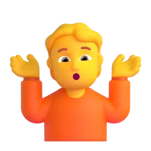
I didn't plan it.
We didn't use special lights.
Did your grandma know the dance?
Where did you film it?
4
Осторожно!
❌ I didn't posted it. → ✅ I didn't post it. После didn't — без -ed.
❌ Did you saw it? → ✅ Did you see it? После did — обычный глагол.
❌ You did film it? → ✅ Did you film it? Did — в начало.
bStep 1. Write didn't.Шаг 1. Напишите didn't.
I posted the video, but I read all the comments.
Grandma know the dance.
We use a camera — just a phone.
cStep 2. Choose.Шаг 2. Выберите.
Max didn't special lights.
Did she the dance?
you see my video? — Yes, I did!
Did they film it at home? — No, they .
When you post it?
He didn't to bed late.
dStep 3. Write.Шаг 3. Напишите.
I (not / like) the music.
you (try) the challenge?
What your grandma (say)?
eStep 4. Build the questions. Then ask your teacher!Шаг 4. Соберите вопросы и задайте преподавателю.
Max's post
6 min
a Max writes a post about the story. Use everything from today.Макс пишет пост об этой истории. Всё вместе.
@max_and_grandma
Hi everyone! Last Saturday I (film) a short video with my grandma.
I (post) it and (go) to bed.
In the morning it (have) a million (просмотров)!
We (not / plan) it — it was a joke!
(you / see) the comments? People were so nice!
Now Grandma is a (автор контента) too 😂
-ed: /t/, /d/ or /ɪd/
4 min
a The -ed sounds different! /t/ — liked, watched · /d/ — filmed, shared · /ɪd/ (a new syllable!) — posted, edited. Press 🔊 and repeat.-ed звучит по-разному: /t/, /d/ или /ɪd/ (лишний слог только после t и d!).
posted /ɪd/
filmed /d/
liked /t/
shared /d/
edited /ɪd/
watched /t/
b Press 🔊. Which sound? Only listen!Нажмите 🔊. Какой звук? Только на слух!
→
→
→
→
→
→
two truths and a lie
8 min
aStep 1. Answer your teacher. Short answer + one more sentence.Шаг 1. Короткий ответ + ещё одно предложение.
Press the button · Нажмите кнопку
What apps did you use yesterday?
Did you watch any funny videos last week? What was it about?
Did you ever post a video? What was it?
What did you do last weekend?
Which trend did you see last month?
Did you try a challenge? Which one?
Who is your favourite creator? Why?
When did you get your first phone?
Yes, I did. / No, I didn't.I watched…I saw a video about…It was funny / crazy / boring.
bStep 2. Two truths and a lie! Tell your teacher three things you did last month. One is a lie! Your teacher asks Did you really…? and guesses. Then swap.Шаг 2. Три факта о прошлом месяце, один — неправда. Преподаватель задаёт вопросы «Did you really…?» и угадывает.
Last month I…Did you really…?When did you…?I think it's a lie!
my story online
5 min
a Write a short post about something funny or cool that happened to you (or a video you saw). Five sentences.Напишите короткий пост о том, что с вами случилось (или о видео, которое вы видели). Пять предложений.
Example: Last Sunday I went to the park with my friends. We filmed a skate video. I fell three times! We didn't post it — it was too funny. But my brother saw it and laughed for ten minutes.
b Press «Отправить преподавателю».Нажмите «Отправить преподавателю».
Готово? Отправьте ответы преподавателю
Ответы сразу придут преподавателю на платформу — пересылать в Telegram ничего не нужно. Нет интернета? Ответы сохранятся и отправятся сами. Открыть их может только преподаватель.
Can you…?
3 min
a Listen to your teacher. Repeat the corrected sentences.Послушайте преподавателя и повторите исправленные фразы.
Great!
Let's fix
b Can you do these things?Вы можете это сделать?
I can understand a story and a podcast about going viralпонять историю и подкаст
I can use 12 social media wordsиспользовать 12 слов про соцсети
I can tell a story in the past: I posted… it went viralрассказать историю в прошедшем
I can ask and say «no»: Did you…? I didn't…вопросы и «нет» с did
What topics do you want in the next lessons? · Какие темы хотите на следующих уроках?
social media
10 min at home
Homework, part 1 of 2: words. Mostly tapping — easy on your phone. Part 2 (grammar) is on the next page — press «Далее».Часть 1: слова урока. Ответы сохраняются сами.
a Which word?Какое слово?
→
→
→
→
→
→
b How do you say it in English?Как это по-английски?
подписчик →
лайк →
завируситься →
делиться, репостить →
снимать (видео) →
past simple
15 min at home
Homework, part 2 of 2: grammar. Look at the formulas, then tap or type. At the end press «Отправить преподавателю».Часть 2: грамматика. В конце — «Отправить преподавателю».
Remember · Запомнитеposted · went · didn't post · Did you post?
I+posted+it.
I+didn't+post+it.
Did+you+post+it?
➕ -ed / неправильная форма · ➖❓ did / didn't + обычный глагол
a Choose.Выберите.
I a funny video yesterday. (see)
She the post. (share)
We to the cinema last night. (go)
He like the music.
you post it? — Yes, I did.
Did she a lot of likes?
b Write.Напишите.
Max (edit) the video on his phone.
Grandma (make) a lot of mistakes.
They (not / use) a camera.
c Build the sentences.Соберите предложения.
d Your story: three sentences about last week.Ваша история: три предложения о прошлой неделе.
Готово? Отправьте ответы преподавателю
Ответы сразу придут преподавателю на платформу — пересылать в Telegram ничего не нужно. Нет интернета? Ответы сохранятся и отправятся сами. Открыть их может только преподаватель.
extra practice
10 min
What to do
Build the sentences: tap the words in the right order. Made a mistake? Press «↺ Заново».
Find the mistake in each sentence and write the correct sentence.
Press «Проверить» after each exercise.
1. Build the sentence
2. Find the mistake
It goed viral.
I didn't posted it.
Did you saw my video?
I post it yesterday.
Play and review
10 min
Game time!Слова урока в играх: пары, скорость, буквы и даже детектив. Выбирайте любую.
What to do · Что делать
Play with the words from this lesson — great for review before the next lesson!Играйте со словами урока — это лучший способ повторить их.
Your best results are saved and your teacher can see them.Лучшие результаты сохраняются, преподаватель их видит.
Match upНайди пару
Tap a word, then its meaning. As fast as you can! · Нажмите слово, потом его значение.
60 seconds60 секунд
Choose the right word for the meaning. How many in one minute? · Сколько слов успеете за минуту?
Listen and spellУслышь и напиши
Listen to the word and write it. Press 🔊 to hear it again. · Послушайте слово и напишите его.
MemoryМемори
Find the pairs: a word and its meaning. Remember where the cards are! · Откройте по две карточки и найдите пары «слово — значение».
Word builderСобери слово
The letters are mixed up. Tap them in the right order. · Буквы перепутались — нажимайте их по порядку и соберите слово.
BalloonsВоздушные шарики
Guess the word letter by letter. Every wrong letter pops a balloon! · Угадайте слово по буквам. Каждая неверная буква лопает шарик.
DetectiveДетектив
Solve the case! Each clue is a task with this lesson's words and grammar. Every right answer clears one suspect. · Раскройте дело: каждая улика — задание по словам и грамматике урока.
IRIS SCHOOL · Екатерина · урок 2
A New Life by the Sea
Olga from our last lesson, a year and a half after her big change: settling in, missing home and feeling at home. Grammar step by step: I've lived here for two years / since 2024 — and I moved or I've lived?
“East or West, home is best.”English proverb
B1Life changesPresent perfect: for / sincePresent perfect or past simple60 min
a new life: settling in
10 min
In this lesson you will…
learn 10 phrases about living in a new place10 фраз о жизни на новом месте
understand a podcast interview with Olga — a year and a half after her big changeпонять интервью с Ольгой — через полтора года после переезда
say how long: I've lived here for two years / since 2024говорить «сколько времени»: for / since
choose: I moved (When?) or I've lived (How long?)выбирать: past simple или present perfect
talk about your home, your friends and your life — step by stepрассказать о себе — по шагам
a Remember Olga from our last lesson? She was stuck in a rut, took a year off and moved to Montenegro. A year and a half later — what is her life like? Look at the pictures and guess.Помните Ольгу из прошлого урока? Она взяла год отдыха и переехала в Черногорию. Какая у неё жизнь через полтора года? Посмотрите на картинки и предположите.
by the seapaintinghomesick?new friendsa new languagecalls home
b Go to the Vocabulary Bank. Tap each card, press 🔊 and repeat. Then match the meanings.Нажимайте на карточки, слушайте и повторяйте. Потом выберите фразу к значению.
Vocabulary Bank2ASettling in
to feel sad because you are far from home →
a person who lives in a place →
to learn a language by listening, not in lessons →
to talk or write to someone regularly →
to feel that you belong to a group or a place →
a confused feeling in a new culture →
c Complete the sentences. Tap the missing word.Вставьте пропущенное слово.
I really my mum. I call her every day.
It took me a year to fit at my new job.
Do you still keep in with your school friends?
He earns a as a taxi driver.
I picked some Spanish when I lived in Madrid.
In the first month she was very and cried every evening.
Olga's fresh start
10 min
a Now listen to the podcast «Fresh Starts». Lucy interviews Olga. You will hear the words from the Vocabulary Bank. How does Olga feel about her new life now?Послушайте подкаст: Люси берёт интервью у Ольги. Вы услышите слова урока. Как Ольга чувствует себя сейчас?
Podcast: «Fresh Starts»Listen first · Если быстро — нажмите 🐢 · Текст — в конце
Lucy (host):Hello and welcome to «Fresh Starts», the podcast about people who changed their lives. My guest today is Olga. She was an accountant in Kazan, and now she lives in a small village by the sea in Montenegro. Olga, how long have you lived here?
Olga:I've lived here for about a year and a half. I moved here in March last year.
Lucy (host):Why did you decide to move abroad?
Olga:For twenty years I was stuck in a rut: home, office, home. So I took a year off and came here. It was the best decision of my life.
Lucy (host):Was it easy at first?
Olga:No, not at all! It was a real culture shock. Everything was different: the food, the language, even the time people have dinner. And I was terribly homesick. I missed my family and my friends.
Lucy (host):And how do you feel now?
Olga:Now I feel at home here. I've made a lot of friends, and the locals are very kind. My neighbour Milena is my best friend here. I've known her since my first day in the village.
Lucy (host):Do you speak the language?
Olga:A little! I've picked up a lot of words from Milena and her family. And I've studied with a teacher since January.
Lucy (host):How do you earn a living?
Olga:I paint! I took up painting when I arrived, and I've sold more than sixty pictures since then. Last month I opened a tiny gallery by the sea.
Lucy (host):Do you keep in touch with your friends in Kazan?
Olga:Of course. We have a video call every Sunday. My sister visited me in the summer, and she loved it here.
Lucy (host):Are you going to go back?
Olga:I don't think so. I went to Kazan last Christmas, but I haven't been back since then. Honestly, this life is a dream come true. I think I've finally settled down.
How does Olga feel about her new life now?
b Listen again. Complete the facts — one word or a number.Послушайте ещё раз. Допишите одно слово или число.
Olga has lived in Montenegro for about a year and a .
She moved there in last year.
She has known Milena since her first in the village.
She has studied with a teacher since .
She has sold more than pictures.
She talks to her friends in Kazan every .
c Look at Olga's sentences. Is it a finished moment in the past (When?) or something that started in the past and is still true now (How long?)? This is the grammar of the next stage.Законченный момент в прошлом (Когда?) или началось в прошлом и продолжается сейчас (Как долго?)? Это грамматика следующего этапа.
I moved here in March last year. →
I've lived here for about a year and a half. →
I took up painting when I arrived. →
I've known her since my first day. →
I went to Kazan last Christmas. →
I haven't been back since then. →
present perfect + for / since
13 min
a Read the Grammar Bank. All the examples are like Olga's sentences from the podcast. Look at the colours: the formula has two parts.Прочитайте Grammar Bank. Все примеры — как фразы Ольги из подкаста. Формула из двух частей.
Grammar Bank2Apresent perfect + for / since: How long?
have / has + V3I've lived hereI've known · she's had · we've been · I haven't seen
+
for + a period · since + a pointfor two years · since 2024for a week · for ages · since March · since I was a child
It started in the past and it is still true now. The question: How long have you…?
for + a period (сколько времени)
since + a point (с какого момента)
for two days · for a week · for six months
since Monday · since March · since 2025
for a year and a half · for a long time · for ages
since my first day · since then · since I was a child
❌ I live here for two years. ❌ I know her since my first day. ❌ How long do you live here? ❌ I've lived here since two years.
✅ I've lived here for two years. ✅ I've known her since my first day. ✅ How long have you lived here? ✅ I've lived here for two years.
Подсказка. По-русски мы говорим в настоящем времени: «Я живу здесь два года», «Я знаю её с первого дня». В английском, если действие началось в прошлом и продолжается до сих пор, нужен present perfect: I've lived, I've known. «… лет / месяцев / дней» → for. «с …» → since.
bStep 1. For or since?Шаг 1. for или since?
a year and a half
March
2025
ten years
my first day
a long time
last Christmas
two weeks
cStep 2. From Russian to English. Choose the correct sentence.Шаг 2. С русского на английский. Выберите верное предложение.
«Я живу здесь полтора года.» →
«Я знаю Милену с первого дня.» →
«Сколько ты здесь живёшь?» →
«Я не была в Казани с Рождества.» →
dStep 3. Write have / has + V3.Шаг 3. Напишите have / has + третью форму.
Olga (live) in Montenegro for a year and a half.
She (know) Milena since her first day.
I (have) this car for ten years.
We (be) friends since school.
I (not / see) my brother since June.
How long (you / work) here?
eStep 4. Build the questions. Then ask your teacher one of them — your teacher answers with for or since.Шаг 4. Соберите вопросы и задайте один преподавателю.
Olga's gallery
7 min
a Olga has a website for her new gallery. Read the «About me» page. You already know a lot from the podcast — what is new?Прочитайте страницу «Обо мне» на сайте галереи Ольги. Что нового вы узнали?
Olga's Gallery · About mea website page · about 150 words
My name is Olga. I was born in Kazan, and I lived there for forty-four years. I worked as an accountant in a big company for twenty years. It wasn't a bad job, but I was stuck in a rut.
In March 2025 I took a year off and moved to Montenegro. I've lived in this little village since then. My year off finished long ago, but I haven't gone back to my old job!
I took up painting in my first month here, and I've painted almost every day since that spring. Last month I opened this gallery. Since then more than three hundred people have visited it. Come and see my pictures — the gallery is open every day from ten to six.
b True or false?Верно или нет?
Olga worked as an accountant for twenty years. →
She still works as an accountant. →
She has lived in the village since March 2025. →
She started painting before she moved. →
She opened the gallery a year ago. →
The gallery is open every day. →
c Compare: I lived there for forty-four years and I've lived in this little village since then. Does Olga still do it? Look at the verb. This is the next grammar.Ольга делает это до сих пор? Посмотрите на форму глагола — это следующая грамматика.
I lived there for forty-four years. →
I worked as an accountant for twenty years. →
I've lived in this little village since then. →
I've painted almost every day since that spring. →
Last month I opened this gallery. →
present perfect or past simple?
10 min
a Read the Grammar Bank. The examples are from Olga's website. One question helps every time: is it still true now?Прочитайте Grammar Bank. Помогает один вопрос: это правда и сейчас?
Grammar Bank2Apresent perfect or past simple?
past simple · When?I moved here in 2025.in March · last year · two years ago · when I arrived · finished: for 20 years
≠
present perfect · How long?I've lived here since 2025.for a year and a half · since then · still true now
Ask yourself: Is it still true now? Yes → present perfect. No, it's finished → past simple.
❌ I've moved here in 2025. ❌ When have you moved here? ❌ She's worked as an accountant for twenty years. (she doesn't now)
✅ I moved here in 2025. (in 2025, ago, last… → past simple) ✅ When did you move here? ✅ She worked as an accountant for twenty years. (finished)
Подсказка. «Я работала бухгалтером 20 лет» — сейчас уже нет → past simple: I worked. «Я живу здесь с 2025 года» — и сейчас тоже → present perfect: I've lived. Слова-подсказки: When? ago, last…, in 2025 → past simple. How long? since → present perfect. А for бывает в обоих — смотрите, закончилось или нет.
bStep 1. Still true or finished? Tap the verb.Шаг 1. Продолжается или закончилось? Выберите глагол.
Olga to Montenegro in March 2025.
She there since then.
She as an accountant for twenty years, but now she's an artist.
I my husband for twenty-five years. We're still very happy.
Two years ago we a flat in the city centre.
My grandmother in Samara for ten years, and then she moved to Moscow.
cStep 2. When? or How long? Tap the question word and the verb.Шаг 2. When? или How long? Выберите.
did Olga move to Montenegro? — In March 2025.
has she lived there? — For about a year and a half.
When she take up painting? — In her first month there.
How long she known Milena? — Since her first day.
dStep 3. Write the verb: past simple or present perfect.Шаг 3. Напишите глагол: past simple или present perfect.
I (move) to this flat three years ago.
I (live) here since 2023.
When (you / start) learning English?
How long (you / have) your car?
My parents (be) married for forty years — the party is next month!
Olga (open) her gallery last month.
eStep 4. Build the sentences.Шаг 4. Соберите предложения.
Olga's message
6 min
a Olga writes to Irina, her old colleague from Kazan. Use everything from today: the phrases, for / since, present perfect or past simple.Ольга пишет бывшей коллеге. Всё вместе: слова урока + for / since + present perfect или past simple.
Olga → Irina
Hi Irina! I (not / write) to you for ages — sorry!
I (live) here for a year and a half now, and I finally feel at .
In the first winter I was very homesick. I (miss) you all terribly!
But I (make) a lot of friends since then, and the locals are lovely.
I've picked quite a lot of the language from my neighbours.
Last month I (open) a little gallery — now I earn a from my pictures!
How long (you / work) in your new office? Let's keep in !
've and 's; weak for
5 min
a In speech, have and has are very short: I've /aɪv/, she's /ʃiːz/. For is weak: /fə/. The big words are strong. Listen and repeat.have / has звучат очень коротко, for — слабо /fə/. Громко — только главные слова.
I've LIVED here for a YEAR and a HALF.
She's KNOWN MiLEna since her FIRSTDAY.
How LONG have you LIVED here?
I MOVED here TWO years aGO.
b Can you hear 've or 's? Press 🔊 and choose what you hear.Слышите ли вы 've или 's? Нажмите 🔊 и выберите.
→
→
→
→
→
→
my life: how long and when
6 min
a Your turn to be Olga's guest on the podcast! Press the button and answer in two sentences: one with How long (I've… for / since…) and one with When (I… ago / in…).Ваша очередь быть гостем подкаста. Отвечайте двумя предложениями: «как долго» и «когда».
Press the button · Нажмите кнопку
How long have you lived in your town? When did you move there?
How long have you lived in your flat or house?
How long have you known your best friend? Where did you meet?
How long have you had your phone? When did you buy it?
How long have you studied English? When did you start?
Imagine you moved abroad like Olga. What would you miss most?
I've lived here for… / since…I moved here … years ago.I've known her since we were…We met in…If I moved abroad, I would miss…
my mini-interview
5 min
a The podcast «Fresh Starts» wants to know about you. Write one sentence in each line — use for / since and the past simple.Подкаст хочет узнать о вас. Напишите по одному предложению в каждой строке.
b Press «Отправить преподавателю» — your teacher will see your answers.Нажмите «Отправить преподавателю».
Готово? Отправьте ответы преподавателю
Ответы сразу придут преподавателю на платформу — пересылать в Telegram ничего не нужно. Нет интернета? Ответы сохранятся и отправятся сами. Открыть их может только преподаватель.
Can you…?
3 min
a Listen to your teacher. Write the corrected sentences.Послушайте преподавателя и запишите исправленные фразы.
Great!
Fix it
b Can you do these things?Вы можете это сделать?
I can talk about a new life with the new phrasesговорить о жизни на новом месте новыми фразами
I can say how long: I've lived here for… / since…сказать «как долго» с for / since
I can choose between I moved and I've livedвыбрать past simple или present perfect
I can ask How long have you…? and When did you…?задать вопросы How long…? и When…?
Was the grammar clear today? What was difficult? · Понятна ли была грамматика?
settling in
15 min at home
Homework, part 1 of 2: words. Mostly tapping — easy on your phone. Part 2 (grammar) is on the next page — press «Далее».Часть 1: слова урока. Ответы сохраняются сами.
a Look at the picture. Which phrase is it?Какая фраза подходит к картинке?
Anna lives in London, but she often feels sad when she thinks about her family in Russia. →
On his first day at the new job, Tom met three nice people and they had lunch together. →
Marco was born in this village and has lived here all his life. →
Sam and his old school friend write to each other every week. →
In Japan everything was new and strange for Lisa: the food, the rules, the language. →
Max learned some Italian from his neighbours, without any lessons. →
b How do you say it in English? Write the phrase.Как это по-английски? Напишите фразу.
чувствовать себя как дома →
скучать (по кому-то) →
зарабатывать на жизнь →
вписаться, стать своим →
заводить друзей →
for / since · present perfect or past simple
15 min at home
Homework, part 2 of 2: grammar. Look at the colour formulas, then tap or type. At the end press «Отправить преподавателю».Часть 2: грамматика урока. В конце — «Отправить преподавателю».
Remember · ЗапомнитеHow long? — present perfect
I+'ve lived+here+for two years.
She+'s known+him+since 2020.
«Живу здесь два года» — и сейчас тоже → have / has + V3. Период → for, точка отсчёта → since.
Remember · ЗапомнитеWhen? — past simple
I+moved+here+two years ago.
When+did you+move+here?
Законченный момент: ago, last…, in 2024, when… → past simple.
a For or since? Tap.for или since?
I've had my cat three years.
I've had my cat 2022.
I've had my cat my birthday.
I've had my cat a long time.
I've had my cat last summer.
I've had my cat six months.
b Write have / has + V3.Напишите have / has + V3.
My sister (live) in Kazan since 2019.
I (know) Anna for twenty years.
We (not / see) our cousins since the summer.
How long (you / have) this flat?
c Present perfect or past simple? Tap.Present perfect или past simple?
I to Moscow five years ago.
I in Moscow since then. I love it!
My father in a factory for thirty years. Now he is retired.
When your new job?
How long your best friend?
d Build the sentences.Соберите предложения.
e About you. Four true sentences.О себе: четыре предложения.
Готово? Отправьте ответы преподавателю
Ответы сразу придут преподавателю на платформу — пересылать в Telegram ничего не нужно. Нет интернета? Ответы сохранятся и отправятся сами. Открыть их может только преподаватель.
extra practice
10 min
What to do
Build the sentences: tap the words in the right order. Made a mistake? Press «↺ Заново».
Find the mistake in each sentence and write the correct sentence.
Press «Проверить» after each exercise.
1. Build the sentence
2. Find the mistake
I live here since 2020.
How long do you know Anna?
I've moved here two years ago.
We have been friends since ten years.
Play and review
10 min
Game time!Слова урока в играх: пары, скорость, буквы и даже детектив. Выбирайте любую.
What to do · Что делать
Play with the words from this lesson — great for review before the next lesson!Играйте со словами урока — это лучший способ повторить их.
Your best results are saved and your teacher can see them.Лучшие результаты сохраняются, преподаватель их видит.
Match upНайди пару
Tap a word, then its meaning. As fast as you can! · Нажмите слово, потом его значение.
60 seconds60 секунд
Choose the right word for the meaning. How many in one minute? · Сколько слов успеете за минуту?
Listen and spellУслышь и напиши
Listen to the word and write it. Press 🔊 to hear it again. · Послушайте слово и напишите его.
MemoryМемори
Find the pairs: a word and its meaning. Remember where the cards are! · Откройте по две карточки и найдите пары «слово — значение».
Word builderСобери слово
The letters are mixed up. Tap them in the right order. · Буквы перепутались — нажимайте их по порядку и соберите слово.
BalloonsВоздушные шарики
Guess the word letter by letter. Every wrong letter pops a balloon! · Угадайте слово по буквам. Каждая неверная буква лопает шарик.
DetectiveДетектив
Solve the case! Each clue is a task with this lesson's words and grammar. Every right answer clears one suspect. · Раскройте дело: каждая улика — задание по словам и грамматике урока.
IRIS SCHOOL · Екатерина · урок 3
The Busiest Week
Olga has a big order: ten paintings by Friday! And her old colleague Irina has news, too. Phrases about being busy and making progress, a video call and a blog — and the present perfect continuous: I've been painting since six, I've finished seven. Step by step, with Russian hints.
“It does not matter how slowly you go as long as you do not stop.”Confucius
B1Busy timespresent perfect continuoussimple or continuous60–70 min
busy times: projects and progress
10 min
In this lesson you will…
learn 10 phrases about being busy and making progress10 фраз: заняты, делаем успехи, не сдаёмся
understand a video call between Olga and her old colleague Irinaпонять видеозвонок Ольги и Ирины
say what you've been doing: I've been painting since sixpresent perfect continuous: have been + -ing
choose: I've finished six (How many?) or I've been working all day (How long?)simple или continuous
tell your news — step by stepрассказать свои новости — по шагам
a Olga from Montenegro again! Her little gallery is doing well, and this week she has a big order. Look at the pictures. What do you think has happened?Снова Ольга из Черногории! У неё большой заказ. Посмотрите на картинки — что, по-вашему, случилось?
a hotelten picturesFriday!worn outrunning?a video call
b Go to the Vocabulary Bank. Tap each card, press 🔊 and repeat. Then match the meanings.Нажимайте на карточки, слушайте и повторяйте. Потом выберите фразу к значению.
Vocabulary Bank2BBusy times
to start doing a new hobby or sport →
to like something a lot →
to stop trying →
to be very tired →
to have no more of something →
the day when work must be finished →
c Complete the sentences. Tap the missing word.Вставьте пропущенное слово.
I've taken the guitar. I practise every evening.
Don't give ! You're nearly there.
We've run out milk. Can you buy some?
I'm really looking forward the holidays.
Your English is great — you've made a lot of !
He's really cooking. He watches cooking videos every day.
a video call
10 min
a Irina, Olga's old colleague from Kazan, calls her. Both of them have news. Listen once. Why is Olga so busy?Ирина, бывшая коллега Ольги, звонит ей. У обеих новости. Послушайте один раз: почему Ольга так занята?
A video call: Kazan — MontenegroListen first · Если быстро — нажмите 🐢 · Текст — в конце
Irina:Olga! Hi! You look tired. What have you been doing?
Olga:Hi, Irina! I've been painting since six o'clock this morning. Look — I'm covered in paint! A hotel has asked me for ten pictures, and the deadline is on Friday.
Irina:Ten pictures! How many have you finished?
Olga:I've finished six. I've been working on the seventh all day, but it isn't right yet. And I've run out of blue paint!
Irina:Have you been sleeping enough?
Olga:Not really. I'm worn out! But I love it. And what about you? What have you been doing?
Irina:Well, you won't believe it — I've taken up running! I've been running three times a week since September.
Olga:Running? You? You always hated sport!
Irina:I know! But I've been getting better. Last Sunday I ran ten kilometres. And I've been learning Spanish, too — for about two months.
Olga:Wow! Have you made much progress?
Irina:A little. I've learned about five hundred words. Next summer I'm going to Spain!
Olga:Then come to Montenegro on the way! I'm really looking forward to seeing you.
Why is Olga so busy?
b Listen again. Complete the facts — one word or a number.Послушайте ещё раз. Допишите одно слово или число.
Olga has been painting since o'clock this morning.
The deadline is on .
She has finished pictures.
Irina has been running since .
Last Sunday Irina ran kilometres.
Irina has learned about Spanish words.
c Look at their sentences. Is it about the activity (how long — been + -ing) or the result (how many — V3)? This is the grammar of the next stage.Это про процесс (как долго — been + -ing) или про результат (сколько — V3)? Это грамматика следующего этапа.
I've been painting since six o'clock. →
I've finished six. →
I've been working on the seventh all day. →
I've been running three times a week since September. →
I've learned about five hundred words. →
present perfect continuous: have been + -ing
13 min
a Read the Grammar Bank. All the examples are like Olga's and Irina's sentences from the call. Look at the colours: the formula has two parts.Прочитайте Grammar Bank. Примеры — как фразы Ольги и Ирины. Формула из двух частей.
Grammar Bank2Bpresent perfect continuous: How long have you been…?
have / has + beenI've beenshe's been · we've been · I haven't been
+
verb + -ingpainting since sixfor two months · all day · since September
An activity started in the past and it is still going on (or has just stopped — you can see it: «I'm covered in paint!»). The question: How long have you been…?
❌ I paint since six o'clock. ❌ I'm learning Spanish for two months. ❌ How long are you running? ❌ She's been run since September.
✅ I've been painting since six o'clock. ✅ I've been learning Spanish for two months. ✅ How long have you been running? ✅ She's been running since September.
Подсказка. По-русски опять настоящее время: «Я рисую с шести утра», «Ирина бегает с сентября». Если действие — процесс, который начался в прошлом и идёт до сих пор, в английском: have / has been + -ing. Как и на прошлом уроке: «… часов / месяцев» → for, «с …» → since.
bStep 1. From Russian to English. Choose the correct sentence.Шаг 1. С русского на английский. Выберите верное предложение.
«Я рисую с шести утра.» →
«Ирина бегает с сентября.» →
«Сколько ты уже ждёшь?» →
«Мы учим испанский уже два месяца.» →
cStep 2. Write have / has been + -ing.Шаг 2. Напишите have / has been + -ing.
Olga (paint) since six.
I (learn) Spanish for two months.
We (wait) for the bus for twenty minutes.
It (rain) all morning.
How long (you / run)?
She (not / sleep) well this week.
dStep 3. Build the questions. Then ask your teacher one of them — your teacher answers with for or since.Шаг 3. Соберите вопросы и задайте один преподавателю.
eStep 4. About you. One sentence.Шаг 4. Одно предложение о себе.
Olga's blog
7 min
a Olga writes a blog about her life by the sea. Read her new post. How many paintings has she finished?Прочитайте новый пост в блоге Ольги. Сколько картин она уже закончила?
Olga by the Sea · The busiest week of my lifea blog post · about 150 words
This has been the busiest week of my life. On Monday a hotel in Kotor asked me for ten paintings of the sea — by Friday! Since then I've been working from six in the morning till late at night.
So far I've finished seven paintings. I've been trying to finish the eighth since yesterday, but the light is wrong. I've used twelve tubes of paint and I've broken two brushes. My neighbour Milena has been bringing me lunch every day — I've known her for a year and a half, and she's the best friend I've ever had.
I'm worn out, but I haven't given up. Three more paintings to go! I've been listening to the same song all week to keep going. Wish me luck!
How many paintings has Olga finished?
b True or false?Верно или нет?
Olga has been working very long days this week. →
She has finished all ten paintings. →
She has been trying to finish the eighth painting since yesterday. →
Milena has been bringing her dinner. →
Olga met Milena a year and a half ago. →
Olga has decided to give up. →
c Compare: I've finished seven paintings and I've been working from six in the morning. Is it the result (how many?) or the activity (how long?)? This is the next grammar.Результат (сколько?) или процесс (как долго?)? Это следующая грамматика.
I've finished seven paintings. →
I've been working from six in the morning. →
I've used twelve tubes of paint. →
I've been listening to the same song all week. →
simple or continuous?
10 min
a Read the Grammar Bank. The examples are from Olga's blog. One question helps every time: the result (how many?) or the activity (how long?)Прочитайте Grammar Bank. Помогает один вопрос: результат (сколько?) или процесс (как долго?)
Grammar Bank2Bpresent perfect simple or continuous?
simple · the result · How many? How much?I've finished seven paintings.I've learned 500 words · she's run 10 km · I've broken two brushes
≠
continuous · the activity · How long?I've been working all week.since six · all day · for two months
Ask yourself: a number / a result → simple. How long / the process → continuous. know, have (= own), like, be — only simple: I've known her for years.
❌ I've been finishing seven paintings. ❌ I've been knowing Milena for a year and a half. ❌ How many words have you been learning? ❌ I'm tired because I've worked in the garden. (and I'm dirty)
✅ I've finished seven paintings. (how many → simple) ✅ I've known Milena for a year and a half. (know → only simple) ✅ How many words have you learned? ✅ I'm tired because I've been working in the garden.
Подсказка. «Я закончила семь картин» — есть результат, его можно посчитать → I've finished. «Я работаю с шести утра» — процесс, важно «как долго» → I've been working. Слова-подсказки: how many, how much, три, семь, уже… → simple. how long, all day, since, for + действие → continuous. Глаголы-состояния (know, have, like, be) не бывают с -ing.
bStep 1. Simple or continuous? Tap.Шаг 1. Simple или continuous?
I three paintings this week.
I on this painting all day — and it still isn't right!
I Milena for a year and a half.
Why are you so dirty? — I in the garden.
How many words ?
How long for me? Sorry I'm late!
She her phone for five years.
I'm so hot! I .
cStep 2. Write the verbs. Think: result or activity?Шаг 2. Напишите глаголы. Результат или процесс?
Irina (run) three times a week since September.
So far she (lose) four kilos.
Olga (paint) all week, and she (finish) seven pictures.
I (know) Irina since 2005.
dStep 3. About you: one result and one activity.Шаг 3. О себе: один результат и один процесс.
Olga's message
6 min
a Olga writes to her neighbour Milena. Use everything from today: the phrases, have been + -ing, simple or continuous.Ольга пишет соседке Милене. Всё вместе: слова урока + have been + -ing + simple или continuous.
Olga → Milena
Milena, thank you! You (bring) me lunch every day this week!
Good news: I (finish) nine paintings!
I (work) on the last one since this morning.
I've out of white paint again — can I borrow yours?
I'm worn , but I'm not going to give .
Irina called yesterday. She (take) up running — can you believe it?
She's coming next summer. I'm really looking forward seeing her!
weak been /bɪn/
5 min
a In speech, have and been are very short and weak: I've been /aɪv bɪn/. The big words are strong. Listen and repeat.have и been звучат очень коротко: /aɪv bɪn/. Громко — только главные слова.
I've been PAINting since SIX.
She's been RUNning since SepTEMber.
How LONG have you been WAIting?
WHAT have you been DOing?
bBeen + -ing or not? Press 🔊 and choose what you hear.Есть been + -ing или нет? Нажмите 🔊 и выберите.
→
→
→
→
→
→
what have you been doing lately?
6 min
a Your turn! Press the button and answer in two sentences: one about the activity (I've been …ing for / since…) and one about a result (I've … (how many)).Ваша очередь. Отвечайте двумя предложениями: процесс и результат.
Press the button · Нажмите кнопку
What have you been doing lately?
How long have you been learning English? What have you learned this month?
Have you taken up anything new this year?
What have you been reading or watching lately? How many episodes / pages have you…?
What are you really into at the moment? How long have you been into it?
What are you looking forward to?
I've been …ing for… / since…I've … (three / a lot of)…I've taken up…I'm really into…I'm looking forward to…
my news
5 min
a Write a short message to an old friend — like Irina and Olga. One sentence in each line.Напишите короткое сообщение старому другу — как Ирина и Ольга. По предложению в каждой строке.
b Press «Отправить преподавателю» — your teacher will see your answers.Нажмите «Отправить преподавателю».
Готово? Отправьте ответы преподавателю
Ответы сразу придут преподавателю на платформу — пересылать в Telegram ничего не нужно. Нет интернета? Ответы сохранятся и отправятся сами. Открыть их может только преподаватель.
Can you…?
3 min
a Listen to your teacher. Write the corrected sentences.Послушайте преподавателя и запишите исправленные фразы.
Great!
Fix it
b Can you do these things?Вы можете это сделать?
I can talk about being busy and making progress with the new phrasesговорить о занятости и успехах новыми фразами
I can say what I've been doing: I've been …ing for… / since…сказать, чем занимаюсь: have been + -ing
I can choose between I've finished (how many?) and I've been working (how long?)выбрать simple или continuous
I can ask How long have you been…? and What have you been doing?задать вопросы How long…? What have you been doing?
Was the grammar clear today? What was difficult? · Понятна ли была грамматика?
busy times
15 min at home
Homework, part 1 of 2: words. Mostly tapping — easy on your phone. Part 2 (grammar) is on the next page — press «Далее».Часть 1: слова урока. Ответы сохраняются сами.
a Read and choose the phrase.Прочитайте и выберите фразу.
Last month Sasha started going to a painting class. →
After twelve hours at work Kate could hardly stand. →
There's no coffee left in the jar. →
Max's Spanish is much better than in September. →
The run was hard, but Irina didn't stop. →
The report must be ready by 5 p.m. on Monday. →
b How do you say it in English? Write the phrase.Как это по-английски? Напишите фразу.
с нетерпением ждать →
бросить, сдаться →
увлекаться (чем-то) →
становиться лучше в (чём-то) →
have been + -ing · simple or continuous
15 min at home
Homework, part 2 of 2: grammar. Look at the colour formulas, then tap or type. At the end press «Отправить преподавателю».Часть 2: грамматика урока. В конце — «Отправить преподавателю».
Remember · ЗапомнитеHow long? — have been + -ing
I+'ve been+painting+since six.
She+'s been+running+for a month.
«Я рисую с шести» — процесс идёт до сих пор → have / has been + -ing.
Remember · ЗапомнитеHow many? — have + V3
I+'ve finished+seven paintings.
I+'ve known+her+for years.
Результат, число → simple. know, have, like, be → только simple.
a Write have / has been + -ing.Напишите have / has been + -ing.
I (wait) for an hour!
Olga (paint) all week.
How long (you / learn) English?
They (not / sleep) well lately.
b Simple or continuous? Tap.Simple или continuous?
I two books this month.
I this book all evening — it's great!
We each other since school.
Your eyes are red! ?
How many kilometres today?
c Build the sentences.Соберите предложения.
d About you: three sentences.О себе: три предложения.
Готово? Отправьте ответы преподавателю
Ответы сразу придут преподавателю на платформу — пересылать в Telegram ничего не нужно. Нет интернета? Ответы сохранятся и отправятся сами. Открыть их может только преподаватель.
extra practice
10 min
What to do
Build the sentences: tap the words in the right order. Made a mistake? Press «↺ Заново».
Find the mistake in each sentence and write the correct sentence.
Press «Проверить» after each exercise.
1. Build the sentence
2. Find the mistake
I paint since six o'clock.
I'm learning Spanish for two months.
How long are you waiting?
I've been knowing her for years.
Play and review
10 min
Game time!Слова урока в играх: пары, скорость, буквы и даже детектив. Выбирайте любую.
What to do · Что делать
Play with the words from this lesson — great for review before the next lesson!Играйте со словами урока — это лучший способ повторить их.
Your best results are saved and your teacher can see them.Лучшие результаты сохраняются, преподаватель их видит.
Match upНайди пару
Tap a word, then its meaning. As fast as you can! · Нажмите слово, потом его значение.
60 seconds60 секунд
Choose the right word for the meaning. How many in one minute? · Сколько слов успеете за минуту?
Listen and spellУслышь и напиши
Listen to the word and write it. Press 🔊 to hear it again. · Послушайте слово и напишите его.
MemoryМемори
Find the pairs: a word and its meaning. Remember where the cards are! · Откройте по две карточки и найдите пары «слово — значение».
Word builderСобери слово
The letters are mixed up. Tap them in the right order. · Буквы перепутались — нажимайте их по порядку и соберите слово.
BalloonsВоздушные шарики
Guess the word letter by letter. Every wrong letter pops a balloon! · Угадайте слово по буквам. Каждая неверная буква лопает шарик.
DetectiveДетектив
Solve the case! Each clue is a task with this lesson's words and grammar. Every right answer clears one suspect. · Раскройте дело: каждая улика — задание по словам и грамматике урока.
IRIS SCHOOL · Алексей · Хеллоуин
The Business of Fear
Rachel used to be an accountant. Twelve years ago she quit and started «Fright Farm», a Halloween scare attraction. She's been running it ever since — and this October she's sold 40,000 tickets. A career move with a twist, and the grammar from our last lesson: I've been running… I've sold…
“Do one thing every day that scares you.”Mary Schmich
B2HalloweenPresent perfect simple vs continuousBusiness60–65 min
The Halloween business
10 min
In this lesson you will…
use 10 B2 words for business and career change
understand a business podcast
choose between I've been doing and I've done
talk about your own career with for / since
write a short professional profile
a Happy Halloween! 🎃 In the UK and the US, Halloween is big business. Look at the pictures. Which business would make the most money?
I reckon … would be the most profitable because…The problem with … is…It depends on…
b Go to the Vocabulary Bank. Tap each card, press 🔊 and repeat. Then do the exercises.
Vocabulary Bank🎃The Halloween business
only happening at one time of the year →
to earn as much as you spend →
a small, special part of a market →
to start offering different products or services →
all the actors in a show →
with no tickets left →
c Complete the sentences.
She her job and started her own company.
They the app last spring.
It took us three years to break .
You need to be a bit of a risk- to start a business.
Ice cream is a business — summer only.
We hired a of 120 actors.
«Career Moves» podcast
12 min
a Listen to an episode of the business podcast «Career Moves». Rachel Hart runs a Halloween scare attraction. Listen once: was her career move a good idea?
Podcast «Career Moves»: Rachel Hart, Fright FarmListen first · Use 🐢 if it's fast · Text at the end
Host:Rachel, you used to be an accountant. Now you run one of the biggest scare attractions in England. How did that happen?
Rachel Hart:Ha-ha, I've always loved horror films. Twelve years ago I quit my job, sold my flat and launched Fright Farm on my uncle's farm in Kent.
Host:That sounds risky!
Rachel Hart:It was. We didn't break even for three years. But I've been running it for twelve years now, and we've grown every single year.
Host:What does this October look like?
Rachel Hart:Crazy! We've sold forty thousand tickets, and every weekend has been sold out since the first of October. We've been working eighteen-hour days.
Host:How big is the team?
Rachel Hart:This year we've hired a cast of a hundred and twenty actors. Some of them have been coming back every year since we started.
Host:But it's a very seasonal business. What do you do the rest of the year?
Rachel Hart:That's the big challenge. Recently we've been diversifying: we've opened two escape rooms, and we've been testing a Christmas event — with friendly zombies!
Host:Any advice for listeners who are thinking about a career change?
Rachel Hart:Find your niche. And don't be afraid of being scared — I've been scared for twelve years, and I've loved every minute.
Was the career move a good idea for Rachel?
b Now answer the cards.
What was Rachel's job before?
How long did it take to break even?
How many tickets have they sold this October?
How many actors are in the cast this year?
How have they been diversifying?
d Look at the verbs from the podcast. Choose the right form. Remember «Career Moves»?
I it for twelve years now.
We forty thousand tickets.
We eighteen-hour days.
We two escape rooms.
«We've sold 40,000 tickets» — why the simple form?
present perfect simple vs continuous
12 min
a Read the Grammar Bank. The examples are from Rachel's interview.
Grammar Bank🎃present perfect simple vs continuous
present perfect continuous
present perfect simple
focus
the activity, how long, it may continue
the result, how many / how much, completed
example
I've been running it for twelve years.
We've sold forty thousand tickets.
recent activity with visible effects
We've been working eighteen-hour days. (that's why we're tired)
—
state verbs
✗ I've been loving
I've loved every minute. I've always loved horror films.
Finished time (twelve years ago, in 2014) → past simple: I quit my job twelve years ago.
Both are possible with work / live / run: I've run / I've been running it for twelve years.
I this company since 2014.
How many tickets this week?
You look exhausted! all night?
She the business in 2014.
I him for years — he's one of our best actors.
We three new products this year.
b Write the verbs in the present perfect simple or continuous (or the past simple).
Rachel (run) Fright Farm for twelve years.
They (hire) 120 actors this year.
Recently they (test) a Christmas event.
She (quit) her job twelve years ago.
c Build the sentences.
Rachel's profile
6 min
a Complete Rachel's professional profile. Use everything from today. One to three words in each gap.
I trained as an accountant, but in 2014 I (quit) my job.
That year I Fright Farm, a scare attraction in Kent.
It's a very business, so for the last two years we've been diversifying.
Since then we (open) two escape rooms.
This October every weekend has been sold .
Our cast (rehearse) since August — they're amazing!
My advice? Find your and don't be afraid to take risks.
careers and risks
10 min
a Answer your teacher's questions. Use the present perfect simple and continuous.
Press the button
How long have you been working in your current job?
What have you achieved this year that you're proud of?
Would you ever quit a stable job to start your own business?
Is Halloween becoming a business in Russia? What other seasonal businesses do you know?
What have you been doing recently to develop your career?
Do you consider yourself a risk-taker?
I've been working as… for / since…So far I've…Recently I've been…I quit / started … in…
bGame: The pitch. Press the button for a Halloween business idea. You have 60 seconds to pitch it to your teacher (an investor). The investor asks: How long have you been…? How many … have you…?
Press the button
🎃 A pumpkin delivery app
🧛 Costume rental for corporate parties
🏚️ A VR haunted house
🍬 Healthy Halloween sweets
📸 A spooky photo studio
🎬 A horror film club in a cinema
🦇 Halloween team-building for IT companies
👻 Ghost tours of Moscow
a professional profile
6 min
a Write a short professional profile for yourself (80–100 words), like Rachel's. Use the present perfect simple and continuous and the past simple.
b Press «Отправить преподавателю» — your teacher will see your answers.
Готово? Отправьте ответы преподавателю
Ответы сразу придут преподавателю на платформу — пересылать в Telegram ничего не нужно. Нет интернета? Ответы сохранятся и отправятся сами. Открыть их может только преподаватель.
Can you…?
3 min
a Your teacher gives feedback. Write the corrections.
Great!
Let's fix
b Can you do these things?
I can use B2 words for business and career change
I can understand a business podcast
I can choose the present perfect simple or continuous
I can talk and write about my career
What was the most fun thing today? · Что понравилось больше всего?
The Halloween business
10 min at home
Homework, part 1 of 2: words. Mostly tapping — easy on your phone. Part 2 (grammar) is on the next page — press «Далее».Часть 1: слова урока. Ответы сохраняются сами.
a Which word is it?Какое это слово?
It only happens in October. →
There are no tickets left. →
We earned as much as we spent. →
They started a new app. →
She left her job. →
b How do you say it in English?Как это по-английски?
ниша →
диверсифицировать →
актёрский состав →
сезонный →
present perfect simple vs continuous
15 min at home
Homework, part 2 of 2: grammar. Look at the rule, then tap or type. At the end press «Отправить преподавателю».Часть 2: грамматика урока. В конце — «Отправить преподавателю».
Remember · Запомнитеpresent perfect simple vs continuous
I've been+running it+for twelve years.
We've+sold+40,000 tickets.
I+quit+in 2014.
how long / activity → been + -ing · how many / result → have + V3 · finished time → past simple
a Tap the right form.Выберите правильную форму.
I English for three years.
How many emails today?
She here since 2020.
I the report — here it is.
They the company in 2019.
b Write the words.Напишите слова.
I'm tired because I (work) all day.
We (sign) three contracts this month.
How long you (know) your boss?
c About you. Write true sentences.О себе: напишите предложения.
Готово? Отправьте ответы преподавателю
Ответы сразу придут преподавателю на платформу — пересылать в Telegram ничего не нужно. Нет интернета? Ответы сохранятся и отправятся сами. Открыть их может только преподаватель.
extra practice
10 min
What to do
Build the sentences: tap the words in the right order. Made a mistake? Press «↺ Заново».
Find the mistake in each sentence and write the correct sentence.
Press «Проверить» after each exercise.
1. Build the sentence
2. Find the mistake
I've been knowing him for years.
I've quit my job twelve years ago.
We've been selling 40,000 tickets this month.
I work here since 2014.
Spooky Games
10–15 min
Spooky GamesГотическая сказка на Хеллоуин: тыквы, надгробия и котёл ведьмы — со словами и грамматикой вашего урока.
What to do · Что делать
Choose a game. Every game uses the words and grammar of this Halloween lesson.Выберите игру — все они на словах и грамматике хеллоуинского урока. Лучший результат сохраняется.
Pumpkin PatchТыквенная грядка
Words pop out of the pumpkins. Read the meaning and tap the right pumpkin — fast! · Слова выглядывают из тыкв: прочитайте значение и нажмите нужную тыкву, пока она не спряталась.
Graveyard of WordsКладбище слов
The words are written on old tombstones. Tap them in the right order to build the sentence. · Слова на надгробиях — нажимайте по порядку и соберите предложение.
The Witch's CauldronКотёл ведьмы
Is the sentence correct? Throw it into the potion — or into the swamp! · Верное предложение — в зелье, с ошибкой — в болото.
Match upНайди пару
Tap a word, then its meaning. As fast as you can! · Нажмите слово, потом его значение.
MemoryМемори
Find the pairs: a word and its meaning. · Откройте по две карточки и найдите пары.
BalloonsВоздушные шарики
Guess the word letter by letter. · Угадайте слово по буквам.
Listen and spellУслышь и напиши
Listen to the word and write it. · Послушайте слово и напишите его.
IRIS SCHOOL · Дмитрий · Хеллоуин
The Ghost in the Machine
Halloween night, 3 a.m., an empty office in London. The printers start printing by themselves, the lights flicker, and a white figure walks past the CCTV camera. A ghost — or a very clever attacker? Both of our grammar topics in one: The system must have been accessed remotely.
“Any sufficiently advanced technology is indistinguishable from magic.”Arthur C. Clarke
B2HalloweenModals of deductionThe passiveMediation60–65 min
Glitches and ghosts
10 min
In this lesson you will…
use 10 B2 words for IT incidents — and the supernatural
read an incident report and a debrief
make deductions about the past with the passive: It must have been accessed…
explain a technical incident to a non-technical person
write a short incident summary
a Happy Halloween! 🎃 Have you ever seen IT do something «spooky»? Look at the pictures. What could explain each one?
a printer printing by itselfflickering lightsa figure on CCTVa mouse moving aloneemails at 3 a.m.a power cut
It must be…It might be…It can't be a ghost — …
b Go to the Vocabulary Bank. Tap each card, press 🔊 and repeat. Then do the exercises.
Vocabulary Bank🎃Glitches and ghosts
a small, sudden technical problem →
from another place, via a network →
video recorded by security cameras →
that science cannot explain →
a trick to make people look silly →
to change something secretly →
c Complete the sentences.
The office lights started to at 3 a.m.
The server show who logged in.
I'm sure there is a explanation.
Someone must have tampered the settings.
A firmware was installed overnight.
It was just a Halloween by the interns.
Incident report #1031
12 min
a Read the incident report from Northgate Design — the company from your homework. What is the most likely explanation?
INCIDENT REPORT #1031 · «The 3 a.m. ghost»Northgate Design · IT security · 1 November
Summary On the night of 31 October, unusual activity was reported in the empty office on the third floor. At 03:07 all six printers started printing the same page: «HAPPY HALLOWEEN 👻». At 03:15 the lights flickered for about two minutes, and at 03:20 a white figure was recorded by the CCTV camera in the corridor.
What we found The server logs show that the printers were accessed remotely from an unknown IP address at 03:05. A firmware update had been installed on the printers two days earlier, and their default passwords had not been changed. The lights are controlled by a smart system, which was being tested by an external company that week.
The «ghost» The CCTV footage was analysed frame by frame. The figure is about 1.8 metres tall and is wearing a white sheet. It used a door that can only be opened with a staff card — the card of an intern, Josh, who said he had been at home all night.
Conclusion Nothing supernatural happened. However, three security issues were identified, and recommendations have been sent to the board.
What does the report conclude?
b Now answer the cards.
How were the printers controlled?
Why was this possible?
Who was testing the lighting system?
How did the «ghost» open the door?
Whose card was used?
d Find the passive in the report. Choose the right form. Then we'll combine it with modals of deduction!
Unusual activity in the empty office.
The printers remotely.
A firmware update two days earlier.
Recommendations to the board.
deduction + passive
12 min
a Read the Grammar Bank. The examples are about incident #1031.
Grammar Bank🎃modals of deduction + passive
how sure?
active
passive
✅ sure it's true
Someone must have accessed the printers.
The printers must have been accessed remotely.
🤔 possible
The interns might / could have planned it.
It might / could have been planned as a prank.
❌ sure it's not true
A ghost can't have opened the door.
The door can't / couldn't have been opened without a card.
now
Someone must be watching us.
The system must be being tested right now.
Passive past deduction: modal + have been + V3. Weak forms: must've been /ˈmʌstəvbɪn/.
❌ must have accessed (if the subject is the printers) → ✅ must have been accessed.
The default passwords — that's how they got in.
The page by somebody with a sense of humour.
The lights by the external company during the test.
Josh's card — or he is lying.
A ghost on CCTV. Ghosts don't wear sheets!
The systems right now — look at the logs.
bTransformation. Rewrite with a passive modal of deduction. Write the missing words.
I'm sure someone accessed the printers remotely. → The printers accessed remotely.
Perhaps the interns planned the prank. → The prank planned by the interns.
It's impossible that someone opened the door without a card. → The door opened without a card.
I'm sure somebody changed the settings. → The settings changed.
c Build the sentences.
The debrief
6 min
a You're writing notes for the board after incident #1031. Use everything from today. One to four words in each gap.
Security debrief · notes for the board
1. Nothing happened — there is a rational explanation for everything.
2. The printers (must / access) remotely at 03:05.
3. This was possible because the default passwords (not / change).
4. The lights (might / switch) on and off during the external test.
5. The CCTV was analysed frame by frame.
6. Josh's card (can't / use) by Josh — he was at home.
7. Someone must have with the card reader or borrowed the card.
8. Recommendation: all default passwords (must / change) immediately.
explain it to the CEO
10 min
aMediation. Your teacher is the CEO — worried, not technical, and a bit superstitious. Explain what happened on Halloween night. No jargon!
Press the button
So was it a ghost or not?
How could anyone print something without being in the office?
Why did the lights flicker?
Is Josh guilty?
Could this happen again? What must be done?
Do you believe in anything supernatural yourself?
In simple terms, …It must have been…It can't have been…Think of it like…What needs to be done is…
bGame: Glitch or ghost? Press the button for a strange event. Give two explanations — one technical (must / might have been…) and one «supernatural» for fun. Your teacher chooses the more convincing one.
Press the button
All the laptops in the office restarted at midnight.
The CEO's calendar shows a meeting with «Count Dracula».
The coffee machine made 31 coffees by itself.
The lift stopped on the 13th floor — the building has 12.
Every screen showed a pumpkin for one second.
A door badge was used by an employee who left in 2019.
The smart speaker started laughing at 3 a.m.
All the file names were changed to «BOO».
an incident summary
6 min
a Write a short summary of incident #1031 for all staff (100–120 words). Calm, clear, no jargon. Use at least three passive modals of deduction.
b Press «Отправить преподавателю» — your teacher will see your answers.
Готово? Отправьте ответы преподавателю
Ответы сразу придут преподавателю на платформу — пересылать в Telegram ничего не нужно. Нет интернета? Ответы сохранятся и отправятся сами. Открыть их может только преподаватель.
Can you…?
3 min
a Your teacher gives feedback. Write the corrections.
Great!
Let's fix
b Can you do these things?
I can use B2 words for IT incidents
I can understand an incident report
I can make deductions with passive modals: must / might / can't have been + V3
I can explain a technical incident simply
I can write a short summary
What was the most fun thing today? · Что понравилось больше всего?
Glitches and ghosts
10 min at home
Homework, part 1 of 2: words. Mostly tapping — easy on your phone. Part 2 (grammar) is on the next page — press «Далее».Часть 1: слова урока. Ответы сохраняются сами.
a Which word is it?Какое это слово?
a small, sudden technical problem →
The lights went on and off quickly. →
video from the security cameras →
The interns played a trick on us. →
Science cannot explain it. →
b How do you say it in English?Как это по-английски?
удалённо →
журнал (лог) →
вмешиваться, подделывать →
рациональное объяснение →
deduction + passive
15 min at home
Homework, part 2 of 2: grammar. Look at the rule, then tap or type. At the end press «Отправить преподавателю».Часть 2: грамматика урока. В конце — «Отправить преподавателю».
Remember · Запомнитеmodals of deduction + passive
The printers+must have been+accessed+remotely.
The door+can't have been+opened+without a card.
modal + have been + V3 · must = sure · might / could = possible · can't / couldn't = impossible
a Tap the right form.Выберите правильную форму.
The window — the glass is on the floor inside.
The email by the CEO — he was on a plane.
The files by mistake. Nobody is sure.
The server right now — it is very slow.
The data before the attack — we're lucky!
b Write the words.Напишите слова.
I'm sure someone changed the password. → The password changed.
It's impossible that the server was switched off. → The server switched off.
Maybe the virus was sent by email. → The virus sent by email.
c About you. Write true sentences.О себе: напишите предложения.
Готово? Отправьте ответы преподавателю
Ответы сразу придут преподавателю на платформу — пересылать в Telegram ничего не нужно. Нет интернета? Ответы сохранятся и отправятся сами. Открыть их может только преподаватель.
extra practice
10 min
What to do
Build the sentences: tap the words in the right order. Made a mistake? Press «↺ Заново».
Find the mistake in each sentence and write the correct sentence.
Press «Проверить» after each exercise.
1. Build the sentence
2. Find the mistake
The printers must have accessed remotely.
The door mustn't have been opened without a card.
It might be planned as a prank last night.
The card must have stolen.
Spooky Games
10–15 min
Spooky GamesГотическая сказка на Хеллоуин: тыквы, надгробия и котёл ведьмы — со словами и грамматикой вашего урока.
What to do · Что делать
Choose a game. Every game uses the words and grammar of this Halloween lesson.Выберите игру — все они на словах и грамматике хеллоуинского урока. Лучший результат сохраняется.
Pumpkin PatchТыквенная грядка
Words pop out of the pumpkins. Read the meaning and tap the right pumpkin — fast! · Слова выглядывают из тыкв: прочитайте значение и нажмите нужную тыкву, пока она не спряталась.
Graveyard of WordsКладбище слов
The words are written on old tombstones. Tap them in the right order to build the sentence. · Слова на надгробиях — нажимайте по порядку и соберите предложение.
The Witch's CauldronКотёл ведьмы
Is the sentence correct? Throw it into the potion — or into the swamp! · Верное предложение — в зелье, с ошибкой — в болото.
Match upНайди пару
Tap a word, then its meaning. As fast as you can! · Нажмите слово, потом его значение.
MemoryМемори
Find the pairs: a word and its meaning. · Откройте по две карточки и найдите пары.
BalloonsВоздушные шарики
Guess the word letter by letter. · Угадайте слово по буквам.
Listen and spellУслышь и напиши
Listen to the word and write it. · Послушайте слово и напишите его.
IRIS SCHOOL · Екатерина · Хеллоуин
A Haunted House for Sale
A beautiful old house by the sea — and very cheap. Why has nobody lived there since 1998? An estate agent, a curious couple and a few strange stories. The present perfect from our last lesson: How long has it been empty? It's been empty since… The last owner left in…
“Every house where love abides… is home.”Henry van Dyke
B1HalloweenPresent perfect: for / sinceor past simple60 min
Houses and haunted houses
10 min
In this lesson you will…
learn 10 words about houses and ghost stories10 слов: дома и истории о привидениях
understand a house viewing with an estate agentпонять разговор с агентом
use How long have…? for / since and the past simplepresent perfect с for / since и past simple
write an advert for a spooky houseнаписать объявление
a Happy Halloween! 🎃 Would you buy a house if it was very cheap — but people said it was haunted? Look at the pictures.
an old houseby the seaa candlea creaky dooran old mirrorkeys
I'd buy it because…I wouldn't because…I think the story is…
b Go to the Vocabulary Bank. Tap each card, press 🔊 and repeat. Then do the exercises.Нажимайте на карточки, слушайте и повторяйте. Потом — упражнения.
Vocabulary Bank🎃Houses and haunted houses
a person whose job is selling houses →
the room under the roof →
the room under the house →
a little wet in a bad way →
to repair an old building and make it like new →
with nobody living there →
c Complete the sentences.Вставьте пропущенное слово.
The floor is old and .
The house used to to a sea captain.
We have a of the house on Saturday.
That old doll gives me the .
It needs a lot of work — we'll have to everything.
Put the old boxes in the under the roof.
The house on Cliff Road
12 min
a Sophie and Mark want to move to the sea. On 31st October they view a very cheap old house. Listen once: do they buy it?
A viewing: the house on Cliff RoadListen first · Use 🐢 if it's fast · Text at the end
Mr Price (the estate agent):Welcome to number thirteen, Cliff Road! As you can see, it has wonderful views of the sea.
Sophie:It's beautiful! But why is it so cheap? How long has it been for sale?
Mr Price (the estate agent):Well… it's been for sale for five years. And it's been empty since 1998.
Mark:Since 1998? Why did the last owners leave?
Mr Price (the estate agent):They moved out very suddenly. They said they heard footsteps in the attic every night.
Sophie:Footsteps? Has anyone else heard them?
Mr Price (the estate agent):A few people have. But I've worked here for twenty years and I've never heard anything. Just the sea and the wind.
Mark:Who built the house?
Mr Price (the estate agent):A sea captain built it in 1850. It belonged to his family for a hundred years. He disappeared at sea on Halloween night.
Sophie:On Halloween? Today is Halloween!
Mr Price (the estate agent):Ha-ha, yes. Now, let's go up to the attic, shall we? Oh — that's strange. I've just locked this door…
Mark:Sophie… I think we should go.
Do Sophie and Mark buy the house?
b Now answer the cards.Ответьте на карточки.
How long has the house been for sale?
Since when has it been empty?
Why did the last owners leave?
How long has Mr Price worked as an agent?
When did the sea captain build the house?
d Look at the verbs in the conversation. Choose the right form. This is the grammar of the next stage.
How long for sale?
It's been empty 1998.
Why the last owners leave?
I've worked here twenty years.
«A sea captain built it in 1850.» Why the past simple?
present perfect or past simple
12 min
a Read the Grammar Bank. The examples are from the viewing.
Grammar Bank🎃present perfect: for / since · or past simple
form
example
from the past until now
have / has + V3 + for / since
It's been empty since 1998. I've worked here for twenty years.
how long?
How long have / has…?
How long has it been for sale?
finished time / when?
past simple
A sea captain built it in 1850. When did they leave?
for + a period: for five years, for a long time · since + a point: since 1998, since Monday, since I was a child.
Подсказка. «Дом пустует с 1998 года» — по-русски настоящее время, по-английски has been empty since 1998. Есть «когда» (in 1850, last year, ago) → past simple.
We in this flat since 2019.
How long your house?
They the house two years ago.
She has been an agent ten years.
I a ghost — never!
When the captain disappear?
b Write the verb: present perfect or past simple. Add for or since where you need it.
The house (be) empty since 1998.
The last owners (move) out in 1998.
How long you (know) your best friend?
I've wanted a house by the sea I was a child.
c Build the sentences.Соберите предложения.
Sophie's message
6 min
a Sophie writes to her sister after the viewing. Use everything from today. One or two words in each gap.
Sophie → her sister
We (see) a house by the sea today. It's beautiful — and very cheap!
But it (be) empty since 1998!
The estate was a bit strange.
He has worked there twenty years.
The stairs are and the cellar is damp.
A sea captain (build) it in 1850.
The attic door locked by itself — it gave me the !
I (not / sleep) well since the viewing… Should we buy it?
houses and ghost stories
10 min
a Answer your teacher's questions. Use the present perfect and the past simple.
Press the button
How long have you lived in your flat or house?
Where did you live before? When did you move?
Would you buy a cheap house if people said it was haunted?
Has anything strange ever happened in your home?
What is the oldest building you have ever been in?
Do people celebrate Halloween in your town? Since when?
I've lived there for / since…Before that I lived in… We moved in…I've never…Once…
bGame: The estate agent. You are selling a very strange house. Press the button for a problem — and turn it into something positive! Your teacher is the buyer and asks How long…? When…?
Press the button
The house has been empty for 30 years.
The lights switch on by themselves.
There is a ghost cat in the garden.
The piano plays at midnight.
Nobody has opened the cellar since 1960.
The last three owners left after one week.
The mirror shows a different room.
Every Halloween the doorbell rings at 3 a.m.
an advert for a spooky house
6 min
a Write an advert for a strange old house. Use the present perfect (for / since) and the past simple.
Example: FOR SALE: a beautiful old house by the sea! It has been in the same family for a hundred years, but it has been empty since 2005. A famous writer lived here in the 1920s. The stairs are a little creaky and some people have heard music at night — but the views are amazing!
b Press «Отправить преподавателю» — your teacher will see your answers.Нажмите «Отправить преподавателю».
Готово? Отправьте ответы преподавателю
Ответы сразу придут преподавателю на платформу — пересылать в Telegram ничего не нужно. Нет интернета? Ответы сохранятся и отправятся сами. Открыть их может только преподаватель.
Can you…?
3 min
a Your teacher gives feedback. Write the corrections.Преподаватель даёт обратную связь — запишите исправления.
Great!
Let's fix
b Can you do these things?Вы можете это сделать?
I can use 10 words about houses and ghost stories10 слов: дома и привидения
I can understand a house viewingпонять разговор с агентом
I can use the present perfect with for / sincepresent perfect с for / since
I can choose the present perfect or the past simpleвыбрать present perfect или past simple
What was the most fun thing today? · Что понравилось больше всего?
Houses and haunted houses
10 min at home
Homework, part 1 of 2: words. Mostly tapping — easy on your phone. Part 2 (grammar) is on the next page — press «Далее».Часть 1: слова урока. Ответы сохраняются сами.
a Which word is it?Какое это слово?
the room under the roof →
the room under the house →
The door makes a noise. →
She sells houses. →
We're going to make the old kitchen like new. →
b How do you say it in English?Как это по-английски?
пустой, нежилой →
сырой →
принадлежать →
просмотр (дома) →
present perfect or past simple
15 min at home
Homework, part 2 of 2: grammar. Look at the rule, then tap or type. At the end press «Отправить преподавателю».Часть 2: грамматика урока. В конце — «Отправить преподавателю».
Remember · Запомнитеpresent perfect: for / since · or past simple
It's been empty+since+1998.
I've worked here+for+20 years.
A captain+built+it in 1850.
до сих пор → have + V3 + for / since · «когда» (in 1850, ago) → past simple
a Tap the right form.Выберите правильную форму.
I here since January.
We moved to Moscow 2015.
How long your car?
She the job three years ago.
They've been married ten years.
b Write the words.Напишите слова.
I (know) her since school.
When you (buy) your flat?
We haven't seen them last summer.
c About you. Write true sentences.О себе: напишите предложения.
Готово? Отправьте ответы преподавателю
Ответы сразу придут преподавателю на платформу — пересылать в Telegram ничего не нужно. Нет интернета? Ответы сохранятся и отправятся сами. Открыть их может только преподаватель.
extra practice
10 min
What to do
Build the sentences: tap the words in the right order. Made a mistake? Press «↺ Заново».
Find the mistake in each sentence and write the correct sentence.
Press «Проверить» after each exercise.
1. Build the sentence
2. Find the mistake
The house is empty since 1998.
I work here for twenty years.
A captain has built it in 1850.
How long do you live here?
Spooky Games
10–15 min
Spooky GamesГотическая сказка на Хеллоуин: тыквы, надгробия и котёл ведьмы — со словами и грамматикой вашего урока.
What to do · Что делать
Choose a game. Every game uses the words and grammar of this Halloween lesson.Выберите игру — все они на словах и грамматике хеллоуинского урока. Лучший результат сохраняется.
Pumpkin PatchТыквенная грядка
Words pop out of the pumpkins. Read the meaning and tap the right pumpkin — fast! · Слова выглядывают из тыкв: прочитайте значение и нажмите нужную тыкву, пока она не спряталась.
Graveyard of WordsКладбище слов
The words are written on old tombstones. Tap them in the right order to build the sentence. · Слова на надгробиях — нажимайте по порядку и соберите предложение.
The Witch's CauldronКотёл ведьмы
Is the sentence correct? Throw it into the potion — or into the swamp! · Верное предложение — в зелье, с ошибкой — в болото.
Match upНайди пару
Tap a word, then its meaning. As fast as you can! · Нажмите слово, потом его значение.
MemoryМемори
Find the pairs: a word and its meaning. · Откройте по две карточки и найдите пары.
BalloonsВоздушные шарики
Guess the word letter by letter. · Угадайте слово по буквам.
Listen and spellУслышь и напиши
Listen to the word and write it. · Послушайте слово и напишите его.
IRIS SCHOOL · Иола · Хеллоуин
Spooky Superstitions
If you see a spider on Halloween, will something good happen? If you peel an apple in one long piece, will you see a secret letter? Old Scottish superstitions and fortune-telling games — with the first conditional and will / might from our last lesson.
“Superstition is the poetry of life.”Johann Wolfgang von Goethe
B1HalloweenFirst conditionalwill / mightExam-style60 min
Superstitions and luck
10 min
In this lesson you will…
use 10 B1 words about superstitions and luck
read an article and answer exam-style questions (B1 Preliminary, Reading Part 3)
say what will happen: If you see a black cat, you'll have good luck!
make predictions with will, won't, might
write a short article
a Happy Halloween! 🎃 Do you know any superstitions? Look at the pictures. Which bring good luck and which bring bad luck in Russia?
a black cata broken mirrora four-leaf clovera laddera spidersalt
In Russia people say that if…My grandma believes that…I don't believe in…, but…
b Go to the Vocabulary Bank. Tap each card, press 🔊 and repeat. Then do the exercises.Нажимайте на карточки, слушайте и повторяйте. Потом — упражнения.
Vocabulary Bank🎃Superstitions and luck
a person who says they can see your future →
to really happen →
to take the skin off fruit →
magic words that make something happen →
to say what will happen in the future →
bringing bad things →
c Complete the sentences.Вставьте пропущенное слово.
I hope my dream will come .
Good luck in the test! I'm crossing my for you.
Let's play apple — who can catch an apple first?
The witch said a and the frog became a prince.
Some people think thirteen is an number.
Nobody can the future!
Maya's Halloween article
12 min
a Remember Maya from the survival camp and Eco Week? She has written an article for her school magazine about Halloween in Scotland. Read it. Which superstition would you like to try?
Halloween in Scotland: luck, apples and spidersa school magazine · by Maya, 12 · about 330 words
My grandmother lives in a small village in the Highlands, and every Halloween she tells us the old superstitions. Some are funny, some are a bit scary — and some, she says, always come true!
Apples Apples are very important on Halloween. If you peel an apple in one long piece and throw the peel over your shoulder, it will land in the shape of a letter. That letter is the first letter of the name of the person you will marry! Last year my peel made a perfect «S». I don't know anybody called S… yet.
Apple bobbing We also play apple bobbing. The apples float in a big bowl of water, and you have to catch one with your teeth — no hands! Grandma says that if you catch an apple on your first try, you will have good luck all year. If you get your face wet, you might catch a cold!
Spiders and cats Most people are scared of spiders, but in Scotland a spider on Halloween is a good sign. If you see one, it means that someone who loves you is watching over you. And black cats? In Scotland a strange black cat at your door brings money!
Do I believe it? Not really. But I'm still going to peel an apple on Saturday, and if I see a spider, I won't scream. Well, I might scream a little.
What is Maya's article mainly about?
b Now answer the cards.Ответьте на карточки.
According to the superstition, the apple peel shows…
In apple bobbing you must catch an apple…
What happens if you catch an apple on your first try?
In Scotland a spider on Halloween means…
How does Maya feel about the superstitions?
c Find the words in the article.Напишите ответы.
a good — something that shows good things will happen (para 4)
to stay on water, not go down (para 3)
d Look at the if-sentences in the article. Choose the right form. This is the grammar from «The World in 2050»!
If you peel an apple in one long piece, it in the shape of a letter.
If you an apple on your first try, you will have good luck.
If you get your face wet, you catch a cold!
If I see a spider, I scream.
first conditional + predictions
12 min
a Read the Grammar Bank. The examples are from Maya's article.
Grammar Bank🎃first conditional · will / might
if + present simple
will / won't / might + verb
If you catch an apple on your first try,
you'll have good luck all year.
If I see a spider,
I won't scream. (I might scream a little!)
Unless you cross your fingers, (= if you don't)
it won't work!
❌ If you will peel… → ✅ If you peel… — no will after if!
How sure? will = sure · might = maybe · won't = no.
Подсказка. После if — настоящее время, will — во второй части. might = «может быть».
If you a ladder, you will have bad luck.
If I break a mirror, I seven years of bad luck!
It's cloudy. It rain later — I'm not sure.
you hurry, you will miss the party.
If you don't wear a costume, you get any sweets!
If it tomorrow, we will play apple bobbing inside.
b Put the verbs in the right form.
If you (find) a four-leaf clover, you (be) lucky.
If Maya (see) a spider, she (not / scream).
You (not / get) the apple unless you (try) again.
I'm not sure, but the prediction come true. (maybe)
c Build the sentences.Соберите предложения.
Iola's superstitions
6 min
a Maya asked YOU to write about Russian superstitions for her magazine. Use everything from today. One or two words in each gap.
«Superstitions in Russia» · for Maya's magazine
In Russia we have lots of too!
If a black cat (cross) the road in front of you, you will have bad luck.
If you sit on the corner of a table, you (not / get) married for seven years!
If you forget something at home, you shouldn't go back — or your day go badly. (maybe)
Before an exam, students put a coin in their shoe. If you do this, the exam (go) well!
I'll cross my for you!
Maybe these superstitions won't come , but they're fun.
you believe, they will not work! (= if you don't)
superstitions (Speaking Part 4)
10 min
aSpeaking Part 4 style. Answer and give a reason and an example!
Press the button
Are you superstitious? Why / why not?
What will you do if you see a black cat tomorrow?
Do you have a lucky number, colour or object?
Would you like to visit a fortune-teller? What would you ask?
Do people celebrate Halloween in your school?
What will you do this weekend if the weather is nice?
If I…, I'll…I might…I don't think it will…For example…
bGame: The fortune-teller 🔮 Your teacher is the fortune-teller! Press the button for a «crystal ball» card and make a prediction for your teacher with If you…, you will / might… Then swap!
Press the button
🍎 an apple peel in the shape of «M»
🕷️ a spider on your pillow
🐈 a black cat at your door
🌕 a full moon on your birthday
🪞 a cracked mirror
🍀 a four-leaf clover in your pocket
🦉 an owl outside your window
⭐ a falling star on Halloween
an article (Writing Part 2)
6 min
aB1 Preliminary, Writing Part 2. An English magazine for teenagers asks: «What superstitions do people in your country have? Do you believe them?» Write your article (about 100 words).
b Press «Отправить преподавателю» — your teacher will see your answers.Нажмите «Отправить преподавателю».
Готово? Отправьте ответы преподавателю
Ответы сразу придут преподавателю на платформу — пересылать в Telegram ничего не нужно. Нет интернета? Ответы сохранятся и отправятся сами. Открыть их может только преподаватель.
Can you…?
3 min
a Your teacher gives feedback. Write the corrections.Преподаватель даёт обратную связь — запишите исправления.
Great!
Let's fix
b Can you do these things?Вы можете это сделать?
I can use B1 words about superstitions and luck
I can answer exam-style reading questions
I can use the first conditional (and unless)
I can make predictions with will, won't, might
I can write a short article
What was the most fun thing today? · Что понравилось больше всего?
Superstitions and luck
10 min at home
Homework, part 1 of 2: words. Mostly tapping — easy on your phone. Part 2 (grammar) is on the next page — press «Далее».Часть 1: слова урока. Ответы сохраняются сами.
a Which word is it?Какое это слово?
She says she can see your future. →
Take the skin off the apple. →
Catch an apple in water with your teeth! →
The prediction really happened! →
I hope for good luck. →
b How do you say it in English?Как это по-английски?
суеверие →
заклинание →
предсказывать →
несчастливый →
first conditional + predictions
15 min at home
Homework, part 2 of 2: grammar. Look at the rule, then tap or type. At the end press «Отправить преподавателю».Часть 2: грамматика урока. В конце — «Отправить преподавателю».
Remember · Запомнитеfirst conditional · will / might
If+you see a spider,+you'll be lucky.
Unless+you hurry,+you'll miss it.
после if — настоящее время · will / might — во второй части · unless = if not
a Tap the right form.Выберите правильную форму.
If you hard, you will pass the exam.
If it's sunny, we to the beach.
I come to the party — I'm not sure yet.
you leave now, you will be late.
If she doesn't take an umbrella, she wet.
b Write the words.Напишите слова.
If you (break) a mirror, you (have) bad luck.
We (not / go) out if it rains.
It snow tomorrow. (maybe)
c About you. Write true sentences.О себе: напишите предложения.
Готово? Отправьте ответы преподавателю
Ответы сразу придут преподавателю на платформу — пересылать в Telegram ничего не нужно. Нет интернета? Ответы сохранятся и отправятся сами. Открыть их может только преподаватель.
extra practice
10 min
What to do
Build the sentences: tap the words in the right order. Made a mistake? Press «↺ Заново».
Find the mistake in each sentence and write the correct sentence.
Press «Проверить» after each exercise.
1. Build the sentence
2. Find the mistake
If you will see a spider, you'll be lucky.
If I break a mirror, I have bad luck tomorrow.
It might to rain.
Unless you don't hurry, you'll miss it.
Spooky Games
10–15 min
Spooky GamesГотическая сказка на Хеллоуин: тыквы, надгробия и котёл ведьмы — со словами и грамматикой вашего урока.
What to do · Что делать
Choose a game. Every game uses the words and grammar of this Halloween lesson.Выберите игру — все они на словах и грамматике хеллоуинского урока. Лучший результат сохраняется.
Pumpkin PatchТыквенная грядка
Words pop out of the pumpkins. Read the meaning and tap the right pumpkin — fast! · Слова выглядывают из тыкв: прочитайте значение и нажмите нужную тыкву, пока она не спряталась.
Graveyard of WordsКладбище слов
The words are written on old tombstones. Tap them in the right order to build the sentence. · Слова на надгробиях — нажимайте по порядку и соберите предложение.
The Witch's CauldronКотёл ведьмы
Is the sentence correct? Throw it into the potion — or into the swamp! · Верное предложение — в зелье, с ошибкой — в болото.
Match upНайди пару
Tap a word, then its meaning. As fast as you can! · Нажмите слово, потом его значение.
MemoryМемори
Find the pairs: a word and its meaning. · Откройте по две карточки и найдите пары.
BalloonsВоздушные шарики
Guess the word letter by letter. · Угадайте слово по буквам.
Listen and spellУслышь и напиши
Listen to the word and write it. · Послушайте слово и напишите его.
IRIS SCHOOL · Ксения · Хеллоуин
A Night to Remember
Remember Jack and his terrible Tuesday? His Halloween night was even stranger! Footsteps in the dark park, a white mask — and a video on the internet. I was walking… when I heard… — the past simple and continuous from lesson 2B.
“There's no such thing as ghosts. But I still sleep with the light on.”A Halloween joke
IntermediateHalloweenPast simple & continuous60 min
Halloween and spooky stories
10 min
In this lesson you will…
learn 10 words for Halloween and spooky stories10 слов про Хеллоуин и страшные истории
understand a story on the phoneпонять историю по телефону
tell a story: I was walking… when I heard…рассказать историю: past simple и past continuous
write your own spooky storyнаписать свою историю
a Happy Halloween! 🎃 Look at the pictures. Which of these things are scary for you? Why?
a ghosta maska dark streetfootstepsa spidera zombie
I think … is the scariest because…I'm not afraid of…Once I…
b Go to the Vocabulary Bank. Tap each card, press 🔊 and repeat. Then do the exercises.Нажимайте на карточки, слушайте и повторяйте. Потом — упражнения.
Vocabulary Bank🎃Halloween and spooky stories
completely dark →
the sound of someone walking →
to shout very loudly because you are afraid →
to appear suddenly from a hiding place →
to make a video →
strange and a little scary →
c Complete the sentences.Вставьте пропущенное слово.
Kate dressed up a witch.
I heard a noise, so I turned .
A cat jumped of the box!
Who was hiding in the ?
Everybody when the lights went out.
He wore a scary on his face.
Jack's Halloween night
12 min
a Remember Jack from your homework? Emma calls him the day after Halloween. Listen once: was his night good or bad?
Phone call: Emma and JackListen first · Use 🐢 if it's fast · Text at the end
Emma:Jack! How was the Halloween party last night?
Jack:Don't ask! Well, OK — it was the strangest night of my life.
Emma:Why? What happened?
Jack:I was walking to Mike's house at about nine. It was raining and the streets were pitch-dark. While I was crossing the park, I heard footsteps behind me.
Emma:Oh no! Who was it?
Jack:I didn't know! I turned around, but there was nobody there. So I started to run.
Emma:And then?
Jack:When I got to Mike's door, a man in a white mask jumped out of the bushes! I screamed so loudly.
Emma:Ha-ha! Was it Mike?
Jack:Yes! He was waiting for me with his phone. He was filming the whole time! Now the video's on the internet.
Emma:Brilliant! What were you wearing?
Jack:A ghost costume. A ghost who's scared of ghosts — everybody's laughing at me!
What was Jack's night like?
b Now answer the cards.Ответьте на карточки.
When was Jack walking to Mike's house?
What was the weather like?
What did Jack hear in the park?
Who jumped out of the bushes?
What was Jack's costume?
d Look at the verbs in Jack's story. Choose the right form. This is the grammar of the next stage.
I to Mike's house at about nine.
I was crossing the park, I heard footsteps.
When I got to Mike's door, a man out of the bushes.
He for me with his phone.
«I was walking…» and «a man jumped out». Which was the longer action?
past simple & past continuous
12 min
a Read the Grammar Bank. The examples are from Jack's story.
Grammar Bank🎃past simple · past continuous · when / while
tense
use
example
past continuous was / were + -ing
a longer action in progress; the background
It was raining. I was walking to Mike's house…
past simple
a short action that interrupts it; events one after another
…when I heard footsteps. I turned around and started to run.
when + past simple (short action): I was walking when I heard footsteps.
while + past continuous (long action): While I was crossing the park, I heard footsteps.
Подсказка. «Шёл, и вдруг…» — длинное действие was …ing, а «вдруг» — past simple.
I TV when the lights went out.
While we pumpkins, the cat jumped on the table.
When I opened the door, a little witch «Trick or treat!»
The phone rang I was having a shower.
What at 10 o'clock last night?
She and ran out of the room.
b Write the verbs in the past simple or past continuous.
We (walk) home when it (start) to rain.
While Jack (cross) the park, he (hear) a noise.
Mike (hide) in the bushes when Jack (arrive).
I (turn) around, but nobody was there.
c Build the sentences.Соберите предложения.
Emma's post
6 min
a Emma writes a post about Jack's video. Use everything from today. One or two words in each gap.
Emma's post about Jack's video
Have you seen the video of my friend Jack? It (be) Halloween night.
It was raining and the park was pitch-.
Jack (walk) to a party when he heard footsteps.
He turned , but nobody was there!
When he got to the door, his friend Mike jumped of the bushes.
Jack (scream) so loudly!
Mike (film) everything on his phone.
And Jack was dressed up a ghost. A ghost who is scared of ghosts!
spooky stories
10 min
a Answer your teacher's questions. Use the past simple and the past continuous.
Press the button
Do people celebrate Halloween in your city? What do they do?
What were you doing at nine o'clock last night?
Have you ever been really scared? What happened?
Do you like horror films? Which one do you remember?
What did you dress up as when you were a child (New Year, a party…)?
Do you believe in ghosts? Why / why not?
I was …ing when…While I was…, I…Suddenly…In the end…
bGame: The Halloween alibi! Someone stole all the sweets from the party at 9 p.m. Press the button: answer the detective's question quickly with the past continuous. Then swap!
Press the button
Where were you at 9 p.m.?
What were you doing when the lights went out?
Who were you talking to at 8.45?
What were you wearing?
Why were you standing near the kitchen?
What was the music like when you arrived?
What were the other guests doing?
Why were your hands sticky?
your spooky story
6 min
a Write a short spooky story (true or not!). Use the past simple and the past continuous.
Example: Last Halloween I was walking home from work. It was raining and the street was pitch-dark. While I was crossing the road, I heard footsteps behind me. I turned around, but nobody was there. When I got home, I saw a pumpkin on my doorstep. My neighbour was laughing at the window!
b Press «Отправить преподавателю» — your teacher will see your answers.Нажмите «Отправить преподавателю».
Готово? Отправьте ответы преподавателю
Ответы сразу придут преподавателю на платформу — пересылать в Telegram ничего не нужно. Нет интернета? Ответы сохранятся и отправятся сами. Открыть их может только преподаватель.
Can you…?
3 min
a Your teacher gives feedback. Write the corrections.Преподаватель даёт обратную связь — запишите исправления.
Great!
Let's fix
b Can you do these things?Вы можете это сделать?
I can use 10 words for spooky stories10 слов для страшных историй
I can understand a story on the phoneпонять историю по телефону
I can use the past simple and continuous with when / whilepast simple и past continuous с when / while
I can tell and write a short storyрассказать и написать историю
What was the most fun thing today? · Что понравилось больше всего?
Halloween and spooky stories
10 min at home
Homework, part 1 of 2: words. Mostly tapping — easy on your phone. Part 2 (grammar) is on the next page — press «Далее».Часть 1: слова урока. Ответы сохраняются сами.
a Which word is it?Какое это слово?
The sound of someone walking. →
Completely dark. →
She shouted because she was afraid. →
He appeared suddenly from behind the door. →
He made a video on his phone. →
b How do you say it in English?Как это по-английски?
кусты →
маска →
обернуться →
жутковатый →
past simple & past continuous
15 min at home
Homework, part 2 of 2: grammar. Look at the rule, then tap or type. At the end press «Отправить преподавателю».Часть 2: грамматика урока. В конце — «Отправить преподавателю».
Remember · Запомнитеpast simple · past continuous · when / while
I was walking+when+I heard+footsteps.
While+I was crossing the park,+I heard+a noise.
длинное действие — was / were + -ing · короткое, «вдруг» — past simple
a Tap the right form.Выберите правильную форму.
I a book when the cat jumped on me.
While they dinner, the doorbell rang.
When the film finished, we home.
It when we left the party.
I saw a ghost I was walking home!
b Write the words.Напишите слова.
She (sleep) when the phone rang.
We (watch) a horror film when the lights (go) out.
He (not / see) the spider on his shoulder.
c About you. Write true sentences.О себе: напишите предложения.
Готово? Отправьте ответы преподавателю
Ответы сразу придут преподавателю на платформу — пересылать в Telegram ничего не нужно. Нет интернета? Ответы сохранятся и отправятся сами. Открыть их может только преподаватель.
extra practice
10 min
What to do
Build the sentences: tap the words in the right order. Made a mistake? Press «↺ Заново».
Find the mistake in each sentence and write the correct sentence.
Press «Проверить» after each exercise.
1. Build the sentence
2. Find the mistake
I walked home when I heard footsteps.
While I crossed the park, I heard a noise.
When I got to the door, a man was jumping out.
What did you do at 9 last night? I watched TV when…
Spooky Games
10–15 min
Spooky GamesГотическая сказка на Хеллоуин: тыквы, надгробия и котёл ведьмы — со словами и грамматикой вашего урока.
What to do · Что делать
Choose a game. Every game uses the words and grammar of this Halloween lesson.Выберите игру — все они на словах и грамматике хеллоуинского урока. Лучший результат сохраняется.
Pumpkin PatchТыквенная грядка
Words pop out of the pumpkins. Read the meaning and tap the right pumpkin — fast! · Слова выглядывают из тыкв: прочитайте значение и нажмите нужную тыкву, пока она не спряталась.
Graveyard of WordsКладбище слов
The words are written on old tombstones. Tap them in the right order to build the sentence. · Слова на надгробиях — нажимайте по порядку и соберите предложение.
The Witch's CauldronКотёл ведьмы
Is the sentence correct? Throw it into the potion — or into the swamp! · Верное предложение — в зелье, с ошибкой — в болото.
Match upНайди пару
Tap a word, then its meaning. As fast as you can! · Нажмите слово, потом его значение.
MemoryМемори
Find the pairs: a word and its meaning. · Откройте по две карточки и найдите пары.
BalloonsВоздушные шарики
Guess the word letter by letter. · Угадайте слово по буквам.
Listen and spellУслышь и напиши
Listen to the word and write it. · Послушайте слово и напишите его.
IRIS SCHOOL · Марина · Хеллоуин
The Halloween Party Planner
Lily the night owl is throwing a Halloween party — and Tom is coming! Costumes, pumpkins and a lot of plans: I'm meeting… I'm going to… I'll… The future forms from our last lesson, in a spooky mood.
“Where there is no imagination, there is no horror.”Arthur Conan Doyle
IntermediateHalloweenFuture forms60 min
Halloween and parties
10 min
In this lesson you will…
learn 10 words and phrases for Halloween and parties
understand a phone call about a party
talk about arrangements, plans and decisions: I'm meeting… I'm going to… I'll…
write a party invitation
a Happy Halloween! 🎃 Look at the pictures. Do you celebrate Halloween? What do people do on 31st October?
a pumpkina costumedecorationsa haunted housetrick-or-treatinga party
In Russia people…I think Halloween is…Last year I…
b Go to the Vocabulary Bank. Tap each card, press 🔊 and repeat. Then do the exercises.Нажимайте на карточки, слушайте и повторяйте. Потом — упражнения.
Vocabulary Bank🎃Halloween and parties
strange and a little scary →
to arrive →
to make someone afraid →
a party where everybody wears a costume →
things that make a room look special →
to organise a party at your home →
c Complete the sentences.Вставьте пропущенное слово.
I'm going to dress up a witch.
Who wants to the pumpkins?
The children are going tonight.
People say the old hotel is .
Don't worry if you're late — just !
We're a party for Halloween.
Lily calls Tom
12 min
a Remember Lily, the night owl, and her friend Tom? Lily calls Tom. Listen once: why does she call?
Phone call: Lily and TomListen first · Use 🐢 if it's fast · Text at the end
Lily:Hi Tom! Are you doing anything on Saturday night?
Tom:Not really. I'm meeting my sister for lunch, but the evening's free. Why?
Lily:I'm throwing a Halloween party! It's a fancy-dress party, so you have to dress up.
Tom:Brilliant! I'm going to dress up as a vampire. I've already bought the teeth.
Lily:Ha-ha! I'm going to be a witch, of course. A night owl and a witch — perfect!
Tom:What time does it start?
Lily:At eight. My neighbours are coming at seven to help with the decorations.
Tom:Then I'll come early too. I'll carve the pumpkins — I'm good at that.
Lily:Thanks! Oh no, I haven't got any pumpkins!
Tom:Don't worry, I'll buy some on my way. How many people are coming?
Lily:About twenty. I think it'll be really spooky — I'm going to turn my flat into a haunted house!
Tom:Your neighbours won't be happy. I'm sure it'll be loud!
Lily:They're coming to the party, so they won't complain!
Why does Lily call Tom?
b Now answer the cards.Ответьте на карточки.
What is Tom doing on Saturday afternoon?
What is Tom going to dress up as?
What time does the party start?
What will Tom do on his way to the party?
Why won't the neighbours complain?
d Look at the future forms in the call. Choose the right one. This is the grammar of the next stage.
I my sister for lunch. (it's arranged)
I dress up as a vampire. (my plan)
Then I come early too. (I decide now)
I think it really spooky. (a prediction)
Tom says «I'll carve the pumpkins». When did he decide?
future forms
12 min
a Read the Grammar Bank. The examples are from Lily and Tom's call.
Grammar Bank🎃present continuous · going to · will
form
use
example
present continuous
an arrangement: day, time, other people
I'm meeting my sister for lunch.
be going to
a plan you decided before
I'm going to dress up as a vampire.
will
a decision now, an offer, a promise
I'll buy some pumpkins on my way.
will / won't
a prediction (I think…, I'm sure…)
I'm sure it'll be loud. They won't complain.
Подсказка. Договорились (время, люди) → Present Continuous. Решила заранее → going to. Решила прямо сейчас, предлагаешь, обещаешь → will.
A: There's no music! B: Don't worry, I my speakers.
We dinner with friends on Friday at 8 — I booked a table.
I dress up as a witch this year — I've already bought the hat.
I think the party great!
It's dark already. I you home.
Look at those black clouds! It rain.
b Write the verb in the right future form.
Tom (meet) his sister at one o'clock tomorrow — it's arranged.
Lily (turn) her flat into a haunted house. That's her plan!
A: I'm cold. B: I (close) the window.
I'm sure the neighbours (not / complain).
c Build the sentences.Соберите предложения.
Lily's party message
6 min
a Lily sends a message to all her friends. Use everything from today: the Halloween words and the future forms. One or two words in each gap.
Lily → all her friends
Hi everyone! I'm a Halloween party on Saturday!
It's a fancy-dress party, so please dress up something scary.
My neighbours (come) at seven to help — it's arranged.
Tom (carve) the pumpkins — he offered!
I'm going to turn my flat into a house.
I think it (be) the best party of the year!
Don't worry if you're late — just turn !
Kids from our building are going trick-or- at six.
your plans
10 min
a Answer your teacher's questions. Use the future forms.
Press the button
What are you doing this weekend?
Are you going to celebrate Halloween this year? Why / why not?
What would you dress up as for a fancy-dress party?
Do you think Halloween will become more popular in Russia?
What are you going to do next month that you're excited about?
Have you ever been to a fancy-dress party? What did you wear?
bGame: Party problems! Press the button. Something goes wrong at Lily's party — react quickly with I'll… Then your teacher gets a problem!
Press the button
There's no ice for the drinks!
The music is too loud — the old lady upstairs is angry.
A guest has spilt red juice on the white sofa.
The lights have gone off and it's completely dark!
Ten more people have turned up — there are not enough chairs.
Someone's vampire teeth fell into the soup!
Tom's pumpkins are too small.
It's midnight and nobody wants to go home.
a party invitation
6 min
a Write an invitation to YOUR Halloween (or New Year) party. Use all three future forms.
Example: Hi everyone! I'm throwing a fancy-dress party on Saturday 31st! It starts at 8. I'm going to decorate my flat like a haunted house. My brother is bringing the music, and I'll make the food. Dress up as something spooky! I think it'll be a great night. Let me know if you're coming!
b Press «Отправить преподавателю» — your teacher will see your answers.Нажмите «Отправить преподавателю».
Готово? Отправьте ответы преподавателю
Ответы сразу придут преподавателю на платформу — пересылать в Telegram ничего не нужно. Нет интернета? Ответы сохранятся и отправятся сами. Открыть их может только преподаватель.
Can you…?
3 min
a Your teacher gives feedback. Write the corrections.Преподаватель даёт обратную связь — запишите исправления.
Great!
Let's fix
b Can you do these things?Вы можете это сделать?
I can use 10 words for Halloween and parties10 слов о Хеллоуине и вечеринках
I can understand a phone call about plansпонять разговор о планах
I can choose between I'm meeting / I'm going to / I'llвыбрать форму будущего времени
I can write an invitationнаписать приглашение
What was the most fun thing today? · Что понравилось больше всего?
Halloween and parties
10 min at home
Homework, part 1 of 2: words. Mostly tapping — easy on your phone. Part 2 (grammar) is on the next page — press «Далее».Часть 1: слова урока. Ответы сохраняются сами.
a Which word is it?Какое это слово?
You cut a face into it. →
Everybody comes in costumes. →
Children knock on doors for sweets. →
Strange and a little scary. →
Twenty people arrived! →
b How do you say it in English?Как это по-английски?
устраивать вечеринку →
украшения →
пугать →
дом с привидениями →
future forms
15 min at home
Homework, part 2 of 2: grammar. Look at the rule, then tap or type. At the end press «Отправить преподавателю».Часть 2: грамматика урока. В конце — «Отправить преподавателю».
Remember · Запомнитеpresent continuous · going to · will
I'm+meeting+my sister at one.
I'm going to+dress up+as a vampire.
I'll+buy+the pumpkins!
договорились → am meeting · план → going to · решила сейчас / предлагаю → will
a Tap the right form.Выберите правильную форму.
A: The bin is full. B: I it out.
We the theatre tonight — the tickets are in my bag.
I think you the film. It's very funny.
I learn to drive next year. I've decided.
I promise I late again!
b Write the words.Напишите слова.
My friends (come) for dinner on Friday — it's arranged.
A: I haven't got a costume! B: I (lend) you mine.
This year I (make) my own costume. That's my plan!
c About you. Write true sentences.О себе: напишите предложения.
Готово? Отправьте ответы преподавателю
Ответы сразу придут преподавателю на платформу — пересылать в Telegram ничего не нужно. Нет интернета? Ответы сохранятся и отправятся сами. Открыть их может только преподаватель.
extra practice
10 min
What to do
Build the sentences: tap the words in the right order. Made a mistake? Press «↺ Заново».
Find the mistake in each sentence and write the correct sentence.
Press «Проверить» after each exercise.
1. Build the sentence
2. Find the mistake
I meet my sister tomorrow at one, it's arranged.
A: There's no ice! B: I'm going to buy some!
I think it is being a great party.
I will to dress up as a vampire.
Spooky Games
10–15 min
Spooky GamesГотическая сказка на Хеллоуин: тыквы, надгробия и котёл ведьмы — со словами и грамматикой вашего урока.
What to do · Что делать
Choose a game. Every game uses the words and grammar of this Halloween lesson.Выберите игру — все они на словах и грамматике хеллоуинского урока. Лучший результат сохраняется.
Pumpkin PatchТыквенная грядка
Words pop out of the pumpkins. Read the meaning and tap the right pumpkin — fast! · Слова выглядывают из тыкв: прочитайте значение и нажмите нужную тыкву, пока она не спряталась.
Graveyard of WordsКладбище слов
The words are written on old tombstones. Tap them in the right order to build the sentence. · Слова на надгробиях — нажимайте по порядку и соберите предложение.
The Witch's CauldronКотёл ведьмы
Is the sentence correct? Throw it into the potion — or into the swamp! · Верное предложение — в зелье, с ошибкой — в болото.
Match upНайди пару
Tap a word, then its meaning. As fast as you can! · Нажмите слово, потом его значение.
MemoryМемори
Find the pairs: a word and its meaning. · Откройте по две карточки и найдите пары.
BalloonsВоздушные шарики
Guess the word letter by letter. · Угадайте слово по буквам.
Listen and spellУслышь и напиши
Listen to the word and write it. · Послушайте слово и напишите его.
IRIS SCHOOL · Милана · Хеллоуин
Urban Legends
A girl in a white dress on a rainy road… One of the most famous urban legends in the world, told on Halloween night. Narrative tenses and the past perfect from our last lesson: He was driving home when he saw… She had disappeared!
“Every legend has a little truth in it.”Saying
B1HalloweenNarrative tensesPast perfect60 min
Urban legends
10 min
In this lesson you will…
learn 10 words for scary stories10 слов для страшных историй
read a famous urban legendпрочитать знаменитую городскую легенду
tell a story with the past simple, past continuous and past perfectрассказать историю: три прошедших времени
write your own legendнаписать свою легенду
a Happy Halloween! 🎃 Do you know any scary stories that «happened to a friend of a friend»? Look at the pictures. What story could they tell?
a car at nightraina white dressa gravea jacketan old house
Maybe…I think the story is about…I once heard a story about…
b Go to the Vocabulary Bank. Tap each card, press 🔊 and repeat. Then do the exercises.Нажимайте на карточки, слушайте и повторяйте. Потом — упражнения.
Vocabulary Bank🎃Urban legends
to disappear suddenly →
with a very white face →
a place with a lot of graves →
to take someone somewhere in your car →
a person who asks drivers for a free ride →
to shake because you are cold or afraid →
c Complete the sentences.Вставьте пропущенное слово.
My friend the story is true!
The car crashed on a sharp in the road.
Could you give me a to the station?
She was so scared that she went .
Everybody knows this urban .
There are flowers on the .
The vanishing hitchhiker
12 min
a Read one of the most famous urban legends in the world. People tell it in many countries — and always say it happened to «a friend of a friend». Who is the girl?
The Vanishing Hitchhikeran urban legend · about 300 words
It was Halloween night many years ago. A young man called Dan was driving home from work. It was late, it was raining heavily and the road was dark and empty.
On a bend in the road he saw a girl in a white dress. She was standing by the road and she was shivering. Dan stopped and asked if she needed a lift. She said she lived in a village a few miles away and gave him her address. Dan gave her his jacket because she was so cold, and she got into the back seat.
They drove in silence. The girl was looking out of the window the whole time. When they arrived at the village, Dan turned around to say goodbye — but the back seat was empty. The girl had vanished. The doors were still locked.
Dan knocked on the door of the house. An old woman opened it. When he told her about the girl, she went pale. «That was my daughter,» she said. «She died in a car accident on that bend twenty years ago. It happened on Halloween night.»
Dan didn't believe her. The next day he went to the cemetery to look for the girl's grave. He found it easily — and on the grave, carefully folded, was his jacket.
Who was the girl?
b Now answer the cards.Ответьте на карточки.
What was the weather like?
Why did Dan give the girl his jacket?
What did Dan see when he turned around?
When had the girl died?
What did Dan find on the grave?
d Look at the verbs in the legend. Choose the right form. Which tense tells the background, the main events and what happened earlier?
Dan home from work.
When they arrived, the girl .
The old woman the door.
She in a car accident twenty years before.
narrative tenses
12 min
a Read the Grammar Bank. The examples are from the legend.
Grammar Bank🎃past simple · past continuous · past perfect
tense
use in a story
example
past continuous (was / were + -ing)
the background, an action in progress
It was raining. She was shivering.
past simple
the main events, one after another
Dan stopped and asked if she needed a lift.
past perfect (had + V3)
something that happened before the main events
The girl had vanished. She had died twenty years before.
When they arrived, the girl left. = she left after they arrived. · When they arrived, the girl had left. = she wasn't there any more!
Подсказка. Фон — was …ing, события — V2, «ещё раньше» — had + V3.
We along the dark road when we saw a light.
When I got to the party, my friends — I was too late!
She opened the door and a little witch.
I couldn't get in because I my keys.
The moon and the wind was blowing.
He realised that he the girl before.
b Write the verbs in the right form.
It was a cold night. The wind (blow) and the girl (shiver).
Dan (drive) home when he (see) a girl by the road.
When he turned around, she (vanish).
He didn't know that she (die) twenty years before.
c Build the sentences.Соберите предложения.
Another legend
6 min
a Here is another urban legend. Use everything from today. One or two words in each gap.
«The Phone Call» · an urban legend
A girl (babysit) two children in a big old house.
It (rain) and the house was very quiet.
The children (already / go) to bed.
Suddenly the phone (ring).
A strange voice said: «Have you checked the children?» She went with fear.
She called the police. They (find) the call came from inside the house!
But it was only the children's uncle — he (arrive) early to play a joke.
My cousin it's a true story!
legends and stories
10 min
a Answer your teacher's questions.
Press the button
Do you know any urban legends from Russia? Tell one!
Do you think the vanishing hitchhiker story could be true? Why / why not?
Have you ever been really scared? What had happened before?
What is the scariest film or book you know? What happens in it?
Do you like Halloween? What do young people in your city do on 31st October?
Why do people like scary stories, do you think?
It was …ing when…Suddenly…Someone had already…In the end…
bGame: Legend chain. Press the button for a story start. Take turns: each person adds one sentence. Use all three tenses!
Press the button
It was midnight and we were walking past the old school when…
I had just fallen asleep when my phone rang. It was 3 a.m.…
When we arrived at the party, everybody had disappeared…
The lift was going up when suddenly the lights went out…
I was taking a selfie in the old house when I noticed…
Nobody had lived in the flat upstairs for years, but every night we heard…
your urban legend
6 min
a Write your own urban legend (about 100 words). Use all three tenses.
b Press «Отправить преподавателю» — your teacher will see your answers.Нажмите «Отправить преподавателю».
Готово? Отправьте ответы преподавателю
Ответы сразу придут преподавателю на платформу — пересылать в Telegram ничего не нужно. Нет интернета? Ответы сохранятся и отправятся сами. Открыть их может только преподаватель.
Can you…?
3 min
a Your teacher gives feedback. Write the corrections.Преподаватель даёт обратную связь — запишите исправления.
Great!
Let's fix
b Can you do these things?Вы можете это сделать?
I can use 10 words for scary stories10 слов для страшных историй
I can understand a story in a textпонять историю
I can use the past simple, past continuous and past perfectтри прошедших времени
I can write a short legendнаписать короткую легенду
What was the most fun thing today? · Что понравилось больше всего?
Urban legends
10 min at home
Homework, part 1 of 2: words. Mostly tapping — easy on your phone. Part 2 (grammar) is on the next page — press «Далее».Часть 1: слова урока. Ответы сохраняются сами.
a Which word is it?Какое это слово?
She was there — and then she was gone. →
A person who wants a free ride. →
Her face was white with fear. →
A place with many graves. →
She was so cold that her body was shaking. →
b How do you say it in English?Как это по-английски?
могила →
подвезти →
городская легенда →
клясться →
narrative tenses
15 min at home
Homework, part 2 of 2: grammar. Look at the rule, then tap or type. At the end press «Отправить преподавателю».Часть 2: грамматика урока. В конце — «Отправить преподавателю».
Remember · Запомнитеpast simple · past continuous · past perfect
It was raining.+Dan stopped.+The girl had vanished.
фон — was …ing · события — V2 · «ещё раньше» — had + V3
a Tap the right form.Выберите правильную форму.
I in the park when it started to rain.
When we arrived, the film . We missed the start!
She heard a noise and around.
I was tired because I all night.
While they were talking, the lights out.
b Write the words.Напишите слова.
I (watch) a film when the doorbell (ring).
When I got home, my brother (eat) all the sweets!
She (never / see) a ghost before that night.
c About you. Write true sentences.О себе: напишите предложения.
Готово? Отправьте ответы преподавателю
Ответы сразу придут преподавателю на платформу — пересылать в Telegram ничего не нужно. Нет интернета? Ответы сохранятся и отправятся сами. Открыть их может только преподаватель.
extra practice
10 min
What to do
Build the sentences: tap the words in the right order. Made a mistake? Press «↺ Заново».
Find the mistake in each sentence and write the correct sentence.
Press «Проверить» after each exercise.
1. Build the sentence
2. Find the mistake
He drove home when he saw a girl.
When they arrived, the girl vanished — she wasn't there any more.
She died twenty years before that night.
It rained and the road was dark.
Spooky Games
10–15 min
Spooky GamesГотическая сказка на Хеллоуин: тыквы, надгробия и котёл ведьмы — со словами и грамматикой вашего урока.
What to do · Что делать
Choose a game. Every game uses the words and grammar of this Halloween lesson.Выберите игру — все они на словах и грамматике хеллоуинского урока. Лучший результат сохраняется.
Pumpkin PatchТыквенная грядка
Words pop out of the pumpkins. Read the meaning and tap the right pumpkin — fast! · Слова выглядывают из тыкв: прочитайте значение и нажмите нужную тыкву, пока она не спряталась.
Graveyard of WordsКладбище слов
The words are written on old tombstones. Tap them in the right order to build the sentence. · Слова на надгробиях — нажимайте по порядку и соберите предложение.
The Witch's CauldronКотёл ведьмы
Is the sentence correct? Throw it into the potion — or into the swamp! · Верное предложение — в зелье, с ошибкой — в болото.
Match upНайди пару
Tap a word, then its meaning. As fast as you can! · Нажмите слово, потом его значение.
MemoryМемори
Find the pairs: a word and its meaning. · Откройте по две карточки и найдите пары.
BalloonsВоздушные шарики
Guess the word letter by letter. · Угадайте слово по буквам.
Listen and spellУслышь и напиши
Listen to the word and write it. · Послушайте слово и напишите его.
IRIS SCHOOL · Оля · Хеллоуин
Halloween at Daniel's School
It's Halloween week at Daniel's school in Manchester! Every year the pupils dress up — and today they are carving pumpkins in the classroom. Our grammar: every year they… / today they're… — the present simple and the present continuous.
“Teachers open the door, but you must enter by yourself.”Chinese proverb
A2HalloweenPresent simplePresent continuous60 min
Halloween at school
10 min
In this lesson you will…
learn 10 Halloween words10 слов про Хеллоуин
understand Daniel's video messageпонять видеосообщение Дэниела
use Every year they… / Today they're…present simple и present continuous
write about a holiday in your countryнаписать о празднике
a Happy Halloween! 🎃 Look at the pictures. What do children in England do on Halloween?Что делают дети в Англии на Хеллоуин?
a pumpkina witch costumesweetsa ghosta maska school party
They…In Russia children…I think…
b Go to the Vocabulary Bank. Tap each card, press 🔊 and repeat. Then do the exercises.Нажимайте на карточки, слушайте и повторяйте. Потом — упражнения.
Vocabulary Bank🎃Halloween at school
to wear a costume →
a game where people try to win →
to make a room look nice →
it makes you afraid →
special clothes for a party →
a woman with a black hat who does magic →
c Complete the sentences.Вставьте пропущенное слово.
The children are pumpkins.
Every year Tom dresses as a monster.
Who will win the costume ?
Let's the room with bats and spiders.
In the evening children go trick-or-.
It isn't a real ghost — it's a !
Daniel's video message
12 min
a Remember Daniel? He teaches Russian at a school in Manchester. He sends you a video message. Listen once: what are the pupils doing today?Помните Дэниела? Он прислал видеосообщение. Что ученики делают сегодня?
Daniel's video message from ManchesterListen first · Use 🐢 if it's fast · Text at the end
Daniel:Hi! Greetings from Manchester! It's Halloween week at our school, and it's very busy here.
Daniel:Every year on the thirty-first of October we have a big Halloween party in the school hall.
Daniel:The pupils always dress up, and the teachers dress up too! This year I am a vampire.
Daniel:Look — right now my pupils are carving pumpkins. Emma is making a cat, and the boys are making a monster.
Daniel:Usually we decorate the hall on Friday, but this year we are decorating it today, because the party is on Saturday.
Daniel:We always play apple bobbing — you catch an apple in water with your mouth. It is very funny!
Daniel:There is a costume competition too. Last year a little ghost won. This year our head teacher is wearing a witch costume!
Daniel:In the evening many children go trick-or-treating. They knock on doors and get sweets.
Daniel:Do people celebrate Halloween in Russia? Write to me! Bye!
What are the pupils doing right now?
b Now answer the cards.Ответьте на карточки.
When is the school party every year?
What is Daniel's costume this year?
What is Emma making?
Why are they decorating the hall today?
Who is wearing a witch costume?
d Look at Daniel's sentences. Choose the right form. Every year… or right now…? Remember our lesson!Обычно или прямо сейчас? Помните наш урок?
Every year we a big party.
Right now my pupils pumpkins.
The pupils always up.
This year our head teacher a witch costume!
present simple or continuous?
12 min
a Read the rule. The examples are from Daniel's message.Правило — на примерах Дэниела.
Grammar Bank🎃present simple · present continuous
Grammar Easy · Грамматика без страхаevery year… / right now…
1
Одна мысль
Обычно, всегда, каждый год → present simple: we have, he teaches. Сейчас, сегодня, в этом году (временно) → present continuous: they are carving.
2
Формула-конструктор
Every year+we+have+a party.
Right now+they+are carving+pumpkins.
always, usually, every year → do / does · now, today, this year → am / is / are + -ing
3
Смотри, как это работает · нажми 🔊
Every year we have a big party.
Right now my pupils are carving pumpkins.
The pupils always dress up.
This year our head teacher is wearing a witch costume.
4
Осторожно!
❌ Every year we are having a party. → ✅ Every year we have a party. Каждый год → present simple.
❌ Look! They carve pumpkins. → ✅ Look! They are carving pumpkins. Сейчас → -ing.
❌ He teach Russian. → ✅ He teaches Russian. he / she → -s.
Daniel Russian at a school in Manchester.
Look! Emma a pumpkin cat.
Children usually trick-or-treating in the evening.
Shh! The head teacher on the phone.
you dress up for New Year?
What the boys making now?
b Write the verbs. Present simple or present continuous?Напишите глаголы: обычно или сейчас?
Every year the school (have) a party.
Today the pupils (decorate) the hall.
Daniel always (dress) up.
Right now I (write) to Daniel.
c Build the sentences.Соберите предложения.
Your answer to Daniel
6 min
a Daniel asked: «Do people celebrate Halloween in Russia?» Here is an answer. Use everything from today. One or two words in each gap.Ответ Дэниелу: всё вместе.
Olya → Daniel
Hi Daniel! In Russia we don't usually (celebrate) Halloween.
But every year children (dress) up for New Year parties.
My niece is a snowflake every year! This year she (make) a fox costume.
Some young people have Halloween parties and pumpkins.
Right now I (look) at your photos — they are great!
Your head teacher is a ? Ha-ha!
Who usually (win) the costume competition?
holidays and you
10 min
a Answer your teacher's questions. Usually → present simple, now → present continuous.Обычно — present simple, сейчас — continuous.
Press the button
What do you usually do on New Year's Eve?
Do children in Russia dress up? When?
What are you doing this week that is different?
Do you like Halloween? Why / why not?
What do your students / friends usually do at the weekend?
What is happening in your city this month?
Usually I… / Every year we…This week I'm…Right now…In Russia people…
bGame: Guess the picture! Press the button and describe the picture to your teacher: What is happening? What are the people doing? Your teacher guesses the picture.Опишите картинку — что происходит?
Press the button
🎃 + 👧 + 🔪 — a girl is carving a pumpkin
🍎 + 💧 + 👦 — a boy is playing apple bobbing
🧙 + 🏫 — a teacher is wearing a witch costume
🚪 + 🍬 + 👻 — children are trick-or-treating
🕸️ + 🧑🏫 — teachers are decorating the hall
📱 + 🎥 + 👨 — Daniel is recording a video
a holiday in Russia
6 min
a Write to Daniel about a holiday in Russia: what do people usually do, and what are you doing this year?Напишите Дэниелу о празднике в России.
Example: Hi Daniel! In Russia the most important holiday is New Year. Every year we have a big dinner with my family. Children usually get presents from Ded Moroz. This year we are going to my sister's flat. Right now I'm writing a list of presents!
b Press «Отправить преподавателю» — your teacher will see your answers.Нажмите «Отправить преподавателю».
Готово? Отправьте ответы преподавателю
Ответы сразу придут преподавателю на платформу — пересылать в Telegram ничего не нужно. Нет интернета? Ответы сохранятся и отправятся сами. Открыть их может только преподаватель.
Can you…?
3 min
a Your teacher gives feedback. Write the corrections.Преподаватель даёт обратную связь — запишите исправления.
Great!
Let's fix
b Can you do these things?Вы можете это сделать?
I can use 10 Halloween words10 слов про Хеллоуин
I can understand a video messageпонять видеосообщение
I can choose the present simple or the present continuousвыбрать present simple или continuous
I can write about a holidayнаписать о празднике
What was the most fun thing today? · Что понравилось больше всего?
Halloween at school
10 min at home
Homework, part 1 of 2: words. Mostly tapping — easy on your phone. Part 2 (grammar) is on the next page — press «Далее».Часть 1: слова урока. Ответы сохраняются сами.
a Which word is it?Какое это слово?
They cut a face into it. →
Who has the best costume? →
We make the hall look nice. →
Catch an apple in water! →
I wear a vampire costume. →
b How do you say it in English?Как это по-английски?
привидение →
ведьма →
костюм →
страшный →
present simple or continuous?
15 min at home
Homework, part 2 of 2: grammar. Look at the rule, then tap or type. At the end press «Отправить преподавателю».Часть 2: грамматика урока. В конце — «Отправить преподавателю».
обычно → present simple · сейчас → am / is / are + -ing
a Tap the right form.Выберите правильную форму.
My brother football every Saturday.
Look! It .
I coffee in the morning.
Where's Mum? — She dinner.
she work at a school?
b Write the words.Напишите слова.
Daniel (live) in Manchester.
This week we (learn) about Halloween.
I (not / like) scary films.
c About you. Write true sentences.О себе: напишите предложения.
Готово? Отправьте ответы преподавателю
Ответы сразу придут преподавателю на платформу — пересылать в Telegram ничего не нужно. Нет интернета? Ответы сохранятся и отправятся сами. Открыть их может только преподаватель.
extra practice
10 min
What to do
Build the sentences: tap the words in the right order. Made a mistake? Press «↺ Заново».
Find the mistake in each sentence and write the correct sentence.
Press «Проверить» after each exercise.
1. Build the sentence
2. Find the mistake
Every year we are having a party.
Look! They carve pumpkins.
He teach Russian.
Are you dress up every year?
Spooky Games
10–15 min
Spooky GamesГотическая сказка на Хеллоуин: тыквы, надгробия и котёл ведьмы — со словами и грамматикой вашего урока.
What to do · Что делать
Choose a game. Every game uses the words and grammar of this Halloween lesson.Выберите игру — все они на словах и грамматике хеллоуинского урока. Лучший результат сохраняется.
Pumpkin PatchТыквенная грядка
Words pop out of the pumpkins. Read the meaning and tap the right pumpkin — fast! · Слова выглядывают из тыкв: прочитайте значение и нажмите нужную тыкву, пока она не спряталась.
Graveyard of WordsКладбище слов
The words are written on old tombstones. Tap them in the right order to build the sentence. · Слова на надгробиях — нажимайте по порядку и соберите предложение.
The Witch's CauldronКотёл ведьмы
Is the sentence correct? Throw it into the potion — or into the swamp! · Верное предложение — в зелье, с ошибкой — в болото.
Match upНайди пару
Tap a word, then its meaning. As fast as you can! · Нажмите слово, потом его значение.
MemoryМемори
Find the pairs: a word and its meaning. · Откройте по две карточки и найдите пары.
BalloonsВоздушные шарики
Guess the word letter by letter. · Угадайте слово по буквам.
Listen and spellУслышь и напиши
Listen to the word and write it. · Послушайте слово и напишите его.
IRIS SCHOOL · Паша · Хеллоуин
What the Ghost Guide Said
A ghost walk in the 300-year-old vaults under Edinburgh — on Halloween night. What did the guide tell the tourists, and what did they ask him? Reported speech from our last lesson, plus If I hadn't gone… and I wish…
“The oldest and strongest emotion of mankind is fear.”H. P. Lovecraft
Intermediate+HalloweenReported speechThird conditional60 min
Ghosts and ghost tours
10 min
In this lesson you will…
learn 10 words for ghosts and ghost tours
understand a tour guide and his group
report what people said and asked: He told us not to… She asked if…
talk about regrets: If I hadn't gone…, I wish I had…
write a review of a ghost tour
a Happy Halloween! 🎃 Would you go on a ghost tour at night? Look at the pictures. Which place would scare you most?
a castlea candlea graveyardan underground tunnelan old housea torch
I'd never go to… because…The scariest would be…I think ghost tours are…
b Go to the Vocabulary Bank. Tap each card, press 🔊 and repeat. Then do the exercises.
Vocabulary Bank🎃Ghosts and ghost tours
an underground room with a curved ceiling →
not believing something easily →
to go away suddenly so nobody can see it →
to suddenly become very scared (informal) →
to say something is true, maybe without proof →
the bright light on a camera →
c Complete the sentences.
A ran down my spine when I heard the voice.
Please don't anything in the museum.
Many people say the castle is .
My brother out when the door closed by itself.
I'm a bit — I need to see a ghost with my own eyes.
We went on a ghost in the old town.
The Edinburgh Ghost Walk
12 min
a It's Halloween night in Edinburgh. Angus, a guide, starts a ghost walk in the old vaults under the city. Listen once: is Angus sceptical about ghosts?
Halloween night: the Edinburgh Ghost WalkListen first · Use 🐢 if it's fast · Text at the end
Angus (the guide):Good evening, everyone, and welcome to the Edinburgh Ghost Walk. My name is Angus. Please stay together and don't touch the walls.
Amy:Are we going into the vaults tonight?
Angus (the guide):Yes, we are. The vaults are three hundred years old, and people have seen ghosts there many times.
Ben:Have you ever seen one yourself?
Angus (the guide):I saw something strange last year. A woman in a long grey dress walked past me and disappeared into the wall.
Amy:Can we take photos?
Angus (the guide):You can take photos, but please turn off your flash. And if you suddenly feel cold, tell me immediately.
Ben:Why? What will happen?
Angus (the guide):Nothing, probably. But a lot of people say they feel a cold hand on their shoulder in the last room.
Amy:I'm not going into the last room!
Angus (the guide):Don't worry. I'll be with you the whole time.
Does Angus believe in ghosts?
b Now answer the cards.
How old are the vaults?
What did Angus see last year?
What does Angus say about photos?
What should you do if you feel cold?
What do people feel in the last room?
d Now report what they said. Choose the right form. This is the grammar of the next stage — remember «What the Coach Said»?
Angus told us the walls.
Amy asked into the vaults that night.
Ben asked Angus if he one himself.
Angus said he something strange the year before.
reported speech + regrets
12 min
a Read the Grammar Bank. The examples are from the ghost walk.
Grammar Bank🎃reported speech · third conditional · I wish
direct
reported
statement
«People have seen ghosts here.»
He said (that) people had seen ghosts there.
yes / no question
«Are we going into the vaults?»
She asked if / whether we were going into the vaults.
wh- question
«What will happen?»
He asked what would happen. (no question order!)
instruction
«Don't touch the walls.»
He told us not to touch the walls.
Changes: tonight → that night · here → there · last year → the year before · will → would · can → could.
Regrets: If + had + V3, would have + V3: If I hadn't gone into the last room, I wouldn't have freaked out. · I wish + had + V3: I wish I had stayed outside!
The guide told us together.
She asked me where .
He said he us the whole time.
Ben asked we could take photos.
If I my flash off, the guide wouldn't have shouted at me.
I wish I that ghost walk — I couldn't sleep all night!
b Report the sentences. Write the missing words.
«Turn off your phones.» → He told us our phones.
«Have you ever been here before?» → She asked me if I there before.
«I can't see anything!» → Amy said she anything.
I went into the last room and I freaked out. → If I into the last room, I wouldn't have freaked out.
c Build the sentences.
Ben's review
6 min
a Ben writes a review of the ghost walk. Use everything from today. One to three words in each gap.
Ben's online review: ★★★★★ «Never again!»
Our guide, Angus, told us (stay) together and not to touch the walls.
My girlfriend Amy asked we were going into the vaults. We were!
Angus said the vaults (be) three hundred years old.
He claimed that he (see) a woman in grey the year before.
In the last room a ran down my spine — I felt a cold hand on my shoulder!
Amy freaked and ran out.
If we (not / go) into the last room, we would have slept last night.
I wish I (bring) a torch. Five stars — but never again!
ghosts and regrets
10 min
a Answer your teacher's questions.
Press the button
Would you go on a ghost walk? Why / why not?
Are you sceptical about ghosts, or do you believe some stories?
What did your parents tell you not to do when you were a child?
What is something you wish you had done differently this year?
Has anyone ever told you a ghost story that you still remember?
Is Halloween becoming popular in Russia? What do you think about it?
He told me (not) to…She asked me if…If I had…, I would have…I wish I had…
bGame: The reporter. Press the button and read the quote from the ghost walk aloud. Your partner reports it with He said / asked / told us… Then swap.
Press the button
Angus: «Don't use your flash.»
Amy: «Why is it so cold in here?»
Ben: «I've never been so scared in my life!»
Angus: «The ghost will appear at midnight.»
Amy: «Can we leave now, please?»
Angus: «Stay close to me.»
Ben: «Did you hear that noise?»
Angus: «Nobody has ever found the end of this tunnel.»
a ghost tour review
6 min
a Write a review of a ghost tour (real or imaginary). Report what the guide and the tourists said, and finish with a regret.
b Press «Отправить преподавателю» — your teacher will see your answers.
Готово? Отправьте ответы преподавателю
Ответы сразу придут преподавателю на платформу — пересылать в Telegram ничего не нужно. Нет интернета? Ответы сохранятся и отправятся сами. Открыть их может только преподаватель.
Can you…?
3 min
a Your teacher gives feedback. Write the corrections.
Great!
Let's fix
b Can you do these things?
I can use 10 words about ghosts and tours
I can report statements, questions and instructions
I can talk about regrets with the third conditional and I wish
I can write a short review
What was the most fun thing today? · Что понравилось больше всего?
Ghosts and ghost tours
10 min at home
Homework, part 1 of 2: words. Mostly tapping — easy on your phone. Part 2 (grammar) is on the next page — press «Далее».Часть 1: слова урока. Ответы сохраняются сами.
a Which word is it?Какое это слово?
Old underground rooms under the city. →
The woman walked into the wall and was gone. →
He suddenly panicked and ran away. →
She doesn't believe ghost stories easily. →
My body shook because I was scared. →
b How do you say it in English?Как это по-английски?
утверждать →
трогать →
населённый призраками →
вспышка →
reported speech + regrets
15 min at home
Homework, part 2 of 2: grammar. Look at the rule, then tap or type. At the end press «Отправить преподавателю».Часть 2: грамматика урока. В конце — «Отправить преподавателю».
Remember · Запомнитеreported speech · third conditional · I wish
«Don't touch the walls.»+→+He told us+not to touch the walls.
«Are you scared?»+→+She asked+if I was scared.
tense back · if / whether · no question order · told + (not) to · If I had…, I would have… · I wish I had…
a Tap the right form.Выберите правильную форму.
She told me late.
He asked me what time .
They said they us the next day.
If you me, I would have come with you.
I wish I to the party.
b Write the words.Напишите слова.
«I'm tired.» → She said she tired.
«Where do you live?» → He asked me where I .
«Close the door.» → She told me the door.
c About you. Write true sentences.О себе: напишите предложения.
Готово? Отправьте ответы преподавателю
Ответы сразу придут преподавателю на платформу — пересылать в Telegram ничего не нужно. Нет интернета? Ответы сохранятся и отправятся сами. Открыть их может только преподаватель.
extra practice
10 min
What to do
Build the sentences: tap the words in the right order. Made a mistake? Press «↺ Заново».
Find the mistake in each sentence and write the correct sentence.
Press «Проверить» after each exercise.
1. Build the sentence
2. Find the mistake
He told us don't touch the walls.
She asked where was I going.
If I would have known, I would have stayed at home.
I wish I didn't go into the last room.
Spooky Games
10–15 min
Spooky GamesГотическая сказка на Хеллоуин: тыквы, надгробия и котёл ведьмы — со словами и грамматикой вашего урока.
What to do · Что делать
Choose a game. Every game uses the words and grammar of this Halloween lesson.Выберите игру — все они на словах и грамматике хеллоуинского урока. Лучший результат сохраняется.
Pumpkin PatchТыквенная грядка
Words pop out of the pumpkins. Read the meaning and tap the right pumpkin — fast! · Слова выглядывают из тыкв: прочитайте значение и нажмите нужную тыкву, пока она не спряталась.
Graveyard of WordsКладбище слов
The words are written on old tombstones. Tap them in the right order to build the sentence. · Слова на надгробиях — нажимайте по порядку и соберите предложение.
The Witch's CauldronКотёл ведьмы
Is the sentence correct? Throw it into the potion — or into the swamp! · Верное предложение — в зелье, с ошибкой — в болото.
Match upНайди пару
Tap a word, then its meaning. As fast as you can! · Нажмите слово, потом его значение.
MemoryМемори
Find the pairs: a word and its meaning. · Откройте по две карточки и найдите пары.
BalloonsВоздушные шарики
Guess the word letter by letter. · Угадайте слово по буквам.
Listen and spellУслышь и напиши
Listen to the word and write it. · Послушайте слово и напишите его.
IRIS SCHOOL · Саша · Хеллоуин
Have You Ever Seen a Ghost?
Two hours before the party! Kate and Dan haven't finished the decorations yet, Dan has just made a very green punch — and where's the witch hat? The present perfect from our last lesson: Have you ever…? I've just… already… yet
“Fear makes the wolf bigger than he is.”German proverb
Pre-Int → IntHalloweenPresent perfect60 min
A Halloween party
10 min
In this lesson you will…
learn 10 Halloween words10 слов про Хеллоуин
understand two friends getting ready for a partyпонять разговор о подготовке к вечеринке
use Have you ever…? I've just / already… yetpresent perfect с ever, never, just, already, yet
ask and answer about experiencesспрашивать и рассказывать об опыте
a Happy Halloween! 🎃 Look at the pictures. Which things do you need for a Halloween party?
a pumpkina bata spidera witch hatsweetspunch
We need…We don't need…The most important thing is…
b Go to the Vocabulary Bank. Tap each card, press 🔊 and repeat. Then do the exercises.Нажимайте на карточки, слушайте и повторяйте. Потом — упражнения.
Vocabulary Bank🎃A Halloween party
a film that makes you scared →
a sweet drink with fruit →
to make a room look nice for a special day →
a small black animal that flies at night →
to cut a shape into something →
making you feel afraid →
c Complete the sentences.Вставьте пропущенное слово.
Let's the kitchen with orange balloons.
Can you these bats on the ceiling?
The children knocked on the door and said «Trick or !»
I don't like films. They're too scary.
Dad a funny face into the pumpkin.
She wore a black dress and a witch .
Two hours before the party
12 min
a Kate and Dan share a flat. Their Halloween party starts in two hours! Listen once: are they ready?
Kate and Dan: two hours to go!Listen first · Use 🐢 if it's fast · Text at the end
Dan:Kate, the party starts in two hours! Have you finished the decorations yet?
Kate:Almost. I've already put the spiders on the walls, but I haven't hung the bats yet.
Dan:OK. I've just carved the last pumpkin. Look — it's a cat!
Kate:Ha-ha, it looks like a monster! Have you bought the sweets?
Dan:Yes, I've already bought three big bags. And I've made a green punch.
Kate:A green punch? Have you ever made punch before?
Dan:No, I've never made it. It's my first time! Try it.
Kate:Hmm… It's very… green. Oh, Dan — have you seen my witch hat? I can't find it anywhere.
Dan:Yes, I've just seen it. The cat is sleeping in it!
Kate:Oh no! Have you ever been to a Halloween party before, Dan?
Dan:Never! This is my first one. But I've seen lots of horror films.
Are Kate and Dan ready for the party?
b Now answer the cards.Ответьте на карточки.
What hasn't Kate done yet?
What has Dan just done?
How many bags of sweets has Dan bought?
Where is the witch hat?
Has Dan ever been to a Halloween party?
d Look at the present perfect in the dialogue. Choose the right word. This is the grammar of the next stage.
Have you finished the decorations ?
I've put the spiders on the walls.
I've carved the last pumpkin. Look!
No, I've made it. It's my first time!
present perfect
12 min
a Read the Grammar Bank. The examples are from Kate and Dan.
Grammar Bank🎃present perfect · ever / never · just / already / yet
word
meaning
example
ever (?)
in your life
Have you ever been to a Halloween party?
never
not in your life
I've never made punch.
just
a very short time ago
I've just carved the last pumpkin.
already
earlier than we thought
I've already bought the sweets.
yet (− ?)
until now; at the end
I haven't hung the bats yet. Have you finished yet?
A finished time (yesterday, last year, in 2020) → past simple: Yes, I have. I went to one last year.
Подсказка. just, already, ever, never — между have и V3; yet — в конце.
Have you seen a ghost?
I haven't bought my costume .
We've finished — the guests are here!
She's been to Edinburgh. It's her first time.
Have you ever been to London? — Yes, I there in 2022.
Don't buy sweets — I've bought them.
b Write the verb in the present perfect. Use the word in brackets.
Kate (not / hang / yet) the bats.
Dan (just / carve) a pumpkin.
you (ever / see) a horror film?
I (never / make) punch.
c Build the sentences.Соберите предложения.
Kate's message
6 min
a Kate writes to her sister. Use everything from today. One or two words in each gap.
Kate → her sister
Hi! We're having a Halloween party tonight. I've decorated the living room!
Dan has carved the last pumpkin — five minutes ago.
I haven't hung the bats .
Dan has made a green — it's terrible, ha-ha!
He has been to a Halloween party before. This is his first one!
you ever (be) to a Halloween party?
I (go) to one in London last year. It was great!
Oh, and the cat (sleep) in my witch hat right now!
have you ever…?
10 min
a Answer your teacher's questions. Then ask your teacher!
Press the button
Have you ever been to a Halloween party?
Have you ever seen a horror film? Which one?
Have you ever carved a pumpkin?
What have you done this week? What haven't you done yet?
Have you ever been really scared? What happened?
Have you bought anything for Halloween yet?
Yes, I have. I … last year.No, I haven't. / No, never.I've just…I haven't … yet.
bGame: Never have I ever — Halloween! Press the button and read the sentence. If you HAVE done it — say «I have!» and tell the story (past simple). Your teacher plays too!
Press the button
Never have I ever… worn a costume.
Never have I ever… watched a horror film alone.
Never have I ever… been to a cemetery at night.
Never have I ever… eaten a whole bag of sweets.
Never have I ever… screamed at a film.
Never have I ever… seen a bat.
Never have I ever… told a ghost story.
Never have I ever… slept with the light on.
a party checklist
6 min
a You're having a Halloween party tonight! Write a message to a friend: what have you already done, and what haven't you done yet?
Example: Hi Max! The party is tonight! I've already bought the sweets and I've just carved two pumpkins. I haven't decorated the kitchen yet. Have you ever been to a Halloween party? You'll love it!
b Press «Отправить преподавателю» — your teacher will see your answers.Нажмите «Отправить преподавателю».
Готово? Отправьте ответы преподавателю
Ответы сразу придут преподавателю на платформу — пересылать в Telegram ничего не нужно. Нет интернета? Ответы сохранятся и отправятся сами. Открыть их может только преподаватель.
Can you…?
3 min
a Your teacher gives feedback. Write the corrections.Преподаватель даёт обратную связь — запишите исправления.
Great!
Let's fix
b Can you do these things?Вы можете это сделать?
I can use 10 Halloween words10 слов про Хеллоуин
I can understand a conversation about getting readyпонять разговор
I can use the present perfect with ever, never, just, already, yetpresent perfect с ever, never, just, already, yet
I can talk about my experiencesрассказать о своём опыте
What was the most fun thing today? · Что понравилось больше всего?
A Halloween party
10 min at home
Homework, part 1 of 2: words. Mostly tapping — easy on your phone. Part 2 (grammar) is on the next page — press «Далее».Часть 1: слова урока. Ответы сохраняются сами.
a Which word is it?Какое это слово?
It flies at night. →
A sweet party drink. →
He cut a face into the pumpkin. →
A very scary film. →
We made the room look nice for Halloween. →
b How do you say it in English?Как это по-английски?
привидение →
страшный →
вешать →
украшать →
present perfect
15 min at home
Homework, part 2 of 2: grammar. Look at the rule, then tap or type. At the end press «Отправить преподавателю».Часть 2: грамматика урока. В конце — «Отправить преподавателю».
Remember · Запомнитеpresent perfect · ever / never · just / already / yet
I've+just / already+carved+the pumpkin.
I haven't+finished+yet.
Have you+ever+seen+a ghost?
just, already, ever, never — в середине · yet — в конце · вчера / в 2020 → past simple
a Tap the right form.Выберите правильную форму.
I've had breakfast — I'm not hungry.
Have you done your homework ?
She's been to Spain. She's never been there.
Have you eaten sushi?
I that film last week.
b Write the words.Напишите слова.
We (already / buy) the tickets.
He (not / call) me yet.
you ever (be) to Paris?
c About you. Write true sentences.О себе: напишите предложения.
Готово? Отправьте ответы преподавателю
Ответы сразу придут преподавателю на платформу — пересылать в Telegram ничего не нужно. Нет интернета? Ответы сохранятся и отправятся сами. Открыть их может только преподаватель.
extra practice
10 min
What to do
Build the sentences: tap the words in the right order. Made a mistake? Press «↺ Заново».
Find the mistake in each sentence and write the correct sentence.
Press «Проверить» after each exercise.
1. Build the sentence
2. Find the mistake
Did you ever see a ghost?
I haven't yet finished.
I have seen that film last week.
I've already carve the pumpkin.
Spooky Games
10–15 min
Spooky GamesГотическая сказка на Хеллоуин: тыквы, надгробия и котёл ведьмы — со словами и грамматикой вашего урока.
What to do · Что делать
Choose a game. Every game uses the words and grammar of this Halloween lesson.Выберите игру — все они на словах и грамматике хеллоуинского урока. Лучший результат сохраняется.
Pumpkin PatchТыквенная грядка
Words pop out of the pumpkins. Read the meaning and tap the right pumpkin — fast! · Слова выглядывают из тыкв: прочитайте значение и нажмите нужную тыкву, пока она не спряталась.
Graveyard of WordsКладбище слов
The words are written on old tombstones. Tap them in the right order to build the sentence. · Слова на надгробиях — нажимайте по порядку и соберите предложение.
The Witch's CauldronКотёл ведьмы
Is the sentence correct? Throw it into the potion — or into the swamp! · Верное предложение — в зелье, с ошибкой — в болото.
Match upНайди пару
Tap a word, then its meaning. As fast as you can! · Нажмите слово, потом его значение.
MemoryМемори
Find the pairs: a word and its meaning. · Откройте по две карточки и найдите пары.
BalloonsВоздушные шарики
Guess the word letter by letter. · Угадайте слово по буквам.
Listen and spellУслышь и напиши
Listen to the word and write it. · Послушайте слово и напишите его.
IRIS SCHOOL · Саша · Хеллоуин
Would You Survive a Horror Film?
The lights go out. Someone is knocking at the door. Your phone has 1% battery. What would you do? A horror-film quiz with the second conditional from our last lesson — If I heard a noise in the cellar, I would… — and the difference between real and imaginary situations.
“The only thing we have to fear is fear itself.”Franklin D. Roosevelt
B1HalloweenSecond conditionalFirst or second?60 min
Horror films
10 min
In this lesson you will…
learn 10 words for horror films and scary situations
read a magazine quiz and understand the results
talk about imaginary situations: If I saw a ghost, I'd…
choose between If I see…, I'll… and If I saw…, I'd…
write your own quiz question
a Happy Halloween! 🎃 Do you like horror films? Look at the pictures. What usually happens in a horror film?
a horror filma torcha dooran old housea phone with 1%a dark forest
In horror films people always…The characters never…I'd never…
b Go to the Vocabulary Bank. Tap each card, press 🔊 and repeat. Then do the exercises.
Vocabulary Bank🎃Horror films
extremely scared →
to stay alive in a dangerous situation →
to try to find out the truth →
to go where nobody can see you →
a battery with no power →
to stay relaxed in a difficult situation →
c Complete the sentences.
Did you the front door?
Don't panic! Keep !
I need a — it's pitch-dark in here.
The walked slowly towards the house.
I can't call anyone — my phone has a battery.
She was when the door opened by itself.
The quiz
12 min
a Read the quiz from a magazine and choose YOUR answers. Then read the results. Would you survive?
QUIZ: Would you survive a horror film?a magazine quiz · about 300 words
1 You're alone in an old house and you hear a noise in the cellar. What would you do? a) I'd go down and investigate with a torch. b) I'd lock the cellar door and call a friend. c) I'd leave the house immediately.
2 Your phone has 1% battery and you're lost in a dark forest. What would you do? a) I'd film a video for my followers. b) I'd send my location to a friend. c) I'd keep calm and follow the river.
3 Your friends want to split up to look for the missing dog. Would you agree? a) Yes — we'd find it faster! b) No, I'd tell them to stay together. c) I'd go home and make a poster.
4 Someone knocks at your door at midnight on Halloween. What would you do? a) I'd open it — it's probably trick-or-treaters. b) I'd look through the window first. c) I'd pretend I wasn't at home.
Results Mostly a: Oh dear. If you were in a horror film, you wouldn't survive the first ten minutes! Mostly b: Well done — you'd probably survive. You think before you act. Mostly c: You're a survivor! If there was a zombie attack, everybody would want to be in your team.
What does the quiz test?
b Now answer the cards.
In question 1, which answer is the most dangerous?
In question 2, what would a «b» person do?
Why is splitting up a bad idea in horror films?
Who would survive the first ten minutes?
«You think before you act» describes…
d Look at the conditional sentences in the quiz. Choose the right form. This is the grammar from «What Would You Do?»
You hear a noise. What you do?
I go down and investigate.
If you in a horror film, you wouldn't survive.
If there a zombie attack, everybody would want you in their team.
second conditional · first or second?
12 min
a Read the Grammar Bank. The examples are from the quiz.
Grammar Bank🎃second conditional · first or second conditional
form
example
second — imaginary, unlikely
If + past simple, would + verb
If I heard a noise in the cellar, I'd leave the house.
first — real, possible
If + present simple, will + verb
If it rains on Saturday, we'll watch a horror film at home.
If I were you, I'd… — for advice. (were for all persons in the second conditional is also correct: If he were…)
❌ If I would see a ghost… → ✅ If I saw a ghost… — no would after if!
If I a ghost, I would run away.
What would you do if you lost in a forest?
If it rains tomorrow, we at home and watch a film.
If I were you, I that film alone.
If zombies real, life would be very different!
I'll call you if I something strange tonight.
b Write the verbs in the right form: first or second conditional?
If I (be) in a horror film, I (not / go) into the cellar.
If my phone (die) tonight, I'll use my laptop. (it's possible)
What you (do) if you met a zombie?
If you (lock) the door, you'll be safe. (real advice)
c Build the sentences.
Your quiz question
6 min
a A reader sent a new question for the quiz. Use everything from today. One or two words in each gap.
Question 5 — written by a reader
You're watching a film alone at midnight.
Suddenly the TV turns off and you hear footsteps. What you do?
a) I'd go and — maybe it's my cat.
b) I'd under the blanket and wait.
c) I'd keep , take a torch and call my neighbour.
If I (be) in this situation, I would choose c.
But if my neighbour (not / answer), I'll call the police. (real plan!)
Would you (survive)?
what would you do?
10 min
a Answer your teacher's questions. Imaginary → second conditional, real → first conditional.
Press the button
Do you like horror films? Which one scared you most?
What would you do if you saw a ghost in your flat?
If you could be any film monster, which would you be?
What will you do this weekend if the weather is bad?
Would you spend a night in a haunted house for 1,000 euros?
If you met a vampire, what would you ask him?
If I saw…, I'd…I wouldn't… unless…If it rains, I'll…If I were you, I'd…
bGame: Survival! Press the button for a horror-film situation. Say what you would do — fast! Your teacher decides: would you survive? 💀 or ✅
Press the button
The lights go out and the door creaks open.
You find an old doll on your bed that wasn't there before.
A stranger in a mask is standing in your garden.
Your car stops in the middle of a forest at night.
You hear your name, but nobody is there.
The zombie apocalypse starts — you have 10 minutes.
A mirror shows somebody behind you.
Your friends want to play with a Ouija board.
your quiz question
6 min
a Write your own horror-quiz question with three answers (a, b, c), and say which answer YOU would choose and why.
b Press «Отправить преподавателю» — your teacher will see your answers.
Готово? Отправьте ответы преподавателю
Ответы сразу придут преподавателю на платформу — пересылать в Telegram ничего не нужно. Нет интернета? Ответы сохранятся и отправятся сами. Открыть их может только преподаватель.
Can you…?
3 min
a Your teacher gives feedback. Write the corrections.
Great!
Let's fix
b Can you do these things?
I can use 10 words for horror films
I can understand a magazine quiz
I can use the second conditional for imaginary situations
I can choose between the first and second conditional
I can write a quiz question
What was the most fun thing today? · Что понравилось больше всего?
Horror films
10 min at home
Homework, part 1 of 2: words. Mostly tapping — easy on your phone. Part 2 (grammar) is on the next page — press «Далее».Часть 1: слова урока. Ответы сохраняются сами.
a Which word is it?Какое это слово?
extremely scared →
He went under the bed so nobody could see him. →
Let's find out what made that noise. →
My phone has no power. →
They stayed alive. →
b How do you say it in English?Как это по-английски?
фильм ужасов →
фонарик →
запереть →
сохранять спокойствие →
second conditional · first or second?
15 min at home
Homework, part 2 of 2: grammar. Look at the rule, then tap or type. At the end press «Отправить преподавателю».Часть 2: грамматика урока. В конце — «Отправить преподавателю».
Remember · Запомнитеsecond conditional · first or second conditional
If I saw a ghost,+I'd run away.+(imaginary)
If it rains,+we'll stay at home.+(real)
imaginary → if + past, would · real → if + present, will · no would / will after if
a Tap the right form.Выберите правильную форму.
If I a lot of money, I would buy a castle.
If you me tomorrow, I'll help you.
What you do if you lost your phone?
If I were you, I to the doctor.
If she harder, she'd pass the exam.
b Write the words.Напишите слова.
If I (be) a vampire, I (sleep) all day.
If the shop is open, I (buy) some sweets.
If you (meet) a ghost, would you talk to it?
c About you. Write true sentences.О себе: напишите предложения.
Готово? Отправьте ответы преподавателю
Ответы сразу придут преподавателю на платформу — пересылать в Telegram ничего не нужно. Нет интернета? Ответы сохранятся и отправятся сами. Открыть их может только преподаватель.
extra practice
10 min
What to do
Build the sentences: tap the words in the right order. Made a mistake? Press «↺ Заново».
Find the mistake in each sentence and write the correct sentence.
Press «Проверить» after each exercise.
1. Build the sentence
2. Find the mistake
If I would see a ghost, I would run.
If I am you, I would lock the door.
If it will rain, we'll stay at home.
What will you do if you met a zombie?
Spooky Games
10–15 min
Spooky GamesГотическая сказка на Хеллоуин: тыквы, надгробия и котёл ведьмы — со словами и грамматикой вашего урока.
What to do · Что делать
Choose a game. Every game uses the words and grammar of this Halloween lesson.Выберите игру — все они на словах и грамматике хеллоуинского урока. Лучший результат сохраняется.
Pumpkin PatchТыквенная грядка
Words pop out of the pumpkins. Read the meaning and tap the right pumpkin — fast! · Слова выглядывают из тыкв: прочитайте значение и нажмите нужную тыкву, пока она не спряталась.
Graveyard of WordsКладбище слов
The words are written on old tombstones. Tap them in the right order to build the sentence. · Слова на надгробиях — нажимайте по порядку и соберите предложение.
The Witch's CauldronКотёл ведьмы
Is the sentence correct? Throw it into the potion — or into the swamp! · Верное предложение — в зелье, с ошибкой — в болото.
Match upНайди пару
Tap a word, then its meaning. As fast as you can! · Нажмите слово, потом его значение.
MemoryМемори
Find the pairs: a word and its meaning. · Откройте по две карточки и найдите пары.
BalloonsВоздушные шарики
Guess the word letter by letter. · Угадайте слово по буквам.
Listen and spellУслышь и напиши
Listen to the word and write it. · Послушайте слово и напишите его.
IRIS SCHOOL · Варя · Хеллоуин
Mia's Spooky Night
Mia and Ben went to a haunted house on Halloween! There were skeletons, there was a witch… and something very strange in the last room. The same 5 listening rules, and the grammar from our lessons: there was / there were and the past simple. Сначала слушаем!
“There is no place like home — especially on Halloween night.”A Halloween joke
A2Halloweenthere was / there werePast simpleListening skills60 min
Halloween
10 min
In this lesson you will…
listen better with the 5 rulesслушать по 5 правилам
learn 10 Halloween words10 слов про Хеллоуин
say what was there: there was / there werethere was / there were — «там был / были»
tell a story in the past simpleрассказать историю в прошедшем времени
a Happy Halloween! 🎃 Rule 1 · Predict. Mia and Ben went to a «haunted house». What was there, do you think? Look at the pictures.С Хеллоуином! Правило 1 — прогноз: что было в «доме с привидениями»? Посмотрите на картинки.
a skeletona witchbatsspiderscandlesa mirror
There was a…There were some…I think…
b Go to the Vocabulary Bank. Tap each card, press 🔊 and repeat. Then do the exercises.Нажимайте на карточки, слушайте и повторяйте. Потом — упражнения.
Vocabulary Bank🎃Halloween
all the bones of a body →
a small black animal that flies at night →
it gives light when it burns →
you buy it to go in →
afraid →
a big orange vegetable →
c Complete the sentences.Вставьте пропущенное слово.
Ben when the skeleton moved!
There candles everywhere.
The witch had a black .
People say it is a house.
There were lots of for the children.
Mia bought two .
Mia tells her mum
12 min
aRule 2 · Main idea. Mia calls her mum the day after Halloween. Listen once. Don't read! Did Mia like the haunted house?Правило 2: один раз, без текста. Понравилось ли Мие?
Mia calls her mumRule 2: listen once — main idea only · Use 🐢 if it's fast · Текст — в конце
Mum:Hi Mia! How was Halloween?
Mia:Mum, it was amazing! Ben and I went to a haunted house in the old town.
Mum:A haunted house? Was it scary?
Mia:Very! The tickets were eight pounds. In the first room there was a big pumpkin and there were candles everywhere.
Mum:That sounds nice.
Mia:Nice? In the second room there were bats on the ceiling and there was a skeleton in a box. It moved! Ben screamed!
Mum:Ha-ha! Poor Ben!
Mia:Then in the kitchen there was a witch. She gave us some green soup. It was horrible!
Mum:And the last room?
Mia:There wasn't any light in the last room. There was only a mirror. And in the mirror there were three people: Ben, me… and an old man!
Mum:An old man? Who was he?
Mia:We don't know! When we turned around, nobody was there. At the end there were some sweets, but we didn't stay. We ran home!
Did Mia like the haunted house?
bRules 3 and 4 · Key words and numbers. Listen again and answer the cards.Ответьте на карточки.
How much were the tickets?
What was in the first room?
Who screamed?
What did the witch give them?
Who was in the mirror?
d Mia uses there was and there were a lot. Choose. Remember lesson 3?there was или there were? Помните урок 3?
In the first room a big pumpkin.
candles everywhere.
any light in the last room.
At the end some sweets.
there was / were + past simple
12 min
a Read the rule. The examples are from Mia's story. Press 🔊 in the cards and repeat!Прочитайте правило. Примеры — из истории Мии.
Grammar Bank🎃there was / there were · past simple
Grammar Easy · Грамматика без страхаthere was / there were + past simple
1
Одна мысль
Рассказываем о прошлом: что было — there was (одна вещь) / there were (много). Что делали — past simple: went, saw, screamed, ran.
2
Формула-конструктор
There+was+a skeleton.
There+were+some bats.
Was+there+a witch?+— Yes, there was.
is → was · are → were · вопрос: Was there…? Were there…? · Did you…? — Yes, I did.
3
Смотри, как это работает · нажми 🔊
There was a big pumpkin.
There were bats on the ceiling.
There wasn't any light.
Ben screamed and we ran home.
4
Осторожно!
❌ There was candles. → ✅ There were candles. Много → were.
❌ Did there was a witch? → ✅ Was there a witch? Did не нужен.
❌ Ben scream. → ✅ Ben screamed. Прошлое → -ed.
a skeleton in the box.
three people in the mirror.
there any sweets? — Yes, there were.
Mia and Ben to a haunted house.
The witch them some soup.
you like it? — Yes, I did!
b Write was / were or the past simple.Напишите was / were или глагол в прошедшем.
There bats on the ceiling.
There a witch in the kitchen.
Ben (scream)!
They (run) home.
c Build the sentences.Соберите предложения.
Mia's post
6 min
a Mia writes a post. Use everything from today. One word in each gap.Всё вместе: слова + there was / were + past simple.
Mia's post: «My spooky night»
Last night Ben and I (go) to a haunted house!
There candles everywhere.
In a box there a skeleton. It moved!
Ben (scream) very loudly, ha-ha!
There were bats on the .
A witch (give) us green soup.
There any light in the last room.
Was it scary? Yes, it !
Halloween and you
10 min
aAnswer. Your teacher asks you. Short answer + one more sentence.Отвечайте: короткий ответ + ещё одно предложение.
Press the button
Do people celebrate Halloween in your city?
Did you do anything for Halloween last year?
Were you afraid of the dark when you were a child?
Was there a park near your school?
What did you do last weekend?
Do you like scary films?
Yes, I did. / No, I didn't.There was / There were…I went… I saw…
bGame: Memory! Your teacher shows you a picture for 10 seconds, then hides it. What was there? There was a… There were two… Then swap!Игра «Память»: что было на картинке?
Press the button
🎃🎃🕯️🦇 — a picture of a Halloween table
💀🧙🪞🕸️ — a picture of a haunted room
🍬🍬🍬🎟️👻 — a picture of a party
🦇🦇🌕🏚️ — a picture of a house at night
🧹🐈🕯️📚 — a picture of a witch's kitchen
🎃👻💀🧛 — a picture of costumes
a message to Ben
6 min
a Write a message to Ben about YOUR Halloween — real or imaginary! Use there was / there were and the past simple.Напишите Бену о своём Хеллоуине.
Example: Hi Ben! Last Halloween I went to a party at my friend's flat. There was a big pumpkin on the table and there were lots of sweets. My friend was a witch! We watched a scary film. It was fun!
b Press «Отправить преподавателю» — your teacher will see your answers.Нажмите «Отправить преподавателю».
Готово? Отправьте ответы преподавателю
Ответы сразу придут преподавателю на платформу — пересылать в Telegram ничего не нужно. Нет интернета? Ответы сохранятся и отправятся сами. Открыть их может только преподаватель.
Can you…?
3 min
a Your teacher gives feedback. Write the corrections.Преподаватель даёт обратную связь — запишите исправления.
Great!
Let's fix
b Can you do these things?Вы можете это сделать?
I can understand the main idea, key words and numbersпонять общий смысл, ключевые слова и числа
I can say 10 Halloween words10 слов про Хеллоуин
I can use there was / there werethere was / there were
I can tell a story in the pastрассказать историю в прошлом
What was the most fun thing today? · Что понравилось больше всего?
Halloween
10 min at home
Homework, part 1 of 2: words. Mostly tapping — easy on your phone. Part 2 (grammar) is on the next page — press «Далее».Часть 1: слова урока. Ответы сохраняются сами.
a Which word is it?Какое это слово?
→
→
→
→
→
b How do you say it in English?Как это по-английски?
тыква →
конфеты →
испуганный →
дом с привидениями →
there was / were + past simple
15 min at home
Homework, part 2 of 2: grammar. Look at the rule, then tap or type. At the end press «Отправить преподавателю».Часть 2: грамматика урока. В конце — «Отправить преподавателю».
Remember · Запомнитеthere was / there were · past simple
There+was+a skeleton.
There+were+some bats.
одна вещь → was · много → were · прошлое: went, saw, screamed
a Tap the right form.Выберите правильную форму.
a big pumpkin at the door.
lots of people at the party.
We a scary film yesterday.
There any sweets. We ate them all!
you go to the party? — Yes, I did.
b Write the words.Напишите слова.
There two cats in the garden.
I (see) a bat last night!
there a witch? — Yes, there was.
c About you. Write true sentences.О себе: напишите предложения.
Готово? Отправьте ответы преподавателю
Ответы сразу придут преподавателю на платформу — пересылать в Telegram ничего не нужно. Нет интернета? Ответы сохранятся и отправятся сами. Открыть их может только преподаватель.
extra practice
10 min
What to do
Build the sentences: tap the words in the right order. Made a mistake? Press «↺ Заново».
Find the mistake in each sentence and write the correct sentence.
Press «Проверить» after each exercise.
1. Build the sentence
2. Find the mistake
There was candles everywhere.
Did there was a witch?
Ben scream!
We goed to a haunted house.
Spooky Games
10–15 min
Spooky GamesГотическая сказка на Хеллоуин: тыквы, надгробия и котёл ведьмы — со словами и грамматикой вашего урока.
What to do · Что делать
Choose a game. Every game uses the words and grammar of this Halloween lesson.Выберите игру — все они на словах и грамматике хеллоуинского урока. Лучший результат сохраняется.
Pumpkin PatchТыквенная грядка
Words pop out of the pumpkins. Read the meaning and tap the right pumpkin — fast! · Слова выглядывают из тыкв: прочитайте значение и нажмите нужную тыкву, пока она не спряталась.
Graveyard of WordsКладбище слов
The words are written on old tombstones. Tap them in the right order to build the sentence. · Слова на надгробиях — нажимайте по порядку и соберите предложение.
The Witch's CauldronКотёл ведьмы
Is the sentence correct? Throw it into the potion — or into the swamp! · Верное предложение — в зелье, с ошибкой — в болото.
Match upНайди пару
Tap a word, then its meaning. As fast as you can! · Нажмите слово, потом его значение.
MemoryМемори
Find the pairs: a word and its meaning. · Откройте по две карточки и найдите пары.
BalloonsВоздушные шарики
Guess the word letter by letter. · Угадайте слово по буквам.
Listen and spellУслышь и напиши
Listen to the word and write it. · Послушайте слово и напишите его.
IRIS SCHOOL · Юля · Хеллоуин
Halloween Then and Now
Margaret is 82 and lives in Glasgow. As a child she used to carve turnips and go «guising» — and she has been decorating her house for Halloween for weeks! Both of our grammar topics in one spooky story: used to / would and I've been…ing / I've…
“The past is a foreign country: they do things differently there.”L. P. Hartley
B1Halloweenused to · wouldPresent perfect simple & continuous60 min
Halloween traditions
10 min
In this lesson you will…
learn 10 words about Halloween traditions10 слов о традициях Хеллоуина
understand a radio interviewпонять радиоинтервью
compare then and now: We used to… / would…сравнить «тогда» и «сейчас»
talk about recent activities: I've been decorating… I've made…present perfect simple и continuous
write about a holiday then and nowнаписать о празднике тогда и сейчас
a Happy Halloween! 🎃 How did people celebrate holidays when your grandparents were children? Look at the pictures. Which things are old, which are new?Как праздновали в детстве ваших бабушек и дедушек?
a turnip lanterna pumpkinshop costumeshome-made costumesparty photos onlineapples and nuts
In the past people used to…Now people…My grandmother would…
b Go to the Vocabulary Bank. Tap each card, press 🔊 and repeat. Then do the exercises.Нажимайте на карточки, слушайте и повторяйте. Потом — упражнения.
Vocabulary Bank🎃Halloween traditions
a round white vegetable →
made at home, not bought →
something nice, like sweets or fruit →
connected with buying and selling →
happy and a bit sad when you remember the past →
something people have done in the same way for a long time →
c Complete the sentences.Вставьте пропущенное слово.
Children in Scotland used to go instead of trick-or-treating.
Our costumes were — Mum made them.
We put a candle inside the .
My next door has the best decorations.
Looking at old photos always makes me .
We've been putting up since Monday.
Margaret remembers
12 min
a Listen to a radio interview with Margaret, who is 82 and lives in Glasgow. Listen once: does she prefer Halloween then or now?Маргарет 82 года. Что ей больше нравится — Хеллоуин тогда или сейчас?
Radio Scotland: «Halloween, then and now»Listen first · Use 🐢 if it's fast · Text at the end
Host:Margaret, you have lived in Glasgow all your life. What was Halloween like when you were a child?
Margaret, 82:Oh, it was very different! We didn't use to have pumpkins — we used to carve turnips. It took hours, and our hands used to hurt!
Host:And what about trick-or-treating?
Margaret, 82:We didn't call it that. We used to go «guising». We would dress up in home-made costumes, knock on our neighbours' doors and sing a song or tell a joke.
Host:And what did you get?
Margaret, 82:Apples, nuts, sometimes a few coins. Sweets were a big treat in the fifties!
Host:And today? I hear you've been decorating your house.
Margaret, 82:Yes! I've been putting up decorations for three weeks. My grandchildren have been helping me. We've made twenty lanterns — real turnip ones!
Host:Twenty! Do you like modern Halloween?
Margaret, 82:It's very commercial now, but I've got used to it. The children have fun, and that's what matters. But I still think the old traditions were the best.
What does Margaret think?
b Now answer the cards.Ответьте на карточки.
What did children carve in the 1950s?
What did children do when they went guising?
What did they get?
How long has Margaret been decorating her house?
How many lanterns have they made?
d Look at the verbs in the interview. Choose the right form — both of our grammar topics are here!Оба наших грамматических топика — в интервью!
We carve turnips.
We dress up in home-made costumes. (repeated action)
I decorations for three weeks.
We twenty lanterns.
then and now
12 min
a Read the Grammar Bank. The examples are from Margaret's interview.Примеры — из интервью Маргарет.
Grammar Bank🎃used to / would · present perfect simple & continuous
form
example
past habit / state (not now)
used to + verb
We used to carve turnips. We didn't use to have pumpkins.
repeated past action (stories)
would + verb
We would knock on our neighbours' doors.
now familiar
be / get used to + noun / -ing
I've got used to modern Halloween.
activity until now (how long?)
have been + -ing
I've been putting up decorations for three weeks.
result (how many?)
have + V3
We've made twenty lanterns.
Подсказка. would — только для действий (не для состояний: ✗ I would have long hair → I used to have). Процесс «сколько времени» → been + -ing; результат «сколько штук» → have + V3.
When I was little, I believe in ghosts.
Every Halloween my grandad tell us scary stories.
I long hair when I was at school.
I've to the dark evenings.
She pumpkins all morning — look at her hands!
They five pumpkins so far.
b Write the verbs in the right form.Напишите глаголы в нужной форме.
We (not / have) pumpkins in the 1950s.
Every year we (knock) on doors and sing. (would)
Margaret (decorate) her house for three weeks.
Her grandchildren (make) twenty lanterns.
c Build the sentences.Соберите предложения.
Margaret's letter
6 min
a Margaret writes to her grandson. Use everything from today. One to three words in each gap.Письмо Маргарет внуку: всё вместе.
Margaret → her grandson in Canada
Dear Jamie, I (think) about you all week!
When I was a girl, we (carve) turnips, not pumpkins.
Every year we go guising with our friends.
Our costumes were — my mother made them.
We (not / get) many sweets — apples and nuts were our treats.
Your cousins and I (make) twenty lanterns this year!
Halloween is very commercial now, but I've got to it.
I feel a bit when I look at the old photos. Love, Granny
then and now
10 min
a Answer your teacher's questions. Use used to / would and the present perfect.Используйте used to / would и present perfect.
Press the button
How did your family use to celebrate New Year when you were a child?
What would you do every summer when you were little?
Is there anything you have got used to that was difficult at first?
What have you been doing a lot recently?
Do you think holidays have become too commercial?
Have you ever been to a Halloween party? What was it like?
When I was a child, we used to…Every year we would…I've got used to…Recently I've been…
bGame: Then and now. Press the button for a topic. Say how it used to be in your childhood and how it is now. Your teacher does the same — who remembers more?Игра «Тогда и сейчас».
Press the button
🎄 New Year
📺 TV and films
🍬 sweets and treats
📞 phones
🎒 school
🎂 birthday parties
🏖️ summer holidays
👗 fashion
a holiday then and now
6 min
a Write about a holiday in your family — then and now. Use used to / would and the present perfect.Напишите о празднике в семье: тогда и сейчас.
b Press «Отправить преподавателю» — your teacher will see your answers.Нажмите «Отправить преподавателю».
Готово? Отправьте ответы преподавателю
Ответы сразу придут преподавателю на платформу — пересылать в Telegram ничего не нужно. Нет интернета? Ответы сохранятся и отправятся сами. Открыть их может только преподаватель.
Can you…?
3 min
a Your teacher gives feedback. Write the corrections.Преподаватель даёт обратную связь — запишите исправления.
Great!
Let's fix
b Can you do these things?Вы можете это сделать?
I can use 10 words about traditions10 слов о традициях
I can understand a radio interviewпонять интервью
I can use used to, would and be / get used toused to, would и be / get used to
I can use the present perfect simple and continuouspresent perfect simple и continuous
What was the most fun thing today? · Что понравилось больше всего?
Halloween traditions
10 min at home
Homework, part 1 of 2: words. Mostly tapping — easy on your phone. Part 2 (grammar) is on the next page — press «Далее».Часть 1: слова урока. Ответы сохраняются сами.
a Which word is it?Какое это слово?
A round white vegetable. →
Mum made it at home. →
A light with a candle inside. →
It's all about buying and selling now. →
Something nice to eat as a present. →
b How do you say it in English?Как это по-английски?
традиция →
сосед →
украшения →
ностальгический →
then and now
15 min at home
Homework, part 2 of 2: grammar. Look at the rule, then tap or type. At the end press «Отправить преподавателю».Часть 2: грамматика урока. В конце — «Отправить преподавателю».
Remember · Запомнитеused to / would · present perfect simple & continuous
We+used to+carve turnips.
We+would+knock on doors.
I've been+decorating+for weeks.
We've+made+twenty lanterns.
used to / would — раньше · been + -ing — процесс до сих пор · have + V3 — результат
a Tap the right form.Выберите правильную форму.
I play the piano, but I stopped.
Every Sunday we visit Grandma.
I'm tired — I all day.
She three books this month.
He isn't getting up early yet.
b Write the words.Напишите слова.
I (not / like) vegetables as a child.
How long you (learn) English?
We (buy) all the presents already.
c About you. Write true sentences.О себе: напишите предложения.
Готово? Отправьте ответы преподавателю
Ответы сразу придут преподавателю на платформу — пересылать в Telegram ничего не нужно. Нет интернета? Ответы сохранятся и отправятся сами. Открыть их может только преподаватель.
extra practice
10 min
What to do
Build the sentences: tap the words in the right order. Made a mistake? Press «↺ Заново».
Find the mistake in each sentence and write the correct sentence.
Press «Проверить» after each exercise.
1. Build the sentence
2. Find the mistake
We didn't used to have pumpkins.
I would have long hair as a child.
I've decorated my house for three weeks and I'm still not finished.
We've been making twenty lanterns.
Spooky Games
10–15 min
Spooky GamesГотическая сказка на Хеллоуин: тыквы, надгробия и котёл ведьмы — со словами и грамматикой вашего урока.
What to do · Что делать
Choose a game. Every game uses the words and grammar of this Halloween lesson.Выберите игру — все они на словах и грамматике хеллоуинского урока. Лучший результат сохраняется.
Pumpkin PatchТыквенная грядка
Words pop out of the pumpkins. Read the meaning and tap the right pumpkin — fast! · Слова выглядывают из тыкв: прочитайте значение и нажмите нужную тыкву, пока она не спряталась.
Graveyard of WordsКладбище слов
The words are written on old tombstones. Tap them in the right order to build the sentence. · Слова на надгробиях — нажимайте по порядку и соберите предложение.
The Witch's CauldronКотёл ведьмы
Is the sentence correct? Throw it into the potion — or into the swamp! · Верное предложение — в зелье, с ошибкой — в болото.
Match upНайди пару
Tap a word, then its meaning. As fast as you can! · Нажмите слово, потом его значение.
MemoryМемори
Find the pairs: a word and its meaning. · Откройте по две карточки и найдите пары.
BalloonsВоздушные шарики
Guess the word letter by letter. · Угадайте слово по буквам.
Listen and spellУслышь и напиши
Listen to the word and write it. · Послушайте слово и напишите его.
IRIS SCHOOL · Захар и Михаил · Хеллоуин
Myths, Masks and Monsters
Why do we carve pumpkins? Who invented trick-or-treating? Is it true that black cats are bad luck? The real history of Halloween — with the passive and the reporting passive from our last lesson: It is said that… Pumpkins were first used…
“Seeing is believing — but feeling is the truth.”Thomas Fuller (adapted)
B1+ → B2HalloweenThe passiveReporting passiveB2 First60–65 min
Myths and traditions
10 min
In this lesson you will…
use 10 B2 words about festivals, myths and traditions
read a magazine article and answer B2 First-style questions
use the passive in all forms: is celebrated, was brought, has been sold, will be eaten
report beliefs: It is said that… Black cats are believed to…
write a short article
a Halloween is celebrated all over the world. But where did it come from? Look at the pictures. Which tradition do you think is the oldest?
bonfiresjack-o'-lanternstrick-or-treatingcostumesblack catsapple games
I reckon … is the oldest because…I'd guess that…I've no idea, but maybe…
b Go to the Vocabulary Bank. Tap each card, press 🔊 and repeat. Then do the exercises.
Vocabulary Bank🎃Myths and traditions
clothes that hide who you are →
to begin or come from somewhere →
to keep something dangerous away →
connected with making money →
a traditional way of doing something →
very, very old →
c Complete the sentences.
Many people think Halloween has become too .
Garlic is supposed to off vampires.
The festival marked the end of the .
Walking under a ladder is bad luck — it's an old .
Irish took their traditions to the USA.
People lit fires to protect themselves from evil .
The real story of Halloween
12 min
a Read the article. Which fact surprised you most? Which do you think is a myth?
Myths, Masks and Monsters: the real story of Halloweena magazine article · about 330 words
An ancient festival Halloween is celebrated in dozens of countries today, but it originated over two thousand years ago in Celtic Ireland and Scotland. The festival, called Samhain, marked the end of the harvest. It is believed that on the night of 31st October the world of the dead came close to the world of the living.
Fires and disguises To ward off evil spirits, huge bonfires were lit on the hills, and people wore disguises so that they would not be recognised by ghosts. Our costumes are thought to come from this ancient custom.
From turnips to pumpkins The first jack-o'-lanterns were not made from pumpkins. Faces were carved into turnips and potatoes, and a candle was put inside. In the 19th century, the custom was taken to America by Irish immigrants, where pumpkins were found to be bigger and much easier to carve.
Black cats and other myths Black cats are said to bring bad luck — but only in some countries. In Scotland and Japan they have traditionally been seen as lucky. And the famous story that poisoned sweets are given to children on Halloween has been investigated many times: almost no real cases have ever been found.
Big business Today Halloween has become extremely commercial. Billions are spent on costumes, sweets and decorations every year, and it is expected that even more will be spent in the future. The spirits, it seems, have been replaced by shoppers.
What is the writer's main purpose?
b Now answer the cards.
Samhain was celebrated…
Why did people wear disguises?
Who took the jack-o'-lantern custom to America?
According to the article, black cats…
What does the writer say about poisoned sweets?
d Find the passive in the article. Choose the right form. This is the grammar of the next stage — remember «Seeing Isn't Believing»?
Halloween in dozens of countries today.
Huge bonfires on the hills.
Black cats to bring bad luck.
Almost no real cases found.
the passive + reporting passive
12 min
a Read the Grammar Bank. The examples are from the article.
Reporting passive (formal, B2 First): It is said that black cats bring bad luck. = Black cats are said to bring bad luck.
About the past: The Celts are believed to have lit bonfires. (to have + V3)
Pumpkins by Irish immigrants in America.
Millions of costumes every October.
The old house at the moment, so we can't go in.
that the castle is haunted.
Black cats are believed bad luck.
The Celts are thought the first festival.
bB2 First, Part 4 style. Complete the second sentence so that it means the same. Use the word in bold.
People say the vaults are haunted. SAID → The vaults haunted.
Someone has carved all the pumpkins. BEEN → All the pumpkins carved.
They will announce the best costume at midnight. BE → The best costume announced at midnight.
People believe the Celts started Halloween. BELIEVED → The Celts started Halloween.
c Build the sentences.
Myth or fact?
6 min
a You're writing a quiz for your school website. Use everything from today. One to four words in each gap.
«Halloween: myth or fact?» · a quiz for our school website
1. Halloween (celebrate) for over two thousand years. FACT.
2. It (say) that black cats bring bad luck everywhere. MYTH — in Scotland they are lucky!
3. The first jack-o'-lanterns (make) from turnips. FACT.
4. The custom was taken to America by Irish . FACT.
5. Poisoned sweets (give) to children every year. MYTH.
6. Costumes were first worn to ward evil spirits. FACT.
7. Next year even more money (spend) on Halloween. PROBABLY TRUE!
8. Today many people think the festival has become too .
myth or fact? (B2 First, Part 4)
10 min
a Discuss the questions together, B2 First style: give opinions, reasons and examples, and react to your partner.
Press the button
Do you think Halloween has become too commercial? Why / why not?
Should Russian schools celebrate Halloween, or should they focus on Russian traditions?
Why do you think people enjoy being scared?
Which superstitions do people in your family believe in?
Is it important to know the history of the festivals we celebrate?
Do you think new traditions will be invented in the future? Which ones?
It is often said that…I see your point, but…I'd argue that…That may be true, but…What do you think?
bGame: Myth or fact? Press the button and read the statement. Decide together: myth or fact? Use It is said / believed / thought that… Your teacher has the answers.
Press the button
Halloween was invented in the USA.
Turnips were carved before pumpkins.
Black cats are considered lucky in Japan.
Bats are attracted by bonfires.
Trick-or-treating was popular in the Middle Ages.
Pumpkins are fruits, not vegetables.
Apples were used to tell the future on Halloween.
The word «Halloween» comes from «All Hallows' Evening».
an article (B2 First, Part 2)
6 min
aB2 First, Writing Part 2. A website for teenagers asks: «Tell us about a festival in your country. Where does it come from and how is it celebrated today?» Write your article (140–190 words). Use the passive at least five times.
b Press «Отправить преподавателю» — your teacher will see your answers.
Готово? Отправьте ответы преподавателю
Ответы сразу придут преподавателю на платформу — пересылать в Telegram ничего не нужно. Нет интернета? Ответы сохранятся и отправятся сами. Открыть их может только преподаватель.
Can you…?
3 min
a Your teacher gives feedback. Write the corrections.
Great!
Let's fix
b Can you do these things?
I can use B2 words about festivals and traditions
I can understand a magazine article and answer B2 First-style questions
I can use the passive in all forms
I can use the reporting passive
I can write a short article
What was the most fun thing today? · Что понравилось больше всего?
Myths and traditions
10 min at home
Homework, part 1 of 2: words. Mostly tapping — easy on your phone. Part 2 (grammar) is on the next page — press «Далее».Часть 1: слова урока. Ответы сохраняются сами.
a Which word is it?Какое это слово?
Clothes that hide who you are. →
to keep ghosts away →
The time when fruit and vegetables are collected. →
Very, very old. →
Connected with making money. →
b How do you say it in English?Как это по-английски?
суеверие →
обычай →
происходить, зарождаться →
злые духи →
the passive + reporting passive
15 min at home
Homework, part 2 of 2: grammar. Look at the rule, then tap or type. At the end press «Отправить преподавателю».Часть 2: грамматика урока. В конце — «Отправить преподавателю».
be + V3 in every tense · It is said / believed / thought that… = X is said to + verb · past: to have + V3
a Tap the right form.Выберите правильную форму.
This castle in the 13th century.
The results tomorrow.
The film by millions of people since it came out.
It that the house is haunted.
He is thought the money.
b Write the words.Напишите слова.
People say the lake is dangerous. → The lake dangerous.
Someone has eaten all the sweets! → All the sweets eaten!
They are decorating the hall now. → The hall decorated now.
c About you. Write true sentences.О себе: напишите предложения.
Готово? Отправьте ответы преподавателю
Ответы сразу придут преподавателю на платформу — пересылать в Telegram ничего не нужно. Нет интернета? Ответы сохранятся и отправятся сами. Открыть их может только преподаватель.
extra practice
10 min
What to do
Build the sentences: tap the words in the right order. Made a mistake? Press «↺ Заново».
Find the mistake in each sentence and write the correct sentence.
Press «Проверить» after each exercise.
1. Build the sentence
2. Find the mistake
Halloween is celebrate in many countries.
It says that the castle is haunted.
Black cats are believed bring bad luck.
The pumpkins have carved.
Spooky Games
10–15 min
Spooky GamesГотическая сказка на Хеллоуин: тыквы, надгробия и котёл ведьмы — со словами и грамматикой вашего урока.
What to do · Что делать
Choose a game. Every game uses the words and grammar of this Halloween lesson.Выберите игру — все они на словах и грамматике хеллоуинского урока. Лучший результат сохраняется.
Pumpkin PatchТыквенная грядка
Words pop out of the pumpkins. Read the meaning and tap the right pumpkin — fast! · Слова выглядывают из тыкв: прочитайте значение и нажмите нужную тыкву, пока она не спряталась.
Graveyard of WordsКладбище слов
The words are written on old tombstones. Tap them in the right order to build the sentence. · Слова на надгробиях — нажимайте по порядку и соберите предложение.
The Witch's CauldronКотёл ведьмы
Is the sentence correct? Throw it into the potion — or into the swamp! · Верное предложение — в зелье, с ошибкой — в болото.
Match upНайди пару
Tap a word, then its meaning. As fast as you can! · Нажмите слово, потом его значение.
MemoryМемори
Find the pairs: a word and its meaning. · Откройте по две карточки и найдите пары.
BalloonsВоздушные шарики
Guess the word letter by letter. · Угадайте слово по буквам.
Listen and spellУслышь и напиши
Listen to the word and write it. · Послушайте слово и напишите его.
IRIS SCHOOL · Иола · урок 2
Seven Days in the Wild
A week at a survival camp on a tiny Scottish island: tents, fires, midges and fog. B1 camping words, exam-style tasks, too cold to swim · not warm enough and a few, a little, plenty of, hardly any, none.
“There's no such thing as bad weather, only the wrong clothes.”Scandinavian saying
B1Adventure & naturetoo / enoughQuantifiersBlog · Info-gap60–65 min
camping and survival
10 min
Today you will…
use 12 B1 words for camping and survival
read a camp blog and answer exam-style questions (B1 Preliminary, Reading Part 3)
say when something is a problem: too cold to swim, not warm enough, too many midges
talk about amounts: a few, a little, plenty of, hardly any, none
ask for information you don't have, decide together and write an email
a Last time — nature's record-breakers. Today — you in nature! Imagine a week on a wild island: no shops, no Wi-Fi, no cars. Which three things in the pictures would you need first? Why?
a tenta sleeping baga torcha compassa first-aid kitfirewood
First, I would need… because…Without a … you can't…… isn't as important as…
b Go to the Vocabulary Bank. Tap each card, press 🔊 and repeat. Then do the exercises — some of them you write.
Vocabulary Bank2ACamping and survival
It's getting dark. Where's my ? I can't see anything!
Don't worry, we won't get — I've got a map and a compass.
It started to rain, so we built a from branches and leaves.
She cut her finger, so the leader opened the .
We can't light a fire — we haven't got any .
My boots are , so my feet are always dry.
c Write the word. The first letter is there to help you.
We walked in the rain for three hours and came back s.
Close the door! It's f in here!
It took us an hour to put u the tent.
North is that way — look at the c.
You can sleep outside in a warm sleeping b.
We learned to l a fire without matches.
Maya's camp blog
12 min
a Meet Maya. She is twelve, like you, and she is spending a week at a survival camp on a tiny Scottish island. Read her blog. Find six words from the Vocabulary Bank — and three words from our last lesson about animals!
Maya's blog · «Seven days in the wild»a blog · about 350 words
Day 1 · Hello, Kerra! Hi everyone! I'm Maya, I'm twelve, and I'm spending a week at Wild Kids Camp on the Isle of Kerra, a tiny island off the west coast of Scotland. There are no shops, no cars and no Wi-Fi — just sixteen kids, four leaders and the wild! The island is the habitat of more than a hundred species of birds, and on the first evening we watched hundreds of puffins. They migrate here every spring. My bag was too heavy to carry up the hill — Mum packed too many clothes! And there are too many midges: tiny flying insects that bite. They love me.
Day 2 · The tent disaster Today we put up our tents. It sounds easy, but it was too windy to do it quickly, and our tent was too small for four people, so my friend Zoe and I moved to another one. At night it was freezing. My sleeping bag wasn't warm enough, so I slept in my jumper, my hat and two pairs of socks!
Day 3 · Fire! We learned to light a fire without matches. It took me forty minutes! The problem was the firewood: it wasn't dry enough, because it rained all morning. We were all soaked — my 'waterproof' jacket isn't waterproof at all. On the beach our leader showed us some birds' eggs. They have perfect camouflage: they look just like stones! In the evening we cooked fish over the fire. It was delicious, but there wasn't enough fish for everyone, so the leaders gave us extra bread.
Day 4 · Lost in the fog Today we did a navigation challenge with a map and a compass. My team got lost in the fog for an hour — we were walking too fast to notice the path! But we found our way back. Tomorrow we're building shelters, and we can sleep in them if they're strong enough. I'm not sure I'm brave enough!
bExam task · B1 Preliminary, Reading Part 3. For each question, choose the correct answer.
1 What does Maya say about the Isle of Kerra?
2 Why did Maya and Zoe move to another tent?
3 What was the problem with the fire on Day 3?
4 Why did Maya's team get lost?
5 How does Maya feel about Day 5?
c Find words in the blog. Write them.
tiny flying insects that bite (Day 1) →
finding your way with a map and a compass (Day 4) →
a thick cloud near the ground — you can't see far (Day 4) →
very, very good to eat (Day 3) →
d Maya often writes about problems. Complete her phrases with too or enough — check in the blog. This is the grammar of the next stage.
My bag was heavy to carry up the hill.
My sleeping bag wasn't warm .
The firewood wasn't dry .
Our tent was small for four people.
There wasn't fish for everyone.
I'm not sure I'm brave !
Look: warm enough, dry enough, but enough fish. Where does enough go?
too and enough
10 min
a Read the Grammar Bank. All the examples are from Maya's blog. Then do the exercises — the second one is an exam-style transformation.
Grammar Bank2Atoo · too much / too many · (not) enough
form
meaning
examples from the blog
too + adjective
more than is OK — a problem
Our tent was too small for four people.
too much + uncountable noun
more than you want
Mum packed too much food.
too many + plural noun
There are too many midges. Mum packed too many clothes.
adjective + enough
as much as you need
My sleeping bag wasn't warm enough.
(not) enough + noun
(not) as much / many as you need
There wasn't enough fish for everyone.
… + to + verb / for + person
what is (not) possible / for whom
too heavy to carry · too fast to notice · too small for four people
very ≠ too: The sea was very cold (but maybe we swam). The sea was too cold to swim in (we didn't!).
❌ enough warm → ✅ warm enough · ❌ fish enough → ✅ enough fish · ❌ too much small → ✅ too small
Same meaning, two ways: The tent was too small. = The tent wasn't big enough.
Подсказка. too = «слишком» (это проблема!), enough = «достаточно». enough ставим ПОСЛЕ прилагательного (warm enough), но ПЕРЕД существительным (enough fish).
The sea was cold to swim in.
We didn't have firewood, so we collected more.
There were midges — I had forty bites!
Mum put food in my bag. It was so heavy!
Are you old to go to a camp without your parents?
This jacket isn't for a Scottish summer.
bExam-style task. Complete the second sentence so that it means the same as the first. Use one or two words.
The tent was too small for four people. The tent wasn't for four people.
The firewood was too wet to burn. The firewood wasn't to burn.
Maya isn't old enough to go camping alone. Maya is to go camping alone.
The water was too cold for swimming. The water wasn't for swimming.
We had too little food. We didn't have food.
It was too dark to see the path. It wasn't to see the path.
c Build the sentences.
Day 5: Maya calls home
9 min
a Maya wasn't sure she was brave enough to sleep in a shelter — remember? On Day 5 the campers can make one phone call home. Listen to Maya and her dad. Where did Maya sleep last night?
Phone call: Maya and her dadListen first · Use 🐢 if it's fast · Text at the end
Dad:Maya! How are you, sweetheart? How's the island?
Maya:Hi, Dad! It's amazing. I'm a bit tired, but I'm fine. Guess what — last night I slept in a shelter that I built myself!
Dad:Wow! Was it warm enough?
Maya:Not really — it was freezing! But it was strong enough, and it didn't fall down. A few people went back to their tents in the middle of the night, but I stayed.
Dad:Well done! And are you eating enough?
Maya:Yes, we've got plenty of food! Lots of fish and potatoes. But we've got hardly any chocolate left. I've only got a little hot chocolate powder and a few biscuits.
Dad:Ha! And what about your pocket money? Have you spent much?
Maya:Dad, there are no shops here! I haven't spent any money at all.
Dad:Of course. And how are the midges?
Maya:Terrible! There are too many of them, and I've got lots of bites. I need some more midge spray. Did you pack any?
Dad:Yes, I did. It's in the small pocket of your bag.
Maya:Oh, I didn't see it! Thanks, Dad.
Dad:So what's the plan for tomorrow?
Maya:Tomorrow is the big hike to the lighthouse. It's fourteen kilometres! We need plenty of water, and we can only take a little food, because our bags can't be too heavy.
Dad:Have you got enough warm clothes?
Maya:Yes — too many! You packed six jumpers, Dad! None of my friends have got more than two.
Dad:OK, OK! Have a great hike, and call us on Sunday.
Maya:I will. Love you! Bye!
bExam task · B1 Preliminary, Listening Part 1 style. Choose the correct answer.
1 Where did Maya sleep last night?
2 Where is the midge spray?
3 Why can the campers take only a little food on the hike?
c Listen again. Write a number.
The hike to the lighthouse is kilometres.
Dad packed jumpers.
d Complete what Maya says. Then think: which words go with things you can count (people, biscuits) and which with things you can't count (food, chocolate)? This is the next grammar.
people went back to their tents.
We've got food!
We've got chocolate left.
I've only got hot chocolate powder.
There are shops here!
of my friends have got more than two.
a few, a little, plenty of, hardly any, none
9 min
a Read the Grammar Bank. The examples are from Maya's phone call. Countable or uncountable? Look at the noun first!
Grammar Bank2Aquantifiers
things you can count biscuits, people, midges
things you can't count food, water, chocolate
a large amount
lots of / a lot of biscuits
lots of / a lot of food
more than enough 😊
plenty of torches
plenty of water
a small amount
a few biscuits
a little chocolate
almost nothing
hardly any midges
hardly any chocolate
zero
no shops · not any shops · none
no Wi-Fi · not any money · none
questions
How many jumpers?
How much water?
no + noun: There are no shops.none — without a noun: How many shops are there? — None. or None of my friends…
hardly any already means «almost none», so the verb is positive: ❌ We haven't got hardly any → ✅ We've got hardly any chocolate.
In questions and negatives we often use much / many: Have you spent much? There aren't many midges today.
Challenge: a few = some (good!), few = not many (a pity): I've got a few friends here 😊 · Few people visit the island.
Подсказка. a few / a little = «немного, несколько»; plenty of = «полно, более чем достаточно»; hardly any = «почти нет»; none = «ни одного, нисколько» (без существительного). С исчисляемыми — few, many; с неисчисляемыми — little, much.
We only have biscuits left.
Can I have milk in my tea, please?
Don't worry, we've got water — five bottles each!
There's firewood left — just two small sticks.
How many shops are there on the island? — .
There's Wi-Fi on the island, so I can't post photos.
I've got bites! The midges love me.
b Write one word in each gap.
How water do we need for the hike?
How people are there at the camp?
We've got plenty food, so don't worry.
There were hardly clouds, so we could see the stars.
of my friends has a phone at camp — the leaders keep them all.
I've only got a chocolate, but I can share it.
c Build the sentences.
Day 7: goodbye, Kerra!
5 min
a The last day of camp! Maya writes her final blog post. Use everything from today: the camping words, too / enough and the quantifiers. Write one word in each gap.
Maya's blog · Day 7 · Goodbye, Kerra!
Yesterday we walked to the lighthouse. It was hard, but I was strong to do it!
We took plenty water, so nobody got thirsty.
At the top it was windy to stand up, so we sat down and had lunch.
I've got chocolate left — I gave it all to my friends.
There were hardly midges on the last day — the wind blew them away!
Our team didn't get this time — I had the compass!
My 'waterproof' jacket? I'm going to buy a new one. I was every day!
On the last evening we lit a fire on the beach. This time the firewood was dry !
Kit check for the big hike
8 min
a Before the hike to the lighthouse, the leaders check every team's kit. You are in Team Puffin. Your teacher has Team Seal's list. Look at the rules, then ask your teacher questions and write the answers.
Rules for the hike · 4 people in each team
water: at least 2 litres per person
torches: one per person
waterproof jackets: one per person
compass: one per team
first-aid kit: one per team
bags: not more than 6 kg each
Student ATeam Puffin — your list
Team Puffin
water
10 litres
torches
2
waterproof jackets
4
compass
0
first-aid kit
2
bags
9 kg each
Student BTeam Seal — ask your teacher
How much water have you got?How many torches have you got?Have you got a compass?How heavy are your bags?
water
torches
waterproof jackets
compass
first-aid kit
bags
b Check both teams. Write three problems — use too, (not) enough, hardly any or no.
c Now agree with your teacher: how can the two teams share their kit so that both teams are ready? Write your plan.
Team Seal can give Team Puffin…Then Team Seal will still have enough…Team Puffin can leave … at the camp.Both teams will have…
-ough; too and to
5 min
atoo is strong /tuː/, but to is weak /tə/. And enough ends in /ʌf/! Listen and repeat.
It was TOOCOLD to /tə/ SWIM.
My SLEEPing bag WASn't WARM eNOUGH /ɪˈnʌf/.
There were TOO many MIDges.
We've got PLENty of WAter.
b-ough is the craziest spelling in English! Press 🔊, listen, and choose the sound: like enough /ʌf/, bought /ɔː/, through /uː/ or though /əʊ/?
tough →
thought →
through →
although →
rough →
brought →
Five things for the hike
6 min
aExam-style task · B1 Preliminary, Speaking Part 3. Maya's team can take only five things on the hike to the lighthouse. Talk with your teacher: which five are the most important? Why? Agree at the end.
a torcha compassa first-aid kita waterproof jacketa sleeping bagchocolatea camerawater
What about…?I think … is more important than … because…We don't need … — it's too heavy.Let's take plenty of…Do you agree?OK, so we've decided…
bSpeaking Part 4. Press the button and answer. Give a reason and an example!
Press the button
Would you like to go to a camp like Maya's? Why / why not?
What is too difficult for you to do without a phone?
Are you old enough to go camping without your parents? Why / why not?
What do you never have enough time for?
Do you get too much homework or not enough? Why do you think so?
What's the most beautiful place in nature you've ever visited?
An email to Maya
5 min
aExam-style task · B1 Preliminary, Writing Part 1. Read Maya's email and the notes. Then write your answer (about 100 words) — one or two sentences in each line. Use all the notes.
From: Maya
Hi! I'm back from the island — it was the best week ever! You said you'd like to go to Wild Kids Camp next summer. What would you like to do there most? (← Tell Maya!) Is there anything you're worried about? (← Explain!) And what are you going to pack? (← Say what and why!) Write back soon! Maya
b Press «Отправить преподавателю» — your teacher will see your email.
Готово? Отправьте ответы преподавателю
Ответы сразу придут преподавателю на платформу — пересылать в Telegram ничего не нужно. Нет интернета? Ответы сохранятся и отправятся сами. Открыть их может только преподаватель.
Can you…?
3 min
a Your teacher gives feedback. Write the corrections.
Brilliant!
Fix it
b Can you do these things? Tap your answer.
I can use B1 words for camping and survival.
I can use too, too much / many and (not) enough — and put enough in the right place.
I can talk about amounts: a few, a little, plenty of, hardly any, none.
I can answer exam-style reading and listening questions.
I can ask for information and agree on a plan.
What was the most interesting thing today?
camping and survival
15 min at home
Homework, part 1 of 2: words. Tap and type — easy on your phone. Part 2 (grammar) is on the next page — press «Далее».Часть 1: слова урока. Ответы сохраняются сами.
a Look at the picture. Which word is it?
It shows you where north is. →
You open it when someone cuts a finger. →
You build it from branches when it starts to rain. →
You walked in the rain for three hours without a jacket. →
It's dark and you need to find the path. →
You don't know where you are or how to get back. →
b How do you say it in English? Write the word or phrase.Как это по-английски? Напишите слово или фразу.
ставить палатку →
спальный мешок →
развести костёр →
дрова →
непромокаемый →
ледяной, очень холодный →
too / enough · quantifiers
15 min at home
Homework, part 2 of 2: grammar. Look at the colour formulas, then tap or type. At the end press «Отправить преподавателю».Часть 2: грамматика урока. В конце — «Отправить преподавателю».
Remember · Запомнитеtoo / enough
too+cold+to swim
warm+enough
enough+food
too many+midges
too much+food
enough — после прилагательного (warm enough), но перед существительным (enough food). too many + исчисляемые, too much + неисчисляемые.
Remember · ЗапомнитеQuantifiers
a few+biscuits
a little+chocolate
plenty of+water
hardly any+midges
How many biscuits? · How much water? · no + noun · none — без существительного.
a too, too much, too many or enough? Tap.
I can't drink this tea — it's hot.
Is the room big for ten people?
There are cars in the city centre.
I spend time on my phone. I need to stop!
We haven't got chairs. Can you bring two more?
b Complete the second sentence so that it means the same. Use one or two words.
This jumper is too small for me. This jumper isn't for me.
The water was too dirty to drink. The water wasn't to drink.
My brother isn't old enough to drive. My brother is to drive.
The box was so heavy that I couldn't carry it. The box was to carry.
c a few, a little, plenty of, hardly any, no or none? Tap.
I've got friends in my new class — three or four.
Can you give me help with my homework?
Don't hurry — we've got time. The film starts at eight.
There were people in the park — only one man and his dog.
How many sweets are left? — . You ate them all!
There was milk in the fridge, so I had black tea.
d Write much or many.
How water do you drink every day?
How books have you read this year?
There aren't students in my English class.
I haven't got free time this week.
e About you. Four true sentences.О себе: четыре предложения.
Готово? Отправьте ответы преподавателю
Ответы сразу придут преподавателю на платформу — пересылать в Telegram ничего не нужно. Нет интернета? Ответы сохранятся и отправятся сами. Открыть их может только преподаватель.
extra practice
10 min
What to do
Build the sentences: tap the words in the right order. Made a mistake? Press «↺ Заново».
Find the mistake in each sentence and write the correct sentence.
Press «Проверить» after each exercise.
1. Build the sentence
2. Find the mistake
The tent wasn't enough big for us.
There were too much midges.
I've only got a few chocolate.
We haven't got hardly any food.
Play and review
10 min
Game time!Слова урока в играх: пары, скорость, буквы и даже детектив. Выбирайте любую.
What to do · Что делать
Play with the words from this lesson — great for review before the next lesson!Играйте со словами урока — это лучший способ повторить их.
Your best results are saved and your teacher can see them.Лучшие результаты сохраняются, преподаватель их видит.
Match upНайди пару
Tap a word, then its meaning. As fast as you can! · Нажмите слово, потом его значение.
60 seconds60 секунд
Choose the right word for the meaning. How many in one minute? · Сколько слов успеете за минуту?
Listen and spellУслышь и напиши
Listen to the word and write it. Press 🔊 to hear it again. · Послушайте слово и напишите его.
MemoryМемори
Find the pairs: a word and its meaning. Remember where the cards are! · Откройте по две карточки и найдите пары «слово — значение».
Word builderСобери слово
The letters are mixed up. Tap them in the right order. · Буквы перепутались — нажимайте их по порядку и соберите слово.
BalloonsВоздушные шарики
Guess the word letter by letter. Every wrong letter pops a balloon! · Угадайте слово по буквам. Каждая неверная буква лопает шарик.
DetectiveДетектив
Solve the case! Each clue is a task with this lesson's words and grammar. Every right answer clears one suspect. · Раскройте дело: каждая улика — задание по словам и грамматике урока.
IRIS SCHOOL · Иола · урок 3
The World in 2050
It's Eco Week at Maya's school! Solar panels, floods, plastic and a climate scientist on the school podcast. B1 environment words, exam-style tasks, will · won't · might for predictions and the first conditional: If we act now, we'll…
“We do not inherit the Earth from our ancestors; we borrow it from our children.”Proverb
B1Environmentwill / won't / mightFirst conditionalArticle · Podcast60–65 min
the environment
10 min
Today you will…
use 12 B1 words about the environment
read a magazine article and answer exam-style questions (B1 Preliminary, Reading Part 3)
make predictions: will, won't, might, probably, definitely
talk about real possibilities: If we…, we'll… (the first conditional)
write an article for a school magazine
a Remember Maya from the survival camp? She's back at school, and it's Eco Week! Look at the pictures. Which are good for the planet, and which are bad? Why?
solar panelsa factoryrecyclingplastic strawsa bikea flood
… is good for the planet because…… is bad because it causes…I'm not sure about…
b Go to the Vocabulary Bank. Tap each card, press 🔊 and repeat. Then do the exercises.
Vocabulary Bank2BThe environment
Don't throw that bottle in the bin — it!
There was no rain all summer. It was the worst for fifty years.
The river came over its banks and there was a in the village.
Wind and sun are examples of .
If you fly less, you will your carbon footprint.
National parks wild animals and their habitats.
c Word families. Write the right form of the word in brackets.
Cars and factories (pollute) the air.
Air (pollute) is a big problem in big cities.
Is this bottle (recycle)? — Yes, put it in the green bin.
Wind power is a kind of (renew) energy.
Turning off the lights is an easy way to save (electric).
My world in 2050
12 min
a Maya wrote an article for the school magazine. Read it quickly: who did she ask for predictions? Find three words from our first lesson about animals!
My world in 2050 · by Maya, Year 8a school magazine · about 330 words
In 2050 I'll be thirty-six. What will the world be like? For our school's Eco Week, I asked a climate scientist, my grandad and my classmates for their predictions. Here are five of them.
1 Cars "You definitely won't see many petrol cars," says Dr Kate Lin, a climate scientist. "Most cars will be electric, and lots of them will drive themselves." My grandad isn't so sure: "People love their old cars. I don't think they'll change that quickly."
2 Energy Dr Lin thinks that most of our electricity will come from renewable energy — the sun, the wind and the sea. "Solar panels will probably be on almost every roof," she says. "They're getting cheaper every year."
3 Weather This is the scary one. Because of climate change, there will be more floods in some places and more droughts in others. "Summers in Britain will probably be hotter and drier," Dr Lin explains, "and some small islands might disappear under the sea."
4 Animals Some endangered species might become extinct, but others will survive if we protect their habitats. "Forty years ago there were hardly any sea eagles in Scotland. Now there are plenty," says Dr Lin. "So there's hope."
5 Plastic My class voted on this one: most of us think that single-use plastic won't exist in 2050. "We'll probably laugh at old photos of plastic bags," says my friend Zoe. I hope she's right!
What do I think? The future might be difficult, but it won't be all bad. If we all reduce our carbon footprint now, 2050 will be a better place. And I'll definitely still recycle everything!
bExam task · B1 Preliminary, Reading Part 3. For each question, choose the correct answer.
1 Why did Maya write the article?
2 What does Maya's grandad think about cars?
3 Why does Dr Lin think there will be more solar panels?
4 What does the story of the sea eagles show?
5 How does Maya feel about the future?
c Find the words in the article. Write them.
very frightening (part 3) →
to go where nobody can see it any more (part 3) →
to continue to live (part 4) →
costing less money (part 2) →
d How sure are the people in the article? Choose the word — check in the text. This is the grammar of the next stage.
Most cars be electric.
You definitely see many petrol cars.
Some small islands disappear — maybe, maybe not.
I don't think they change that quickly.
Solar panels will be on almost every roof.
Which word means «maybe — 50%»?
will, won't, might — predictions
10 min
a Read the Grammar Bank — the examples are from Maya's article. Then do the exercises; the second one is an exam-style transformation.
Grammar Bank2Bwill / won't / might for predictions
how sure?
prediction
examples from Maya's article
100% ✅
will definitely / will
Most cars will be electric.
80% 🙂
will probably
Summers will probably be hotter.
50% 🤔
might / may (+ not)
Some islands might disappear.
20% 🙁
probably won't
Single-use plastic probably won't exist.
0% ❌
definitely won't
You definitely won't see many petrol cars.
Word order: will probably / will definitely, but probably won't / definitely won't.
Opinions: I think it will… · I don't think it will… (more natural than I think it won't).
will + infinitive without to: ❌ will to be, will be go → ✅ will be, will go. Short forms: I'll, it'll, won't /wəʊnt/.
Challenge: might not = maybe not (50%) · won't = no (0%).
Подсказка. will = «точно / скорее всего будет», might = «может быть (50 на 50)», won't = «не будет». probably / definitely стоят ПОСЛЕ will, но ПЕРЕД won't. «Я думаю, не будет» по-английски — I don't think … will.
In 2050 I be thirty-six — that's a fact!
Take an umbrella. It rain later — I'm not sure.
Don't worry, you be late. The bus is never late.
Zoe will win the race — she always wins.
I there will be flying cars in 2050.
Robots do our homework. Ha-ha!
bExam-style task. Complete the second sentence so that it means the same as the first. Use one, two or three words.
Perhaps it will snow tomorrow. It tomorrow.
I'm sure Zoe won't forget your birthday. Zoe forget your birthday.
I think petrol cars won't exist in 2050. I petrol cars will exist in 2050.
It's likely that summers will be hotter. Summers be hotter.
Maybe the island won't be there in 2100. The island be there in 2100.
c Build the sentences.
Green Radio
9 min
a Maya also has a school podcast, Green Radio. Today she interviews Dr Kate Lin, the climate scientist from her article. Listen once: is Kate optimistic or pessimistic?
Green Radio: Maya and Dr Kate LinListen first · Use 🐢 if it's fast · Text at the end
Maya:Hello and welcome to Green Radio, the Eco Week podcast at Oakfield School. I'm Maya, and today my guest is Dr Kate Lin, a climate scientist. Welcome!
Dr Kate Lin:Thanks, Maya. Please call me Kate!
Maya:Kate, lots of students are worried about climate change. What can kids like us actually do?
Dr Kate Lin:More than you think! Let's start with travel. If you walk or cycle to school, you'll reduce your carbon footprint, and you'll be healthier too.
Maya:But my house is six kilometres from school!
Dr Kate Lin:Then take the bus. If ten kids take the bus, there will be eight fewer cars outside the school every morning.
Maya:OK. What about food?
Dr Kate Lin:If you eat less meat — even one day a week without meat — it'll make a real difference. And don't waste food. How much food does your school throw away?
Maya:We checked last week: forty kilos every week!
Dr Kate Lin:That's a lot. But if the canteen serves smaller portions, you won't waste so much.
Maya:And plastic?
Dr Kate Lin:Bring your own bottle. If every student at Oakfield brings a bottle, the school will save about twelve thousand plastic bottles a year.
Maya:Wow. Last question: are you optimistic about 2050?
Dr Kate Lin:I am, actually. If we act now, we'll stop the worst problems. But if we do nothing, things might get much worse. So it's up to all of us.
Maya:Thank you, Kate! That was Green Radio. See you next week!
bExam task · B1 Preliminary, Listening Part 4 style. Choose the correct answer.
1 What is the interview mainly about?
2 What does Kate say about food?
3 How does Kate feel about the future?
c Listen again. Write the numbers in figures.
Maya's house is km from school.
If ten kids take the bus, there will be fewer cars.
The school throws away kilos of food a week.
Own bottles will save about plastic bottles a year.
d Complete what Kate says. Look at the if-part: which tense is it? This is the next grammar.
If you or cycle to school, you'll reduce your carbon footprint.
If you eat less meat, it a real difference.
If the canteen serves smaller portions, you so much.
If we do nothing, things get much worse.
In the if-part (If you walk… If the canteen serves…) we use…
the first conditional
10 min
a Read the Grammar Bank — the examples are from Green Radio. Remember: no will after if!
Grammar Bank2Bthe first conditional: if + present, will
if + present simple
will / won't / might + verb
If you walk to school,
you'll reduce your carbon footprint.
If the canteen serves smaller portions,
you won't waste so much.
If we do nothing,
things might get much worse.
You can swap the halves: You'll reduce your carbon footprint if you walk to school. (no comma)
The first conditional is for a real, possible future situation and its result.
❌ If it will rain, we'll stay at home. → ✅ If it rains, we'll stay at home. No will after if!
When if comes first, put a comma after the if-part.
Challenge: unless = if … not: Unless we act now, it'll be too late. = If we don't act now, …
Подсказка. По-русски «если пойдёт дождь» — будущее, а по-английски после if — настоящее: If it rains. will — только во второй части: …we 'll stay at home.
If it tomorrow, we'll have a picnic.
If you recycle that bottle, they it into a new one.
We'll miss the bus if we now.
If the ice , the sea level will rise.
If you don't water the plants, they die.
we act now, it'll be too late.
b Put the verbs in brackets in the right form.
If we (plant) more trees, there (be) less pollution.
If you (not / turn off) the lights, you (waste) electricity.
If it (not / rain) soon, there (be) a drought.
The sea eagles (not / survive) if we (destroy) their habitat.
If Maya (cycle) to school, she (be) healthier.
c Match the two halves.
If we use single-use plastic,
If schools put solar panels on their roofs,
If there's a drought,
If we protect their habitats,
If you don't waste food,
Maya's Green Pledge
5 min
a Maya makes a poster for Eco Week. Use everything from today: the environment words, predictions and the first conditional. Write one word in each gap.
Oakfield School · Eco Week · Our Green Pledge 🌱
In 2050 there be more electric cars than petrol cars — I'm sure!
If we recycle, there'll be too much rubbish. (negative)
Our school will put solar panels on the roof next year. (80%)
Some species become extinct — maybe, maybe not.
If you cycle to school, you reduce your carbon footprint.
Please don't water — turn off the tap!
We must endangered animals and their habitats.
There will be more floods and more — long times with no rain.
Consequence chain
7 min
aGame: Consequence chain! Press the button for a start. Your teacher finishes the sentence. Then you start a new sentence with the result — and so on. How long can your chain be?
Example: If we stop using plastic bags, there will be less rubbish in the sea. → If there is less rubbish in the sea, more turtles will survive. → If more turtles survive, …
Press the button for a start
If we stop using plastic bags, …
If it doesn't rain for six months, …
If everyone cycles to school, …
If the sea gets warmer, …
If our school puts solar panels on the roof, …
If people plant a million trees, …
If I get a lot of homework this week, …
If it snows tomorrow, …
If …, … will…… might…… won't…That means…That's a bit too sad! Let's try a happier one.
b Write your best chain — three sentences.
'll · won't /wəʊnt/ or want /wɒnt/?
5 min
a In speech will is usually short: I'll /aɪl/, it'll /ˈɪtl/, we'll /wiːl/. And won't /wəʊnt/ sounds like «оунт», but want /wɒnt/ — like «онт». Listen and repeat.
I'll /aɪl/ reCYcle it.
It'll /ˈɪtl/ be HOTter.
We WON'T /wəʊnt/ WASTE it.
I WANT /wɒnt/ to HELP.
b Press 🔊. won't or want? Don't read — just listen!
→
→
→
→
→
c Press 🔊. Do you hear 'll?
→
→
→
→
→
My life in 2050
6 min
a Your life in 2050! Press the button. Say how sure you are — and give a reason.
✅ I'll definitely… · 🙂 I'll probably… · 🤔 I might… · 🙁 I probably won't… · ❌ I definitely won't…
Press the button
In 2050 will you live in another country?
In 2050 will you speak three languages?
In 2050 will you have a robot at home?
In 2050 will you drive an electric car?
In 2050 will you work as a scientist?
In 2050 will you go to the Moon on holiday?
In 2050 will you have a pet?
In 2050 will you live near the sea?
bSpeaking Part 4. Press the button and answer. Give a reason and an example!
Press the button
What will your town be like in 2050?
What do you do to help the environment? What else could you do?
Do you think young people care more about the planet than adults? Why?
What will you do if it's sunny at the weekend?
Will schools be different in 2050? How?
Which environmental problem worries you most? Why?
An article: my town in 2050
5 min
aExam-style task · B1 Preliminary, Writing Part 2. You see this notice in an English-language magazine for teenagers. Write your article (about 100 words) — one or two sentences in each line.
Articles wanted! · My town in 2050
What will your town be like in 2050? What will be better, and what might be worse? What will people do there in their free time? The best articles will be in our next issue!
b Press «Отправить преподавателю» — your teacher will see your article.
Готово? Отправьте ответы преподавателю
Ответы сразу придут преподавателю на платформу — пересылать в Telegram ничего не нужно. Нет интернета? Ответы сохранятся и отправятся сами. Открыть их может только преподаватель.
Can you…?
3 min
a Your teacher gives feedback. Write the corrections.
Brilliant!
Fix it
b Can you do these things? Tap your answer.
I can use B1 words about the environment.
I can make predictions with will, won't, might, probably, definitely.
I can use the first conditional — and remember: no will after if.
I can answer exam-style reading and listening questions.
I can write a short magazine article.
What was the most interesting thing today?
the environment
15 min at home
Homework, part 1 of 2: words. Tap and type — easy on your phone. Part 2 (grammar) is on the next page — press «Далее».Часть 1: слова урока. Ответы сохраняются сами.
a Look at the picture. Which word is it?
It makes electricity from sunlight. →
There was no rain for months. →
You use it once and throw it away. →
How much CO₂ your lifestyle produces. →
Dirty air from cars and factories. →
Water covers the streets after a storm. →
b How do you say it in English? Write the word or phrase.Как это по-английски? Напишите слово или фразу.
перерабатывать →
тратить впустую →
защищать →
сокращать, уменьшать →
изменение климата →
возобновляемая энергия →
will / won't / might · the first conditional
15 min at home
Homework, part 2 of 2: grammar. Look at the colour formulas, then tap or type. At the end press «Отправить преподавателю».Часть 2: грамматика урока. В конце — «Отправить преподавателю».
Remember · ЗапомнитеPredictions
will+probably+be
probably+won't+be
might+rain
I don't think+it will
will probably, но probably won't. «Думаю, не будет» — I don't think … will.
Remember · ЗапомнитеThe first conditional
If+it rains+,+we'll stay at home.
После if — настоящее время (If it rains), will — только во второй части.
a will, won't or might? Tap.
I'm sure it be sunny tomorrow — look at the forecast!
I go to the party. I haven't decided yet.
Don't worry — the test be difficult. It's only revision.
I people will live on Mars in 2050.
She will be a doctor — she loves biology.
b Complete the second sentence so that it means the same.
Perhaps we will win the match. We the match.
I'm sure he won't come. He come.
It's likely that it will rain. It rain.
c Put the verbs in brackets in the right form.
If you (leave) now, you (catch) the bus.
If we (not / recycle), there (be) too much rubbish.
She (be) angry if you (forget) her birthday.
If it (rain) on Saturday, we (not / go) to the beach.
d About you. Four true sentences.О себе: четыре предложения.
Готово? Отправьте ответы преподавателю
Ответы сразу придут преподавателю на платформу — пересылать в Telegram ничего не нужно. Нет интернета? Ответы сохранятся и отправятся сами. Открыть их может только преподаватель.
extra practice
10 min
What to do
Build the sentences: tap the words in the right order. Made a mistake? Press «↺ Заново».
Find the mistake in each sentence and write the correct sentence.
Press «Проверить» after each exercise.
1. Build the sentence
2. Find the mistake
If it will rain, we'll stay at home.
Summers will be probably hotter.
I think it will not snow.
She will to recycle the bottles.
Play and review
10 min
Game time!Слова урока в играх: пары, скорость, буквы и даже детектив. Выбирайте любую.
What to do · Что делать
Play with the words from this lesson — great for review before the next lesson!Играйте со словами урока — это лучший способ повторить их.
Your best results are saved and your teacher can see them.Лучшие результаты сохраняются, преподаватель их видит.
Match upНайди пару
Tap a word, then its meaning. As fast as you can! · Нажмите слово, потом его значение.
60 seconds60 секунд
Choose the right word for the meaning. How many in one minute? · Сколько слов успеете за минуту?
Listen and spellУслышь и напиши
Listen to the word and write it. Press 🔊 to hear it again. · Послушайте слово и напишите его.
MemoryМемори
Find the pairs: a word and its meaning. Remember where the cards are! · Откройте по две карточки и найдите пары «слово — значение».
Word builderСобери слово
The letters are mixed up. Tap them in the right order. · Буквы перепутались — нажимайте их по порядку и соберите слово.
BalloonsВоздушные шарики
Guess the word letter by letter. Every wrong letter pops a balloon! · Угадайте слово по буквам. Каждая неверная буква лопает шарик.
DetectiveДетектив
Solve the case! Each clue is a task with this lesson's words and grammar. Every right answer clears one suspect. · Раскройте дело: каждая улика — задание по словам и грамматике урока.
IRIS SCHOOL · Иола
Animal Superpowers
Some animals can see in the dark, breathe under water or grow a new tail. A wildlife film-maker tells her stories. Nature words, a radio interview and an article — and ability: can, could, will be able to, managed to.
“Look deep into nature, and then you will understand everything better.”Albert Einstein
B1Naturecan / could / be able to60–70 min
animals and nature
10 min
In this lesson you will…
learn 12 words about animals and nature12 слов: животные и природа
understand a radio interview and an articleпонять интервью и статью
talk about ability in the present, past and future: can, could, will be able toспособность в разных временах
use was able to / managed to for one difficult momentwas able to / managed to — один раз
choose your favourite «animal superpower»выбрать «суперсилу» животного
a Which animal would you like to be for one day? Why? Look at the pictures.Каким животным вы хотели бы побыть один день?
a geckoan owla dolphinan octopus
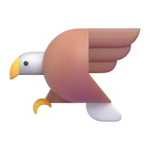
an eaglea polar bear
b Go to the Vocabulary Bank. Tap each card, press 🔊 and repeat. Then match the meanings.Нажимайте на карточки, слушайте и повторяйте. Потом выберите слово к значению.
Vocabulary Bank3AAnimals and nature
active at night →
the natural home of an animal →
sleep through the winter →
at risk of disappearing for ever →
colours that help an animal hide →
c Complete the sentences.Вставьте пропущенное слово.
Eagles have excellent .
The rabbit is for the fox.
Camels can for weeks without water.
Scientists found a new of frog.
Our camera filmed a snow leopard!
Some lizards can grow their tails.
«Wild Voices»
10 min
a Kira makes nature films. Listen to the interview. What was the most difficult animal to film?Кира снимает фильмы о природе. Какое животное было самым трудным для съёмки?
Radio «Wild Voices»: a wildlife film-makerListen first · Use 🐢 if it's fast · Текст — в конце
Host:Kira, you've filmed animals on five continents. When did it all start?
Kira, film-maker:When I was a child, I could name every bird in our garden. I couldn't afford a camera, so I drew them!
Host:What is the most amazing animal ability you have filmed?
Kira, film-maker:The octopus. It can change colour in less than a second, and it can open a jar from the inside. It's the cleverest animal I know.
Host:And the most difficult animal to film?
Kira, film-maker:The snow leopard. We waited in the mountains for 43 days. It was minus 30, and we couldn't see anything. In the end we were able to film it with a camera trap — just for eleven seconds.
Host:Eleven seconds after 43 days!
Kira, film-maker:Yes! But the snow leopard is endangered, so every second matters. If people see it, they'll want to protect it.
Host:What's next?
Kira, film-maker:Owls. With new cameras we'll be able to film them in the dark without any light. I can't wait!
What was the most difficult animal to film?
b Listen again. Complete the facts — a word or a number.Послушайте ещё раз. Допишите слово или число.
Kira has filmed animals on continents.
An octopus can change colour in less than a .
They waited for the snow leopard for days.
It was minus degrees.
They filmed it for seconds.
c Present, past or future ability? Look at the verbs — this is the grammar of the next stage.Способность в настоящем, прошлом или будущем? Следующая грамматика.
It can change colour in less than a second. →
I could name every bird in our garden. →
We'll be able to film them in the dark. →
I couldn't afford a camera. →
We were able to film it with a camera trap. →
can · could · be able to
12 min
a Read the Grammar Bank. The examples are from today's story.Прочитайте Grammar Bank: все примеры — из сегодняшней истории.
Grammar Bank3Aability: can / could / be able to
time
form
example
present
can / can't (or am / is / are able to)
An octopus can change colour.
past
could / couldn't
As a child, I could name every bird.
future
will be able to
We'll be able to film in the dark.
present perfect
have / has been able to
We haven't been able to find it yet.
after other verbs
to be able to
I'd like to be able to fly. I love being able to work outside.
Подсказка. У can нет будущего и перфекта: ✗ will can, ✗ have could → will be able to, have been able to.
bStep 1. Choose the correct form.Шаг 1. Выберите правильную форму.
Owls see very well in the dark.
When I was five, I swim.
Next year we visit the national park.
I'd love talk to animals.
We find the bear yet.
cStep 2. Write the correct form.Шаг 2. Напишите правильную форму.
Penguins (fly). (not)
My grandfather (speak) four languages when he was young.
With this camera you (film) at night. (future)
She hasn't (sleep) well since the trip.
dStep 3. Build the sentences.Шаг 3. Соберите предложения.
eStep 4. About you.Шаг 4. О себе.
the article
8 min
a Read about a mountain rescue dog. How did the dog help?Прочитайте о горной собаке-спасателе. Как она помогла?
Rescue on Mount Elbrusa magazine article · about 150 words
Barry is a five-year-old rescue dog. Like all dogs, he could smell things far better than humans from the day he was born — a dog's nose is up to 100,000 times more sensitive than ours.
Last February an avalanche buried a climber on Mount Elbrus. The rescuers couldn't see anything in the snow storm, and their phones didn't work. But Barry was able to find the climber under two metres of snow in just eight minutes.
The climber was very cold, but the doctors managed to save him. «He couldn't move, and he could hardly breathe,» said the rescue team leader. «Without Barry we wouldn't have found him in time.»
Barry has saved eleven people. He can't talk, of course — but everybody in the village knows his name.
How did the dog help?
b True or false?Верно или нет?
Dogs can smell much better than humans. →
The rescuers could see the climber. →
Barry found the climber in eight minutes. →
The climber could walk after the avalanche. →
Barry has saved eleven people. →
c Is it a general ability or one specific difficult moment? This is the next grammar.Общая способность или один конкретный трудный момент? Следующая грамматика.
he could smell things far better than humans →
Barry was able to find the climber →
the doctors managed to save him →
He can't talk. →
could or was able to?
12 min
a Read the Grammar Bank. The examples are from today's story.Прочитайте Grammar Bank: все примеры — из сегодняшней истории.
Grammar Bank3Apast ability: could vs was able to / managed to
could
was able to / managed to
general ability in the past, for a long time
one specific situation, often difficult
Dogs could always smell well. As a child, I could swim.
Barry was able to find the climber. The doctors managed to save him.
In the negative all are possible: they couldn't / weren't able to / didn't manage to see anything.
Подсказка. «Смог / удалось» один раз в трудной ситуации → was able to / managed to (✗ could find him in eight minutes). «Умел» вообще → could.
bStep 1. Choose the correct form.Шаг 1. Выберите правильную форму.
The fire was huge, but everybody escape.
My grandma knit beautiful sweaters.
After three hours we finally fix the car.
I open the door — I didn't have the key.
Mozart play the piano when he was four.
cStep 2. Write the correct form.Шаг 2. Напишите правильную форму.
The exam was hard, but I (pass) it.
When I was ten, I (run) very fast.
We (not / find) a taxi, so we walked.
dStep 3. Build the sentences.Шаг 3. Соберите предложения.
eStep 4. About you.Шаг 4. О себе.
Kira's post
6 min
a Kira writes a post after the trip. Use everything from today.Пост Киры после поездки. Всё вместе.
Kira → her followers
After 43 days we (film) the snow leopard! 🐆
It's an species — there are only about 4,000 left.
For weeks we (not / see) anything in the snow.
Snow leopards (jump) up to 15 metres!
With our new camera traps we (film) owls in the dark next winter.
Owls are , so it will be a night project. 🦉
can /kən/ · can't /kɑːnt/
5 min
acan is weak: /kən/. can't is strong and long: /kɑːnt/. Often this is the only difference you hear! Listen and repeat.can — слабо /kən/, can't — сильно /kɑːnt/.
OWLS /kən/ SEE in the DARK.
PENguins /kɑːnt/ FLY.
I /kəd/ SWIM when I was FIVE.
We'll be Able to FILM it.
b Press 🔊. can or can't?Нажмите 🔊. can или can't?
→
→
→
→
→
→
animal superpowers
8 min
a Answer your teacher. Use can / could / be able to / managed to.Отвечайте с can / could / be able to / managed to.
Press the button · Нажмите кнопку
Which animal superpower would you like to have? Why?
What could you do as a child that you can't do now?
What will you be able to do in five years?
Tell me about a time you managed to do something difficult.
Have you ever seen a wild animal? Where?
Which endangered animal should we protect first?
Can you survive a day without your phone?
What's something you've never been able to do?
I'd love to be able to…When I was a child, I could…I managed to… / I was able to…I've never been able to…
bSuperpower auction! You have 100 points. Your teacher offers animal superpowers (see in the dark, breathe under water, grow back a leg…). Buy the best two and explain: With this I'll be able to…Аукцион суперсил: 100 очков, купите две и объясните: «With this I'll be able to…».
my best moment in nature
6 min
a Write about a moment in nature you remember.Напишите о запомнившемся моменте на природе.
Example: Two years ago I went hiking in Karelia. On the third day it rained so much that we couldn't see the path. But we managed to find a small hut and we were able to dry our clothes. In the morning we could hear the birds everywhere. I'd love to be able to go back next summer.
b Press «Отправить преподавателю» — your teacher will see your answers.Нажмите «Отправить преподавателю».
Готово? Отправьте ответы преподавателю
Ответы сразу придут преподавателю на платформу — пересылать в Telegram ничего не нужно. Нет интернета? Ответы сохранятся и отправятся сами. Открыть их может только преподаватель.
Can you…?
3 min
a Listen to your teacher. Write the corrected sentences.Послушайте преподавателя и запишите исправленные фразы.
Great!
Fix it
b Can you do these things?Вы можете это сделать?
I can talk about animals and nature with 12 new wordsговорить о животных и природе
I can use can / could / be able to in all tensescan / could / be able to
I can choose could or was able to / managed tocould или was able to
I can understand a radio interview and an articleпонять интервью и статью
Was the grammar clear today? What was difficult? · Понятна ли была грамматика?
animals and nature
10 min at home
Homework, part 1 of 2: words. Mostly tapping — easy on your phone. Part 2 (grammar) is on the next page — press «Далее».Часть 1: слова урока. Ответы сохраняются сами.
a Read and choose the word or phrase.Прочитайте и выберите слово или фразу.
Bats and owls sleep in the day and hunt at night. →
Bears sleep for the whole winter. →
You can't see the moth on the tree — it's the same colour. →
There are only 3,000 tigers left in the wild. →
b How do you say it in English? Write.Как это по-английски? Напишите.
выжить →
среда обитания →
зрение →
хищник →
can · could · be able to · managed to
15 min at home
Homework, part 2 of 2: grammar. Read the reminder, then tap or type. At the end press «Отправить преподавателю».Часть 2: грамматика урока. В конце — «Отправить преподавателю».
Remember · Запомнитеcan → could → will be able to
I+can+swim.
I+could+swim at five.
I'll+be able to+dive.
один трудный момент в прошлом → was able to / managed to
a Choose.Выберите.
Cats see in the dark.
Next month I drive.
It was difficult, but we reach the top.
When she was young, she dance all night.
b Write the correct form.Напишите правильную форму.
I (not / sleep) last night — it was too hot.
I'd like (play) the guitar.
After two hours they (catch) the fish.
c Build the sentences.Соберите предложения.
d About you.О себе.
Готово? Отправьте ответы преподавателю
Ответы сразу придут преподавателю на платформу — пересылать в Telegram ничего не нужно. Нет интернета? Ответы сохранятся и отправятся сами. Открыть их может только преподаватель.
extra practice
10 min
What to do
Build the sentences: tap the words in the right order. Made a mistake? Press «↺ Заново».
Find the mistake in each sentence and write the correct sentence.
Press «Проверить» after each exercise.
1. Build the sentence
2. Find the mistake
Next year I'll can drive.
We haven't could find it.
He could find the climber in eight minutes.
I'd like to can fly.
Play and review
10 min
Game time!Слова урока в играх: пары, скорость, буквы и даже детектив. Выбирайте любую.
What to do · Что делать
Play with the words from this lesson — great for review before the next lesson!Играйте со словами урока — это лучший способ повторить их.
Your best results are saved and your teacher can see them.Лучшие результаты сохраняются, преподаватель их видит.
Match upНайди пару
Tap a word, then its meaning. As fast as you can! · Нажмите слово, потом его значение.
60 seconds60 секунд
Choose the right word for the meaning. How many in one minute? · Сколько слов успеете за минуту?
Listen and spellУслышь и напиши
Listen to the word and write it. Press 🔊 to hear it again. · Послушайте слово и напишите его.
MemoryМемори
Find the pairs: a word and its meaning. Remember where the cards are! · Откройте по две карточки и найдите пары «слово — значение».
Word builderСобери слово
The letters are mixed up. Tap them in the right order. · Буквы перепутались — нажимайте их по порядку и соберите слово.
BalloonsВоздушные шарики
Guess the word letter by letter. Every wrong letter pops a balloon! · Угадайте слово по буквам. Каждая неверная буква лопает шарик.
DetectiveДетектив
Solve the case! Each clue is a task with this lesson's words and grammar. Every right answer clears one suspect. · Раскройте дело: каждая улика — задание по словам и грамматике урока.
IRIS SCHOOL · Ксения · урок 3
A Day to Remember
Emma's day trip to Oxford: a missed train, pouring rain, an old friend and a dead phone. Words for a day out, the past simple and the past continuous, and when / while.
“Every cloud has a silver lining.”English proverb
IntermediateA day outPast simple & continuouswhen / while60 min
a day out
10 min
In this lesson you will…
learn 10 phrases for telling the story of a day out
read Emma's blog about her trip to Oxford
practise the past simple and the past continuous: it was pouring with rain, so we got soaked
join two actions with when / while: I was taking a photo when my phone ran out of battery
tell the story of a day you remember
a Remember Emma from our last lesson? Her big plan for Saturday was a day in Oxford with her sister — and Jack said it was going to rain! Look at the pictures from her day. What do you think happened?Помните Эмму? В субботу она поехала в Оксфорд. Что, по-вашему, случилось?
the trainrainwet!an old friendno batterylost
b Go to the Vocabulary Bank. Tap each card, press 🔊 and repeat. Then match the meanings.
Vocabulary Bank2BA day out
to start a journey →
to return home →
to meet someone you know by chance →
to get completely wet →
to visit famous places as a tourist →
to happen in a particular way in the end →
c Complete the phrases.Вставьте пропущенное слово.
Hurry up or we'll the train!
It's pouring rain — take an umbrella.
My phone ran of battery.
I bumped my old teacher at the supermarket.
We set at seven in the morning.
We didn't have a map, so we got .
d Words from our last lesson — you will meet them again in Emma's blog. Complete the sentences.Слова прошлого урока — они встретятся в блоге Эммы.
Saturday was Emma's day , so she didn't go to work.
She the train tickets a week before.
She was really looking to the trip.
Hurry! We're running and the train leaves in five minutes!
Emma met an old friend, and they caught over coffee.
Emma's blog: the Oxford trip
10 min
a Now read Emma's new blog post. Find six phrases from the Vocabulary Bank. Was it a good day in the end?Найдите в блоге шесть фраз урока. Хорошим ли был день?
Emma's blog · «Oxford: a day to remember»
Last Saturday was my day off, and I went to Oxford with my sister, Lucy. I booked the train tickets a week before, and I was really looking forward to the trip.
But we were running late. At ten o'clock, when our train left, we were still buying coffee at the station! So we missed the train and caught the next one. We arrived in Oxford at half past eleven.
Jack was right: it was pouring with rain. People were hurrying along the streets, and tourists were hiding in cafés. I had my umbrella, but Lucy didn't, so she got soaked in five minutes. We went sightseeing anyway: we visited two old colleges and a museum.
At three o'clock we were sitting in a little café by the river and drinking hot chocolate. Suddenly the sun came out, and the city looked beautiful. We walked by the river and took lots of photos. We got back home at nine, tired but happy. In the end, the day turned out really well!
Oh, and I bumped into someone I didn't expect to see… but more about that later!
How was Emma's day in the end?
b True or false?Верно или нет?
Emma and Lucy caught the ten o'clock train. →
It was raining when they arrived in Oxford. →
Lucy had an umbrella. →
They visited a museum. →
At three o'clock they were walking by the river. →
They got back home at nine. →
c Look at these sentences from the blog. Is it a finished action (it happened) or an action in progress (it was happening at that time)? This is the grammar of the next stage.Законченное действие или действие в процессе? Это грамматика следующего этапа.
At ten o'clock we were still buying coffee at the station. →
We missed the train. →
It was pouring with rain. →
Lucy got soaked in five minutes. →
Tourists were hiding in cafés. →
We got back home at nine. →
past simple vs past continuous
15 min
a Read the Grammar Bank. All the examples are from Emma's blog.
Grammar Bank2Bpast simple vs past continuous
past simple
past continuous
use
finished actions: what happened, one thing after another
an action in progress at a time in the past · the background of a story
+
We missed the train. Lucy got soaked.
It was pouring with rain. We were buying coffee.
–
Lucy didn't have an umbrella.
We weren't walking — we were sitting in a café.
?
What time did you get back?
What were you doing at three o'clock?
form
-ed or the irregular form: booked, went, got, took
was / were + verb-ing
I / he / she / it → was …ing · you / we / they → were …ing.
Time phrases like at three o'clock, at that moment often go with the past continuous: At three o'clock we were sitting in a café.
State verbs (know, like, want, need, have = own) are not used in the continuous: ✗ I was having an umbrella ✓ I had an umbrella.
Подсказка. Past simple — «что произошло» (опоздали, промокла, вернулись). Past continuous — «что происходило» в тот момент, фон истории: «лил дождь, люди спешили». Повторявшиеся действия в прошлом — не continuous: I went there every summer.
At ten o'clock Emma and Lucy coffee at the station.
They the ten o'clock train by one minute.
Lucy an umbrella, so she got soaked.
What at three o'clock? — We were sitting in a café.
They two old colleges and a museum.
They back home at nine.
bOxford at half past eleven. What was happening when Emma arrived? Write the past continuous.Что происходило в 11:30? Напишите was / were + -ing.
It (pour) with rain.
People (hurry) along the streets.
A man (sell) umbrellas outside the station.
Two tourists (take) selfies in the rain.
Emma (not / smile) — she was cold!
What (Lucy / do)? She was looking for a shop with umbrellas.
c Past simple or past continuous? Write the verb.Past simple или past continuous? Напишите глагол.
Emma (book) the tickets a week before the trip.
At half past ten they (sit) on the next train.
Lucy (buy) an umbrella in a little shop.
At one o'clock it (still / rain).
They (not / go) to the castle — there wasn't time.
What (you / do) at eight o'clock yesterday evening?
How (you / get) back home yesterday?
Emma (know) the way, so they didn't need a map.
d Build the sentences.Соберите предложения.
Sunday at Jack's
10 min
a Remember? Emma promised to bring Jack a cake on Sunday. Now she's at his place, and she tells him about Oxford — and about the person she «bumped into». Listen. Who was it?Эмма у Джека рассказывает об Оксфорде. Кого она случайно встретила?
Emma at Jack'sListen first · Use 🐢 if it's fast · Text at the end
Jack:Come in, Emma! Is that the cake you promised me? Mmm. So, how was Oxford?
Emma:Wet! It was pouring with rain when we arrived. But in the end it turned out to be a great day.
Jack:I told you it was going to rain! Did you take your umbrella?
Emma:I did, but Lucy didn't. She got soaked! And guess what? While we were walking to the first college, I bumped into Anna, my old school friend!
Jack:No way! What was she doing in Oxford?
Emma:She lives there now. She was waiting for a bus when she saw us. So we went for a coffee and caught up. We last saw each other ten years ago!
Jack:Amazing! Did you take lots of photos?
Emma:Well, I tried. While I was taking a photo of the river, my phone ran out of battery! So Lucy took all the photos.
Jack:Typical! And how was the journey home?
Emma:Funny! When we were walking back to the station, we got lost. All the old streets look the same!
Jack:So how did you find the station?
Emma:A kind old man was walking his dog, so we asked him the way. He walked with us all the way to the station.
Jack:What a day! A day to remember.
Emma:Definitely! Now, let's have some cake.
Emma bumped into…
b Listen again. Complete the details.Послушайте ещё раз и допишите.
Emma met Anna while they were walking to the first .
Anna was waiting for a .
Emma and Anna last saw each other years ago.
Emma's phone ran out of .
They got lost when they were walking back to the .
A kind old man was walking his .
c Open the transcript. In these sentences there are two actions: a long one (it was in progress) and a short one (it happened in the middle of it). Which is the long action? This is the grammar of the next stage.Какое действие длинное (было в процессе)? Это грамматика следующего этапа.
While we were walking to the first college, I bumped into Anna. →
She was waiting for a bus when she saw us. →
While I was taking a photo of the river, my phone ran out of battery. →
When we were walking back to the station, we got lost. →
when and while
13 min
a Read the Grammar Bank. The examples are from Emma's story at Jack's.
Grammar Bank2Bwhen and while
the long action (past continuous)
the short action (past simple)
when
She was waiting for a bus
when she saw us.
while
While I was taking a photo,
my phone ran out of battery.
while + the long action (was / were …ing). when usually + the short action (past simple).
When the sentence starts with When / While, put a comma in the middle: While I was taking a photo, my phone…
Two short actions, one after the other → past simple + past simple: When the sun came out, we walked by the river. (first the sun, then the walk)
Two long actions at the same time → while + past continuous: While Emma was talking, Jack was eating the cake.
Подсказка. Длинное действие (что происходило) — was / were + -ing; короткое, которое «врезалось» в него, — past simple. while ≈ «пока», when ≈ «когда (вдруг)».
While we were walking to the first college, I into Anna.
Anna for a bus when she saw us.
While I was taking a photo, my phone out of battery.
We back to the station when we got lost.
When the sun came out, we by the river.
What when you bumped into Anna?
b Write both verbs: one in the past continuous, one in the past simple.Напишите оба глагола: past continuous и past simple.
I (cook) dinner when my sister (call).
We (drive) to the airport when the car (break) down.
It (start) to rain while we (have) a picnic.
(you / sleep) when I (phone) you last night?
When I (open) the door, I (see) a big box on the floor.
c Join the two sentences. Choose the correct one.Соедините два предложения. Выберите правильный вариант.
I was watching a film. The TV turned off. →
Emma was having coffee. Anna phoned her. →
We were walking home. It started to rain. →
I lost my keys. I was running for the bus. →
d Build the sentences.
Lucy's version
8 min
a Lucy tells her friend the story of the same day. Use everything from today: the phrases, the past simple and the past continuous, when and while.Всё вместе: слова урока + past simple / past continuous + when / while.
Lucy → her friend
We (set) off late, so we missed the ten o'clock train.
When we arrived in Oxford, it was with rain.
I didn't have an umbrella, so I got .
While we (walk) to a college, Emma into an old school friend.
Then Emma's phone ran of battery, so I took all the photos.
At three o'clock we (drink) hot chocolate when the sun (come) out.
We got on the way to the station, but a kind man helped us.
We (get) back home at nine. In the end, the day turned really well!
weak was /wəz/ · were /wə/
5 min
a You can tell the story — now make it sound natural. In the past continuous, was and were are usually weak: /wəz/, /wə/. The stress is on the -ing verb. In short answers they are strong: Yes, I was /wɒz/. Listen and repeat.В past continuous was и were звучат слабо, ударение — на глаголе с -ing.
It /wəz/ POURing with RAIN.
We /wə/ SITting in a CAfé.
What /wə/ you DOing at THREE?
She /wəz/ WAITing for a BUS when she SAW us.
Were you SLEEPing? — YES, I WAS /wɒz/.
b Weak or strong? Say the sentence aloud, then choose.Слабая или сильная форма? Скажите вслух и выберите.
was in «I was running late.» →
was in «Yes, it was.» →
were in «They were hiding in cafés.» →
were in «Were you there? — Yes, we were.» (the last word) →
a day to remember
8 min
a Your turn to tell a story, like Emma! Press the button and answer your teacher's questions. Use the past simple for what happened and the past continuous for the background.
Press the button
What were you doing at eight o'clock yesterday evening?
Tell me about a day trip you remember. Where did you go? What was the weather like?
Have you ever got lost? What were you doing when it happened?
Have you ever bumped into someone you knew in a strange place? What were you doing there?
When did your phone last run out of battery? What were you doing?
What did you do on your last day off? Did it turn out well?
It was a … day.I was …ing when…While I was …ing, …Suddenly…Luckily… / Unfortunately…In the end, it turned out…
my day to remember
7 min
a Now write your own story, like Emma's blog: a day you remember (a trip, a day off, a day when things went wrong). One sentence in each line. Then read it to your teacher.
b Press «Отправить преподавателю» — your teacher will see your answers.
Готово? Отправьте ответы преподавателю
Ответы сразу придут преподавателю на платформу — пересылать в Telegram ничего не нужно. Нет интернета? Ответы сохранятся и отправятся сами. Открыть их может только преподаватель.
Can you…?
3 min
a Your teacher gives feedback on your story. Write the corrections.
Great!
Fix it
b Can you do these things?
I can talk about a day out with the new phrases
I can choose between it rained and it was raining
I can join two actions with when / while
I can understand a story about a day out
What was the most useful thing today?
a day out
15 min at home
Homework, part 1 of 2: words. Mostly tapping — easy on your phone. Part 2 (grammar) is on the next page — press «Далее».Часть 1: слова урока. Ответы сохраняются сами.
a Look at the picture. Which phrase is it?Какая фраза подходит к картинке?
Emma arrived at the platform at 10:01. The train left at 10:00. →
Lucy had no umbrella. Her clothes were completely wet. →
Emma met her old friend Anna in the street. She didn't plan it! →
Emma's phone: 0%. →
They didn't know where the station was. →
They visited two old colleges and a museum. →
b How do you say it in English? Write the phrase.Как это по-английски? Напишите фразу.
отправиться в путь →
вернуться (домой) →
лить как из ведра (о дожде) →
оказаться, получиться (в итоге) →
случайно встретить →
past simple & continuous · when / while
15 min at home
Homework, part 2 of 2: grammar. Look at the colour formulas, then tap or type. At the end press «Отправить преподавателю».Часть 2: грамматика урока. В конце — «Отправить преподавателю».
Remember · ЗапомнитеPast simple vs past continuous
We+missed+the train.
It+was pouring+with rain.
Что произошло → past simple. Что происходило в тот момент (фон) → was / were + -ing.
Remember · Запомнитеwhen / while
She+was waiting+for a bus+when she+saw+us.
While I+was taking+a photo,+my phone+ran out+of battery.
Длинное действие — was / were + -ing (часто после while). Короткое — past simple (часто после when).
a Tap the correct form.Выберите правильную форму.
At eight o'clock last night I dinner.
Last Saturday we the 10:30 train to Oxford.
Lucy an umbrella.
I TV when the lights went out.
While she was cooking, she her finger.
What when I called you?
b Past simple or past continuous? Write the verb.Past simple или past continuous? Напишите глагол.
At seven o'clock this morning I (sleep).
I (lose) my keys while I was running for the bus.
They (have) lunch when the fire alarm rang.
She (not / listen) to me — she was looking at her phone.
How (you / get) to the station yesterday?
c Join the two sentences. Tap the correct one.Соедините два предложения. Выберите правильный вариант.
I was having a shower. The phone rang. →
I was cooking dinner. I burnt my hand. →
We were waiting for the bus. It started to snow. →
d Build the sentences.Соберите предложения.
e About you. Four true sentences.О себе: четыре предложения.
Готово? Отправьте ответы преподавателю
Ответы сразу придут преподавателю на платформу — пересылать в Telegram ничего не нужно. Нет интернета? Ответы сохранятся и отправятся сами. Открыть их может только преподаватель.
extra practice
10 min
What to do
Build the sentences: tap the words in the right order. Made a mistake? Press «↺ Заново».
Find the mistake in each sentence and write the correct sentence.
Press «Проверить» after each exercise.
1. Build the sentence
2. Find the mistake
At ten o'clock we was buying coffee.
When I was walk home, I saw Anna.
She didn't had an umbrella.
What did you doing at three o'clock?
Play and review
10 min
Game time!Слова урока в играх: пары, скорость, буквы и даже детектив. Выбирайте любую.
What to do · Что делать
Play with the words from this lesson — great for review before the next lesson!Играйте со словами урока — это лучший способ повторить их.
Your best results are saved and your teacher can see them.Лучшие результаты сохраняются, преподаватель их видит.
Match upНайди пару
Tap a word, then its meaning. As fast as you can! · Нажмите слово, потом его значение.
60 seconds60 секунд
Choose the right word for the meaning. How many in one minute? · Сколько слов успеете за минуту?
Listen and spellУслышь и напиши
Listen to the word and write it. Press 🔊 to hear it again. · Послушайте слово и напишите его.
MemoryМемори
Find the pairs: a word and its meaning. Remember where the cards are! · Откройте по две карточки и найдите пары «слово — значение».
Word builderСобери слово
The letters are mixed up. Tap them in the right order. · Буквы перепутались — нажимайте их по порядку и соберите слово.
BalloonsВоздушные шарики
Guess the word letter by letter. Every wrong letter pops a balloon! · Угадайте слово по буквам. Каждая неверная буква лопает шарик.
DetectiveДетектив
Solve the case! Each clue is a task with this lesson's words and grammar. Every right answer clears one suspect. · Раскройте дело: каждая улика — задание по словам и грамматике урока.
IRIS SCHOOL · Ксения
Emma Goes Home
After ten years Emma goes back to the little town where she grew up. What has changed? Words about towns and childhood, a phone call and a memory — and used to: I used to walk to school. There didn't use to be a mall here!
“You can't go home again.”Thomas Wolfe
IntermediateThen and nowused toPast simple60–70 min
hometown and childhood
10 min
In this lesson you will…
learn 12 words about towns and childhood12 слов: город и детство
understand Emma's call and her memoryпонять звонок и воспоминание Эммы
talk about the past: I used to…, I didn't use to…used to — привычки в прошлом
choose used to or the past simpleused to или past simple
tell your teacher how your town has changedрассказать, как изменился ваш город
a Remember Emma? Now she visits the town where she grew up. How do towns change in ten years? Look at the pictures.Помните Эмму? Она едет в родной город. Как меняются города за десять лет?
a hometownmy old schoola playgrounda new mallthe old busneighbours
b Go to the Vocabulary Bank. Tap each card, press 🔊 and repeat. Then match the meanings.Нажимайте на карточки, слушайте и повторяйте. Потом выберите слово к значению.
Vocabulary Bank3AHometown and childhood
the town where you grew up →
destroy a building →
quiet and calm →
a place where children play outside →
become an adult →
c Complete the sentences.Вставьте пропущенное слово.
I up in a small village near Kazan.
They down the old factory and built a park.
On Saturdays the streets are very .
Our always says hello to us.
I really my school friends.
We buy vegetables at the market.
Emma's call
10 min
a Emma is in her hometown for the first time in ten years. She calls her mum. Does she like the changes?Эмма впервые за 10 лет в родном городе и звонит маме. Нравятся ли ей перемены?
Emma calls her mum from the old townListen first · Use 🐢 if it's fast · Текст — в конце
Emma:Mum, hi! I'm in Millbrook! I can't believe it — everything is different.
Mum:Really? What has changed?
Emma:Do you remember the little cinema on Station Road? They pulled it down. There's a huge shopping centre there now.
Mum:Oh no! We used to go there every Saturday.
Emma:I know! And the streets are so crowded. The town used to be really peaceful.
Mum:Is the playground still there?
Emma:Yes! The old playground near my primary school is still there. I used to play there every day after school.
Mum:And Mrs Kelly? Our neighbour?
Emma:I saw her an hour ago! She's 82 now. She used to bake apple pies for me, remember? Today she gave me one again!
Mum:Oh, that's lovely. So, do you like Millbrook now?
Emma:Some things, yes. But I miss the old cinema. I didn't use to like this town, but now I feel at home here.
Does Emma like the changes?
b Listen again. Complete the facts — a word or a number.Послушайте ещё раз. Допишите слово или число.
Emma hasn't been to Millbrook for years.
The old cinema was on Road.
Now there's a huge there.
Mrs Kelly is now.
Mrs Kelly gave her an apple .
c Is it a past habit or state that is not true now, or is it true now? This is the grammar of the next stage.Привычка / состояние в прошлом (сейчас уже нет) или правда сейчас? Следующая грамматика.
We used to go there every Saturday. →
The streets are so crowded. →
The town used to be really peaceful. →
She used to bake apple pies for me. →
I feel at home here. →
used to
12 min
a Read the Grammar Bank. The examples are from today's story.Прочитайте Grammar Bank: все примеры — из сегодняшней истории.
Grammar Bank3Aused to · didn't use to · Did you use to…?
form
example
➕
used to + verb
I used to play there every day. The town used to be peaceful.
➖
didn't use to + verb (no -d!)
I didn't use to like this town.
❓
Did you use to + verb?
Did you use to walk to school? — Yes, I did.
used to = a past habit or state that is not true now. For the present use the present simple: I usually walk to work (✗ I use to).
There used to be a cinema here. (now there isn't)
Подсказка. used to = «раньше (обычно) …, а теперь нет»: «Раньше я каждый день гуляла там» → I used to walk there every day. В ➖ и ❓ — use to без d, потому что прошлое уже в did.
bStep 1. Choose the correct form.Шаг 1. Выберите правильную форму.
I walk to school with my brother.
There a cinema here, but they pulled it down.
I didn't like vegetables when I was a child.
you use to play in the playground?
Now I to work by bus.
Mrs Kelly apple pies for Emma.
cStep 2. Write the correct form.Шаг 2. Напишите правильную форму.
We (go) to the cinema every Saturday.
Emma (not / like) her hometown.
your town (be) peaceful?
There (be) a market in the square.
dStep 3. Build the sentences.Шаг 3. Соберите предложения.
eStep 4. About you.Шаг 4. О себе.
Emma's memory
8 min
a In the evening Emma writes about her childhood. Read. What was special about Saturdays?Вечером Эмма пишет о детстве. Чем были особенными субботы?
A memory: Saturdays at the RoxyEmma's diary · about 150 words
When I was eight, Saturdays were magic. Every Saturday Dad used to take me to the Roxy, the little cinema on Station Road. We always used to sit in the third row and share a big bag of popcorn.
One Saturday in 2004 something special happened. The film stopped in the middle, and the lights came on. The old owner, Mr Bell, walked onto the stage with a cake — it was my birthday, and Dad had planned it all! Everybody sang.
I didn't use to cry at films, but I cried that day. Mr Bell closed the Roxy in 2015, and they pulled it down a year later.
Today I stood in front of the shopping centre and I remembered the smell of popcorn. Some things don't change.
b True or false?Верно или нет?
Emma went to the Roxy with her dad every Saturday. →
They used to sit in the first row. →
In 2004 the film stopped because of a birthday surprise. →
Emma used to cry at films. →
The Roxy closed in 2015. →
c Did it happen many times (used to) or one time (past simple)? This is the next grammar.Много раз (used to) или один раз (past simple)? Следующая грамматика.
Dad used to take me to the Roxy. →
The film stopped in the middle. →
We always used to sit in the third row. →
Mr Bell closed the Roxy in 2015. →
used to or past simple?
12 min
a Read the Grammar Bank. The examples are from today's story.Прочитайте Grammar Bank: все примеры — из сегодняшней истории.
Grammar Bank3Aused to vs the past simple
used to
past simple
a habit or state — many times, for a long period
one time, a specific moment — or a fact with a number of times
Dad used to take me to the cinema.
One Saturday the film stopped. Mr Bell closed it in 2015.
✗ I used to go there three times.
✓ I went there three times.
Подсказка. «Каждую субботу, обычно, всегда (раньше)» → used to. «Однажды, в 2004, три раза» → past simple. Past simple подходит и для привычек, но used to нельзя для одного события.
bStep 1. Choose the correct form.Шаг 1. Выберите правильную форму.
One day a famous actor to our school.
We to the seaside every summer.
I Paris three times.
In 2010 they a new bridge.
My grandma the best pancakes.
cStep 2. Write the correct form.Шаг 2. Напишите правильную форму.
Last year I (meet) my old teacher.
As a child, I (spend) every summer in the village.
Yesterday Emma (see) Mrs Kelly.
dStep 3. Build the sentences.Шаг 3. Соберите предложения.
eStep 4. About you.Шаг 4. О себе.
Emma's post
6 min
a Emma writes a post about her trip. Use everything from today.Пост Эммы о поездке. Всё вместе.
Emma → Instagram
Back in my after ten years! 🏡
There (be) a little cinema here — they it down in 2016.
I (play) in this playground every day.
Yesterday Mrs Kelly (give) me an apple pie, like in the old days!
I (not / like) this town, but now I really it.
you (have) a favourite place as a child?
used to /ˈjuːstə/
5 min
aused to sounds like one word: /ˈjuːstə/ — the d is silent! Listen and repeat.used to звучит как одно слово /ˈjuːstə/ — d не слышно.
I /ˈjuːstə/ PLAY there EVery DAY.
Did you /ˈjuːstə/ WALK to SCHOOL?
I DIDn't /ˈjuːstə/ LIKE it.
There /ˈjuːstə/ be a CINema HERE.
b Press 🔊. Is it used to or the past simple?Нажмите 🔊. used to или past simple?
→
→
→
→
→
→
then and now
8 min
a Answer your teacher. Compare the past and now: I used to…, but now I…Сравните прошлое и настоящее: I used to…, but now I…
Press the button · Нажмите кнопку
Where did you grow up? What was it like?
What did you use to do after school?
Did you use to have a favourite place in your town?
What used to be in your town that is not there now?
How has your hometown changed?
Is there anything you didn't use to like but like now?
Who used to be your best friend?
What do you miss from your childhood?
I used to…, but now I…I didn't use to…There used to be…I really miss…
bTwo photos. Find an old photo and a new photo of your town (or imagine them). Tell your teacher what has changed: There used to be…, now there's…Два фото вашего города — старое и новое. Расскажите, что изменилось.
my hometown
6 min
a Write about your hometown then and now.Напишите о своём городе тогда и сейчас.
Example: I grew up in Kazan. When I was a child, there used to be a big market near our house — we used to buy fruit there every Sunday. They pulled it down in 2012. Now there's a shopping centre. I didn't use to like big cities, but now I love Kazan.
b Press «Отправить преподавателю» — your teacher will see your answers.Нажмите «Отправить преподавателю».
Готово? Отправьте ответы преподавателю
Ответы сразу придут преподавателю на платформу — пересылать в Telegram ничего не нужно. Нет интернета? Ответы сохранятся и отправятся сами. Открыть их может только преподаватель.
Can you…?
3 min
a Listen to your teacher. Write the corrected sentences.Послушайте преподавателя и запишите исправленные фразы.
Great!
Fix it
b Can you do these things?Вы можете это сделать?
I can talk about towns and childhood with 12 new wordsговорить о городе и детстве
I can use used to / didn't use to / Did you use to…?used to во всех формах
I can choose used to or the past simpleused to или past simple
I can understand a phone call and a diaryпонять звонок и дневник
Was the grammar clear today? What was difficult? · Понятна ли была грамматика?
hometown and childhood
10 min at home
Homework, part 1 of 2: words. Mostly tapping — easy on your phone. Part 2 (grammar) is on the next page — press «Далее».Часть 1: слова урока. Ответы сохраняются сами.
a Read and choose the word or phrase.Прочитайте и выберите слово или фразу.
They destroyed the old factory last year. →
No cars, no noise — only birds. →
Anna was born in Moscow, but she spent her childhood in Sochi. →
Mr Smith lives next to us. →
b How do you say it in English? Write.Как это по-английски? Напишите.
родной город →
скучать по →
строить →
торговый центр →
used to · past simple
15 min at home
Homework, part 2 of 2: grammar. Read the reminder, then tap or type. At the end press «Отправить преподавателю».Часть 2: грамматика урока. В конце — «Отправить преподавателю».
Remember · Запомнитеused to = раньше (часто), а теперь нет
I+used to+play there.
I+didn't use to+like it.
Did you+use to+walk?
один раз / сколько раз → past simple · сейчас → present simple
a Choose.Выберите.
I have long hair.
Did you live here?
She to Rome twice.
Now I coffee every morning.
b Write the correct form.Напишите правильную форму.
There (be) a park here.
We (not / have) a car.
Last week I (visit) my old school.
c Build the sentences.Соберите предложения.
d About you.О себе.
Готово? Отправьте ответы преподавателю
Ответы сразу придут преподавателю на платформу — пересылать в Telegram ничего не нужно. Нет интернета? Ответы сохранятся и отправятся сами. Открыть их может только преподаватель.
extra practice
10 min
What to do
Build the sentences: tap the words in the right order. Made a mistake? Press «↺ Заново».
Find the mistake in each sentence and write the correct sentence.
Press «Проверить» after each exercise.
1. Build the sentence
2. Find the mistake
I didn't used to like it.
Did you used to live here?
I use to drink coffee every morning.
I used to go there three times.
Play and review
10 min
Game time!Слова урока в играх: пары, скорость, буквы и даже детектив. Выбирайте любую.
What to do · Что делать
Play with the words from this lesson — great for review before the next lesson!Играйте со словами урока — это лучший способ повторить их.
Your best results are saved and your teacher can see them.Лучшие результаты сохраняются, преподаватель их видит.
Match upНайди пару
Tap a word, then its meaning. As fast as you can! · Нажмите слово, потом его значение.
60 seconds60 секунд
Choose the right word for the meaning. How many in one minute? · Сколько слов успеете за минуту?
Listen and spellУслышь и напиши
Listen to the word and write it. Press 🔊 to hear it again. · Послушайте слово и напишите его.
MemoryМемори
Find the pairs: a word and its meaning. Remember where the cards are! · Откройте по две карточки и найдите пары «слово — значение».
Word builderСобери слово
The letters are mixed up. Tap them in the right order. · Буквы перепутались — нажимайте их по порядку и соберите слово.
BalloonsВоздушные шарики
Guess the word letter by letter. Every wrong letter pops a balloon! · Угадайте слово по буквам. Каждая неверная буква лопает шарик.
DetectiveДетектив
Solve the case! Each clue is a task with this lesson's words and grammar. Every right answer clears one suspect. · Раскройте дело: каждая улика — задание по словам и грамматике урока.
IRIS SCHOOL · Марина · урок 3
Plans and Promises
Lily is planning a surprise party for her Gran's 80th birthday — and then everything changes. Party words, arrangements and plans, and quick decisions, offers and promises with will.
“Many hands make light work.”English proverb
IntermediateCelebrationsFuture formswill · going to60 min
parties and plans
10 min
In this lesson you will…
learn 10 phrases about parties and making plans
understand a phone call: Lily's secret plan
talk about arrangements and plans: We're meeting at seven. I'm going to bake a cake.
make quick decisions, offers and promises with will: I'll give you a hand!
plan a celebration — step by step, with helpful phrases
a Remember Lily from our first lesson, and the family recipes from our last lesson? Today Lily is planning something special for her grandmother. Look at the pictures. What do you think she's planning?Что, по-вашему, планирует Лили?
Grana birthday cakeinvitationsballoonsa toasta secret
b Go to the Vocabulary Bank. Tap each card, press 🔊 and repeat. Then match the meanings.
Vocabulary Bank2AParties and plans
to cancel an event →
to help someone →
to be responsible for something →
to decide on the day for an event →
a party that the guest of honour doesn't know about →
not to tell anyone →
c Which verb? Make the phrases.Какой глагол? Соберите фразы.
a party
a date
out invitations
up decorations
a toast
someone a hand
d Words from our last two lessons — you will meet them again in Lily's story. Complete the sentences.Слова прошлых уроков — они встретятся в истории Лили.
Gran has a terrible sweet — she loves cakes.
Mum is going to make lemonade, not lemonade from a shop.
Lily has Gran's old for chocolate cake.
On Friday I need to run some : candles, balloons, a card.
We don't see our cousins very often, so we're going to catch at the party.
We always cook too much, so there are always the next day.
Lily's secret plan
12 min
a Now you know the party words. Lily is calling her brother Sam. Listen. What is she planning, and why is it a secret?Послушайте: что планирует Лили и почему это секрет?
Phone call: Lily and SamListen first · Use 🐢 if it's fast · Text at the end
Sam:Hi, Lily! Mum says you've got some big news.
Lily:Hi, Sam! Yes. Gran is eighty next Saturday, and we're throwing her a surprise party!
Sam:Brilliant! Where are you having it?
Lily:We're having it at Luigi's, the little Italian restaurant near her house. I booked a table for twenty people this morning.
Sam:Twenty people! What time?
Lily:We're meeting there at seven. I'm sending out the invitations tonight.
Sam:But how are you getting Gran to the restaurant? It's a surprise!
Lily:Dad's taking her out for a walk at half past six. Then he's going to say, «Let's have a coffee at Luigi's.»
Sam:Ha! Clever. And what about the cake? You know Gran has a terrible sweet tooth.
Lily:I know! I'm going to bake her favourite chocolate cake, with her own recipe. And Mum's going to make homemade lemonade.
Sam:And the decorations?
Lily:Aunt Kate is in charge of the decorations. She's going to put up balloons and old family photos.
Sam:Is there anything I can do?
Lily:Yes! Can you make a toast? You're good at speeches.
Sam:Me? Well… OK. I'm going to write something funny. And Lily, remember: it's a secret!
Lily:Of course! I'm not going to tell anyone.
Lily is planning…
b Listen again. Complete the details.Послушайте ещё раз и допишите.
The party is next .
Lily booked a table for people.
Everyone is meeting at the restaurant at .
At half past six Dad is taking Gran for a .
Lily is going to bake a chocolate .
Sam is going to make a .
c Open the transcript. Lily talks about the future in two ways. Is it an arrangement (the time and place are fixed, other people know) or a plan (she has decided, but nothing is booked)? This is the grammar of the next stage.Договорённость (время и место назначены) или план-намерение? Это грамматика следующего этапа.
We're having it at Luigi's. →
We're meeting there at seven. →
I'm going to bake her favourite chocolate cake. →
Dad's taking her out for a walk at half past six. →
She's going to put up balloons and old family photos. →
I'm going to write something funny. →
arrangements and plans
14 min
a Read the Grammar Bank. All the examples are from Lily's phone call. You know the present continuous from our first lesson (I'm working from home this week) — now we use it for the future.Present continuous вы уже знаете — теперь он о будущем.
Grammar Bank2Athe future: present continuous and be going to
form
when?
example
present continuous
arrangement: the time and place are fixed, other people know
We're meeting at Luigi's at seven. Dad's taking Gran for a walk.
be going to + verb
plan, intention: I've decided, but nothing is booked
I'm going to bake a chocolate cake.
be going to + verb
prediction: I can see it now
Look at those clouds! It's going to rain.
– and ?: We're not telling her. · I'm not going to tell anyone. · What are you doing on Saturday? · Are you going to make a toast?
Often both forms are possible: I'm seeing Anna tomorrow / I'm going to see Anna tomorrow. With a fixed time and other people, the present continuous is more natural.
With go we usually say I'm going to the party, not I'm going to go to the party.
Подсказка. Есть время, место, бронь, договорились с людьми → We're meeting. Решила, собираюсь (но ещё ничего не заказано) → I'm going to…. Форма «настоящая», а смысл — будущее, как в русском «Завтра я встречаюсь с подругой».
The table is booked: we at Luigi's at seven.
Lily has decided: she a chocolate cake.
What on Saturday evening? — I'm going to Gran's party!
It's a secret. We Gran about the party.
Look at the sky! It rain.
to make a toast, Sam?
bLily's diary for next week. Everything is arranged. Write the verb in the present continuous.В ежедневнике всё уже назначено — пишем present continuous.
Mon 10:00 — Luigi's: the manager → On Monday Lily (meet) the manager at Luigi's.
Wed 18:30 — Mum: photos → On Wednesday evening Lily (pick up) the old photos from Mum.
Thu — Aunt Kate: dinner at Lily's → On Thursday Aunt Kate (come) to Lily's for dinner.
Fri 17:00 — Lily + Sam: balloons → On Friday Lily and Sam (collect) the balloons.
Sat 18:30 — Dad + Gran: walk → On Saturday Dad (take) Gran for a walk.
Sun — nothing! → On Sunday Lily (not / do) anything!
c Plans and predictions. Write going to + the verb.Напишите going to + глагол.
Gran loves photos, so Aunt Kate (put up) old family pictures.
Sam (write) a funny toast.
We (not / tell) Gran anything.
What (you / wear) to the party?
Look at all that food! We (have) a lot of leftovers.
d Build the questions — you will ask your teacher these questions in Speaking.Соберите вопросы — вы зададите их в говорении.
the family chat
9 min
a Everything is arranged… but two days before the party something goes wrong. Read the family group chat. What is the problem, and how do they solve it?За два дня до праздника — проблема. Прочитайте семейный чат.
Family chat · «Gran's 80th 🤫»
Lily: Bad news, everyone! Luigi's phoned this morning. There's a problem with their kitchen, so they're closed on Saturday. 😱
Sam: Oh no! Do we need to call off the party?
Mum: No way! Wait — I know! We'll have it at our house. I'll cook.
Aunt Kate: Great idea! I'll bring my homemade apple pie. And I'll put up the decorations on Saturday morning.
Lily: Thanks, Mum! Then I'll phone everyone tonight and tell them about the new place. On Friday I'm running some errands: candles, balloons and a card.
Dad: Twenty people in our living room? 😅 OK, I'll move the sofa. And I'll give you a hand in the kitchen, if you like.
Sam: Don't worry about the toast — I've written it. I think Gran will love it.
Dad: And I promise I won't say a word to her. She thinks we're just going for a walk! 🤫
What's the problem?
b Who…?
…heard the bad news from the restaurant? →
…is going to cook? →
…is bringing an apple pie? →
…is going to move the sofa? →
…is running errands on Friday? →
…promises not to say anything to Gran? →
c Look at the sentences with will ('ll / won't). Why do they use will? This is the grammar of the next stage.Почему здесь will? Это грамматика следующего этапа.
Wait — I know! We'll have it at our house. →
I'll give you a hand in the kitchen, if you like. →
I promise I won't say a word to her. →
I think Gran will love it. →
will or going to?
13 min
a Read the Grammar Bank. The examples are from the family chat. Compare them with the plans from Lily's phone call.
Grammar Bank2Awill or going to?
form
when?
example
will + verb
a decision now, at the moment of speaking
Wait — I know! We'll have it at our house.
will + verb
an offer
I'll give you a hand. · Shall I move the sofa?
will + verb
a promise
I promise I won't say a word.
will + verb
a prediction — your opinion (I think, I'm sure, probably)
I think Gran will love it.
be going to
a plan — you decided before
I'm going to bake a cake. (I decided last week.)
will not = won't /wəʊnt/.
Offers as questions: Shall I…? / Shall we…? — not Will I help you?
I think… + will: I think it'll be a great party. · I don't think he'll come.
Подсказка. Решили прямо сейчас, предлагаете помощь, обещаете → I'll…. Решили раньше → I'm going to…. «Тебе помочь?» = Shall I help you?
«We haven't got any candles!» — «Don't worry, I some on my way home.»
«This box is so heavy!» — « I help you?»
I promise I late on Saturday.
I think Gran the party.
I my blue dress to the party. I decided last week.
«What would you like to drink?» — «I some lemonade, please.»
b What do you say? Choose the best sentence.Что вы скажете в этой ситуации?
The phone is ringing. You are next to it. →
Your friend's suitcase is very heavy. →
Your sister tells you a secret. →
You decided last month to learn Italian. →
There are big black clouds in the sky. →
c Write the verb: will, won't or going to.Напишите will, won't или going to.
«I'm so thirsty!» — «I (get) you some water.»
Don't worry, I (not / forget) the candles. I promise!
We (visit) Gran on Sunday — we decided yesterday.
I think it (be) a wonderful evening.
(I / open) the window? It's hot in here.
Sam (make) a toast at the party — he's already written it.
d Build the sentences.
Lily's invitation
7 min
a Lily writes to Gran's best friend, Margaret, about the new plan. Use everything from today: the party phrases, plans and arrangements, and will.Всё вместе: слова урока + present continuous / going to / will.
Lily → Margaret
Dear Margaret, we're a surprise party for Gran's eightieth birthday!
We (meet) at our house at seven on Saturday — it's all arranged.
At half past six Dad (take) Gran for a walk, so she won't see the guests arrive.
If you like, I (pick) you up at a quarter past six.
I'm sure Gran (be) very happy to see you!
Could you give us a with the food on Saturday morning?
gonna · I'll · won't
5 min
a You have practised the forms — now say them naturally. In fast speech going to often sounds like /ˈɡənə/, and I will becomes I'll /aɪl/. We still writegoing to. Listen and repeat.В быстрой речи going to звучит как «гона», I will → I'll. Пишем всё равно going to.
I'm gonna BAKE a CAKE.
We're MEETing at SEven.
I'll GIVE you a HAND.
Shall I HELP you?
I PROmise I WON'T tell Anyone.
bwon't /wəʊnt/ or want /wɒnt/? Press 🔊, listen and choose.Послушайте и выберите: won't или want?
Sentence 1 →
Sentence 2 →
Sentence 3 →
Sentence 4 →
plans — step by step
10 min
aStep 1. Ask. Ask your teacher the three questions you built in Grammar, exercise d. Listen and react: Really? That sounds great!Шаг 1. Задайте преподавателю три вопроса из упражнения d.
bStep 2. Answer. Press the button. Answer in two or three sentences — use the phrases below.Шаг 2. Нажмите кнопку и ответьте 2–3 предложениями, опираясь на фразы.
Press the button
What are you doing this weekend?
Are you going to see your family soon? What are you going to do together?
Who is in charge of birthdays and parties in your family?
What's the next celebration in your family? Are you making any plans?
Do you prefer throwing parties or going to them? Why?
Have you ever had a surprise party? Would you like one?
I'm …ing on Saturday.I'm going to…I think it'll be…Probably…In my family, … is in charge of…To be honest, I'm not sure yet.
cStep 3. Help Lily! Your teacher is Lily on the day of the party. She tells you a problem — offer help or make a quick decision with I'll… or Shall I…?Шаг 3. «Лили» называет проблему — вы предлагаете помощь: I'll… / Shall I…?
There's no milk for the coffee. · The balloons are still in the car. · Gran is coming early! · Nobody can find the candles. · Sam is nervous about his toast.
Don't worry, I'll…Shall I…?I'll … right now.I promise I won't…Good idea! Then I'll…
my next celebration
7 min
a Now it's your turn to plan, like Lily: write about your next celebration (a birthday, a holiday, a family dinner…). One sentence in each line. Then read it to your teacher.Опишите свой ближайший праздник: одно предложение в строке.
Example: My son is ten next month, so we're throwing a party. We're having it at home on the fifteenth. I'm going to bake a cake with my mum's recipe. My husband is in charge of the games. I think the children will love it!
b Press «Отправить преподавателю» — your teacher will see your answers.Нажмите «Отправить преподавателю».
Готово? Отправьте ответы преподавателю
Ответы сразу придут преподавателю на платформу — пересылать в Telegram ничего не нужно. Нет интернета? Ответы сохранятся и отправятся сами. Открыть их может только преподаватель.
Can you…?
3 min
a Your teacher gives feedback on your speaking and writing. Write the corrections.Запишите исправления преподавателя.
Great!
Fix it
b Can you do these things?
I can talk about parties and plans with the new phrases
I can talk about arrangements and plans: We're meeting… / I'm going to…
I can make offers, promises and quick decisions: I'll… / Shall I…?
I can understand a phone call about plans
What was the most useful thing today?
parties and plans
15 min at home
Homework, part 1 of 2: words. Mostly tapping — easy on your phone. Part 2 (grammar) is on the next page — press «Далее».Часть 1: слова урока. Ответы сохраняются сами.
a Look at the picture. Which phrase is it?Какая фраза подходит к картинке?
Nobody tells Gran about the party. She'll see everyone when she arrives. →
It was raining, so they cancelled the barbecue. →
Aunt Kate hangs balloons and photos on the walls. →
Sam stands up, says some nice words about Gran, and everyone drinks. →
Dad helps Mum in the kitchen. →
The family decides: the party is on Saturday the twelfth. →
b How do you say it in English? Write the phrase.Как это по-английски? Напишите фразу.
устроить вечеринку →
разослать приглашения →
отвечать за (что-то) →
держать в секрете →
отменить (мероприятие) →
c Words from all three lessons. Tap the missing word.Слова всех трёх уроков. Выберите слово.
I have a sweet — I can't say no to cake.
This bread is — my husband made it.
On Saturdays I usually run : the bank, the post office, the shop.
Let's meet for coffee and catch !
arrangements, plans and will
15 min at home
Homework, part 2 of 2: grammar. Look at the colour formulas, then tap or type. At the end press «Отправить преподавателю».Часть 2: грамматика урока. В конце — «Отправить преподавателю».
Remember · ЗапомнитеArrangements and plans
We're+meeting+at Luigi's+at seven.
I'm+going to+bake+a cake.
We're meeting — договорились (время, место, бронь). I'm going to — решила заранее, собираюсь.
Remember · Запомнитеwill
I'll+give+you a hand.
Shall+I+help+you?
I promise I+won't+tell+anyone.
I'll — решаю сейчас, предлагаю, обещаю. «Тебе помочь?» = Shall I…? Мнение о будущем: I think … will…
a Arrangement, plan or quick decision? Tap the correct form.Выберите правильную форму.
I've booked a table. We dinner at Luigi's at eight.
«The doorbell!» — «I it.»
She learn to drive — she decided last year.
Look at the time! We miss the train!
I promise I forget your birthday this year.
I bring some lemonade?
b Arrangements: write the present continuous.Договорённости: напишите present continuous.
We (fly) to Sochi on Friday — the tickets are on my phone.
My sister (come) for dinner tomorrow.
What time (you / meet) your friends on Saturday?
I (not / work) next Monday — it's a holiday.
c will or going to? Write the verb.will или going to? Напишите глагол.
«I'm cold.» — «I (close) the window.»
I've decided: I (learn) to make my grandmother's pie.
Don't worry, I (not / tell) anyone.
I think you (love) this recipe!
d Build the sentences.Соберите предложения.
e About you. Four true sentences.О себе: четыре предложения.
Готово? Отправьте ответы преподавателю
Ответы сразу придут преподавателю на платформу — пересылать в Telegram ничего не нужно. Нет интернета? Ответы сохранятся и отправятся сами. Открыть их может только преподаватель.
extra practice
10 min
What to do
Build the sentences: tap the words in the right order. Made a mistake? Press «↺ Заново».
Find the mistake in each sentence and write the correct sentence.
Press «Проверить» after each exercise.
1. Build the sentence
2. Find the mistake
We going to throw a party for Gran.
Will I help you with the bags?
I promise I don't tell anyone.
What do you do this weekend?
Play and review
10 min
Game time!Слова урока в играх: пары, скорость, буквы и даже детектив. Выбирайте любую.
What to do · Что делать
Play with the words from this lesson — great for review before the next lesson!Играйте со словами урока — это лучший способ повторить их.
Your best results are saved and your teacher can see them.Лучшие результаты сохраняются, преподаватель их видит.
Match upНайди пару
Tap a word, then its meaning. As fast as you can! · Нажмите слово, потом его значение.
60 seconds60 секунд
Choose the right word for the meaning. How many in one minute? · Сколько слов успеете за минуту?
Listen and spellУслышь и напиши
Listen to the word and write it. Press 🔊 to hear it again. · Послушайте слово и напишите его.
MemoryМемори
Find the pairs: a word and its meaning. Remember where the cards are! · Откройте по две карточки и найдите пары «слово — значение».
Word builderСобери слово
The letters are mixed up. Tap them in the right order. · Буквы перепутались — нажимайте их по порядку и соберите слово.
BalloonsВоздушные шарики
Guess the word letter by letter. Every wrong letter pops a balloon! · Угадайте слово по буквам. Каждая неверная буква лопает шарик.
DetectiveДетектив
Solve the case! Each clue is a task with this lesson's words and grammar. Every right answer clears one suspect. · Раскройте дело: каждая улика — задание по словам и грамматике урока.
IRIS SCHOOL · Марина
Spend or Save?
Laura stopped shopping for a whole year. Has it changed her life? Money words, a podcast and a blog — and the present perfect vs the past simple: Have you ever…? — Yes, I have. I did it last year.
“A penny saved is a penny earned.”Benjamin Franklin
IntermediateMoneyPresent perfectPast simple60–70 min
money
10 min
In this lesson you will…
learn 12 money words and phrases12 слов и фраз о деньгах
understand a podcast and a blog about a no-spend yearпонять подкаст и блог
talk about experiences: Have you ever…? I've never…опыт: present perfect
add details with the past simple: I did it in 2023детали: past simple
use already, just, yetalready, just, yet
a Do you like shopping? Could you stop buying new things for a year? Look at the pictures.Вы любите шопинг? Смогли бы год ничего не покупать?
shoppinga card
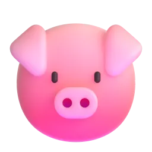
savingsa receiptspend lessa dream trip
b Go to the Vocabulary Bank. Tap each card, press 🔊 and repeat. Then match the meanings.Нажимайте на карточки, слушайте и повторяйте. Потом выберите слово к значению.
Vocabulary Bank2BMoney
use money to buy things →
get your money back from a shop →
something you buy without thinking →
used before by another person →
a plan of how to spend your money →
c Complete the sentences.Вставьте пропущенное слово.
I can't a new phone — it's too expensive.
Can you me €10? I'll give it back tomorrow.
Only €15 for these boots? What a !
Keep the in case you want to return it.
I pay €12 a month for my music .
She all her money on travel.
«Money Talks»
10 min
a Listen to the podcast «Money Talks». Tom interviews Laura. Was the no-spend year a good idea for her?Подкаст «Money Talks». Хорошей ли идеей был для Лауры год без покупок?
Podcast «Money Talks»: a no-spend yearListen first · Use 🐢 if it's fast · Текст — в конце
Tom (host):Laura, last January you decided to stop shopping for a year. Why?
Laura:I looked at my bank account and I was shocked. I spent almost half my salary on impulse buys — clothes, gadgets, coffee.
Tom (host):What were the rules?
Laura:Only food, bills and presents. No new clothes, no gadgets. I cancelled four subscriptions in the first week.
Tom (host):Have you ever broken the rules?
Laura:Once! In March I bought a dress in a sale. But I took it back the next day and got a refund.
Tom (host):And what have you learned?
Laura:I've learned that I don't need much. I've saved six thousand euros, and I've started buying second-hand.
Tom (host):Have you spent the money yet?
Laura:Not yet! I've just booked a trip to Japan. I've never been to Asia, so it's a dream.
Was the no-spend year a good idea for Laura?
b Listen again. Complete the facts — a word or a number.Послушайте ещё раз. Допишите слово или число.
Laura started in .
She cancelled subscriptions in the first week.
In March she bought a .
She has saved thousand euros.
She has just booked a trip to .
c Look at Laura's sentences. A finished time / a detail — or life up to now? Look at the verb — this is the grammar of the next stage.Законченное время / детали — или жизнь до сих пор? Это следующая грамматика.
In March I bought a dress in a sale. →
I've learned that I don't need much. →
I cancelled four subscriptions in the first week. →
I've never been to Asia. →
I've saved six thousand euros. →
present perfect or past simple?
12 min
a Read the Grammar Bank. The examples are from today's story.Прочитайте Grammar Bank: все примеры — из сегодняшней истории.
Grammar Bank2Bpresent perfect (experience) vs past simple (details)
present perfect · have / has + V3
past simple · V2
use
experience in your life up to now — when is not important
details: when, where, how — a finished time
examples
I've been to Japan. Have you ever bought anything second-hand? I've never borrowed money.
I went there in 2023. When did you buy it? — Last week.
words
ever, never, before, in my life
yesterday, last…, in 2020, … ago, when…?
Подсказка. Разговор часто так и идёт: начинаем с опыта (Have you ever…? — Yes, I have.), а детали — уже в past simple (When did you…? — I did it last year.). С last…, ago, in 2020, when? — только past simple: ✗ I've bought it last week.
bStep 1. Choose the correct form.Шаг 1. Выберите правильную форму.
you ever bought something you didn't need?
Yes. I a coffee machine last year.
I to Japan. It's my dream!
When the trip?
She six thousand euros since January.
I money from a friend two years ago.
cStep 2. Write the correct form.Шаг 2. Напишите правильную форму.
you ever (get) a refund?
I (lose) my wallet in 2022.
My brother (never / save) any money.
What you (buy) yesterday?
dStep 3. Build the sentences.Шаг 3. Соберите предложения.
eStep 4. About you.Шаг 4. О себе.
Laura's blog
8 min
a Laura writes a blog. Read the post from month 10. What has she already done, and what hasn't she done yet?Блог Лауры, 10-й месяц. Что уже сделано, а что ещё нет?
No-Spend Laura · Month 10: what has changed?a blog post · about 160 words
Ten months! I've just checked my bank app, and I've already saved more than I saved in the last five years. My friends have stopped inviting me to the shopping centre — they've already understood that I won't come!
I've learned to cook, I've fixed my old bike and I've started a book club with my neighbours. We swap books, so nobody spends a cent.
But there are things I haven't done yet. I haven't bought new running shoes yet — my old ones are terrible! And I haven't decided what to do in January. Will I start shopping again? I don't know yet.
One thing is sure: I've never felt so free. Has anybody else tried a no-spend month? Tell me in the comments!
b True or false?Верно или нет?
Laura has already saved more than in the last five years. →
Her friends still invite her shopping. →
She has fixed her old bike. →
She has bought new running shoes. →
She hasn't decided about January yet. →
calready, just, yet: has it happened? This is the next grammar.already, just, yet: это уже произошло? Следующая грамматика.
I've just checked my bank app. →
I haven't bought new running shoes yet. →
They've already understood. →
I don't know yet. →
already · just · yet
12 min
a Read the Grammar Bank. The examples are from today's story.Прочитайте Grammar Bank: все примеры — из сегодняшней истории.
Подсказка. just = «только что», already = «уже», yet = «ещё не» (в отрицании) / «уже?» (в вопросе), и стоит в конце.
bStep 1. Choose the correct form.Шаг 1. Выберите правильную форму.
I've booked the trip — five minutes ago!
Have you paid the bills ?
We haven't decided .
Don't buy milk — I've bought some.
She the money yet.
cStep 2. Write the correct form.Шаг 2. Напишите правильную форму.
I (just / get) a refund!
you (make) a budget yet?
They (already / cancel) the subscription.
dStep 3. Build the sentences.Шаг 3. Соберите предложения.
eStep 4. About you.Шаг 4. О себе.
Laura's message
6 min
a Laura writes to her sister. Use everything from today.Лаура пишет сестре. Всё вместе.
Laura → her sister Kate
Guess what! I (just / book) the trip to Japan!
I (never / be) to Asia, so I'm so excited.
I (buy) the tickets on Monday — they were a real .
I (not / pack) yet, of course!
you ever (try) a no-spend month?
Can you me your big suitcase? I can't a new one 😂
weak have / has
5 min
a In questions and statements have and has are weak: /həv/, /həz/, or short: I've, she's. Listen and repeat.have / has звучат слабо или сокращаются.
HAVE you EVer bought a BARgain? — /həv/
She's JUSTBOOKED a TRIP.
I HAven't deCIded YET.
I BOUGHT it LASTWEEK.
b Press 🔊. Present perfect or past simple?Нажмите 🔊. Present perfect или past simple?
→
→
→
→
→
→
Have you ever…?
8 min
aHave you ever…? Answer with the present perfect, then give details in the past simple.Сначала опыт (present perfect), потом детали (past simple).
Press the button · Нажмите кнопку
Have you ever bought something you never used? What was it?
Have you ever got a refund? What happened?
Have you ever lent money to a friend? Did they pay you back?
Have you ever found a real bargain?
What have you already bought this month?
Is there anything you've wanted to buy for a long time?
Could you do a no-spend month? Why / why not?
Have you ever saved money for something big?
Yes, I have. / No, I never have.I bought it in… / last…It was a bargain!I've already… / I haven't… yet.
bFind someone who… Ask your teacher five Have you ever…? questions. Every «Yes» — ask two past simple questions: When? Where? How much?Пять вопросов Have you ever…? На каждое «да» — два вопроса в past simple.
my money habits
6 min
a Write a comment for Laura's blog about your money habits.Напишите комментарий к блогу Лауры о своих привычках.
Example: Hi Laura! I've never tried a no-spend month, but I've cancelled two subscriptions this year. Last summer I bought a second-hand bike — it was a real bargain. I haven't made a budget yet…
b Press «Отправить преподавателю» — your teacher will see your answers.Нажмите «Отправить преподавателю».
Готово? Отправьте ответы преподавателю
Ответы сразу придут преподавателю на платформу — пересылать в Telegram ничего не нужно. Нет интернета? Ответы сохранятся и отправятся сами. Открыть их может только преподаватель.
Can you…?
3 min
a Listen to your teacher. Write the corrected sentences.Послушайте преподавателя и запишите исправленные фразы.
Great!
Fix it
b Can you do these things?Вы можете это сделать?
I can talk about money with 12 new wordsговорить о деньгах
I can ask Have you ever…? and give details in the past simpleHave you ever…? + детали
I can use already, just, yetalready, just, yet
I can understand a podcast and a blogпонять подкаст и блог
Was the grammar clear today? What was difficult? · Понятна ли была грамматика?
money
10 min at home
Homework, part 1 of 2: words. Mostly tapping — easy on your phone. Part 2 (grammar) is on the next page — press «Далее».Часть 1: слова урока. Ответы сохраняются сами.
a Read and choose the word or phrase.Прочитайте и выберите слово или фразу.
I saw a lamp and bought it in five seconds. →
The jacket was too small, so the shop gave me my money back. →
This bike is old — it had another owner before me. →
I want a new car, but I haven't got enough money. →
b How do you say it in English? Write.Как это по-английски? Напишите.
копить деньги →
тратить деньги на →
выгодная покупка →
чек →
present perfect vs past simple · already / just / yet
15 min at home
Homework, part 2 of 2: grammar. Read the reminder, then tap or type. At the end press «Отправить преподавателю».Часть 2: грамматика урока. В конце — «Отправить преподавателю».
just / already — между have и V3 · yet — в конце, в отрицании и вопросе
a Choose.Выберите.
you ever been to London?
Yes, I went there .
I've paid. Look, here's the receipt.
We haven't decided .
She a new phone last week.
b Write the correct form.Напишите правильную форму.
you (make) a budget yet?
I (pay) by card yesterday.
He (already / spend) all his money.
c Build the sentences.Соберите предложения.
d About you.О себе.
Готово? Отправьте ответы преподавателю
Ответы сразу придут преподавателю на платформу — пересылать в Telegram ничего не нужно. Нет интернета? Ответы сохранятся и отправятся сами. Открыть их может только преподаватель.
extra practice
10 min
What to do
Build the sentences: tap the words in the right order. Made a mistake? Press «↺ Заново».
Find the mistake in each sentence and write the correct sentence.
Press «Проверить» after each exercise.
1. Build the sentence
2. Find the mistake
I've bought it last week.
I didn't decide yet.
Did you ever go to Japan?
I've yet paid.
Play and review
10 min
Game time!Слова урока в играх: пары, скорость, буквы и даже детектив. Выбирайте любую.
What to do · Что делать
Play with the words from this lesson — great for review before the next lesson!Играйте со словами урока — это лучший способ повторить их.
Your best results are saved and your teacher can see them.Лучшие результаты сохраняются, преподаватель их видит.
Match upНайди пару
Tap a word, then its meaning. As fast as you can! · Нажмите слово, потом его значение.
60 seconds60 секунд
Choose the right word for the meaning. How many in one minute? · Сколько слов успеете за минуту?
Listen and spellУслышь и напиши
Listen to the word and write it. Press 🔊 to hear it again. · Послушайте слово и напишите его.
MemoryМемори
Find the pairs: a word and its meaning. Remember where the cards are! · Откройте по две карточки и найдите пары «слово — значение».
Word builderСобери слово
The letters are mixed up. Tap them in the right order. · Буквы перепутались — нажимайте их по порядку и соберите слово.
BalloonsВоздушные шарики
Guess the word letter by letter. Every wrong letter pops a balloon! · Угадайте слово по буквам. Каждая неверная буква лопает шарик.
DetectiveДетектив
Solve the case! Each clue is a task with this lesson's words and grammar. Every right answer clears one suspect. · Раскройте дело: каждая улика — задание по словам и грамматике урока.
IRIS SCHOOL · Милана · урок 3
The Hot Chocolate Girl
Zoe's first shift at a beach café went very wrong — and then her story went viral. Tell a story with the past simple, past continuous and past perfect.
“Experience is the name everyone gives to their mistakes.”Oscar Wilde
B1StoriesNarrative tensesPast perfect60 min
when things go wrong
8 min
In this lesson you will…
learn 10 words for telling a story about a day that went wrong10 слов для рассказа о неудачном дне
read Zoe's blog about her first shift at workпрочитать блог Зои о её первой смене
tell a story with past simple, past continuous and past perfectрассказывать историю в трёх прошедших временах
use the past perfect to go back in time: I realised I had overslept.past perfect — «шаг назад» в прошлом
tell your own story about a day that went wrongрассказать свою историю
a Remember Jess and Max from «Work Talk» and their unusual jobs? Today we meet Zoe, 17, and her very first shift at work. Look at the pictures: what do you think went wrong?Вспомните прошлый урок о работе. Сегодня — первый рабочий день Зои. Что, по-вашему, пошло не так?
oversleepno batteryrushspillembarrassedgo viral
b Go to the Vocabulary Bank. Tap each card, press 🔊 and repeat. Then match the meanings and the words.
Vocabulary Bank2AWhen things go wrong
to sleep longer than you planned →
to say sorry →
to go somewhere very fast because you are late →
feeling silly when other people are looking at you →
to suddenly understand or notice something →
a person who buys something in a café or a shop →
c Complete the sentences. Some words are from our last two lessons!Вставьте слово. Некоторые слова — из прошлых уроков.
Oh no! I've coffee all over my new uniform.
My phone ran of battery, so I couldn't call you.
Don't panic! Calm and try again.
It turned that the new waiter was the boss's son.
I work the early — from six in the morning to two.
Her video got two million views in one night. It went !
Zoe's blog
9 min
a Now read Zoe's blog about her first shift. Find six words from the Vocabulary Bank. Was the day a disaster?
Zoe's blog · «My first shift»
Last summer I got my first job: I was a waitress at The Blue Wave, a little café by the beach. I had never worked before, so I was excited — and very nervous.
On the morning of my first shift, I opened my eyes, looked at the clock and realised it was ten past nine. My shift started at nine! I had overslept. My phone had run out of battery in the night, so my alarm hadn't gone off. I put on my uniform and rushed to the café without breakfast.
When I arrived, the café was already full of customers, and the manager, Rosa, was waiting for me at the door. She didn't look happy. «Table six,» she said. «Three hot chocolates. Quickly!»
I was carrying the hot chocolates to table six when I tripped over a bag. I spilt one all over a customer's white shirt! I apologised again and again. I was so embarrassed that my face went redder than the tomatoes in the kitchen.
But then something strange happened: the customer started laughing. It turned out that his daughter had filmed everything on her phone. That evening she posted the video online with the title «The Hot Chocolate Girl», and by the next morning it had gone viral.
When I came to work the next day, there was a long queue outside the café. Everyone wanted to meet the hot chocolate girl! I was panicking, but Rosa smiled and told me to calm down. In the end, my terrible first day turned out to be the best advert the café had ever had.
The blog post is about…
b True or false?Верно или неверно?
Zoe had worked in a café before. →
Her alarm didn't go off. →
She had breakfast before work. →
Rosa was happy when Zoe arrived. →
The customer was angry and left. →
The video went viral. →
c Which happened first? Look at the verbs with had: had overslept, had run out, had filmed. They take us back to an earlier moment — this is the grammar of the next stage.Что случилось раньше? Глаголы с had возвращают нас ещё дальше в прошлое — это грамматика следующего этапа.
…realised it was ten past nine. I had overslept. →
My phone had run out of battery in the night. →
It turned out that his daughter had filmed everything. →
narrative tenses
12 min
a Read the Grammar Bank. Every example is from Zoe's story. A good story needs three past tenses.Все примеры — из истории Зои.
Grammar Bank2Anarrative tenses: past simple · past continuous · past perfect
form
use
example
past simple
V2 / -ed
the main events, one after another
I put on my uniform and rushed to the café.
past continuous
was / were + -ing
the background; an action in progress when something happened
I was carrying the hot chocolates when I tripped.
past perfect
had + V3
an earlier action: it happened before another past action
I realised I had overslept. My phone had run out of battery.
'd = had: I'd overslept. Negative: hadn't + V3: My alarm hadn't gone off.
Use the past perfect only when you go back in time. Events in order → past simple: I woke up, got dressed and left.
V3 to remember: oversleep → overslept, run → run, go → gone, spill → spilt / spilled, see → seen.
Подсказка. В русском одно прошедшее время, а в английском рассказе видно, что случилось раньше: «Я поняла, что проспала» = I realised that I had overslept. Past continuous — фон («несла чашки»), past simple — события («споткнулась»), past perfect — шаг назад.
When Zoe looked at the clock, she realised she .
She the hot chocolates when she tripped over a bag.
Her alarm didn't go off because her phone out of battery.
When she arrived, Rosa for her at the door.
The customer laughed. It turned out that his daughter everything.
Zoe to the customer, cleaned the table and brought a new hot chocolate.
b Write the verb in the past simple, past continuous or past perfect.Напишите глагол в нужном прошедшем времени.
It (rain) when I left the house, so I took an umbrella.
When we got to the cinema, the film (already / start).
Zoe (never / work) in a café before that summer.
I (walk) to work when my phone rang.
By the time Rosa came back, the customers (already / leave).
She (put on) her uniform and rushed out of the house.
I was really hungry because I (not / eat) anything since breakfast.
What (you / do) when the lights went out?
c First → then. Choose the sentence that tells the story correctly.Сначала → потом. Выберите верное предложение.
First the film started. Then we arrived. →
Zoe tripped. At that moment she was carrying three cups. →
First the customers left. Then Rosa came back. →
d Build the sentences.
Work Talk: the full story
8 min
a Zoe's story was in the news. Listen to «Work Talk» — the radio show from our last lesson. Rosa and Zoe tell the full story. Why was Rosa so stressed that morning?Радиошоу «Work Talk» из прошлого урока: Роза и Зоя рассказывают всю историю.
Radio: «Work Talk»Listen first · Use 🐢 if it's fast · Text at the end
Host:Welcome back to «Work Talk». Last week we met people with unusual jobs. Today: first days at work. With me are Rosa, who runs a café by the beach, and Zoe, her youngest waitress. Rosa, what happened on Zoe's first day?
Rosa, café manager:Well, it was a crazy morning. We had opened at eight, and by nine the café was already full. Two waiters had called in sick, so I was doing three jobs at once. And my new waitress wasn't there!
Host:Zoe, what had happened?
Zoe:I'd overslept! My phone had died in the night, so my alarm didn't go off. I woke up at ten past nine.
Host:Had you ever worked in a café before?
Zoe:No, never. I'd only done some babysitting. I'd watched lots of videos about how to carry three cups at once, but it's not the same in real life!
Host:And then came the famous hot chocolate.
Zoe:Yes. I was walking really fast, and I didn't see a bag on the floor.
Rosa, café manager:When I saw the customer's shirt, I thought: that's it, he'll never come back.
Host:But he did come back.
Rosa, café manager:Yes, the next day, with his daughter. By the time they arrived, there was already a queue outside. Her video had got two million views overnight!
Zoe:And I hadn't even seen it! I'd forgotten to charge my phone again, so my best friend came to my house to tell me.
Host:Any advice for people who are starting their first job?
Rosa, café manager:If you make a mistake, apologise, smile and keep going. Customers forgive mistakes. They don't forgive bad manners.
Zoe:And charge your phone. Or buy a real alarm clock!
Rosa was doing three jobs at once because…
b Listen again. Complete the facts.
The café had opened at o'clock.
waiters had called in sick.
Before this job, Zoe had only done some .
The video had got million views overnight.
Zoe found out about the video from her best .
c Open the transcript. Rosa and Zoe use the past perfect a lot — in questions and negatives too. Choose. This is the grammar of the next stage.Past perfect в вопросах и отрицаниях — грамматика следующего этапа.
I'd overslept. ('d = …) →
Had you ever worked in a café before? This question is about… →
We had opened at eight, and by nine the café was full. What happened first? →
And I hadn't even seen it! Had Zoe seen the video before she came to work? →
past perfect: questions, negatives, time words
10 min
a Read the Grammar Bank. The examples are from the radio interview.
Grammar Bank2Apast perfect
form
example
+
I / you / she / we / they had ('d) + V3
I'd overslept. We had opened at eight.
–
hadn't + V3
I hadn't seen the video.
?
Had + person + V3?
Had you ever worked in a café before? — Yes, I had. / No, I hadn't.
time words
already, just, never … before, by the time, before, after
By the time they arrived, her video had got two million views.
When I arrived, the film started. = 1) I arrived → 2) the film started.
When I arrived, the film had started. = 1) the film started → 2) I arrived. I missed the beginning!
Подсказка.By the time = «к тому времени, как»: после него — past simple, а в другой части предложения — past perfect. Короткие ответы: Yes, I had. / No, I hadn't.
When Rosa came in at eight, the cook the coffee machine on.
you ever been to that café before last summer?
I the video, so I didn't know why everyone was laughing.
By the time the manager came back, Zoe the table.
When we got to the station, the train . We waited an hour for the next one.
She was nervous because she a uniform before.
b Read the sentence. What happened first?Что случилось раньше?
When I got home, my sister made dinner. →
When I got home, my sister had made dinner. →
When Zoe arrived, the customers left. →
When Zoe arrived, the customers had left. →
c Write the verb in the past perfect.Напишите глагол в past perfect.
(you / ever / try) Thai food before that trip?
By ten o'clock I still (not / finish) my essay.
Rosa (just / open) the café when the first customers came in.
How many views (the video / get) by the next morning?
When I got to the party, everybody (already / eat) the pizza!
The story was new to me. I (not / hear) it before.
d Build the sentences.
Zoe's message
5 min
a A week later Zoe writes to her friend Mia. Use everything from today: the new words and the three past tenses.Всё вместе: слова урока + три прошедших времени.
Zoe → Mia
Mia, remember my first (смена) at the café?
Well, I (oversleep), because my phone had died in the night.
I (carry) three hot chocolates when I tripped over a bag.
I (spill) one all over a customer's shirt!
I was so (смущённая) that I wanted to disappear.
But it turned out that his daughter (film) everything.
By the next morning, the video (go) viral!
I was panicking, but Rosa told me to (успокоиться).
had /həd/ · I'd = I had
4 min
a In a sentence, had is usually weak — /həd/ or just /d/: I'd. It is strong only in short answers: Yes, I had. Listen and repeat.
I'd overSLEPT.
My PHONE had /həd/ DIED.
I HADn't SEEN it.
Had you EVer WORKED in a CAfé?
By the TIME we arRIVED, the FILM had STARted.
bI'd can mean I had or I would. Look at the next word: I'd + V3 = had.I'd + V3 = had; I'd + глагол без окончания (like, love) = would.
I'd never worked in a café. →
I'd love a hot chocolate. →
I'd forgotten to charge my phone. →
I'd like to try that job. →
c Say two true sentences about you with I'd never… before.
tell your story
6 min
a Your turn to tell a story — like Zoe! Press the button and answer your teacher's question. Use all three past tenses.Ваша очередь: расскажите историю, как Зоя.
Press the button
Tell me about your first day at a new school, job or club. What happened?
Have you ever been really late for something important? What had happened?
When did you last feel really embarrassed? What were you doing?
Has your phone ever run out of battery at a bad moment? What happened?
Have you ever seen a video go viral because of a mistake? What had happened in it?
Tell me about a day that started badly but turned out well.
It happened when I was…I was …ing when suddenly…I realised that I had…It turned out that…By the time I…, … had already…In the end, …
a day that went wrong
5 min
a Write your story — a day that went wrong (or a day that turned out well). One sentence in each line.Напишите свою историю: одно предложение в каждой строке.
b Press «Отправить преподавателю» — your teacher will see your story.
Готово? Отправьте ответы преподавателю
Ответы сразу придут преподавателю на платформу — пересылать в Telegram ничего не нужно. Нет интернета? Ответы сохранятся и отправятся сами. Открыть их может только преподаватель.
Can you…?
3 min
a Your teacher gives feedback. Write the corrections.
Great!
Fix it
b Can you do these things?
I can tell a story with the new words: oversleep, rush, spill, apologise, turn out…
I can use the past simple, past continuous and past perfect in one story
I can ask and answer questions with Had you ever…?
I can understand a radio interview about a story
What was the most useful thing today?
when things go wrong
10 min at home
Homework, part 1 of 2: words. Mostly tapping — easy on your phone. Part 2 (grammar) is on the next page — press «Далее».Часть 1: слова урока. Ответы сохраняются сами.
a Look at the picture and read. Which word or phrase is it?Какое слово или фраза подходит?
Zoe's alarm didn't go off, and she woke up at ten past nine. →
Oh no! The hot chocolate is all over the table. →
«I'm so sorry! It was my fault.» →
Everybody was looking at her, and her face went red. →
There was no battery left in the phone. →
Two million people watched the video in one night! →
She was late, so she ran to the café as fast as she could. →
b How do you say it in English? Write the word or phrase.Как это по-английски? Напишите слово или фразу.
проспать →
извиниться →
понять, осознать →
клиент, посетитель →
успокоиться →
оказаться (в итоге) →
narrative tenses
15 min at home
Homework, part 2 of 2: grammar. Look at the colour formulas, then tap or type. At the end press «Отправить преподавателю».Часть 2: грамматика урока. В конце — «Отправить преподавателю».
Remember · ЗапомнитеThree past tenses in one story
I+was carrying+three cups+when I+tripped.
I realised+I+had overslept.
was / were + -ing — фон, процесс. V2 / -ed — события по порядку. had + V3 — то, что случилось ещё раньше.
Remember · ЗапомнитеPast perfect
When I arrived,+the film+had started.
Had you+ever+worked+in a café?
had ( 'd ) + V3, отрицание hadn't + V3, вопрос Had you…? — Yes, I had. / No, I hadn't.
a Tap the correct form.Выберите правильную форму.
I TV when my friend called.
When I got to the bus stop, the bus .
She her keys, so she couldn't open the door.
We the film before, so we knew the ending.
He opened the door, the light on and sat down.
b Write the verb in the correct past tense.Напишите глагол в нужном прошедшем времени.
When I arrived at the café, Rosa (already / open) the doors.
It (snow) when we left the house.
(you / ever / be) abroad before that trip?
By lunchtime I was very hungry — I (not / eat) anything since the evening before.
c Build the sentences.Соберите предложения.
d About you. Four true sentences.О себе: четыре предложения.
Готово? Отправьте ответы преподавателю
Ответы сразу придут преподавателю на платформу — пересылать в Telegram ничего не нужно. Нет интернета? Ответы сохранятся и отправятся сами. Открыть их может только преподаватель.
extra practice
10 min
What to do
Build the sentences: tap the words in the right order. Made a mistake? Press «↺ Заново».
Find the mistake in each sentence and write the correct sentence.
Press «Проверить» after each exercise.
1. Build the sentence
2. Find the mistake
When I arrived, the film has already started.
She was carry three cups when she tripped.
Had you ever went to London before?
I didn't know about the party because nobody had tell me.
Play and review
10 min
Game time!Слова урока в играх: пары, скорость, буквы и даже детектив. Выбирайте любую.
What to do · Что делать
Play with the words from this lesson — great for review before the next lesson!Играйте со словами урока — это лучший способ повторить их.
Your best results are saved and your teacher can see them.Лучшие результаты сохраняются, преподаватель их видит.
Match upНайди пару
Tap a word, then its meaning. As fast as you can! · Нажмите слово, потом его значение.
60 seconds60 секунд
Choose the right word for the meaning. How many in one minute? · Сколько слов успеете за минуту?
Listen and spellУслышь и напиши
Listen to the word and write it. Press 🔊 to hear it again. · Послушайте слово и напишите его.
MemoryМемори
Find the pairs: a word and its meaning. Remember where the cards are! · Откройте по две карточки и найдите пары «слово — значение».
Word builderСобери слово
The letters are mixed up. Tap them in the right order. · Буквы перепутались — нажимайте их по порядку и соберите слово.
BalloonsВоздушные шарики
Guess the word letter by letter. Every wrong letter pops a balloon! · Угадайте слово по буквам. Каждая неверная буква лопает шарик.
DetectiveДетектив
Solve the case! Each clue is a task with this lesson's words and grammar. Every right answer clears one suspect. · Раскройте дело: каждая улика — задание по словам и грамматике урока.
IRIS SCHOOL · Милана
Accidental Inventions
The microwave, crisps and sticky notes — all invented by accident! Words about inventions, a radio quiz and an article — and relative clauses: the man who invented…, the thing which…, the place where…
“Every great advance in science has issued from a new audacity of imagination.”John Dewey
B1InventionsRelative clauses60–70 min
inventions
10 min
In this lesson you will…
learn 12 words about inventions12 слов об изобретениях
understand a radio quiz and an articleпонять радиовикторину и статью
describe people, things and places: who, which, that, where, whoseпридаточные: who / which / where
add extra information with commasдополнительная информация в запятых
play «Guess the thing» with your teacherигра «Угадай предмет»
a Look at the pictures. Which of these things were invented by accident, do you think?Какие из этих вещей изобрели случайно, как вы думаете?
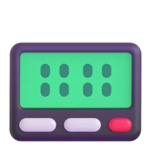
the microwavecrisps
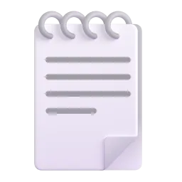
sticky notespenicillinchocolate chip cookies
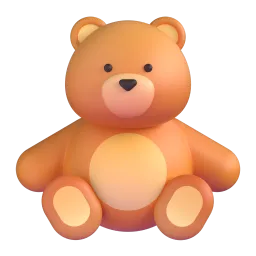
Play-Doh
b Go to the Vocabulary Bank. Tap each card, press 🔊 and repeat. Then match the meanings.Нажимайте на карточки, слушайте и повторяйте. Потом выберите слово к значению.
Vocabulary Bank2BInventions
a person who invents things →
find something that existed but nobody knew about →
without planning it →
a building where things are made →
become liquid when it is hot →
c Complete the sentences.Вставьте пропущенное слово.
Alexander Graham Bell the telephone.
Columbus didn't invent America — he it for Europeans.
This old phone is — it doesn't work.
The scientist did an in his lab.
She got a for her idea.
Smartphones have changed the .
«Who Invented It?»
10 min
a Listen to a radio quiz. Lucy guesses inventions. How many points does she get?Радиовикторина: Люси угадывает изобретения. Сколько очков она набирает?
Radio quiz «Who Invented It?»Listen first · Use 🐢 if it's fast · Текст — в конце
Quiz host:Welcome to «Who Invented It?». Lucy, question one. This is a device which heats food in two minutes. It was invented by a man who was working with radar.
Player: Lucy:Is it the microwave?
Quiz host:Correct! One point. Percy Spencer was the engineer whose chocolate bar melted in his pocket near a radar machine. Question two. This is a snack which a chef invented in 1853 because a customer was angry.
Player: Lucy:Hmm… chips? No — crisps!
Quiz host:Yes! The customer was a man who wanted thinner potatoes. Two points. Question three. This is the city where the first sticky notes were made.
Player: Lucy:London?
Quiz host:Sorry, no. It was St Paul, in the USA — the place where the company 3M had its factory. Last question: this is a medicine that Alexander Fleming discovered by accident in 1928.
Player: Lucy:Penicillin!
Quiz host:Correct! Lucy, you have three points out of four. Well done!
How many points does Lucy get?
b Listen again. Complete the facts — a word or a number.Послушайте ещё раз. Допишите слово или число.
Percy Spencer's chocolate bar in his pocket.
Crisps were invented in .
The first sticky notes were made in St .
Fleming discovered penicillin in .
Lucy has points.
c Look at the words who, which, that, where. What do they describe? This is the grammar of the next stage.Что описывают who / which / that / where? Следующая грамматика.
a man who was working with radar →
a device which heats food →
the city where the first sticky notes were made →
a medicine that Alexander Fleming discovered →
a man who wanted thinner potatoes →
who · which · that · where
12 min
a Read the Grammar Bank. The examples are from today's story.Прочитайте Grammar Bank: все примеры — из сегодняшней истории.
When who / which / that is the object, you can leave it out: the medicine (that) Fleming discovered.
Don't repeat the subject: ✗ the man who he invented → the man who invented.
Подсказка. who = «который» (о людях), which = «который» (о вещах), where = «где», whose = «чей». Не путайте: ✗ the city which they made it → the city where they made it.
bStep 1. Choose the correct form.Шаг 1. Выберите правильную форму.
Percy Spencer was the engineer invented the microwave.
Crisps are a snack everybody loves.
This is the lab Fleming worked.
He's the inventor idea changed the world.
A microwave is a device heats food.
I met a woman has three patents.
cStep 2. Write the correct form.Шаг 2. Напишите правильную форму.
The man invented crisps was a chef.
Is this the café you met him?
The book I'm reading is about inventions.
She's the girl brother is an engineer.
dStep 3. Build the sentences.Шаг 3. Соберите предложения.
eStep 4. About you.Шаг 4. О себе.
the article
8 min
a Read the article about the sticky note. Why did nobody want the glue at first?Почему клей сначала никому не был нужен?
Sticky Notes: the Glue Nobody Wanteda magazine article · about 160 words
In 1968 Spencer Silver, a scientist who worked for the company 3M, was trying to make a very strong glue. Instead he made a glue that was very weak. It stuck to paper, but you could take it off easily. His bosses thought it was useless.
Six years later Art Fry, who sang in a church choir, had a problem: the little papers which marked his songs kept falling out of his book. He remembered Silver's «useless» glue and put it on the papers. They stayed — and came off without damaging the pages.
3M started selling «Post-it Notes» in 1980. Today, the yellow notes, which are sold in more than 100 countries, are in almost every office in the world.
Silver, whose «mistake» became one of the most famous inventions of all time, said later: «I was just curious.»
Why did nobody want the glue at first?
b True or false?Верно или нет?
Spencer Silver wanted to make a strong glue. →
Art Fry worked in a factory. →
Fry's papers kept falling out of his song book. →
Post-it Notes went on sale in 1974. →
They are sold in more than 100 countries. →
c Look at the commas. Is the clause needed to know which one, or is it extra information? This is the next grammar.Придаточное нужно, чтобы понять «какой именно», или это дополнительная информация в запятых? Следующая грамматика.
a glue that was very weak →
Art Fry, who sang in a church choir, had a problem →
the little papers which marked his songs →
the yellow notes, which are sold in more than 100 countries, →
commas: extra information
12 min
a Read the Grammar Bank. The examples are from today's story.Прочитайте Grammar Bank: все примеры — из сегодняшней истории.
Подсказка. Если о ком/чём речь и так понятно (имя, единственный предмет) — информация «лишняя», ставим запятые и не используем that: ✗ Paris, that is in France, → Paris, which is in France,…
bStep 1. Choose the correct form.Шаг 1. Выберите правильную форму.
My brother, lives in Kazan, is an engineer.
The microwave, was invented in 1945, is in every kitchen now.
St Paul, 3M had its factory, is in the USA.
Fleming, lab was very messy, found penicillin.
The phone I bought last week is broken.
cStep 2. Write the correct form.Шаг 2. Напишите правильную форму.
Moscow, is the capital of Russia, is huge.
My grandmother, is 90, still cooks every day.
Sochi, we spent our holiday, was beautiful.
dStep 3. Build the sentences.Шаг 3. Соберите предложения.
eStep 4. About you.Шаг 4. О себе.
an encyclopedia entry
6 min
a Write about an invention. Use everything from today.Статья в школьную энциклопедию. Всё вместе.
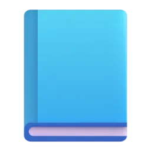
Milana writes for a school encyclopedia
Percy Spencer was an engineer worked for the company Raytheon.
One day the chocolate bar was in his pocket melted.
He (discover) that radar waves could heat food — completely by !
The first microwave, was almost two metres tall, cost $5,000.
Spencer, invention changed the world, got a in 1945.
Today the kitchens we cook in all have one.
pauses with commas
5 min
a In non-defining clauses we make a small pause at each comma. Defining clauses have no pause. Listen and repeat.При запятых делаем маленькую паузу.
Art FRY | who sang in a CHOIR | had a PROBlem.
The GLUE that he made was WEAK. (no pause)
My BROther | who lives in KaZAN | is an engiNEER.
This is the CIty where they MADE it.
b Press 🔊. Which word do you hear — who, which or where?Нажмите 🔊. Какое слово: who, which или where?
→
→
→
→
→
→
guess the thing
8 min
a Answer your teacher. Use who / which / where.Отвечайте с who / which / where.
Press the button · Нажмите кнопку
Which invention do you use every day? Why is it important?
Which invention would you like to un-invent?
Who is a person who has changed the world?
What is a place where you feel happy?
What is a device which you could not live without?
Have you ever discovered something by accident?
What do you think will be the next invention that changes the world?
Which app is the one that you use most?
It's a thing which…It's a person who…It's a place where…whose…
bGuess the thing! Describe a thing, a person or a place without saying its name: It's a device which… / It's a place where… Your teacher guesses. Then swap.Опишите предмет, человека или место, не называя его. Преподаватель угадывает. Потом наоборот.
an invention I love
6 min
a Write about an invention that you love (or hate).Напишите об изобретении, которое вы любите (или нет).
Example: The invention which I use most is my e-reader. It's a device that holds hundreds of books. My sister, who reads even more than me, gave it to me for my birthday. The best place where I read is the train — the journey goes so fast!
b Press «Отправить преподавателю» — your teacher will see your answers.Нажмите «Отправить преподавателю».
Готово? Отправьте ответы преподавателю
Ответы сразу придут преподавателю на платформу — пересылать в Telegram ничего не нужно. Нет интернета? Ответы сохранятся и отправятся сами. Открыть их может только преподаватель.
Can you…?
3 min
a Listen to your teacher. Write the corrected sentences.Послушайте преподавателя и запишите исправленные фразы.
Great!
Fix it
b Can you do these things?Вы можете это сделать?
I can talk about inventions with 12 new wordsговорить об изобретениях
I can use who / which / that / where / whosewho / which / where / whose
I can add extra information with commasдополнительная информация в запятых
I can understand a radio quiz and an articleпонять викторину и статью
Was the grammar clear today? What was difficult? · Понятна ли была грамматика?
inventions
10 min at home
Homework, part 1 of 2: words. Mostly tapping — easy on your phone. Part 2 (grammar) is on the next page — press «Далее».Часть 1: слова урока. Ответы сохраняются сами.
a Read and choose the word or phrase.Прочитайте и выберите слово или фразу.
He found the answer without planning it. →
Thomas Edison had more than 1,000 inventions. →
This old umbrella has a lot of holes. It does not help in the rain. →
Scientists found a new kind of frog in the forest. →
b How do you say it in English? Write.Как это по-английски? Напишите.
изобретать →
устройство, прибор →
продавать →
эксперимент →
relative clauses
15 min at home
Homework, part 2 of 2: grammar. Read the reminder, then tap or type. At the end press «Отправить преподавателю».Часть 2: грамматика урока. В конце — «Отправить преподавателю».
Remember · Запомнитеwho · which · that · where · whose
the man+who+invented it
a device+which / that+heats food
the city+where+it started
дополнительная информация — в запятых и без that: Paris, which is…
a Choose.Выберите.
She is the teacher helped me.
This is the shop I bought it.
The film we saw was great.
Kazan, is on the Volga, is my hometown.
He's the boy dog bit me.
b Write the correct form.Напишите правильную форму.
The woman lives next door is a doctor.
The café we met has closed.
My phone, is very old, still works.
c Build the sentences.Соберите предложения.
d About you.О себе.
Готово? Отправьте ответы преподавателю
Ответы сразу придут преподавателю на платформу — пересылать в Telegram ничего не нужно. Нет интернета? Ответы сохранятся и отправятся сами. Открыть их может только преподаватель.
extra practice
10 min
What to do
Build the sentences: tap the words in the right order. Made a mistake? Press «↺ Заново».
Find the mistake in each sentence and write the correct sentence.
Press «Проверить» after each exercise.
1. Build the sentence
2. Find the mistake
The man who he invented crisps was a chef.
This is the city which they made it.
Paris, that is in France, is beautiful.
He's the man who's chocolate melted.
Play and review
10 min
Game time!Слова урока в играх: пары, скорость, буквы и даже детектив. Выбирайте любую.
What to do · Что делать
Play with the words from this lesson — great for review before the next lesson!Играйте со словами урока — это лучший способ повторить их.
Your best results are saved and your teacher can see them.Лучшие результаты сохраняются, преподаватель их видит.
Match upНайди пару
Tap a word, then its meaning. As fast as you can! · Нажмите слово, потом его значение.
60 seconds60 секунд
Choose the right word for the meaning. How many in one minute? · Сколько слов успеете за минуту?
Listen and spellУслышь и напиши
Listen to the word and write it. Press 🔊 to hear it again. · Послушайте слово и напишите его.
MemoryМемори
Find the pairs: a word and its meaning. Remember where the cards are! · Откройте по две карточки и найдите пары «слово — значение».
Word builderСобери слово
The letters are mixed up. Tap them in the right order. · Буквы перепутались — нажимайте их по порядку и соберите слово.
BalloonsВоздушные шарики
Guess the word letter by letter. Every wrong letter pops a balloon! · Угадайте слово по буквам. Каждая неверная буква лопает шарик.
DetectiveДетектив
Solve the case! Each clue is a task with this lesson's words and grammar. Every right answer clears one suspect. · Раскройте дело: каждая улика — задание по словам и грамматике урока.
IRIS SCHOOL · Мусса · Starter 1
Hello, Elbrus!
Seven short missions — 3–5 minutes each — and then games! Say hello, count to twelve, talk about your horses, your tours and football, and help a tourist from London. Короткие миссии по 3–5 минут: слушайте 🔊, нажимайте и играйте.
“Step by step, the mountain is climbed.”a mountain saying
A0 · StarterHorsesFootballSelf-study7 × 5 min
Hello! 👋
4 min
🎯 Mission 1 of 7 · Hello! · 4 minМиссия на 3–5 минут. Нажимайте 🔊, слушайте и повторяйте вслух. Ошиблись — не страшно, попробуйте ещё раз!
In this pack you will…
say hello and talk about yourselfздороваться и говорить о себе
count to 12считать до 12
say words about horses, tours and footballслова про лошадей, туры и футбол
understand a tourist on the phoneпонять туриста по телефону
play games with the wordsиграть в игры со словами
a Press 🔊 and say it aloud — two times!Нажмите 🔊 и повторите вслух — два раза!
👋 Hello! / Hi! · Привет! Здравствуйте!
🙋 I'm Mussa. · Я Мусса. (I'm = I am)
🏔️ I'm from Russia. · Я из России.
🤝 Nice to meet you! · Приятно познакомиться!
🙂 How are you? — Fine, thanks! · Как дела? — Хорошо, спасибо!
👋 Goodbye! / Bye! · До свидания! Пока!
b What do you say? Tap.Что вы скажете? Выберите.
👋 Встреча. Вы говорите:
🙋 Как вас зовут? Вы отвечаете:
🤝 Знакомство. Вы говорите:
🙂 «How are you?» Вы отвечаете:
🚶 Вы уходите. Вы говорите:
c Build the sentences. Tap the words.Соберите фразы: нажимайте на слова по порядку.
Numbers 1–12 🔢
5 min
🎯 Mission 2 of 7 · Numbers 1–12 · 5 minМиссия на 3–5 минут. Нажимайте 🔊, слушайте и повторяйте вслух. Ошиблись — не страшно, попробуйте ещё раз!
a Press 🔊 and repeat. Count your horses! 🐎Нажимайте 🔊 и повторяйте. Посчитайте своих лошадей!
1 · one
2 · two
3 · three
4 · four
5 · five
6 · six
7 · seven
8 · eight
9 · nine
10 · ten
11 · eleven
12 · twelve
b Press 🔊. Which number do you hear? Only listen!Нажмите 🔊. Какое число? Только на слух!
→
→
→
→
→
→
→
→
c How many? Tap.Сколько? Выберите.
🐎🐎🐎 →
⚽⚽ →
🧳🧳🧳🧳 →
🏔️ →
d ⚽ How many players are in a football team? Write the number in English!Сколько игроков в футбольной команде? Напишите словом по-английски.
A football team has players. ⚽
My horses 🐎
5 min
🎯 Mission 3 of 7 · My horses and tours · 5 minМиссия на 3–5 минут. Нажимайте 🔊, слушайте и повторяйте вслух. Ошиблись — не страшно, попробуйте ещё раз!
a Tap each card, press 🔊 and repeat. These are YOUR words — your horses and your tours!Нажимайте на карточки, слушайте и повторяйте. Это ваши слова — ваши лошади и туры!
Vocabulary BankS1Horses and tours
b What is it? Tap.Что это? Выберите.
→
→
→
→
→
→
c Build: about you!Соберите фразы о себе!
Football ⚽
5 min
🎯 Mission 4 of 7 · Football · 5 minМиссия на 3–5 минут. Нажимайте 🔊, слушайте и повторяйте вслух. Ошиблись — не страшно, попробуйте ещё раз!
a Tap each card, press 🔊 and repeat. Shout «Goal!» 🥅Нажимайте на карточки, слушайте и повторяйте. Крикните «Goal!»
Vocabulary BankS1Football
b What is it? Tap.Что это? Выберите.
→
→
→
→
→
→
cGame: sort it! Horses or football?Игра: разложите слова — лошади или футбол?
🐎 horses⚽ football
a horse
a ball
a tour
a goal
ride
a team
a tourist
kick
d Build:Соберите:
Colours of Elbrus 🎨
4 min
🎯 Mission 5 of 7 · Colours · 4 minМиссия на 3–5 минут. Нажимайте 🔊, слушайте и повторяйте вслух. Ошиблись — не страшно, попробуйте ещё раз!
a Press 🔊 and repeat.Нажимайте 🔊 и повторяйте.
⚪ white · белый
⚫ black · чёрный
🟤 brown · коричневый
🔵 blue · синий, голубой
🟢 green · зелёный
🔴 red · красный
🟡 yellow · жёлтый
b What colour? Tap.Какого цвета? Выберите.
❄️ snow is…
🌲 a tree is…
☁️🔵 the sky is…
🍅 a tomato is…
🌞 the sun is…
🐴 my horse is…
c Build: a white horse — the colour goes before the word!Цвет стоит перед словом: a white horse — белая лошадь.
A tourist calls! 📞
5 min
🎯 Mission 6 of 7 · A tourist calls · 5 minМиссия на 3–5 минут. Нажимайте 🔊, слушайте и повторяйте вслух. Ошиблись — не страшно, попробуйте ещё раз!
a Anna from London calls Mussa about a horse tour. Listen. Don't read — just listen! You don't need every word.Анна из Лондона звонит Муссе насчёт конного тура. Слушайте без текста — не нужно понимать каждое слово!
Elbrus Horse Tours: a callUse 🐢 if it's too fast · Если быстро — нажмите 🐢 · Текст — в конце
Anna (a tourist):Hello! Is this Elbrus Horse Tours?
Mussa:Yes! Hello! I'm Mussa.
Anna (a tourist):Hi, Mussa! I'm Anna. I'm from London.
Mussa:Nice to meet you, Anna! Welcome to Elbrus!
Anna (a tourist):Thank you! We are four tourists. Is that OK?
Mussa:Yes! Four tourists — four horses. No problem!
Anna (a tourist):Great! What time is the tour?
Mussa:At ten o'clock. We ride to the river and to the mountain.
Anna (a tourist):Wonderful! See you tomorrow! Bye!
Mussa:Bye, Anna! See you tomorrow!
Anna wants…
b Listen again. Tap.Послушайте ещё раз и выберите.
Anna is from…
How many tourists?
The tour is at…
They ride to…
c Now YOU are Mussa! Open the text, press 🔊 next to Mussa's lines and say them together with him.Теперь вы — Мусса! Откройте текст и говорите вместе с ним.
About me 🙋
5 min
🎯 Mission 7 of 7 · About me · 5 minМиссия на 3–5 минут. Нажимайте 🔊, слушайте и повторяйте вслух. Ошиблись — не страшно, попробуйте ещё раз!
aam or is? I → am (I'm). It, this, my horse → is.I → am. It / this / my horse → is.
Easy grammar · ПростоI am · it is
I+am+Mussa.
This+is+my horse.
I am = I'm · it is = it's · I ride horses · I play football
I Mussa.
It a horse.
This my team.
I from Russia.
My horse black.
b Write about YOU — four short sentences. Use the examples!Напишите о себе 4 коротких предложения — по образцу.
Example: Hello! I'm Mussa. I'm from Russia. I ride horses. I play football.
c Press «Отправить преподавателю» — your teacher will see your sentences. 🏆 Mission complete!Нажмите «Отправить преподавателю». Миссии пройдены!
Готово? Отправьте ответы преподавателю
Ответы сразу придут преподавателю на платформу — пересылать в Telegram ничего не нужно. Нет интернета? Ответы сохранятся и отправятся сами. Открыть их может только преподаватель.
Boss level 🏆
4 min
Boss level! Quick cards — how many can you get right?Финальный уровень: быстрые карточки со всеми словами. Потом — игры!
aQuick cards. Tap the right answer.Быстрые карточки: выберите правильный ответ.
🐎 =
⚽ =
11 =
«Привет!» =
❄️ snow is…
🏔️ =
«Я Мусса» =
🏆 =
4 =
🧳 =
bRight or wrong? Quick!Верно или ошибка? Быстро!
I'm Mussa.
I is from Russia.
This is my horse.
I play football.
I am ride horses.
My horse is brown.
It am a ball.
Nice to meet you!
words
5 min
Daily practice, part 1 of 2: words. 5 minutes — every day!Каждый день по 5 минут: так слова запомнятся. Потом — «Далее».
a What is it? Tap.Что это? Выберите.
→
→
→
→
→
→
b Press 🔊. Which number?Нажмите 🔊. Какое число?
→
→
→
→
about me
5 min
Daily practice, part 2 of 2: write and build. At the end press «Отправить преподавателю».Часть 2: напишите слова и соберите фразы. В конце — «Отправить преподавателю».
a Write the word in English.Напишите слово по-английски.
лошадь →
гора →
мяч →
белый →
привет →
b am or is?am или is?
I from Russia.
This my team.
It a big mountain.
c Build the sentences.Соберите фразы.
d One new sentence about you or your tours.Одно новое предложение о себе или о турах.
Готово? Отправьте ответы преподавателю
Ответы сразу придут преподавателю на платформу — пересылать в Telegram ничего не нужно. Нет интернета? Ответы сохранятся и отправятся сами. Открыть их может только преподаватель.
extra practice
10 min
What to do
Build the sentences: tap the words in the right order. Made a mistake? Press «↺ Заново».
Find the mistake in each sentence and write the correct sentence.
Press «Проверить» after each exercise.
1. Build the sentence
2. Find the mistake
I is Mussa.
It am a horse.
I am play football.
a horse white
Play and review
10 min
Game time!Слова урока в играх: пары, скорость, буквы и даже детектив. Выбирайте любую.
What to do · Что делать
Play with the words from this lesson — great for review before the next lesson!Играйте со словами урока — это лучший способ повторить их.
Your best results are saved and your teacher can see them.Лучшие результаты сохраняются, преподаватель их видит.
Match upНайди пару
Tap a word, then its meaning. As fast as you can! · Нажмите слово, потом его значение.
60 seconds60 секунд
Choose the right word for the meaning. How many in one minute? · Сколько слов успеете за минуту?
Listen and spellУслышь и напиши
Listen to the word and write it. Press 🔊 to hear it again. · Послушайте слово и напишите его.
MemoryМемори
Find the pairs: a word and its meaning. Remember where the cards are! · Откройте по две карточки и найдите пары «слово — значение».
Word builderСобери слово
The letters are mixed up. Tap them in the right order. · Буквы перепутались — нажимайте их по порядку и соберите слово.
BalloonsВоздушные шарики
Guess the word letter by letter. Every wrong letter pops a balloon! · Угадайте слово по буквам. Каждая неверная буква лопает шарик.
DetectiveДетектив
Solve the case! Each clue is a task with this lesson's words and grammar. Every right answer clears one suspect. · Раскройте дело: каждая улика — задание по словам и грамматике урока.
IRIS SCHOOL · Оля · урок 2
This Week Is Different
Daniel usually teaches in Manchester — but this week he's in St Petersburg with his pupils! Words about a school trip, his video call and his blog. Grammar: I'm teaching · I teach or I'm teaching? Шаг за шагом — от упражнения к речи.
“Same teacher, new city, new words!”Today's idea
A2A school tripPresent continuousUsually or now?60 min
a school trip
9 min
In this lesson you will…
remember Daniel's usual day and learn 10 words about a school tripвспомнить обычный день Дэниела и выучить 10 слов о школьной поездке
understand Daniel's video call from St Petersburgпонять видеозвонок Дэниела из Петербурга
say what is happening now: I'm standing, they're having a breakговорить о том, что происходит сейчас: I'm standing…
choose: I teach (usually) or I'm teaching (now, this week)выбирать: «обычно» или «сейчас, на этой неделе»
talk about your usual week and this week — step by stepрассказать о своей обычной неделе и об этой — по шагам
a Remember Daniel from our last lesson? Complete his usual day.Помните Дэниела с прошлого урока? Вспомните его обычный день.
Daniel Russian at a school in Manchester.
At break he has a coffee in the .
After lessons he checks .
He talks to his in the staff room.
b Good news: Daniel's school now has a partner school in St Petersburg! This week Daniel and ten pupils are there. Look at the pictures. What do people do on a school trip?Хорошая новость: у школы Дэниела теперь есть школа-партнёр в Петербурге, и на этой неделе он там с учениками. Что делают в школьной поездке?
a school tripa host familysightseeingphotossouvenirsrain!
c Go to the Vocabulary Bank. Tap each card, press 🔊 and repeat. Then match.Нажимайте на карточки, слушайте и повторяйте. Потом выберите слово.
Vocabulary Bank1BA school trip
a family that a visitor lives with →
a small thing you buy to remember a trip →
a visit to a place with your class →
to visit famous places in a city →
to live in a place for a short time →
to feel sad because someone is not with you →
d Which verb? Make the phrases.Какой глагол? Соберите фразы.
photos
sightseeing
a great time
souvenirs
with a host family
your Russian
homework
a call from St Petersburg
8 min
a Daniel calls his wife Lucy from St Petersburg. Listen once. Where is he? What is the weather like?Дэниел звонит жене из Петербурга. Послушайте один раз: где он? Какая погода?
Video call: Daniel and LucyListen first · Если быстро — нажмите 🐢 · Текст — в конце
Lucy:Hi, Daniel! Can you hear me? Where are you now?
Daniel:Hi, Lucy! I'm standing in front of our partner school in St Petersburg. And it's raining!
Lucy:Oh no! It's sunny in Manchester today. What are the pupils doing?
Daniel:They're having a break. Some boys are playing football in the rain, and the girls are taking photos of everything.
Lucy:Are they speaking Russian?
Daniel:Yes, they are! They're staying with host families, so they're practising their Russian all the time.
Lucy:And where are you staying?
Daniel:I'm staying in a small hotel near the school. It's very nice.
Lucy:Are you teaching this week?
Daniel:No, I'm not. This week is different! I'm not teaching, and I'm not checking homework. We're visiting museums and going sightseeing with the pupils.
Lucy:And who's teaching your lessons in Manchester?
Daniel:My colleague, Mr Brown. He usually teaches French, so this week he's learning a lot!
Lucy:Ha-ha! Are you having a good time?
Daniel:We're having a great time! But I miss you, and I miss the cat.
Lucy:We miss you too! Bye, Daniel!
Where is Daniel?
What is the weather like in St Petersburg?
b Listen again. Complete the facts. One word in each gap.Послушайте ещё раз и допишите. Одно слово в каждый пропуск.
Some boys are playing in the rain.
The girls are taking of everything.
The pupils are staying with host .
Daniel is staying in a small near the school.
Mr Brown usually teaches .
c True or false?Верно или нет?
It is sunny in Manchester today. →
Daniel is teaching this week. →
The pupils are practising their Russian. →
Daniel is checking homework every evening. →
d Look at Daniel's sentences: I'm standing… They're having a break… I'm staying… What is the same in all of them? This is the grammar of the next stage.Посмотрите на фразы Дэниела. Что в них общего? Это грамматика следующего этапа.
In all these sentences we see…
present continuous: now
12 min
a Read the four steps. Press 🔊 and repeat. All the examples are from Daniel's call.Прочитайте четыре шага. Нажмите 🔊 и повторите. Все примеры — из звонка Дэниела.
Grammar Easy · Грамматика без страхаam / is / are + -ing
1
Одна мысль
Когда что-то происходит сейчас или в эти дни (now, today, this week), говорим: am / is / are + глагол-ing. «Дэниел стоит у школы (прямо сейчас)» → Daniel is standing. «Не» — not: I'm not teaching. В вопросе am / is / are идёт вперёд: Are you teaching?
2
Формула-конструктор
I+'m+standing+in front of the school.
They+'re+having+a break.
I → am (I'm) · he / she / it → is (he's, it's) · we / you / they → are (we're, they're) -ing: teach → teaching · have → having (без e) · swim → swimming, sit → sitting
He+isn't+teaching+this week.
Are+you+having+a good time?
Короткий ответ: Yes, I am. / No, I'm not. · Yes, they are. / No, they aren't. · Yes, it is. (не «Yes, it's»)
3
Смотри, как это работает · нажми 🔊
It's raining in St Petersburg.
The boys are playing football.
The girls are taking photos.
Daniel is staying in a small hotel.
He isn't teaching this week.
4
Осторожно!
❌ I standing. → ✅ I'm standing. нужен помощник am / is / are
❌ She is play football. → ✅ She is playing football. нужно -ing
❌ You are having a good time? → ✅ Are you having a good time? в вопросе are — вперёд
bStep 1. am, is or are?Шаг 1. am, is или are?
I standing in front of the school.
It raining.
The pupils having a break.
Daniel staying in a hotel.
We having a great time.
Mr Brown teaching Daniel's lessons.
cStep 2. Spelling. Write the -ing form.Шаг 2. Напишите форму с -ing.
teach →
have →
take →
stay →
swim →
sit →
write →
play →
dStep 3. Write the verb. Careful: + or −?Шаг 3. Напишите глагол. Внимание: + или −?
The girls (take) photos.
Daniel (not / teach) this week.
I (stay) in a small hotel.
It (rain) in St Petersburg.
Lucy (not / work) today — it's Sunday.
We (not / watch) TV — we (play) games.
eStep 4. Questions and short answers.Шаг 4. Вопросы и короткие ответы.
the pupils speaking Russian?
Daniel teaching this week?
Is it raining? — Yes, .
Are you teaching this week? — No, .
Are they having a good time? — Yes, .
f Build the sentences.Соберите предложения.
Daniel's blog
7 min
a Daniel writes a blog for his school website. Read it. What is it about?Дэниел пишет блог для сайта своей школы. Прочитайте: о чём он?
Our week in St Petersburg
Hello from St Petersburg! This week ten of our pupils and I are visiting our partner school, and we're having a wonderful time.
At home in Manchester, I get up at half past six and go to school by bike. I teach five lessons a day, and I check homework every evening. But this week is different! I'm not teaching, and I'm not checking homework. I'm staying in a small hotel, and I'm walking to school — no bike!
Our pupils are staying with Russian host families. They're practising their Russian all day, and they're learning a lot. At this school, lessons start at half past eight, and the pupils stand up when a teacher comes in. Our pupils love it!
Right now I'm sitting in the staff room and writing this blog. My Russian colleagues are drinking tea and talking about the timetable. It's raining again, but we don't mind!
See you next week! — Mr Jones
Daniel's blog is about…
b True or false?Верно или нет?
Daniel usually goes to school by bike. →
This week he is teaching five lessons a day. →
The pupils are staying in a hotel. →
At the partner school, lessons start at half past eight. →
Daniel is writing the blog in the staff room. →
c Is each sentence about Daniel's usual life or about now / this week? Look at the verbs — this is the grammar of the next stage.Это об обычной жизни или о «сейчас / на этой неделе»? Посмотрите на глаголы — это грамматика следующего этапа.
I get up at half past six. →
I'm staying in a small hotel. →
I check homework every evening. →
They're practising their Russian. →
I'm sitting in the staff room. →
The pupils stand up when a teacher comes in. →
usually or now?
10 min
a Read the four steps. Press 🔊 and repeat. The examples are from Daniel's blog.Прочитайте четыре шага. Повторите примеры из блога Дэниела.
Grammar Easy · Грамматика без страхаI teach or I'm teaching?
1
Одна мысль
Две «коробки». Обычно, всегда, каждый день → present simple: Daniel teaches five lessons a day. Сейчас, сегодня, на этой неделе → present continuous: This week he isn't teaching. Слова-подсказки помогают выбрать!
2
Формула-конструктор
He+teaches+Russian+every day.
This week+he+'s visiting+a partner school.
I teach: usually, always, often, never, every day, on Mondays I'm teaching: now, right now, today, this week, at the moment, Look!
Do+you+teach+on Saturdays?
Are+you+teaching+this week?
Глаголы-«чувства» — без -ing: like, love, want, know. The pupils love it! (не are loving)
3
Смотри, как это работает · нажми 🔊
Daniel usually goes to school by bike.
This week he's walking to school.
He checks homework every evening.
This week he isn't checking homework!
The pupils love St Petersburg.
4
Осторожно!
❌ I'm teaching Russian every day. → ✅ I teach Russian every day. every day → present simple
❌ Look! It rains. → ✅ Look! It's raining. сейчас → am / is / are + -ing
❌ I'm loving St Petersburg. → ✅ I love St Petersburg. love, like, want, know — без -ing
bStep 1. Time words. Which one?Шаг 1. Слова-подсказки. Какая форма?
every day →
now →
this week →
usually →
on Mondays →
at the moment →
always →
right now →
cStep 2. Tap the correct form.Шаг 2. Выберите правильную форму.
Daniel usually to school by bike.
This week he in a small hotel.
Look! The boys football in the rain.
Mr Brown usually French.
This week Mr Brown Daniel's lessons.
The pupils St Petersburg.
dStep 3. Write the verb: I teach or I'm teaching?Шаг 3. Напишите глагол в нужной форме.
Lucy (work) in a hospital. She's a doctor.
Right now she (talk) to Daniel.
I (not / check) homework this week.
Daniel (not / speak) Russian at home.
Today the pupils (visit) a museum.
In Manchester, lessons (start) at nine.
eStep 4. Questions. Do / Does or Am / Is / Are?Шаг 4. Вопросы: Do / Does или Am / Is / Are?
you teach on Saturdays?
you having a good time?
Daniel usually go to school by bike?
it raining in St Petersburg?
What the pupils doing now?
What time lessons start at the partner school?
f Build the questions — you will ask them in Speaking!Соберите вопросы — вы зададите их в говорении!
Emily's postcard
5 min
a Emily (12) is one of Daniel's pupils. She writes a postcard to her parents. Use everything from today: the words, I teach and I'm teaching.Эмили, ученица Дэниела, пишет открытку родителям. Всё вместе: слова урока + обе формы.
Emily → Mum and Dad
Hi Mum and Dad! I (have) a great time in St Petersburg!
I'm staying with a lovely host .
They (live) in a big flat near the river.
Granny Vera (cook) blini every morning. Yum!
Today we're going with Mr Jones.
I (practise) my Russian all the time!
Mr Jones (not / teach) this week, so he's very happy!
Right now I'm buying for you!
I (love) the metro — it's beautiful!
I you! Love, Emily
-ing /ɪŋ/ · I'm, he's, they're
4 min
a Listen and repeat. Say -ing through your nose — no /g/ at the end. Say I'm, he's, they're short.Послушайте и повторите. -ing — в нос, без «г» в конце. I'm, he's, they're — коротко.
I'm /aɪm/ — один короткий слог
raining /ˈreɪnɪŋ/ — /ŋ/ в нос, без «г»
they're /ðeə/ — звучит как there
isn't /ˈɪznt/
вопрос — голос вверх ↗; ответ — полное am /æm/
b Listen. Is it about usually or about now? Press 🔊, then choose.Послушайте: это «обычно» или «сейчас»? Нажмите 🔊 и выберите.
→
→
→
→
→
→
my usual week and this week — step by step
8 min
aStep 1. Repeat. Listen and repeat each sentence.Шаг 1. Послушайте и повторите каждое предложение.
I usually get up at seven.
I usually go to work by bus.
Today I'm sitting at home.
This week I'm reading a good book.
Right now I'm learning English!
bStep 2. Change the words — make it true for YOU. Write, then say it aloud.Шаг 2. Измените слова — чтобы было про вас. Напишите и скажите вслух.
cStep 3. Answer. Your teacher asks — you answer with a short answer + one more sentence.Шаг 3. Отвечайте коротким ответом + ещё одно предложение.
Press the button · Нажмите кнопку
Do you usually work on Saturdays?
Are you working a lot this week?
What do you usually do after lessons?
What are you reading at the moment?
Do your pupils go on school trips?
Are your pupils preparing for a test this week?
Is it raining today?
Yes, I do. / No, I don't.Yes, I am. / No, I'm not.I usually…This week I'm…Right now…
dStep 4. Ask and tell. Ask your teacher the questions from Grammar step 4 (f). Then tell about her: She usually… This week she's…Шаг 4. Задайте преподавателю вопросы из грамматики, потом расскажите о ней: She usually… This week she's…
a comment on Daniel's blog
5 min
a Write a comment on Daniel's blog: your usual week, this week and one question for Daniel.Напишите комментарий к блогу Дэниела: ваша обычная неделя, эта неделя и один вопрос Дэниелу.
Example: Hi Daniel! It's Olya. I usually teach six lessons a day. But this week is different: my pupils are writing a test, so I'm checking a lot of homework! Are your pupils speaking Russian with their host families?
b Press «Отправить преподавателю» — your teacher will see your answers.Нажмите «Отправить преподавателю».
Готово? Отправьте ответы преподавателю
Ответы сразу придут преподавателю на платформу — пересылать в Telegram ничего не нужно. Нет интернета? Ответы сохранятся и отправятся сами. Открыть их может только преподаватель.
Can you…?
2 min
a Listen to your teacher. Repeat the corrected sentences.Послушайте преподавателя и повторите исправленные фразы.
Great!
Let's fix
b Can you do these things?Вы можете это сделать?
I can talk about a school trip with the new wordsговорить о школьной поездке новыми словами
I can say what is happening now: I'm staying, he isn't teachingсказать, что происходит сейчас
I can choose I teach or I'm teachingвыбрать I teach или I'm teaching
I can tell about my usual week and this weekрассказать о своей обычной неделе и об этой
Was the grammar clear today? What was difficult? · Понятна ли была грамматика?
a school trip
10 min at home
Homework, part 1 of 2: words. Mostly tapping — easy on your phone. Part 2 (grammar) is on the next page — press «Далее».Часть 1: слова урока. Ответы сохраняются сами.
a Look at the picture. Which word is it?Какое слово подходит к картинке?
Mr Jones and ten pupils go to St Petersburg for a week. →
Emily lives with a Russian family this week. →
The pupils visit famous places in the city. →
A small thing you buy to remember a trip. →
The pupils speak Russian every day to get better. →
Daniel is sad because Lucy is not with him. →
b How do you say it in English? Write the word or phrase.Как это по-английски? Напишите слово или фразу.
школьная поездка →
остановиться, жить (временно) →
фотографировать →
осматривать достопримечательности →
скучать по кому-то →
отлично проводить время →
I teach · I'm teaching
15 min at home
Homework, part 2 of 2: grammar. Look at the colour formulas, then tap or type. At the end press «Отправить преподавателю».Часть 2: грамматика урока. В конце — «Отправить преподавателю».
Remember · Запомнитеam / is / are + -ing
I+'m+staying+in a hotel.
He+isn't+teaching+this week.
Are+you+having+a good time?
Сейчас, сегодня, на этой неделе → am / is / are + -ing.
Remember · Запомнитеusually or now?
He+teaches+every day.
This week+he+'s visiting+St Petersburg.
Обычно, каждый день → he teaches. Сейчас, на этой неделе → he's teaching. like, love, want, know — без -ing.
a am, is or are?am, is или are?
Emily staying with a host family.
I writing a postcard.
The boys playing football.
It raining again.
We having a great time!
b Usually or now? Tap the correct form.Обычно или сейчас? Выберите форму.
I usually to work by bus.
Look! The pupils photos.
Daniel Russian every day.
This week he homework.
Emily the metro.
What you doing at the moment?
c Write the verb.Напишите глагол.
Right now Emily (buy) souvenirs.
Lucy usually (finish) work at eight.
I (not / work) today. It's a holiday!
My pupils (write) a test at the moment.
Daniel (not / like) cold weather.
d Build the questions.Соберите вопросы.
e About you. Four sentences.О себе: четыре предложения.
Готово? Отправьте ответы преподавателю
Ответы сразу придут преподавателю на платформу — пересылать в Telegram ничего не нужно. Нет интернета? Ответы сохранятся и отправятся сами. Открыть их может только преподаватель.
extra practice
10 min
What to do
Build the sentences: tap the words in the right order. Made a mistake? Press «↺ Заново».
Find the mistake in each sentence and write the correct sentence.
Press «Проверить» after each exercise.
1. Build the sentence
2. Find the mistake
I standing in front of the school.
Look! It rains.
He is teaching Russian every day.
I'm loving St Petersburg.
Play and review
10 min
Game time!Слова урока в играх: пары, скорость, буквы и даже детектив. Выбирайте любую.
What to do · Что делать
Play with the words from this lesson — great for review before the next lesson!Играйте со словами урока — это лучший способ повторить их.
Your best results are saved and your teacher can see them.Лучшие результаты сохраняются, преподаватель их видит.
Match upНайди пару
Tap a word, then its meaning. As fast as you can! · Нажмите слово, потом его значение.
60 seconds60 секунд
Choose the right word for the meaning. How many in one minute? · Сколько слов успеете за минуту?
Listen and spellУслышь и напиши
Listen to the word and write it. Press 🔊 to hear it again. · Послушайте слово и напишите его.
MemoryМемори
Find the pairs: a word and its meaning. Remember where the cards are! · Откройте по две карточки и найдите пары «слово — значение».
Word builderСобери слово
The letters are mixed up. Tap them in the right order. · Буквы перепутались — нажимайте их по порядку и соберите слово.
BalloonsВоздушные шарики
Guess the word letter by letter. Every wrong letter pops a balloon! · Угадайте слово по буквам. Каждая неверная буква лопает шарик.
DetectiveДетектив
Solve the case! Each clue is a task with this lesson's words and grammar. Every right answer clears one suspect. · Раскройте дело: каждая улика — задание по словам и грамматике урока.
IRIS SCHOOL · Оля
The School Trip
Last Friday Daniel took his class to the science museum. The bus was late, a boy got lost, and the robot show was amazing! School-trip words, Daniel's story and a letter — and the past simple the easy way: was / were, visited, didn't, Did you…?
“Tell me and I forget. Teach me and I remember. Involve me and I learn.”Benjamin Franklin
A2School lifePast simpleGrammar Easy60 min
a school trip
10 min
In this lesson you will…
learn 12 words about a school trip12 слов: школьная экскурсия
understand Daniel's story and a letterпонять рассказ Дэниела и письмо
talk about the past: was / were, visited, watchedпрошедшее: was / were, -ed
ask and say «no»: Did you…? I didn't…вопросы и «нет»: did / didn't
tell your teacher about a trip you rememberрассказать о поездке
a Do you remember a school trip? Where did you go? Look at the pictures.Вы помните школьную экскурсию? Куда вы ездили?
a busa museumrobotsa packed lunchpupilstickets
b Go to the Vocabulary Bank. Tap each card, press 🔊 and repeat. Then match the meanings.Нажимайте на карточки, слушайте и повторяйте. Потом выберите слово к значению.
Vocabulary Bank1CA school trip
a child at school →
a person who shows a place to visitors →
food you take from home →
not know where you are →
a big comfortable bus for trips →
c Complete the sentences.Вставьте пропущенное слово.
The robot was the best part of the trip.
Don't forget your — you can't go in without it!
We bought pens in the shop.
After the trip the children were very .
Can I a question?
We a lot of photos of the robots.
Daniel's story
10 min
a On Monday Daniel tells Kate, another teacher, about the trip. Was it a good trip?В понедельник Дэниел рассказывает коллеге о поездке. Хорошая была поездка?
Daniel: «Last Friday…»Listen first · Use 🐢 if it's fast · Текст — в конце
Kate, a teacher:Hi Daniel! How was the trip to the science museum on Friday?
Daniel:Oh, it was crazy but great! First, the coach was late — we waited for forty minutes in the rain.
Kate, a teacher:Oh no! Were the children OK?
Daniel:Yes, they were fine. They played games and sang songs. At the museum the guide was really funny, and the robot exhibition was amazing.
Kate, a teacher:Did the children like it?
Daniel:They loved it! They asked hundreds of questions. Then we had our packed lunches in the park.
Kate, a teacher:Any problems?
Daniel:One! Little Max got lost in the gift shop. I didn't see him for ten minutes. I was so scared!
Kate, a teacher:Where was he?
Daniel:Behind a big dinosaur, with a robot toy! In the evening I was very tired, but it was a lovely day.
Was it a good trip?
b Listen again. Complete the facts — a word or a number.Послушайте ещё раз. Допишите слово или число.
The trip was on .
They waited for the coach for minutes.
They had lunch in the .
Max got lost in the shop.
Daniel didn't see Max for minutes.
c Is it about the past or now? Look at the verbs — this is the grammar of the next stage.Это о прошлом или о сейчас? Следующая грамматика.
The coach was late. →
Today Daniel is talking to Kate. →
We waited for forty minutes. →
Max loves robots. →
They played games. →
was / were · -ed
12 min
a Read the steps. Press 🔊 and repeat. The examples are from Daniel's story.Прочитайте шаги, слушайте и повторяйте.
Grammar Bank1Cwas / were and the past simple -ed
Grammar Easy · Грамматика без страхаwas / were · visited, waited
1
Одна мысль
Прошлое → was / were: I / he / she / it was, we / you / they were. Нет → wasn't / weren't. Вопрос → Was it…? Were they…? Обычные глаголы в прошлом + -ed: wait → waited, play → played, love → loved. Форма одна для всех!
2
Формула-конструктор
The coach+was+late.
The children+were+fine.
We+waited+for forty minutes.
They+played+games.
I / he / she / it → was · we / you / they → were · глагол + -ed
3
Смотри, как это работает · нажми 🔊
The coach was late.
The children were fine.
We waited for forty minutes.
They played games.
4
Осторожно!
❌ The children was fine. → ✅ The children were fine. they → were.
❌ We wait for forty minutes yesterday. → ✅ We waited for forty minutes yesterday. Прошлое → -ed.
❌ It were amazing. → ✅ It was amazing. it → was.
bStep 1. was or were? -ed?Шаг 1. was или were? -ed?
The guide funny.
The robots amazing.
I at home yesterday.
the children tired?
We for the coach.
The pupils a lot of questions.
cStep 2. Write the verb in the past.Шаг 2. Напишите глагол в прошедшем.
Daniel (be) scared.
The children (love) the robots.
It (not / be) cold.
We (visit) the museum.
dStep 3. Build the sentences.Шаг 3. Соберите предложения.
eStep 4. About YOU: yesterday.Шаг 4. О себе: вчера.
Max's letter
8 min
a Max wrote a letter to Daniel after the trip. Read. What did Max like most?Макс написал письмо Дэниелу. Что ему понравилось больше всего?
A thank-you letter from Max (8)a letter · about 100 words
Dear Mr Daniel, thank you for the trip to the museum! I liked the robots most. The big blue robot talked to me and danced!
I didn't like the coach — it was very late and it was cold. But we sang songs, and that was fun.
I'm sorry I got lost. I didn't want to go away. I saw the robot toy and I wanted to look at it. Did you look for me for a long time?
Mum says thank you too. She didn't go on a school trip when she was a girl. Can we go to the zoo next time? Love, Max
What did Max like most?
b True or false?Верно или нет?
The blue robot danced. →
Max liked the coach. →
Max wanted to go away from the class. →
Max's mum went on school trips. →
Max wants to go to the zoo. →
c Find the didn't and Did. Look at the verb after them — is there -ed? This is the next grammar.Найдите didn't и Did. Есть ли -ed после них? Следующая грамматика.
I didn't like the coach. →
I liked the robots most. →
Did you look for me? →
She didn't go on a school trip. →
didn't · Did…?
12 min
a Read the steps. Press 🔊 and repeat. The examples are from Max's letter.Прочитайте шаги, слушайте и повторяйте.
Grammar Easy · Грамматика без страхаdidn't · Did you…? · went, saw, had, took
1
Одна мысль
Нет → didn't + глагол без -ed: I didn't like the coach. Вопрос → Did you + глагол? Did you look for me? — Yes, I did. / No, I didn't. Неправильные глаголы запоминаем: go → went, see → saw, have → had, take → took, get → got.
2
Формула-конструктор
I+didn't+like+the coach.
Did+you+look+for me?
We+went+to the museum.
Max+saw+a robot toy.
did / didn't + глагол без -ed · went, saw, had, took, got — неправильные
3
Смотри, как это работает · нажми 🔊
I didn't like the coach.
Did you look for me?
We went to the museum.
Max saw a robot toy.
4
Осторожно!
❌ I didn't liked it. → ✅ I didn't like it. После didn't — без -ed.
❌ Did you saw the robots? → ✅ Did you see the robots? После Did — обычный глагол.
❌ We goed to the museum. → ✅ We went to the museum. go → went.
bStep 1. Choose.Шаг 1. Выберите.
Max want to go away.
you see the dinosaur?
We to the park for lunch.
Did Max a robot toy?
They a lot of photos.
Did the children like it? — Yes, they .
cStep 2. Write.Шаг 2. Напишите.
We (not / see) the zoo.
you (have) a packed lunch?
Max (get) lost.
dStep 3. Build the sentences.Шаг 3. Соберите предложения.
eStep 4. About YOU. One «no» and one question for your teacher.Шаг 4. Одно «нет» и вопрос преподавателю.
Daniel's message
6 min
a Daniel writes to the parents. Use everything from today.Дэниел пишет родителям. Всё вместе.
Daniel → the parents
Dear parents, the trip on Friday (be) great!
The coach (be) late, but the children (be) very good.
We (visit) the robot — the children loved it.
We (have) our packed lunches in the park.
Max got for ten minutes, but he (not / go) far!
your child (like) the trip? Please tell me!
-ed: /t/, /d/, /ɪd/
5 min
a The -ed sounds different: /t/ — liked, asked · /d/ — played, loved · /ɪd/ — waited, visited (a new syllable!). Listen and repeat.-ed: /t/, /d/ или /ɪd/ (лишний слог после t и d).
We WAITed /ɪd/ for FORty MINutes.
They PLAYED /d/ GAMES.
The PUpils ASKED /t/ QUEStions.
We VISited /ɪd/ the muSEum.
b Press 🔊. Which sound do you hear at the end?Нажмите 🔊. Какой звук в конце?
→
→
→
→
→
→
my trip
8 min
a Answer your teacher. Short answer + one more sentence.Короткий ответ + ещё одно предложение.
Press the button · Нажмите кнопку
Where did you go last weekend?
Did you go on school trips as a child? Where?
What was the best museum you visited?
Did you ever get lost? Where?
What did you have for lunch yesterday?
Were you tired yesterday evening? Why?
Did you take any photos last week? Of what?
What did you watch on TV yesterday?
Yes, I did. / No, I didn't.I went to…It was… / They were…I saw… / I had…
bGuess my weekend! Your teacher thinks of 3 things they did last weekend. Ask Did you…? questions to guess them. Then swap!Угадайте, что преподаватель делал в выходные: задавайте вопросы «Did you…?». Потом наоборот.
a trip I remember
6 min
a Write about a trip you remember. Five sentences.Напишите о поездке, которую вы помните. Пять предложений.
Example: Last summer I went to St Petersburg with my sister. The weather was great. We visited the Hermitage and we took a lot of photos. We didn't go to the theatre — the tickets were very expensive. In the evening we were very tired but happy.
b Press «Отправить преподавателю» — your teacher will see your answers.Нажмите «Отправить преподавателю».
Готово? Отправьте ответы преподавателю
Ответы сразу придут преподавателю на платформу — пересылать в Telegram ничего не нужно. Нет интернета? Ответы сохранятся и отправятся сами. Открыть их может только преподаватель.
Can you…?
3 min
a Listen to your teacher. Write the corrected sentences.Послушайте преподавателя и запишите исправленные фразы.
Great!
Fix it
b Can you do these things?Вы можете это сделать?
I can talk about a trip with 12 new wordsрассказать о поездке
I can use was / were and verbs with -edwas / were и -ed
I can ask and answer with Did…? and didn'tDid…? и didn't
I can understand Daniel's story and Max's letterпонять рассказ и письмо
Was the grammar clear today? What was difficult? · Понятна ли была грамматика?
a school trip
10 min at home
Homework, part 1 of 2: words. Mostly tapping — easy on your phone. Part 2 (grammar) is on the next page — press «Далее».Часть 1: слова урока. Ответы сохраняются сами.
a Read and choose the word or phrase.Прочитайте и выберите слово или фразу.
She showed us the museum and told us funny stories. →
Mum made sandwiches for the trip. →
I didn't know where I was! →
After the trip she went to bed at eight. →
b How do you say it in English? Write.Как это по-английски? Напишите.
музей →
ученик →
билет →
выставка →
was / were · -ed · didn't · Did…?
15 min at home
Homework, part 2 of 2: grammar. Read the reminder, then tap or type. At the end press «Отправить преподавателю».Часть 2: грамматика урока. В конце — «Отправить преподавателю».
Remember · Запомнитеwas / were · -ed · didn't / Did
It+was+great.
We+visited+the museum.
Did+you+like+it?
I / he / she / it → was · we / they → were · did / didn't + глагол без -ed
a Choose.Выберите.
The tickets expensive.
We the robots.
I go to school yesterday.
Did she a photo?
They to the zoo.
b Write the correct form.Напишите правильную форму.
The film (be) boring.
We (play) games on the coach.
you (see) the dinosaur?
c Build the sentences.Соберите предложения.
d About you.О себе.
Готово? Отправьте ответы преподавателю
Ответы сразу придут преподавателю на платформу — пересылать в Telegram ничего не нужно. Нет интернета? Ответы сохранятся и отправятся сами. Открыть их может только преподаватель.
extra practice
10 min
What to do
Build the sentences: tap the words in the right order. Made a mistake? Press «↺ Заново».
Find the mistake in each sentence and write the correct sentence.
Press «Проверить» after each exercise.
1. Build the sentence
2. Find the mistake
The children was tired.
I didn't liked the coach.
Did you saw the robots?
We goed to the museum.
Play and review
10 min
Game time!Слова урока в играх: пары, скорость, буквы и даже детектив. Выбирайте любую.
What to do · Что делать
Play with the words from this lesson — great for review before the next lesson!Играйте со словами урока — это лучший способ повторить их.
Your best results are saved and your teacher can see them.Лучшие результаты сохраняются, преподаватель их видит.
Match upНайди пару
Tap a word, then its meaning. As fast as you can! · Нажмите слово, потом его значение.
60 seconds60 секунд
Choose the right word for the meaning. How many in one minute? · Сколько слов успеете за минуту?
Listen and spellУслышь и напиши
Listen to the word and write it. Press 🔊 to hear it again. · Послушайте слово и напишите его.
MemoryМемори
Find the pairs: a word and its meaning. Remember where the cards are! · Откройте по две карточки и найдите пары «слово — значение».
Word builderСобери слово
The letters are mixed up. Tap them in the right order. · Буквы перепутались — нажимайте их по порядку и соберите слово.
BalloonsВоздушные шарики
Guess the word letter by letter. Every wrong letter pops a balloon! · Угадайте слово по буквам. Каждая неверная буква лопает шарик.
DetectiveДетектив
Solve the case! Each clue is a task with this lesson's words and grammar. Every right answer clears one suspect. · Раскройте дело: каждая улика — задание по словам и грамматике урока.
IRIS SCHOOL · Оля · урок 2
Trick or Treat?
Happy Halloween! 🎃 Where did Halloween come from, and why did people use to carve turnips? A ghost story from a hotel in York — and your own. Grammar: used to and narrative tenses: I was reading when I heard… The guests had gone…
“There is something haunting in the light of the moon.”Joseph Conrad
B1Halloweenused toNarrative tenses60–70 min
Halloween and things that go bump in the night
10 min
In this lesson you will…
learn 12 words and phrases for Halloween and scary stories
read about the history of Halloween
talk about past habits: used to — People used to carve turnips
tell a story with narrative tenses: I was reading when I heard… The guests had gone…
write your own ghost story
a Happy Halloween! 🎃 Look at the pictures. Do people celebrate Halloween in Russia? What do you think about it?Отмечают ли Хеллоуин в России? Как вы к нему относитесь?
a pumpkina ghosta witcha candlea full moonsweets
b Go to the Vocabulary Bank. Tap each card, press 🔊 and repeat. Then do the exercises.
Vocabulary Bank1BHalloween and scary stories
a belief that some things bring good or bad luck →
visited by ghosts →
special clothes for a party →
a woman in stories who uses magic →
the moon as a complete circle →
making you feel afraid →
c Complete the phrases.Вставьте пропущенное слово.
Every year the kids pumpkins and put candles inside.
What are you going to dress up for the party?
"Trick or !" shouted the children.
That empty old hospital really gives me the .
Don't walk under a ladder — it's bad !
Nobody wants to buy the house. People say it's .
From Samhain to Halloween
12 min
a Read the article. Which tradition surprised you most?Прочитайте статью. Какая традиция вас удивила больше всего?
Halloween: from turnips to pumpkinsa magazine article · about 350 words
From Samhain to Halloween Halloween is more than two thousand years old. The Celts in Ireland, Scotland and Wales used to celebrate a festival called Samhain on 31st October, the night when summer ended and winter began. People believed that on this night the dead came back to visit the living.
Fires and disguises On Samhain people used to light huge bonfires on the hills. They often wore masks and animal skins, so that the ghosts didn't recognise them and couldn't take them away. This is where our Halloween costumes come from.
Turnips, not pumpkins The first jack-o'-lanterns weren't pumpkins at all. In Ireland and Scotland, people used to carve scary faces into turnips and put a candle inside to keep evil spirits away. When millions of Irish people moved to America in the 19th century, they found that pumpkins were bigger and much easier to carve.
Guising Children in Scotland didn't use to say «Trick or treat!». They went «guising»: they dressed up, knocked on doors and sang a song or told a joke — and only then did they get an apple or some nuts. Trick-or-treating, with sweets and the famous question, became popular in the USA in the middle of the 20th century.
Halloween today Today Halloween is a huge business. In the USA and the UK people spend billions on costumes, sweets and decorations every year, and the festival has become popular in many other countries too. But the old idea is still the same: for one night a year, it's fun to be a little bit scared.
b Choose the correct answer.
Samhain was celebrated…
Why did people wear masks and animal skins?
Why did Irish people in America start using pumpkins?
What did Scottish children have to do when they went guising?
c True or false?
Halloween is about two hundred years old. →
People believed the dead visited the living on Samhain. →
The first jack-o'-lanterns were made from turnips. →
Guising children got sweets. →
Trick-or-treating is the oldest Halloween tradition. →
Halloween is only popular in the UK and the USA. →
d Find the words in the article.
large fires outside (para 2) →
things you wear over your face (para 2) →
to know who someone is when you see them (para 2) →
a festival — to have a party for a special day (para 1) →
e Look at used to in the article. Choose the right form. This is the grammar of the next stage.Обратите внимание на used to. Это грамматика следующего этапа.
The Celts celebrate a festival called Samhain.
Children in Scotland say «Trick or treat!».
People carve scary faces into turnips.
used to
10 min
a Read the Grammar Bank. The examples are from the article.
Grammar Bank1Bused to · didn't use to · Did you use to…?
form
examples from the article
+
used to + verb
People used to carve turnips.
−
didn't use to + verb
Children didn't use to say «Trick or treat!».
?
Did you use to + verb?
Did you use to dress up as a child?
used to = a habit or a state in the past that is not true now: I used to believe in ghosts (but I don't now).
One action at a specific time → past simple, not used to: Last Halloween I went to a party. (✗ I used to go)
Spelling: used to in +, but use to after did / didn't.
Challenge: for repeated actions (not states) you can also say would: Every year we would light a bonfire.
Don't confuse with be used to = be familiar with: I'm used to dark evenings.
Подсказка. used to = «раньше (обычно) делал, а теперь нет». По-русски часто просто «раньше …ли»: Раньше мы вырезали репу = We used to carve turnips.
When I was a child, I afraid of the dark.
We costumes at school — there was no Halloween in Russia then.
go to New Year parties in costumes when you were little?
Last year I to a Halloween party in a witch costume.
My grandmother tell us scary stories every winter.
I dark evenings now — I've lived in St Petersburg for years.
b Rewrite the sentences with used to.Перепишите с used to.
As a child I believed in ghosts, but I don't now. I in ghosts.
There weren't any Halloween parties in my town before. There any Halloween parties in my town.
Was it your habit to dress up for New Year? dress up for New Year?
In the past people carved turnips. Now they carve pumpkins. People turnips.
c Build the questions — you will ask your teacher!
d Halloween in Russia, then and now. Two true sentences.
Spooky Stories
12 min
a Listen to the podcast «Spooky Stories». Kate tells a story about a hotel in York. Do you think it was really a ghost?
Podcast: «Spooky Stories»Listen first · Use 🐢 if it's fast · Text at the end
Ben (host):Welcome back to «Spooky Stories», the podcast for people who love a good scare. My guest today is Kate, who used to work as a night receptionist in a hotel in York. Kate, York is supposed to be the most haunted city in England. Did anything strange ever happen to you there?
Kate:Oh yes. It was about ten years ago — on Halloween night, actually. I was working the night shift alone. It was raining heavily, and the wind was blowing outside.
Ben (host):Perfect weather for a ghost story!
Kate:Exactly. At about two in the morning I was sitting at the desk and reading a book when I heard the lift. The doors opened on the ground floor — but there was nobody inside.
Ben (host):Maybe someone had pressed the button upstairs?
Kate:That's what I thought. But all the guests had gone to bed hours before, and I had locked the front door at midnight.
Ben (host):So what did you do?
Kate:I checked the cameras. The corridors were empty. Then I heard footsteps on the stairs, slow and heavy. I picked up the phone to call my manager, but the line was dead.
Ben (host):Now you're giving me the creeps!
Kate:Then it got colder and colder, and the candle on the desk went out. I ran into the office, locked the door and stayed there until the sun came up.
Ben (host):And in the morning?
Kate:The manager arrived at seven. When I told him about the lift, he went pale. The lift had been broken for three weeks. The engineer had switched it off completely!
Ben (host):No way! So do you believe in ghosts now?
Kate:Let's just say I never worked another night shift.
What is Kate's story about?
b Listen again. Answer the cards.
When did it happen?
What was Kate doing when she heard the lift?
Why was the lift strange?
What happened when she tried to call her manager?
Why did the manager go pale?
c Write the numbers and times.
It happened about years ago.
She heard the lift at about a.m.
She had locked the front door at .
The manager arrived at .
The lift had been broken for weeks.
d Look at the verbs from Kate's story. Choose the right form. Which tells the background, which the main events, and which something earlier? This is the next grammar.Фон, главные события или «ещё раньше»? Это следующая грамматика.
At two in the morning I at the desk…
…when I the lift.
All the guests to bed hours before.
It heavily, and the wind was blowing.
narrative tenses
12 min
a Read the Grammar Bank. The examples are from Kate's story.
Grammar Bank1Bpast simple · past continuous · past perfect
tense
use in a story
examples from Kate's story
past continuous was / were + -ing
the background; an action in progress
It was raining. I was reading a book…
past simple V2
the main events, one after another
…when I heard the lift. The doors opened.
past perfect had + V3
something that happened earlier, before the main events
All the guests had gone to bed. I had locked the door.
when + past simple interrupts the long action: I was reading when I heard the lift. · while + past continuous: While I was reading, …
Compare: When the manager arrived, Kate left. (first he arrived, then she left) · When the manager arrived, Kate had left. (she wasn't there any more!)
Time words for the past perfect: before, already, by the time, earlier.
Подсказка. Фон и «в процессе» — past continuous; события по порядку — past simple; «ещё раньше» (предпрошедшее) — past perfect.
BackgroundMain eventEarlier event
It was raining heavily.
The doors opened.
All the guests had gone to bed.
The wind was blowing outside.
I picked up the phone.
I had locked the front door at midnight.
The candle went out.
The engineer had switched it off.
b Choose the right form.
We along the dark road when we saw a light in the window.
When we arrived at the party, everyone — we were too late!
While she a pumpkin, she cut her finger.
I opened the door, the children some sweets and closed it again.
He couldn't get into the house because he his keys.
The moon and an owl was calling in the trees.
c Write the verbs in the right form.Напишите глаголы в нужной форме.
It was a cold night. The wind (blow) and the trees (move).
I (read) in bed when I (hear) a noise downstairs.
When I (get) to the kitchen, the noise (stop).
I realised that I (not / close) the window before I went to bed.
While I (close) it, I (see) a face in the garden!
The Grey Lady
7 min
a A reader sent this story to «Spooky Stories». Use everything from today: the Halloween words, used to and the narrative tenses.Всё вместе: слова урока + used to + narrative tenses.
«The Grey Lady» · a story from a listener
It was Halloween night, and there was a full in the sky.
My friends and I (walk) home from a party.
We (dress up) as witches, so we looked quite scary ourselves!
Suddenly we (notice) an old woman in a grey dress at the gate of a house.
She was holding a , but there was no wind and the flame didn't move.
My friend Masha, who (use to) laugh at ghost stories, started to shake.
We ran all the way home. The next day we found out that the house (be) empty for fifty years.
I still don't know what we saw — but the memory still gives me the .
used to /ˈjuːstə/ · was /wəz/
5 min
aused to sounds like /ˈjuːstə/ — with /s/, not /z/! And in stories was, were are weak: /wəz/, /wə/. Listen and repeat.
People /ˈjuːstə/ CARVETURnips.
I DIDn't /ˈjuːstə/ beLIEVE in GHOSTS.
I /wəz/ READing when I HEARD the LIFT.
The GUESTS had GONE to BED.
b Press 🔊. Do you hear used to /ˈjuːstə/ or the verb used /juːzd/ (= использовал)?
→
→
→
→
→
traditions, superstitions and a story chain
10 min
a Answer your teacher's questions. Use used to and the past tenses.
Press the button
Did you use to dress up for New Year parties as a child? What did you use to dress up as?
Is Halloween popular in Russia? Why / why not?
Are you superstitious? Which Russian superstitions do you know?
Did you use to be afraid of anything as a child?
What's the scariest film you've ever seen? What happened in it?
Have you ever been to a place that gave you the creeps?
When I was little, I used to…We didn't use to…I'm (not) superstitious, but…It gave me the creeps because…
bStory chain. Press the button for a story start. Take turns: each person adds one or two sentences. Use all three narrative tenses!
Press the button for a story
It was a dark and stormy night. I was driving home alone when…
I had just fallen asleep when the phone rang. It was 3 a.m.…
While we were exploring an old house, we found a door that…
When I came back from holiday, I noticed that someone had…
Everybody had already left the office. I was switching off the lights when…
The full moon was shining over the lake. Suddenly…
your ghost story
7 min
a Write a short ghost story (about 120 words). It can be true — or not! One or two sentences in each line.
b Press «Отправить преподавателю» — your teacher will read your story.
Готово? Отправьте ответы преподавателю
Ответы сразу придут преподавателю на платформу — пересылать в Telegram ничего не нужно. Нет интернета? Ответы сохранятся и отправятся сами. Открыть их может только преподаватель.
Can you…?
3 min
a Your teacher gives feedback. Write the corrections.
Great!
Fix it
b Can you do these things?
I can talk about Halloween and scary stories with the new words
I can talk about past habits with used to
I can tell a story with the past simple, past continuous and past perfect
I can understand a story on a podcast
What was the most useful thing today?
Halloween and scary stories
15 min at home
Homework, part 1 of 2: words. Mostly tapping — easy on your phone. Part 2 (grammar) is on the next page — press «Далее».Часть 1: слова урока. Ответы сохраняются сами.
a Which word or phrase is it?Какое слово или фраза подходит?
We cut a face into it and put a candle inside. →
Nobody lives there because people see ghosts. →
I wore a vampire one to the party. →
A black cat brings bad luck — that's what my grandmother believes. →
That old doll makes me feel nervous. →
The moon was a big white circle. →
b How do you say it in English?Как это по-английски?
призрак →
ведьма →
свеча →
страшный →
наряжаться (кем-то) →
used to · narrative tenses
15 min at home
Homework, part 2 of 2: grammar. Look at the colour formulas, then tap or type. At the end press «Отправить преподавателю».Часть 2: грамматика урока. В конце — «Отправить преподавателю».
Remember · Запомнитеused to
We+used to+carve+turnips.
We+didn't use to+say+«Trick or treat!»
used to — раньше было, теперь нет. После did / didn't — use to.
Remember · ЗапомнитеNarrative tenses
I was reading+when+I heard+the lift.
The guests+had gone+to bed.
фон — was …ing · события — V2 · ещё раньше — had + V3.
a used to or past simple? Tap.used to или past simple?
When I was young, I to scary films with my friends.
We celebrate Halloween in my town.
have a costume party at school?
Last Saturday we a horror film.
b Narrative tenses. Tap the right form.Выберите форму.
I TV when the lights went out.
When we got to the cinema, the film . We missed the start!
She opened the door and a little witch with a bag of sweets.
It was dark and the rain .
c Write the verbs in the right form.Напишите глаголы.
While I (walk) home, I (see) a black cat.
When I arrived, my friends (already / carve) all the pumpkins.
My grandmother (use to) tell me ghost stories.
d Build the sentences.Соберите предложения.
e About you. Three true sentences.О себе: три предложения.
Готово? Отправьте ответы преподавателю
Ответы сразу придут преподавателю на платформу — пересылать в Telegram ничего не нужно. Нет интернета? Ответы сохранятся и отправятся сами. Открыть их может только преподаватель.
extra practice
10 min
What to do
Build the sentences: tap the words in the right order. Made a mistake? Press «↺ Заново».
Find the mistake in each sentence and write the correct sentence.
Press «Проверить» after each exercise.
1. Build the sentence
2. Find the mistake
I didn't used to like Halloween.
Last year I used to go to a Halloween party.
I read a book when I heard a noise.
When we arrived, everybody left. The party was over.
Spooky Games
10–15 min
Spooky GamesГотическая сказка на Хеллоуин: тыквы, надгробия и котёл ведьмы — со словами и грамматикой вашего урока.
What to do · Что делать
Choose a game. Every game uses the words and grammar of this Halloween lesson.Выберите игру — все они на словах и грамматике хеллоуинского урока. Лучший результат сохраняется.
Pumpkin PatchТыквенная грядка
Words pop out of the pumpkins. Read the meaning and tap the right pumpkin — fast! · Слова выглядывают из тыкв: прочитайте значение и нажмите нужную тыкву, пока она не спряталась.
Graveyard of WordsКладбище слов
The words are written on old tombstones. Tap them in the right order to build the sentence. · Слова на надгробиях — нажимайте по порядку и соберите предложение.
The Witch's CauldronКотёл ведьмы
Is the sentence correct? Throw it into the potion — or into the swamp! · Верное предложение — в зелье, с ошибкой — в болото.
Match upНайди пару
Tap a word, then its meaning. As fast as you can! · Нажмите слово, потом его значение.
MemoryМемори
Find the pairs: a word and its meaning. · Откройте по две карточки и найдите пары.
BalloonsВоздушные шарики
Guess the word letter by letter. · Угадайте слово по буквам.
Listen and spellУслышь и напиши
Listen to the word and write it. · Послушайте слово и напишите его.
IRIS SCHOOL · Оля
A New Life in the Country
Anya and her family are leaving the city for a village near Suzdal. The van is booked, the chickens are not! Words about moving and the countryside, a phone call and a blog — and the future: We're going to grow vegetables. We're moving on Saturday. I'll help you!
“The best time to plant a tree was 20 years ago. The second best time is now.”a Chinese proverb
B1Life changesFuture forms60–70 min
moving and country life
10 min
In this lesson you will…
learn 12 words about moving and country life12 слов: переезд и жизнь за городом
understand a phone call and a blogпонять звонок и блог
talk about plans and arrangements: going to and the present continuousпланы и договорённости
make decisions, offers and predictions with willрешения, предложения и прогнозы с will
talk about your plans for next yearрассказать о планах на следующий год
a Could you leave the city and live in a village? What would you miss? Look at the pictures.Смогли бы вы уехать из города в деревню? По чему скучали бы?
the citya village house
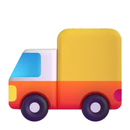
a removal van
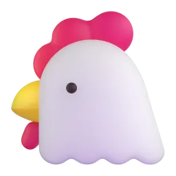
chickensa vegetable gardenno Wi-Fi?
b Go to the Vocabulary Bank. Tap each card, press 🔊 and repeat. Then match the meanings.Нажимайте на карточки, слушайте и повторяйте. Потом выберите слово к значению.
Vocabulary Bank2AMoving and country life
go to live in a different home →
repair and decorate an old house →
start to feel at home in a new place →
travel to work every day →
land with fields and villages, outside cities →
c Complete the sentences.Вставьте пропущенное слово.
We're going to our own tomatoes.
Have you the kitchen things yet?
I want to slow and spend more time with my kids.
Are you going to chickens?
The internet in the village is terrible.
After the city I need some peace and .
a call before moving
10 min
a Anya is moving to a village. She calls her friend Marina. Is Marina going to help?Аня переезжает в деревню и звонит подруге. Марина поможет?
Anya calls her friend MarinaListen first · Use 🐢 if it's fast · Текст — в конце
Marina:Anya! Is it true? Are you really leaving Moscow?
Anya:Yes! We're moving on Saturday. The removal van is coming at eight in the morning.
Marina:Wow. And what are you going to do there?
Anya:Pavel is going to work from home, and I'm going to open a small café in the village. We're going to grow our own vegetables, too.
Marina:And the kids?
Anya:Masha is starting at the village school on the fifteenth. She's so excited — there are only twelve children in her class!
Marina:Have you packed everything?
Anya:Not even half! I've got forty boxes and no time.
Marina:OK, I'll come on Friday and help you. I'll bring pizza!
Anya:Oh, you're a star! Thank you!
Marina:I think you'll love it there. But look at your list — you're going to need more boxes!
Is Marina going to help?
b Listen again. Complete the facts — a word or a number.Послушайте ещё раз. Допишите слово или число.
They are moving on .
The van is coming at in the morning.
Anya is going to open a small .
Masha is starting school on the .
There are children in her class.
c Is it a plan, a fixed arrangement — or a decision made now? This is the grammar of the next stage.План, договорённость или решение прямо сейчас? Следующая грамматика.
We're moving on Saturday. →
I'm going to open a small café. →
I'll come on Friday and help you. →
Masha is starting at the village school on the fifteenth. →
We're going to grow our own vegetables. →
going to · present continuous
12 min
a Read the Grammar Bank. The examples are from today's story.Прочитайте Grammar Bank: все примеры — из сегодняшней истории.
Grammar Bank2Aplans (going to) vs arrangements (present continuous)
be going to + verb
present continuous
use
a plan / intention — we decided, maybe no details yet
a fixed arrangement — date, time, other people know (in the diary!)
example
I'm going to open a café. We're going to grow vegetables.
We're moving on Saturday. The van is coming at eight.
Often both are possible: We're going to move / We're moving in May. With a date, time and booking — the present continuous is more natural.
Подсказка. going to = «собираюсь» (намерение). Present continuous для будущего = «всё уже договорено»: есть дата, билет, запись в календаре.
bStep 1. Choose the correct form.Шаг 1. Выберите правильную форму.
I've booked the tickets — we to Suzdal on Friday.
One day I learn to ride a horse.
What you doing tomorrow evening? — I'm meeting Anya.
Pavel work from home. That's his plan.
The doctor me at 10:30 on Monday.
cStep 2. Write the correct form.Шаг 2. Напишите правильную форму.
We (have) a party on the 20th — the invitations are sent.
I (paint) the kitchen yellow. (my plan)
you (keep) chickens? (plan)
Masha (start) school on Monday.
dStep 3. Build the sentences.Шаг 3. Соберите предложения.
eStep 4. About you.Шаг 4. О себе.
Anya's blog
8 min
a Anya writes a blog about the first week in the village. Is it what she expected?Блог Ани о первой неделе в деревне. Всё как она ожидала?
From Moscow to Mitino village · Week 1a blog post · about 150 words
We've been here for a week, and I'm already in love. The house is old and cold, so we're going to do up the kitchen first. Look at those dark clouds — it's going to rain again!
Masha loves her new school. She'll probably know everybody's name by Friday — it's that small.
The problem is the internet. The connection is terrible, so Pavel is driving to the town library every morning to work. I think we'll need a new router.
And the café? I'm meeting the head of the village on Thursday to talk about the old shop by the church. Maybe it will be my café next spring! Our neighbour has just offered us six chickens. I said: «Yes! I'll take them!»
Is village life what Anya expected?
b True or false?Верно или нет?
They are going to do up the kitchen first. →
Masha doesn't like her new school. →
The internet in the village is very good. →
Anya is meeting the head of the village on Thursday. →
Anya said no to the chickens. →
cwill or going to? Is it a prediction with evidence (I can see it!), a prediction from opinion, or a decision now? This is the next grammar.will или going to? Прогноз по признакам, мнение или решение прямо сейчас? Следующая грамматика.
Look at those dark clouds — it's going to rain! →
She'll probably know everybody's name by Friday. →
I think we'll need a new router. →
Yes! I'll take them! →
will or going to?
12 min
a Read the Grammar Bank. The examples are from today's story.Прочитайте Grammar Bank: все примеры — из сегодняшней истории.
Grammar Bank2Awill (decisions, offers, opinions) vs going to (evidence)
will / won't
be going to
a decision at the moment of speaking: «Yes! I'll take them!»
a decision made before (a plan): We're going to do up the kitchen.
offers, promises: I'll help you. I won't be late.
—
predictions from opinion: I think you'll love it. She'll probably…
predictions with evidence: Look at those clouds — it's going to rain!
Подсказка. Решили только что, предлагаем, обещаем → will. Видим признаки («смотри — тучи») → going to. С I think / probably / maybe — обычно will.
bStep 1. Choose the correct form.Шаг 1. Выберите правильную форму.
The phone's ringing. — I get it!
Watch out! That glass fall!
I think you love the village.
That bag looks heavy. I carry it for you.
We've decided: we sell the flat.
cStep 2. Write the correct form.Шаг 2. Напишите правильную форму.
I promise I (call) you every week.
Look at the sky! It (snow).
Maybe they (not / like) it.
dStep 3. Build the sentences.Шаг 3. Соберите предложения.
eStep 4. About you.Шаг 4. О себе.
Marina's message
6 min
a Marina writes to Anya on Thursday. Use everything from today.Марина пишет Ане в четверг. Всё вместе.
Marina → Anya
Hi! So I (come) tomorrow at six — I've booked a taxi.
I (bring) pizza, as I promised! (promise)
Have you the books yet? 😂
What you (do) with all the old furniture? (plan?)
I think you (settle) in very quickly. (opinion)
Oh no, look at the forecast — it (rain) all weekend! (evidence)
'll and gonna
5 min
a In fast speech I will → I'll /aɪl/, and going to often sounds like «gonna». Listen and repeat.will → 'll, going to → «gonna» в быстрой речи.
/aɪl/ HELP you.
We're «gonna» GROWVEGetables.
We're MOVing on SATurday.
It's «gonna» RAIN.
b Press 🔊. Do you hear 'll or going to?Нажмите 🔊. 'll или going to?
→
→
→
→
→
→
my future
8 min
a Answer your teacher. Choose the right future form.Отвечайте, выбирая правильную форму будущего.
Press the button · Нажмите кнопку
What are you doing this weekend?
What are you going to do next summer?
Could you live in a village? What would you miss?
What do you think your town will be like in 20 years?
Are you going to change anything at home this year?
What are you doing after this lesson?
Look out of the window. What's the weather going to be like?
bPlan a move! You and your teacher are moving to a new place (you choose where). Make a plan: when you're moving, what you're going to do there, who will help. Then predict: what will be difficult?Спланируйте с преподавателем переезд: когда, что будете делать, кто поможет, что будет трудно.
my plans
6 min
a Write a short message about your plans for the next month.Короткое сообщение о планах на месяц.
Example: Next month is going to be busy! On the 3rd I'm flying to Kazan for work. I'm going to visit my aunt there too. I think it'll be cold, so I'm going to take my warm coat. If you need anything from Kazan, tell me — I'll bring it!
b Press «Отправить преподавателю» — your teacher will see your answers.Нажмите «Отправить преподавателю».
Готово? Отправьте ответы преподавателю
Ответы сразу придут преподавателю на платформу — пересылать в Telegram ничего не нужно. Нет интернета? Ответы сохранятся и отправятся сами. Открыть их может только преподаватель.
Can you…?
3 min
a Listen to your teacher. Write the corrected sentences.Послушайте преподавателя и запишите исправленные фразы.
Great!
Fix it
b Can you do these things?Вы можете это сделать?
I can talk about moving and country life with 12 new wordsговорить о переезде и жизни за городом
I can use going to for plans and the present continuous for arrangementsпланы и договорённости
I can use will for decisions, offers and predictionswill: решения, предложения, прогнозы
I can understand a phone call and a blogпонять звонок и блог
Was the grammar clear today? What was difficult? · Понятна ли была грамматика?
moving and country life
10 min at home
Homework, part 1 of 2: words. Mostly tapping — easy on your phone. Part 2 (grammar) is on the next page — press «Далее».Часть 1: слова урока. Ответы сохраняются сами.
a Read and choose the word or phrase.Прочитайте и выберите слово или фразу.
Everything is in boxes — the van is coming tomorrow. →
They are going to repair and paint the old house. →
Every day I drive one hour to the office. →
After two months we started to feel at home here. →
b How do you say it in English? Write.Как это по-английски? Напишите.
переезжать →
выращивать →
сельская местность →
тишина и покой →
going to · present continuous · will
15 min at home
Homework, part 2 of 2: grammar. Read the reminder, then tap or type. At the end press «Отправить преподавателю».Часть 2: грамматика урока. В конце — «Отправить преподавателю».
Remember · Запомнитеplan · arrangement · decision now
I'm going to+open a café.+(plan)
We're moving+on Saturday.+(arranged)
I'll+help you!+(now)
прогноз по признакам → going to · мнение (I think…) → will
a Choose.Выберите.
I'm thirsty. — I get you some water.
We dinner with Anya on Friday at 7.
Look at that car! It crash!
I think it be a great year.
b Write the correct form.Напишите правильную форму.
I (start) a new job on Monday. It's all arranged.
We (travel) more next year. (plan)
Don't worry, I (not / forget). (promise)
c Build the sentences.Соберите предложения.
d About you.О себе.
Готово? Отправьте ответы преподавателю
Ответы сразу придут преподавателю на платформу — пересылать в Telegram ничего не нужно. Нет интернета? Ответы сохранятся и отправятся сами. Открыть их может только преподаватель.
extra practice
10 min
What to do
Build the sentences: tap the words in the right order. Made a mistake? Press «↺ Заново».
Find the mistake in each sentence and write the correct sentence.
Press «Проверить» after each exercise.
1. Build the sentence
2. Find the mistake
The phone's ringing. — I'm going to answer it!
Look at the clouds! It will rain.
I will to help you.
We move on Saturday — the van is booked.
Play and review
10 min
Game time!Слова урока в играх: пары, скорость, буквы и даже детектив. Выбирайте любую.
What to do · Что делать
Play with the words from this lesson — great for review before the next lesson!Играйте со словами урока — это лучший способ повторить их.
Your best results are saved and your teacher can see them.Лучшие результаты сохраняются, преподаватель их видит.
Match upНайди пару
Tap a word, then its meaning. As fast as you can! · Нажмите слово, потом его значение.
60 seconds60 секунд
Choose the right word for the meaning. How many in one minute? · Сколько слов успеете за минуту?
Listen and spellУслышь и напиши
Listen to the word and write it. Press 🔊 to hear it again. · Послушайте слово и напишите его.
MemoryМемори
Find the pairs: a word and its meaning. Remember where the cards are! · Откройте по две карточки и найдите пары «слово — значение».
Word builderСобери слово
The letters are mixed up. Tap them in the right order. · Буквы перепутались — нажимайте их по порядку и соберите слово.
BalloonsВоздушные шарики
Guess the word letter by letter. Every wrong letter pops a balloon! · Угадайте слово по буквам. Каждая неверная буква лопает шарик.
DetectiveДетектив
Solve the case! Each clue is a task with this lesson's words and grammar. Every right answer clears one suspect. · Раскройте дело: каждая улика — задание по словам и грамматике урока.
IRIS SCHOOL · Паша · урок 3
What the Coach Said
After losing his biggest client, Tom works with a productivity coach. Habits and productivity phrases, and reported speech: She said… She told me to… She asked me if…
“We are what we repeatedly do. Excellence, then, is not an act, but a habit.”Will Durant
Intermediate+Habits & productivityReported speechQuestions & instructions60 min
habits and productivity
10 min
In this lesson you will…
learn 10 phrases about habits and productivity
understand Tom's first session with a productivity coach
report what people said: She said (that) I was on track. She told me (that)…
report questions and instructions: She asked me if… She told me to… / not to…
talk about the best advice you've ever had
a Remember Tom from our last lesson? He put off a big project, lost his biggest client and learned the hard way. Now he takes the plunge and gets help: a productivity coach. Look at the pictures. Which of these things are easy for you, and which are hard?Помните Тома? Теперь он работает с коучем по продуктивности. Что из этого даётся вам легко, а что трудно?
a goaldistractionssmall stepsfocustrackingon track
b Go to the Vocabulary Bank. Tap each card, press 🔊 and repeat. Then match the meanings.
Vocabulary Bank2BHabits and productivity
to divide a big task into small steps →
to continue with a plan, even when it's hard →
to stop doing something you do regularly →
to decide which tasks are the most important →
to write down or check what you do →
to be doing what you planned, at the right speed →
c Complete the phrases.Вставьте пропущенное слово.
I keep getting by emails — I can't finish anything.
Turn off notifications if you want to stay .
It takes about two months to a new habit.
Let's break the project into five steps.
We're two days behind — we aren't track.
Write a plan and to it!
d Words from our last two lessons — you will hear some of them in Tom's session. Complete the sentences.Слова прошлых уроков — некоторые прозвучат в сессии Тома.
I always put boring tasks until the last minute.
Losing the client was a real wake- call.
I pulled an all- to finish the report.
I learned the way: start early!
Tom finally took the and called a coach.
I want to make for all the time I wasted.
Tom's first session
12 min
a Tom records his coaching sessions so he can listen again. Listen to the first one with Maya, his coach. You will hear many of today's phrases. What is Tom's biggest problem?
Coaching session 1: Maya and TomListen first · Use 🐢 if it's fast · Text at the end
Maya (coach):So, Tom, why did you decide to get a coach?
Tom:Well, last year I lost my biggest client because I put off a project. It was a real wake-up call. I don't want to pull any more all-nighters.
Maya (coach):I understand. What's your biggest problem at the moment?
Tom:I get distracted all the time. I check my phone every five minutes, and I can't stay focused for more than ten minutes.
Maya (coach):That's very common. Have you ever kept track of your time?
Tom:No, never.
Maya (coach):Then here's your first task. Keep track of your time for one week. Write down everything you do.
Tom:Everything? Even social media?
Maya (coach):Especially social media! And put your phone in another room while you're working.
Tom:OK. What else?
Maya (coach):Don't try to change everything at once. You can't break ten bad habits in one week. Set one goal and stick to it.
Tom:And will that really work?
Maya (coach):It will if you break big tasks down into small steps. Big tasks scare us; small steps don't. I'll call you next Friday to check you're on track.
Tom:Great. I'm going to start tomorrow.
Maya (coach):Tomorrow? Why not today?
Tom:Ha! Fair point. I'm starting today.
Tom's biggest problem is that he…
b Listen again. Complete Maya's advice.
Keep track of your time for one .
Put your phone in another while you're working.
You can't break ten bad in one week.
Set one and stick to it.
Maya will call Tom next .
c That evening Tom tells his wife, Anna, about the session. Read how he reports it. What did they really say? Look at the verbs — what changes? This is the grammar of the next stage.Том пересказывает сессию жене. Что было сказано на самом деле? Что происходит с глаголами?
She said that was very common. →
I told her I couldn't stay focused for more than ten minutes. →
She said she would call me the following Friday. →
I said I was going to start the next day. →
I told her I had lost my biggest client. →
reported statements
15 min
a Read the Grammar Bank. The examples are from Tom's coaching session. When we report, the verb usually goes one step back into the past.
Grammar Bank2Breported statements
direct speech
reported speech
change
«I get distracted.»
He said (that) he got distracted.
present simple → past simple
«I'm starting today.»
He said he was starting that day.
present continuous → past continuous
«I lost my biggest client.»
He said he had lost his biggest client.
past simple → past perfect
«I've never kept track of my time.»
He said he had never kept track of his time.
present perfect → past perfect
«I'll call you.»
She said she would call him.
will → would
«I can't stay focused.»
He said he couldn't stay focused.
can → could
«I'm going to start tomorrow.»
He said he was going to start the next day.
am going to → was going to
say something (to someone): She said (that)… · tell someone something: She told me (that)… — ✗ She said me.
Pronouns and time words change too: today → that day · tomorrow → the next day · next Friday → the following Friday · here → there.
If something is still true now, the verb can stay the same: She said big tasks scare us. In the exercises below, move the verb back.
that is optional: She told me (that) I was on track.
Подсказка. По-русски «Она сказала, что я молодец» — время не меняется. По-английски после said / told глагол обычно «сдвигается назад»: present → past, past → past perfect, will → would, can → could.
b said or told?said или told?
Tom that he got distracted all the time.
Maya Tom that it was very common.
He me he was starting that day.
She she would call on Friday.
I to Anna that the session was great.
Anna him she was proud of him.
c Choose the reported form.Выберите форму в косвенной речи.
«I check my phone every five minutes.» → Tom said he his phone every five minutes.
«I'll call you next Friday.» → Maya said she him the following Friday.
«I can't stay focused.» → Tom said he stay focused.
«I lost my biggest client last year.» → He said he his biggest client the year before.
«I'm working on a new project.» → He told me he on a new project.
«I've never kept track of my time.» → He said he track of his time.
d Report the sentences. Move the verb one step back.Передайте слова в косвенной речи: сдвиньте глагол назад.
«I'm tired of all-nighters.» → Tom said he tired of all-nighters.
«I want to stick to a plan.» → He said he to stick to a plan.
«I've set a goal.» → He told Maya he a goal.
«You're on track.» → Maya told Tom he on track.
«I'll prioritise the big tasks.» → He said he the big tasks.
«We didn't finish the project.» → They said they the project.
«I can do it.» → She said she do it.
«I'm going to start tomorrow.» → He said he was going to start .
e Build the sentences.
Tom's blog: week one
9 min
a A week later Maya calls Tom, as she promised. Tom writes about the call on his blog — in reported speech. Read. Is Tom on track?
Tom's blog · «Week one with a coach»
On Friday Maya called me, as she had promised. First she asked me if I had kept track of my time. I said I had, and I showed her my notes. The shock of the week: I had spent eleven hours on social media!
Maya didn't get angry. She asked me how I felt about it. I told her I was a bit embarrassed. Then she asked me where my phone had been while I was working. I admitted it had been on my desk, right next to my laptop.
So she gave me new instructions. She told me to put my phone in the kitchen, and she asked me to send her a photo of my desk every morning — with no phone on it! She also told me not to work for more than fifty minutes without a break.
At the end, I asked her when I would see results. She said it usually took about two months to form a new habit, but that I was already on track. Not bad for week one!
Is Tom on track after week one?
b True or false?
Maya forgot to call Tom. →
Tom spent eleven hours on social media. →
Maya was angry with Tom. →
Tom's phone was in another room while he was working. →
Tom has to send Maya a photo every morning. →
Maya said it took about two weeks to form a new habit. →
c Look at how Tom reports Maya's words. Was it a question or an instruction / request? Look at the words after asked and told. This is the grammar of the next stage.Это был вопрос или указание / просьба? Посмотрите, что идёт после asked и told.
She asked me if I had kept track of my time. →
She told me to put my phone in the kitchen. →
She asked me how I felt about it. →
She asked me to send her a photo of my desk. →
She told me not to work for more than fifty minutes. →
I asked her when I would see results. →
reported questions and instructions
13 min
a Read the Grammar Bank. The examples are from Tom's blog.
Grammar Bank2Breported questions and instructions
direct speech
reported speech
yes / no question
«Did you keep track of your time?»
She asked me if (whether) I had kept track of my time.
wh- question
«How do you feel about it?» «When will I see results?»
She asked me how I felt about it. I asked her when I would see results.
instruction
«Put your phone in the kitchen.» «Don't work for more than fifty minutes.»
She told me to put my phone in the kitchen. She told me not to work for more than fifty minutes.
request
«Can you send me a photo?» · «Please send me a photo.»
She asked me to send her a photo.
A reported question is not a question any more: no do / did, statement word order, no question mark. ✗ She asked me how did I feel. ✓ She asked me how I felt.
Yes / no questions: if or whether.
Instructions: told + person + (not) to + verb. Requests: asked + person + to + verb. ✗ She told me don't work.
Подсказка. Косвенный вопрос — уже не вопрос: прямой порядок слов (подлежащее + глагол), без do / did. Русское «ли» = if / whether. Просьбы и указания: asked / told + кого + (not) to + глагол.
«Did you enjoy the session?» → Anna asked Tom the session.
«Where do you work?» → Maya asked Tom .
«Can you send me a photo?» → She asked me her a photo.
«Don't check your phone!» → She told me my phone.
«Will it really work?» → Tom asked really work.
«Why did you get a coach?» → She asked me why a coach.
b Report the questions. Remember: no do / did, and statement word order.Передайте вопросы: без do / did, прямой порядок слов.
«Are you busy?» → She asked me busy.
«Where do you live?» → He asked me where .
«Have you set a goal?» → Maya asked Tom a goal.
«What time does the meeting start?» → I asked what time .
«Did you stick to the plan?» → She asked me to the plan.
«How long will it take?» → He asked how long .
c Report the instructions and requests with told / asked + (not) to.told / asked + кого + (not) to + глагол.
Maya to Tom: «Write down everything you do.» → Maya told Tom down everything he did.
Maya to Tom: «Don't try to change everything at once.» → She told him to change everything at once.
Tom to Anna: «Please hide my phone!» → Tom asked Anna his phone.
Anna to Tom: «Don't work after ten.» → Anna told Tom after ten.
The boss to the team: «Prioritise the urgent tasks.» → The boss told the team the urgent tasks.
d Build the sentences.
two months later
7 min
a Two months later Amy, the podcast host from our last lesson, invites Tom back to «Second Chances». Tom tells her about the coaching. Use everything from today: the phrases and reported speech.Всё вместе: слова урока + косвенная речь.
Tom on «Second Chances» again
My coach told me (keep) track of my time for a week.
I spent eleven hours a week on social media, so I really needed to break that .
She asked me what my biggest problem (be).
I told her I (can / not) stay focused for more than ten minutes.
She told me to break big tasks into small steps.
She also told me (not / check) my phone while I was working.
Every Friday she asked me if I was on .
Last week she said I (form) three good habits — I was so proud!
that /ðət/ · to /tə/
5 min
a Now say it naturally. In reported speech that and to are usually weak: /ðət/, /tə/. The stress is on the important words. A reported question ends with a falling tone ↘ — it is not a real question. Listen and repeat.that и to звучат слабо; косвенный вопрос — с понижением тона, как утверждение.
She SAID /ðət/ I was on TRACK.
She TOLD me /tə/ put my PHONE in the KITchen.
She TOLD me NOT /tə/ WORK after TEN.
She ASKED me how I FELT about it. ↘
I ASKED her if it would REALly WORK. ↘
b Say two true sentences: one thing your teacher said today and one question she asked you. You said that… You asked me if…
coach for a day
8 min
aStep 1. Your teacher is your coach today. Press the button and answer the questions — use the phrases from the Vocabulary Bank.
Press the button
What habit would you like to form this year?
What distracts you most when you are working or studying?
How do you keep track of your tasks: an app, a notebook or nothing?
Do you set goals? Do you usually stick to them?
Have you ever broken a bad habit? How did you do it?
What is the best advice anyone has ever given you about work or studying?
I get distracted by…I'm trying to break the habit of…I find it hard to stick to…I keep track of… with…My … once told me to…
bStep 2. Report! Tell your teacher what she asked you and what you answered: You asked me what distracted me most. I said that…
You asked me if…You asked me what / how / why…I told you that…I said I would…
the best advice I've ever had
7 min
a Tom got great advice from Maya. Now write about the best advice anyone has ever given you. Report their words — one sentence in each line. Then read it to your teacher.
b Press «Отправить преподавателю» — your teacher will see your answers.
Готово? Отправьте ответы преподавателю
Ответы сразу придут преподавателю на платформу — пересылать в Telegram ничего не нужно. Нет интернета? Ответы сохранятся и отправятся сами. Открыть их может только преподаватель.
Can you…?
3 min
a Your teacher gives feedback on your speaking and writing. Write the corrections.
Great!
Fix it
b Can you do these things?
I can talk about habits and productivity with the new phrases
I can report what someone said: She said (that)… / She told me (that)…
I can report questions and instructions: She asked me if… / She told me to…
I can understand a conversation with a coach
What was the most useful thing today?
habits and productivity
15 min at home
Homework, part 1 of 2: words. Mostly tapping — easy on your phone. Part 2 (grammar) is on the next page — press «Далее».Часть 1: слова урока. Ответы сохраняются сами.
a Look at the picture. Which phrase is it?Какая фраза подходит к картинке?
Tom wants to work, but he keeps checking his messages. →
Tom divides the website project into ten small tasks. →
Tom writes down how he spends every hour. →
It's week four, and Tom is doing everything he planned. →
Tom stopped checking his phone in bed. →
Tom decides: «By June I'm going to have five new clients.» →
b How do you say it in English? Write the phrase.Как это по-английски? Напишите фразу.
придерживаться (плана) →
расставлять приоритеты →
сохранять концентрацию →
сформировать привычку →
отвлекаться →
reported speech
15 min at home
Homework, part 2 of 2: grammar. Look at the colour formulas, then tap or type. At the end press «Отправить преподавателю».Часть 2: грамматика урока. В конце — «Отправить преподавателю».
Remember · ЗапомнитеReported statements
«I+can't+stay focused.»
He said he+couldn't+stay focused.
Глагол «на шаг назад»: present → past, past → had + V3, will → would, can → could. say (that)… · tell someone (that)…
Remember · ЗапомнитеQuestions and instructions
She asked me+how+I felt.
She asked me+if+I was+busy.
She told me+not to+check+my phone.
В косвенном вопросе нет do / did и порядок слов прямой. Указания и просьбы: told / asked + кого + (not) to + глагол.
a Reported statements. Tap the correct form.Выберите правильную форму.
«I'm tired.» → She said she tired.
«I'll help you.» → He said he me.
«We missed the bus.» → They told me they the bus.
«I can't come.» → She said she come.
«You're on track.» → Maya me that I was on track.
b Report the sentences. Move the verb one step back.Сдвиньте глагол назад.
«I work from home.» → He said he from home.
«I've finished the project.» → She told me she the project.
«I'm going to start today.» → He said he going to start that day.
«I don't like mornings.» → She said she mornings.
c Questions and instructions. Tap the correct form.Вопросы и указания. Выберите форму.
«Where are you going?» → He asked me where .
«Do you like coffee?» → She asked me coffee.
«Don't be late!» → My boss told me late.
«Please call me.» → She asked me her.
«What time is it?» → He asked what time .
d Build the sentences.Соберите предложения.
e About you. Four true sentences in reported speech.О себе: четыре предложения в косвенной речи.
Готово? Отправьте ответы преподавателю
Ответы сразу придут преподавателю на платформу — пересылать в Telegram ничего не нужно. Нет интернета? Ответы сохранятся и отправятся сами. Открыть их может только преподаватель.
extra practice
10 min
What to do
Build the sentences: tap the words in the right order. Made a mistake? Press «↺ Заново».
Find the mistake in each sentence and write the correct sentence.
Press «Проверить» after each exercise.
1. Build the sentence
2. Find the mistake
She said me that I was on track.
He asked me where did I work.
She told me don't check my phone.
Tom said he will call me the next day.
Play and review
10 min
Game time!Слова урока в играх: пары, скорость, буквы и даже детектив. Выбирайте любую.
What to do · Что делать
Play with the words from this lesson — great for review before the next lesson!Играйте со словами урока — это лучший способ повторить их.
Your best results are saved and your teacher can see them.Лучшие результаты сохраняются, преподаватель их видит.
Match upНайди пару
Tap a word, then its meaning. As fast as you can! · Нажмите слово, потом его значение.
60 seconds60 секунд
Choose the right word for the meaning. How many in one minute? · Сколько слов успеете за минуту?
Listen and spellУслышь и напиши
Listen to the word and write it. Press 🔊 to hear it again. · Послушайте слово и напишите его.
MemoryМемори
Find the pairs: a word and its meaning. Remember where the cards are! · Откройте по две карточки и найдите пары «слово — значение».
Word builderСобери слово
The letters are mixed up. Tap them in the right order. · Буквы перепутались — нажимайте их по порядку и соберите слово.
BalloonsВоздушные шарики
Guess the word letter by letter. Every wrong letter pops a balloon! · Угадайте слово по буквам. Каждая неверная буква лопает шарик.
DetectiveДетектив
Solve the case! Each clue is a task with this lesson's words and grammar. Every right answer clears one suspect. · Раскройте дело: каждая улика — задание по словам и грамматике урока.
IRIS SCHOOL · Паша
The 30-Day Challenge
Can you learn a new skill in 30 days? Rob tried the guitar — and almost gave up. Words for learning and habits, a podcast and a blog — and verb patterns: I decided to start. I kept practising. I stopped to rest — I stopped checking my phone.
“We are what we repeatedly do.”Will Durant
Intermediate+Learning a skillGerunds & infinitives60–70 min
learning a skill
10 min
In this lesson you will…
learn 12 words about learning and habits12 слов: обучение и привычки
understand a podcast and a blog about a 30-day challengeпонять подкаст и блог
tell your teacher about a skill you want to learnрассказать о навыке, который хотите освоить
a Have you ever tried to learn something new very fast? Look at the pictures. What could you learn in 30 days?Что можно освоить за 30 дней?
the guitar30 daysdistractions20 minutes a daygive up?progress
b Go to the Vocabulary Bank. Tap each card, press 🔊 and repeat. Then match the meanings.Нажимайте на карточки, слушайте и повторяйте. Потом выберите слово к значению.
Vocabulary Bank3ALearning a skill
stop trying →
something that takes your attention away →
do something later, not now →
a person who is starting to learn →
find something very difficult →
c Complete the sentences.Вставьте пропущенное слово.
My is to run 5 km by summer.
Don't give — you're almost there!
Reading before bed is a good .
I always put my homework until Sunday.
You've made a lot of this month!
She to finish the marathon.
«Skill Up»
10 min
a Rob is a guest on the podcast «Skill Up». He tried to learn the guitar in 30 days. Did he manage to do it?Роб пытался научиться играть на гитаре за 30 дней. Получилось?
Podcast «Skill Up»: 30 days with a guitarListen first · Use 🐢 if it's fast · Текст — в конце
Nina (host):Rob, why did you decide to learn the guitar in 30 days?
Rob:I turned 30, and I wanted to stop dreaming and start doing. I've always enjoyed listening to rock music, so the guitar was easy to choose.
Nina (host):What was your plan?
Rob:Twenty minutes every day. I promised to practise before breakfast, so I couldn't put it off.
Nina (host):Was it easy?
Rob:No way! In week two my fingers hurt and I struggled with the chords. On day nine I almost gave up.
Nina (host):So what helped you keep going?
Rob:I stopped checking my phone during practice — it was my biggest distraction. And my sister kept sending me funny videos of beginners.
Nina (host):And on day thirty?
Rob:I managed to play a whole song for my family. It wasn't perfect, but I'm planning to learn ten more songs by summer.
Did Rob manage to play the guitar?
b Listen again. Complete the facts — a word or a number.Послушайте ещё раз. Допишите слово или число.
Rob practised for minutes every day.
He practised before .
He almost gave up on day .
His biggest distraction was his .
He wants to learn more songs by summer.
c Look at the verbs after the first verb. -ing or to? This is the grammar of the next stage.Что после первого глагола: -ing или to? Это следующая грамматика.
I've always enjoyed listening to rock music. →
I promised to practise before breakfast. →
My sister kept sending me funny videos. →
I managed to play a whole song. →
I'm planning to learn ten more songs. →
-ing or to?
12 min
a Read the Grammar Bank. The examples are from today's story.Прочитайте Grammar Bank: все примеры — из сегодняшней истории.
Grammar Bank3Averb + -ing / verb + to
verb + -ing
verb + to
enjoy, avoid, keep, finish, mind, give up, can't stand, imagine, suggest, spend time
decide, want, hope, plan, promise, manage, learn, need, agree, offer, would like
I enjoy listening to rock. I kept practising. I gave up eating sweets.
I decided to learn the guitar. I managed to play a song.
After prepositions — always -ing: I'm good at playing, I'm interested in learning, before starting.
love / like / hate / start / begin — both are possible: I love playing / to play.
Подсказка. Глаголы «процесса и отношения» (enjoy, keep, finish, avoid) — с -ing; глаголы «решения и цели» (decide, plan, hope, manage) — с to, потому что смотрят в будущее.
bStep 1. Choose the correct form.Шаг 1. Выберите правильную форму.
I enjoy new things.
He decided the guitar.
Have you finished your homework?
We managed the train.
She's interested in Spanish.
I can't stand in queues.
cStep 2. Write the correct form.Шаг 2. Напишите правильную форму.
I hope (pass) the exam.
He gave up (smoke) last year.
They agreed (help) us.
Do you mind (open) the window?
dStep 3. Build the sentences.Шаг 3. Соберите предложения.
eStep 4. About you.Шаг 4. О себе.
Rob's blog
8 min
a Rob wrote a blog post after the challenge. Read his tips. Which tip do you like most?Роб написал советы после челленджа. Какой совет вам нравится?
Rob's blog · What I learned in 30 daysa blog post · about 160 words
1. Stop waiting for motivation. I used to wait for the «right mood». Now I just start — motivation comes later.
2. Stop to rest. On day nine I stopped to rest for two days. It saved my fingers — and my challenge.
3. Remember to celebrate. I remember playing my first chord: it sounded terrible, but I was so proud!
4. Try practising at the same time every day. I tried to practise in the evening, but I was always tired. Mornings worked much better.
5. Don't forget to have fun. I'll never forget seeing my mum's face when I played her favourite song.
b True or false?Верно или нет?
Rob says you should wait for motivation. →
He had a break for two days. →
His first chord sounded great. →
Practising in the evening worked well for him. →
He played his mum's favourite song. →
cstop, remember, try, forget + -ing or + to? Is the meaning the same? This is the next grammar.stop / remember / try + -ing или to — смысл одинаковый? Следующая грамматика.
Stop waiting for motivation. →
I stopped to rest for two days. →
I remember playing my first chord. →
Don't forget to have fun. →
stop / remember / try
12 min
a Read the Grammar Bank. The examples are from today's story.Прочитайте Grammar Bank: все примеры — из сегодняшней истории.
Grammar Bank3Astop · remember · forget · try + -ing or to
verb
+ -ing
+ to
stop
stop the activity: I stopped checking my phone. (больше не проверяю)
stop in order to do sth: I stopped to rest. (остановился, чтобы отдохнуть)
remember
a memory of the past: I remember playing my first chord.
not forget a task: Remember to practise! (не забудь сделать)
forget
(never) forget a memory: I'll never forget seeing her face.
forget a task: I forgot to call him.
try
an experiment: Try practising in the morning.
make an effort: I tried to practise, but I was tired.
Подсказка.-ing смотрит назад или на само действие, to — вперёд, на цель или задачу.
bStep 1. Choose the correct form.Шаг 1. Выберите правильную форму.
I've stopped sugar in my coffee. It's healthier.
We stopped a coffee on the way.
Remember the door when you leave!
I remember to the sea for the first time.
I tried the box, but it was too heavy.
If you can't sleep, try a book.
cStep 2. Write the correct form.Шаг 2. Напишите правильную форму.
Don't forget (send) me the photos!
She stopped (work) at 6 and went home.
I'll never forget (meet) my favourite singer.
dStep 3. Build the sentences.Шаг 3. Соберите предложения.
eStep 4. About you.Шаг 4. О себе.
Rob's message
6 min
a Rob writes to his sister. Use everything from today.Роб пишет сестре. Всё вместе.
Rob → his sister
Thanks for the videos! They helped me keep (go).
I've decided (take) lessons with a real teacher.
I've stopped (watch) TV in the evenings — more time for practice!
I really enjoy (play) with other people.
Remember (come) to my first concert on Friday!
I'm still a , but I've made a lot of .
weak to /tə/
5 min
a In verb + to the word to is weak: /tə/. The main verbs are strong. Listen and repeat.to звучит слабо /tə/. Громко — главные глаголы.
I deCIded tə LEARN the guiTAR.
I MAnaged tə PLAY a SONG.
reMEMber tə PRACtise!
I STOPPED tə REST.
b Press 🔊. Do you hear -ing or to?Нажмите 🔊. Вы слышите -ing или to?
→
→
→
→
→
→
my next skill
8 min
a Answer your teacher. Use verb + -ing or + to.Отвечайте, используя -ing или to.
Press the button · Нажмите кнопку
What do you enjoy doing in your free time?
What have you decided to learn this year?
What do you always put off doing?
What is your biggest distraction?
Have you ever given up doing something? Why?
What do you remember doing on your first day at school?
What would you like to stop doing?
What do you need to remember to do this week?
I enjoy…ingI've decided to…I keep …ingI gave up …ingI remember …ing
bYour 30-day challenge. Plan a challenge for yourself: your goal, your plan, possible distractions. Your teacher asks questions: What will you do if you want to give up?Ваш 30-дневный челлендж: цель, план, что может отвлекать. Преподаватель задаёт вопросы.
my challenge plan
6 min
a Write your own 30-day challenge plan.Напишите план своего челленджа.
Example: I've decided to learn to cook Italian food. I'm planning to practise three times a week. I'll try cooking on Sundays because I enjoy having more time. I need to stop ordering pizza! I hope to cook a real lasagne by December.
b Press «Отправить преподавателю» — your teacher will see your answers.Нажмите «Отправить преподавателю».
Готово? Отправьте ответы преподавателю
Ответы сразу придут преподавателю на платформу — пересылать в Telegram ничего не нужно. Нет интернета? Ответы сохранятся и отправятся сами. Открыть их может только преподаватель.
Can you…?
3 min
a Listen to your teacher. Write the corrected sentences.Послушайте преподавателя и запишите исправленные фразы.
Great!
Fix it
b Can you do these things?Вы можете это сделать?
I can talk about learning and habits with 12 new wordsговорить об обучении и привычках
I can use verb + -ing and verb + toглагол + -ing / to
I can use stop / remember / forget / try correctlystop / remember / forget / try
I can understand a podcast and a blogпонять подкаст и блог
Was the grammar clear today? What was difficult? · Понятна ли была грамматика?
learning a skill
10 min at home
Homework, part 1 of 2: words. Mostly tapping — easy on your phone. Part 2 (grammar) is on the next page — press «Далее».Часть 1: слова урока. Ответы сохраняются сами.
a Read and choose the word or phrase.Прочитайте и выберите слово или фразу.
After two weeks Max stopped going to the gym. →
I will clean the kitchen… tomorrow. Or next week. →
I want to study, but I keep looking at my phone. →
It was hard, but she finished the marathon. →
b How do you say it in English? Write.Как это по-английски? Напишите.
привычка →
цель →
новичок →
продолжать, не останавливаться →
-ing or to · stop / remember / try
15 min at home
Homework, part 2 of 2: grammar. Read the reminder, then tap or type. At the end press «Отправить преподавателю».Часть 2: грамматика урока. В конце — «Отправить преподавателю».
stop doing — больше не делаю · stop to do — остановился, чтобы сделать · remember to do — не забыть · remember doing — помнить
a Choose.Выберите.
I want a new language.
She keeps me the same question.
Did you remember the milk?
I stopped meat two years ago.
Try the computer off and on again.
b Write the correct form.Напишите правильную форму.
We plan (travel) in May.
I can't imagine (live) without music.
He forgot (call) his mum.
c Build the sentences.Соберите предложения.
d About you.О себе.
Готово? Отправьте ответы преподавателю
Ответы сразу придут преподавателю на платформу — пересылать в Telegram ничего не нужно. Нет интернета? Ответы сохранятся и отправятся сами. Открыть их может только преподаватель.
extra practice
10 min
What to do
Build the sentences: tap the words in the right order. Made a mistake? Press «↺ Заново».
Find the mistake in each sentence and write the correct sentence.
Press «Проверить» after each exercise.
1. Build the sentence
2. Find the mistake
I enjoy to learn new things.
He decided learning the guitar.
I'm interested in learn Spanish.
Remember locking the door when you leave!
Play and review
10 min
Game time!Слова урока в играх: пары, скорость, буквы и даже детектив. Выбирайте любую.
What to do · Что делать
Play with the words from this lesson — great for review before the next lesson!Играйте со словами урока — это лучший способ повторить их.
Your best results are saved and your teacher can see them.Лучшие результаты сохраняются, преподаватель их видит.
Match upНайди пару
Tap a word, then its meaning. As fast as you can! · Нажмите слово, потом его значение.
60 seconds60 секунд
Choose the right word for the meaning. How many in one minute? · Сколько слов успеете за минуту?
Listen and spellУслышь и напиши
Listen to the word and write it. Press 🔊 to hear it again. · Послушайте слово и напишите его.
MemoryМемори
Find the pairs: a word and its meaning. Remember where the cards are! · Откройте по две карточки и найдите пары «слово — значение».
Word builderСобери слово
The letters are mixed up. Tap them in the right order. · Буквы перепутались — нажимайте их по порядку и соберите слово.
BalloonsВоздушные шарики
Guess the word letter by letter. Every wrong letter pops a balloon! · Угадайте слово по буквам. Каждая неверная буква лопает шарик.
DetectiveДетектив
Solve the case! Each clue is a task with this lesson's words and grammar. Every right answer clears one suspect. · Раскройте дело: каждая улика — задание по словам и грамматике урока.
IRIS SCHOOL · Пелагея · урок 2
Tom Comes to Town
Tom visits Anna! Listen first, find places on a map and say where they are: next to, opposite, between. Grammar the easy way: There's a café. It's next to the bank. and some / any. Сначала слушаем, потом говорим.
“East or West, home is best.”English proverb
A1–A2My townThere's / It'ssome / any60 min
Tom is here!
8 min
In this lesson you will…
understand Tom and Anna — two listeningsпонимать на слух: Том в гостях у Анны
say where places are: next to, opposite, betweenговорить, где что находится
use There's a café. It's next to the bank.There's… и It's… — в чём разница
use some and any: There are some shops. There aren't any cinemas.some и any
describe your streetрассказать о своей улице
a Remember Anna? She has a flat in a new town. Last time she said to Tom: «Come next month!» Now Tom is here! Look at the pictures. What can he see?Помните Анну? В прошлый раз она позвала Тома в гости — и вот он приехал! Посмотрите на картинки: что он видит?
a bus stopa supermarketa museuma pharmacya caféa bank
b Listen once. Don't read — just listen! Where is Anna?Послушайте один раз без текста. Где Анна?
Tom calls AnnaListen once without the text · Сначала без текста
Tom:Hi Anna! I'm here! I'm at the bus stop in Market Street.
Anna:Hi Tom! Welcome to my town! What can you see?
Tom:Hmm… There's a big supermarket next to the bus stop. And there's a museum.
Anna:OK. Is there a green pharmacy opposite the bus stop?
Tom:Yes, there is. I can see it.
Anna:Great! Now cross the street. There's a little café next to the pharmacy. It's between the pharmacy and the bank.
Tom:Oh yes! The café with the blue door?
Anna:That's it! I'm in the café now. There are two coffees on the table. One is for you!
Tom:Perfect! See you in one minute!
Where is Anna?
c Listen again. What can Tom see? Yes or No?Послушайте ещё раз. Что видит Том? Да или нет?
a big supermarket? →
a museum? →
a cinema? →
a green pharmacy? →
a park? →
a café with a blue door? →
d Listen for the little words. Where are the places? Choose.Послушайте маленькие слова: где что находится? Эти слова — тема следующего этапа.
The supermarket is the bus stop.
The pharmacy is the bus stop.
The café is the pharmacy and the bank.
where is it?
10 min
a Go to the Vocabulary Bank. Tap each card, press 🔊 and repeat. These words help you say where something is.Нажимайте на карточки, слушайте и повторяйте. Эти слова говорят, ГДЕ что-то находится.
Vocabulary Bank1BWhere is it?
b Look at the map of Market Street — Anna's street. Choose the right words.Посмотрите на карту улицы Анны и выберите слова.
Market Street — Anna's street · улица Анны
the bankthe caféthe pharmacythe library
═════ Market Street ═════
the parkthe supermarketthe bus stopthe museum
Сверху — одна сторона улицы, снизу — другая. Места друг под другом — напротив.
The bank is the café.
The park is the bank.
The supermarket is the park and the bus stop.
The library is the museum.
The museum is the bus stop.
The pharmacy is the café and the library.
c Look at the pictures. Which words?Посмотрите на картинки. Какие это слова?
→
→
→
→
→
d Anna says: «There's a little café next to the pharmacy. It's between the pharmacy and the bank.» First There's, then It's. Why? Let's see in the next stage!Анна говорит сначала There's, а потом It's. Почему? Узнаем на следующем этапе.
There's… It's… — Grammar Easy
12 min
a Read the four steps. Press 🔊 and repeat. All the examples are from Anna's town.Прочитайте четыре шага. Нажмите 🔊 и повторите. Все примеры — из города Анны.
Grammar Easy · Грамматика без страхаThere's… It's…
1
Одна мысль
Сначала говорим, что ЕСТЬ (новое место): There's (There is) + a café. Потом говорим о нём — где оно, какое оно: уже It's (It is). Много вещей: There are two cafés → They're in the square. Вопрос «где?»: Where's the café? — It's next to the bank.
2
Формула-конструктор
There's+a café+in Market Street.
It's+next to+the bank.
Новое → There's a… · Уже знаем → It's… · Много → There are… → They're…
There are+two cafés+in the square.
They're+next to+the museum.
Where's+the café?+— It's+next to the bank.
3
Смотри, как это работает · нажми 🔊
There's a café in Market Street. It's next to the bank.
There's a pharmacy. It's opposite the bus stop.
There are three museums. They're in the centre.
Where's the bus stop? — It's next to the museum.
4
Осторожно!
❌ There's a café. There's next to the bank. → ✅ There's a café. It's next to the bank. Второй раз — уже It's.
❌ Where's the café? — Is next to the bank. → ✅ It's next to the bank. Не забывайте It!
❌ Where is the shops? → ✅ Where are the shops? Много → Where are…? — They're…
bStep 1. New or we know it? Choose There's or It's.Шаг 1. Новое место или мы о нём уже знаем? There's или It's?
Near my flat a big park.
I love the park. very big.
In Market Street a pharmacy.
Where's the pharmacy? — next to the café.
Near the square a nice hotel.
The hotel? opposite the post office.
cStep 2. One or many? Tap the right words.Шаг 2. Одна вещь или много? Выберите.
Where the bus stop?
Where the shops?
There are two cafés. in the square.
There's a museum. next to the bus stop.
Where's the library? — opposite the museum.
Where are the shops? — in Bridge Street.
dStep 3. Build. Tap the words in the right order.Шаг 3. Соберите предложение.
eStep 4. About YOU. Write two sentences about your street.Шаг 4. Напишите два предложения о своей улице.
A walk on Saturday
8 min
a It's Saturday morning. Anna and Tom go for a walk. Listen once — no text! Where do they go at the end?Субботнее утро. Анна и Том гуляют. Послушайте один раз без текста: куда они идут в конце?
A walk with AnnaUse 🐢 if it's too fast · Если быстро — нажмите 🐢
Tom:So, Anna, what is there to do in your town? Are there any good shops?
Anna:Yes, there are some nice little shops in Bridge Street. They're next to the river.
Tom:Great! And are there any cinemas? I love films.
Anna:No, there aren't any cinemas, sorry. But there's a theatre. It's in the square, behind the post office.
Tom:OK. Are there any good restaurants?
Anna:Yes, there are some. My favourite is a little Italian restaurant. It's on the corner of Bridge Street.
Tom:Is there a market? I love markets!
Anna:Yes, there is! There's a market in the square on Saturdays. That's today!
Tom:Then let's go to the market now!
Anna:Good idea. There are some lovely cakes there. Come on!
Where do they go at the end?
b Listen again. Choose the answer.Послушайте ещё раз и выберите ответ.
Are there any nice shops? →
Are there any cinemas? →
Where is the theatre? →
Where is the Italian restaurant? →
When is the market? →
c Listen for some and any. Which word do Anna and Tom say? This is the grammar of the next stage.some или any? Послушайте и выберите. Это грамматика следующего этапа.
Are there good shops?
There are nice little shops in Bridge Street.
There aren't cinemas, sorry.
There are lovely cakes there.
some / any — Grammar Easy
9 min
a Read the four steps. Press 🔊 and repeat. The examples are from the walk with Anna.Прочитайте четыре шага, слушайте и повторяйте. Примеры — из прогулки с Анной.
Grammar Easy · Грамматика без страхаsome / any
1
Одна мысль
Когда вещей много (shops, cafés), в обычном предложении (+) говорим some — «несколько, какие-то». В предложении с not (−) и в вопросе (?) — any. Одна вещь — как раньше, a: There isn't a cinema. Is there a market?
2
Формула-конструктор
There are+some+shops.
There aren't+any+cinemas.
Are there+any+restaurants?
+ → some · − и ? → any · Ответ: Yes, there are. / No, there aren't.
3
Смотри, как это работает · нажми 🔊
There are some nice shops in Bridge Street.
There aren't any cinemas.
Are there any good restaurants? — Yes, there are.
There are some lovely cakes at the market.
4
Осторожно!
❌ There are any shops. → ✅ There are some shops. + → some.
❌ There aren't some cinemas. → ✅ There aren't any cinemas. − → any.
❌ Is there any cafés? → ✅ Are there any cafés? Много → Are there…?
bStep 1. + − or ? Choose some or any.Шаг 1. Плюс, минус или вопрос? some или any?
There are good cafés in my street.
There aren't museums in my village.
Are there shops near here?
There are old houses in the square.
There aren't big hotels.
Are there parks in your town?
cStep 2. Is there…? Are there…? Tap the right words.Шаг 2. Is there или Are there? И короткие ответы.
a market in your town?
any good restaurants?
Are there any cinemas? — No, .
Is there a theatre? — Yes, .
There a cinema in Anna's town.
There any big shopping centres.
dStep 3. Writesome, any or a.Шаг 3. Напишите some, any или a.
There's big park near Anna's flat.
There are nice shops in Bridge Street.
Is there post office near here?
Are there good cafés?
There aren't cinemas in her town.
eStep 4. Build. Tap the words in the right order.Шаг 4. Соберите предложение.
Tom's postcard
5 min
a Tom writes a postcard to his sister Emily. Use everything from today: the little words (next to, opposite…), There's / It's and some / any.Открытка Тома сестре Эмили. Всё вместе: слова урока, There's / It's, some / any. Русские подсказки — в скобках.
Tom's postcard
Hi Emily! I'm in Anna's town. a lovely old square in the centre.
Anna's flat is the park. (недалеко от)
Her favourite café is the pharmacy and the bank. (между)
The café is small, but very nice.
There are nice shops in Bridge Street.
There aren't cinemas, but there's a theatre.
The theatre is the post office. (за, позади)
any good restaurants? Yes! There's a great Italian one on the corner.
The bus stop is the pharmacy. (напротив)
th: /ð/ and /θ/
4 min
ath has two sounds. In there, the, they're it is soft and «buzzy»: /ð/. In theatre, three, thanks it is like a whisper: /θ/. Put your tongue between your teeth! Listen and repeat.У th два звука: звонкий /ð/ (there, the) и глухой /θ/ (three, theatre). Кончик языка — между зубами!
/ð/there, the, they'rewith your voice · голосом
/θ/theatre, three, thankslike a whisper · шёпотом
There's a theatre in the square.
There are three cafés.
They're next to the bank.
Thank you! The café is great.
b Press 🔊, listen and choose the sound.Послушайте и выберите звук.
there →
theatre →
three →
the →
they're →
thanks →
this →
thirty →
my street
8 min
aStep 1. Answer. Your teacher asks about your town. Answer with two sentences: There's… It's…Шаг 1. Отвечайте двумя предложениями: There's… It's…
Press the button · Нажмите кнопку
Is there a café near your home? Where is it?
Are there any good shops in your street?
What is there opposite your home?
Is there a park in your town? Where is it?
Are there any museums in your town?
Is there a market? When is it?
Where is your favourite place in your town?
Are there any cinemas near your home?
There's a… near my home.It's next to / opposite…It's between … and …There are some…There aren't any…Yes, there is. / No, there isn't.
bStep 2. Draw my street. Tell your teacher about your street: what is there and where it is. Your teacher draws a map. Is it right?Шаг 2. Опишите свою улицу — преподаватель рисует карту. Всё верно?
In my street there's…It's next to…Opposite the … there's…On the corner there's…
a message to Tom
4 min
a Tom wants to visit YOUR town next. Write him a message: five sentences and one question.Том хочет приехать и в ваш город. Напишите ему: 5 предложений и 1 вопрос.
Example: Hi Tom! Come to Kazan! There's a big park near my flat. It's opposite the school. There are some nice cafés in my street. There aren't any museums near my home, but there are some in the centre. Are there any good markets in your town?
b Press «Отправить преподавателю» — your teacher will see your answers.Нажмите «Отправить преподавателю».
Готово? Отправьте ответы преподавателю
Ответы сразу придут преподавателю на платформу — пересылать в Telegram ничего не нужно. Нет интернета? Ответы сохранятся и отправятся сами. Открыть их может только преподаватель.
Can you…?
3 min
a Listen to your teacher. Repeat the corrected sentences.Послушайте преподавателя и повторите исправленные фразы.
Great!
Let's fix
b Can you do these things?Вы можете это сделать?
I can say where places are: next to, opposite, betweenсказать, где что находится
I can use There's… and It's…использовать There's… и It's…
I can use some and anyиспользовать some и any
I can describe my streetописать свою улицу
Was the grammar clear today? What was difficult? · Понятна ли была грамматика?
where is it?
10 min at home
Homework, part 1 of 2: words. Mostly tapping — easy on your phone. Part 2 (grammar) is on the next page — press «Далее».Часть 1: слова урока. Ответы сохраняются сами.
a Look at the map of Anna's street. Choose the word.Посмотрите на карту улицы Анны и выберите слово.
Market Street — Anna's street · улица Анны
the bankthe caféthe pharmacythe library
═════ Market Street ═════
the parkthe supermarketthe bus stopthe museum
Сверху — одна сторона улицы, снизу — другая. Места друг под другом — напротив.
The café is the bank.
The bus stop is the pharmacy.
The pharmacy is the café and the library.
The supermarket is the café.
The library is the pharmacy.
b Look at the picture. Which words?Что на картинке?
→
→
The café is in the middle of two shops. →
The restaurant is where two streets meet. →
The garden is at the back of the library. →
c How do you say it in English? Write the words.Как это по-английски? Напишите.
рядом с →
напротив →
между →
за, позади →
перед →
повернуть налево →
идти прямо →
There's / It's · some / any
15 min at home
Homework, part 2 of 2: grammar. Look at the colour formulas, then tap or type. At the end press «Отправить преподавателю».Часть 2: грамматика урока. В конце — «Отправить преподавателю».
Remember · ЗапомнитеThere's… It's…
There's+a café.
It's+next to the bank.
Where's+the café?
Новое → There's a…. Где? Какое? → It's…. Много → They're…
Remember · Запомнитеsome / any
There are+some+shops.
There aren't+any+cinemas.
Are there+any+cafés?
+ → some · − и ? → any
aThere's or It's? Tap.There's или It's? Выберите.
Near my flat a small supermarket.
Where's the supermarket? — next to the bus stop.
In the square a big old theatre.
The theatre? behind the post office.
Where are the shops? — in Bridge Street.
bsome or any? Tap.some или any? Выберите.
There are nice cafés in the square.
There aren't big hotels in Anna's town.
Are there good restaurants near here?
There are lovely cakes at the market.
Are there parks near your home?
c Write is or are.Напишите is или are.
Where the museum?
Where the shops?
there a pharmacy near here?
there any cafés in your street?
There some old houses in the square.
d Build the sentences.Соберите предложения.
e About you. Four sentences.О себе: четыре предложения.
Готово? Отправьте ответы преподавателю
Ответы сразу придут преподавателю на платформу — пересылать в Telegram ничего не нужно. Нет интернета? Ответы сохранятся и отправятся сами. Открыть их может только преподаватель.
extra practice
10 min
What to do
Build the sentences: tap the words in the right order. Made a mistake? Press «↺ Заново».
Find the mistake in each sentence and write the correct sentence.
Press «Проверить» after each exercise.
1. Build the sentence
2. Find the mistake
Where's the café? — There's next to the bank.
There are any shops in my street.
There aren't some cinemas.
Is there any cafés near here?
Play and review
10 min
Game time!Слова урока в играх: пары, скорость, буквы и даже детектив. Выбирайте любую.
What to do · Что делать
Play with the words from this lesson — great for review before the next lesson!Играйте со словами урока — это лучший способ повторить их.
Your best results are saved and your teacher can see them.Лучшие результаты сохраняются, преподаватель их видит.
Match upНайди пару
Tap a word, then its meaning. As fast as you can! · Нажмите слово, потом его значение.
60 seconds60 секунд
Choose the right word for the meaning. How many in one minute? · Сколько слов успеете за минуту?
Listen and spellУслышь и напиши
Listen to the word and write it. Press 🔊 to hear it again. · Послушайте слово и напишите его.
MemoryМемори
Find the pairs: a word and its meaning. Remember where the cards are! · Откройте по две карточки и найдите пары «слово — значение».
Word builderСобери слово
The letters are mixed up. Tap them in the right order. · Буквы перепутались — нажимайте их по порядку и соберите слово.
BalloonsВоздушные шарики
Guess the word letter by letter. Every wrong letter pops a balloon! · Угадайте слово по буквам. Каждая неверная буква лопает шарик.
DetectiveДетектив
Solve the case! Each clue is a task with this lesson's words and grammar. Every right answer clears one suspect. · Раскройте дело: каждая улика — задание по словам и грамматике урока.
IRIS SCHOOL · Пелагея · урок 3
A Halloween Party
Happy Halloween! 🎃 A party at the café with the blue door: costumes, monsters and a guessing game. Listen first, 12 Halloween words and grammar the easy way: It's got three eyes! and A ghost can fly, but it can't eat sweets! Сначала слушаем, потом говорим.
“Double, double toil and trouble; fire burn and cauldron bubble.”Shakespeare, «Macbeth»
A1–A2Halloweenhave got / has gotcan / can't60 min
A Halloween party!
8 min
In this lesson you will…
understand Anna and Tom — two listeningsпонимать на слух: Анна и Том идут на Хеллоуин
learn 12 Halloween words12 слов про Хеллоуин
say what people and monsters have got: I've got… It's got…have got / has got — «у меня есть»
say what they can do: A ghost can fly. It can't swim.can / can't — «умеет / не умеет»
describe your own monsterописать своего монстра
a Happy Halloween! 🎃 Remember the café with the blue door in Anna's street? There's a party there on Saturday! Look at the pictures. What can you see?С Хеллоуином! Помните кафе с синей дверью на улице Анны? В субботу там вечеринка! Что на картинках?
a pumpkina ghosta witcha monstera batsweets
b Anna calls Tom. Listen once. Don't read — just listen! What is on Saturday?Анна звонит Тому. Послушайте один раз без текста: что будет в субботу?
Anna calls TomListen once without the text · Сначала без текста
Anna:Hi Tom! Guess what? There's a Halloween party at the café on Saturday! Can you come?
Tom:A Halloween party? Yes, I can! What time is it?
Anna:At seven o'clock. And everyone has got a costume!
Tom:Great! I've got a monster costume. It's green. It's got three eyes and a very big mouth!
Anna:Three eyes! Has it got any teeth?
Tom:Yes, it has. It's got long white teeth. And it's got four arms!
Anna:Ha-ha! My costume is a witch. I've got a black hat and a long black dress.
Tom:Have you got a broom?
Anna:Yes, I have! But I haven't got a black cat. My sister has got one — but it's a real cat!
Tom:OK. See you at seven! Bye!
What is on Saturday?
c Listen again. Yes or No?Послушайте ещё раз. Да или нет?
The party is at the café. →
The party is at eight. →
Tom's costume is a monster. →
Tom's monster has got two eyes. →
Anna has got a broom. →
Anna has got a black cat. →
d Listen again. Write the numbers.Ещё раз. Напишите числа.
The party is at o'clock.
Tom's monster has got eyes.
It has got arms.
e Listen for has got and have got. Choose. This is the grammar of the next stage!has got или have got? Это грамматика следующего этапа.
Tom a monster costume.
The monster three eyes.
Anna: «I a black hat.»
Anna a black cat.
Halloween
10 min
a Go to the Vocabulary Bank. Tap each card, press 🔊 and repeat.Нажимайте на карточки, слушайте и повторяйте.
Vocabulary Bank1CHalloween
b Look at the picture. Which word?Посмотрите на картинку. Какое это слово?
→
→
→
→
→
→
c What is it? Read and choose.Что это? Прочитайте и выберите.
It is orange. People cut a face into it. →
It has got eight legs. →
A witch flies on it. →
Children love them. They are sweet! →
You wear it on your face. →
d A monster has got… Say the words with your teacher: eyes, a mouth, teeth, arms, legs, a tail, wings, hair.Части тела монстра: повторите слова с преподавателем.
three eyes
a big mouth
long white teeth
four arms
a long tail
two big wings
have got / has got — Grammar Easy
12 min
a Read the four steps. Press 🔊 and repeat. The examples are from Anna and Tom's call.Прочитайте четыре шага. Нажмите 🔊 и повторите.
Grammar Easy · Грамматика без страхаhave got / has got
1
Одна мысль
Когда говорим «у меня есть», по-английски: I have got (= I've got). Для he / she / it — has got (= 's got). Нет → haven't got / hasn't got. Вопрос → Have you got…? Has it got…? Ответ: Yes, I have. / No, it hasn't.
2
Формула-конструктор
I / you / we / they+have got+a costume.
he / she / it+has got+three eyes.
I've got = I have got · It's got = It has got · he, she, it → has
I+haven't got+a cat.
Has+it+got teeth?+— Yes, it has.
3
Смотри, как это работает · нажми 🔊
I've got a black hat and a broom.
Tom's monster has got three eyes.
Anna hasn't got a black cat.
Has it got teeth? — Yes, it has.
4
Осторожно!
❌ He have got a costume. → ✅ He has got a costume. he / she / it → has.
❌ I has got a mask. → ✅ I have got a mask. I → have.
❌ Have you got a broom? — Yes, I got. → ✅ Yes, I have. Короткий ответ: Yes, I have.
bStep 1. have or has? Choose.Шаг 1. have или has?
I a black hat.
Tom a green costume.
We lots of pumpkins.
The monster four arms.
My sister a black cat.
You a great costume!
cStep 2. − and ? Tap the right words.Шаг 2. Отрицания, вопросы и короткие ответы.
Anna a black cat.
I a mask. Can I have one?
you got a costume?
the monster got teeth?
Have you got a broom? — Yes, .
Has it got a tail? — No, .
dStep 3. Build. Tap the words in the right order.Шаг 3. Соберите предложение.
eStep 4. About YOU. Two sentences.Шаг 4. Два предложения о себе.
«Who am I?»
8 min
a It's Saturday. The party! Kate from the café plays a game with everyone. Listen once — no text! What game is it?Суббота, вечеринка! Кейт из кафе играет с гостями. Послушайте один раз без текста: что за игра?
The party: «Who am I?»Use 🐢 if it's too fast · Если быстро — нажмите 🐢
Kate (the café):Hello, everyone! Happy Halloween! Let's play a game: «Who am I?» Listen and guess!
Kate (the café):Number one. I'm black. I've got two big wings. I can fly, but I can't walk very well. I sleep in the day.
Tom:It's a bat!
Kate (the café):Yes! Number two. I'm white. I haven't got any legs. I can fly and I can go through walls. But I can't eat sweets!
Anna:A ghost!
Kate (the café):Right! Number three. I've got eight legs. I can't fly, but I can run very fast. And I can make a web.
Tom:A spider! I don't like spiders!
Kate (the café):Ha-ha! Number four. I've got a black hat and a broom. I can fly on my broom, and I can do magic.
Anna:That's me! A witch!
Kate (the café):Well done, Anna! And now — sweets for everyone!
What do they play?
b Listen again. Who is it?Послушайте ещё раз. Кто это?
Number one →
Number two →
Number three →
Number four →
c Yes or No?Да или нет?
The bat can fly. →
The ghost can eat sweets. →
The spider can fly. →
The spider can make a web. →
The witch can do magic. →
d Listen for can and can't. Choose. This is the grammar of the next stage!can или can't? Это следующая грамматика.
I fly, but I can't walk very well. (the bat)
I can fly, but I eat sweets. (the ghost)
I fly, but I can run very fast. (the spider)
I do magic. (the witch)
can / can't — Grammar Easy
9 min
a Read the four steps. Press 🔊 and repeat. The examples are from the party game.Прочитайте четыре шага, слушайте и повторяйте.
Grammar Easy · Грамматика без страхаcan / can't
1
Одна мысль
can = «умею, могу». Одно слово для всех: I can, he can, it can — без -s! После can — просто глагол: can fly (не to fly, не flies). Нет → can't. Вопрос → Can you…? Ответ: Yes, I can. / No, I can't.
2
Формула-конструктор
A ghost+can+fly.
A spider+can't+fly.
Can+you+swim?+— Yes, I can. / No, I can't.
can — для всех одинаково · после can — глагол без to и без -s
3
Смотри, как это работает · нажми 🔊
A ghost can go through walls.
A spider can't fly.
A witch can do magic.
Can a bat fly? — Yes, it can.
4
Осторожно!
❌ She cans fly. → ✅ She can fly. can — без -s.
❌ I can to dance. → ✅ I can dance. После can — без to.
❌ Do you can swim? → ✅ Can you swim? Вопрос: Can you…?
bStep 1. can or can't? Think about the monsters!Шаг 1. can или can't? Подумайте о монстрах!
A ghost go through walls.
A spider fly.
A bat fly at night.
A skeleton eat sweets — it has got no stomach!
A witch fly on a broom.
A pumpkin walk.
cStep 2. Questions and answers. Tap the right words.Шаг 2. Вопросы и ответы.
you swim?
Can you dance? — Yes, .
Can a ghost eat sweets? — No, .
She can very well.
Tom can a monster face.
dStep 3. Build. Tap the words in the right order.Шаг 3. Соберите предложение.
eStep 4. About YOU. Two sentences.Шаг 4. Два предложения о себе.
Anna's message
5 min
a Anna writes to her sister Lena from the party. Use everything from today: the Halloween words, have got / has got and can / can't.Анна пишет сестре с вечеринки. Всё вместе: слова урока, have / has got, can / can't. Русские подсказки — в скобках.
Anna → Lena
Hi Lena! I'm at the Halloween party at the café! Tom a green monster costume.
His monster has got three . (глаза)
I a black hat and a broom.
But I a black cat — your cat is at home!
There are lots of orange on the tables. (тыквы)
A ghost fly, but it eat sweets. Ha-ha!
Kate has got a on her face — I can't see her!
There are lots of for the children. (конфеты)
you come to the party next year?
can /kən/ or can't /kɑːnt/?
4 min
a Listen carefully! In a sentence can is short and quiet: /kən/. can't is long and strong: /kɑːnt/. Listen and repeat.Слушайте внимательно: can — короткое и тихое /кэн/, can't — долгое и громкое /каант/.
A GHOST can /kən/ FLY.
A SPIder CAN'T /kɑːnt/ FLY.
I can /kən/ SWIM.
I CAN'T /kɑːnt/ SWIM.
b Press 🔊. Do you hear can or can't? Don't read — just listen!Нажмите 🔊. can или can't? Только на слух!
→
→
→
→
→
→
draw my monster
8 min
aStep 1. Answer. Your teacher asks you. Short answer + one more sentence.Шаг 1. Короткий ответ + ещё одно предложение.
Press the button · Нажмите кнопку
Is there Halloween in Russia?
Have you got a costume at home?
Have you got a pet?
Can you swim?
Can you cook?
Have you got a big family?
Can you dance?
Are you afraid of spiders?
Yes, I have. / No, I haven't.Yes, I can. / No, I can't.I've got…I can… but I can't…
bStep 2. Draw my monster! Think of a monster. Tell your teacher about it: It's got… It hasn't got… It can… It can't… Your teacher draws it. Is it right? Then swap!Шаг 2. Придумайте монстра и опишите его — преподаватель рисует. Похоже? Потом наоборот!
It's (green / big / scary).It's got three eyes / a long tail.It hasn't got any…It can fly / swim / sing.It can't…
my monster
4 min
a Write about YOUR monster for the party: five sentences.Напишите о своём монстре: пять предложений.
Example: My monster is Bob. He's blue and very big. He's got two heads and six legs. He hasn't got any teeth. He can sing and dance, but he can't fly. He loves sweets!
b Press «Отправить преподавателю» — your teacher will see your monster.Нажмите «Отправить преподавателю».
Готово? Отправьте ответы преподавателю
Ответы сразу придут преподавателю на платформу — пересылать в Telegram ничего не нужно. Нет интернета? Ответы сохранятся и отправятся сами. Открыть их может только преподаватель.
Can you…?
3 min
a Listen to your teacher. Repeat the corrected sentences.Послушайте преподавателя и повторите исправленные фразы.
Great!
Let's fix
b Can you do these things?Вы можете это сделать?
I can say 12 Halloween wordsназвать 12 слов про Хеллоуин
I can use have got / has gotиспользовать have got / has got
I can use can / can'tиспользовать can / can't
I can describe a monsterописать монстра
Was the grammar clear today? What was difficult? · Понятна ли была грамматика?
Halloween
10 min at home
Homework, part 1 of 2: words. Mostly tapping — easy on your phone. Part 2 (grammar) is on the next page — press «Далее».Часть 1: слова урока. Ответы сохраняются сами.
a Look at the picture. Which word?Посмотрите на картинку. Какое слово?
→
→
→
→
→
→
b How do you say it in English? Write the word.Как это по-английски? Напишите слово.
тыква →
паук →
метла →
маска →
скелет →
страшный →
have got · can
15 min at home
Homework, part 2 of 2: grammar. Look at the colour formulas, then tap or type. At the end press «Отправить преподавателю».Часть 2: грамматика урока. В конце — «Отправить преподавателю».
Remember · Запомнитеhave got / has got
I / you / we / they+have got+a costume.
he / she / it+has got+three eyes.
he, she, it → has. Нет → haven't / hasn't got.
Remember · Запомнитеcan / can't
A ghost+can+fly.
A spider+can't+fly.
can — для всех одинаково, без -s и без to.
a have got or has got? Tap.have got или has got?
My monster two heads.
We a big pumpkin.
Tom a mask.
you got a costume? — Yes, I have.
Has it got wings? — No, .
b can or can't? Tap.can или can't?
A bat fly.
A pumpkin dance.
you swim? — Yes, I can.
She can very well.
Can a spider fly? — No, .
c Write the words.Напишите слова.
I a black cat. (+ have got)
The monster three eyes. (+ has got)
A ghost eat sweets. (− can)
d Build the sentences.Соберите предложения.
e About you. Four sentences.О себе: четыре предложения.
Готово? Отправьте ответы преподавателю
Ответы сразу придут преподавателю на платформу — пересылать в Telegram ничего не нужно. Нет интернета? Ответы сохранятся и отправятся сами. Открыть их может только преподаватель.
extra practice
10 min
What to do
Build the sentences: tap the words in the right order. Made a mistake? Press «↺ Заново».
Find the mistake in each sentence and write the correct sentence.
Press «Проверить» after each exercise.
1. Build the sentence
2. Find the mistake
He have got a costume.
She cans fly.
I can to dance.
Do you can swim?
Spooky Games
10–15 min
Spooky GamesГотическая сказка на Хеллоуин: тыквы, надгробия и котёл ведьмы — со словами и грамматикой вашего урока.
What to do · Что делать
Choose a game. Every game uses the words and grammar of this Halloween lesson.Выберите игру — все они на словах и грамматике хеллоуинского урока. Лучший результат сохраняется.
Pumpkin PatchТыквенная грядка
Words pop out of the pumpkins. Read the meaning and tap the right pumpkin — fast! · Слова выглядывают из тыкв: прочитайте значение и нажмите нужную тыкву, пока она не спряталась.
Graveyard of WordsКладбище слов
The words are written on old tombstones. Tap them in the right order to build the sentence. · Слова на надгробиях — нажимайте по порядку и соберите предложение.
The Witch's CauldronКотёл ведьмы
Is the sentence correct? Throw it into the potion — or into the swamp! · Верное предложение — в зелье, с ошибкой — в болото.
Match upНайди пару
Tap a word, then its meaning. As fast as you can! · Нажмите слово, потом его значение.
MemoryМемори
Find the pairs: a word and its meaning. · Откройте по две карточки и найдите пары.
BalloonsВоздушные шарики
Guess the word letter by letter. · Угадайте слово по буквам.
Listen and spellУслышь и напиши
Listen to the word and write it. · Послушайте слово и напишите его.
IRIS SCHOOL · Пелагея · урок 4
Anna's Day
Tom comes to Anna's town for a week! What does Anna do every day? And Kate from the café gets up at five! Listen first, 12 «my day» words, the time and the present simple the easy way: I work — she works, She doesn't… Does she…? Сначала слушаем, потом говорим.
“Every day is a new day.”an English saying
A1–A2My daypresent simpledon't / doesn't60 min
Anna's working day
8 min
In this lesson you will…
understand Anna, Tom and Kate — two listeningsпонимать на слух: день Анны и день Кейт
learn 12 «my day» words and say the time12 слов «мой день» и время: at seven o'clock
say what people do every day: I work. She works.present simple: I work / she works
say what they don't do and ask: Do you…? Does she…?don't / doesn't, Do…? Does…?
tell your teacher about your dayрассказать о своём дне
a Remember Anna and Tom? Tom is coming to Anna's town for a week! Look at the pictures. What do you do every morning?Помните Анну и Тома? Том приезжает к Анне в город на неделю! Что вы делаете каждое утро?
wake uphave a showerhave breakfastgo to workcook dinnergo to bed
b Tom calls Anna. Listen once. Don't read — just listen! Where does Anna work?Том звонит Анне. Послушайте один раз без текста: где работает Анна?
Tom calls AnnaListen once without the text · Сначала без текста
Tom:Hi Anna! I'm coming to your town on Monday for a week. Can I come to the museum with you?
Anna:Of course! But I start work very early. I get up at six o'clock.
Tom:Six o'clock! What do you do then?
Anna:I have a shower and I have breakfast — coffee and toast. Then I go to work by bus.
Tom:What time do you start work?
Anna:I start at half past seven. I work at the museum in the centre. I have lunch at one o'clock at the café with the blue door.
Tom:And when do you finish?
Anna:I finish at four. Then I go home, I cook dinner and I read a book. I go to bed at ten.
Tom:Wow! I get up at ten! But I'm on holiday!
Anna:Ha-ha! OK, see you on Monday!
Where does Anna work?
c Listen again. Yes or No?Послушайте ещё раз. Да или нет?
Anna gets up at six. →
Anna goes to work by car. →
Anna has lunch at the café. →
Anna finishes work at five. →
Anna reads a book in the evening. →
Tom gets up at seven. →
d Listen again. Write the numbers.Ещё раз. Напишите числа.
Anna gets up at o'clock.
She starts work at half past .
She goes to bed at o'clock.
eI work or Anna works? Choose. This is the grammar of the next stage!work или works? Это грамматика следующего этапа.
Anna: «I at the museum.»
Anna at the museum.
Tom: «I up at ten.»
Tom up at ten.
My day
10 min
a Go to the Vocabulary Bank. Tap each card, press 🔊 and repeat.Нажимайте на карточки, слушайте и повторяйте.
Vocabulary Bank1DMy day
b Look at the picture. Which words?Посмотрите на картинку. Какие это слова?
→
→
→
→
→
→
c What is it? Read and choose.Что это? Прочитайте и выберите.
You eat in the morning. →
You stop sleeping. →
You put on your clothes. →
You go back to your flat after work. →
You make food in the evening. →
d The time. Press 🔊 and repeat. o'clock = ровно, half past = половина (7:30 = half past seven).Время: o'clock — ровно, half past — «половина».
at seven o'clock · 7:00
at half past seven · 7:30
at one o'clock · 13:00 = 1:00
at half past four · 16:30 = 4:30
I work / she works — Grammar Easy
12 min
a Read the steps. Press 🔊 and repeat. The examples are from Anna and Tom's call.Прочитайте шаги. Нажмите 🔊 и повторите.
Grammar Easy · Грамматика без страхаpresent simple ➕ I work / she works
1
Одна мысль
Что мы делаем каждый день, обычно → present simple: I work, you work, we work, they work — просто глагол. Но he / she / it → глагол + s: she works, he gets up. Особые: have → has, go → goes, watch → watches.
2
Формула-конструктор
I / you / we / they+work+at the museum.
he / she / it+works+at the museum.
he, she, it → +s · have → has · go → goes · watch → watches
Anna+gets up+at six.
Tom+has+breakfast at eleven.
3
Смотри, как это работает · нажми 🔊
I get up at six.
Anna works at the museum.
Tom watches TV in the evening.
She has lunch at one o'clock.
4
Осторожно!
❌ She work at the museum. → ✅ She works at the museum. he / she / it → +s.
❌ Tom haves breakfast. → ✅ Tom has breakfast. have → has.
❌ I gets up at six. → ✅ I get up at six. I → без -s.
bStep 1. With -s or without? Choose.Шаг 1. С -s или без?
I up at seven.
Anna at the museum.
We breakfast at eight.
Tom TV in the evening.
My sister to bed at ten.
She a shower in the morning.
cStep 2. Write the verb. he / she → +s!Шаг 2. Напишите глагол. he / she → +s!
She (cook) dinner every day.
He (watch) TV after work.
Anna (have) lunch at one.
My friends (read) a lot.
dStep 3. Build. Tap the words in the right order.Шаг 3. Соберите предложение.
eStep 4. About YOU. Two sentences.Шаг 4. Два предложения о себе.
Kate's day
8 min
a Tom goes to the café with the blue door and talks to Kate. Listen once — no text! What does Kate make in the morning?Том в кафе с синей дверью разговаривает с Кейт. Послушайте без текста: что Кейт делает утром?
At the café: Kate's dayUse 🐢 if it's too fast · Если быстро — нажмите 🐢
Tom:Hi Kate! I'm Tom, Anna's friend. Your café is great! Do you work every day?
Kate (the café):Hi Tom! No, I don't. I don't work on Sundays. But I work from Monday to Saturday.
Tom:Do you get up early?
Kate (the café):Oh yes, I do! I get up at five o'clock. I make cakes for the café.
Tom:At five! Do you have breakfast?
Kate (the café):No, I don't. I don't have time! I just have a cup of tea.
Tom:Does your husband help you?
Kate (the café):Yes, he does. He opens the café at seven. But he doesn't make cakes — he can't cook!
Tom:Ha-ha! And what do you do in the evening?
Kate (the café):I go home at six, I watch TV and I go to bed at nine. Every day!
What does Kate make in the morning?
b Listen again. Yes or No?Послушайте ещё раз. Да или нет?
Kate works on Sundays. →
Kate gets up at five. →
Kate has breakfast. →
Her husband opens the café. →
Her husband makes cakes. →
Kate goes to bed at nine. →
c Listen for don't / doesn't and Do / Does. Choose. This is the grammar of the next stage!don't или doesn't, Do или Does? Это следующая грамматика.
Kate: «I work on Sundays.»
Her husband make cakes.
you get up early? — Yes, I do.
your husband help you? — Yes, he does.
don't / doesn't · Do / Does — Grammar Easy
10 min
a Read the steps. Press 🔊 and repeat. The examples are from Kate's interview.Прочитайте шаги, слушайте и повторяйте.
Grammar Easy · Грамматика без страхаpresent simple ➖ ❓ don't / doesn't · Do…? Does…?
1
Одна мысль
Нет → I / you / we / they don't + глагол; he / she / it doesn't + глагол. Вопрос → Do you…? Does she…? Главное: после doesn't и does глагол без -s — -s уже «сидит» в does! Ответ: Yes, I do. / No, she doesn't.
2
Формула-конструктор
I / you / we / they+don't+work on Sundays.
he / she / it+doesn't+work on Sundays.
Do+you+get up early?+— Yes, I do. / No, I don't.
Does+she+make cakes?+— Yes, she does. / No, she doesn't.
does / doesn't + глагол без -s: She doesn't works. Does she works?
3
Смотри, как это работает · нажми 🔊
Kate doesn't work on Sundays.
Her husband doesn't make cakes.
Do you get up early? — Yes, I do.
Does Anna work at the museum? — Yes, she does.
4
Осторожно!
❌ She doesn't works. → ✅ She doesn't work. После doesn't — без -s.
❌ He don't like coffee. → ✅ He doesn't like coffee. he / she / it → doesn't.
❌ Do she get up early? → ✅ Does she get up early? he / she / it → Does…?
bStep 1. don't or doesn't?Шаг 1. don't или doesn't?
I like coffee.
Kate work on Sundays.
We watch TV in the morning.
Tom get up early.
My cat eat fish.
They have lunch at home.
cStep 2. Questions and answers. Tap the right words.Шаг 2. Вопросы и ответы.
you have breakfast?
Anna work at the museum?
Does Tom get up early? — No, .
Do you like tea? — Yes, .
She doesn't TV.
dStep 3. Build. Tap the words in the right order.Шаг 3. Соберите предложение.
eStep 4. About YOU. One sentence and one question for your teacher.Шаг 4. Предложение о себе и вопрос преподавателю.
Anna's message
5 min
a Anna writes to her sister Lena about Tom's visit. Use everything from today: the «my day» words, work / works and don't / doesn't, Do / Does.Анна пишет сестре про Тома. Всё вместе: слова урока, -s, don't / doesn't, Do / Does. Русские подсказки — в скобках.
Anna → Lena
Hi Lena! Tom is here! He up at ten every day!
He breakfast at eleven! (have)
I at the museum, so I get up at six.
Tom come to work with me — he's on holiday!
In the evening we TV together. (смотрим)
you remember Kate from the café?
She amazing cakes every morning.
She have breakfast — no time!
We go to at ten o'clock. (спать)
-s: /s/, /z/ or /ɪz/?
4 min
a The -s sounds different! Press 🔊 and repeat. /s/ — gets, works · /z/ — goes, reads · /ɪz/ (a new syllable!) — watches, finishes.Окончание -s звучит по-разному: /s/, /z/ или /ɪz/ (лишний слог!). Слушайте и повторяйте.
gets /s/
works /s/
goes /z/
reads /z/
watches /ɪz/
finishes /ɪz/
b Press 🔊. Which sound do you hear at the end? Don't read — just listen!Нажмите 🔊. Какой звук в конце? Только на слух!
→
→
→
→
→
→
one sentence is false
8 min
aStep 1. Answer. Your teacher asks you. Short answer + one more sentence.Шаг 1. Короткий ответ + ещё одно предложение.
Press the button · Нажмите кнопку
What time do you get up?
Do you have breakfast? What do you have?
How do you go to school or work?
Do you have lunch at home?
What do you do in the evening?
Do you watch TV every day?
What time do you go to bed?
What do you do on Sundays?
Yes, I do. / No, I don't.I get up at seven o'clock.at half past…I don't … on Sundays.
bStep 2. One sentence is false! Tell your teacher three sentences about your day. One is not true! Your teacher guesses. Then swap.Шаг 2. Три предложения о своём дне — одно неправда! Преподаватель угадывает. Потом наоборот.
cStep 3. Your teacher's day. Ask: Do you…? What time do you…? Then tell: My teacher gets up at… My teacher doesn't…Шаг 3. Спросите о дне преподавателя, а потом расскажите: «My teacher gets up at…» (+s!).
Do you get up early?What time do you have lunch?My teacher gets up at…My teacher doesn't…
my day
4 min
a Write about YOUR day: five sentences. The last one is about someone in your family (+s!).Напишите о своём дне: пять предложений. Последнее — о ком-то из семьи (+s!).
Example: I get up at seven o'clock. I have a shower and I have breakfast. I go to school by bus. I don't watch TV in the evening — I read a book. My dad gets up at six and goes to work by car.
b Press «Отправить преподавателю» — your teacher will see your day.Нажмите «Отправить преподавателю».
Готово? Отправьте ответы преподавателю
Ответы сразу придут преподавателю на платформу — пересылать в Telegram ничего не нужно. Нет интернета? Ответы сохранятся и отправятся сами. Открыть их может только преподаватель.
Can you…?
3 min
a Listen to your teacher. Repeat the corrected sentences.Послушайте преподавателя и повторите исправленные фразы.
Great!
Let's fix
b Can you do these things?Вы можете это сделать?
I can say 12 «my day» words and the timeназвать 12 слов «мой день» и время
I can use I work / she worksиспользовать present simple: I work / she works
I can use don't / doesn't and Do…? Does…?использовать don't / doesn't, Do / Does
I can tell someone about my dayрассказать о своём дне
Was the grammar clear today? What was difficult? · Понятна ли была грамматика?
My day
10 min at home
Homework, part 1 of 2: words. Mostly tapping — easy on your phone. Part 2 (grammar) is on the next page — press «Далее».Часть 1: слова урока. Ответы сохраняются сами.
a Look at the picture. Which words?Посмотрите на картинку. Какие слова?
→
→
→
→
→
→
b How do you say it in English? Write the words.Как это по-английски? Напишите.
принимать душ →
одеваться →
обедать →
смотреть телевизор →
готовить ужин →
ложиться спать →
present simple
15 min at home
Homework, part 2 of 2: grammar. Look at the colour formulas, then tap or type. At the end press «Отправить преподавателю».Часть 2: грамматика урока. В конце — «Отправить преподавателю».
Remember · ЗапомнитеI work / she works
I / you / we / they+work+at the museum.
he / she / it+works+at the museum.
he, she, it → +s · have → has · go → goes · watch → watches
Remember · Запомнитеdon't / doesn't · Do / Does
he / she / it+doesn't+work.
Does+she+work?
после does / doesn't — глагол без -s
a With -s or without? Tap.С -s или без?
My brother TV every evening.
I to bed at ten.
Anna lunch at the café.
We dinner at seven.
Kate up at five.
b don't / doesn't, Do / Does? Tap.don't / doesn't, Do / Does?
I watch TV in the morning.
Tom work — he's on holiday.
you like tea?
Kate make cakes?
She doesn't breakfast.
c Write the words.Напишите слова.
Anna (go) to work by bus.
Tom (− get up) early.
you (?) have lunch at home?
d Build the sentences.Соберите предложения.
e About you. Four sentences.О себе: четыре предложения.
Готово? Отправьте ответы преподавателю
Ответы сразу придут преподавателю на платформу — пересылать в Telegram ничего не нужно. Нет интернета? Ответы сохранятся и отправятся сами. Открыть их может только преподаватель.
extra practice
10 min
What to do
Build the sentences: tap the words in the right order. Made a mistake? Press «↺ Заново».
Find the mistake in each sentence and write the correct sentence.
Press «Проверить» after each exercise.
1. Build the sentence
2. Find the mistake
She work at the museum.
Tom haves breakfast.
She doesn't works on Sundays.
Do she get up early?
Play and review
10 min
Game time!Слова урока в играх: пары, скорость, буквы и даже детектив. Выбирайте любую.
What to do · Что делать
Play with the words from this lesson — great for review before the next lesson!Играйте со словами урока — это лучший способ повторить их.
Your best results are saved and your teacher can see them.Лучшие результаты сохраняются, преподаватель их видит.
Match upНайди пару
Tap a word, then its meaning. As fast as you can! · Нажмите слово, потом его значение.
60 seconds60 секунд
Choose the right word for the meaning. How many in one minute? · Сколько слов успеете за минуту?
Listen and spellУслышь и напиши
Listen to the word and write it. Press 🔊 to hear it again. · Послушайте слово и напишите его.
MemoryМемори
Find the pairs: a word and its meaning. Remember where the cards are! · Откройте по две карточки и найдите пары «слово — значение».
Word builderСобери слово
The letters are mixed up. Tap them in the right order. · Буквы перепутались — нажимайте их по порядку и соберите слово.
BalloonsВоздушные шарики
Guess the word letter by letter. Every wrong letter pops a balloon! · Угадайте слово по буквам. Каждая неверная буква лопает шарик.
DetectiveДетектив
Solve the case! Each clue is a task with this lesson's words and grammar. Every right answer clears one suspect. · Раскройте дело: каждая улика — задание по словам и грамматике урока.
IRIS SCHOOL · Пелагея · урок 5
Tom's Weekend
It's the weekend in Anna's town! What does Anna usually do on Saturday? What does Kate love doing? Listen first, 12 free-time words, always · usually · never and I love dancing — I hate shopping the easy way. Сначала слушаем, потом говорим.
“Do more of what makes you happy.”a popular saying
A1–A2Free timehow oftenlove + -ing60 min
Anna's weekend
8 min
In this lesson you will…
understand Anna, Tom and Kate — two listeningsпонимать на слух: выходные Анны и разговор в кафе
learn 12 free-time words12 слов «свободное время»: go swimming, play tennis…
say how often: always, usually, often, sometimes, neverкак часто: always … never
say what you like: I love dancing. I hate shopping.like / love / hate + -ing
tell your teacher about your weekendрассказать о своих выходных
a Tom is still in Anna's town. Tomorrow is Saturday! Look at the pictures. What do YOU do at the weekend?Том всё ещё у Анны. Завтра суббота! Что вы делаете в выходные?
go swimmingplay tennisgo for a walkgo shoppinggo to the cinemadance
b Tom and Anna talk on Friday evening. Listen once. Don't read — just listen! What does Anna usually do on Saturday?Том и Анна разговаривают в пятницу вечером. Послушайте один раз без текста: что Анна обычно делает в субботу?
Friday evening: weekend plansListen once without the text · Сначала без текста
Tom:Anna, it's Saturday tomorrow! What do you usually do at the weekend?
Anna:On Saturday I always get up late — at nine o'clock! Then I usually go swimming.
Tom:Swimming? Great! Where?
Anna:At the pool next to the museum. After lunch I often go for a walk in the park.
Tom:Do you go shopping on Saturday?
Anna:No, I never go shopping on Saturday. The shops are very busy! I go on Monday after work.
Tom:And on Sunday?
Anna:On Sunday I sometimes play tennis with Kate. And in the evening we usually go to the cinema.
Tom:The cinema! Is the cinema far?
Anna:No, it isn't. It's in Green Street, opposite the bank. Come with us on Sunday!
What does Anna usually do on Saturday?
c Listen again. Yes or No?Послушайте ещё раз. Да или нет?
On Saturday Anna gets up early. →
Anna usually goes swimming on Saturday. →
Anna goes shopping on Saturday. →
She sometimes plays tennis with Kate. →
The cinema is next to the museum. →
Anna asks Tom to come to the cinema. →
d Listen again for these words: always, usually, sometimes, never. Choose. This is the grammar of the next stage!Послушайте ещё раз: always, usually, sometimes или never? Это грамматика следующего этапа.
On Saturday Anna gets up late.
Then she goes swimming.
She goes shopping on Saturday.
On Sunday she plays tennis with Kate.
free time
10 min
a Go to the Vocabulary Bank. Tap each card, press 🔊 and repeat.Нажимайте на карточки, слушайте и повторяйте.
Vocabulary Bank2AFree time
b Look at the picture. Which words?Посмотрите на картинку. Какие это слова?
→
→
→
→
→
→
cgo or play? go + swimming / shopping / to the cinema · play + a game or music.go или play? go — «ходить куда-то», play — игры и музыка.
swimming
tennis
shopping
the guitar
to the cinema
computer games
always · usually · never — Grammar Easy
12 min
a Read the steps. Press 🔊 and repeat. The examples are from Anna and Tom's talk.Прочитайте шаги. Нажмите 🔊 и повторите.
Grammar Easy · Грамматика без страхаhow often? always · usually · often · sometimes · never
1
Одна мысль
Как часто? always (всегда, 100 %) · usually (обычно) · often (часто) · sometimes (иногда) · never (никогда, 0 %). Где стоит? Перед глаголом: I usually go swimming. Но после am / is / are: She is always tired. И помните про -s: she usually goes. Вопрос: How often do you…?
2
Формула-конструктор
I+usually+go+swimming.
Anna+never+goes+shopping on Saturday.
always 100 % → usually → often → sometimes → never 0 % · перед глаголом, но после am / is / are
Kate+is+always+busy.
How often+do you+go swimming?
3
Смотри, как это работает · нажми 🔊
On Saturday I always get up late.
Anna usually goes swimming.
She never goes shopping on Saturday.
We sometimes play tennis.
4
Осторожно!
❌ I go usually swimming. → ✅ I usually go swimming. Перед глаголом!
❌ She always is busy. → ✅ She is always busy. После am / is / are.
❌ Anna never go shopping. → ✅ Anna never goes shopping. he / she → +s, как раньше.
bStep 1. How often? Look at the %. Choose the word.Шаг 1. Посмотрите на проценты и выберите слово.
100 % · always
80 % · usually
60 % · often
30 % · sometimes
0 % · never
🔵 100 % · I have breakfast.
🔵 0 % · Tom gets up early.
🔵 80 % · We go for a walk on Sunday.
🔵 30 % · She plays computer games.
🔵 60 % · They go to the cinema.
cStep 2. Where does it go? Choose the right sentence.Шаг 2. Где стоит слово? Выберите правильное предложение.
Anna goes swimming. (usually) →
I go shopping on Saturday. (never) →
Kate is tired. (always) →
We play tennis. (sometimes) →
dStep 3. Build. Tap the words in the right order.Шаг 3. Соберите предложение.
eStep 4. About YOU. Two sentences.Шаг 4. Два предложения о себе.
At the café
8 min
a Tom is at the café with the blue door again. He talks to Kate. Listen once — no text! What does Kate love?Том снова в кафе с синей дверью. Послушайте без текста: что Кейт очень любит?
At the café: what do you like doing?Use 🐢 if it's too fast · Если быстро — нажмите 🐢
Tom:Hi Kate! Anna says you play tennis on Sundays. Do you like playing tennis?
Kate (the café):Yes, I do! I like playing tennis. But I love dancing! I go dancing every Friday.
Tom:Wow! I hate dancing. I can't dance!
Kate (the café):Ha-ha! So what do you like doing, Tom?
Tom:I love playing the guitar. And I like riding my bike.
Kate (the café):Nice! And I like taking photos — look, my cakes!
Tom:They look great! Do you like shopping?
Kate (the café):No, I don't. I hate shopping! My husband loves it.
Tom:And do you like swimming?
Kate (the café):Not really. I don't like swimming — the water is cold!
What does Kate love?
b Listen again. Yes or No?Послушайте ещё раз. Да или нет?
Kate loves dancing. →
Kate doesn't like playing tennis. →
Tom loves playing the guitar. →
Kate likes taking photos. →
Kate likes shopping. →
Kate loves swimming. →
c Who says it — Kate or Tom?Кто это говорит — Кейт или Том?
«I love dancing.» →
«I hate dancing.» →
«I love playing the guitar.» →
«I hate shopping!» →
I love dancing — Grammar Easy
10 min
a Read the steps. Press 🔊 and repeat. The examples are from Kate and Tom's talk.Прочитайте шаги, слушайте и повторяйте.
Grammar Easy · Грамматика без страхаlike · love · hate + -ing
1
Одна мысль
Что нравится? love 😍 (обожаю) · like 🙂 (нравится) · don't like 😒 (не нравится) · hate 😖 (терпеть не могу). После них глагол + -ing: I love swimming, she likes taking photos. Помните: he / she → likes, loves, hates; «нет» → she doesn't like.
2
Формула-конструктор
I+love+dancing.
Tom+hates+shopping.
-ing: dance → dancing (без e) · swim → swimming (mm) · play → playing
She+doesn't like+swimming.
Do+you+like+taking photos?
3
Смотри, как это работает · нажми 🔊
Kate loves dancing.
Tom loves playing the guitar.
Kate hates shopping.
Kate doesn't like swimming.
4
Осторожно!
❌ I like swim. → ✅ I like swimming. После like / love / hate → -ing.
❌ She love dancing. → ✅ She loves dancing. he / she → +s.
❌ I hate danceing. → ✅ I hate dancing. dance → dancing (e уходит).
bStep 1. Sort it. What do Kate and Tom say? Put each sentence in its box.Шаг 1. Разложите фразы Кейт и Тома.
😍 loves it🙂 likes it😖 hates it
I love dancing!
I love playing the guitar.
I hate shopping!
I hate dancing. I can't dance!
I like riding my bike.
I like taking photos.
cStep 2. -ing. Press 🔊 and repeat.Шаг 2. Глагол + -ing. Послушайте и повторите.
dance → dancing
swim → swimming
ride → riding
take → taking
play → playing
go → going
shop → shopping
read → reading
I love .
Tom hates .
We don't like .
Do you like photos?
dStep 3. like or likes? don't or doesn't?Шаг 3. С -s или без? don't или doesn't?
Kate dancing.
I playing tennis.
Tom shopping.
She like swimming.
you like riding a bike?
eStep 4. Write two words.Шаг 4. Напишите два слова.
Kate (love / dance).
I (like / read) books.
Tom (hate / go) shopping.
We (love / swim) in the sea.
fStep 5. About YOU. One sentence and one question for your teacher.Шаг 5. Предложение о себе и вопрос преподавателю.
Tom's postcard
5 min
a Tom writes a postcard to his mum. Use everything from today: free-time words, always / usually / never and love / like / hate + -ing.Том пишет открытку маме. Всё вместе: слова урока, always / never, love + -ing. Русские подсказки — в скобках.
Tom → Mum
Hi Mum! I'm in Anna's town. I have a great time here!
On Saturday Anna goes swimming, so I go with her.
I swimming now! (love)
Anna goes shopping on Saturday — the shops are busy.
Her friend Kate loves . (dance)
I hate dancing, so I go with her!
Kate taking photos of her cakes.
In the evening I the guitar. (играю — 80 %: usually)
you like the photos? Love, Tom
stress: ALways, Usually, NEver
4 min
a Where is the strong part of the word? Press 🔊 and repeat. The BIG letters are strong.Где ударение? Большие буквы — ударный слог. Слушайте и повторяйте.
AL-ways
U-su-al-ly
OF-ten
SOME-times
NE-ver
b Press 🔊. Which word do you hear? Don't read — just listen!Нажмите 🔊. Какое слово вы слышите? Только на слух!
→
→
→
→
→
→
guess my 100 %
8 min
aStep 1. Answer. Your teacher asks you. Short answer + one more sentence.Шаг 1. Короткий ответ + ещё одно предложение.
Press the button · Нажмите кнопку
What do you usually do at the weekend?
How often do you go swimming?
Do you like dancing?
Do you often go to the cinema?
What do you never do on Sunday?
Do you like playing computer games?
Do you like shopping?
What do you love doing?
Yes, I do. / No, I don't.I usually…I never…I love …ing.I don't like …ing.
bStep 2. Guess my 100 %! Your teacher says an activity — go swimming. You guess: You sometimes go swimming! Your teacher says «warmer» or «colder». Then swap!Шаг 2. Угадайте, как часто преподаватель это делает: «You sometimes go swimming!» Потом наоборот.
cStep 3. Love it or hate it? Your teacher says a word — you answer fast: I love… / I like… / I don't like… / I hate…Шаг 3. Быстро отвечайте: I love… / I hate… + -ing.
I love going to the cinema!I don't like playing tennis.I hate shopping!
my weekend
4 min
a Write about YOUR weekend: five sentences. Use always / usually / sometimes / never and love / like / hate + -ing.Напишите о своих выходных: пять предложений. Используйте always / never и love + -ing.
Example: At the weekend I always get up late. On Saturday I usually go for a walk in the park. I sometimes meet friends at a café. I never play computer games. I love listening to music!
b Press «Отправить преподавателю» — your teacher will see your weekend.Нажмите «Отправить преподавателю».
Готово? Отправьте ответы преподавателю
Ответы сразу придут преподавателю на платформу — пересылать в Telegram ничего не нужно. Нет интернета? Ответы сохранятся и отправятся сами. Открыть их может только преподаватель.
Can you…?
3 min
a Listen to your teacher. Repeat the corrected sentences.Послушайте преподавателя и повторите исправленные фразы.
Great!
Let's fix
b Can you do these things?Вы можете это сделать?
I can say 12 free-time wordsназвать 12 слов «свободное время»
I can say how often: always … never — before the verbсказать, как часто: always … never (перед глаголом)
I can use love / like / hate + -ingиспользовать love / like / hate + -ing
I can tell someone about my weekendрассказать о своих выходных
Was the grammar clear today? What was difficult? · Понятна ли была грамматика?
free time
10 min at home
Homework, part 1 of 2: words. Mostly tapping — easy on your phone. Part 2 (grammar) is on the next page — press «Далее».Часть 1: слова урока. Ответы сохраняются сами.
a Look at the picture. Which words?Посмотрите на картинку. Какие слова?
→
→
→
→
→
→
b How do you say it in English? Write the words.Как это по-английски? Напишите.
ходить плавать →
играть на гитаре →
кататься на велосипеде →
фотографировать →
ходить в кино →
играть в компьютерные игры →
how often · love + -ing
15 min at home
Homework, part 2 of 2: grammar. Look at the colour formulas, then tap or type. At the end press «Отправить преподавателю».Часть 2: грамматика урока. В конце — «Отправить преподавателю».
Remember · Запомнитеalways · usually · often · sometimes · never
I+usually+go+swimming.
She+is+always+busy.
перед глаголом, но после am / is / are
Remember · Запомнитеlove · like · hate + -ing
Kate+loves+dancing.
I+don't like+swimming.
dance → dancing · swim → swimming · he / she → loves, likes, hates
a How often? Look at the %. Tap.Как часто? Посмотрите на проценты.
🔵 100 % · Kate gets up at five.
🔵 0 % · Tom plays tennis.
🔵 80 % · I have lunch at home.
🔵 30 % · We go to the cinema.
b Where does it go? Choose the right sentence.Где стоит слово? Выберите правильное предложение.
Tom plays the guitar. (often) →
Anna is busy on Monday. (always) →
c love + -ing. Tap.love + -ing. Выберите.
Kate loves .
Tom shopping.
I like swimming.
Does Anna like tennis?
d Write two words.Напишите два слова.
Tom (love / play) the guitar.
I (like / take) photos.
e Build the sentences.Соберите предложения.
f About you. Four sentences.О себе: четыре предложения.
Готово? Отправьте ответы преподавателю
Ответы сразу придут преподавателю на платформу — пересылать в Telegram ничего не нужно. Нет интернета? Ответы сохранятся и отправятся сами. Открыть их может только преподаватель.
extra practice
10 min
What to do
Build the sentences: tap the words in the right order. Made a mistake? Press «↺ Заново».
Find the mistake in each sentence and write the correct sentence.
Press «Проверить» after each exercise.
1. Build the sentence
2. Find the mistake
I go usually swimming.
She always is busy.
I like swim.
Kate love dancing.
Play and review
10 min
Game time!Слова урока в играх: пары, скорость, буквы и даже детектив. Выбирайте любую.
What to do · Что делать
Play with the words from this lesson — great for review before the next lesson!Играйте со словами урока — это лучший способ повторить их.
Your best results are saved and your teacher can see them.Лучшие результаты сохраняются, преподаватель их видит.
Match upНайди пару
Tap a word, then its meaning. As fast as you can! · Нажмите слово, потом его значение.
60 seconds60 секунд
Choose the right word for the meaning. How many in one minute? · Сколько слов успеете за минуту?
Listen and spellУслышь и напиши
Listen to the word and write it. Press 🔊 to hear it again. · Послушайте слово и напишите его.
MemoryМемори
Find the pairs: a word and its meaning. Remember where the cards are! · Откройте по две карточки и найдите пары «слово — значение».
Word builderСобери слово
The letters are mixed up. Tap them in the right order. · Буквы перепутались — нажимайте их по порядку и соберите слово.
BalloonsВоздушные шарики
Guess the word letter by letter. Every wrong letter pops a balloon! · Угадайте слово по буквам. Каждая неверная буква лопает шарик.
DetectiveДетектив
Solve the case! Each clue is a task with this lesson's words and grammar. Every right answer clears one suspect. · Раскройте дело: каждая улика — задание по словам и грамматике урока.
IRIS SCHOOL · Саша · урок 2
Been There, Done That
Kate from our Rome story is travelling again: her travel experiences and voice messages from Lisbon. Grammar: the present perfect — Have you ever…? and just, already, yet.
“Not all those who wander are lost.”J. R. R. Tolkien
Pre-Intermediate → IntermediateTravelPresent perfectjust · already · yet60 min
travel experiences
8 min
In this lesson you will…
learn 10 new travel words and phrases10 новых слов о путешествиях
read an interview with Kate — from our Rome story — about her travel experiencesпрочитать интервью с Кейт из прошлого урока
talk about experiences with the present perfect: Have you ever…? I've never…говорить об опыте: Have you ever…?
use just, already and yet: We've just landed!just, already, yet
ask your teacher about their travel experiencesрасспросить преподавателя о его путешествиях
a Remember Kate and Anya's trip to Rome from our last lesson — the delayed flight and the old man who helped them? Kate is travelling again! Look at the pictures from her new trip. Which words do you know?Помните историю Кейт и Ани в Риме? Кейт снова путешествует. Какие слова вы уже знаете?
to check ina boarding passto take offto landjet laga hostelto go backpackinga local
b Go to the Vocabulary Bank. Tap each card, press 🔊 and repeat. Then match the meanings and the words.
Vocabulary Bank2ATravel experiences
to leave the ground and start flying →
to come down to the ground after flying →
a person who lives in a place →
a cheap place to stay with shared rooms →
very tired after a long flight to another time zone →
to travel around a place to see and learn about it →
c New words and words from our last lesson. Complete the sentences.Новые слова и слова прошлого урока.
Our flight was by three hours because of the snow.
Please show your at the gate.
We at the hotel and went straight to bed.
I always my suitcase the night before a trip.
We didn't have a map, so we got .
I bought this little bag as a in Rome.
When I travel, I always ask where to eat.
five questions for Kate
9 min
a Kate writes a travel blog now. Read her interview on the website «Travel Talk». Find five words from the Vocabulary Bank. How many countries has she been to?
«Travel Talk» · Five questions for Kate, 26
Kate writes a travel blog. You may remember her story about a trip to Rome. This week she answered our questions.
How many countries have you been to? Fourteen! I went abroad for the first time when I was nineteen — to Spain. I loved it, and I've travelled every year since then.
Have you ever been backpacking? Yes, I have. Two years ago I went backpacking in Asia for three months. I stayed in hostels and met lots of amazing people.
Have you ever missed a flight? Yes, twice! The first time was in Paris. I was buying souvenirs at the airport and I didn't hear the announcement. My plane took off without me!
What's the strangest food you've ever tried? Fried insects in Thailand. A local gave them to me at a night market. They were crunchy — and not bad, actually!
Is there anything you've never done? Lots of things! I've never been on a guided tour — I prefer to explore on my own and get lost. And I've never been to Portugal. But that's going to change: I'm flying to Lisbon tomorrow!
Kate is…
b True or false?Верно или неверно?
Kate first went abroad when she was nineteen. →
She has been to Portugal. →
She went backpacking in Asia. →
She missed a flight in Paris. →
She didn't like the insects. →
She loves guided tours. →
c Look at Kate's sentences. Is it about her life experience (we don't know when — it isn't important) or about a specific time in the past (we know when)? Look at the verbs — this is the grammar of the next stage.Опыт в жизни (когда — неважно) или конкретный момент в прошлом? Посмотрите на глаголы.
I've been to fourteen countries. →
I went abroad for the first time when I was nineteen. →
Two years ago I went backpacking in Asia. →
I've never been on a guided tour. →
My plane took off without me! →
What's the strangest food you've ever tried? →
present perfect: experiences
13 min
a Read the Grammar Bank. The examples are from Kate's interview.Примеры — из интервью Кейт.
Grammar Bank2Apresent perfect: ever / never → past simple for details
form
example
+
I / you / we / they have ('ve) + V3 · he / she has ('s) + V3
I've been to fourteen countries. She's tried fried insects.
–
haven't / hasn't + V3 · 've never + V3
I've never been to Portugal.
?
Have / Has + person + ever + V3?
Have you ever missed a flight? — Yes, I have. / No, I haven't.
Experience (when? — not important) → present perfect. Details (when? where? what happened?) → past simple:
Have you ever missed a flight? — Yes, I have. I missed a flight in Paris two years ago.
With yesterday, last year, in 2019, two years ago, when I was… → only past simple. ✗ I've been to Spain in 2019. ✓ I went to Spain in 2019.
been to = went and came back: She's been to Paris. · gone to = she is there now: She's gone to Lisbon.
V3: be → been, see → seen, eat → eaten, fly → flown, take → taken, meet → met, lose → lost, try → tried.
Подсказка. «Ты когда-нибудь…?» = Have you ever…? Опыт «вообще в жизни» — present perfect. Как только появляется «когда?» (ago, last, in 2019) — past simple.
Kate to fourteen countries.
you ever missed a flight?
I been on a guided tour. I prefer to explore on my own.
She in Asia two years ago.
Have you ever tried fried insects? — Yes, I .
He to Japan last year.
b Write the V3 (past participle).Напишите третью форму глагола.
be →
see →
eat →
fly →
take →
meet →
lose →
buy →
c Present perfect or past simple? Write the verb.Present perfect или past simple? Напишите глагол.
(you / ever / stay) in a hostel?
I (never / try) Thai food.
We (go) to Rome last summer.
My sister (be) to Portugal three times.
When (you / go) abroad for the first time?
Kate (not / be) on a guided tour.
d A short dialogue: experience → details. Choose.Опыт → подробности. Выберите.
A: Have you ever lost your luggage? B: Yes, I .
A: Really? When it happen?
B: It last year, in Madrid.
A: they find it?
B: Yes, after three days. But I never flown with that airline since!
e Build the questions and sentences. Then ask your teacher question 1.
voice messages from Lisbon
9 min
a Remember? At the end of the interview Kate said: «I'm flying to Lisbon tomorrow!» Now listen to her voice messages to her friend Anya. How was Kate's first day?Голосовые сообщения Кейт подруге Ане из Лиссабона.
Voice messages: Kate and AnyaListen first · Use 🐢 if it's fast · Text at the end
Kate:Hi Anya! I'm at the airport. Good news: I've already checked in, and I've just bought a big coffee. Bad news: the flight's delayed. Again!
Anya:Oh no, not again! Remember Rome? Have you packed your phone charger this time?
Kate:Yes, I have. And I've printed my boarding pass, just in case. Oh, they're calling my flight. Talk later!
Kate:Hi again! We've just landed in Lisbon. It's sunny and warm! I haven't found my hostel yet, and I've already got lost twice. Some things never change!
Anya:Ha ha! Just like Rome. Have you tried the famous custard tarts yet?
Kate:Not yet, but a local has just told me about a great little café. I'm going there now.
Kate:Hi, it's me. It's ten o'clock in the evening and I'm so tired. I've explored the old town, I've eaten three custard tarts, and I've booked a guided tour for tomorrow. Yes, me, on a guided tour! I haven't bought any souvenirs yet. What would you like?
Anya:A magnet, please! And take lots of photos!
Kate's first day in Lisbon was…
b Listen again. What has Kate done? What hasn't she done yet?Что Кейт уже сделала, а что ещё нет?
check in at the airport →
find her hostel (after landing) →
try the custard tarts (after landing) →
explore the old town →
book a guided tour →
buy souvenirs →
c Listen for the numbers and details.Числа и детали.
After landing, Kate has got lost .
She has eaten custard tarts.
Her last message is at o'clock in the evening.
Anya would like a as a souvenir.
d Open the transcript. Complete Kate's sentences with just, already or yet. Where do these words go? This is the grammar of the next stage.Где стоят just, already, yet? Это грамматика следующего этапа.
I've checked in.
We've landed in Lisbon.
I haven't found my hostel .
Have you tried the famous custard tarts ?
just, already, yet
10 min
a Read the Grammar Bank. The examples are from Kate's voice messages.Примеры — из сообщений Кейт.
Grammar Bank2Apresent perfect + just · already · yet
meaning
where?
example
just
a very short time ago
have + just + V3
We've just landed.
already
it's done — maybe earlier than we expected
have + already + V3
I've already checked in.
yet
until now (in – and ?)
at the end
I haven't found my hostel yet. Have you tried the tarts yet?
Short answer: Have you bought any souvenirs? — Not yet.
No time words like yesterday, at six with just / already / yet: ✗ I've just landed at six.
Подсказка. just — «только что», already — «уже», yet — «ещё не» (в отрицании) и «уже?» (в вопросе). just и already — между have и V3, yet — в конце.
Is Kate still at the airport? — No, she's landed in Lisbon.
Have you packed your bag ?
I haven't bought any souvenirs .
Don't book a table — I've booked one.
Let's get a coffee. We checked in.
Has the plane taken off ? — No, not yet.
b Write the verb with the word in brackets.Напишите глагол со словом в скобках.
I (already / see) this film.
Kate (just / find) her hostel.
We (not / have) lunch yet.
(you / finish) your packing yet?
The plane (just / land).
They (not / book) the tour yet.
c What do you say? Choose the best sentence.Что вы скажете? Выберите.
The plane landed one minute ago. →
Kate's suitcase is still empty. →
A friend wants to print your boarding pass. You printed it this morning. →
Anya asks about the custard tarts. Kate hasn't tried them. →
d Build the sentences.
Kate's email
5 min
a On her last day Kate writes an email to Anya. Use everything from today: the new words, the present perfect, the past simple and just / already / yet.Всё вместе: слова урока + present perfect + past simple + just / already / yet.
Kate → Anya
Lisbon is amazing! I (never / see) such beautiful streets.
Yesterday I (go) on a guided tour of the old town.
The guide was a (местный житель) — he knew every little café!
I (just / buy) your magnet!
I (not / pack) my suitcase yet.
I (already / check in) online for my flight home.
Last night I (get) lost again — of course!
And no (джетлаг) this time — Lisbon is in the same time zone as London.
I've · Have you ever…?
4 min
a In speech we use short forms: I've /aɪv/, she's /ʃiːz/. In questions have is weak: Have you ever…? /həv jʊ ˈevə/, and been often sounds like /bɪn/. Short answers are strong: Yes, I have. Listen and repeat.
I've been to FOURteen COUNtries.
Have you EVer been to PORtugal?
She's just LANded.
I HAVen't found my HOStel YET.
YES, I HAVE. NO, I HAVen't.
b Say two true sentences: one with I've been to… and one with I've never…Два предложения о себе.
have you ever…?
7 min
a Now interview your teacher — like «Travel Talk» interviewed Kate. Press the button and ask the question. Your teacher answers; ask one more question in the past simple (When…? Where…? What happened?). Then your teacher asks you.Возьмите интервью у преподавателя, затем ответьте сами. Опыт — present perfect, подробности — past simple.
Press the button
Have you ever missed a flight or a train? What happened?
Have you ever got lost abroad? Where were you?
What's the most beautiful place you've ever been to?
Have you ever stayed in a hostel? Did you like it?
What's the strangest food you've ever tried?
Have you ever had jet lag? Where did you fly to?
Which place have you never been to but really want to visit?
What have you already done this week? What haven't you done yet?
Yes, I have. / No, I've never…When did you…?Where did you go?What happened?I've just… / I've already… / I haven't… yetReally? Me too! / Lucky you!
my travel profile
5 min
a Write your profile for «Travel Talk» — like Kate's. One sentence in each line.Напишите свой «профиль путешественника»: одно предложение в каждой строке.
b Press «Отправить преподавателю» — your teacher will see your profile.
Готово? Отправьте ответы преподавателю
Ответы сразу придут преподавателю на платформу — пересылать в Telegram ничего не нужно. Нет интернета? Ответы сохранятся и отправятся сами. Открыть их может только преподаватель.
Can you…?
3 min
a Your teacher gives feedback. Write the corrections.
Great!
Fix it
b Can you do these things?
I can talk about travel with the new words: check in, land, jet lag, a hostel…
I can ask and answer Have you ever…? and give details in the past simple
I can use just, already and yet
I can understand voice messages about a trip
What was the most useful thing today?
travel experiences
10 min at home
Homework, part 1 of 2: words. Mostly tapping — easy on your phone. Part 2 (grammar) is on the next page — press «Далее».Часть 1: слова урока. Ответы сохраняются сами.
a Look at the picture and read. Which word or phrase is it?Какое слово или фраза подходит?
The plane is leaving the ground. →
The plane has just come down at the airport. →
After a twelve-hour flight to Tokyo, Kate can't sleep at night and is tired all day. →
Three months in Asia with only a backpack and very little money! →
Kate shows her passport at the hotel desk and gets her key. →
A guide shows a group of tourists the old town and tells them its history. →
b How do you say it in English? Write the word or phrase.Как это по-английски? Напишите слово или фразу.
посадочный талон →
хостел →
местный житель →
исследовать, осматривать (город) →
задержанный (о рейсе) →
сувенир →
present perfect
15 min at home
Homework, part 2 of 2: grammar. Look at the colour formulas, then tap or type. At the end press «Отправить преподавателю».Часть 2: грамматика урока. В конце — «Отправить преподавателю».
Remember · ЗапомнитеExperiences
Have you+ever+missed+a flight?
Yes, I+missed+a flight+in Paris.
Опыт (когда — неважно) → have / has + V3. Подробности (когда? где?) → past simple.
Remember · Запомнитеjust · already · yet
We've+just+landed.
I haven't+found+my hostel+yet.
just / already — между have и V3. yet — в конце, в отрицаниях и вопросах.
a Present perfect or past simple? Tap.Выберите форму.
you ever been to Italy?
Yes, I went there .
She tried sushi. She doesn't like fish.
We a great hostel in Berlin last summer.
My parents to Japan three times.
b Write the verb in the correct form.Напишите глагол в нужной форме.
The taxi is here. It (just / arrive).
I (not / finish) my homework yet.
(you / book) the hotel yet?
We don't need to buy tickets. Mum (already / buy) them.
I (never / fly) business class.
When (you / come) back from your trip?
c Build the sentences.Соберите предложения.
d About you. Four true sentences.О себе: четыре предложения.
Готово? Отправьте ответы преподавателю
Ответы сразу придут преподавателю на платформу — пересылать в Telegram ничего не нужно. Нет интернета? Ответы сохранятся и отправятся сами. Открыть их может только преподаватель.
extra practice
10 min
What to do
Build the sentences: tap the words in the right order. Made a mistake? Press «↺ Заново».
Find the mistake in each sentence and write the correct sentence.
Press «Проверить» after each exercise.
1. Build the sentence
2. Find the mistake
I have been to Spain in 2019.
Did you ever try sushi?
She has just land in Lisbon.
I have already pack my bag.
Play and review
10 min
Game time!Слова урока в играх: пары, скорость, буквы и даже детектив. Выбирайте любую.
What to do · Что делать
Play with the words from this lesson — great for review before the next lesson!Играйте со словами урока — это лучший способ повторить их.
Your best results are saved and your teacher can see them.Лучшие результаты сохраняются, преподаватель их видит.
Match upНайди пару
Tap a word, then its meaning. As fast as you can! · Нажмите слово, потом его значение.
60 seconds60 секунд
Choose the right word for the meaning. How many in one minute? · Сколько слов успеете за минуту?
Listen and spellУслышь и напиши
Listen to the word and write it. Press 🔊 to hear it again. · Послушайте слово и напишите его.
MemoryМемори
Find the pairs: a word and its meaning. Remember where the cards are! · Откройте по две карточки и найдите пары «слово — значение».
Word builderСобери слово
The letters are mixed up. Tap them in the right order. · Буквы перепутались — нажимайте их по порядку и соберите слово.
BalloonsВоздушные шарики
Guess the word letter by letter. Every wrong letter pops a balloon! · Угадайте слово по буквам. Каждая неверная буква лопает шарик.
DetectiveДетектив
Solve the case! Each clue is a task with this lesson's words and grammar. Every right answer clears one suspect. · Раскройте дело: каждая улика — задание по словам и грамматике урока.
IRIS SCHOOL · Саша
The Best City Break
Lisbon or Prague? Jack and Mia have three days and one budget. City words, a travel podcast and a review — and how to compare: cheaper than, more beautiful than, not as busy as… the best city I've ever visited!
“The world is a book and those who do not travel read only one page.”Saint Augustine
Pre-Int → IntTravelComparativesSuperlatives60–70 min
city breaks
10 min
In this lesson you will…
learn 12 words to describe cities12 слов, чтобы описывать города
understand a travel podcast and a reviewпонять подкаст и отзыв
compare two things: cheaper than, more beautiful than, as busy asсравнительная степень
say the best: the oldest, the most beautiful, the best I've ever seenпревосходная степень
choose a city and explain whyвыбрать город и объяснить почему
a Look at the pictures. Which city would you choose for a weekend? Why?Какой город вы выбрали бы на выходные?
LisbonPrague
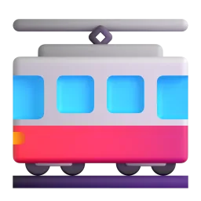
old tramsbridgesthe oceancafés
b Go to the Vocabulary Bank. Tap each card, press 🔊 and repeat. Then match the meanings.Нажимайте на карточки, слушайте и повторяйте. Потом выберите слово к значению.
Vocabulary Bank2BCity breaks
full of life, people and fun →
a famous place tourists visit →
a part of a city →
a place to stay on holiday →
with too many people →
c Complete the sentences.Вставьте пропущенное слово.
Let's go — I want to see the castle!
The from the top of the hill was amazing.
Trams and buses — the public is great here.
This part of the city is very — it's 800 years old.
We only have three days — it's a city .
I always try the food.
«Weekend Away»
10 min
a Jack and Mia have a travel podcast. This week they compare two cities. Which city do they choose in the end?Джек и Мия сравнивают два города. Какой выбирают в итоге?
Podcast «Weekend Away»: Lisbon or Prague?Listen first · Use 🐢 if it's fast · Текст — в конце
Mia:Welcome to «Weekend Away»! Jack, Lisbon or Prague for our next city break?
Jack:Prague! It's more historic than Lisbon, and the old town is beautiful.
Mia:But Lisbon is warmer. In November it's about eighteen degrees there, and only eight in Prague.
Jack:OK, that's true. But Prague is cheaper. A hotel costs about seventy euros a night. In Lisbon it's ninety.
Mia:Food is cheaper in Lisbon, though. And it's more lively at night.
Jack:Prague is lively too! And the public transport is better — the trams are faster.
Mia:Lisbon has trams too, and they're the most famous trams in Europe! And you can see the ocean.
Jack:Hmm. Prague isn't as crowded as Lisbon in winter.
Mia:Let's ask our listeners! … OK, we have the results: 62 percent say Lisbon.
Jack:Fine! Lisbon it is. But next time — Prague!
Which city do they choose?
b Listen again. Complete the facts — a word or a number.Послушайте ещё раз. Допишите слово или число.
In November it is about degrees in Lisbon.
A hotel in Prague costs about euros a night.
A hotel in Lisbon costs about euros.
In Lisbon you can see the .
percent of listeners say Lisbon.
c Look at the adjectives. Do they compare two things or say the most of all? This is the grammar of the next stage.Сравнение двух вещей или «самый»? Следующая грамматика.
It's more historic than Lisbon. →
Lisbon is warmer. →
the most famous trams in Europe →
The trams are faster. →
cheaper than · as … as
12 min
a Read the Grammar Bank. The examples are from today's story.Прочитайте Grammar Bank: все примеры — из сегодняшней истории.
Grammar Bank2Bcomparatives: -er / more … than / as … as
adjective
comparative
example
short: cheap, warm, old
+ -er
Prague is cheaper than Lisbon.
-y: busy, lively, easy
y → -ier
Lisbon is livelier / busier.
big, hot
double + -er
big → bigger, hot → hotter
long: expensive, beautiful, historic
more + adj
Prague is more historic than Lisbon.
irregular
good → better, bad → worse, far → further
The trams are better.
as … as = the same: Lisbon is as beautiful as Prague. not as … as = less: Prague isn't as crowded as Lisbon.
Подсказка. «чем» = than (не that!). Не говорите more cheaper — либо -er, либо more.
bStep 1. Choose the correct form.Шаг 1. Выберите правильную форму.
Lisbon is than Prague in November.
Prague is historic than Lisbon.
The trams in Prague are than in Lisbon.
This hotel is than the other one.
Prague isn't as crowded Lisbon.
My flat is than yours.
cStep 2. Write the correct form.Шаг 2. Напишите правильную форму.
Moscow is (big) than Kazan.
Taxis are (expensive) than trams.
The weather today is (bad) than yesterday.
Kazan is (lively) than my hometown.
dStep 3. Build the sentences.Шаг 3. Соберите предложения.
eStep 4. About you.Шаг 4. О себе.
Mia's review
8 min
a Mia went to Lisbon and wrote a review. Read. What was the best thing about the trip?Мия съездила в Лиссабон и написала отзыв. Что было самым лучшим?
Lisbon: the best weekend of the yeara travel review · about 150 words
We've just come back from Lisbon, and I can say: it's the most beautiful city I've ever visited! Our flat was in Alfama, the oldest neighbourhood in the city, with tiny streets and amazing views.
The best moment was the ride on tram 28 — the most famous tram in Lisbon. It was also the most crowded tram I've ever seen, so go early in the morning!
The worst thing? The hills. Lisbon is the hilliest city in Europe, I think, and my legs still hurt.
Food was cheaper than at home, and the pastéis de nata were the best cakes of the trip. Is Lisbon better than Prague? Jack doesn't agree, of course. We're going to Prague in March!
What was the best moment of the trip?
b True or false?Верно или нет?
Mia thinks Lisbon is the most beautiful city she has ever visited. →
Their flat was in the newest neighbourhood. →
Tram 28 was empty. →
Food was more expensive than at home. →
They are going to Prague in March. →
c Is it a comparative (two things) or a superlative (the most of all)? This is the next grammar.Сравнение двух или «самый»? Следующая грамматика.
the oldest neighbourhood in the city →
Food was cheaper than at home. →
the most crowded tram I've ever seen →
Is Lisbon better than Prague? →
the best · the most
12 min
a Read the Grammar Bank. The examples are from today's story.Прочитайте Grammar Bank: все примеры — из сегодняшней истории.
Grammar Bank2Bsuperlatives: the -est / the most … / the best … I've ever …
adjective
superlative
example
old, cheap
the + -est
the oldest neighbourhood
hilly, busy
y → -iest
the hilliest city
beautiful, famous
the most + adj
the most famous tram
good / bad
the best / the worst
the best moment, the worst thing
Superlative + present perfect + ever: the most beautiful city I've ever visited.
in + a place: the oldest in the city (✗ of the city); of + a group/time: the best of the trip.
Подсказка. Перед превосходной степенью всегда the. «Самый красивый город, который я когда-либо видел» = the most beautiful city I've ever seen.
bStep 1. Choose the correct form.Шаг 1. Выберите правильную форму.
It's city I've ever visited.
Alfama is the neighbourhood in Lisbon.
That was the meal of the trip — terrible!
It's the best hotel I've stayed in.
Lisbon is the hilliest city Europe.
cStep 2. Write the correct form.Шаг 2. Напишите правильную форму.
Moscow is (big) city in Russia.
This is (interesting) museum I've ever seen.
Yesterday was (good) day of my holiday.
dStep 3. Build the sentences.Шаг 3. Соберите предложения.
eStep 4. About you.Шаг 4. О себе.
Sasha's message
6 min
a Help Sasha write to a friend about two cities. Use everything from today.Сообщение другу о двух городах. Всё вместе.
A message to a friend
Kazan or St Petersburg for the weekend? St Petersburg is (historic), but Kazan is (cheap).
Kazan isn't (crowded) as Moscow.
The Kremlin in Kazan is one of (beautiful) sights in Russia.
And the food! It's (good) chak-chak I've ever tried.
is easy — the metro is (fast) than a taxi.
Let's go on Saturday and see all the sights!
than /ðən/ · as /əz/
5 min
a In comparisons than and as are weak: /ðən/, /əz/. The adjectives are strong. Listen and repeat.than и as — слабые. Громко — прилагательные.
PRAGUE is CHEAPer /ðən/ LISbon.
It ISn't /əz/ CROWded /əz/ LISbon.
It's the most BEAUtiful CIty I've EVer SEEN.
the BESTMOment of the TRIP
b Press 🔊. Comparative or superlative?Нажмите 🔊. Сравнительная или превосходная?
→
→
→
→
→
→
which city?
8 min
a Answer your teacher. Compare and use superlatives.Сравнивайте и используйте «самый».
Press the button · Нажмите кнопку
What's the most beautiful city you've ever visited?
Which is better for a weekend: the sea or a city? Why?
Is your city more lively in summer or in winter?
What's the best food you've ever tried on holiday?
Moscow or St Petersburg — which is more interesting for tourists?
What's the worst trip you've ever had?
Is public transport in your city better than taxis?
Where would you go for a city break next month?
… is cheaper / more … than…… isn't as … as…the most … I've ever…the best / the worst…
bSell your city! You have 1 minute to convince your teacher to visit your city (or your favourite city). Use 3 comparatives and 2 superlatives. Then your teacher sells a city — which one wins?Минута, чтобы «продать» свой город преподавателю: 3 сравнения и 2 «самый». Потом наоборот.
a city review
6 min
a Write a short review of a city you've visited.Короткий отзыв о городе, где вы были.
Example: Last summer I went to Kazan. It's one of the most interesting cities I've ever visited. It's smaller than Moscow, but it isn't as crowded, and the food is cheaper. The best sight is the Kremlin, and the view from the river is amazing.
b Press «Отправить преподавателю» — your teacher will see your answers.Нажмите «Отправить преподавателю».
Готово? Отправьте ответы преподавателю
Ответы сразу придут преподавателю на платформу — пересылать в Telegram ничего не нужно. Нет интернета? Ответы сохранятся и отправятся сами. Открыть их может только преподаватель.
Can you…?
3 min
a Listen to your teacher. Write the corrected sentences.Послушайте преподавателя и запишите исправленные фразы.
Great!
Fix it
b Can you do these things?Вы можете это сделать?
I can describe cities with 12 new wordsописывать города
I can compare two things: -er / more / as … asсравнивать
I can use superlatives: the -est / the most / the best I've ever…«самый»
I can understand a podcast and a reviewпонять подкаст и отзыв
Was the grammar clear today? What was difficult? · Понятна ли была грамматика?
city breaks
10 min at home
Homework, part 1 of 2: words. Mostly tapping — easy on your phone. Part 2 (grammar) is on the next page — press «Далее».Часть 1: слова урока. Ответы сохраняются сами.
a Read and choose the word or phrase.Прочитайте и выберите слово или фразу.
The Eiffel Tower is a famous place for tourists. →
Lots of music, people and cafés open at night. →
We stayed in a small flat near the centre. →
Buses, trams and the metro. →
b How do you say it in English? Write.Как это по-английски? Напишите.
дешёвый →
исторический →
вид (с высоты) →
район →
comparatives · superlatives
15 min at home
Homework, part 2 of 2: grammar. Read the reminder, then tap or type. At the end press «Отправить преподавателю».Часть 2: грамматика урока. В конце — «Отправить преподавателю».
Remember · Запомнитеcheaper than · the cheapest
Prague+is+cheaper than+Lisbon.
It's+the most beautiful+city I've ever seen.
short → -er / the -est · long → more / the most · good → better / the best · bad → worse / the worst
a Choose.Выберите.
Tea is than coffee here.
It's film I've ever seen.
My town isn't as big Moscow.
This is the expensive hotel in the city.
Is London than Paris?
b Write the correct form.Напишите правильную форму.
Summer is (hot) than spring.
It was (bad) day of my life!
Prague is (historic) than Lisbon.
c Build the sentences.Соберите предложения.
d About you.О себе.
Готово? Отправьте ответы преподавателю
Ответы сразу придут преподавателю на платформу — пересылать в Telegram ничего не нужно. Нет интернета? Ответы сохранятся и отправятся сами. Открыть их может только преподаватель.
extra practice
10 min
What to do
Build the sentences: tap the words in the right order. Made a mistake? Press «↺ Заново».
Find the mistake in each sentence and write the correct sentence.
Press «Проверить» after each exercise.
1. Build the sentence
2. Find the mistake
Prague is more cheaper than Lisbon.
Lisbon is warmer that Prague.
It's the most best city.
Moscow is the biggest city of Russia.
Play and review
10 min
Game time!Слова урока в играх: пары, скорость, буквы и даже детектив. Выбирайте любую.
What to do · Что делать
Play with the words from this lesson — great for review before the next lesson!Играйте со словами урока — это лучший способ повторить их.
Your best results are saved and your teacher can see them.Лучшие результаты сохраняются, преподаватель их видит.
Match upНайди пару
Tap a word, then its meaning. As fast as you can! · Нажмите слово, потом его значение.
60 seconds60 секунд
Choose the right word for the meaning. How many in one minute? · Сколько слов успеете за минуту?
Listen and spellУслышь и напиши
Listen to the word and write it. Press 🔊 to hear it again. · Послушайте слово и напишите его.
MemoryМемори
Find the pairs: a word and its meaning. Remember where the cards are! · Откройте по две карточки и найдите пары «слово — значение».
Word builderСобери слово
The letters are mixed up. Tap them in the right order. · Буквы перепутались — нажимайте их по порядку и соберите слово.
BalloonsВоздушные шарики
Guess the word letter by letter. Every wrong letter pops a balloon! · Угадайте слово по буквам. Каждая неверная буква лопает шарик.
DetectiveДетектив
Solve the case! Each clue is a task with this lesson's words and grammar. Every right answer clears one suspect. · Раскройте дело: каждая улика — задание по словам и грамматике урока.
IRIS SCHOOL · Саша · урок 2
What Would You Do?
Ben found £2,000 in an old sofa. Should he keep it? A radio phone-in, phrasal verbs about honesty and lots of dilemmas. Grammar: If I found…, I'd… · If I were you, I'd… — and first or second conditional?
“Honesty is the best policy.”English proverb
B1DilemmasSecond conditionalFirst or second?60 min
honesty: phrasal verbs and phrases
10 min
In this lesson you will…
learn 10 phrasal verbs and phrases about honesty
understand a radio phone-in: Ben found £2,000 in an old sofa
talk about imagined situations and give advice: If I found…, I'd… · If I were you, I'd…
choose between If I find…, I'll… (real) and If I found…, I'd… (imagined)
solve dilemmas — and say what YOU would do
a Last time: plans and problems — you sorted them out with If…, I'll…. Today: dilemmas — difficult choices. Look at the pictures. Which of these things have you done?В прошлый раз — планы и проблемы. Сегодня — дилеммы. Что из этого вы делали?
find a walletmake up an excusekeep a secrettell a white lieown upfeel guilty
b Go to the Vocabulary Bank. Tap each card, press 🔊 and repeat. Then do the exercises.Нажимайте на карточки, слушайте и повторяйте.
Vocabulary Bank2AHonesty
to say that you did something wrong →
to give something you found to the police →
to do something wrong and not be punished →
to invent a story that isn't true →
a small lie that you tell to be kind →
to learn some information →
c Complete the phrases. Tap the missing word.Вставьте пропущенное слово.
Nobody saw him take the money. He got away it.
I borrowed your umbrella. I promise I will give it tomorrow.
Tom owned to breaking the window.
Don't tell anyone, OK? Can you keep a ?
I felt because I forgot my best friend's birthday.
It was difficult, but she did the right .
What would you do?
10 min
a Listen to the radio phone-in «What Would You Do?». Ben calls the show with a dilemma. You will hear the new phrases — and some phrasal verbs from our last lesson! What is Ben's problem?Послушайте радиопередачу. Бен звонит со своей дилеммой. В чём его проблема?
Radio phone-in: «What Would You Do?»Listen first · Use 🐢 if it's fast · Text at the end
Kate (host):Good evening and welcome to «What Would You Do?», the show where you call us with a problem and our listeners help you sort it out. Our first caller is Ben. Hi, Ben!
Ben:Hi, Kate. Well, last week I bought an old sofa online. It was really cheap — only forty pounds. When I got it home, I found an envelope inside it. There was two thousand pounds in it!
Kate (host):Wow! And what did you do?
Ben:Nothing yet. I can't figure out what to do. Part of me says, «Keep it — nobody will find out.» But I feel guilty.
Kate (host):Well, if I were you, I'd give it back. It isn't your money.
Ben:I know, but the seller lives in a huge house. If I gave the money back, she probably wouldn't even notice!
Kate (host):Let's hear from a listener. Lisa, you're on the air.
Lisa:Hi, Ben. Something similar happened to me once. I found a wallet on a train and I handed it in at the station. A week later the owner found me and gave me a reward! And honestly, if you kept the money, you would feel terrible every time you sat on that sofa.
Ben:Ha! That's true. But what if she asked me why I didn't call her earlier? I'd have to make up an excuse.
Lisa:You don't need an excuse. Just tell her the truth. If I were in your shoes, I'd call her today.
Kate (host):So, Ben, what are you going to do?
Ben:OK, you're right. I'll do the right thing. If I find her phone number, I'll call her tomorrow. And if she doesn't answer, I'll go to her house.
Kate (host):Great! Call us next week and tell us what happened.
What is Ben's problem?
b Listen again. Complete the facts — one word or a number.Послушайте ещё раз. Допишите одно слово или число.
The sofa cost only pounds.
The envelope had pounds in it.
Lisa found a wallet on a .
The owner gave Lisa a .
If the seller doesn't answer the phone, Ben will go to her .
c Kate says: «If I were you, I'd give it back.» Lisa says: «If you kept the money, you would feel terrible.» Are these things real? Answer the questions — this is the grammar of the next stage.Это реальность или воображаемая ситуация? Это грамматика следующего этапа.
Is Kate really Ben? →
Has Ben decided to keep the money? →
Has Ben given the money back yet? →
Which form comes after if in Kate's and Lisa's sentences: were, kept? →
second conditional
13 min
a Read the Grammar Bank. All the examples are like Kate's and Lisa's advice. Look at the two colours: if + past, then would + verb.Прочитайте Grammar Bank. Две части: if + прошедшая форма, would + глагол.
IF + past formIf I found money,found · were · had · kept · could
,
would ('d) / wouldn't + verbI would give it back.I'd call · she'd feel · we wouldn't keep
Past form, but not past time! It is about now or the future — but it is imagined, not real.
❌ If I would find money, I would give it back. ❌ If I found money, I'll give it back. ❌ If I am you, I'll call her.
✅ If I found money, I would give it back. (no would after if!) ✅ If I found money, I'd give it back. ✅ If I were you, I'd call her. (advice)
Advice: If I were you, I'd… = «на твоём месте я бы…». If I was you is common in conversation, but were is better.
The if-part can come second — then no comma: I'd give it back if I found it.
Questions: What would you do if you found £2,000?
Подсказка. По-русски «бы» стоит в обеих частях: «Если бы я нашёл деньги, я бы их вернул». В английском would («бы») — только в одной части, а после if — прошедшая форма: If I found…, I would…
If I two thousand pounds, I would give it back.
If I were you, I her today.
If you kept the money, you terrible.
If I you, I would own up.
She wouldn't make up an excuse if she the truth.
What you do if you found a wallet?
b Write the verbs in the second conditional.Напишите глаголы во втором условном.
If I (find) a phone in the street, I would hand it in.
If Ben kept the money, he (feel) guilty.
If I (not / have) a car, I'd go to work by bike.
I (not / tell) a lie if I were you.
If my boss (ask) me to lie, I would say no.
What (you / do) if you won a lot of money?
c Give advice. What would you say? Choose: If I were you, I'd…Дайте совет: «На твоём месте я бы…»
«I broke my sister's phone, but she doesn't know.» →
«I found a wallet in a taxi.» →
«My friend made a cake. It's terrible! She's asking if I like it.» →
d Build the sentences.Соберите предложения.
Ben's email
7 min
a A week later Ben writes to the show. Did he do the right thing? What happened?Через неделю Бен пишет на радио. Что произошло?
From: Ben · To: «What Would You Do?»an email · about 170 words
Hi Kate, it's Ben — the man with the sofa! I want to tell you what happened. I found out the seller's name, Mrs Grant, from the website, and I called her. At first she didn't believe me! Then she started crying. The money was her husband's. He died two years ago, and she didn't know that he had hidden money in the sofa.
She was so happy that she gave me two hundred pounds as a thank-you present. I'm really glad I did the right thing. To be honest, if I found money again, I'd give it back straight away.
And now Mrs Grant has invited me for tea next Sunday. If the weather is nice, we'll sit in her garden and she'll show me her old photos. P.S. Thank you, Lisa! If I ever meet you, I'll buy you a coffee.
b True, False or Doesn't say?Верно, неверно или в тексте не сказано?
Ben found out the seller's name on the website. →
Mrs Grant believed Ben immediately. →
Mrs Grant's husband hid the money in the sofa. →
Mrs Grant gave Ben a present. →
Ben is going to sell the sofa. →
Ben and Mrs Grant are meeting next Sunday. →
c Look at the sentences with if in the email. Is it a real plan (likely) or an imagined situation (not real / unlikely)? Look at the verbs. This is the next grammar.Реальный план или воображаемая ситуация? Посмотрите на глаголы — это следующая грамматика.
If I found money again, I'd give it back straight away. →
If the weather is nice, we'll sit in her garden. →
If I ever meet you, I'll buy you a coffee. →
If I were you, I'd give it back. (Kate) →
If I find her phone number, I'll call her tomorrow. (Ben) →
first or second conditional?
10 min
a Read the Grammar Bank. The examples are from Ben's email and the radio show. One question helps every time: is it a real possibility?Прочитайте Grammar Bank. Помогает один вопрос: это реально может случиться?
Grammar Bank2Afirst or second conditional?
1st · real, possibleIf I find it, I'll give it back.If + present, will ('ll) + verb
≠
2nd · imagined, unlikelyIf I found it, I'd give it back.If + past, would ('d) + verb
Ask yourself: Is it a real possibility? Yes → first conditional. No, I'm imagining → second conditional.
English
Русский
1st
If it rains tomorrow, we'll stay at home.
Если пойдёт дождь, мы останемся дома.
2nd
If I had a million, I'd buy an island.
Если бы у меня был миллион, я бы купил остров.
❌ If it will rain tomorrow, we'll stay at home. ❌ If I had a million, I will buy an island. ❌ If I see Tom tomorrow, I'd tell him. (you will see him)
✅ If it rains tomorrow, we'll stay at home. ✅ If I had a million, I'd buy an island. ✅ If I see Tom tomorrow, I'll tell him.
Подсказка. Слышите в русском «бы» — скорее всего, второй тип: If I found…, I would…. Нет «бы» и это реально может случиться — первый тип: If I find…, I'll…. И в обоих типах после if нет will и would!
You're meeting Tom tomorrow. →
You haven't got a million — you're dreaming. →
The weather forecast says it may rain on Saturday. →
You are imagining you could fly. →
b Tap the correct verb. Real or imagined?Выберите глагол. Реально или воображаемо?
If Mrs Grant invites me again, I some flowers.
If I the President, I'd make Fridays a holiday.
I'll call you as soon as I home.
If I found a thousand pounds, I it in at the police station.
If you the last train, you'll have to take a taxi.
If people the truth more often, the world would be a better place.
c Write the verbs: first or second conditional?Напишите глаголы: первый или второй тип?
If I (finish) work early today, I'll call you.
If I had more free time, I (learn) to play the guitar.
If Ben (not / give) the money back, he would feel guilty.
If you don't hurry, you (be) late.
If I (live) by the sea, I would swim every day.
We (not / go) to the beach if it rains tomorrow.
d Build the sentences.Соберите предложения.
Kate's reply
6 min
a Kate replies to Ben's email. Use everything from today: the phrases and the first and second conditionals.Всё вместе: слова урока + первый и второй тип.
Kate → Ben
Hi Ben! What a story! I'm so glad you did the right .
Lots of people keep money they find and get away it.
Honestly, if I (be) in your shoes, I don't know what I'd do!
If you (keep) the money, you would always feel .
Lisa says hello. If you (come) to the studio next week, she'll meet you there.
And if Mrs Grant (show) you her photos, ask her about her husband.
One more question: if you found another envelope in your sofa, what (you / do)? 😉
I'll tell our listeners as soon as I (find) out more.
'd or 'll?
5 min
a In fast speech would is 'd /d/ and will is 'll /l/. They are very short — but they change the meaning! Listen and repeat.'d (would) и 'll (will) очень короткие, но меняют смысл.
If I WERE you, I'd GIVE it BACK.
If I FIND her NUMber, I'll CALL her.
WHAT would you DO?
I WOULDn't KEEP it.
b Press 🔊. Do you hear 'd or 'll? Choose.Нажмите 🔊. Что вы слышите: 'd или 'll?
→
→
→
→
→
→
dilemmas
7 min
a Now you are the caller — and the expert! Press the button. Answer with I'd… and give a reason. Then your teacher asks «Are you sure?» — try to change your teacher's mind.Теперь вы — эксперт. Отвечайте с I'd… и объясняйте почему.
Press the button
What would you do if you found £2,000 in a sofa you bought?
What would you do if a shop assistant gave you too much change?
What would you say if a friend asked you «Do you like my new haircut?» and you didn't?
Would you own up if you scratched a car in a car park and nobody saw you?
If you could keep one secret for ever, what would it be? (You don't have to tell me!)
What will you do this weekend if the weather is bad?
If I were in that situation, I'd…I'd probably…, because…I wouldn't…, even if…Honestly, I'd feel guilty if I…To be honest, I'm not sure what I'd do.
my advice to the show
5 min
a Write to «What Would You Do?». One sentence in each line — use the first and the second conditional.Напишите на радио: по одному предложению в строке.
b Press «Отправить преподавателю» — your teacher will see your answers.Нажмите «Отправить преподавателю».
Готово? Отправьте ответы преподавателю
Ответы сразу придут преподавателю на платформу — пересылать в Telegram ничего не нужно. Нет интернета? Ответы сохранятся и отправятся сами. Открыть их может только преподаватель.
Can you…?
3 min
a Your teacher gives feedback. Write the corrections.Запишите исправления.
Great!
Fix it
b Can you do these things?
I can talk about honesty with the new phrasal verbs and phrases
I can talk about imagined situations: If I found…, I'd…
I can give advice: If I were you, I'd…
I can choose between If I find…, I'll… and If I found…, I'd…
What was the most useful thing today?
honesty
15 min at home
Homework, part 1 of 2: words. Mostly tapping — easy on your phone. Part 2 (grammar) is on the next page — press «Далее».Часть 1: слова урока. Ответы сохраняются сами.
a Look at the picture. Which phrase is it?Какая фраза подходит к картинке?
«It was me. I broke the printer. I'm sorry.» →
Anna found a phone on the bus and took it to the lost property office. →
«Sorry I'm late — a dog stole my car keys!» (It isn't true.) →
He parked in the wrong place all day and nobody gave him a ticket. →
Mark knows about his sister's surprise party, but he doesn't tell anyone. →
Ben looked on the website and learned the seller's name. →
b How do you say it in English? Write the phrase.Как это по-английски? Напишите фразу.
вернуть (что-то) →
чувствовать себя виноватым →
поступить правильно →
невинная ложь, ложь во благо →
хранить секрет →
second conditional · first or second?
15 min at home
Homework, part 2 of 2: grammar. Look at the colour formulas, then tap or type. At the end press «Отправить преподавателю».Часть 2: грамматика урока. В конце — «Отправить преподавателю».
Remember · Запомните2nd conditional — imagined
If I+found+money,+I'd+give+it back.
If I+were+you,+I'd+own up.
Если бы… → If + past, would + verb. После if — никогда не would.
Remember · Запомните1st conditional — real
If it+rains,+we'll+stay+at home.
Реально может случиться → If + present, will + verb.
a Second conditional. Tap the correct form.Второй тип. Выберите форму.
If I more money, I would travel more.
If I were you, I that email.
If she knew the answer, she us.
What would you do if you a famous person in the street?
If I you, I would own up.
b Write the verbs in the second conditional.Напишите глаголы.
If I (win) the lottery, I would buy a house by the sea.
If he told the truth, he (not / feel) so guilty.
If we (live) in London, we would see the sights every weekend.
Where (you / go) if you could go anywhere?
c First or second? Tap.Первый или второй тип?
If I see Anna tomorrow, I her the news.
If I a dog, I'd walk it every morning. (I haven't got a dog.)
If it sunny on Sunday, we'll have a barbecue.
If I could speak five languages, I as a translator.
Call me as soon as you home.
d Build the sentences.Соберите предложения.
e About you. Four true sentences.О себе: четыре предложения.
Готово? Отправьте ответы преподавателю
Ответы сразу придут преподавателю на платформу — пересылать в Telegram ничего не нужно. Нет интернета? Ответы сохранятся и отправятся сами. Открыть их может только преподаватель.
extra practice
10 min
What to do
Build the sentences: tap the words in the right order. Made a mistake? Press «↺ Заново».
Find the mistake in each sentence and write the correct sentence.
Press «Проверить» after each exercise.
1. Build the sentence
2. Find the mistake
If I would find money, I would give it back.
If I was you, I'll call her.
If it will rain tomorrow, we'll stay at home.
If I had more money, I will buy a car.
Play and review
10 min
Game time!Слова урока в играх: пары, скорость, буквы и даже детектив. Выбирайте любую.
What to do · Что делать
Play with the words from this lesson — great for review before the next lesson!Играйте со словами урока — это лучший способ повторить их.
Your best results are saved and your teacher can see them.Лучшие результаты сохраняются, преподаватель их видит.
Match upНайди пару
Tap a word, then its meaning. As fast as you can! · Нажмите слово, потом его значение.
60 seconds60 секунд
Choose the right word for the meaning. How many in one minute? · Сколько слов успеете за минуту?
Listen and spellУслышь и напиши
Listen to the word and write it. Press 🔊 to hear it again. · Послушайте слово и напишите его.
MemoryМемори
Find the pairs: a word and its meaning. Remember where the cards are! · Откройте по две карточки и найдите пары «слово — значение».
Word builderСобери слово
The letters are mixed up. Tap them in the right order. · Буквы перепутались — нажимайте их по порядку и соберите слово.
BalloonsВоздушные шарики
Guess the word letter by letter. Every wrong letter pops a balloon! · Угадайте слово по буквам. Каждая неверная буква лопает шарик.
DetectiveДетектив
Solve the case! Each clue is a task with this lesson's words and grammar. Every right answer clears one suspect. · Раскройте дело: каждая улика — задание по словам и грамматике урока.
IRIS SCHOOL · Саша
Do's and Don'ts Abroad
Shoes off at the door, no tips in the café, quiet on the train… Lena moved to Tokyo and learns the rules. Culture words, a video call and a blog — and how to talk about rules: You have to… You don't have to… You mustn't… You should…
“When in Rome, do as the Romans do.”a proverb
B1Culturemust · have to · should60–70 min
customs and manners
10 min
In this lesson you will…
learn 12 words about customs and manners12 слов: обычаи и манеры
understand a video call and a blog about life in Japanпонять звонок и блог
talk about rules: have to, must, don't have to, mustn'tправила и обязанности
give advice: should / shouldn'tсоветы
tell a foreigner the rules of your countryрассказать иностранцу о правилах своей страны
a What should a foreigner know before visiting Russia? And Japan? Look at the pictures.Что нужно знать иностранцу перед поездкой в Россию? А в Японию?
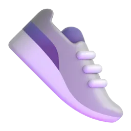
shoes off
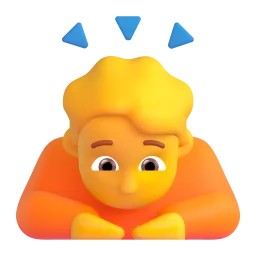
bowingno tipsquiet trains
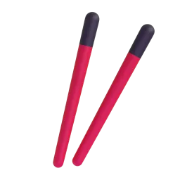
chopsticks
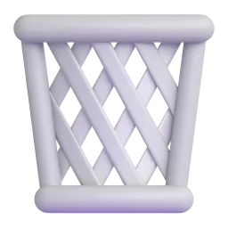
recycling
b Go to the Vocabulary Bank. Tap each card, press 🔊 and repeat. Then match the meanings.Нажимайте на карточки, слушайте и повторяйте. Потом выберите слово к значению.
Vocabulary Bank2BCustoms and manners
extra money for a waiter →
money you pay for breaking a rule →
a traditional way of doing something →
feeling silly in front of other people →
with bad manners →
c Complete the sentences.Вставьте пропущенное слово.
Please off your shoes at the door.
Smoking isn't in the station.
In Japan you have to your rubbish: plastic, paper, glass.
It's to say «thank you» in the local language.
It took me a month to get to the trains.
People when they say thank you.
a call from Tokyo
10 min
a Lena moved to Tokyo a month ago. Her brother calls her. Does she like the rules there?Лена месяц живёт в Токио. Нравятся ли ей местные правила?
A video call: Lena in TokyoListen first · Use 🐢 if it's fast · Текст — в конце
Artem, her brother:Lena! How's Tokyo? Is it true that you have to take off your shoes everywhere?
Lena:Not everywhere, but at home, in some restaurants, even at the doctor's! And you mustn't wear the toilet slippers in the kitchen — I did that on my first day. So embarrassing!
Artem, her brother:Ha-ha! What else?
Lena:On the train you shouldn't talk on the phone. Everybody is so quiet. And you don't have to leave a tip — in fact, some waiters get offended.
Artem, her brother:No tips? That's great! What about rubbish?
Lena:That's hard. I have to recycle everything in six different bags, and there's a different day for each one. If you get it wrong, your neighbours tell you!
Artem, her brother:And at work?
Lena:I had to learn how to bow properly — there are three kinds of bow! And you should never be late. Never.
Artem, her brother:So, do you like it?
Lena:I love it. Everything is so clean and safe. I'm getting used to it. You should come in April — the cherry blossom is amazing.
Does Lena like life in Tokyo?
b Listen again. Complete the facts — a word or a number.Послушайте ещё раз. Допишите слово или число.
Lena wore the toilet slippers in the on her first day.
On the train you shouldn't talk on the .
She recycles in different bags.
There are kinds of bow.
Artem should come in .
c Is it necessary, not necessary, forbidden — or advice? This is the grammar of the next stage.Обязательно, необязательно, запрещено или совет? Следующая грамматика.
You have to take off your shoes. →
You mustn't wear the toilet slippers in the kitchen. →
You don't have to leave a tip. →
On the train you shouldn't talk on the phone. →
I have to recycle everything. →
must · have to · mustn't · don't have to
12 min
a Read the Grammar Bank. The examples are from today's story.Прочитайте Grammar Bank: все примеры — из сегодняшней истории.
Grammar Bank2Bmust / have to · mustn't · don't have to
meaning
form
example
necessary
have to (a rule, a law) · must (I think it's important; written rules)
You have to take off your shoes. I must call Mum.
not necessary
don't / doesn't have to
You don't have to leave a tip.
forbidden
mustn't / can't
You mustn't wear those slippers in the kitchen.
don't have to ≠ mustn't! You don't have to tip (you can, but it isn't necessary). You mustn't smoke (it's forbidden).
Questions: Do I have to…? (Must I…? is rare.)
Подсказка. don't have to = «не обязательно», mustn't = «нельзя». Перепутать — значит сказать иностранцу совсем не то!
bStep 1. Choose the correct form.Шаг 1. Выберите правильную форму.
In Japan you take off your shoes at home. It's the custom.
You leave a tip — the service is included.
You smoke in the station. You'll get a fine!
I have to bring a gift?
She get up early — she works from home.
cStep 2. Write the correct form.Шаг 2. Напишите правильную форму.
In Russia you (take off) your shoes when you visit friends. (it's the custom)
You (pay) for the museum on Sundays — it's free.
You (touch) the paintings! (forbidden)
he (wear) a suit at work?
dStep 3. Build the sentences.Шаг 3. Соберите предложения.
eStep 4. About you.Шаг 4. О себе.
Lena's blog
8 min
a Read Lena's blog. Which rule surprised her most?Блог Лены. Какое правило удивило её больше всего?
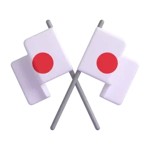
Lena in Tokyo · 5 things I had to learna blog post · about 150 words
1. Trains. In my first week I had to stand for an hour because I didn't know about the «women only» carriages. Now I know where I should wait.
2. Rubbish. I had to buy six different bags. Next year the rules will change again, so I'll have to learn them all over again!
3. Phones. You shouldn't eat or talk on the phone while you're walking in the street. This surprised me the most — in Moscow everybody does it!
4. Money. I didn't have to tip anybody this month. My wallet is very happy.
5. Cards. When someone gives you a business card, you should take it with two hands and read it carefully. You mustn't put it in your back pocket!
Which rule surprised Lena most?
b True or false?Верно или нет?
In her first week Lena had to stand on the train for an hour. →
The recycling rules will stay the same next year. →
In Moscow people often talk on the phone in the street. →
She had to leave tips this month. →
You should take a business card with one hand. →
c Look at the forms of have to. Past, present or future? This is the next grammar.Формы have to: прошлое, настоящее или будущее? Следующая грамматика.
I had to stand for an hour. →
I'll have to learn them all over again! →
I didn't have to tip anybody. →
Now I know where I should wait. →
had to · will have to · should
12 min
a Read the Grammar Bank. The examples are from today's story.Прочитайте Grammar Bank: все примеры — из сегодняшней истории.
Grammar Bank2Bhave to in the past and future · should for advice
time
form
example
past
had to / didn't have to (must has no past!)
I had to buy six bags. I didn't have to tip.
future
will have to / won't have to
I'll have to learn them again.
advice
should / shouldn't + verb
You should take it with two hands. You shouldn't eat while walking.
Подсказка. «Пришлось» = had to (✗ musted). «Придётся» = will have to. should — мягче, чем must: это совет, а не правило.
bStep 1. Choose the correct form.Шаг 1. Выберите правильную форму.
Yesterday I wait for the bus for 40 minutes.
Next month you get a new visa.
You look tired. You go to bed earlier.
We pay — it was free!
You eat so much sugar. It's bad for you.
cStep 2. Write the correct form.Шаг 2. Напишите правильную форму.
When I was at school, I (wear) a uniform.
If you lose your passport, you (go) to the embassy.
You (try) the local food — it's great! (advice)
dStep 3. Build the sentences.Шаг 3. Соберите предложения.
eStep 4. About you.Шаг 4. О себе.
advice for a tourist
6 min
a Lena gives advice to a friend. Use everything from today.Лена даёт советы подруге. Всё вместе.
Lena → a friend who is visiting Tokyo
You (bring) a big gift — a small one is perfect. (not necessary)
You (take off) your shoes at my flat — it's the here.
You (talk) on the phone on the train. People think it's . (advice)
Last week I (pay) a for crossing on a red light!
And you (leave) tips — the waiters don't expect them. (not necessary)
Don't worry — you'll get to everything in a few days!
have to /ˈhæftə/
5 min
ahave to sounds like /ˈhæftə/ — with an f! has to = /ˈhæstə/, had to = /ˈhætə/. Listen and repeat.have to звучит как /ˈhæftə/ — с «ф».
You /ˈhæftə/ take OFF your SHOES.
She /ˈhæstə/ reCYcle EVerything.
I /ˈhætə/ STAND for an HOUR.
You DON'T /ˈhæftə/ TIP.
b Press 🔊. have to or had to?Нажмите 🔊. have to или had to?
→
→
→
→
→
→
rules of my country
8 min
a Answer your teacher. Use must / have to / don't have to / mustn't / should.Отвечайте с must / have to / should.
Press the button · Нажмите кнопку
What should a foreigner know before visiting Russia?
What do you have to do at work every day?
What don't you have to do at weekends?
What did you have to do when you were at school that you hated?
What will you have to do next week?
Is it rude to be late in your culture?
Have you ever been embarrassed abroad? What happened?
What rule in your city would you change?
You have to… / You must…You don't have to…You mustn't… / You can't…You should… / You shouldn't…I had to…
bSurvival guide. Your teacher is a foreigner coming to your city next week. Give them 6 rules: 2 «have to», 2 «don't have to», 1 «mustn't», 1 «should». They ask questions!Преподаватель — иностранец, который едет в ваш город. Дайте 6 правил.
a guide for visitors
6 min
a Write a short guide «5 things a visitor should know about my city».Мини-гид «5 вещей, которые нужно знать о моём городе».
Example: 1. You don't have to take a taxi — the metro is fast and cheap. 2. You should try pelmeni. 3. In winter you have to wear a warm hat — it's minus twenty! 4. You mustn't drink tap water. 5. When you visit friends, you should bring something for tea.
b Press «Отправить преподавателю» — your teacher will see your answers.Нажмите «Отправить преподавателю».
Готово? Отправьте ответы преподавателю
Ответы сразу придут преподавателю на платформу — пересылать в Telegram ничего не нужно. Нет интернета? Ответы сохранятся и отправятся сами. Открыть их может только преподаватель.
Can you…?
3 min
a Listen to your teacher. Write the corrected sentences.Послушайте преподавателя и запишите исправленные фразы.
Great!
Fix it
b Can you do these things?Вы можете это сделать?
I can talk about customs and manners with 12 new wordsговорить об обычаях и манерах
I can use must / have to / don't have to / mustn't correctlymust / have to / mustn't
I can use had to and will have to, and give advice with shouldhad to / will have to / should
I can understand a video call and a blogпонять звонок и блог
Was the grammar clear today? What was difficult? · Понятна ли была грамматика?
customs and manners
10 min at home
Homework, part 1 of 2: words. Mostly tapping — easy on your phone. Part 2 (grammar) is on the next page — press «Далее».Часть 1: слова урока. Ответы сохраняются сами.
a Read and choose the word or phrase.Прочитайте и выберите слово или фразу.
In the café I gave the waiter some extra money. →
I parked in the wrong place and paid 3,000 roubles. →
I called my teacher «Mum» in front of the class! →
In Japan people do this to say hello. →
b How do you say it in English? Write.Как это по-английски? Напишите.
вежливый →
обычай →
привыкать к →
разрешено →
must · have to · mustn't · should
15 min at home
Homework, part 2 of 2: grammar. Read the reminder, then tap or type. At the end press «Отправить преподавателю».Часть 2: грамматика урока. В конце — «Отправить преподавателю».
Remember · Запомнитеhave to · don't have to · mustn't · should
You+have to+take off your shoes.
You+don't have to+tip.
You+mustn't+smoke here.
прошлое → had to · будущее → will have to · совет → should
a Choose.Выберите.
You wear a seat belt — it's the law.
We hurry — the film starts in an hour.
You use your phone during the exam!
Yesterday I work late.
b Write the correct form.Напишите правильную форму.
You (see) a doctor about that cough. (advice)
Tomorrow we (get up) at five.
I (not / cook) yesterday — we went out.
c Build the sentences.Соберите предложения.
d About you.О себе.
Готово? Отправьте ответы преподавателю
Ответы сразу придут преподавателю на платформу — пересылать в Telegram ничего не нужно. Нет интернета? Ответы сохранятся и отправятся сами. Открыть их может только преподаватель.
extra practice
10 min
What to do
Build the sentences: tap the words in the right order. Made a mistake? Press «↺ Заново».
Find the mistake in each sentence and write the correct sentence.
Press «Проверить» after each exercise.
1. Build the sentence
2. Find the mistake
You mustn't leave a tip — it's not necessary.
Yesterday I must work late.
Next year you'll must get a visa.
Do I must bring a gift?
Play and review
10 min
Game time!Слова урока в играх: пары, скорость, буквы и даже детектив. Выбирайте любую.
What to do · Что делать
Play with the words from this lesson — great for review before the next lesson!Играйте со словами урока — это лучший способ повторить их.
Your best results are saved and your teacher can see them.Лучшие результаты сохраняются, преподаватель их видит.
Match upНайди пару
Tap a word, then its meaning. As fast as you can! · Нажмите слово, потом его значение.
60 seconds60 секунд
Choose the right word for the meaning. How many in one minute? · Сколько слов успеете за минуту?
Listen and spellУслышь и напиши
Listen to the word and write it. Press 🔊 to hear it again. · Послушайте слово и напишите его.
MemoryМемори
Find the pairs: a word and its meaning. Remember where the cards are! · Откройте по две карточки и найдите пары «слово — значение».
Word builderСобери слово
The letters are mixed up. Tap them in the right order. · Буквы перепутались — нажимайте их по порядку и соберите слово.
BalloonsВоздушные шарики
Guess the word letter by letter. Every wrong letter pops a balloon! · Угадайте слово по буквам. Каждая неверная буква лопает шарик.
DetectiveДетектив
Solve the case! Each clue is a task with this lesson's words and grammar. Every right answer clears one suspect. · Раскройте дело: каждая улика — задание по словам и грамматике урока.
IRIS SCHOOL · Варя · урок 2
A Day by the Sea
Ben's perfect Saturday in Brighton — and a lost phone! The same 5 listening rules, phrases for a day out, irregular verbs (went, saw, had) and questions: Where did you go? — the easy way.
“The voice of the sea speaks to the soul.”Kate Chopin
A2A day outPast Simple: irregular verbsListening skills60 min
a day out
8 min
In this lesson you will…
listen better with the 5 rules — again!слушать по 5 правилам — ещё раз
learn 10 phrases for a day out10 фраз о поездке на день
ask questions: Where did you go? What did you buy?задавать вопросы о прошлом
tell about your own day outрассказать о своей поездке
a Remember Ben? Last time it rained and he stayed at home all weekend. This Saturday was different! Look at his photos.Помните Бена? В прошлый раз он все выходные сидел дома. В эту субботу всё было иначе! Посмотрите на его фото.
a trainthe seaphotosfish and chipsswimmingan ice cream
b Go to the Vocabulary Bank. Like last time: the front is today, the back is yesterday. Tap, press 🔊 and repeat.Как в прошлый раз: спереди — сейчас, сзади — вчера. Слушайте и повторяйте.
Vocabulary Bank1CA day out
up early
by train
photos
a ticket
fish and chips
in the sea
a friend
home
cRule 1 · Predict. Ben went to the sea with his brother Joe. What did they do there, do you think? Say three guesses — then listen and check!Правило 1 · Прогноз. Как вы думаете, что они делали? Скажите три догадки — потом послушаете и проверите.
I think they…Maybe they…I don't think they…
Ben's Saturday
10 min
How to listen · Как слушать (5 правил — как в прошлый раз)
Predict. Сначала картинки и вопросы — угадайте, о чём будет текст.
Main idea first. В первый раз — только общий смысл. Не нужно понимать каждое слово!
Key words. Во второй раз ищите ключевые слова: кто? что? где? когда?
Numbers. Числа и время сразу записывайте цифрами: 7.00, 8.30, 4.
Transcript last. Текст открывайте только в конце — и слушайте ещё раз, следя по тексту.
aRule 2 · Main idea. It's Monday. Ben tells Mia about his Saturday. Listen once. Don't read! Answer one question.Правило 2. Послушайте один раз без текста и ответьте на один вопрос.
Mia and Ben: Monday againListen for the main idea · Общий смысл
Mia:Hi Ben! How was your weekend? Did you stay at home again?
Ben:No, I didn't! It was great. On Saturday I went to Brighton with my brother Joe.
Mia:Brighton! By car?
Ben:No, we went by train. We got up really early and took the seven o'clock train.
Mia:What did you do there?
Ben:First we walked by the sea and took lots of photos. Then we had fish and chips on the beach.
Mia:Did you swim?
Ben:Yes, I did! The water was really cold. Joe didn't swim. He sat on the beach and ate an ice cream.
Mia:Ha-ha! Did you buy anything?
Ben:I bought a T-shirt for my sister. And guess what? We met my old school friend, Jake!
Mia:What a nice surprise! When did you come home?
Ben:We came home at ten in the evening. I was very tired, but it was a perfect day! What about you?
Mia:Oh, I didn't go anywhere. I cleaned my flat and cooked dinner for my parents. Next time, take me with you!
How was Ben's Saturday?
bRule 3 · Key words. Listen again. Who did it — Ben, Joe or both?Правило 3. Кто это сделал — Бен, Джо или оба?
swam in the sea →
ate an ice cream →
took lots of photos →
had fish and chips →
bought a T-shirt →
met an old school friend →
cRule 4 · Numbers. Write the times in figures.Правило 4. Запишите время цифрами.
They took the o'clock train.
They came home at in the evening.
d Ben says I went, not I goed. Some verbs don't take -ed — they change! Find the past. This is the grammar of the next stage.Бен говорит I went, а не I goed. Некоторые глаголы не берут -ed — они меняются! Это грамматика следующего этапа.
go →
buy →
eat →
come →
take →
irregular verbs — Grammar Easy
12 min
a Read the four steps. Press 🔊 and repeat. All the examples are from Ben's day.Прочитайте четыре шага, слушайте и повторяйте. Все примеры — из дня Бена.
Grammar Easy · Грамматика без страхаPast Simple: irregular verbs
1
Одна мысль
Многие частые глаголы в прошедшем времени не берут -ed — они меняются: go → went, buy → bought. Их учим, как слова (карточки!). Хорошая новость: «нет» и вопрос — как в прошлый раз: didn't / Did + глагол в обычной форме: I didn't go. Did you go?
2
Формула-конструктор
I+went+to Brighton.
I+didn't+go+to London.
Did+you+go+to the sea?+— Yes, I did. / No, I didn't.
go → went · get → got · have → had · see → saw · take → took · eat → ate · buy → bought · meet → met · swim → swam · come → came · sit → sat · lose → lost · find → found
3
Смотри, как это работает · нажми 🔊
We went to Brighton by train.
We had fish and chips on the beach.
Joe ate an ice cream.
Joe didn't swim.
Did you buy anything?
4
Осторожно!
❌ I goed to the sea. → ✅ I went to the sea. go → went: учим, как слово.
❌ I didn't went. → ✅ I didn't go. После didn't — обычная форма.
❌ Did you saw the sea? → ✅ Did you see the sea? После Did — обычная форма.
bStep 1. Notice. How does the past look: -ed or a new word?Шаг 1. Прошедшее: просто -ed или новое слово?
walk →
go →
play →
see →
cook →
eat →
cStep 2. Choose.Шаг 2. Выберите.
On Saturday Ben to Brighton.
They the seven o'clock train.
Joe an ice cream on the beach.
Joe didn't in the sea.
Did you anything?
They an old friend.
dStep 3. Write the past. Look at the cards if you need help.Шаг 3. Напишите прошедшее время. Можно подсмотреть в карточки.
go →
have →
see →
get →
take →
eat →
buy →
come →
meet →
swim →
eStep 4. Build. Tap the words in the right order.Шаг 4. Соберите предложение.
fStep 5. About YOU. Two sentences.Шаг 5. Два предложения о себе.
Lost and found
10 min
aRule 1 · Predict. Oh no! On the train home Ben lost his phone. On Monday he calls the station. What questions does the woman ask, do you think?Ой! В поезде Бен потерял телефон и звонит на вокзал. Какие вопросы ему зададут, как вы думаете?
bRule 2 · Main idea. Listen once. Did they find Ben's phone?Правило 2. Послушайте один раз. Телефон нашёлся?
Brighton Station: Lost PropertyUse 🐢 if it's too fast · Если быстро — нажмите 🐢
Station assistant:Brighton Station, Lost Property. Good morning. How can I help you?
Ben:Good morning. I lost my phone on the train.
Station assistant:Oh dear. When did you lose it?
Ben:On Saturday evening.
Station assistant:Which train did you take?
Ben:The half past eight train from Brighton to London.
Station assistant:And where did you sit?
Ben:In coach four, next to the window.
Station assistant:What colour is your phone?
Ben:It's black, in a blue case.
Station assistant:Just a moment, please… Yes, we have it! A man found it on the train and brought it here on Sunday.
Ben:Oh, fantastic! Thank you so much! When can I get it?
Station assistant:We're open every day from nine to six.
Ben:Great! I'll come tomorrow morning. Thank you!
Did they find Ben's phone?
cRules 3 and 4 · Key words and numbers. Listen again and write. Numbers in figures!Правила 3 и 4. Запишите ключевые слова и числа — цифрами.
Ben lost his phone on evening.
Train time:
Coach number:
Colour of the phone case:
The office is open from to .
d The woman asks a lot of questions. Choose the missing word. This is the grammar of the next stage.Выберите пропущенное слово. Это грамматика следующего этапа.
When you lose it?
Which train you take?
Where you sit?
A man it on the train.
eRule 5 · Transcript last. Now open both transcripts. Listen and read. Which words didn't you hear?Правило 5. Теперь откройте оба текста. Каких слов вы не услышали?
Where did you go? — Grammar Easy
10 min
a Read the four steps. Press 🔊 and repeat the questions.Прочитайте четыре шага. Повторите вопросы.
Grammar Easy · Грамматика без страхаWhere did you go?
1
Одна мысль
Вопрос о прошлом с вопросительным словом — как конструктор: вопросительное слово + did + you / he / she… + глагол в обычной форме. Did — маленький помощник прошлого, поэтому глагол уже без -ed и без went: Where did you go? What did you buy?
2
Формула-конструктор
Where+did+you+go?
What+did+Joe+eat?
When+did+they+come home?
Where? — где, куда · When? — когда · What? — что · Who? — кто, кого · What time? — во сколько · How? — как
3
Смотри, как это работает · нажми 🔊
Where did you go? — To Brighton.
How did you get there? — By train.
What time did you come home? — At ten.
Who did you meet? — An old friend.
4
Осторожно!
❌ Where you went? → ✅ Where did you go? Нужен помощник did.
❌ What did you bought? → ✅ What did you buy? После did — обычная форма.
❌ When did come you home? → ✅ When did you come home? Порядок: did + you + глагол.
bStep 1. Which question word? Look at the answer.Шаг 1. Какое вопросительное слово? Смотрите на ответ.
did you go? — To the sea.
did you meet? — My old friend Jake.
did you eat? — Fish and chips.
did you come home? — On Sunday evening.
did you buy? — A T-shirt.
did you go with? — With my brother.
cStep 2. Choose the right question.Шаг 2. Выберите правильный вопрос.
dStep 3. Write the question.Шаг 3. Напишите вопрос.
(where / you / go) on Saturday?
What (you / buy)?
(what time / the train / leave)?
Who (you / meet) in Brighton?
(Joe / swim) in the sea?
eStep 4. Build the questions — you will ask your teacher in Speaking!Шаг 4. Соберите вопросы — вы зададите их преподавателю!
Ben's post
6 min
a Ben writes about his day online. Use everything from today: the phrases, the past forms, didn't and questions.Пост Бена. Всё вместе: фразы урока, неправильные глаголы, didn't и вопросы.
Ben's post: «Best Saturday ever!»
On Saturday my brother Joe and I (go) to Brighton.
We (get) up at six and (take) the seven o'clock train.
We (see) the sea and (have) fish and chips on the beach.
I (swim) in the sea — it was so cold!
Joe (not / swim). He (eat) an ice cream.
And guess who we (meet)? My old school friend Jake!
On the train home I (lose) my phone… but a man (find) it!
(you / go) to the sea this summer?
did you /ˈdɪdʒə/
5 min
a In fast speech did you sounds like /ˈdɪdʒə/. Listen and repeat — then you will hear it better!В быстрой речи did you звучит как «диджа». Повторите — так легче услышать.
Did you SWIM? — /ˈdɪdʒə/
WHERE did you GO?
WHAT did you BUY?
WHEN did you come HOME?
WHO did you MEET?
b Press 🔊. Do you hear did you (past) or do you (present)? Don't read — just listen!Послушайте: did you (прошлое) или do you (настоящее)?
→
→
→
→
→
→
my day out
8 min
aStep 1. Answer. Your teacher asks about your last weekend or a day out. Short answer + one more sentence.Шаг 1. Короткий ответ + ещё одно предложение.
Press the button · Нажмите кнопку
Where did you go last weekend?
What time did you get up on Sunday?
Did you go to the sea last summer?
Who did you meet last week?
What did you have for dinner yesterday?
Did you buy anything nice last month?
When did you last go by train?
Did you take any photos last weekend?
I went to…I got up at…I had… / I ate…I didn't…Yes, I did. / No, I didn't.What about you?
bStep 2. Ask. Your teacher went on a day trip last month. Ask the questions from Grammar step 4 and more: Where…? How…? What…? When…? Write the answers.Шаг 2. Преподаватель ездил(а) в поездку на день. Задайте вопросы и запишите ответы.
a message to Mia
5 min
a Mia didn't go anywhere. Write her a message about YOUR best day out: five sentences and one question.Напишите Мие о своей лучшей поездке: 5 предложений и 1 вопрос.
Example: Hi Mia! Last summer I went to Sochi with my friend. We got up early and took the train. We swam in the sea and ate a lot of ice cream. I didn't buy anything. We came home very tired but happy! Where did you go last summer?
b Press «Отправить преподавателю» — your teacher will see your answers.Нажмите «Отправить преподавателю».
Готово? Отправьте ответы преподавателю
Ответы сразу придут преподавателю на платформу — пересылать в Telegram ничего не нужно. Нет интернета? Ответы сохранятся и отправятся сами. Открыть их может только преподаватель.
Can you…?
3 min
a Listen to your teacher. Repeat the corrected sentences.Послушайте преподавателя и повторите исправленные фразы.
Great!
Let's fix
b Can you do these things?Вы можете это сделать?
I can understand the main idea, key words and numbersпонять общий смысл, ключевые слова и числа
I can use irregular verbs: went, saw, had…использовать неправильные глаголы
I can ask Where did you go? What did you buy?задать вопросы о прошлом
I can tell about my day outрассказать о своей поездке
Which listening rule helped you most today? · Какое правило помогло больше всего?
a day out
15 min at home
Homework, part 1 of 2: words and a short listening. You can do it on your phone. Part 2 (grammar) is on the next page — press «Далее».Часть 1: слова и короткое аудирование. Ответы сохраняются сами.
a Look at the picture. Which phrase is it?Какая фраза подходит к картинке?
→
→
→
→
→
→
b How do you say it in English? Write the phrase.Как это по-английски? Напишите фразу.
купить билет →
фотографировать →
плавать в море →
вернуться домой →
рано встать →
cListening. Kate leaves you a voice message. Rule 2: listen once — where did she go?Аудирование. Голосовое от Кейт. Сначала — только общий смысл: куда она ездила?
A voice message from KateUse 🐢 if it's too fast · Текст — только в конце
Kate:Hi Varya, it's Kate! Guess what? On Sunday I went to Oxford with my mum.
Kate:We took the train at a quarter past nine and got there at ten.
Kate:We saw the old colleges and had lunch in a little café by the river. I bought two books!
Kate:We came home at six. It was a lovely day. Call me back! Bye!
Where did Kate go?
dRules 3 and 4. Listen again. Write the numbers in figures, then choose Yes or No.Послушайте ещё раз: числа — цифрами, потом Да или Нет.
Train time:
How many books?
Home at:
Kate went by train →
Kate took photos →
Kate had lunch in a café →
Kate swam in the river →
eRule 5 + shadowing. Now open the transcript. Press 🔊 next to each line and say it together with Kate.Откройте текст, нажимайте 🔊 и говорите вместе с Кейт.
irregular verbs · Where did you…?
15 min at home
Homework, part 2 of 2: grammar. Look at the colour formulas, then tap or type. At the end press «Отправить преподавателю».Часть 2: грамматика урока. В конце — «Отправить преподавателю».
Remember · Запомнитеwent · didn't go · Did you go?
I+went+to the sea.
I+didn't+go+to the sea.
Did+you+go+to the sea?
go → went, see → saw, eat → ate… После didn't и Did — обычная форма: go, see, eat.
Remember · ЗапомнитеWhere did you go?
Where+did+you+go?
What+did+she+buy?
Вопросительное слово + did + you / she… + глагол без -ed.
a Write the past.Напишите прошедшее время.
see →
buy →
eat →
meet →
take →
come →
get →
swim →
b Tap the right form.Выберите правильную форму.
Last summer we to Spain.
I didn't any photos.
Did you fish and chips?
She her friend at the station.
you swim in the sea?
c Make the sentences negative.Сделайте предложения отрицательными.
I went to the beach.
We saw the sea.
Joe ate an ice cream.
They came home late.
d Which question word?Какое вопросительное слово?
did you go? — To Oxford.
did you buy? — Two books.
did you come home? — At six.
did you go with? — With my mum.
e Build the questions.Соберите вопросы.
f About YOU: your last day out. Four sentences.О себе: ваша последняя поездка. Четыре предложения.
Готово? Отправьте ответы преподавателю
Ответы сразу придут преподавателю на платформу — пересылать в Telegram ничего не нужно. Нет интернета? Ответы сохранятся и отправятся сами. Открыть их может только преподаватель.
extra practice
10 min
What to do
Build the sentences: tap the words in the right order. Made a mistake? Press «↺ Заново».
Find the mistake in each sentence and write the correct sentence.
Press «Проверить» after each exercise.
1. Build the sentence
2. Find the mistake
I goed to Brighton on Saturday.
We didn't saw the sea.
Where you went last weekend?
What did you bought?
Play and review
10 min
Game time!Слова урока в играх: пары, скорость, буквы и даже детектив. Выбирайте любую.
What to do · Что делать
Play with the words from this lesson — great for review before the next lesson!Играйте со словами урока — это лучший способ повторить их.
Your best results are saved and your teacher can see them.Лучшие результаты сохраняются, преподаватель их видит.
Match upНайди пару
Tap a word, then its meaning. As fast as you can! · Нажмите слово, потом его значение.
60 seconds60 секунд
Choose the right word for the meaning. How many in one minute? · Сколько слов успеете за минуту?
Listen and spellУслышь и напиши
Listen to the word and write it. Press 🔊 to hear it again. · Послушайте слово и напишите его.
MemoryМемори
Find the pairs: a word and its meaning. Remember where the cards are! · Откройте по две карточки и найдите пары «слово — значение».
Word builderСобери слово
The letters are mixed up. Tap them in the right order. · Буквы перепутались — нажимайте их по порядку и соберите слово.
BalloonsВоздушные шарики
Guess the word letter by letter. Every wrong letter pops a balloon! · Угадайте слово по буквам. Каждая неверная буква лопает шарик.
DetectiveДетектив
Solve the case! Each clue is a task with this lesson's words and grammar. Every right answer clears one suspect. · Раскройте дело: каждая улика — задание по словам и грамматике урока.
IRIS SCHOOL · Варя · урок 3
A New Home
Mia is moving! A call to the estate agent, a visit to the new flat with Ben — and her tiny old flat. The same 5 listening rules (numbers especially!), rooms and furniture, there is / there are, a / some / any and there was / there were — the easy way.
“There is no place like home.”L. Frank Baum
A2Homethere is / there are · there was / there wereListening skills60 min
rooms and furniture
8 min
In this lesson you will…
listen better with the 5 rules — numbers especially!слушать по 5 правилам — особенно числа
learn 12 words for rooms and furniture12 слов: комнаты и мебель
say what is in a flat: there is / there are, a / some / anyговорить, что есть в квартире
compare: there was / there wereсравнивать с прошлым: there was / there were
describe your home and ask about a houseописать свой дом и расспросить о чужом
a Remember Mia? Last time she didn't go anywhere — she cleaned her old flat. Now she has big news: she is looking for a new flat! Look at the photos.Помните Мию? В прошлый раз она никуда не поехала и убирала свою старую квартиру. А теперь новость: она ищет новую квартиру!
a block of flatskeysboxesa sofaa balconyplants
b Go to the Vocabulary Bank. Tap the card, press 🔊 and repeat.Откройте Vocabulary Bank: нажмите на карточку, послушайте и повторите.
Vocabulary Bank2ARooms and furniture
a bath and a mirror →
a bed and a wardrobe →
a fridge and a washing machine →
a sofa and two armchairs →
plants and a nice view →
cRule 1 · Predict. Mia calls an estate agent about a flat. What questions does she ask, do you think? Say three — then listen and check!Правило 1 · Прогноз. Мия звонит агенту по недвижимости. Какие вопросы она задаст? Скажите три догадки.
How much…?Is there a…?How many rooms…?Can I see…?
Mia calls the agent
10 min
How to listen · Как слушать (5 правил — как в прошлые разы)
Predict. Сначала картинки и вопросы — угадайте, о чём будет текст.
Main idea first. В первый раз — только общий смысл. Не нужно понимать каждое слово!
Key words. Во второй раз ищите ключевые слова: кто? что? где? сколько?
Numbers. Числа сразу записывайте цифрами: 3, 42, £650, 11.00.
Transcript last. Текст открывайте только в конце — и слушайте ещё раз, следя по тексту.
aRule 2 · Main idea. Listen once. Don't read! Answer one question.Правило 2. Послушайте один раз без текста и ответьте на один вопрос.
City Homes: a flat on Park RoadListen for the main idea · Общий смысл
Tom, the agent:Good morning, City Homes. Tom speaking. How can I help you?
Mia:Hello! I'm calling about the flat on Park Road. Is it still free?
Tom, the agent:Yes, it is. It's a lovely flat on the third floor, at number forty-two.
Mia:How many bedrooms are there?
Tom, the agent:There's one bedroom, a living room, a small kitchen and a bathroom. And there's a balcony!
Mia:A balcony — great! Is there a washing machine?
Tom, the agent:Yes, there is. There's a washing machine in the kitchen, and there's a new fridge too.
Mia:Are there any shops near the flat?
Tom, the agent:Yes, there are two supermarkets and a nice café in the same street. But there isn't a car park.
Mia:That's OK. I don't have a car. How much is the rent?
Tom, the agent:It's six hundred and fifty pounds a month.
Mia:Can I see the flat?
Tom, the agent:Of course. Is Saturday at eleven OK?
Mia:Yes, perfect. Thank you!
What is Mia doing?
bRule 3 · Key words. Listen again. Is it true about the flat? Yes or No.Правило 3. Послушайте ещё раз: это правда о квартире? Да или нет.
There's a balcony. →
There's a washing machine. →
There are some shops near the flat. →
There's a car park. →
There are two bedrooms. →
cRule 4 · Numbers. Listen again and write the numbers in figures.Правило 4. Запишите числа цифрами.
Floor:
House number:
Rent: £ a month
Viewing: Saturday at
d Tom and Mia say there's and there are a lot. Choose the missing word. This is the grammar of the next stage!Выберите пропущенное слово. Это грамматика следующего этапа.
"There one bedroom."
" there a washing machine?"
"Are there shops near the flat?"
"There two supermarkets."
there is / there are — Grammar Easy
12 min
a Read the four steps. Press 🔊 and repeat. All the examples are about Mia's new flat.Прочитайте четыре шага, слушайте и повторяйте. Все примеры — про новую квартиру Мии.
Grammar Easy · Грамматика без страхаthere is / there are · a / some / any
1
Одна мысль
Чтобы сказать, что где-то что-то есть, начинаем с There is (одна вещь) или There are (много). По-русски мы говорим «в кухне есть стол», а по-английски сначала There is, а место — в конце: There is a table in the kitchen. С одной вещью — a, с многими в «да» — some, в «нет» и вопросе — any.
2
Формула-конструктор
There+'s+a balcony.
There+are+some shops+near the flat.
There+isn't+a car park.
There+aren't+any curtains.
Is+there+a fridge?+— Yes, there is. / No, there isn't.
Are+there+any shops?+— Yes, there are. / No, there aren't.
is + a sofa, a fridge, a balcony · are + two chairs, some plants, any shops · some — в утверждении, any — в «нет» и в вопросе
3
Смотри, как это работает · нажми 🔊
There's a balcony.
There are some shops near the flat.
There isn't a car park.
There aren't any curtains.
Is there a washing machine? — Yes, there is.
4
Осторожно!
❌ In the kitchen is a table. → ✅ There is a table in the kitchen. Начинаем с There is, место — в конце.
❌ There is two bedrooms. → ✅ There are two bedrooms. Много → are.
❌ There aren't some curtains. → ✅ There aren't any curtains. В «нет» и в вопросе — any.
bStep 1. One or many? Choose is or are.Шаг 1. Одна вещь или много? is или are.
There a sofa in the living room.
There two windows in the bedroom.
There some books on the shelf.
There a lamp next to the bed.
There some plants on the balcony.
There a big mirror in the bathroom.
cStep 2. a, some or any?Шаг 2. a, some или any?
There's fridge in the kitchen.
There are chairs in the kitchen.
There aren't curtains.
Are there shops near here?
There isn't desk in the bedroom.
There are pictures on the wall.
dStep 3. Write. (+) yes · (−) no · (?) questionШаг 3. Напишите: (+) да, (−) нет, (?) вопрос.
a balcony? — Yes, there is.
any cupboards? — No, there aren't.
(−) There any chairs in the living room.
(−) There a TV in the bedroom.
(+) a washing machine in the kitchen.
eStep 4. Build. Tap the words in the right order.Шаг 4. Соберите предложение.
fStep 5. About YOUR home. Two sentences.Шаг 5. Два предложения о вашем доме.
The viewing
10 min
aRule 1 · Predict. It's Saturday, eleven o'clock. Mia looks at the flat with Ben. Does she like it, do you think?Суббота, 11 часов. Мия смотрит квартиру вместе с Беном. Как вы думаете, ей понравится?
bRule 2 · Main idea. Listen once. Answer one question.Правило 2. Послушайте один раз и ответьте на один вопрос.
Mia and Ben: the new flatUse 🐢 if it's too fast · Если быстро — нажмите 🐢
Ben:Wow, Mia! This living room is really big.
Mia:I know! And look, there's a sofa and two armchairs. In my old flat there wasn't a sofa — there was only one chair!
Ben:Ha-ha! Where is the bedroom?
Mia:Here. There's a big bed and a wardrobe, but there isn't a desk.
Ben:You can work in the kitchen. There are four chairs and a big table.
Mia:Good idea. My old kitchen was tiny. There were only two chairs, and there wasn't a window!
Ben:And the balcony? Can I see it?
Mia:Of course. Look! There are some plants, and you can see the park.
Ben:It's perfect! Are there any problems?
Mia:Well, there aren't any curtains, and the bathroom is very small. But I love it! I want this flat.
Does Mia like the flat?
cRule 3 · Key words. Listen again. Where are these things?Правило 3. Где эти вещи? Выберите комнату.
a sofa and two armchairs →
a big bed and a wardrobe →
four chairs and a big table →
some plants and a view of the park →
There is a desk in the new bedroom. →
There are curtains in the new flat. →
The new bathroom is very small. →
Mia wants the flat. →
d Mia talks about her old flat too. Listen to the end and choose. This is the grammar of the next stage — there was / there were!Мия вспоминает старую квартиру. Выберите слово. Это грамматика следующего этапа — there was / there were.
In Mia's old flat there a sofa.
There only one chair.
In the old kitchen there only two chairs.
There a window in the old kitchen.
eRule 5 · Transcript last. Now open both transcripts. Listen and read. Which words didn't you hear?Правило 5. Теперь откройте оба текста. Каких слов вы не услышали?
there was / there were — Grammar Easy
10 min
a Read the four steps. Press 🔊 and repeat.Прочитайте четыре шага. Слушайте и повторяйте.
Grammar Easy · Грамматика без страхаthere was / there were
1
Одна мысль
Это то же самое there is / there are, только в прошлом. is → was, are → were. a / some / any — как раньше. Вопрос — просто меняем местами: Was there a balcony? Did здесь не нужен!
2
Формула-конструктор
There+was+only one chair.
There+were+two chairs+in the kitchen.
There+wasn't+a window.
There+weren't+any plants.
Was+there+a balcony?+— Yes, there was. / No, there wasn't.
сейчас: there is / there are → раньше: there was / there were
3
Смотри, как это работает · нажми 🔊
In my old flat there was only one chair.
There were two chairs in the old kitchen.
There wasn't a window in the kitchen.
Was there a balcony? — No, there wasn't.
4
Осторожно!
❌ There was two chairs. → ✅ There were two chairs. Много → were.
❌ Did there was a balcony? → ✅ Was there a balcony? Did не нужен: Was there…?
❌ There weren't some plants. → ✅ There weren't any plants. В «нет» — any.
bStep 1. Choose.Шаг 1. Выберите.
There a small table in my old kitchen.
There two chairs.
(−) There a sofa.
(−) There any plants.
(?) there a balcony in your old flat?
(?) there any shops near it?
cStep 2. Now and before. Write was / were / wasn't / weren't.Шаг 2. Сейчас и раньше. Напишите was / were / wasn't / weren't.
Now there is a balcony. In the old flat there a balcony.
Now there are four chairs. In the old flat there two chairs.
Now there are some plants. In the old flat there any plants.
Now there is a sofa. In the old flat there a sofa.
Now there is a big window in the kitchen. In the old kitchen there a window.
dStep 3. Build the questions — you will ask your teacher about the home where they lived as a child!Шаг 3. Соберите вопросы — вы спросите преподавателя о доме, где он(а) жил(а) в детстве!
Mia's message
6 min
a Mia writes to her mum. Use everything from today: there is / are, was / were, a / some / any.Мия пишет маме. Всё вместе: there is / are, was / were, a / some / any.
Mia: «I have a new flat!»
Hi Mum! Good news — I have a new flat! (+) a big living room with a sofa.
There (+) two armchairs in the living room and (a / some) plants on the balcony.
In the kitchen there (+) a new fridge and (a / some) washing machine.
There (−) a desk, and there (−)(some / any) curtains.
In my old flat there (−, past) a sofa, and there (+, past) only two chairs!
(?) any nice cafés near your house, Mum?
words and grammar games
10 min
aQuick words. What is it? Tap.Быстрые слова. Что это? Нажмите.
You keep food cold in it.
You hang your clothes in it.
You look at yourself in it.
You wash your clothes in it.
It is a big, soft chair.
They are on the windows.
bThere is… or There are…? Tap the group.There is или There are? Выберите группу.
There is…There are…
a fridge
two armchairs
some plants
a mirror
three windows
a washing machine
some books
a balcony
cRight or wrong? Quick! Then say the right sentence.Верно или ошибка? Быстро! Потом скажите правильно.
There's a sofa in the living room.
There is two bedrooms.
In the kitchen is a fridge.
There aren't any curtains.
Is there a balcony? — Yes, there is.
There was three chairs.
Did there was a garden?
Were there any shops? — No, there weren't.
dThen and now. Mia's old bedroom and her new bedroom. Look, then choose.Тогда и сейчас: старая и новая спальня Мии. Посмотрите и выберите.
Before · Раньше 🛏️ a small bed 🪑 one chair 📦 lots of boxes
Now · Сейчас 🛏️ a big bed 🧥 a wardrobe 🪞 a mirror 🪟 a big window 🪴 two plants
In the old bedroom there a small bed. Now there a big bed.
In the old bedroom there a wardrobe. Now there a wardrobe.
There lots of boxes in the old bedroom. Now there any boxes.
there a window in the old bedroom? — No, there .
Now there two plants. In the old bedroom there any plants.
eChat with Ben. He asks about YOUR home. Choose the words, then read the chat aloud.Чат с Беном. Выберите слова, потом прочитайте чат вслух.
BenHi! Is your flat big or small?
YouIt's quite small. There two rooms and a kitchen.
BenIs there a balcony?
YouNo, there . But there are plants in the kitchen.
BenNice! And when you were a child? Was there a garden?
YouYes, there . And there some apple trees!
BenLucky you! there any parks near your home now?
YouYes, there two. I love walking there.
fError hunt. Ben's message to Mia. Find 5 mistakes and tap them.Сообщение Бена. Найдите 5 ошибок и нажмите на них.
Mistakes to find · Ошибок в тексте: 5
!.,!.?,,.!
Ben's flat
8 min
aRule 1 · Predict. Ben tells you about HIS flat. Is it big or small, do you think? Is there a balcony?Бен рассказывает о своей квартире. Как вы думаете, она большая? Есть ли балкон?
bRule 2 · Main idea. Listen once. Answer one question.Послушайте один раз и ответьте на один вопрос.
Ben: my flatUse 🐢 if it's too fast · Если быстро — нажмите 🐢
Ben:Hi Varya! It's Ben. Now you know about Mia's new flat — let me tell you about my flat!
Ben:I live on the second floor of an old building in the city centre, at number eighteen, Hill Street.
Ben:It isn't very big. There's one bedroom, a living room and a kitchen. There isn't a balcony — I'm a bit jealous of Mia!
Ben:In the living room there's a big sofa and a TV, and there are lots of books. There aren't any plants — I always forget to water them!
Ben:The rent is four hundred and eighty pounds a month, and the station is only ten minutes away.
Ben:When I was a student, my flat was terrible. There were five people in it, and there was only one bathroom!
What does Ben talk about?
cRule 4 · Numbers. Listen again. Write the numbers in figures.Правило 4. Запишите числа цифрами.
Floor:
House number: , Hill Street
Rent: £ a month
The station: minutes away
His student flat: people
dRule 3 · Key words. Yes or No?Правило 3. Да или нет?
There is a balcony in Ben's flat. →
There are some plants. →
There's a TV in the living room. →
In his student flat there were two bathrooms. →
eRule 5 · Transcript last. Open the text. Press 🔊 next to each line and say it with Ben.Откройте текст, нажимайте 🔊 и говорите вместе с Беном.
fGame: Guess the room! Press the button. Describe the place with There is… / There are… — but don't say its name! Your teacher guesses. Then swap.Игра «Угадай комнату»: опишите место через There is / There are, не называя его. Преподаватель угадывает, потом наоборот.
Press the button · Нажмите кнопку
🛁 a bathroom
🍳 a kitchen
🛏️ a bedroom
🛋️ a living room
🌇 a balcony
🏫 a classroom
☕ a café
🏨 a hotel room
there's /ðeəz/ · the sound /ð/
5 min
a The first sound in there, the, this is /ð/: put your tongue between your teeth and say «з». Listen and repeat.Звук /ð/: кончик языка между зубами, и говорим «з». Послушайте и повторите.
There's a BALcony. — /ðeəz/
There are TWOBEDrooms. — /ðeərə/
There ISn't a CAR park.
Is there a FRIDGE?
There was ONly one CHAIR.
b Press 🔊. What do you hear? Don't read — just listen!Нажмите 🔊. Что вы слышите? Только на слух!
→
→
→
→
→
→
my home
8 min
aStep 1. Answer. Your teacher asks about your home. Short answer + one more sentence.Шаг 1. Короткий ответ + ещё одно предложение.
Press the button · Нажмите кнопку
How many rooms are there in your flat?
Is there a balcony?
What is there in your kitchen?
Are there any shops near your home?
What is your favourite room? Why?
Is there a park near your home?
Was there a garden at your childhood home?
How many rooms were there in your first flat?
There is… / There are…There isn't… / There aren't any…There was… / There were…My favourite room is… because…What about you?
bStep 2. Ask. Your teacher tells you about a dream house. Ask Is there…? Are there any…? How many…? Write the answers — and draw it if you like!Шаг 2. Преподаватель описывает дом своей мечты. Задавайте вопросы и записывайте ответы.
a message to Ben
5 min
a Ben wants to know about YOUR home. Write him a message: five sentences and one question.Напишите Бену о своём доме: 5 предложений и 1 вопрос.
Example: Hi Ben! I live in a flat in the city centre. There are two bedrooms, a kitchen and a small living room. There's a balcony with some plants. There isn't a washing machine — it's a problem! When I was a child, there was a big garden at my grandma's house. Is there a park near your flat?
b Press «Отправить преподавателю» — your teacher will see your answers.Нажмите «Отправить преподавателю».
Готово? Отправьте ответы преподавателю
Ответы сразу придут преподавателю на платформу — пересылать в Telegram ничего не нужно. Нет интернета? Ответы сохранятся и отправятся сами. Открыть их может только преподаватель.
Can you…?
3 min
a Listen to your teacher. Repeat the corrected sentences.Послушайте преподавателя и повторите исправленные фразы.
Great!
Let's fix
b Can you do these things?Вы можете это сделать?
I can understand the main idea, key words and numbersпонять общий смысл, ключевые слова и числа
I can say what is in a flat: there is / there areсказать, что есть в квартире
I can use a / some / anyиспользовать a / some / any
I can compare with the past: there was / there wereсравнить с прошлым
I can describe my homeописать свой дом
Which listening rule helped you most today? · Какое правило помогло больше всего?
rooms and furniture
15 min at home
Homework, part 1 of 2: words and a short listening. You can do it on your phone. Part 2 (grammar) is on the next page — press «Далее».Часть 1: слова и короткое аудирование. Ответы сохраняются сами.
a Look at the picture. Which word is it?Какое слово подходит к картинке?
→
→
→
→
→
→
b How do you say it in English? Write the word.Как это по-английски? Напишите слово.
кухня →
шкаф для одежды →
кресло →
растение →
ванная →
cListening. Tom, the agent, leaves Mia a voice message. Rule 2: listen once — is it good news or bad news?Аудирование. Голосовое от агента Тома. Сначала — только общий смысл: новость хорошая или плохая?
A voice message from TomUse 🐢 if it's too fast · Текст — только в конце
Tom, the agent:Hi Mia, it's Tom from City Homes. Good news! The flat on Park Road is yours.
Tom, the agent:You can move in on the first of November. Your keys are at our office, at number fifteen, High Street.
Tom, the agent:We're open from nine to five. Oh, and one more thing: there are some boxes in the cellar. The old owner left them. Sorry!
Tom, the agent:Call me back. Bye!
Is it good news for Mia?
dRules 3 and 4. Listen again. Write the numbers in figures, then choose Yes or No.Послушайте ещё раз: числа — цифрами, потом Да или Нет.
Move in: November
Office: number , High Street
Open from to
The keys are at the office. →
There are some boxes in the cellar. →
There is an old sofa in the cellar. →
eRule 5 + shadowing. Now open the transcript. Press 🔊 next to each line and say it together with Tom.Откройте текст, нажимайте 🔊 и говорите вместе с Томом.
there is / there are · there was / there were
15 min at home
Homework, part 2 of 2: grammar. Look at the colour formulas, then tap or type. At the end press «Отправить преподавателю».Часть 2: грамматика урока. В конце — «Отправить преподавателю».
Remember · ЗапомнитеThere is a… · There are some… · any?
There+'s+a balcony.
There+are+some plants.
Are+there+any shops?
Одна вещь — is + a, много — are + some. В «нет» и вопросе — any.
Remember · ЗапомнитеThere was… · There were…
There+was+one chair.
There+were+two chairs.
Was+there+a garden?
is → was, are → were. В вопросе did не нужен: Was there…?
a Tap the right word.Выберите правильное слово.
There a big mirror in my bathroom.
There two windows in the kitchen.
There aren't plants in my flat.
There are books on the shelf.
there a balcony?
there any shops near your house?
b Now and before: write was / were / wasn't / weren't.Сейчас и раньше: напишите was / were / wasn't / weren't.
Now there is a sofa. Before there a sofa.
Now there are three chairs. Before there one chair.
Now there are some plants. Before there any plants.
Now there is a balcony. Before there a balcony.
c Write the questions.Напишите вопросы.
(a garden?) a garden at your first home?
(any shops?) any shops near your flat now?
(a lift?) a lift in your building?
d Build the sentences.Соберите предложения.
e About YOU: your home now and your home when you were a child. Four sentences.О себе: ваш дом сейчас и дом вашего детства. Четыре предложения.
Готово? Отправьте ответы преподавателю
Ответы сразу придут преподавателю на платформу — пересылать в Telegram ничего не нужно. Нет интернета? Ответы сохранятся и отправятся сами. Открыть их может только преподаватель.
extra practice
10 min
What to do
Build the sentences: tap the words in the right order. Made a mistake? Press «↺ Заново».
Find the mistake in each sentence and write the correct sentence.
Press «Проверить» after each exercise.
1. Build the sentence
2. Find the mistake
In the kitchen is a big table.
There is two bedrooms.
There aren't some curtains.
There was two chairs in my old kitchen.
Play and review
10 min
Game time!Слова урока в играх: пары, скорость, буквы и даже детектив. Выбирайте любую.
What to do · Что делать
Play with the words from this lesson — great for review before the next lesson!Играйте со словами урока — это лучший способ повторить их.
Your best results are saved and your teacher can see them.Лучшие результаты сохраняются, преподаватель их видит.
Match upНайди пару
Tap a word, then its meaning. As fast as you can! · Нажмите слово, потом его значение.
60 seconds60 секунд
Choose the right word for the meaning. How many in one minute? · Сколько слов успеете за минуту?
Listen and spellУслышь и напиши
Listen to the word and write it. Press 🔊 to hear it again. · Послушайте слово и напишите его.
MemoryМемори
Find the pairs: a word and its meaning. Remember where the cards are! · Откройте по две карточки и найдите пары «слово — значение».
Word builderСобери слово
The letters are mixed up. Tap them in the right order. · Буквы перепутались — нажимайте их по порядку и соберите слово.
BalloonsВоздушные шарики
Guess the word letter by letter. Every wrong letter pops a balloon! · Угадайте слово по буквам. Каждая неверная буква лопает шарик.
DetectiveДетектив
Solve the case! Each clue is a task with this lesson's words and grammar. Every right answer clears one suspect. · Раскройте дело: каждая улика — задание по словам и грамматике урока.
IRIS SCHOOL · Варя · урок 4
Welcome to My New Flat!
Mia's housewarming party! Ben is late and calls from the bus, Mum video-calls in the middle of the party. The same 5 listening rules, 12 party words, She's dancing! and usually or now? — the easy way.
“Home is where the party is.”an English saying
A2Partypresent continuoususually or now?Listening skills60 min
party words
8 min
In this lesson you will…
listen better with the 5 rules — key words and numbersслушать по 5 правилам — ключевые слова и числа
learn 12 action words for a party12 слов-действий: вечеринка
say what is happening now: She's dancing. They aren't eating.present continuous — что происходит сейчас
tell usually from now: He usually plays at home, but today he is playing for us!обычно или сейчас: present simple и continuous
describe a party and play the mime gameописать вечеринку и сыграть в «пантомиму»
a Remember Mia's new flat on Park Road? She moved in on the first of November. Now she has a party for her new home — a housewarming party! Look at the pictures.Помните новую квартиру Мии на Park Road? Она переехала 1 ноября и устраивает новоселье! Посмотрите на картинки.
balloonsa guitarpastaa presentphotosdancing
b Go to the Vocabulary Bank. Tap the card, press 🔊 and repeat.Откройте Vocabulary Bank: нажмите на карточку, послушайте и повторите.
Vocabulary Bank2BParty words
→
→
→
→
→
→
cRule 1 · Predict. It's ten to seven. Ben is late for the party! Mia calls him. Where is he, do you think? What is he doing?Правило 1 · Прогноз. Без десяти семь, Бен опаздывает. Мия ему звонит. Где он, как вы думаете? Что делает?
Where are you?I'm on the…I'm bringing…What are you doing?
Where are you, Ben?
10 min
How to listen · Как слушать (5 правил — как в прошлые разы)
Predict. Сначала картинки и вопросы — угадайте, о чём будет текст.
Main idea first. В первый раз — только общий смысл. Не нужно понимать каждое слово!
Key words. Во второй раз ищите ключевые слова: кто? что делает? где?
Numbers. Числа сразу записывайте цифрами: 7, 23, 12, 5.
Transcript last. Текст открывайте только в конце — и слушайте ещё раз, следя по тексту.
aRule 2 · Main idea. Listen once. Don't read! Answer one question.Правило 2. Послушайте один раз без текста и ответьте на один вопрос.
Mia calls BenListen for the main idea · Общий смысл
Mia:Hi Ben! Where are you? The party starts at seven!
Ben:Sorry, Mia! I'm sitting on the bus. The traffic is terrible.
Mia:Which bus are you on?
Ben:The number twenty-three. I'm going past the park now.
Mia:OK. And what's in that big bag? I can see it in your photo!
Ben:I'm bringing a present for your new flat — and my guitar!
Mia:Great! Kate and her brother are here already. They're decorating the living room with balloons.
Ben:And what are you doing?
Mia:I'm cooking pasta for twelve people! Come quickly!
Ben:I'm getting off the bus in five minutes. See you!
Why is Ben late?
bRule 3 · Key words. Listen again. Yes or No?Правило 3. Послушайте ещё раз. Да или нет?
Ben is at home. →
Ben is on the bus. →
Ben is bringing his guitar. →
Kate is cooking. →
Kate and her brother are decorating the room. →
cRule 4 · Numbers. Listen again and write the numbers in figures.Правило 4. Запишите числа цифрами.
The party starts at:
Bus number:
Pasta for people
Ben gets off the bus in minutes
d Mia and Ben say what is happening now. Choose the missing word. This is the grammar of the next stage!Мия и Бен говорят, что происходит сейчас. Выберите слово. Это грамматика следующего этапа.
"I sitting on the bus."
"They decorating the living room."
"What you doing?"
"I'm pasta for twelve people."
present continuous — Grammar Easy
12 min
a Read the steps. Press 🔊 and repeat. All the examples are from Mia and Ben's call.Прочитайте шаги, слушайте и повторяйте. Все примеры — из звонка Мии и Бена.
Grammar Easy · Грамматика без страхаpresent continuous: am / is / are + -ing
1
Одна мысль
Когда что-то происходит прямо сейчас, по-английски говорим: am / is / are + глагол с -ing. I am (I'm) · he / she / it is ('s) · we / you / they are ('re). Нет → not: isn't, aren't, I'm not. Вопрос — меняем местами: Are you cooking? Is she dancing? Do / does здесь не нужны!
❌ I cooking pasta. → ✅ I'm cooking pasta. Не забудьте am / is / are!
❌ She is dance. → ✅ She is dancing. После is — глагол с -ing.
❌ Do you cooking? → ✅ Are you cooking? Вопрос: Are you…? Do не нужен.
bStep 1. am, is or are?Шаг 1. am, is или are?
I waiting for Ben.
Mia wearing a red dress.
Kate and her brother decorating the room.
We eating cake.
Ben sitting on the bus.
You laughing!
cStep 2. Write the -ing form. Watch the spelling!Шаг 2. Напишите форму с -ing. Внимание на написание!
She is (dance) in the kitchen.
He is (sit) on the bus.
They are (take) photos.
I am (bring) a cake.
We are (chat) in the living room.
dStep 3. No and questions. Tap the right word.Шаг 3. Отрицания и вопросы.
(−) Ben driving — he is on the bus.
(−) We tidying up — it's a party!
(?) you cooking? — Yes, I am.
(?) Kate dancing? — Yes, she is.
(?) What Ben bringing?
Are they chatting? — No, they .
eStep 4. Build. Tap the words in the right order.Шаг 4. Соберите предложение.
fStep 5. About YOU — right now! Two sentences.Шаг 5. О себе — прямо сейчас! Два предложения.
Mum's video call
10 min
aRule 1 · Predict. It's nine o'clock. The party is great! Mia's mum video-calls her. What can Mum see, do you think?Девять вечера, вечеринка в разгаре. Мама Мии звонит по видео. Что она видит, как вы думаете?
bRule 2 · Main idea. Listen once. Answer one question.Правило 2. Послушайте один раз и ответьте на один вопрос.
Mum's video callUse 🐢 if it's too fast · Если быстро — нажмите 🐢
Mum:Hello, darling! Wow, it's very noisy! What's happening?
Mia:Hi Mum! It's my party — look! Everybody is having a great time.
Mum:Who's that man? He's playing the guitar.
Mia:That's Ben. He usually plays the guitar at home, alone. But today he's playing for everybody!
Mum:And who is dancing in the kitchen?
Mia:That's Kate. She's a dance teacher — she dances every day!
Mum:Ha-ha! Are you eating my apple cake?
Mia:Yes, we are! And Kate's brother is taking photos of it.
Mum:Do you like your new flat, Mia?
Mia:I love it! I usually go to bed at ten, but tonight I'm staying up late!
Mum:Have fun! Call me tomorrow.
How is the party?
cRule 3 · Key words. Listen again. Who is it?Правило 3. Кто это?
… is playing the guitar →
… is dancing in the kitchen →
… is taking photos →
… made the apple cake →
Ben usually plays the guitar for everybody. →
Kate is a dance teacher. →
Mia usually goes to bed at ten. →
Mia is going to bed early tonight. →
d Mia talks about now and about every day. Choose. This is the grammar of the next stage!Мия говорит и о «сейчас», и о «каждый день». Выберите. Это грамматика следующего этапа.
"He usually the guitar at home."
"But today he for everybody!"
"She every day!"
"Kate's brother photos of it."
eRule 5 · Transcript last. Now open both transcripts. Listen and read. Which words didn't you hear?Правило 5. Откройте оба текста. Каких слов вы не услышали?
usually or now? — Grammar Easy
10 min
a Read the steps. Press 🔊 and repeat.Прочитайте шаги. Слушайте и повторяйте.
Grammar Easy · Грамматика без страхаusually or now? present simple · present continuous
1
Одна мысль
Обычно, каждый день, всегда → present simple: Ben plays the guitar at home. Сейчас, сегодня, Look! → present continuous: Today he's playing for everybody. Подсказки: usually, every day, often, never, on Mondays → plays · now, today, at the moment, Look!, Listen! → is playing.
2
Формула-конструктор
Ben+usually+plays+at home.
Today+he+'s playing+for everybody.
Kate+dances+every day.
Look!+Kate+'s dancing+in the kitchen.
обычно → plays (he / she + s) · сейчас → is playing
3
Смотри, как это работает · нажми 🔊
He usually plays the guitar at home.
Today he's playing for everybody!
Kate dances every day.
Tonight I'm staying up late!
4
Осторожно!
❌ Look! Kate dances. → ✅ Look! Kate's dancing. Look! / now → is + -ing.
❌ Ben is playing the guitar every day. → ✅ Ben plays the guitar every day. every day → present simple.
❌ She is wear a dress today. → ✅ She is wearing a dress today. is + -ing.
bStep 1. Time words. Tap the group.Шаг 1. Слова-подсказки. Выберите группу.
usually / every daynow / today
every day
now
usually
at the moment
on Mondays
today
never
Look!
cStep 2. Usually or now? Choose.Шаг 2. Обычно или сейчас? Выберите.
Ben usually dinner at home. (cook)
Look! Ben pasta now. (cook)
Kate every day. She is a teacher. (dance)
Shh! The baby . (sleep)
I jeans to work every day. (wear)
Today I a dress — it's a party! (wear)
dStep 3. Write.Шаг 3. Напишите.
Mia usually (go) to bed at ten.
But tonight she (stay) up late.
Ben (not / play) the guitar for people. He's shy!
Right now he (play) for twelve people!
Mia's message
6 min
a Mia writes to her sister Lena from the party. Use everything from today: the party words, is dancing and dances.Мия пишет сестре с вечеринки. Всё вместе: слова урока, «сейчас» и «обычно».
Mia → Lena
Hi Lena! I (write) to you from my party!
Kate (dance) in the kitchen. She (dance) every day — she's a teacher.
Ben (play) the guitar and everybody (sing)!
I usually (not / cook) for many people, but today I (make) pasta for twelve!
Kate's brother (фотографирует) of Mum's cake.
(you / work) today? Come and visit!
games
10 min
aQuick words. What is it? Tap.Быстрые слова. Что это?
People do this to music.
You do this with a camera or a phone.
You do this after dinner in the kitchen.
You do this when something is funny.
You do this to your room with balloons.
You do this with a dress or jeans.
bRight or wrong? Quick! Then say the right sentence.Верно или ошибка? Быстро! Потом скажите правильно.
Kate's dancing in the kitchen.
Ben is sit on the bus.
Are you cooking? — Yes, I am.
Do you waiting for Ben?
Ben plays the guitar every day.
Look! Mia cooks pasta.
They aren't tidying up.
She is dancing every day.
cChat with Ben — the next morning. Choose the words, then read the chat aloud.Чат с Беном на следующее утро. Выберите слова и прочитайте вслух.
BenMorning! What are you doing?
YouI coffee. And you?
BenI'm tidying up Mia's flat with her. What do you usually do on Sundays?
YouI usually to the park. But today I at home.
BenWhy? you working?
YouNo, I . It's raining!
dError hunt. Anna's message to Mia. Find 5 mistakes and tap them.Сообщение Анны. Найдите 5 ошибок и нажмите на них.
Mistakes to find · Ошибок в тексте: 5
!!.,.,!.,
eMime game! Press the button and show the action without words. Your teacher guesses: Are you cooking? — No, I'm not! / Yes, I am! Then swap.Пантомима: покажите действие без слов. Преподаватель угадывает: «Are you cooking?» — «No, I'm not! / Yes, I am!» Потом наоборот.
Press the button · Нажмите кнопку
🍝 cooking pasta
🎸 playing the guitar
💃 dancing
📸 taking photos
🍽️ washing up
⏳ waiting for a bus
🎈 decorating a room
😴 sleeping
📖 reading a book
🚿 having a shower
-ing /ɪŋ/ · now or usually?
5 min
a The end of -ing is /ɪŋ/: say «ин» with the back of your tongue up — no «г» or «к» at the end! Listen and repeat.Окончание -ing — /ɪŋ/: носовой звук, без «г» и «к» в конце. Послушайте и повторите.
She's DANcing /ˈdɑːnsɪŋ/.
They're CHATting.
I'm COOKing PASta.
WHAT are you DOing? — /ə/ in «are»
b Press 🔊. Is it happening now or is it usually? Don't read — just listen!Нажмите 🔊. Это происходит сейчас или обычно? Только на слух!
→
→
→
→
→
→
usually and today
8 min
aStep 1. Answer. Your teacher asks you. Short answer + one more sentence.Шаг 1. Короткий ответ + ещё одно предложение.
Press the button · Нажмите кнопку
What are you wearing today?
What do you usually wear at home?
What are you doing this evening?
What do you usually do at a party?
Do you dance? Do you sing?
Who usually washes up in your family?
What is your family doing right now, do you think?
Do you like big parties or small parties?
I'm wearing…I usually…Today I'm…Right now my… is…What about you?
bStep 2. Photo talk. Find a photo on your phone (a party, a holiday, your family). Show it and describe it: This is my… He's… They're… She usually…, but here she's…Шаг 2. Найдите фото в телефоне и опишите его: кто что делает на фото и что эти люди обычно делают.
In this photo…My friend is…They are… -ingHe usually…, but here he is…
a message to Mia
5 min
a Mia asks: «What are you doing now?» Write her a message: five sentences and one question.Мия спрашивает: «Что ты сейчас делаешь?» Напишите ей: 5 предложений и 1 вопрос.
Example: Hi Mia! Right now I'm sitting on my sofa and I'm drinking tea. My brother is cooking dinner — he usually cooks on Fridays. I usually go to the gym in the evening, but today I'm staying at home because it's raining. My cat is sleeping next to me. What are you doing?
b Press «Отправить преподавателю» — your teacher will see your answers.Нажмите «Отправить преподавателю».
Готово? Отправьте ответы преподавателю
Ответы сразу придут преподавателю на платформу — пересылать в Telegram ничего не нужно. Нет интернета? Ответы сохранятся и отправятся сами. Открыть их может только преподаватель.
Can you…?
3 min
a Listen to your teacher. Repeat the corrected sentences.Послушайте преподавателя и повторите исправленные фразы.
Great!
Let's fix
b Can you do these things?Вы можете это сделать?
I can understand the main idea, key words and numbersпонять общий смысл, ключевые слова и числа
I can say what is happening now: She's dancing.сказать, что происходит сейчас
I can make questions and «no»: Are you…? I'm not…задать вопрос и сказать «нет»
I can tell usually from nowотличить «обычно» от «сейчас»
I can describe a party or a photoописать вечеринку или фото
Which listening rule helped you most today? · Какое правило помогло больше всего?
party words
15 min at home
Homework, part 1 of 2: words and a short listening. You can do it on your phone. Part 2 (grammar) is on the next page — press «Далее».Часть 1: слова и короткое аудирование. Ответы сохраняются сами.
a Look at the picture. Which word is it?Какое слово подходит к картинке?
→
→
→
→
→
→
b How do you say it in English? Write.Как это по-английски? Напишите.
танцевать →
фотографировать →
мыть посуду →
ждать (кого-то) →
украшать →
cListening. The morning after the party Mia leaves a voice message for her friend. Rule 2: listen once — is the flat tidy?Аудирование. Голосовое от Мии наутро после вечеринки. Сначала — только общий смысл: в квартире порядок?
A voice message from MiaUse 🐢 if it's too fast · Текст — только в конце
Mia:Hi, it's Mia. It's Sunday morning and I'm sitting in my kitchen with a big cup of coffee.
Mia:The flat is a mess! There are balloons everywhere. Ben is helping me — he's washing up. He usually hates washing up!
Mia:Kate is still sleeping on the sofa. And it's raining, so we aren't going to the park.
Mia:Thank you for the flowers! Call me at eleven. Bye!
Is the flat tidy?
dRule 3. Listen again. Yes or No?Послушайте ещё раз. Да или нет?
Mia is drinking coffee. →
Ben usually likes washing up. →
Kate is sleeping. →
They are going to the park. →
eRule 4. What time can her friend call?Во сколько можно позвонить?
Call Mia at
fRule 5 + shadowing. Now open the transcript. Press 🔊 next to each line and say it together with Mia.Откройте текст, нажимайте 🔊 и говорите вместе с Мией.
present continuous · usually or now?
15 min at home
Homework, part 2 of 2: grammar. Look at the colour formulas, then tap or type. At the end press «Отправить преподавателю».Часть 2: грамматика урока. В конце — «Отправить преподавателю».
Remember · Запомнитеam / is / are + -ing
I+'m+cooking.
She+'s+dancing.
Are+you+waiting?
сейчас → am / is / are + -ing. Нет → isn't / aren't / I'm not. Вопрос → Are you…? Is she…?
Remember · Запомнитеusually or now?
He+usually+plays+at home.
Today+he+'s playing+for us!
usually, every day → plays · now, today, Look! → is playing
a Tap the right words.Выберите правильный вариант.
Mia a red dress today.
We for the bus.
you cooking? — Yes, I am.
Ben working today. He's at the party.
Ben usually the guitar at home.
Look! Kate !
b Write the verbs.Напишите глаголы.
I (sit) in the kitchen now.
They (chat) on the balcony.
She usually (go) to bed at ten.
Today she (not / work).
c Build the sentences.Соберите предложения.
d About YOU: four sentences.О себе: четыре предложения.
Готово? Отправьте ответы преподавателю
Ответы сразу придут преподавателю на платформу — пересылать в Telegram ничего не нужно. Нет интернета? Ответы сохранятся и отправятся сами. Открыть их может только преподаватель.
extra practice
10 min
What to do
Build the sentences: tap the words in the right order. Made a mistake? Press «↺ Заново».
Find the mistake in each sentence and write the correct sentence.
Press «Проверить» after each exercise.
1. Build the sentence
2. Find the mistake
I cooking pasta.
Do you waiting for Ben?
Look! Kate dances.
Ben is playing the guitar every day.
Play and review
10 min
Game time!Слова урока в играх: пары, скорость, буквы и даже детектив. Выбирайте любую.
What to do · Что делать
Play with the words from this lesson — great for review before the next lesson!Играйте со словами урока — это лучший способ повторить их.
Your best results are saved and your teacher can see them.Лучшие результаты сохраняются, преподаватель их видит.
Match upНайди пару
Tap a word, then its meaning. As fast as you can! · Нажмите слово, потом его значение.
60 seconds60 секунд
Choose the right word for the meaning. How many in one minute? · Сколько слов успеете за минуту?
Listen and spellУслышь и напиши
Listen to the word and write it. Press 🔊 to hear it again. · Послушайте слово и напишите его.
MemoryМемори
Find the pairs: a word and its meaning. Remember where the cards are! · Откройте по две карточки и найдите пары «слово — значение».
Word builderСобери слово
The letters are mixed up. Tap them in the right order. · Буквы перепутались — нажимайте их по порядку и соберите слово.
BalloonsВоздушные шарики
Guess the word letter by letter. Every wrong letter pops a balloon! · Угадайте слово по буквам. Каждая неверная буква лопает шарик.
DetectiveДетектив
Solve the case! Each clue is a task with this lesson's words and grammar. Every right answer clears one suspect. · Раскройте дело: каждая улика — задание по словам и грамматике урока.
IRIS SCHOOL · Варя · урок 5
Mia's Big Plans
Mia has big plans for her new flat — paint, flowers, pictures… and a New Year party! A day in the shop with Ben and a call from Mum. The same 5 listening rules, 12 plan words and I'm going to… — the easy way.
“A goal without a plan is just a wish.”Antoine de Saint-Exupéry
A2Plansbe going toListening skills60 min
plan words
8 min
In this lesson you will…
listen better with the 5 rules — key words and numbersслушать по 5 правилам — ключевые слова и числа
learn 12 «plan» words and time words: tomorrow, next week12 слов «планы» и слова времени
talk about plans: I'm going to paint my room.be going to — планы
say «no» and ask: I'm not going to… Are you going to…?отрицание и вопрос
tell your teacher about your plansрассказать о своих планах
a The party is over! Now Mia has big plans for her new flat on Park Road. Look at the pictures. What is she going to do, do you think?Вечеринка закончилась! У Мии большие планы для новой квартиры. Что она собирается сделать, как вы думаете?
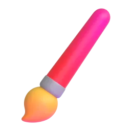
painta shoppicturesflowerspizzaa bike
b Go to the Vocabulary Bank. Tap the card, press 🔊 and repeat.Откройте Vocabulary Bank: нажмите на карточку, послушайте и повторите.
Vocabulary Bank2CPlan words
→
→
→
→
→
→
c Time words. Press 🔊 and repeat. Then choose.Слова времени. Послушайте, повторите и выберите.
tonight · сегодня вечером
tomorrow · завтра
this weekend · в эти выходные
next week · на следующей неделе
next month · в следующем месяце
next year · в следующем году
Today is Monday. Tuesday is… →
Today is Monday. Saturday and Sunday are… →
It's 3 p.m. now. 8 p.m. today is… →
It's 2026. 2027 is… →
dRule 1 · Predict. It's Saturday. Mia and Ben are in a shop. What are they going to buy, do you think? How many?Правило 1 · Прогноз. Суббота, Мия и Бен в магазине. Что они купят, как вы думаете? Сколько?
They're going to buy…paintHow many…?How much…?
In the shop
10 min
How to listen · Как слушать (5 правил — как в прошлые разы)
Predict. Сначала картинки и вопросы — угадайте, о чём будет текст.
Main idea first. В первый раз — только общий смысл. Не нужно понимать каждое слово!
Key words. Во второй раз ищите ключевые слова: кто? что будет делать? когда?
Numbers. Числа сразу записывайте цифрами: 3, 14, 10, 5.
Transcript last. Текст открывайте только в конце — и слушайте ещё раз, следя по тексту.
aRule 2 · Main idea. Listen once. Don't read! Answer one question.Правило 2. Послушайте один раз без текста и ответьте на один вопрос.
Saturday in the shopListen for the main idea · Общий смысл
Mia:OK, Ben. Here's my list. I'm going to paint the bedroom blue. And the kitchen is going to be yellow!
Ben:Yellow? Wow. How many tins of paint are you going to buy?
Mia:Three tins of blue and two tins of yellow. Look — the blue paint is fourteen pounds a tin.
Ben:And who is going to paint? You or me?
Mia:We are! Tomorrow at ten o'clock. Please don't be late again!
Ben:Ha-ha, I'm not going to take the bus this time. I'm going to come by bike.
Mia:Good! And next weekend I'm going to plant flowers on the balcony.
Ben:And what about the pictures? Are you going to hang them?
Mia:No — YOU are going to hang them. You've got a hammer!
Ben:OK, OK. So I'm going to paint, hang pictures… Are you going to cook lunch for me?
Mia:No, I'm not going to cook. I'm going to order pizza!
What are Mia and Ben going to do tomorrow?
bRule 3 · Key words. Listen again. Yes or No?Правило 3. Послушайте ещё раз. Да или нет?
Mia is going to paint the bedroom blue. →
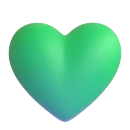
The kitchen is going to be green. →
Ben is going to come by bike. →
Mia is going to hang the pictures. →
Mia is going to cook lunch. →
cRule 4 · Numbers. Listen again and write the numbers in figures.Правило 4. Запишите числа цифрами.
Tins of blue paint:
One tin of blue paint costs £
They are going to paint tomorrow at o'clock
Tins of yellow paint:
d Mia and Ben talk about plans. Choose the missing word. This is the grammar of the next stage!Мия и Бен говорят о планах. Выберите слово. Это грамматика следующего этапа.
"I'm going paint the bedroom blue."
"Who going to paint?"
"I'm going to by bike."
"Next weekend I'm going to flowers."
I'm going to… — Grammar Easy
12 min
a Read the steps. Press 🔊 and repeat. The examples are from Mia and Ben's talk.Прочитайте шаги. Нажмите 🔊 и повторите.
Grammar Easy · Грамматика без страхаbe going to ➕ plans: I'm going to paint
1
Одна мысль
План, решение на будущее → am / is / are + going to + глагол. Глагол — простой, без -s и без -ing: I'm going to paint, she's going to buy. Часто со словами: tomorrow, tonight, this weekend, next week.
2
Формула-конструктор
I+'m+going to+paint+the bedroom.
Ben+'s+going to+hang+the pictures.
I → am · he / she / it → is · you / we / they → are · going to + простой глагол
We+'re+going to+order+pizza tomorrow.
3
Смотри, как это работает · нажми 🔊
I'm going to paint the bedroom blue.
Ben is going to come by bike.
Next weekend I'm going to plant flowers.
We're going to order pizza.
4
Осторожно!
❌ I going to paint. → ✅ I'm going to paint. Нужно am / is / are.
❌ She's going to buys a sofa. → ✅ She's going to buy a sofa. После going to — без -s.
❌ We're going paint. → ✅ We're going to paint. Не забывайте to!
bStep 1. am, is or are?Шаг 1. am, is или are?
I going to paint the bedroom.
Ben going to hang the pictures.
Mia and Ben going to paint tomorrow.
We going to order pizza.
The kitchen going to be yellow.
You going to love it!
cStep 2. After going to. Tap the right word.Шаг 2. Что после going to? Выберите.
I'm going to flowers. (сажать)
She's going to a new sofa. (купить)
They're going visit Mum.
He's going to the door. (чинить)
dStep 3. Write. am / is / are + going to + verb.Шаг 3. Напишите: am / is / are + going to + глагол.
Mia (paint) the kitchen yellow.
I (buy) a new phone next month.
We (order) pizza tonight.
Ben (come) by bike.
eStep 4. Build. Tap the words in the right order.Шаг 4. Соберите предложение.
fStep 5. About YOU. Two plans.Шаг 5. Два ваших плана.
Mum's call
10 min
aRule 1 · Predict. Mia's mum calls. It's November — she asks about New Year. What do you think: is Mia going to go home?Правило 1. Звонит мама Мии и спрашивает про Новый год. Как вы думаете: Мия поедет домой?
bRule 2 · Main idea. Listen once. Don't read!Правило 2. Один раз, без текста.
Mum calls MiaUse 🐢 if it's too fast · Если быстро — нажмите 🐢
Mum:Hello, darling! Are you going to come home for New Year?
Mia:Hi, Mum! Sorry, no, I'm not. I'm going to stay in my new flat this year.
Mum:Oh! Are you going to be alone?
Mia:No, I'm not! I'm going to invite my friends. Ben and Kate are going to come.
Mum:Is Ben going to bring his guitar?
Mia:Yes, he is! And we're going to dance.
Mum:Are you going to cook a big dinner?
Mia:No, we aren't. We're going to make a big salad, and Kate is going to bring a cake.
Mum:That's nice. And when are you going to visit us?
Mia:In January. I'm going to visit you on the fifth. I'm going to take the train!
Where is Mia going to be for New Year?
cRule 3 · Key words. Listen again. Yes or No?Правило 3. Ещё раз. Да или нет?
Mia is going to go home for New Year. →
Ben and Kate are going to come to the party. →
Ben is going to bring his guitar. →
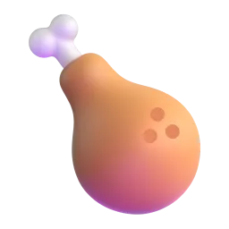
They are going to cook a big dinner. →
Kate is going to bring a cake. →
dRule 4 · Numbers and dates. When is Mia going to visit?Правило 4. Когда Мия приедет к маме?
Mia is going to visit her mum in .
She is going to visit on the .
She is going to take the .
e Mum asks questions, Mia says «no». Choose the missing word. This is the grammar of the next stage!Вопросы и «нет». Это грамматика следующего этапа.
" you going to come home?"
"Sorry, no, I'm ."
" Ben going to bring his guitar?"
"No, we ."
I'm not going to… · Are you going to…? — Grammar Easy
10 min
a Read the steps. Press 🔊 and repeat. The examples are from Mum's call.Прочитайте шаги, слушайте и повторяйте.
Grammar Easy · Грамматика без страхаbe going to ➖ ❓ I'm not going to… · Are you going to…?
1
Одна мысль
Нет → I'm not / he isn't / we aren't + going to + глагол. Вопрос → Are you going to…? Is she going to…? Короткий ответ — без going to: Yes, I am. / No, I'm not. Yes, he is. / No, he isn't.
2
Формула-конструктор
I+'m not+going to+cook.
Ben+isn't+going to+take the bus.
Are+you+going to+come home?+— Yes, I am. / No, I'm not.
Вопрос: am / is / are — в начало. Ответ: Yes, I am. — без going to.
3
Смотри, как это работает · нажми 🔊
I'm not going to come home for New Year.
We aren't going to cook a big dinner.
Is Ben going to bring his guitar? — Yes, he is.
When are you going to visit us?
4
Осторожно!
❌ I don't going to cook. → ✅ I'm not going to cook. Не don't, а I'm not.
❌ Do you going to come? → ✅ Are you going to come? Вопрос — с Are / Is.
❌ Are you going to come? — Yes, I going. → ✅ Are you going to come? — Yes, I am. Короткий ответ: Yes, I am.
bStep 1. Sort it. A plan, «not» or a question?Шаг 1. План, «нет» или вопрос?
➕ plan➖ not❓ question
I'm going to paint the bedroom.
I'm not going to cook.
Are you going to come home?
Ben is going to hang the pictures.
We aren't going to cook a big dinner.
Is Ben going to bring his guitar?
cStep 2. 'm not, isn't or aren't?Шаг 2. 'm not, isn't или aren't?
I going to cook.
Ben going to take the bus.
We going to stay at home.
Mia going to go home for New Year.
They going to travel this year.
I going to buy a sofa.
dStep 3. Questions and short answers.Шаг 3. Вопросы и короткие ответы.
you going to paint the kitchen?
Kate going to bring a cake?
Are you going to come? — Yes, .
Is Ben going to cook? — No, .
What you going to do this weekend?
When is she going her mum?
eStep 4. Build.Шаг 4. Соберите.
fStep 5. About YOU. One «no» and one question for your teacher.Шаг 5. Одно «нет» о себе и вопрос преподавателю.
Mia's message
6 min
a Mia writes to her sister Lena about her plans. Use everything from today: plan words, going to, not going to, Are you going to…?Мия пишет сестре о своих планах. Всё вместе: слова урока, going to, not going to, вопрос.
Mia → Lena
Hi Lena! I've got big plans for my flat! Tomorrow Ben and I (paint) the bedroom.
The kitchen (be) yellow!
Ben (not / take) the bus — he's going to come by bike.
Next weekend I (plant) flowers on the balcony.
I (not / go) home for New Year. I'm going to stay here!
(you / come) to my party? Kate is going to bring a cake!
games
10 min
aQuick words. What is it? Tap.Быстрые слова. Что это?
You do this with a brush and paint.
You do this with flowers in the garden.
You do this when something is broken.
You do this when you call a pizza café.
You do this when you put money in a piggy bank.
You do this when you ask friends to a party.
bRight or wrong? Quick! Then say the right sentence.Верно или ошибка? Быстро! Потом скажите правильно.
I'm going to paint my room.
She going to buy a sofa.
Are you going to come? — Yes, I am.
I don't going to cook.
We're going to order pizza tonight.
He's going to fixes the door.
They aren't going to travel this year.
Is you going to visit Mum?
cChat with Ben — on Friday evening. Choose the words, then read the chat aloud.Чат с Беном в пятницу вечером. Выберите слова и прочитайте вслух.
BenHi! What are you going to do this weekend?
YouI'm going to my friends. And you?
BenI'm going to help Mia. We're going to paint her kitchen!
You you going to paint all day?
BenNo, we . In the evening we're going to order pizza.
YouGreat! Kate going to come?
BenYes, she ! Come too!
dError hunt. Anna's message to Mia. Find 5 mistakes and tap them.Сообщение Анны. Найдите 5 ошибок и нажмите на них.
Mistakes to find · Ошибок в тексте: 5
!!... — !?,
eGuess my plan! Press the button and show the plan without words. Your teacher guesses: Are you going to paint your room? — Yes, I am! / No, I'm not! Then swap.Покажите план без слов. Преподаватель угадывает: «Are you going to…?» — «Yes, I am! / No, I'm not!» Потом наоборот.
Press the button · Нажмите кнопку
🖌️ paint my room
✈️ travel to the sea
🍕 order pizza
🎓 learn to cook
🌱 plant flowers
🛒 buy new shoes
🏡 visit my grandma
🛋️ stay at home
🐷 save money
🎬 go to the cinema
weak «to» · now or a plan?
5 min
a In fast speech going to is short: «goin' tə» — the to is very weak /tə/. The big words are strong. Listen and repeat.В быстрой речи going to звучит коротко: to — слабое /tə/. Громко — только главные слова. Послушайте и повторите.
I'm GOing to PAINT the BEDroom.
We're GOing to ORder PIZza.
Are you GOing to COME? — /tə/
NO, I'm NOT.
b Press 🔊. Is it happening now or is it a plan? Listen for going to!Нажмите 🔊. Это происходит сейчас или это план? Слушайте going to!
→
→
→
→
→
→
my plans
8 min
aStep 1. Answer. Your teacher asks you. Short answer + one more sentence.Шаг 1. Короткий ответ + ещё одно предложение.
Press the button · Нажмите кнопку
What are you going to do tonight?
What are you going to do this weekend?
Are you going to visit anybody next week?
Are you going to buy anything this month?
What are you going to do for New Year?
Are you going to travel next summer? Where?
Are you going to learn something new next year?
What are you going to cook tomorrow?
I'm going to…I'm not going to…Yes, I am. / No, I'm not.What about you?
bStep 2. My New Year plan. Tell your teacher three plans for New Year: who, where, what. Your teacher asks: Are you going to…?Шаг 2. Три плана на Новый год: с кем, где, что будете делать. Преподаватель задаёт вопросы.
I'm going to be…We're going to…I'm not going to…Are you going to…?
my weekend plans
5 min
a Mia asks: «What are you going to do this weekend?» Write her a message: five sentences and one question.Мия спрашивает о ваших планах на выходные. Напишите ей: 5 предложений и 1 вопрос.
Example: Hi Mia! This weekend I'm going to visit my grandma. On Saturday I'm going to clean my flat. In the evening my friends and I are going to watch a film. I'm not going to work! On Sunday I'm going to sleep a lot. Are you going to paint your kitchen?
b Press «Отправить преподавателю» — your teacher will see your answers.Нажмите «Отправить преподавателю».
Готово? Отправьте ответы преподавателю
Ответы сразу придут преподавателю на платформу — пересылать в Telegram ничего не нужно. Нет интернета? Ответы сохранятся и отправятся сами. Открыть их может только преподаватель.
Can you…?
3 min
a Listen to your teacher. Repeat the corrected sentences.Послушайте преподавателя и повторите исправленные фразы.
Great!
Let's fix
b Can you do these things?Вы можете это сделать?
I can understand the main idea, key words and numbersпонять общий смысл, ключевые слова и числа
I can talk about plans: I'm going to…рассказать о планах
I can say «no» and ask: I'm not going to… Are you going to…?сказать «нет» и задать вопрос
I can hear now or a planуслышать: сейчас или план
Which listening rule helped you most today? · Какое правило помогло больше всего?
plan words
15 min at home
Homework, part 1 of 2: words and a short listening. You can do it on your phone. Part 2 (grammar) is on the next page — press «Далее».Часть 1: слова и короткое аудирование. Ответы сохраняются сами.
a Look at the picture. Which word is it?Какое слово подходит к картинке?
→
→
→
→
→
→
b How do you say it in English? Write.Как это по-английски? Напишите.
покупать →
чинить →
сажать (растения) →
заказывать →
копить деньги →
завтра →
cListening. Ben leaves a voice message for Mia. Rule 2: listen once — is it good news or bad news?Аудирование. Голосовое от Бена. Один раз: хорошие новости или плохие?
A voice message from BenUse 🐢 if it's too fast · Текст — только в конце
Ben:Hi Mia, it's Ben. Bad news: I'm not going to come at ten tomorrow. My bike is broken!
Ben:I'm going to fix it in the morning, and I'm going to come at twelve.
Ben:But good news: I'm going to bring my brother. He's going to help us paint!
Ben:Are you going to buy more paint? Call me back. Bye!
Is it good news or bad news?
dRule 3. Listen again. Yes or No?Послушайте ещё раз. Да или нет?
Ben's bike is broken. →
Ben is going to come at ten. →
Ben is going to bring his brother. →
eRule 4. What time is Ben going to come?Во сколько придёт Бен?
Ben is going to come at o'clock
fRule 5 + shadowing. Now open the transcript. Press 🔊 next to each line and say it together with Ben.Откройте текст, нажимайте 🔊 и говорите вместе с Беном.
be going to ➕ ➖ ❓
15 min at home
Homework, part 2 of 2: grammar. Look at the colour formulas, then tap or type. At the end press «Отправить преподавателю».Часть 2: грамматика урока. В конце — «Отправить преподавателю».
Remember · Запомнитеam / is / are + going to + verb
I+'m+going to+paint.
She+isn't+going to+cook.
Are+you+going to+come?
план → am / is / are going to + глагол. Нет → I'm not / isn't / aren't. Ответ → Yes, I am. / No, I'm not.
a Tap the right words.Выберите правильный вариант.
I going to paint my room.
She is going to a sofa.
We going to cook tonight.
you going to visit Mum?
Is Ben going to come? — Yes, .
They are going travel next summer.
b Write the verbs with going to.Напишите глаголы с going to.
I (visit) my grandma tomorrow.
Mia (plant) flowers.
We (not / order) pizza.
(you / come) to the party?
c Build the sentences.Соберите предложения.
d About YOU: four sentences.О себе: четыре предложения.
Готово? Отправьте ответы преподавателю
Ответы сразу придут преподавателю на платформу — пересылать в Telegram ничего не нужно. Нет интернета? Ответы сохранятся и отправятся сами. Открыть их может только преподаватель.
extra practice
10 min
What to do
Build the sentences: tap the words in the right order. Made a mistake? Press «↺ Заново».
Find the mistake in each sentence and write the correct sentence.
Press «Проверить» after each exercise.
1. Build the sentence
2. Find the mistake
I going to paint my room.
She's going to buys a sofa.
I don't going to cook.
Do you going to come?
Play and review
10 min
Game time!Слова урока в играх: пары, скорость, буквы и даже детектив. Выбирайте любую.
What to do · Что делать
Play with the words from this lesson — great for review before the next lesson!Играйте со словами урока — это лучший способ повторить их.
Your best results are saved and your teacher can see them.Лучшие результаты сохраняются, преподаватель их видит.
Match upНайди пару
Tap a word, then its meaning. As fast as you can! · Нажмите слово, потом его значение.
60 seconds60 секунд
Choose the right word for the meaning. How many in one minute? · Сколько слов успеете за минуту?
Listen and spellУслышь и напиши
Listen to the word and write it. Press 🔊 to hear it again. · Послушайте слово и напишите его.
MemoryМемори
Find the pairs: a word and its meaning. Remember where the cards are! · Откройте по две карточки и найдите пары «слово — значение».
Word builderСобери слово
The letters are mixed up. Tap them in the right order. · Буквы перепутались — нажимайте их по порядку и соберите слово.
BalloonsВоздушные шарики
Guess the word letter by letter. Every wrong letter pops a balloon! · Угадайте слово по буквам. Каждая неверная буква лопает шарик.
DetectiveДетектив
Solve the case! Each clue is a task with this lesson's words and grammar. Every right answer clears one suspect. · Раскройте дело: каждая улика — задание по словам и грамматике урока.
IRIS SCHOOL · Вика · Treasure Island
Chapter 3: The Black Spot
Tap… tap… tap… A blind man with a stick comes along the road to the Admiral Benbow — and he has something terrible for the captain. The words of chapter 3, a scene to listen to, and the grammar of every story: the past simple — came, gave, fell, didn't, Did…?
“Fifteen men on the dead man's chest — Yo-ho-ho, and a bottle of rum!”R. L. Stevenson, «Treasure Island»
A2Treasure IslandChapter 3Past simple55–60 min
Chapter 3 words
10 min
In this lesson you will…
learn 10 words from chapter 310 слов из главы 3
understand a scene from the chapterпонять сцену из главы на слух
check that you understood the chapterпроверить, как вы поняли главу
tell a story in the past: came, gave, fell, didn't…рассказывать историю в прошедшем времени
write Jim's diaryнаписать дневник Джима
a Remember chapters 1 and 2? The old captain, Billy Bones, and the man called Black Dog. Look at the pictures. What do you think happens in chapter 3?Помните главы 1 и 2? Посмотрите на картинки: что будет в главе 3?
a blind manpiratesa black spotruma sea-chestthe inn
I think…Maybe…In chapter 2…
b Go to the Vocabulary Bank. Tap each card, press 🔊 and repeat. These words are in the chapter.Нажимайте на карточки, слушайте и повторяйте. Эти слова есть в главе.
Vocabulary BankCh3Chapter 3 words
He cannot see. →
He held my hand very hard. →
He walked with it. →
He stayed in bed — he was not well. →
c Complete the sentences from the story.Вставьте слово — предложения из истории.
«No more , or you will die,» said the doctor.
The blind man the road with his stick.
«Boy, me to the captain!»
Jim was very of the blind man.
The captain jumped up, but then he down.
It was a piece of paper with a black on it.
Tap, tap, tap…
10 min
a Jim is standing at the door of the inn. A blind man comes along the road. Listen once: what does the blind man give the captain?Джим стоит у двери. По дороге идёт слепой. Что слепой даёт капитану?
Tap, tap, tap…Listen first · Use 🐢 if it's fast · Текст — в конце
Pew, the blind man:Will any kind friend tell a poor blind man where he is?
Jim:You are at the Admiral Benbow inn, sir.
Pew, the blind man:I hear a young voice. Give me your hand, my kind young friend, and lead me in.
Jim:Ow! You're hurting my hand!
Pew, the blind man:Now, boy, take me to the captain, or I'll break your arm!
Jim:Sir, the captain is ill. He is in bed.
Pew, the blind man:Take me in, I said! Quick!
The captain:Pew! What do you want?
Pew, the blind man:Hold out your hand, Bill. There. Now it's done. Goodbye!
The captain:The black spot! Ten o'clock tonight! There's still time!
What does the blind man give the captain?
b Listen again. Answer the cards.Послушайте ещё раз и ответьте на карточки.
Where is the blind man?
Why does Jim say «Ow!»?
What does the blind man say he will do?
When will the pirates come?
c Who says it? Choose.Кто это говорит? Выберите.
«Will any kind friend tell a poor blind man where he is?» →
«You're hurting my hand!» →
«What do you want?» →
«Hold out your hand, Bill.» →
«The captain is ill.» →
d Now open the text. Press 🔊 next to a line and say it like an actor!Откройте текст, нажимайте 🔊 и повторяйте как актёр!
Chapter 3 in short
12 min
aThe chapter in short. Read our short retelling. Does it match what you read in your book?Краткий пересказ главы. Совпадает с тем, что вы прочитали в книге?
Chapter 3 in shortTreasure Island · the chapter in short
Captain Billy Bones was very ill. Dr Livesey said, «No more rum, or you will die.» But the captain wanted rum all the time. Jim gave him a little, and the captain told Jim a secret: some bad men wanted his old sea-chest.
That evening Jim's father died. Jim and his mother were very sad.
The next day a strange man came along the road. He was blind, and he tapped the road with his stick. He took Jim's hand and gripped it very hard. «Take me to the captain!» he said.
The blind man put a small piece of paper in the captain's hand and went away. It was the black spot! On it were the words «You have till ten tonight». The captain jumped up, but then he fell down on the floor. He was dead.
b True, false or not in the chapter?Верно, неверно или в главе этого нет?
Dr Livesey said the captain could drink rum.
Jim's father died.
The blind man had a dog.
The blind man was kind to Jim.
The black spot said «till ten tonight».
The captain ran away to the sea.
c Put the events in order: 1, 2, 3…Расставьте события по порядку: 1, 2, 3…
A blind man comes along the road. →
Dr Livesey says «No more rum». →
The captain falls down dead. →
Jim's father dies. →
The blind man gives the captain the black spot. →
The captain tells Jim about the sea-chest. →
d Answer the questions. Short answers are fine.Ответьте на вопросы. Можно коротко.
Who was very ill?
What did the blind man have in his hand?
What time did the black spot say?
past simple: irregular verbs
12 min
a Read the four steps. Press 🔊 and repeat. All the examples are from the chapter.Прочитайте четыре шага, слушайте и повторяйте. Все примеры — из главы.
Grammar Easy · Грамматика без страхаpast simple: came, gave, fell…
1
Одна мысль
Истории рассказываем в прошедшем времени. Правильные глаголы + -ed: tapped, gripped, died. Неправильные — свои формы: come → came, give → gave, fall → fell, take → took, say → said, lead → led. Нет и вопрос — с did, а глагол снова в начальной форме: He didn't see. Did he die?
2
Формула-конструктор
The blind man+came+along the road.
He+didn't+see+Jim.
Did+the captain+die?+— Yes, he did.
came, gave, fell, took, said, led, went, saw · didn't + verb · Did…? — Yes, he did. / No, he didn't.
3
Смотри, как это работает · нажми 🔊
A blind man came along the road.
He gave the captain the black spot.
The captain fell down.
The blind man didn't see Jim.
4
Осторожно!
❌ He comed along the road. → ✅ He came along the road. come → came.
❌ He didn't saw Jim. → ✅ He didn't see Jim. После didn't — начальная форма.
❌ Did he died? → ✅ Did he die? После did — начальная форма.
bStep 1. Choose the right form.Шаг 1. Выберите правильную форму.
The blind man along the road.
He the captain the black spot.
The captain the black spot. He was scared.
Jim want to help the blind man.
the captain drink rum? — Yes, he did.
The blind man Jim to lead him in.
cStep 2. Write the verb in the right form.Шаг 2. Напишите глагол в нужной форме.
The captain (fall) down on the floor.
Jim (take) the blind man to the captain.
The blind man (say), «Lead me in!»
Jim's mother (not / see) the blind man.
the captain (die)? — Yes, he did.
dStep 3. Build the sentences.Шаг 3. Соберите предложения.
talk about chapter 3
8 min
a Talk about the chapter. Answer your teacher's questions.Обсудите главу. Отвечайте на вопросы преподавателя.
Press the button · Нажмите кнопку
Why was the captain scared of the blind man?
What is the black spot? What does it mean?
How did Jim feel when the blind man gripped his hand?
Who is the scariest person in the story so far? Why?
Do you like pirate stories? Which ones do you know?
What do you think is in the sea-chest?
I think…Because…He was scared / angry / sad…Maybe in the sea-chest there is…
bGame: Who am I? Press the button and BE this character. Say three sentences in the past: I came… I saw… I didn't… Your teacher guesses who you are!Игра «Кто я?»: три предложения в прошедшем времени от лица героя — преподаватель угадывает.
Press the button · Нажмите кнопку
🦯 Pew, the blind man
🏴☠️ the captain, Billy Bones
👦 Jim Hawkins
🩺 Dr Livesey
👩 Jim's mother
🐕 Black Dog (chapter 2)
Jim's diary
6 min
a You are Jim. Write your diary for this terrible day. Use the past simple.Вы — Джим. Напишите дневник этого страшного дня.
Example: Dear Diary, today was a terrible day. In the afternoon a blind man came to our inn. He gripped my hand and I was very scared. He gave the captain the black spot. Then the captain fell down…
b Press «Отправить преподавателю» — your teacher will see your answers.Нажмите «Отправить преподавателю».
Готово? Отправьте ответы преподавателю
Ответы сразу придут преподавателю на платформу — пересылать в Telegram ничего не нужно. Нет интернета? Ответы сохранятся и отправятся сами. Открыть их может только преподаватель.
Can you…?
3 min
a Listen to your teacher. Repeat the corrected sentences.Послушайте преподавателя и повторите исправленные фразы.
Great!
Let's fix
b Can you do these things?Вы можете это сделать?
I can use 10 words from chapter 310 слов из главы 3
I can understand a scene from the chapterпонять сцену на слух
I can tell the events of the chapter in orderрассказать события главы по порядку
I can use the past simple: came, gave, didn't, Did…?past simple: неправильные глаголы, didn't, Did…?
What do you think will happen in the next chapter? · Что, по-вашему, будет дальше?
Chapter 3 words
10 min at home
Homework, part 1 of 2: words. Mostly tapping — easy on your phone. Part 2 (grammar) is on the next page — press «Далее».Часть 1: слова главы. Ответы сохраняются сами.
a Which word is it?Какое это слово?
He cannot see. →
Tap, tap, tap on the road! →
The pirates' message. →
Jim was afraid. →
The captain liked this drink. →
b How do you say it in English?Как это по-английски?
палка, трость →
больной →
крепко схватить →
вести →
past simple: irregular verbs
15 min at home
Homework, part 2 of 2: grammar and the story. Look at the rule, then tap or type. At the end press «Отправить преподавателю».Часть 2: грамматика и история. В конце — «Отправить преподавателю».
Remember · Запомнитеpast simple: irregular verbs
came · gave · fell · took · said · led
didn't++ verb
Did+he die?
неправильные глаголы — свои формы · didn't / Did… + начальная форма
a Tap the right form.Выберите правильную форму.
Jim the blind man to the captain.
The captain very ill.
The doctor want the captain to drink rum.
Jim see the black spot? — Yes, he did.
The captain up and then fell down.
b Write the words.Напишите слова.
The blind man (come) to the inn.
He (give) the captain the black spot.
The captain (not / leave) the inn.
c The story: true or false?История: верно или нет?
Jim's father died in chapter 3. →
The blind man was Jim's friend. →
The captain fell down dead. →
The black spot was a map. →
d Retell the chapter in four sentences. Use the words and the grammar of the lesson.Перескажите главу в четырёх предложениях.
Готово? Отправьте ответы преподавателю
Ответы сразу придут преподавателю на платформу — пересылать в Telegram ничего не нужно. Нет интернета? Ответы сохранятся и отправятся сами. Открыть их может только преподаватель.
extra practice
10 min
What to do
Build the sentences: tap the words in the right order. Made a mistake? Press «↺ Заново».
Find the mistake in each sentence and write the correct sentence.
Press «Проверить» after each exercise.
1. Build the sentence
2. Find the mistake
The blind man comed to the inn.
He didn't saw Jim.
Did the captain died?
He gived the captain the black spot.
Play and review
10 min
Game time!Слова урока в играх: пары, скорость, буквы и даже детектив. Выбирайте любую.
What to do · Что делать
Play with the words from this lesson — great for review before the next lesson!Играйте со словами урока — это лучший способ повторить их.
Your best results are saved and your teacher can see them.Лучшие результаты сохраняются, преподаватель их видит.
Match upНайди пару
Tap a word, then its meaning. As fast as you can! · Нажмите слово, потом его значение.
60 seconds60 секунд
Choose the right word for the meaning. How many in one minute? · Сколько слов успеете за минуту?
Listen and spellУслышь и напиши
Listen to the word and write it. Press 🔊 to hear it again. · Послушайте слово и напишите его.
MemoryМемори
Find the pairs: a word and its meaning. Remember where the cards are! · Откройте по две карточки и найдите пары «слово — значение».
Word builderСобери слово
The letters are mixed up. Tap them in the right order. · Буквы перепутались — нажимайте их по порядку и соберите слово.
BalloonsВоздушные шарики
Guess the word letter by letter. Every wrong letter pops a balloon! · Угадайте слово по буквам. Каждая неверная буква лопает шарик.
DetectiveДетектив
Solve the case! Each clue is a task with this lesson's words and grammar. Every right answer clears one suspect. · Раскройте дело: каждая улика — задание по словам и грамматике урока.
IRIS SCHOOL · Вика · Treasure Island
Chapter 4: The Sea-Chest
The pirates are coming at ten! Jim and his mother open the captain's old sea-chest — and while they are counting the money, they hear tap… tap… tap… The words of chapter 4 and the grammar of exciting stories: they were counting when they heard…
“Fifteen men on the dead man's chest — Yo-ho-ho, and a bottle of rum!”R. L. Stevenson, «Treasure Island»
A2Treasure IslandChapter 4Past continuous55–60 min
Chapter 4 words
10 min
In this lesson you will…
learn 10 words from chapter 410 слов из главы 4
understand a scene from the chapterпонять сцену из главы
check that you understood the chapterпроверить понимание главы
say what people were doing when something happenedpast continuous: что делали, когда…
write Jim's diaryнаписать дневник Джима
a The captain is dead, and the pirates are coming at ten o'clock. What would YOU do? Look at the pictures — what is in the chest, do you think?Капитан умер, пираты придут в десять. Что в сундуке, как вы думаете?
a sea-chesta keycoinspistolsa packeta bridge
I think there is / are…I would…Maybe…
b Go to the Vocabulary Bank. Tap each card, press 🔊 and repeat. These words are in the chapter.Нажимайте на карточки, слушайте и повторяйте. Эти слова есть в главе.
Vocabulary BankCh4Chapter 4 words
You open the chest with it. →
A small round piece of money. →
She fell down because she was weak and scared. →
It goes over a river. →
c Complete the sentences from the story.Вставьте слово — предложения из истории.
Jim found the around the captain's neck.
They the door of the inn.
Mother was the coins.
Jim took a of papers from the chest.
Somebody in the dark — a signal!
They under the bridge.
The captain's chest
10 min
a Jim and his mother are alone at the inn with the captain's chest. Listen once: what do they hear at the end?Джим и мама одни с сундуком капитана. Что они слышат в конце?
The captain's chestListen first · Use 🐢 if it's fast · Текст — в конце
Jim's mother:Jim, the pirates are coming at ten. We must find the key to the chest.
Jim:The key is on a string around the captain's neck, Mother. Here it is!
Jim's mother:Quick, open the chest. The captain owed us money for his room.
Jim:There are old clothes, two pistols… and a bag of money!
Jim's mother:I'm an honest woman. I'll only take what he owes us. Let me count the coins.
Jim:There are coins from many countries — gold coins, silver coins… Mother, hurry!
Jim's mother:One, two, three… I'm counting as fast as I can!
Jim:Listen! Tap… tap… tap… It's the blind man's stick! And a whistle!
Jim's mother:I'll take what I have. Run, Jim!
Jim:Wait! I'm taking this packet too. It was at the bottom of the chest.
What do they hear at the end?
b Listen again. Answer the cards.Послушайте ещё раз и ответьте на карточки.
Where was the key?
Why does Mother want the money?
What is Mother doing when they hear the stick?
What does Jim take?
c Who says it? Choose.Кто это говорит? Выберите.
«The key is on a string around the captain's neck.» →
«I'm an honest woman.» →
«Mother, hurry!» →
«I'm counting as fast as I can!» →
d Now open the text. Press 🔊 next to a line and say it like an actor!Откройте текст, нажимайте 🔊 и повторяйте как актёр!
Chapter 4 in short
12 min
aThe chapter in short. Read our short retelling. Does it match what you read in your book?Краткий пересказ главы. Совпадает с тем, что вы прочитали в книге?
Chapter 4 in shortTreasure Island · the chapter in short
Jim and his mother ran to the village for help. But the people there were scared of the pirates, and nobody wanted to come back with them.
So Jim and his mother went back to the inn alone. They locked the door. The dead captain was lying on the floor. Jim found a key on a string around his neck.
They opened the sea-chest. Inside there were old clothes, two pistols, a packet of papers and a bag of money. Jim's mother was counting the money — only what the captain owed them — when they heard a sound: tap, tap, tap. It was the blind man's stick!
Jim took the packet, and they ran out of the inn. While they were running to the bridge, Jim's mother fainted. Jim pulled her under the bridge, and they hid there in the dark.
b True, false or not in the chapter?Верно, неверно или в главе этого нет?
The people in the village helped Jim.
The key was around the captain's neck.
Jim's mother took all the money.
There were pistols in the chest.
The pirates had a big dog.
Jim's mother fainted.
c Put the events in order: 1, 2, 3…Расставьте события по порядку: 1, 2, 3…
Jim finds the key. →
They hide under the bridge. →
Jim and his mother run to the village. →
They hear the blind man's stick. →
They come back alone and lock the door. →
They open the sea-chest. →
d Answer the questions. Short answers are fine.Ответьте на вопросы. Можно коротко.
Why did nobody come back with them?
What did Jim take from the chest?
Where did they hide?
past continuous + past simple
12 min
a Read the four steps. Press 🔊 and repeat. All the examples are from the chapter.Прочитайте четыре шага, слушайте и повторяйте. Все примеры — из главы.
Grammar Easy · Грамматика без страхаwas / were + -ing
1
Одна мысль
Past continuous — что происходило в какой-то момент (долгое действие, фон): Mother was counting the money. Короткое событие, которое его «прервало» — past simple: …when they heard the stick. while + was / were …ing: While they were running, Mother fainted.
2
Формула-конструктор
Mother+was counting+the money+when+they heard a sound.
While+they were running,+Mother fainted.
I / he / she / it → was …ing · we / you / they → were …ing · короткое «вдруг» → past simple
3
Смотри, как это работает · нажми 🔊
Mother was counting the coins.
They were counting when they heard the stick.
While they were running, Mother fainted.
Jim was hiding under the bridge.
4
Осторожно!
❌ Mother were counting. → ✅ Mother was counting. she → was.
❌ They was running. → ✅ They were running. they → were.
❌ Mother counted when they heard a sound. → ✅ Mother was counting when they heard a sound. Долгое действие → was …ing.
bStep 1. Choose the right form.Шаг 1. Выберите правильную форму.
Mother the coins when they heard a sound.
While they , Mother fainted.
The captain on the floor.
Jim the packet and ran.
What Jim doing when he heard the whistle?
They under the bridge all night.
cStep 2. Write the verb in the right form.Шаг 2. Напишите глагол в нужной форме.
Mother (count) the money.
They (run) to the bridge.
Jim (open) the chest when he (see) the pistols.
While Mother (count), Jim (hear) a whistle.
dStep 3. Build the sentences.Шаг 3. Соберите предложения.
talk about chapter 4
8 min
a Talk about the chapter. Answer your teacher's questions.Обсудите главу. Отвечайте на вопросы преподавателя.
Press the button · Нажмите кнопку
Why didn't the people in the village help?
Was Jim's mother right to take only what the captain owed? Why?
What was in the chest? What was the most important thing?
What would you take from the chest?
Where were you and what were you doing yesterday at 8 p.m.?
What do you think is in the packet?
I think…She was right / wrong because…I was …ingThe most important thing was…
bGame: Freeze! Press the button for a moment in the story. Say what everybody was doing at that moment: Jim, his mother, the pirates…Игра «Стоп-кадр»: что делал каждый в этот момент? (past continuous)
Press the button · Нажмите кнопку
⏰ 9 p.m. — when the pirates' whistle sounded
🔑 when Jim found the key
🦯 when they heard the stick
🌉 when Mother fainted
🏠 when the pirates arrived at the inn
🌙 at midnight
Jim's diary
6 min
a You are Jim. You are hiding under the bridge. Write your diary. Use was / were …ing and the past simple.Вы — Джим, прячетесь под мостом. Напишите дневник.
Example: Dear Diary, I'm writing this under the bridge. We were opening the captain's chest when we heard the blind man's stick. Mother was counting the money. I took a packet and we ran. While we were running, Mother fainted…
b Press «Отправить преподавателю» — your teacher will see your answers.Нажмите «Отправить преподавателю».
Готово? Отправьте ответы преподавателю
Ответы сразу придут преподавателю на платформу — пересылать в Telegram ничего не нужно. Нет интернета? Ответы сохранятся и отправятся сами. Открыть их может только преподаватель.
Can you…?
3 min
a Listen to your teacher. Repeat the corrected sentences.Послушайте преподавателя и повторите исправленные фразы.
Great!
Let's fix
b Can you do these things?Вы можете это сделать?
I can use 10 words from chapter 410 слов из главы 4
I can understand a scene from the chapterпонять сцену на слух
I can tell the events of the chapter in orderрассказать события по порядку
I can use the past continuous and the past simple with when / whilepast continuous и past simple с when / while
What do you think will happen in the next chapter? · Что, по-вашему, будет дальше?
Chapter 4 words
10 min at home
Homework, part 1 of 2: words. Mostly tapping — easy on your phone. Part 2 (grammar) is on the next page — press «Далее».Часть 1: слова главы. Ответы сохраняются сами.
a Which word is it?Какое это слово?
A sailor's big wooden box. →
One, two, three… →
A high sound with your lips. →
Papers in a cover. →
Close the door with a key. →
b How do you say it in English?Как это по-английски?
монета →
мост →
прятаться →
упасть в обморок →
past continuous + past simple
15 min at home
Homework, part 2 of 2: grammar and the story. Look at the rule, then tap or type. At the end press «Отправить преподавателю».Часть 2: грамматика и история. В конце — «Отправить преподавателю».
Remember · Запомнитеpast continuous + past simple
Mother+was counting+when+they heard a sound.
While+they were running,+she fainted.
was / were + -ing — долгое действие · вдруг — past simple
a Tap the right form.Выберите правильную форму.
I TV when the phone rang.
They dinner at 8 o'clock.
While she was reading, the cat on the table.
What you doing at 10 p.m.?
Jim when he saw the pistols.
b Write the words.Напишите слова.
Mother (count) the coins.
The pirates (come) to the inn.
Jim (hide) when he heard voices.
c The story: true or false?История: верно или нет?
The people in the village were brave. →
Jim took a packet from the chest. →
They hid in the inn. →
Jim's mother fainted. →
d Retell the chapter in four sentences. Use the words and the grammar of the lesson.Перескажите главу в четырёх предложениях.
Готово? Отправьте ответы преподавателю
Ответы сразу придут преподавателю на платформу — пересылать в Telegram ничего не нужно. Нет интернета? Ответы сохранятся и отправятся сами. Открыть их может только преподаватель.
extra practice
10 min
What to do
Build the sentences: tap the words in the right order. Made a mistake? Press «↺ Заново».
Find the mistake in each sentence and write the correct sentence.
Press «Проверить» after each exercise.
1. Build the sentence
2. Find the mistake
Mother counted the money when they heard a sound.
They was hiding under the bridge.
While they ran, Mother fainted.
Jim was take the packet.
Play and review
10 min
Game time!Слова урока в играх: пары, скорость, буквы и даже детектив. Выбирайте любую.
What to do · Что делать
Play with the words from this lesson — great for review before the next lesson!Играйте со словами урока — это лучший способ повторить их.
Your best results are saved and your teacher can see them.Лучшие результаты сохраняются, преподаватель их видит.
Match upНайди пару
Tap a word, then its meaning. As fast as you can! · Нажмите слово, потом его значение.
60 seconds60 секунд
Choose the right word for the meaning. How many in one minute? · Сколько слов успеете за минуту?
Listen and spellУслышь и напиши
Listen to the word and write it. Press 🔊 to hear it again. · Послушайте слово и напишите его.
MemoryМемори
Find the pairs: a word and its meaning. Remember where the cards are! · Откройте по две карточки и найдите пары «слово — значение».
Word builderСобери слово
The letters are mixed up. Tap them in the right order. · Буквы перепутались — нажимайте их по порядку и соберите слово.
BalloonsВоздушные шарики
Guess the word letter by letter. Every wrong letter pops a balloon! · Угадайте слово по буквам. Каждая неверная буква лопает шарик.
DetectiveДетектив
Solve the case! Each clue is a task with this lesson's words and grammar. Every right answer clears one suspect. · Раскройте дело: каждая улика — задание по словам и грамматике урока.
IRIS SCHOOL · Вика · Treasure Island
Chapter 5: The Last of the Blind Man
The pirates break into the inn — but Flint's papers are gone! Then horses come along the road… The words of chapter 5 and how to say how people do things: quickly, angrily, loudly — and could / couldn't.
“Fifteen men on the dead man's chest — Yo-ho-ho, and a bottle of rum!”R. L. Stevenson, «Treasure Island»
A2Treasure IslandChapter 5Adverbs · could55–60 min
Chapter 5 words
10 min
In this lesson you will…
learn 10 words from chapter 510 слов из главы 5
understand a scene from the chapterпонять сцену из главы
check that you understood the chapterпроверить понимание главы
say how people did things: quickly, angrily…наречия: как делали
use could / couldn't for the pastcould / couldn't — мог / не мог
a Jim and his mother are hiding under the bridge. The pirates are coming. What will they do, do you think? Look at the pictures.Пираты идут к трактиру. Что они сделают?
piratesa broken doora lanternhorsesangrynight
I think the pirates will…Maybe they…Jim must…
b Go to the Vocabulary Bank. Tap each card, press 🔊 and repeat. These words are in the chapter.Нажимайте на карточки, слушайте и повторяйте. Эти слова есть в главе.
Vocabulary BankCh5Chapter 5 words
People ride it. →
Look carefully for something. →
without any noise →
A man in a uniform. →
c Complete the sentences from the story.Вставьте слово — предложения из истории.
The pirates the door and went in.
They every room for the papers.
«Find the boy!» the blind man shouted .
When they heard horses, the pirates ran .
The horses the blind man down.
Jim walked so nobody could hear him.
Night at the inn
10 min
a Jim is watching from behind a bush. Listen once: what happens to the blind man at the end?Джим смотрит из-за куста. Что случается со слепым в конце?
Night at the innListen first · Use 🐢 if it's fast · Текст — в конце
Jim:I couldn't stay under the bridge. I went quietly up to the road and watched.
Pew, the blind man:In, in, in! Break the door!
A pirate:Pew, the captain's dead! And somebody has opened the chest!
Pew, the blind man:Is the money there?
A pirate:The money's here, but Flint's papers are gone!
Pew, the blind man:It's the boy! Find the boy! Search the house! Quickly!
A pirate:Listen — horses! Somebody is coming! Run!
Pew, the blind man:Don't leave me! Don't leave me, mates! I can't see!
Jim:The blind man ran into the road, right in front of the horses. He fell, and he didn't get up again.
What happens to the blind man?
b Listen again. Answer the cards.Послушайте ещё раз и ответьте на карточки.
What are the pirates looking for?
Is the money in the chest?
Why do the pirates run away?
What does the blind man shout at the end?
c Who says it? Choose.Кто это говорит? Выберите.
«I couldn't stay under the bridge.» →
«Break the door!» →
«The money's here, but Flint's papers are gone!» →
«Don't leave me!» →
d Now open the text. Press 🔊 next to a line and say it like an actor!Откройте текст, нажимайте 🔊 и повторяйте как актёр!
Chapter 5 in short
12 min
aThe chapter in short. Read our short retelling. Does it match what you read in your book?Краткий пересказ главы. Совпадает с тем, что вы прочитали в книге?
Chapter 5 in shortTreasure Island · the chapter in short
Jim couldn't stay under the bridge — he wanted to see. He went quietly up to the road and hid behind a bush.
Seven or eight men ran quickly to the inn. The blind man was with them. They broke the door and searched the house. The money was in the chest, but the packet of papers wasn't there. «It's the boy! Find the boy!» the blind man shouted angrily.
Suddenly they heard horses on the road. The pirates were scared and ran away in all directions. They left the blind man alone.
The blind man couldn't see where he was going. He ran into the road, right in front of the horses. The horses knocked him down, and he died. The riders were officers. Jim told them everything, and then he went with them to Dr Livesey.
b True, false or not in the chapter?Верно, неверно или в главе этого нет?
Jim stayed under the bridge.
The pirates found the money.
The pirates found the packet.
The pirates took the blind man with them.
There were ten horses.
Jim went to Dr Livesey with the officers.
c Put the events in order: 1, 2, 3…Расставьте события по порядку: 1, 2, 3…
The pirates hear horses and run away. →
The pirates break the door. →
The horses knock the blind man down. →
Jim hides behind a bush and watches. →
The blind man shouts angrily. →
They can't find the papers. →
d Answer the questions. Short answers are fine.Ответьте на вопросы. Можно коротко.
What were the pirates looking for?
Why did the pirates run away?
Who did Jim go to after that?
adverbs · could / couldn't
12 min
a Read the four steps. Press 🔊 and repeat. All the examples are from the chapter.Прочитайте четыре шага, слушайте и повторяйте. Все примеры — из главы.
Grammar Easy · Грамматика без страхаquickly, angrily · could / couldn't
1
Одна мысль
Как человек что-то делал? Прилагательное + -ly: quick → quickly, quiet → quietly, angry → angrily (y → i). Особые: good → well, fast → fast, hard → hard. Наречие стоит после глагола: He shouted angrily. «Мог / не мог» в прошлом — could / couldn't + глагол: The blind man couldn't see.
2
Формула-конструктор
The pirates+ran+quickly.
He+shouted+angrily.
The blind man+couldn't+see.
quick → quickly · angry → angrily · good → well · fast → fast · could / couldn't + глагол
3
Смотри, как это работает · нажми 🔊
The pirates ran quickly to the inn.
The blind man shouted angrily.
Jim walked quietly.
The blind man couldn't see the horses.
4
Осторожно!
❌ He shouted angry. → ✅ He shouted angrily. Как? — наречие на -ly.
❌ He ran quick. → ✅ He ran quickly. quick → quickly.
❌ He couldn't to see. → ✅ He couldn't see. После could — без to.
bStep 1. Choose the right form.Шаг 1. Выберите правильную форму.
The pirates ran to the inn.
«Find the boy!» he shouted .
Jim went up to the road.
The blind man see the horses.
Jim hear everything from behind the bush.
The officers rode very .
cStep 2. Write the verb in the right form.Шаг 2. Напишите глагол в нужной форме.
The pirates searched the house . (careful)
The blind man shouted . (loud)
The pirates (not / find) the papers. (could)
Jim (see) the inn from behind the bush. (could)
dStep 3. Build the sentences.Шаг 3. Соберите предложения.
talk about chapter 5
8 min
a Talk about the chapter. Answer your teacher's questions.Обсудите главу. Отвечайте на вопросы преподавателя.
Press the button · Нажмите кнопку
Why did the pirates leave the blind man alone?
Did you feel sorry for the blind man? Why / why not?
Was Jim brave in this chapter? Why?
What could you do when you were five? What couldn't you do?
What do you do quickly / slowly / carefully every day?
Where are the papers now? Who wants them?
I think…He was brave / scared because…When I was five, I could… but I couldn't…I do … quickly / slowly
bGame: How did they do it? Press the button. Act it out without words — your teacher guesses the verb and the adverb! Then swap.Игра: покажите действие и наречие без слов — преподаватель угадывает.
Press the button · Нажмите кнопку
🚶 walk quietly
📢 shout angrily
🏃 run quickly
🐢 walk slowly
😢 cry sadly
🔍 search carefully
😂 laugh loudly
🤫 whisper quietly
Jim's report
6 min
a You are Jim. Tell the officers what you saw. Use adverbs and could / couldn't.Вы — Джим. Расскажите офицерам, что видели: наречия и could / couldn't.
Example: I was hiding behind a bush, so I could see everything. The pirates ran quickly to the inn and broke the door. They searched the house carefully, but they couldn't find the papers. The blind man shouted angrily…
b Press «Отправить преподавателю» — your teacher will see your answers.Нажмите «Отправить преподавателю».
Готово? Отправьте ответы преподавателю
Ответы сразу придут преподавателю на платформу — пересылать в Telegram ничего не нужно. Нет интернета? Ответы сохранятся и отправятся сами. Открыть их может только преподаватель.
Can you…?
3 min
a Listen to your teacher. Repeat the corrected sentences.Послушайте преподавателя и повторите исправленные фразы.
Great!
Let's fix
b Can you do these things?Вы можете это сделать?
I can use 10 words from chapter 510 слов из главы 5
I can understand a scene from the chapterпонять сцену на слух
I can tell the events of the chapter in orderрассказать события по порядку
I can use adverbs (quickly, angrily) and could / couldn'tнаречия и could / couldn't
What do you think will happen in the next chapter? · Что, по-вашему, будет дальше?
Chapter 5 words
10 min at home
Homework, part 1 of 2: words. Mostly tapping — easy on your phone. Part 2 (grammar) is on the next page — press «Далее».Часть 1: слова главы. Ответы сохраняются сами.
a Which word is it?Какое это слово?
They went in by breaking the door. →
He spoke very loudly. →
fast →
They left fast because they were scared. →
The horse hit him and he fell. →
b How do you say it in English?Как это по-английски?
лошадь →
сердито →
тихо →
обыскивать →
adverbs · could / couldn't
15 min at home
Homework, part 2 of 2: grammar and the story. Look at the rule, then tap or type. At the end press «Отправить преподавателю».Часть 2: грамматика и история. В конце — «Отправить преподавателю».
Remember · Запомнитеadverbs · could / couldn't
quick+→+quickly
angry+→+angrily
couldn't++ verb
наречие — после глагола · good → well · could / couldn't + глагол без to
a Tap the right form.Выберите правильную форму.
She speaks English very .
He drove in the rain.
When I was six, I swim.
I sleep — it was too noisy!
The children played in the garden.
b Write the words.Напишите слова.
The pirates ran . (quick)
The blind man (not / see). (could)
Jim walked . (quiet)
c The story: true or false?История: верно или нет?
The pirates found the papers. →
The blind man could see the horses. →
The riders were officers. →
Jim went to Dr Livesey. →
d Retell the chapter in four sentences. Use the words and the grammar of the lesson.Перескажите главу в четырёх предложениях.
Готово? Отправьте ответы преподавателю
Ответы сразу придут преподавателю на платформу — пересылать в Telegram ничего не нужно. Нет интернета? Ответы сохранятся и отправятся сами. Открыть их может только преподаватель.
extra practice
10 min
What to do
Build the sentences: tap the words in the right order. Made a mistake? Press «↺ Заново».
Find the mistake in each sentence and write the correct sentence.
Press «Проверить» after each exercise.
1. Build the sentence
2. Find the mistake
He shouted angry.
The pirates ran quick.
He couldn't to see the horses.
She speaks English good.
Play and review
10 min
Game time!Слова урока в играх: пары, скорость, буквы и даже детектив. Выбирайте любую.
What to do · Что делать
Play with the words from this lesson — great for review before the next lesson!Играйте со словами урока — это лучший способ повторить их.
Your best results are saved and your teacher can see them.Лучшие результаты сохраняются, преподаватель их видит.
Match upНайди пару
Tap a word, then its meaning. As fast as you can! · Нажмите слово, потом его значение.
60 seconds60 секунд
Choose the right word for the meaning. How many in one minute? · Сколько слов успеете за минуту?
Listen and spellУслышь и напиши
Listen to the word and write it. Press 🔊 to hear it again. · Послушайте слово и напишите его.
MemoryМемори
Find the pairs: a word and its meaning. Remember where the cards are! · Откройте по две карточки и найдите пары «слово — значение».
Word builderСобери слово
The letters are mixed up. Tap them in the right order. · Буквы перепутались — нажимайте их по порядку и соберите слово.
BalloonsВоздушные шарики
Guess the word letter by letter. Every wrong letter pops a balloon! · Угадайте слово по буквам. Каждая неверная буква лопает шарик.
DetectiveДетектив
Solve the case! Each clue is a task with this lesson's words and grammar. Every right answer clears one suspect. · Раскройте дело: каждая улика — задание по словам и грамматике урока.
IRIS SCHOOL · Вика · Treasure Island
Chapter 6: The Captain's Papers
What is in the packet? A map of an island — and a red cross: «Bulk of treasure here»! The squire makes big plans… The words of chapter 6 and how to talk about plans and decisions: We're going to sail… I'll come with you!
“Fifteen men on the dead man's chest — Yo-ho-ho, and a bottle of rum!”R. L. Stevenson, «Treasure Island»
A2Treasure IslandChapter 6going to · will55–60 min
Chapter 6 words
10 min
In this lesson you will…
learn 10 words from chapter 610 слов из главы 6
understand a scene from the chapterпонять сцену из главы
check that you understood the chapterпроверить понимание главы
talk about plans: I'm going to… and decisions: I'll…going to и will
write a letter from Jimнаписать письмо от Джима
a Jim has the packet from the captain's chest. What is in it, do you think? Look at the pictures.Что в пакете, как вы думаете?
a mapan islanda crosstreasurea shipa compass
I think there is…Maybe it is…I would…
b Go to the Vocabulary Bank. Tap each card, press 🔊 and repeat. These words are in the chapter.Нажимайте на карточки, слушайте и повторяйте. Эти слова есть в главе.
Vocabulary BankCh6Chapter 6 words
Land with water all around it. →
The people who work on a ship. →
A boy who helps on a ship. →
Gold and silver! →
c Complete the sentences from the story.Вставьте слово — предложения из истории.
In the packet there was a of an island.
A red showed where the treasure was.
We're going to to the island in a ship.
The squire is going to find a good for the ship.
«Don't tell anybody! Keep it a !»
Jim is going to be the cabin .
Flint's map
10 min
a At Squire Trelawney's house the doctor opens the packet. Listen once: what is in it?В доме сквайра доктор открывает пакет. Что в нём?
Flint's mapListen first · Use 🐢 if it's fast · Текст — в конце
Squire Trelawney:So, Jim, you have the captain's papers? Open the packet, Livesey!
Dr Livesey:There's a book… with dates and numbers. And here's a piece of paper — it's a map!
Jim:A map of an island! And look — there's a red cross on it.
Dr Livesey:It says: «Bulk of treasure here». This is Flint's treasure!
Squire Trelawney:Livesey, this is wonderful! I'm going to go to Bristol tomorrow. I'm going to buy the best ship in England!
Dr Livesey:Then I'll come with you as the ship's doctor.
Squire Trelawney:And Jim will be our cabin boy! We're going to find Flint's treasure!
Dr Livesey:Good. But there's one problem, Trelawney. You talk too much. Please, don't tell anybody about the map.
Squire Trelawney:I won't say a word. I promise!
What is in the packet?
b Listen again. Answer the cards.Послушайте ещё раз и ответьте на карточки.
What does the red cross show?
Where is the squire going to go?
What will the doctor be on the ship?
What is the problem with the squire?
c Who says it? Choose.Кто это говорит? Выберите.
«Open the packet, Livesey!» →
«There's a red cross on it.» →
«I'll come with you as the ship's doctor.» →
«I won't say a word. I promise!» →
d Now open the text. Press 🔊 next to a line and say it like an actor!Откройте текст, нажимайте 🔊 и повторяйте как актёр!
Chapter 6 in short
12 min
aThe chapter in short. Read our short retelling. Does it match what you read in your book?Краткий пересказ главы. Совпадает с тем, что вы прочитали в книге?
Chapter 6 in shortTreasure Island · the chapter in short
Jim went with the officers to Squire Trelawney's big house. Dr Livesey was there too. Jim told them the whole story and gave them the packet.
Inside the packet there was a book and a map. In the book Billy Bones wrote dates and sums of money — it was a book of the pirates' money. The map showed an island with hills and trees. There was a red cross on it and the words «Bulk of treasure here».
«This is Flint's treasure!» said the squire. «I'm going to buy a ship in Bristol, and we're going to sail to the island!» Dr Livesey decided to go as the ship's doctor, and Jim was going to be the cabin boy.
But the doctor was worried. «Squire,» he said, «you talk too much. Don't tell anybody about the map. The pirates want it too.»
b True, false or not in the chapter?Верно, неверно или в главе этого нет?
Jim gave the packet to the squire and the doctor.
There was a map in the packet.
The treasure was in Bristol.
The squire is going to buy a ship.
Jim is going to be the captain.
There is a volcano on the island.
c Put the events in order: 1, 2, 3…Расставьте события по порядку: 1, 2, 3…
Jim tells the story and gives them the packet. →
The squire decides to buy a ship. →
Jim goes to the squire's house. →
The doctor says: «Keep it a secret.» →
They open the packet and find a book. →
They find a map with a red cross. →
d Answer the questions. Short answers are fine.Ответьте на вопросы. Можно коротко.
What did the red cross show?
Where is the squire going to buy a ship?
What is Jim going to be on the ship?
going to · will
12 min
a Read the four steps. Press 🔊 and repeat. All the examples are from the chapter.Прочитайте четыре шага, слушайте и повторяйте. Все примеры — из главы.
Grammar Easy · Грамматика без страхаI'm going to… · I'll…
1
Одна мысль
be going to — план, решили заранее: I'm going to buy a ship. We're going to sail to the island. will ('ll) — решили прямо сейчас, предлагаем, обещаем: Then I'll come with you! I won't say a word. I promise!
2
Формула-конструктор
I'm+going to+buy a ship.+(plan)
I'll+come with you!+(decision now)
I+won't+say a word.+(promise)
план → am / is / are going to + глагол · решение сейчас, обещание, предложение → will / won't + глагол
3
Смотри, как это работает · нажми 🔊
I'm going to buy a ship in Bristol.
We're going to sail to the island.
Then I'll come with you as the doctor!
I won't say a word. I promise!
4
Осторожно!
❌ I'm going to to buy a ship. → ✅ I'm going to buy a ship. Одно to.
❌ I will to come. → ✅ I will come. После will — без to.
❌ He going to sail. → ✅ He's going to sail. Не забывайте is / are.
bStep 1. Choose the right form.Шаг 1. Выберите правильную форму.
The squire buy a ship in Bristol. That's his plan.
«Then I come with you!» said the doctor.
I tell anybody. I promise!
We're going sail to the island.
Jim be the cabin boy.
«I'm cold.» — «I close the window.»
cStep 2. Write the verb in the right form.Шаг 2. Напишите глагол в нужной форме.
We (sail) to the island. It's our plan.
The squire (find) a crew in Bristol.
«I'm thirsty.» — «I (get) you some water.»
I promise I (not / tell) anyone.
dStep 3. Build the sentences.Шаг 3. Соберите предложения.
talk about chapter 6
8 min
a Talk about the chapter. Answer your teacher's questions.Обсудите главу. Отвечайте на вопросы преподавателя.
Press the button · Нажмите кнопку
Would you like to go on the voyage? Why / why not?
Why is the doctor worried about the squire?
Who else wants the map, do you think?
What are you going to do this weekend?
What are you going to do in the next chapter of YOUR life — next year?
What do you think will happen on the island?
I'm going to…I think … will…I'd like to… because…I'll…
bGame: Pack for Treasure Island! Press the button for an object. Decide: are you going to take it on the voyage? Say why. Your teacher reacts with I'll… (an offer or a decision).Игра «Собираемся на остров»: берёте ли вы этот предмет и почему?
Press the button · Нажмите кнопку
🧭 a compass
📱 a phone
🔦 a torch
🍫 chocolate
🪓 an axe
📚 a book
🧥 a warm coat
🦜 a parrot
a letter from Jim
6 min
a You are Jim. Write a letter to your mother before the voyage. Use going to and will.Вы — Джим. Письмо маме перед плаванием: going to и will.
Example: Dear Mother, I'm going to Bristol with the squire. We're going to buy a ship and sail to a treasure island! I'm going to be the cabin boy. Don't worry — I'll be careful, and I'll write to you every week…
b Press «Отправить преподавателю» — your teacher will see your answers.Нажмите «Отправить преподавателю».
Готово? Отправьте ответы преподавателю
Ответы сразу придут преподавателю на платформу — пересылать в Telegram ничего не нужно. Нет интернета? Ответы сохранятся и отправятся сами. Открыть их может только преподаватель.
Can you…?
3 min
a Listen to your teacher. Repeat the corrected sentences.Послушайте преподавателя и повторите исправленные фразы.
Great!
Let's fix
b Can you do these things?Вы можете это сделать?
I can use 10 words from chapter 610 слов из главы 6
I can understand a scene from the chapterпонять сцену на слух
I can tell the events of the chapter in orderрассказать события по порядку
I can talk about plans with going to and decisions / promises with willgoing to и will
What do you think will happen in the next chapter? · Что, по-вашему, будет дальше?
Chapter 6 words
10 min at home
Homework, part 1 of 2: words. Mostly tapping — easy on your phone. Part 2 (grammar) is on the next page — press «Далее».Часть 1: слова главы. Ответы сохраняются сами.
a Which word is it?Какое это слово?
It shows where things are. →
A big boat. →
Travel on water. →
A rich man with a lot of land. →
Don't tell anybody! →
b How do you say it in English?Как это по-английски?
остров →
сокровище →
команда (корабля) →
юнга →
going to · will
15 min at home
Homework, part 2 of 2: grammar and the story. Look at the rule, then tap or type. At the end press «Отправить преподавателю».Часть 2: грамматика и история. В конце — «Отправить преподавателю».
Remember · Запомнитеgoing to · will
I'm going to+buy a ship.+(plan)
I'll+come with you!+(now)
план — going to · решение сейчас / обещание / предложение — will
a Tap the right form.Выберите правильную форму.
Next summer we visit Grandma. We booked the tickets.
«The phone is ringing!» — «I answer it.»
I learn to swim this year — that's my plan.
I promise I forget.
Look at those clouds! It rain.
b Write the words.Напишите слова.
I (read) chapter 7 this week. It's my plan.
«This bag is heavy.» — «I (help) you.»
We (not / tell) the pirates about the map!
c The story: true or false?История: верно или нет?
The map showed an island. →
The squire is going to buy a ship in London. →
Jim is going to be the cabin boy. →
The doctor wants everybody to know about the map. →
d Retell the chapter in four sentences. Use the words and the grammar of the lesson.Перескажите главу в четырёх предложениях.
Готово? Отправьте ответы преподавателю
Ответы сразу придут преподавателю на платформу — пересылать в Telegram ничего не нужно. Нет интернета? Ответы сохранятся и отправятся сами. Открыть их может только преподаватель.
extra practice
10 min
What to do
Build the sentences: tap the words in the right order. Made a mistake? Press «↺ Заново».
Find the mistake in each sentence and write the correct sentence.
Press «Проверить» after each exercise.
1. Build the sentence
2. Find the mistake
I'm going to to buy a ship.
I will to come with you.
He going to sail to the island.
I don't say a word, I promise!
Play and review
10 min
Game time!Слова урока в играх: пары, скорость, буквы и даже детектив. Выбирайте любую.
What to do · Что делать
Play with the words from this lesson — great for review before the next lesson!Играйте со словами урока — это лучший способ повторить их.
Your best results are saved and your teacher can see them.Лучшие результаты сохраняются, преподаватель их видит.
Match upНайди пару
Tap a word, then its meaning. As fast as you can! · Нажмите слово, потом его значение.
60 seconds60 секунд
Choose the right word for the meaning. How many in one minute? · Сколько слов успеете за минуту?
Listen and spellУслышь и напиши
Listen to the word and write it. Press 🔊 to hear it again. · Послушайте слово и напишите его.
MemoryМемори
Find the pairs: a word and its meaning. Remember where the cards are! · Откройте по две карточки и найдите пары «слово — значение».
Word builderСобери слово
The letters are mixed up. Tap them in the right order. · Буквы перепутались — нажимайте их по порядку и соберите слово.
BalloonsВоздушные шарики
Guess the word letter by letter. Every wrong letter pops a balloon! · Угадайте слово по буквам. Каждая неверная буква лопает шарик.
DetectiveДетектив
Solve the case! Each clue is a task with this lesson's words and grammar. Every right answer clears one suspect. · Раскройте дело: каждая улика — задание по словам и грамматике урока.
IRIS SCHOOL · Вика · Treasure Island
Chapter 7: I Go to Bristol
Jim leaves his mother and the inn and goes to Bristol. The port is bigger and noisier than anything he has seen — and the ship's cook is a tall man with one leg… The words of chapter 7 and how to compare: bigger than, more exciting than, the most famous…
“Fifteen men on the dead man's chest — Yo-ho-ho, and a bottle of rum!”R. L. Stevenson, «Treasure Island»
A2Treasure IslandChapter 7Comparatives55–60 min
Chapter 7 words
10 min
In this lesson you will…
learn 10 words from chapter 710 слов из главы 7
understand a scene from the chapterпонять сцену из главы
check that you understood the chapterпроверить понимание главы
compare things: bigger than, the biggestсравнения: -er / the -est
write a letter from Jim to his motherнаписать письмо Джима маме
a Jim is going to Bristol to join the ship. What will he see there? Look at the pictures.Джим едет в Бристоль. Что он там увидит?
a portthe Hispaniola
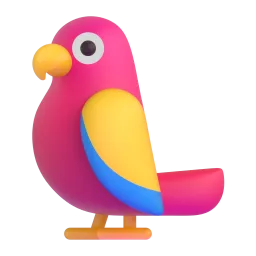
a parrotan innone lega cook
I think he will see…Maybe…It will be bigger than…
b Go to the Vocabulary Bank. Tap each card, press 🔊 and repeat. These words are in the chapter.Нажимайте на карточки, слушайте и повторяйте. Эти слова есть в главе.
Vocabulary BankCh7Chapter 7 words
A place where ships stop. →
It helps you walk. →
He works on a ship. →
A kind of sailing ship. →
c Complete the sentences from the story.Вставьте слово — предложения из истории.
Jim said to his mother at the inn.
Long John Silver was the ship's .
Silver was always smiling — a very man.
The to the island will take many weeks.
Silver walked with a because he had one leg.
When Jim saw Black Dog, he felt .
At the Spy-glass inn
10 min
a The squire sends Jim to Silver's inn with a letter. Listen once: what is Silver like?Сквайр отправляет Джима с письмом в трактир Сильвера. Каков Сильвер?
At the Spy-glass innListen first · Use 🐢 if it's fast · Текст — в конце
Squire Trelawney:Jim, take this letter to the Spy-glass inn. Give it to Long John Silver — our new cook.
Jim:Mr Silver? I have a letter from Squire Trelawney.
Long John Silver:Ah, you must be our new cabin boy! Welcome, my lad! I'm the happiest cook in Bristol, ha-ha!
Jim:He's taller and stronger than I thought — even with one leg.
Jim:Wait! That man by the door — it's Black Dog! Stop him!
Long John Silver:Black Dog? I don't know any Black Dog. Harry, run after him! Quick!
Jim:He was at our inn. He was the most dangerous of the pirates!
Long John Silver:Pirates in my inn? This is the worst day of my life! Come, Jim, we'll tell the squire together.
Jim:(He's the friendliest man I've ever met… I think I was wrong about him.)
What is Silver like?
b Listen again. Answer the cards.Послушайте ещё раз и ответьте на карточки.
Where does Silver live and work?
Who does Jim see at the inn?
What does Silver say about Black Dog?
What is Silver on the ship?
c Who says it? Choose.Кто это говорит? Выберите.
«Take this letter to the Spy-glass inn.» →
«I'm the happiest cook in Bristol!» →
«That man by the door — it's Black Dog!» →
«I don't know any Black Dog.» →
d Now open the text. Press 🔊 next to a line and say it like an actor!Откройте текст, нажимайте 🔊 и повторяйте как актёр!
Chapter 7 in short
12 min
aThe chapter in short. Read our short retelling. Does it match what you read in your book?Краткий пересказ главы. Совпадает с тем, что вы прочитали в книге?
Chapter 7 in shortTreasure Island · the chapter in short
The squire wrote a letter from Bristol: «I've bought a beautiful schooner — the Hispaniola! I've also found a cook, Long John Silver. He has only one leg, but he knows every sailor in Bristol.»
Jim said goodbye to his mother and left the Admiral Benbow. It was the saddest moment of his life. He travelled all night to Bristol.
Bristol was much bigger and noisier than his village. There were ships from all over the world, sailors with long hair and old songs everywhere. It was the most exciting place Jim had ever seen.
The squire sent Jim to Silver's inn, the Spy-glass. Silver was tall, clever and very cheerful. But in the inn Jim saw Black Dog! The pirate ran away. Silver said he didn't know him — and Jim believed him.
b True, false or not in the chapter?Верно, неверно или в главе этого нет?
The squire bought a ship called the Hispaniola.
Silver has two legs.
Bristol was smaller than Jim's village.
Jim saw Black Dog in Silver's inn.
Silver caught Black Dog.
Silver had a pet dog.
c Put the events in order: 1, 2, 3…Расставьте события по порядку: 1, 2, 3…
Jim travels to Bristol. →
Black Dog runs away from the inn. →
The squire writes a letter from Bristol. →
Jim takes a letter to the Spy-glass inn. →
Jim says goodbye to his mother. →
Jim sees the port and the ships. →
d Answer the questions. Short answers are fine.Ответьте на вопросы. Можно коротко.
What is the name of the ship?
What is the name of Silver's inn?
Who did Jim see at the inn?
comparatives · superlatives
12 min
a Read the four steps. Press 🔊 and repeat. All the examples are from the chapter.Прочитайте четыре шага, слушайте и повторяйте. Все примеры — из главы.
Grammar Easy · Грамматика без страхаbigger than · the biggest
1
Одна мысль
Сравниваем два → -er than (big → bigger than) или more … than для длинных слов (more exciting than). Самый из всех → the -est (the biggest) или the most … (the most exciting). Особые: good → better → the best, bad → worse → the worst.
2
Формула-конструктор
Bristol+was+bigger than+his village.
It was+the most exciting+place.
Silver+was+taller than+Jim thought.
short → -er / the -est · long → more / the most · good → better / the best · bad → worse / the worst
3
Смотри, как это работает · нажми 🔊
Bristol was bigger than his village.
The Hispaniola was the most beautiful ship in the port.
Silver was taller than Jim thought.
It was the saddest moment of his life.
4
Осторожно!
❌ Bristol was more big than his village. → ✅ Bristol was bigger than his village. Короткое слово → -er.
❌ It was the most exciting place that Jim ever saw. → ✅ It was the most exciting place Jim had ever seen. После the most … — had ever seen.
❌ He was the most good cook. → ✅ He was the best cook. good → better → the best.
bStep 1. Choose the right form.Шаг 1. Выберите правильную форму.
Bristol was than Jim's village.
The Hispaniola was ship in the port.
Silver was than the other sailors.
It was day of his life.
Silver was cook in Bristol.
The voyage will be than a trip to London.
cStep 2. Write the verb in the right form.Шаг 2. Напишите глагол в нужной форме.
Ships are (big) than boats.
Black Dog was (dangerous) pirate at the inn.
The sea is (cold) in winter than in summer.
Silver was (friendly) man Jim had ever met.
dStep 3. Build the sentences.Шаг 3. Соберите предложения.
talk about chapter 7
8 min
a Talk about the chapter. Answer your teacher's questions.Обсудите главу. Отвечайте на вопросы преподавателя.
Press the button · Нажмите кнопку
What was Bristol like? Was it bigger than your town?
What do you think of Long John Silver?
Why did Jim believe Silver?
What's the most exciting city you've ever visited?
Which is better — a voyage by sea or a trip by train? Why?
Who is the most interesting person in the book so far?
… is bigger / more … than…the most … I've ever…I think Silver is…I don't trust him because…
bGame: Compare the pirates! Press the button for two characters. Compare them: Silver is cleverer than Black Dog. Your teacher agrees or disagrees.Игра: сравните двух персонажей. Преподаватель соглашается или спорит.
Press the button · Нажмите кнопку
🦜 Silver & Black Dog
🧑 Jim & the squire
🩺 the doctor & the squire
⚓ Bristol & the Admiral Benbow
⛵ the Hispaniola & a small boat
🏴☠️ Billy Bones & Silver
🌊 the sea & the land
🗺️ the map & the treasure
a letter from Jim
6 min
a You are Jim. Write a letter to your mother from Bristol. Use comparatives and superlatives.Вы — Джим. Письмо маме из Бристоля: сравнения и «самый».
Example: Dear Mother, Bristol is much bigger and noisier than our village! The port is the most exciting place I've ever seen. Our ship, the Hispaniola, is the most beautiful ship here. The cook, Long John Silver, is the friendliest man in Bristol…
b Press «Отправить преподавателю» — your teacher will see your answers.Нажмите «Отправить преподавателю».
Готово? Отправьте ответы преподавателю
Ответы сразу придут преподавателю на платформу — пересылать в Telegram ничего не нужно. Нет интернета? Ответы сохранятся и отправятся сами. Открыть их может только преподаватель.
Can you…?
3 min
a Listen to your teacher. Repeat the corrected sentences.Послушайте преподавателя и повторите исправленные фразы.
Great!
Let's fix
b Can you do these things?Вы можете это сделать?
I can use 10 words from chapter 710 слов из главы 7
I can understand a scene from the chapterпонять сцену на слух
I can tell the events of the chapter in orderрассказать события по порядку
I can compare with -er / more and the -est / the mostсравнения
What do you think will happen in the next chapter? · Что, по-вашему, будет дальше?
Chapter 7 words
10 min at home
Homework, part 1 of 2: words. Mostly tapping — easy on your phone. Part 2 (grammar) is on the next page — press «Далее».Часть 1: слова главы. Ответы сохраняются сами.
a Which word is it?Какое это слово?
Many ships stop here. →
He makes food on a ship. →
An old hotel with a bar. →
Happy and friendly. →
A long journey by sea. →
b How do you say it in English?Как это по-английски?
моряк →
костыль →
шхуна →
прощаться →
comparatives · superlatives
15 min at home
Homework, part 2 of 2: grammar and the story. Look at the rule, then tap or type. At the end press «Отправить преподавателю».Часть 2: грамматика и история. В конце — «Отправить преподавателю».
Remember · Запомнитеcomparatives · superlatives
bigger+than…+(two)
the biggest+(of all)
short → -er / the -est · long → more / the most · good → better / the best
a Tap the right form.Выберите правильную форму.
A ship is than a boat.
It's book I've ever read.
Bristol is than my town.
Winter is season.
My bag is than yours.
b Write the words.Напишите слова.
Silver was (tall) than Jim.
It was (bad) day of the trip.
The port is (busy) place in Bristol.
c The story: true or false?История: верно или нет?
The squire bought a schooner. →
Jim was happy to leave his mother. →
Silver said he knew Black Dog. →
Bristol was very noisy. →
d Retell the chapter in four sentences. Use the words and the grammar of the lesson.Перескажите главу в четырёх предложениях.
Готово? Отправьте ответы преподавателю
Ответы сразу придут преподавателю на платформу — пересылать в Telegram ничего не нужно. Нет интернета? Ответы сохранятся и отправятся сами. Открыть их может только преподаватель.
extra practice
10 min
What to do
Build the sentences: tap the words in the right order. Made a mistake? Press «↺ Заново».
Find the mistake in each sentence and write the correct sentence.
Press «Проверить» after each exercise.
1. Build the sentence
2. Find the mistake
Bristol was more big than his village.
He was the most good cook.
It was the saddest day in his life than ever.
The Hispaniola was beautifuller than the other ships.
Play and review
10 min
Game time!Слова урока в играх: пары, скорость, буквы и даже детектив. Выбирайте любую.
What to do · Что делать
Play with the words from this lesson — great for review before the next lesson!Играйте со словами урока — это лучший способ повторить их.
Your best results are saved and your teacher can see them.Лучшие результаты сохраняются, преподаватель их видит.
Match upНайди пару
Tap a word, then its meaning. As fast as you can! · Нажмите слово, потом его значение.
60 seconds60 секунд
Choose the right word for the meaning. How many in one minute? · Сколько слов успеете за минуту?
Listen and spellУслышь и напиши
Listen to the word and write it. Press 🔊 to hear it again. · Послушайте слово и напишите его.
MemoryМемори
Find the pairs: a word and its meaning. Remember where the cards are! · Откройте по две карточки и найдите пары «слово — значение».
Word builderСобери слово
The letters are mixed up. Tap them in the right order. · Буквы перепутались — нажимайте их по порядку и соберите слово.
BalloonsВоздушные шарики
Guess the word letter by letter. Every wrong letter pops a balloon! · Угадайте слово по буквам. Каждая неверная буква лопает шарик.
DetectiveДетектив
Solve the case! Each clue is a task with this lesson's words and grammar. Every right answer clears one suspect. · Раскройте дело: каждая улика — задание по словам и грамматике урока.
IRIS SCHOOL · Владимир · урок 1
The Daily Stand-up
Good morning, team! A stand-up at CloudKit: who is fixing what, when is the release? 12 IT words, a podcast with a QA engineer and the grammar of everyday work: I write code — I'm fixing a bug right now. The easy way, with Russian hints.
“First, solve the problem. Then, write the code.”John Johnson
A2ITpresent simplepresent continuous60 min
The daily stand-up
10 min
In this lesson you will…
understand a team stand-up and a podcast about IT workпонимать на слух планёрку команды и подкаст
learn 12 IT words: a bug, fix, a release, a deadline…12 слов из IT
talk about your usual work: I write code. She tests apps.present simple — обычная работа
say what you're doing now: I'm fixing a bug.present continuous — что делаю сейчас
tell your teacher about your jobрассказать о своей работе
a Do you have a stand-up meeting at work? Look at the pictures. What do people say at a stand-up?У вас есть утренние планёрки (stand-up)? Что обычно говорят на них?
code
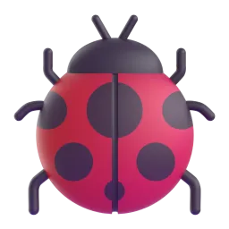
a bugtestsa releasea deadlinea stand-up
b Listen to the CloudKit team's morning stand-up. Listen once — don't read! When is the release?Послушайте утреннюю планёрку команды CloudKit. Один раз, без текста: когда релиз?
CloudKit · morning stand-upListen once without the text · Сначала без текста · Если быстро — 🐢
Dan (team lead):Good morning, everyone! Quick stand-up. Nick, what are you working on?
Nick (developer):Morning! I'm fixing a bug in the login page. Users can't log in with Google.
Dan (team lead):OK. How long do you need?
Nick (developer):About two hours. Then I'm writing the new search page.
Dan (team lead):Great. Kate?
Kate (QA):I'm testing the new version of the app. I usually test on Android, but today I'm testing on iPhones too.
Dan (team lead):Any problems?
Kate (QA):Yes, three bugs. The app is very slow on old phones.
Dan (team lead):Hmm. The release is on Friday, so we don't have much time. I'm talking to the client at eleven.
Nick (developer):Dan, are you working from home tomorrow?
Dan (team lead):Yes, I am. I always work from home on Wednesdays. OK, thanks, team! Let's go!
When is the release?
c Listen again. Who is doing it?Послушайте ещё раз. Кто это делает?
Who is fixing a bug in the login page? →
Who is testing the new version on iPhones? →
Who is talking to the client at eleven? →
Who is writing the new search page after the bug? →
d Yes or No?Да или нет?
Users can log in with Google. →
Kate usually tests on Android. →
Kate found three bugs. →
The release is on Monday. →
Dan works from home on Wednesdays. →
IT words
10 min
a Go to the Vocabulary Bank. Tap each card, press 🔊 and repeat.Нажимайте на карточки, слушайте и повторяйте.
Vocabulary Bank1AWorking in IT
b Look at the picture. Which word?Какое слово к картинке?
→
→
→
→
→
→
c What is it? Read and choose.Что это? Прочитайте и выберите.
a mistake in a program →
a piece of work you must do →
make something work again →
a new version of a program for users →
a program on a phone →
Знакомство с платформойШаги отмечаются сами, когда вы их делаете. Порядок любой.
Шагов выполнено: 0 из 6
🔊 Послушать 3 слова В уроке нажмите 🔊 рядом с тремя словами или фразами.
➕ Добавить 3 слова в «Мой словарь» На карточке слова нажмите «+ В мой словарь» — или выделите любое слово в тексте и сохраните его.
🔁 Повторить слова Откройте «Мой словарь» и нажмите «Повторить» — пройдите хотя бы одну карточку.
🇷🇺→🇬🇧 Найти английское слово по-русски Напишите русское слово — платформа подскажет английское. Сохраните его в словарь.
📘 Открыть таблицу неправильных глаголов Найдите в ней go и meet. Кнопка есть на главной и в «Моём словаре».
🎮 Сыграть в «Найди пару» Последний раздел урока — «Games». Соберите все пары со словами урока.
present simple — Grammar Easy
12 min
a Read the steps. Press 🔊 and repeat. The examples are about the CloudKit team.Прочитайте шаги, слушайте и повторяйте.
Grammar Easy · Грамматика без страхаpresent simple: what you usually do
1
Одна мысль
Обычная работа, факты, расписание → present simple: I write code, we have a stand-up. he / she / it → глагол + s: Kate tests, Nick fixes, Dan has. Нет → don't / doesn't + глагол. Вопрос → Do you…? Does she…?
2
Формула-конструктор
I / we / they+write+code every day.
Kate+tests+apps.
She+doesn't+like+long meetings.
Do+you+work+from home?
he / she / it → +s · fix → fixes · have → has · после does / doesn't — без -s
3
Смотри, как это работает · нажми 🔊
Kate tests apps.
We have a stand-up at nine.
Dan works from home on Wednesdays.
Do you work from home?
4
Осторожно!
❌ She test apps. → ✅ She tests apps. he / she / it → +s.
❌ He don't work on Saturdays. → ✅ He doesn't work on Saturdays. he / she → doesn't.
❌ Does she tests apps? → ✅ Does she test apps? После does — без -s.
bStep 1. Choose.Шаг 1. Выберите.
Kate apps.
I code every day.
Dan from home on Wednesdays.
Our team a stand-up at nine.
We long meetings.
Nick test on iPhones.
cStep 2. Questions.Шаг 2. Вопросы.
you work from home?
Kate write reports?
What time the meeting start?
Do you like your job? — Yes, .
dStep 3. Write the verb.Шаг 3. Напишите глагол.
Kate (start) work at nine.
Nick (fix) bugs every day.
I (not / work) on Saturdays.
your team (use) Jira?
eStep 4. About YOU and your job. Two sentences.Шаг 4. Два предложения о вашей работе.
Kate's day: a podcast
8 min
a Kate from CloudKit is a guest on the podcast «Tech Lives». Listen once. Is this week a usual week for her?Кейт — гость подкаста. Один раз: это обычная неделя для неё?
Podcast «Tech Lives»: a QA engineerUse 🐢 if it's too fast · Текст — в конце
Host:Welcome to «Tech Lives». Today my guest is Kate. She's a QA engineer at CloudKit. Kate, what does a QA engineer do?
Kate (QA):I test apps. I look for bugs before the users find them!
Host:What does your usual day look like?
Kate (QA):I start work at nine. First, we have a short stand-up meeting. Then I test new features and I write reports about bugs.
Host:Do you work in the office?
Kate (QA):Three days a week. On Wednesdays and Fridays I work from home. I don't like long meetings, so I work with headphones!
Host:And what are you doing this week?
Kate (QA):This week is crazy. We're preparing a big release, so I'm testing a lot and I'm staying late.
Host:Does your team often work late?
Kate (QA):No, not often. Only before a release. Usually I finish at six and I go to the gym.
Is this week a usual week for Kate?
b Listen again. Yes or No?Ещё раз. Да или нет?
Kate looks for bugs. →
She starts work at ten. →
She works from home on Wednesdays and Fridays. →
She likes long meetings. →
This week she is staying late. →
Her team often works late. →
cSort it. Is it about usually or about now / this week? Look at the verbs — this is the next grammar!Обычно или сейчас / на этой неделе? Посмотрите на глаголы — это следующая грамматика.
usually / every daynow / this week
I start work at nine.
We're preparing a big release.
I write reports about bugs.
I'm staying late.
I finish at six and I go to the gym.
I'm testing a lot.
now or usually? — Grammar Easy
10 min
a Read the steps. Press 🔊 and repeat.Прочитайте шаги, слушайте и повторяйте.
Grammar Easy · Грамматика без страхаpresent continuous: now and this week
1
Одна мысль
Сейчас, в эти дни, текущий проект → am / is / are + -ing: I'm fixing a bug, we're preparing a release. Сравните: обычно → tests, сейчас / сегодня → is testing. Глаголы like, know, need, want обычно без -ing: I need two hours.
2
Формула-конструктор
I+'m+fixing+a bug.
We+'re+preparing+a release.
Kate+usually+tests+on Android…
…but today+she's+testing+on iPhones.
usually, every day, on Fridays → tests · now, today, this week, Look! → is testing
3
Смотри, как это работает · нажми 🔊
Nick is fixing a bug.
Kate usually tests on Android, but today she's testing on iPhones.
We're preparing a big release.
Are you working from home today?
4
Осторожно!
❌ I fixing a bug. → ✅ I'm fixing a bug. Нужно am / is / are.
❌ She is test the app. → ✅ She is testing the app. Нужно -ing.
❌ I'm needing two hours. → ✅ I need two hours. need, like, know — без -ing.
bStep 1. am, is, are, isn't or Are?Шаг 1. am, is, are, isn't или Are?
I testing the app now.
Nick fixing a bug.
We preparing a release.
The server working — it's down!
you working from home today?
cStep 2. Now or usually? Choose.Шаг 2. Сейчас или обычно?
Kate usually on Android.
Today she on iPhones.
I from home on Fridays.
Shh! Dan to the client.
This week we late.
Our team a stand-up every morning.
dStep 3. Write.Шаг 3. Напишите.
Right now Nick (write) the search page.
He usually (finish) at six.
This week I (learn) Python.
eStep 4. Your stand-up! What are you working on this week?Шаг 4. Ваша планёрка: над чем вы работаете на этой неделе?
Team chat
6 min
a Nick writes in the team chat. Use everything from today: IT words, works / is working.Ник пишет в рабочий чат. Всё вместе: слова урока, present simple и continuous.
#cloudkit-team · Nick
Hi team! Quick update: I (fix) the login bug right now.
Kate (test) on iPhones today and she found three .
The app is slow on old phones. We (not / have) much time — the release is on Friday!
I usually (work) from home on Wednesdays, but tomorrow I (come) to the office.
(Dan / talk) to the client now? — Yes, he is.
Don't forget: the (дедлайн) is Friday at 5 p.m.!
IT words: stress
4 min
a Where is the strong part? Press 🔊 and repeat. Many IT words sound different in Russian — be careful!Где ударение? В английском оно часто не как в русском: deVEloper, reLEASE.
de-VE-lo-per
re-LEASE
UP-date
MEE-ting
en-gi-NEER
com-PU-ter
b Press 🔊. Now or usually? Only listen!Нажмите 🔊. Сейчас или обычно? Только на слух!
→
→
→
→
→
→
my stand-up
8 min
aStep 1. Answer your teacher. Short answer + one more sentence.Шаг 1. Короткий ответ + ещё одно предложение.
Press the button · Нажмите кнопку
What do you do at work?
What time do you usually start work?
Do you work from home? How often?
Do you have stand-up meetings?
What are you working on this week?
What programs or tools do you use every day?
Do you like your job? Why?
What are you learning now?
I work as a…I usually…This week I'm working on…I don't…We use…
bStep 2. Your stand-up! Your teacher is your team lead. Tell them in 3 sentences: what you usually do, what you're doing this week, any problems.Шаг 2. Преподаватель — ваш тимлид. Три фразы: что вы обычно делаете, над чем работаете сейчас, какие проблемы.
This week I'm…There's a bug in…The deadline is…I need… hours.
about my job
5 min
a Write about YOUR job: five sentences.Напишите о своей работе: пять предложений.
Example: I'm a backend developer. I write code in Python and I fix bugs. I usually work from home on Mondays. This week I'm working on a new payment system. The deadline is on Friday, so I'm staying late.
b Press «Отправить преподавателю».Нажмите «Отправить преподавателю».
Готово? Отправьте ответы преподавателю
Ответы сразу придут преподавателю на платформу — пересылать в Telegram ничего не нужно. Нет интернета? Ответы сохранятся и отправятся сами. Открыть их может только преподаватель.
Can you…?
3 min
a Listen to your teacher. Repeat the corrected sentences.Послушайте преподавателя и повторите исправленные фразы.
Great!
Let's fix
b Can you do these things?Вы можете это сделать?
I can understand a stand-up and a podcast about IT workпонять планёрку и подкаст об IT
I can use 12 IT wordsиспользовать 12 слов из IT
I can talk about my usual work: I write code. She tests apps.рассказать об обычной работе
I can say what I'm doing now: I'm fixing a bug.сказать, что делаю сейчас
What do you want to learn in English for your job? · Что вам нужно в английском для работы?
IT words
10 min at home
Homework, part 1 of 2: words. Mostly tapping — easy on your phone. Part 2 (grammar) is on the next page — press «Далее».Часть 1: слова урока. Ответы сохраняются сами.
a Which word?Какое слово?
→
→
→
→
→
→
b How do you say it in English?Как это по-английски?
баг, ошибка в программе →
срок, дедлайн →
тестировать →
работать из дома →
релиз →
present simple · continuous
15 min at home
Homework, part 2 of 2: grammar. Look at the formulas, then tap or type. At the end press «Отправить преподавателю».Часть 2: грамматика. В конце — «Отправить преподавателю».
Remember · Запомнитеusually → tests · now → is testing
Kate+usually+tests+on Android.
Today+she's+testing+on iPhones.
he / she → +s · doesn't / does + глагол без -s · сейчас → am / is / are + -ing
a Choose.Выберите.
My brother in IT.
you use Jira at work?
Kate like long meetings.
Look! The server again.
We usually a release every month.
This week I a new feature.
b Write the verbs.Напишите глаголы.
Nick usually (start) at ten.
Today he (start) at eight.
Kate (work) from home on Fridays?
c Build the sentences.Соберите предложения.
d About you: three sentences.О себе: три предложения.
Готово? Отправьте ответы преподавателю
Ответы сразу придут преподавателю на платформу — пересылать в Telegram ничего не нужно. Нет интернета? Ответы сохранятся и отправятся сами. Открыть их может только преподаватель.
extra practice
10 min
What to do
Build the sentences: tap the words in the right order. Made a mistake? Press «↺ Заново».
Find the mistake in each sentence and write the correct sentence.
Press «Проверить» after each exercise.
1. Build the sentence
2. Find the mistake
She test apps.
I fixing a bug.
He don't work on Saturdays.
I'm needing two hours.
Play and review
10 min
Game time!Слова урока в играх: пары, скорость, буквы и даже детектив. Выбирайте любую.
What to do · Что делать
Play with the words from this lesson — great for review before the next lesson!Играйте со словами урока — это лучший способ повторить их.
Your best results are saved and your teacher can see them.Лучшие результаты сохраняются, преподаватель их видит.
Match upНайди пару
Tap a word, then its meaning. As fast as you can! · Нажмите слово, потом его значение.
60 seconds60 секунд
Choose the right word for the meaning. How many in one minute? · Сколько слов успеете за минуту?
Listen and spellУслышь и напиши
Listen to the word and write it. Press 🔊 to hear it again. · Послушайте слово и напишите его.
MemoryМемори
Find the pairs: a word and its meaning. Remember where the cards are! · Откройте по две карточки и найдите пары «слово — значение».
Word builderСобери слово
The letters are mixed up. Tap them in the right order. · Буквы перепутались — нажимайте их по порядку и соберите слово.
BalloonsВоздушные шарики
Guess the word letter by letter. Every wrong letter pops a balloon! · Угадайте слово по буквам. Каждая неверная буква лопает шарик.
DetectiveДетектив
Solve the case! Each clue is a task with this lesson's words and grammar. Every right answer clears one suspect. · Раскройте дело: каждая улика — задание по словам и грамматике урока.
IRIS SCHOOL · Юля · урок 2
A New Chapter
Two years after moving to Edinburgh, Anna has set up a bakery. Starting again, a podcast and a blog — and the bridge from the past to now: for, since, ago, present perfect simple and continuous.
“Rome wasn't built in a day.”English proverb
B1Starting againPresent perfectfor · since · ago60–70 min
starting again
10 min
In this lesson you will…
learn 10 words and phrases about starting again: work, business and a new life
understand a podcast interview and a blog about Anna's new chapter
choose between past simple and present perfect with for, since, ago
choose between present perfect simple and continuous: I've baked 300 pies / I've been baking since five
tell the story of a new chapter in your life
a Remember Anna from our last lesson? She moved from Kazan to Edinburgh and was getting used to the little things. Two years on, her life has changed again. Look at the pictures: what do you think she does now?
piesa small shopa bakerregularsdancingcalls home
b Go to the Vocabulary Bank. Tap each card, press 🔊 and repeat. Then complete the sentences.
Vocabulary Bank1BStarting again
We don't pay for adverts. All our customers come by .
She had no plan and no money. She started from .
Mr Brown comes in for a coffee every morning. He is one of our .
In my first winter I missed my family a lot. I felt very .
Leaving a good job is scary — you have to a risk.
It was hard work, but it has off.
It's not easy to friends when you don't know anyone.
She the bakery with two assistants.
c Words from our last lesson. Complete them — you will hear them again today.Слова прошлого урока — они сегодня встретятся снова.
It took me a year to settle .
Are you getting used the early mornings?
We keep in on WhatsApp every day.
When I look on my first year, I smile.
Anna's new chapter
10 min
a Listen to the podcast «New Chapters». Anna is the guest. What is the conversation mainly about?
Podcast: «New Chapters»Listen first · Use 🐢 if it's fast · Text at the end
James (host):Welcome to «New Chapters», the podcast about people who start again. My guest today is Anna. She moved from Kazan to Edinburgh two years ago, and now she runs a small Russian bakery. Anna, welcome!
Anna:Thanks, James! Sorry if I sound tired — I've been baking since five o'clock this morning.
James (host):Five o'clock! So, what did you use to do in Kazan?
Anna:I used to work in a bank. It was a good job, but I wasn't happy. When I moved here, I felt really homesick, and I missed my mum's pies. So I started baking them at home.
James (host):And people liked them?
Anna:They loved them! Then my neighbour asked me to make fifty pies for her wedding. That was the moment I decided to take a risk. I set up the bakery from scratch and opened it in April.
James (host):So you've had the bakery for six months now. How's it going?
Anna:Better than I expected! We don't advertise — it's all word of mouth. Some of our regulars have been coming every day since we opened.
James (host):What's been the hardest thing?
Anna:The early mornings! I still haven't got used to getting up at four. But all the hard work has paid off.
James (host):And have you settled in? Have you made friends?
Anna:Yes, I have. I've been taking Scottish dancing classes since January — that's where I've made most of my friends. And I keep in touch with my family every day. My mum has visited twice. She's tried every pie!
James (host):I'm sure she approved! Anna, thank you so much.
The conversation is mainly about…
b Listen again. Complete the facts.
Anna moved to Edinburgh years ago.
Today she has been baking since o'clock.
In Kazan she used to work in a .
Her neighbour asked for pies for her wedding.
She opened the bakery in .
She has been taking dancing classes since .
Her mum has visited .
c Look at these sentences from the podcast. Is each one about a finished time in the past, or about a time from the past until now? Look at the verb form — this is the grammar of the next stage.Законченное время в прошлом или «с тех пор и до сих пор»? Посмотрите на форму глагола — это грамматика следующего этапа.
She moved to Edinburgh two years ago. →
I've been baking since five o'clock this morning. →
I opened the bakery in April. →
You've had the bakery for six months. →
I used to work in a bank. →
Some of our regulars have been coming every day since we opened. →
for · since · ago
14 min
a Read the Grammar Bank. All the examples are from Anna's story.Все примеры — из истории Анны.
Grammar Bank1Bpast simple or present perfect? for · since · ago
time
form
example
time words
finished — a time in the past
past simple
She moved to Edinburgh two years ago. When did she open the bakery? — In April.
ago, in April, last year, yesterday, when I was…
from the past until now
present perfect (simple or continuous)
She's lived in Edinburgh for two years. She's had the bakery since April. How long have you been learning English?
for, since, How long…?, all my life
for + a period: for six months, for ages · since + a starting point: since April, since 2024, since I moved here · ago + a period, with the past simple: two years ago.
How long…? → present perfect. When…? → past simple.
State verbs (know, have = own, be, like) — present perfect simple only: I've known her for years. ✗ I've been knowing
Подсказка. По-русски «Я живу здесь два года» — настоящее время, а по-английски — present perfect: I've lived / I've been living here for two years. ✗ I live here for two years. ✗ I'm living here since 2024.
Anna to Edinburgh two years ago.
She in Edinburgh for two years, and she loves it.
She the bakery since April.
the bakery? — In April.
How long Scottish dancing? — Since January.
I my best friend for twenty years.
bfor, since or ago?for, since или ago?
She has had the bakery six months.
She has been dancing January.
She moved to Scotland two years .
I haven't seen my cousin ages.
We've been friends we were at school.
The bakery opened six months .
c Write the verb in the past simple or the present perfect.Напишите глагол: past simple или present perfect.
Anna (work) in a bank before she moved.
She (live) in Scotland since 2024.
When (she / start) baking?
How long (you / know) your best friend?
I (not / see) my parents since the summer.
We (meet) at a dance class last year.
d Build the sentences. Then ask your teacher question 1 and 2.Соберите предложения. Потом задайте преподавателю вопросы 1 и 2.
A Saturday at Babushka's Kitchen
9 min
a Anna calls her bakery «Babushka's Kitchen». Read her blog post from last Saturday. How does she feel at the end of the day?
Babushka's Kitchen · Saturday, 3 p.m.
It's three o'clock and I've been on my feet since five this morning. We've sold over three hundred pies today, and we've completely run out of cabbage pies. Sorry, everyone!
My hands are covered in flour because I've been making dough all afternoon. Ivan, my new assistant, has only been working here for two weeks, but he's already learned all my mum's recipes. He's a star.
I've been trying to make the perfect honey cake all week. I've baked it five times, and I think I've finally got it right — the regulars have tried it, and they love it!
Two years ago I didn't know anyone in this city. Today a customer said, «Your bakery feels like home.» I've never been so happy.
1. How many pies has the bakery sold today?
2. Why are Anna's hands covered in flour?
3. How long has Ivan been working at the bakery?
4. How many times has Anna baked the honey cake?
b Look at the verbs. Is the sentence about the result (what is done, how many?) or about the activity (what she has been doing, how long?)? This is the grammar of the next stage.Результат (сколько? что сделано?) или процесс (чем занималась, как долго?) — это грамматика следующего этапа.
We've sold over three hundred pies today. →
I've been making dough all afternoon. →
He's already learned all my mum's recipes. →
I've been trying to make the perfect honey cake all week. →
I've baked it five times. →
He's only been working here for two weeks. →
present perfect simple or continuous?
12 min
a Read the Grammar Bank. The examples are from Anna's blog.Примеры — из блога Анны.
Grammar Bank1Bpresent perfect simple vs continuous
present perfect simple have / has + V3
present perfect continuous have / has been + -ing
focus
the result: what is done, how many, how many times
the activity: how long; often not finished, or it explains what we can see now
examples
We've sold 300 pies. He's learned all the recipes. I've baked it five times.
I've been baking since five. My hands are covered in flour — I've been making dough.
questions
How many pies have you sold?
How long have you been waiting?
State verbs (know, have = own, be, like, love, understand) — simple only: I've known Ivan for years.
live, work, study, teach + for / since — both forms are fine: I've lived / I've been living here for two years.
Подсказка. «Сколько сделал? Что готово?» → simple. «Чем занимался и как долго (и, может быть, ещё занимаюсь)?» → continuous.
I'm exhausted. I since five o'clock.
We over three hundred pies today.
Ivan all the recipes already.
I Ivan's family for years.
How many times the honey cake?
Your eyes are red. ?
b Write the verb: present perfect simple or continuous.Напишите глагол: present perfect simple или continuous.
Ivan (work) at the bakery for two weeks.
How many pies (you / sell) today?
I (wait) for you for an hour! Where are you?
She (not / finish) the cake yet.
They (know) each other since school.
Why are you so dirty? — I (play) football.
c Build the sentences.Соберите предложения.
Anna's email to her mum
7 min
a Anna writes to her mum in Kazan. Use everything from today: the new words, the past simple, the present perfect simple and continuous.Письмо Анны маме. Всё вместе: слова урока, past simple, present perfect simple и continuous.
To: Mum · Subject: News from Edinburgh
Hi Mum! Sorry I (not / write) for two weeks — I've been so busy!
Ivan (start) working here two weeks ago.
He (already / learn) all your recipes!
I (try) to make your honey cake all week…
…and I (bake) it five times!
I (know) my neighbour Fiona for two years now — she's like family.
We don't advertise. It's all word of .
All the hard work has paid .
I (take) dancing classes since January, and I've made lots of friends.
I think I have finally settled . Love, Anna
weak forms: have · been · for
4 min
a In fast speech have and has are weak — /əv/, /əz/ — been is /bɪn/, not /biːn/, and for is /fə/. Listen and repeat.В быстрой речи have, has, been и for звучат слабо и коротко. Послушайте и повторите.
How LONG have you been WAITing? — /həv jə bɪn/
I've been BAking since FIVE. — /aɪv bɪn/
She's LIVED here for TWO YEARS. — /fə/
We've SOLD three hundred PIES.
b Press 🔊. Present perfect or past simple? Listen for the small 've or 's.Послушайте: есть ли маленькое 've / 's? Present perfect или past simple?
→
→
→
→
→
→
how long…?
7 min
a Answer your teacher's questions. Use for / since / ago and the right tense. Then ask your teacher two of them.Отвечайте с for / since / ago. Потом задайте два вопроса преподавателю.
Press the button
How long have you lived in your flat? When did you move there?
How long have you been learning English?
How long have you known your best friend? Where did you meet?
What have you been doing a lot recently?
Have you ever taken a big risk? Has it paid off?
Have you ever felt homesick? When?
Is there a café or shop where you are a regular? How long have you been going there?
What have you achieved this year that you are proud of?
I've lived there for… / since…I moved there … ago.I've been …ing since…I've known her for…We met in…It has really paid off.
a new chapter in my life
7 min
a Write about a new chapter in your life — a new job, a new home or a new hobby. One or two sentences in each line. Then read it to your teacher.Напишите о новом этапе своей жизни: новая работа, дом или хобби. 1–2 предложения в строке.
b Press «Отправить преподавателю» — your teacher will see your answers.
Готово? Отправьте ответы преподавателю
Ответы сразу придут преподавателю на платформу — пересылать в Telegram ничего не нужно. Нет интернета? Ответы сохранятся и отправятся сами. Открыть их может только преподаватель.
Can you…?
3 min
a Your teacher gives feedback. Write the corrections.
Great!
Fix it
b Can you do these things?
I can talk about starting again with the new words
I can choose between When did…? and How long have…?; use for, since, ago
I can choose between I've baked and I've been baking
I can understand a podcast and a blog about a new life
What was the most useful thing today?
starting again
10 min at home
Homework, part 1 of 2: words. Mostly tapping — easy on your phone. Part 2 (grammar) is on the next page — press «Далее».Часть 1: слова урока. Ответы сохраняются сами.
a Read and look at the picture. Which phrase is it?Прочитайте и выберите подходящую фразу.
She opened her own shop last year. →
People hear about the café from their friends, not from adverts. →
Mr Brown has a coffee here every single morning. →
I miss my family and my home town so much. →
At the start we had no money, no plan and no customers. →
Years of hard work — and now the business is a success. →
He left a safe job to start a band. →
b How do you say it in English? Write the word or phrase.Как это по-английски? Напишите слово или фразу.
с нуля →
рисковать →
управлять (бизнесом) →
заводить друзей →
достигать →
окупиться, принести плоды →
тоскующий по дому →
for · since · ago · present perfect
20 min at home
Homework, part 2 of 2: grammar. Read the reminder, then tap or type. At the end press «Отправить преподавателю».Часть 2: грамматика урока. В конце — «Отправить преподавателю».
Remember · ЗапомнитеWhen…? / How long…?
She+moved+two years ago.
She's+lived / been living+here for two years.
ago, in April, last year → past simple. for (период) / since (с момента), How long…? → present perfect.
Remember · Запомнитеsimple or continuous?
We've+sold+300 pies.
I've+been baking+since five.
Результат, сколько → simple. Процесс, как долго → continuous. know, have, like — только simple.
afor, since or ago? Tap.for, since или ago?
I have lived here 2020.
She started her job three months .
We've known each other ten years.
He's been working there he left school.
They got married a long time .
I haven't been to the cinema ages.
b Past simple or present perfect? Tap.Past simple или present perfect?
I in a bank for five years, but I left in 2023.
How long your car?
When to Edinburgh?
My brother in Spain since last summer.
We each other since we were five.
c Present perfect simple or continuous? Tap.Simple или continuous?
She three cakes this morning.
Ivan at the bakery since the beginning of October.
How many emails today?
How long for the bus?
I this book twice.
d Write the verb in the right form.Напишите глагол в нужной форме.
How long (you / learn) to drive?
She (open) her café three years ago.
I (not / finish) my report yet.
We (paint) the kitchen all weekend, and we still haven't finished!
He (have) his dog since 2022.
e Find the mistake and write the correct sentence.Найдите ошибку и напишите правильное предложение.
I live here for two years.
She has moved to Scotland two years ago.
I've been knowing him since school.
How long are you working here?
f Build the sentences.Соберите предложения.
g About you. Four true sentences.О себе: четыре предложения.
Готово? Отправьте ответы преподавателю
Ответы сразу придут преподавателю на платформу — пересылать в Telegram ничего не нужно. Нет интернета? Ответы сохранятся и отправятся сами. Открыть их может только преподаватель.
extra practice
10 min
What to do
Build the sentences: tap the words in the right order. Made a mistake? Press «↺ Заново».
Find the mistake in each sentence and write the correct sentence.
Press «Проверить» after each exercise.
1. Build the sentence
2. Find the mistake
I live here for two years.
She has moved to Scotland two years ago.
I've been knowing her since school.
How long are you working here?
Play and review
10 min
Game time!Слова урока в играх: пары, скорость, буквы и даже детектив. Выбирайте любую.
What to do · Что делать
Play with the words from this lesson — great for review before the next lesson!Играйте со словами урока — это лучший способ повторить их.
Your best results are saved and your teacher can see them.Лучшие результаты сохраняются, преподаватель их видит.
Match upНайди пару
Tap a word, then its meaning. As fast as you can! · Нажмите слово, потом его значение.
60 seconds60 секунд
Choose the right word for the meaning. How many in one minute? · Сколько слов успеете за минуту?
Listen and spellУслышь и напиши
Listen to the word and write it. Press 🔊 to hear it again. · Послушайте слово и напишите его.
MemoryМемори
Find the pairs: a word and its meaning. Remember where the cards are! · Откройте по две карточки и найдите пары «слово — значение».
Word builderСобери слово
The letters are mixed up. Tap them in the right order. · Буквы перепутались — нажимайте их по порядку и соберите слово.
BalloonsВоздушные шарики
Guess the word letter by letter. Every wrong letter pops a balloon! · Угадайте слово по буквам. Каждая неверная буква лопает шарик.
DetectiveДетектив
Solve the case! Each clue is a task with this lesson's words and grammar. Every right answer clears one suspect. · Раскройте дело: каждая улика — задание по словам и грамматике урока.
IRIS SCHOOL · Юля · урок 3
The Day Everything Went Wrong
A big wedding order, a broken oven and a neighbour who came to the rescue. Words for telling a story, a podcast and a newspaper article — and the narrative tenses: I was making the dough when the oven broke down. Ivan had already left.
“Every cloud has a silver lining.”English proverb
B1Telling a storyNarrative tensesPast perfect60–70 min
telling a story
10 min
In this lesson you will…
learn 10 words and phrases for telling a story10 слов и фраз, чтобы рассказывать истории
understand Anna's story on the podcast and an article in the local paperпонять историю Анны в подкасте и статью в газете
use the past simple and the past continuous: I was making the dough when the oven broke downpast simple и past continuous
use the past perfect for the earlier past: he had already leftpast perfect — «ещё раньше»
tell your own story — «it was a disaster, but…»рассказать свою историю
a Remember Anna and her bakery «Babushka's Kitchen» in Edinburgh? Look at the pictures. What do you think went wrong on the day of a big wedding order?Помните Анну и её пекарню в Эдинбурге? Что, по-вашему, пошло не так в день большого свадебного заказа?
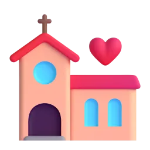
a weddinga big cakethe oven?rainthe café next doorlate!
b Go to the Vocabulary Bank. Tap each card, press 🔊 and repeat. Then match the meanings.
Vocabulary Bank1CTelling a story
to stop working (a machine) →
to help someone in trouble →
to suddenly understand →
to succeed in doing something difficult →
to be later than planned →
finally, after a lot of problems →
c Complete the sentences.
Our car broke on the motorway.
The party turned really well.
I'm running — sorry, I'll be there in ten minutes.
Everything went : the train was late and it started to rain.
, I had my umbrella with me.
We to catch the last bus.
Anna's story
10 min
a Listen to the podcast «New Chapters». James talks to Anna again. Why was it «the worst day — and the best»?
Podcast: «New Chapters» · a storyListen first · Use 🐢 if it's fast · Text at the end
James (host):Welcome back to «New Chapters». Anna is with us again — the owner of Babushka's Kitchen in Edinburgh. Anna, you said you had a story for us.
Anna:Oh yes! It was the worst day of my life — and the best. It was a Saturday in June. We had our biggest order ever: a wedding cake and two hundred pies for a wedding at four o'clock.
James (host):What happened?
Anna:I got to the bakery at five in the morning. It was raining, and I was feeling a bit nervous. I was making the dough for the pies when suddenly the oven broke down.
James (host):Oh no!
Anna:I tried to call Ivan, my assistant, but he didn't answer — he was flying to Moscow for his holiday! I started to panic.
James (host):So what did you do?
Anna:Then I realised that the café next door had a big oven. I ran there. Luckily, the owner, Fiona, was already working. She came to the rescue — she let me use her oven all morning.
James (host):And the wedding cake?
Anna:While the pies were baking at Fiona's, I was decorating the cake in my kitchen. We were running late, of course. When I arrived at the hotel, the guests were already sitting at the tables!
James (host):Were they angry?
Anna:Not at all! In the end, everything turned out well. The bride told me it was the best cake she had ever eaten. And now Fiona and I are good friends.
Why was it «the worst day — and the best»?
b Listen again. Complete the facts.
The wedding was at o'clock.
Anna got to the bakery at in the morning.
The order was a wedding cake and pies.
Ivan was flying to .
The owner of the café next door is called .
When Anna arrived, the guests were sitting at the .
c Look at these sentences from the story. Is each one an event (what happened next) or the background (what was going on at that moment)? Look at the verb — this is the grammar of the next stage.Событие (что случилось) или фон (что происходило в тот момент)? Посмотрите на глагол — это грамматика следующего этапа.
It was raining. →
Suddenly the oven broke down. →
I was making the dough. →
I ran there. →
The guests were already sitting at the tables. →
She came to the rescue. →
past simple or past continuous?
13 min
a Read the Grammar Bank. All the examples are from Anna's story.Все примеры — из истории Анны.
Grammar Bank1Cpast simple vs past continuous
past continuous was / were + -ing
past simple V2 / -ed
use
the background: what was going on at a moment in the past (often interrupted)
the events: what happened, one after another
examples
It was raining. I was making the dough…
…when the oven broke down. I tried to call Ivan. Then I ran to the café.
linkers
while / as + past continuous: While the pies were baking, I was decorating the cake.
when + past simple: When the oven broke down, I panicked.
Long background action + short event: I was walking home when I met Tom.
Two background actions at the same time: While she was baking, I was decorating.
State verbs (know, want, be, have = own) — no continuous: I wanted to cry. ✗ I was wanting
Подсказка. «Я месила тесто, когда печь сломалась» — фон (процесс) → was making; событие (раз — и случилось) → broke down. Русский несовершенный вид часто = past continuous, совершенный = past simple.
I the dough when the oven broke down.
While the pies were baking, Anna the cake.
Ivan didn't answer because he to Moscow.
When the oven broke down, Anna immediately Ivan.
It when Anna got to the bakery.
As she was running to the café, she on the wet street.
b Write the verbs: past simple or past continuous.
I (walk) home when I (meet) an old friend.
While we (have) dinner, the lights (go) out.
What (you / do) when I called you?
She (not / listen) when the teacher (explain) the task.
c Build the sentences.
d Ask your teacher question 3 from c. Then answer it yourself.
the local paper
9 min
a A week later the local paper wrote about Anna. Read the article. What new information is there, which Anna didn't tell on the podcast?
Edinburgh Evening News · How a Russian bakery saved a wedding
Wedding guests at the Balmoral Hotel enjoyed a very special cake last Saturday — but they had no idea how close it came to disaster.
Anna Petrova, who opened Babushka's Kitchen in Leith two years ago, had been working on the order for a week. On the big day her oven broke down at half past five in the morning. Her assistant had already left for a holiday, and the wedding was only ten hours away.
"I had never felt so helpless," says Anna. But her neighbour Fiona MacLeod, who runs the café next door, came to the rescue. The two women baked two hundred pies in Fiona's oven while it was raining outside and customers were queuing for coffee.
The cake arrived twenty minutes late. "Nobody noticed," laughs the bride, Emily Grant. "We had already started the speeches. It was the best cake I'd ever tasted."
b True or false?
Anna opened her bakery two years ago. →
The oven broke down on the morning of the wedding. →
Ivan helped Anna that morning. →
Fiona works in the café next door. →
The cake arrived on time. →
The guests noticed that the cake was late. →
c Which happened first? Look at had + V3 — the past perfect. This is the grammar of the next stage.Что произошло раньше? Посмотрите на had + V3 — это следующая грамматика.
Her assistant had already left for a holiday. / Her oven broke down. → first:
The cake arrived. / They had already started the speeches. → first:
Anna had been working on the order for a week. / The big day came. → first:
the past perfect
12 min
a Read the Grammar Bank. The examples are from the article.Примеры — из статьи.
Grammar Bank1Cpast perfect: had + V3
form
use
examples
had + V3 I'd left · she hadn't seen · Had you met…?
the earlier past: something happened before another moment in the past
When Anna called Ivan, he had already left. (first he left → then she called)
The cake arrived late. They had already started the speeches. It was the best cake I'd ever tasted.
Time line: had left (1) → called (2) → now.
Typical words: already, never… before, by the time, because, realised that.
When the order is clear (first… then…, after), the past simple is enough: First he left, then she called.
Compare: When I arrived, the guests were sitting (in the middle of it) · When I arrived, the guests had sat down (it was finished before) · When I arrived, the guests sat down (after I arrived).
Подсказка. «Когда я приехала, гости уже начали речи» — это случилось раньше другого прошлого → had started. В русском такого времени нет — спрашивайте себя: «Это было ещё раньше?»
When Anna got to the hotel, the guests the speeches.
She called Ivan, but he for Moscow an hour before.
I couldn't get in because I my keys at home.
It was the best cake she .
When we arrived at the station, the train .
When Anna opened the fridge, she saw that somebody all the cream!
b Write the verbs: past simple or past perfect.
By the time the engineer (arrive), Anna (bake) all the pies.
I (realise) that I (forget) the cake knife.
The guests (already / eat) the starters when the cake came.
She (never / bake) for two hundred people before.
c Build the sentences.
Anna's message to her mum
7 min
a Anna writes to her mum in Kazan about the wedding day. Use everything from today: the new words, past simple, past continuous and past perfect.Сообщение Анны маме. Всё вместе: слова урока, past simple, past continuous и past perfect.
Anna → Mum
Hi Mum! You won't believe what happened on Saturday. I (make) the dough when the oven (break) down!
Ivan couldn't help — he (already / leave) for Moscow.
At first I started to , but then I realised that Fiona's café had a big oven.
Luckily, she (work) already, and she came to the .
We were running , of course. When I arrived, the guests (sit) at the tables.
But in the , everything turned out well. The bride said it was the best cake she (ever / eat)!
weak was · were · had
4 min
a In a story was, were and had are weak: /wəz/, /wə/, /əd/ — I'd, she'd. The big words are strong. Listen and repeat.В рассказе was, were, had звучат слабо: /wəz/, /wə/, /əd/. Громко — только главные слова.
I was MAKing the DOUGH when the OVen broke DOWN. — /wəz/
The GUESTS were SITting at the TAbles. — /wə/
He'd alREAdy LEFT. — /hiːd/
It was the BESTCAKE I'd EVer TASTed.
b Press 🔊. Which weak word do you hear — was, were or had ('d)?Нажмите 🔊. Какое слабое слово вы слышите?
→
→
→
→
→
→
it was a disaster, but…
8 min
a Answer your teacher's questions. Tell a short story: set the scene (past continuous), say what happened (past simple), and what had happened before (past perfect).Расскажите короткую историю: фон (past continuous), события (past simple), что было ещё раньше (past perfect).
Press the button
Tell me about a day when everything went wrong.
Has your car, computer or phone ever broken down at the worst moment? What were you doing?
Tell me about a time when someone came to the rescue.
Have you ever been very late for something important? What had happened?
Tell me about a time you panicked — and then managed to do it.
What were you doing this time last year?
Tell me about a party or a wedding you remember.
Tell me about the best meal you'd ever had.
It was… and I was …ing when suddenly…I realised that I had…Luckily,…Then…In the end, it turned out…
a short story
7 min
a Write a short story about a day when something went wrong — but turned out well. One or two sentences in each line. Then read it to your teacher.Напишите короткую историю о дне, когда что-то пошло не так, но закончилось хорошо. 1–2 предложения в строке.
b Press «Отправить преподавателю» — your teacher will see your answers.
Готово? Отправьте ответы преподавателю
Ответы сразу придут преподавателю на платформу — пересылать в Telegram ничего не нужно. Нет интернета? Ответы сохранятся и отправятся сами. Открыть их может только преподаватель.
Can you…?
3 min
a Your teacher gives feedback. Write the corrections.
Great!
Fix it
b Can you do these things?
I can tell a story with the new words and phrases
I can choose between I was making (background) and it broke down (event)
I can use the past perfect for the earlier past: he had already left
I can understand a podcast story and a newspaper article
What was the most useful thing today?
telling a story
10 min at home
Homework, part 1 of 2: words. Mostly tapping — easy on your phone. Part 2 (grammar) is on the next page — press «Далее».Часть 1: слова урока. Ответы сохраняются сами.
a Read and choose the phrase.Прочитайте и выберите подходящую фразу.
On the way to the airport our taxi stopped and the engine wouldn't start. →
I had no money for the ticket, but a kind stranger paid for me. →
At the airport I suddenly understood that my passport was at home! →
It was difficult, but we caught the plane in the end. →
The holiday started badly, but it was wonderful in the end. →
b How do you say it in English? Write the word or phrase.Как это по-английски? Напишите слово или фразу.
пойти не так →
паниковать →
опаздывать, не успевать →
к счастью →
в итоге, в конце концов →
narrative tenses
20 min at home
Homework, part 2 of 2: grammar. Read the reminder, then tap or type. At the end press «Отправить преподавателю».Часть 2: грамматика урока. В конце — «Отправить преподавателю».
Remember · Запомнитеbackground · event · earlier
I+was making+the dough+when the oven broke down.
Ivan+had already left+for Moscow.
фон → was / were + -ing · событие → past simple · ещё раньше → had + V3
a Past simple or past continuous? Tap.Past simple или past continuous?
I TV when the phone rang.
When the phone rang, I it.
While she was cooking, he the table.
It and the wind was blowing.
b Past perfect or not? Tap.Нужен past perfect?
When we got to the cinema, the film .
I didn't recognise him because he a beard.
She was nervous — she on a plane before.
When I got home, I saw that somebody my window.
c Write the verbs.Напишите глаголы.
When I (arrive), everybody (dance).
I (realise) that I (leave) my phone in the taxi.
d Build the sentences.Соберите предложения.
e Your story: three sentences — background, event, earlier past.Ваша история: три предложения.
Готово? Отправьте ответы преподавателю
Ответы сразу придут преподавателю на платформу — пересылать в Telegram ничего не нужно. Нет интернета? Ответы сохранятся и отправятся сами. Открыть их может только преподаватель.
extra practice
10 min
What to do
Build the sentences: tap the words in the right order. Made a mistake? Press «↺ Заново».
Find the mistake in each sentence and write the correct sentence.
Press «Проверить» after each exercise.
1. Build the sentence
2. Find the mistake
I made the dough when the oven was breaking down.
While I cooked, the phone was ringing.
When I called him, he already left.
I was wanting to cry.
Play and review
10 min
Game time!Слова урока в играх: пары, скорость, буквы и даже детектив. Выбирайте любую.
What to do · Что делать
Play with the words from this lesson — great for review before the next lesson!Играйте со словами урока — это лучший способ повторить их.
Your best results are saved and your teacher can see them.Лучшие результаты сохраняются, преподаватель их видит.
Match upНайди пару
Tap a word, then its meaning. As fast as you can! · Нажмите слово, потом его значение.
60 seconds60 секунд
Choose the right word for the meaning. How many in one minute? · Сколько слов успеете за минуту?
Listen and spellУслышь и напиши
Listen to the word and write it. Press 🔊 to hear it again. · Послушайте слово и напишите его.
MemoryМемори
Find the pairs: a word and its meaning. Remember where the cards are! · Откройте по две карточки и найдите пары «слово — значение».
Word builderСобери слово
The letters are mixed up. Tap them in the right order. · Буквы перепутались — нажимайте их по порядку и соберите слово.
BalloonsВоздушные шарики
Guess the word letter by letter. Every wrong letter pops a balloon! · Угадайте слово по буквам. Каждая неверная буква лопает шарик.
DetectiveДетектив
Solve the case! Each clue is a task with this lesson's words and grammar. Every right answer clears one suspect. · Раскройте дело: каждая улика — задание по словам и грамматике урока.
IRIS SCHOOL · Захар и Михаил · урок 2
Seeing Isn't Believing
A video call where every face was fake: deepfakes, scams and misinformation. Grammar: the passive in all its forms and the reporting passive — It is said that… · is believed to…
“Seeing is believing.”English proverb — but is it still true?
B1+ → B2Technology & AIThe passiveReporting passivePair work75–90 min
deepfakes and scams
10 min
By the end of this lesson you can…
talk about deepfakes, scams and misinformation with 10 new words
understand a news article and a tech podcast about a deepfake fraud
use the passive in all tenses: The money has not been recovered.
report what people say or believe: The scammers are believed to be based abroad.
exchange information with your partner and agree on rules to stop a scam
a Last lesson we asked whether a chatbot could pass for a human and fool a judge. Today the question is different: can AI fool you — on a video call with your own colleagues? Look at the pictures. In pairs, say in one sentence how each one could be part of a scam.
a fake facean urgent callmoneycheck ita small detailfalse news
b Go to the Vocabulary Bank. Tap each card, press 🔊 and repeat. Then match the meanings and the words.
Vocabulary Bank2ADeepfakes and scams
real; not fake or copied →
to check that something is true →
a small detail that shows the truth →
to be tricked into believing something false →
false information that spreads →
to notice something that is hard to see →
c Words that go together. New words and words from our last lesson — choose the best word.
The fake voice was so that nobody noticed anything.
Thousands of people fell the scam.
We rely too heavily video calls.
The image had been digitally to change the date.
Social media helps misinformation quickly.
The bot can any voice after hearing it for ten seconds.
the call that never happened
12 min
a Now read a news article about a real-looking call that never happened. Find seven words from the Vocabulary Bank. Then answer: what is the article mainly about?
«The call that never happened»
Last month, a finance manager at a mid-sized logistics company in Manchester was tricked into sending two million pounds to criminals. The money has not been recovered, and the case is still being investigated by the police.
It all began with an email. The manager, who has not been named, was asked to join an urgent video call about a «confidential deal». On the call he could see the company's finance director and three other colleagues. Their faces were familiar and their voices were convincing — but every one of them was fake. The faces and voices had been generated by AI from videos that had been posted online after conferences and company events.
«I was taken in completely,» he told investigators. «They looked and sounded exactly like my colleagues.» During the call he was told to make fifteen payments to five different bank accounts. The scam was only discovered a week later, when he mentioned the deal to the real finance director.
Experts say the case shows how fast the technology is improving. Only a few years ago, deepfakes could be detected quite easily: the faces didn't blink, and the voices sounded robotic. Today a convincing fake can be made in a few hours with free software.
So what can be done? According to security specialists, large payments should always be verified through a second channel, such as a phone call to a known number. «If a request feels urgent and secret, that's the giveaway,» says one adviser. The company has since introduced new rules: from next month, no payment over ten thousand pounds will be made without a face-to-face check.
The article is mainly about…
b Read again. Choose the best answer (B2 First, Reading Part 5 style).
1. How did the scam begin?
2. Where did the criminals get the material for the fakes?
3. When was the scam discovered?
4. According to the article, deepfakes today…
5. What is «the giveaway», according to the adviser?
c The article is full of the passive (be + past participle): we don't know or don't care who did it. Which form is each phrase? This is the grammar of the next stage.
the case is still being investigated →
The money has not been recovered →
The faces and voices had been generated by AI →
he was told to make fifteen payments →
no payment will be made →
large payments should always be verified →
the passive in all its forms
15 min
a Read the Grammar Bank. Most of the examples come from the article.
Grammar Bank2Athe passive — all forms
form
active
passive: be + V3
present simple
Banks check large payments.
Large payments are checked.
present continuous
The police are investigating the case.
The case is being investigated.
past simple
Someone told him to pay.
He was told to pay.
present perfect
Nobody has recovered the money.
The money has not been recovered.
past perfect
AI had generated the faces.
The faces had been generated by AI.
future
The company will make no payment…
No payment will be made…
modal
You should verify payments.
Payments should be verified.
infinitive / -ing
—
Nobody wants to be fooled. I hate being asked for passwords.
We use the passive when the doer is unknown, unimportant or obvious, and in news and reports. Add by + doer only if it is important: generated by AI.
Only the form of be changes; the main verb is always V3: is checked · was checked · has been checked · will be checked.
Informal English often uses get: He got fooled.
Подсказка. В русском часто «-ся» или «неопределённо-личная» форма: «Дело расследуется» = The case is being investigated; «Ему сказали» = He was told.
The case by the police at the moment.
The fake faces from conference videos.
Since 2020, millions of deepfakes online.
In future, every large payment twice.
A convincing fake voice can in minutes.
Nobody likes by a machine.
b Complete with the correct passive form of the verb in brackets.
Every year, thousands of people (trick) by online scams.
Right now, a new detection tool (test) by our IT team.
The manager (tell) to keep the deal secret.
The money (not / find) yet.
By the time the scam was discovered, the money (already / move) to other accounts.
In future, all calls about payments (record).
Large payments must (verify) by phone.
I hate (ask) for my password on the phone.
c B2 First, Use of English Part 4. Complete the second sentence so that it means the same as the first. Use two to four words, including the word in capitals.
Someone posted the video last night. WAS → The video last night.
The police haven't caught the criminals yet. BEEN → The criminals caught yet.
You should always verify large payments. BE → Large payments verified.
AI had generated the voices. BY → The voices AI.
d Build the sentences.
the expert view on Byte Size
10 min
a The story reached the tech podcast «Byte Size». Listen to Nina and Owen, an expert on online fraud. What is Owen's main message?
Podcast: «Byte Size»Listen first · Use 🐢 if it's fast · Text at the end
Nina (host):Welcome to «Byte Size». Last month's deepfake video call is still all over the news. Owen, you study online fraud. How common are these scams?
Owen:More common than people think. It's estimated that deepfake fraud has grown ten times in the last two years. And most cases are never reported, because companies are embarrassed.
Nina (host):Who's behind them?
Owen:Organised groups, mostly. The scammers in the Manchester case are believed to be based abroad, and they're thought to have used free software. Nothing cutting-edge, really.
Nina (host):That's scary. And the manager is said to have been very experienced.
Owen:Exactly, and that's the point. People say, «I would never be taken in.» But these fakes imitate faces, voices, even the way people move. It's not about being stupid. It's about trust.
Nina (host):So how can we detect a deepfake?
Owen:There used to be giveaways, like strange blinking or bad lip-sync. Those are disappearing. It's now thought that the best protection isn't a piece of technology, it's a process. If someone asks for money, hang up and call them back on a number you know.
Nina (host):And will AI tools help?
Owen:Some detection tools are said to be ninety per cent accurate. But don't rely on them completely. The criminals are using AI too.
Nina (host):Owen, thank you. And listeners: if your boss asks for money on a video call, call them back first!
Owen's main message is that…
b Listen again. Complete the facts.
Deepfake fraud has grown times in two years.
Most cases are never .
The scammers are believed to be based .
Some detection tools are said to be per cent accurate.
If someone asks for money, hang up and call them .
c Nina and Owen often say what people believe without saying who believes it. Open the transcript and choose the form they use. This is the grammar of the next stage.
It's estimated deepfake fraud has grown ten times.
The scammers in the Manchester case are believed based abroad.
They're thought free software.
The manager is said very experienced.
reporting passive
12 min
a Read the Grammar Bank. The examples are from the podcast. This is the language of news reports — and very useful in B2 First essays and reports.
Grammar Bank2Ait is said that… · is believed to… · is thought to have…
pattern
example
It + is said / believed / thought / reported / estimated / known + that + clause
It's estimated that deepfake fraud has grown ten times.
person / thing + is said / believed / thought + to + infinitive (now)
The scammers are believed to be based abroad.
person / thing + is said / believed / thought + to have + V3 (before now)
They are thought to have used free software. The manager is said to have been very experienced.
Not ✗ The scammers are believed that they are abroad. → It is believed that the scammers are… / The scammers are believed to be…
Past reporting: It was thought that… · He was believed to be…
Подсказка. «Говорят, что…», «Считается, что…», «Полагают, что…» — информация без источника. Сейчас → to + глагол; раньше → to have + V3.
It that most online content will soon be AI-generated.
The scammers are believed in another country.
The fake video is thought by a teenager last year.
It is known deepfakes are used in scams.
The new tool is said ninety per cent of fakes.
The manager to have followed all the rules.
b Rewrite the sentences. Start with the person or thing.
It is said that the app collects too much data. → The app too much data.
It is believed that the hackers are students. → The hackers students.
It is thought that the scammers used free software. → The scammers free software.
It is reported that the company lost two million pounds. → The company two million pounds.
People say that the new chatbot is very convincing. → The new chatbot very convincing.
It is known that the director's voice was copied. → The director's voice copied.
c Now or before now? Choose.
The criminals are believed abroad now.
The criminals are believed the money last month.
Deepfake tools are expected even cheaper next year.
The video is said ten million times before it was deleted.
d Build the sentences.
the security memo
7 min
a After the scam, the company sends a memo to all staff. Use everything from today: the new words, the passive and the reporting passive.
To: all staff · Subject: new payment rules
Last month, one of our managers (trick) into making fifteen payments.
The criminals are believed (use) AI to copy our directors' faces.
The case (still / investigate) by the police.
From now on, every large payment must (verify) by phone.
Remember: an urgent, secret request is often the (то, что выдаёт обман).
All staff (train) to detect deepfakes next month.
Please don't (полагаться) on video calls alone.
Even the most experienced people can be in (попасться на обман).
weak forms in the passive
5 min
a In the passive the small words are weak: was /wəz/, been /bɪn/, to be /tə bi/, to have /tə həv/. The stress is on the main verb. Listen and repeat.
The MONey was /wəz/ STOlen.
The CASE is being inVEStigated.
It's beLIEVED that they're aBROAD.
They're THOUGHT to have /tə həv/ USED free SOFTware.
PAYments should be VERified.
b Word stress. Choose and say the word.
genuine →
verify →
manipulate →
misinformation →
c Take turns: read one sentence from the memo to your partner. Your partner listens for the weak forms: be / been / being / to have.
two more cases
12 min
a The podcast mentioned that most cases are never reported. Here are two more. Zakhar reads only card A, Mikhail only card B — don't look at your partner's card! Tell your partner about your case in your own words. Use the passive and the reporting passive.
Student AZakhar · Case A: «The band that never was»
Facts
A new band had a million listeners a month on a music app.
All the songs had been generated by AI.
The «photos» of the band members had been made with an image generator.
The band is believed to have been created by a small marketing company.
The profile has now been labelled «AI-generated».
Some fans are said to be angry: they had asked for concert dates!
It turned out that……had been generated by…It is believed that……is said to…
Student BMikhail · Case B: «Grandma, it's me!»
Facts
A grandmother got a call from her «grandson»: he needed three thousand pounds after a car accident abroad.
His voice had been cloned from videos on his social media.
She was told not to tell anyone.
The scam was stopped by a bank worker who asked her some questions.
It is estimated that thousands of these calls are made every day.
The criminals are thought to have found her number online.
She was told……had been cloned from…It is estimated that……are thought to have…
b Listen to your partner and make notes. Ask at least two questions: How was it done? Who is thought to be behind it? What happened in the end?
Zakhar: notes on case B
Mikhail: notes on case A
c Decide together: which case is the most dangerous — the fake band, the fake grandson or the fake video call? Agree on a ranking from 1 to 3.
what should be done?
7 min
a Now discuss as in B2 First, Speaking Part 4. One of you presses the button and asks the question; the other answers in three or four sentences; then the first one reacts and adds his opinion. Swap after each question. Try to use a passive in every answer.
Press the button
Should all AI-generated content be labelled? Who should check it?
Have you, your family or your colleagues ever been targeted by a scam? What happened?
Should deepfakes of real people be banned completely? Are there any good uses?
At your company, how are payments and passwords checked? Is it enough?
Is it the user's fault if they are taken in by a convincing fake?
Which jobs will be changed most by AI-generated images and video?
What would make you trust a video call less?
How can misinformation be stopped without limiting free speech?
In my view, … should be…It is often said that…, but…… can easily be…I'd argue that…That's a fair point, but…So we both agree that…
a report with new rules
7 min
a Each of you writes his own short report (B2 First, Writing Part 2) for your company: three rules that will protect the team from deepfake scams. One sentence in each line. Use at least four passives.
b Read your partner's report. Which rule is the best? Then press «Отправить преподавателю».
Готово? Отправьте ответы преподавателю
Ответы сразу придут преподавателю на платформу — пересылать в Telegram ничего не нужно. Нет интернета? Ответы сохранятся и отправятся сами. Открыть их может только преподаватель.
Can you…?
4 min
a Your teacher gives feedback. Write the corrections.
Great!
Fix it
b Can you do these things?
I can talk about deepfakes and scams with the new words
I can use the passive in all tenses
I can report information with It is said that… and …is believed to (have)…
I can exchange information with a partner and agree on a decision
What was the most useful thing today?
deepfakes and scams
10 min at home
Homework, part 1 of 2: words. Each of you does it on his own phone. Part 2 (grammar) is on the next page — press «Далее».Часть 1: слова урока. Каждый делает сам. Ответы сохраняются сами.
a Read the situation. Which word or phrase is it?
A video shows a famous actor saying things he never said. →
Before paying, she calls her boss on a number she knows to check. →
The «boss» on the call never blinked — that showed it was fake. →
He believed the fake call and sent the money. →
A false story about a bank closing spreads on social media. →
Someone changed the photo to make the crowd look bigger. →
b How do you say it in English? Write the word or phrase.
подлинный, настоящий →
мошенничество, афера →
обнаружить, распознать →
генерировать, создавать (о компьютере) →
убедительный →
полагаться на →
the passive · reporting passive
15 min at home
Homework, part 2 of 2: grammar. Look at the colour formulas, then tap or type. At the end press «Отправить преподавателю».Часть 2: грамматика урока. В конце — «Отправить преподавателю».
Remember · ЗапомнитеThe passive
The money+has been+stolen+by criminals.
Payments+should be+verified.
Меняется только be (is / was / has been / will be / should be), основной глагол — всегда V3.
Remember · ЗапомнитеReporting passive
It+is said+that+fakes are improving.
The scammers+are believed+to have used+free software.
Сейчас → to + глагол. Раньше → to have + V3.
a Tap the correct passive form.
This bridge in 1890.
Your account right now — please wait.
All the files before the hackers got in.
The results next week.
This message must not to anyone.
b Write the verb in the passive.
Thousands of fake accounts (delete) every day.
The suspect (arrest) last night.
The system (not / update) since 2023.
The new rules (introduce) next month.
c Rewrite the sentences. Start with the person or thing.
It is said that the app is unsafe. → The app unsafe.
It is believed that the hackers stole the data last year. → The hackers the data last year.
People expect that deepfakes will become harder to detect. → Deepfakes harder to detect.
People say that the director knew about the problem. → The director about the problem.
d Build the sentences.
e About you. Four true sentences.
Готово? Отправьте ответы преподавателю
Ответы сразу придут преподавателю на платформу — пересылать в Telegram ничего не нужно. Нет интернета? Ответы сохранятся и отправятся сами. Открыть их может только преподаватель.
extra practice
10 min
What to do
Build the sentences: tap the words in the right order. Made a mistake? Press «↺ Заново».
Find the mistake in each sentence and write the correct sentence.
Press «Проверить» after each exercise.
1. Build the sentence
2. Find the mistake
The case is investigating by the police.
The money has been stole.
The hackers are said that they live abroad.
The video was generate by AI.
Play and review
10 min
Game time!Слова урока в играх: пары, скорость, буквы и даже детектив. Выбирайте любую.
What to do · Что делать
Play with the words from this lesson — great for review before the next lesson!Играйте со словами урока — это лучший способ повторить их.
Your best results are saved and your teacher can see them.Лучшие результаты сохраняются, преподаватель их видит.
Match upНайди пару
Tap a word, then its meaning. As fast as you can! · Нажмите слово, потом его значение.
60 seconds60 секунд
Choose the right word for the meaning. How many in one minute? · Сколько слов успеете за минуту?
Listen and spellУслышь и напиши
Listen to the word and write it. Press 🔊 to hear it again. · Послушайте слово и напишите его.
MemoryМемори
Find the pairs: a word and its meaning. Remember where the cards are! · Откройте по две карточки и найдите пары «слово — значение».
Word builderСобери слово
The letters are mixed up. Tap them in the right order. · Буквы перепутались — нажимайте их по порядку и соберите слово.
BalloonsВоздушные шарики
Guess the word letter by letter. Every wrong letter pops a balloon! · Угадайте слово по буквам. Каждая неверная буква лопает шарик.
DetectiveДетектив
Solve the case! Each clue is a task with this lesson's words and grammar. Every right answer clears one suspect. · Раскройте дело: каждая улика — задание по словам и грамматике урока.
IRIS SCHOOL · Захар и Михаил · урок 3
Houston, We've Had a Problem
An explosion on the way to the Moon, a ticket to Mars and the bugs that almost lost a mission: missions, malfunctions and troubleshooting. Grammar: unreal conditionals — If the fault had been noticed… · If I were in charge… · If he hadn't…, he wouldn't be… today
“Houston, we've had a problem.”Jack Swigert, Apollo 13, 1970
talk about missions, faults and fixing problems with 12 new words
understand a magazine article about Apollo 13 and a podcast about a mission to Mars
imagine a different past: If the fault had been noticed, the explosion wouldn't have happened.
talk about imaginary situations and mix the times: If I were in charge, I'd… · If they had…, they wouldn't be… today
exchange information with your partner and decide which mistake was the most dangerous
a Last lesson: deepfakes and scams — problems caused by people. Today: problems caused by machines, and the engineers who fixed them. Look at the pictures. In pairs, say in one sentence what could go wrong on a space mission.
a launcha malfunctionfix ita backupstop the missiona delay
b Go to the Vocabulary Bank. Tap each card, press 🔊 and repeat. Then match the meanings and the words.
Vocabulary Bank3AMissions and malfunctions
to find and fix problems in a system →
a situation when a disaster almost happens →
to stop a mission before it is finished →
a second system you use if the first one fails →
to make something with whatever you have →
the time you wait before something arrives →
c The words at work — in IT, not only in space. Choose the best word.
The new app will be next spring.
We lost all the files because nobody had made a .
The flight was cancelled because of a technical .
Our IT team spent all night the network.
There was a two-hour on the train.
The plane nearly hit a drone — it was a near .
«a successful failure»
12 min
a Read a magazine article about the most famous near miss in space history. Find eight words from the Vocabulary Bank. What is the article mainly about?
«Houston, we've had a problem»
On 11 April 1970, Apollo 13 was launched towards the Moon with three astronauts on board: Jim Lovell, Fred Haise and Jack Swigert. Swigert was a last-minute change: three days before the launch, the original pilot, Ken Mattingly, had been exposed to German measles, and doctors were afraid he would get ill in space. He never did.
Fifty-six hours into the flight, more than 300,000 kilometres from Earth, an oxygen tank exploded. «Houston, we've had a problem,» Swigert reported. The mission was aborted at once: there would be no Moon landing. The only question now was whether the crew could survive.
The astronauts moved into the small lunar module, which had been designed to keep two people alive for about two days — not three people for four. Soon a new problem appeared: the air was filling with carbon dioxide. The square filters from the main spacecraft didn't fit the round holes in the lunar module. On the ground, engineers improvised a solution from plastic bags, cardboard and tape, and talked the crew through building it. It worked.
On 17 April the crew landed safely in the Pacific Ocean. Investigators later found that the tank had been damaged during tests on the ground, weeks before the launch. If the fault had been noticed then, the explosion would never have happened. And if the tank had exploded on the way home, after the lunar module had been left behind, the astronauts would almost certainly not have survived.
Today Apollo 13 is called «a successful failure». It never reached the Moon, but it showed what good troubleshooting can do — and why every mission needs a backup plan.
The article is mainly about…
b Read again. Choose the best answer (B2 First, Reading Part 5 style).
1. Why was Jack Swigert on the crew?
2. What happened 56 hours into the flight?
3. What was the problem with the filters?
4. When was the tank damaged?
5. Why is Apollo 13 called «a successful failure»?
c Look at the last paragraphs. The writer imagines a different past. Which part is it? This is the grammar of the next stage.
If the fault had been noticed then, … →
…the explosion would never have happened. →
…the astronauts would almost certainly not have survived. →
And if the tank had exploded on the way home, … →
the third conditional
14 min
a Read the Grammar Bank. The examples are from the article.
Grammar Bank3Athe third conditional — an imaginary past
if-clause: what didn't happen
result: the imaginary past result
If the fault had been noticed,
the explosion would never have happened.
If the tank had exploded on the way home,
the astronauts wouldn't have survived.
If we had made a backup,
we could have saved the files. / we might have finished on time.
Form: if + had + V3, would / could / might + have + V3. The order can change: We would have saved the files if we had made a backup (no comma).
Never would in the if-clause: ✗ If I would have known… → If I had known…
In speech: If I'd known, I'd have called — the first 'd = had, the second 'd = would. would have sounds like /ˈwʊdəv/.
Подсказка. «Если бы мы (тогда) сделали копию, мы бы не потеряли файлы» — о прошлом, которое уже не изменить. В русском одно «бы» для всего, в английском прошлое → had + V3 и would have + V3.
If the tank checked, the explosion wouldn't have happened.
If Mattingly hadn't been exposed to measles, he the mission.
The crew if the engineers hadn't improvised a filter.
If we a backup, we wouldn't have lost the files.
I would have called you if I your number.
If the server hadn't crashed, we the deadline.
b Complete with the verbs in brackets. Use the third conditional.
If the tank (not / explode), they (land) on the Moon.
If NASA (find) the fault earlier, it (replace) the tank.
We (not / lose) the data if we (make) a backup.
If I (know) about the bug, I (fix) it.
c B2 First, Use of English Part 4. Complete the second sentence so that it means the same as the first. Use two to five words, including the word in capitals.
The crew survived because the engineers improvised a filter. IF → The crew wouldn't have survived improvised a filter.
We didn't make a backup, so we lost everything. MADE → If we backup, we wouldn't have lost everything.
I didn't know it was your birthday, so I didn't call. KNOWN → I would have called if I was your birthday.
They aborted the landing because of the explosion. HAVE → Without the explosion, they wouldn't the landing.
d Build the sentences.
e About YOU. Two true sentences about your past.
Zakhar
Mikhail
Byte Size: a ticket to Mars
10 min
a «Byte Size» again! Nina talks to Sam, who writes software for a Mars mission simulator. Listen once: would Sam go to Mars tomorrow?
Podcast: «Byte Size»Listen first · Use 🐢 if it's fast · Text at the end
Nina (host):Welcome back to «Byte Size». Today we're going much further than the Moon. Sam, you write software for a Mars mission simulator. If you got a ticket to Mars tomorrow, would you go?
Sam:Honestly? Not tomorrow. If the trip were shorter, I'd go — but it takes about seven months, one way.
Nina (host):What's the biggest problem for software?
Sam:The delay. A radio signal takes between three and twenty-two minutes to reach Mars. So if something went wrong, you couldn't just call Houston. The crew would have to troubleshoot it themselves.
Nina (host):Like Apollo 13?
Sam:Much worse. Apollo 13 was only about a second away by radio. If they had been on their way to Mars, they wouldn't be famous today — they wouldn't have survived. Help would have arrived far too late.
Nina (host):So how would you design a Mars mission?
Sam:Every system would need a backup, and the computers would have to fix small malfunctions on their own. And if I were in charge, I'd train every astronaut as a programmer.
Nina (host):And life on Mars itself?
Sam:Gravity is about a third of Earth's, and the average temperature is around minus sixty degrees. If we built a base, it would be underground.
Nina (host):Last question. Will people land on Mars in our lifetime?
Sam:If the money is there, I think we'll land in the 2030s. But a real colony? I wouldn't bet on it.
Would Sam go to Mars tomorrow?
b Listen again. Complete the facts.
The trip to Mars takes about months.
A radio signal takes up to minutes to reach Mars.
Gravity on Mars is about a of Earth's.
The average temperature is around minus degrees.
Sam thinks people will land on Mars in the .
c Sam uses three kinds of «if». Is each one real and possible, imaginary, or about the past? This is the grammar of the next stage.
If you got a ticket to Mars tomorrow, would you go? →
If the money is there, we'll land in the 2030s. →
If they had been on their way to Mars, they wouldn't have survived. →
If I were in charge, I'd train every astronaut as a programmer. →
second and mixed conditionals
13 min
a Read the Grammar Bank. The examples are from the podcast.
Grammar Bank3Afirst vs second · mixed conditionals
type
form
example
first: real, possible future
if + present, will + verb
If the money is there, we'll land in the 2030s.
second: imaginary now / future
if + past, would / could / might + verb
If I were in charge, I'd train every astronaut as a programmer.
mixed: past → now
if + had + V3, would + verb
If Swigert hadn't joined the crew, he wouldn't be famous today.
mixed: now → past
if + past, would have + V3
If I weren't afraid of flying, I'd have gone to the space camp last year.
First or second? It depends on how real it feels to you: If I get the job, I'll move (possible) · If I got the job, I'd move (unlikely / imaginary).
If I were you… — the usual form for advice (in informal speech also If I was…).
Mixed: look at the time of each half. The past cause → the present result, or a present fact → a past result.
Подсказка. Второй тип — «если бы (сейчас / вообще)», нереально сейчас: If I had a ticket, I would go. Смешанный — прошлое влияет на настоящее: «если бы (тогда) не…, (сейчас) не был бы…».
If the money there, we will land in the 2030s. (Sam thinks it's possible)
If I a ticket to Mars, I would go. (but I haven't got one)
If I you, I'd learn to code.
If the trip were shorter, more people go.
If it tomorrow, we'll stay at home. (the forecast says it might)
What would you do if you a million pounds?
b Complete with the verbs in brackets. Use the second conditional.
If we (build) a base on Mars, it (be) underground.
If the signal (not / have) a delay, the crew (can) call Houston.
I (not / go) to Mars even if it (be) free.
If you (live) on Mars, you (weigh) much less.
c Mixed conditionals. Look at the time of each half and choose.
If Swigert hadn't replaced Mattingly, he famous today.
If I had studied physics, I at NASA now.
If I afraid of flying (and I still am!), I would have gone to the space camp last summer.
If we had made a backup, we these problems now.
d Build the sentences.
the crew's log
7 min
a Imagine a crew in a Mars simulator. Complete their log. Use everything from today: the new words, and first, second, third and mixed conditionals.
Mars simulator · crew log
Day 54. A small in the water system this morning. (неисправность)
If we (not / check) the pipes yesterday, we would have lost all our water.
Luckily, we had a pump.
If Earth (be) closer, we could just ask Houston for help.
But there is a 20-minute , so we had to troubleshoot it ourselves. (задержка)
Ivan (improvise) a new filter from an old water bottle. (past simple)
If he hadn't fixed it, we water now.
It was a near . (чуть не случилось)
If the next test well, we will finish the mission on time.
'd = had or would? · would've
5 min
a In conditionals the small words are weak: would have /ˈwʊdəv/, wouldn't have /ˈwʊdntəv/, had → 'd. Listen and repeat. The stress is on the main verbs.
If I'd KNOWN, I'd have /aɪdəv/ CALLED.
We WOULDn't have /ˈwʊdntəv/ surVIVED.
If I were in CHARGE, I'd TRAINEVeryone.
It could have /ˈkʊdəv/ been a diSASter.
b Press 🔊. Is the 'd had or would? Tip: 'd + V3 = had, 'd + verb / have = would. (In the first sentence there are two!) Choose for the first 'd.
If I'd known, I'd have called. →
I'd go to Mars tomorrow. →
If you'd made a backup, it'd be fine. →
We'd love to visit the space centre. →
If they'd checked the tank, it wouldn't have exploded. →
I'd rather stay on Earth. →
c Take turns: say one sentence from your «About you» task fast and naturally. Your partner listens for would have /ˈwʊdəv/.
two more stories from space
12 min
a Apollo 13 wasn't the only near miss. Zakhar reads only card A, Mikhail only card B — don't look at your partner's card! Tell your partner the story in your own words. End with two third conditionals: what would have happened if…?
Student AZakhar · Card A: «Program alarm 1202»
Facts · Apollo 11, July 1969
During the landing on the Moon, the computer suddenly showed alarms: «1202», then «1201».
Nobody on the crew knew what they meant. The computer was overloaded with data.
It had been designed to restart and drop less important tasks — so the landing could continue.
A 26-year-old engineer in Houston, Steve Bales, said it was safe to go on.
Neil Armstrong then saw a field of big rocks and flew the module by hand to a safer place.
When they landed, the fuel gauge showed only about 25 seconds of fuel before they would have had to abort.
The computer was overloaded…If the computer hadn't been designed to…, they would have…If Bales had said «abort»…
Student BMikhail · Card B: «The metric mistake»
Facts · Mars Climate Orbiter, 1999
A NASA spacecraft travelled to Mars for nine months to study its weather.
One team wrote its software in imperial units (pounds); the navigation team used metric units (newtons).
Nobody noticed. The numbers looked normal.
The spacecraft came much too close to Mars and was destroyed in the atmosphere.
The spacecraft had cost about 125 million dollars.
After that, NASA changed how teams check each other's data.
One team used… while the other…If someone had checked the units, …would have…If both teams had used…, it wouldn't have…
b Listen to your partner and make notes. Ask at least two questions: What went wrong? Who solved it? What would have happened if…?
Zakhar: notes on card B
Mikhail: notes on card A
c Decide together: which was the worst mistake, and which was the best troubleshooting — Apollo 13, Apollo 11 or the Mars Climate Orbiter? What lesson is there for your IT projects?
what would you do?
8 min
a B2 First, Speaking Part 4. One of you presses the button and asks; the other answers in three or four sentences; the first one reacts and adds his opinion. Swap after each question. Use at least one conditional in every answer.
Press the button
If you got a free ticket to Mars, would you go? What would you miss most?
Think of a project that went wrong at work. What would you have done differently?
If you were in charge of your company for a week, what would you change?
Is it better to have a backup plan, or does it stop you trying hard enough?
If the internet had never been invented, what would your job be today?
Should governments spend money on space, or on problems on Earth?
Which would you rather do: troubleshoot a crisis or plan everything carefully?
What is the best near miss story you know — at work or in life?
If I were…, I'd…If I had known…, I would have…If I hadn't…, I wouldn't be… nowI'd rather…That's a fair point, but…So we both agree that…
an opinion paragraph
7 min
a Each of you writes his own paragraph (B2 First, Writing Part 1 style): «Should people try to live on Mars?» One sentence in each line. Use a second, a third and a mixed conditional.
b Read your partner's paragraph. Which argument is the strongest? Then press «Отправить преподавателю».
Готово? Отправьте ответы преподавателю
Ответы сразу придут преподавателю на платформу — пересылать в Telegram ничего не нужно. Нет интернета? Ответы сохранятся и отправятся сами. Открыть их может только преподаватель.
Can you…?
4 min
a Your teacher gives feedback. Write the corrections.
Great!
Fix it
b Can you do these things?
I can talk about missions, faults and troubleshooting with the new words
I can use the third conditional to talk about an imaginary past
I can choose between the first and the second conditional
I can use mixed conditionals (past → now, now → past)
What was the most useful thing today?
missions and malfunctions
10 min at home
Homework, part 1 of 2: words. Each of you does it on his own phone. Part 2 (grammar) opens when part 1 is done — press «Далее».Часть 1: слова урока. Каждый делает сам. Часть 2 откроется, когда будет готова часть 1.
a Read the situation. Which word or phrase is it?
There was a fire in the engine, so they stopped the flight before take-off. →
He always keeps a second copy of his files on a hard drive. →
She spent an hour finding out why the Wi-Fi didn't work — and fixed it. →
Two planes came very close but nothing happened. →
They had no tools, so they used a credit card as a screwdriver. →
The video call from the other side of the world arrives a second late. →
b How do you say it in English? Write the word.
запускать (ракету, продукт) →
неисправность, сбой →
выжить →
гравитация →
миссия →
прервать (миссию) →
conditionals
15 min at home
Homework, part 2 of 2: grammar. Look at the colour formulas, then tap or type. At the end press «Отправить преподавателю».Часть 2: грамматика урока. В конце — «Отправить преподавателю».
Remember · ЗапомнитеUnreal conditionals
If I were in charge,+I'd train+everyone.+(imaginary now)
If the fault had been noticed,+it wouldn't have happened.+(imaginary past)
If he hadn't joined the crew,+he wouldn't be+famous today.+(past → now)
2nd: if + past, would + verb · 3rd: if + had + V3, would have + V3 · никогда не would в части с if
a Tap the correct form.
If I about the meeting, I would have come.
If it rains tomorrow, we the launch.
If I you, I'd make a backup now.
They the files if the server hadn't crashed.
If I had learned to code at school, I a programmer now.
b Write the verbs in the correct form.
If the team (test) the software, the bug (not / reach) the users.
If I (have) more free time, I (learn) Japanese.
If we (leave) now, we'll catch the train.
If he hadn't moved to Moscow, he (not / work) for us now.
c Key word transformations: two to five words, including the word in capitals.
I didn't see the error, so I didn't fix it. SEEN → If I error, I would have fixed it.
I don't live near the office, so I drive. LIVED → If I the office, I wouldn't drive.
We lost the data because we had no backup. WOULDN'T → If we had had a backup, we the data.
d Build the sentences.
e About you. Four true sentences.
Готово? Отправьте ответы преподавателю
Ответы сразу придут преподавателю на платформу — пересылать в Telegram ничего не нужно. Нет интернета? Ответы сохранятся и отправятся сами. Открыть их может только преподаватель.
extra practice
10 min
What to do
Build the sentences: tap the words in the right order. Made a mistake? Press «↺ Заново».
Find the mistake in each sentence and write the correct sentence.
Press «Проверить» after each exercise.
1. Build the sentence
2. Find the mistake
If I would have known, I would have called.
If I would be you, I would make a backup.
They would have came if they had known.
If we built a base, it will be underground.
Play and review
10 min
Game time!Слова урока в играх: пары, скорость, буквы и даже детектив. Выбирайте любую.
What to do · Что делать
Play with the words from this lesson — great for review before the next lesson!Играйте со словами урока — это лучший способ повторить их.
Your best results are saved and your teacher can see them.Лучшие результаты сохраняются, преподаватель их видит.
Match upНайди пару
Tap a word, then its meaning. As fast as you can! · Нажмите слово, потом его значение.
60 seconds60 секунд
Choose the right word for the meaning. How many in one minute? · Сколько слов успеете за минуту?
Listen and spellУслышь и напиши
Listen to the word and write it. Press 🔊 to hear it again. · Послушайте слово и напишите его.
MemoryМемори
Find the pairs: a word and its meaning. Remember where the cards are! · Откройте по две карточки и найдите пары «слово — значение».
Word builderСобери слово
The letters are mixed up. Tap them in the right order. · Буквы перепутались — нажимайте их по порядку и соберите слово.
BalloonsВоздушные шарики
Guess the word letter by letter. Every wrong letter pops a balloon! · Угадайте слово по буквам. Каждая неверная буква лопает шарик.
DetectiveДетектив
Solve the case! Each clue is a task with this lesson's words and grammar. Every right answer clears one suspect. · Раскройте дело: каждая улика — задание по словам и грамматике урока.
IRIS SCHOOL · Захар и Михаил
Who Leaked the Data?
Friday, 9 a.m.: the client database of NovaPay is on a hacker forum. Was it a hacker, an insider — or a mistake? Security words, an incident call and a log report — and how to make deductions: It must have been an insider. He can't have known the password.
“When you have eliminated the impossible, whatever remains, however improbable, must be the truth.”Sherlock Holmes
B1+ → B2IT securityModals of deductionPair work60–70 min
security incidents
10 min
In this lesson you will…
learn 12 words about security incidents12 слов: инциденты безопасности
understand an incident call and a log reportпонять звонок и отчёт
make deductions about now: It must be… It can't be…предположения о настоящем
make deductions about the past: He must have… She can't have…предположения о прошлом
solve the case together and argue your opinionраскрыть дело и аргументировать
a A database of a fintech company is on a hacker forum. Who could it be? Look at the pictures and guess.База клиентов финтех-компании на хакерском форуме. Кто это мог сделать?
a hacker?an insider?a passworda phishing emaila backupthe logs
b Go to the Vocabulary Bank. Tap each card, press 🔊 and repeat. Then match the meanings.Нажимайте на карточки, слушайте и повторяйте. Потом выберите слово к значению.
Vocabulary Bank3BSecurity incidents
a person who might have done something wrong →
a fake email that steals passwords →
facts that show something is true →
a file that records what happened in a system →
set up in the wrong way →
c Complete the sentences.Вставьте пропущенное слово.
Only admins have to this server.
He used stolen to log in.
Someone the whole database at 2 a.m.
Check the — they show every login.
We restored everything from the .
There's no that it was Max.
the incident call
10 min
a Listen to the emergency call at NovaPay. Do they know who leaked the data at the end of the call?Экстренный созвон в NovaPay. Знают ли они в конце, кто слил данные?
NovaPay incident call · 9:15 a.m.Listen first · Use 🐢 if it's fast · Текст — в конце
Clara, CISO:OK, everyone. Our client database is on a hacker forum. Dev, what do the logs say?
Dev, SOC analyst:Someone downloaded the whole database at 2:07 a.m. on Thursday. They used Oleg's credentials.
Oleg, admin:It can't have been me! I was asleep — and my laptop was in the office.
Clara, CISO:Then someone must have stolen your password. Did you get any strange emails?
Oleg, admin:Hmm… On Monday I got an email from «IT support» asking me to reset my password. It might have been a phishing email.
Dev, SOC analyst:There's something else. The login came from an IP address in our office, not from outside.
Clara, CISO:From the office? At two in the morning? Then it must be someone who has a key card.
Dev, SOC analyst:Only the cleaners and the night security guard were in the building.
Clara, CISO:The cleaners can't have done it — they don't have access to the network. Dev, check the security cameras. We'll meet again at twelve.
Do they know who leaked the data?
b Listen again. Complete the facts — a word or a number.Послушайте ещё раз. Допишите слово или число.
The database was downloaded at 2:07 a.m. on .
They used 's credentials.
Oleg got a strange email on .
The login came from an IP address in the .
They'll meet again at .
c How sure are they? Look at must, might, can't. This is the grammar of the next stage.Насколько они уверены? must / might / can't — следующая грамматика.
Someone must have stolen your password. →
It might have been a phishing email. →
It can't have been me! →
It must be someone who has a key card. →
The cleaners can't have done it. →
must · might · can't (now)
12 min
a Read the Grammar Bank. The examples are from today's story.Прочитайте Grammar Bank: все примеры — из сегодняшней истории.
Grammar Bank3Bmodals of deduction — present: must / might / can't be
how sure?
modal
example
≈ 95 % yes
must + verb
It must be someone with a key card.
≈ 50 %
might / may / could + verb
The attacker might be still in the network.
≈ 95 % no
can't + verb
It can't be the cleaners — they have no access.
Continuous: He must be working late — the light is on.
The opposite of must here is can't, not ✗ mustn't (mustn't = it is forbidden).
Подсказка. must = «наверняка, должно быть», might = «возможно», can't = «не может быть». Это не про обязанность, а про уверенность.
bStep 1. Choose the correct form.Шаг 1. Выберите правильную форму.
The server is very slow. Someone be downloading a lot of data.
It be Oleg — he was at home asleep.
I'm not sure who it is. It be a bot.
Dev has been here since 6 a.m. He be exhausted.
This email be from IT support — the address is strange.
cStep 2. Write the correct form.Шаг 2. Напишите правильную форму.
She's not answering. She (be) in a meeting. (I'm sure)
That (be) the right password — it's too short. (I'm sure it isn't)
Ask Dev. He (know) the answer. (maybe)
dStep 3. Build the sentences.Шаг 3. Соберите предложения.
eStep 4. About you.Шаг 4. О себе.
the log report
8 min
a Dev has checked the cameras and the logs. Read his report. Who do the facts point to?Дев проверил камеры и логи. На кого указывают факты?
Incident report #2417 · Findingsa security report · about 160 words
Camera 3 shows the night guard, Pavel, at the reception desk from 1:30 to 3:00 a.m. He can't have used a computer on the second floor at 2:07.
However, the logs show that the download didn't come from a laptop. It came from an old backup server in the basement, which someone must have forgotten to switch off after the migration in March.
The server was misconfigured: it accepted logins from the office Wi-Fi without two-factor authentication. The attacker might have connected from the street outside — the office Wi-Fi reaches the car park.
Oleg's password must have been stolen with the phishing email on Monday: he clicked the link at 10:42 a.m. Conclusion: the attacker can't have been an insider. They must have stolen the password and used the forgotten server.
Who do the facts point to?
b True or false?Верно или нет?
The guard was at the reception desk during the download. →
The download came from a laptop. →
The backup server was switched off after the migration. →
Oleg clicked the phishing link on Monday. →
The report says it was an insider. →
c Is it a deduction about the present or about the past? Look at have + V3. This is the next grammar.Предположение о настоящем или о прошлом (have + V3)? Следующая грамматика.
He can't have used a computer on the second floor. →
someone must have forgotten to switch off the server →
The attacker might have connected from the street. →
It must be someone with a key card. →
must have · might have · can't have
12 min
a Read the Grammar Bank. The examples are from today's story.Прочитайте Grammar Bank: все примеры — из сегодняшней истории.
Grammar Bank3Bmodals of deduction — past: must / might / can't have + V3
how sure?
form
example
≈ 95 % yes
must have + V3
Someone must have forgotten to switch it off.
≈ 50 %
might / may / could have + V3
The attacker might have connected from the street.
≈ 95 % no
can't / couldn't have + V3
The guard can't have used the computer.
Continuous past: He must have been sleeping.
In speech: must've /ˈmʌstəv/, might've, can't've.
Подсказка. «Наверное, он забыл» = He must have forgotten. «Не может быть, что он это сделал» = He can't have done it. Важно: после модального — have, а не had.
bStep 1. Choose the correct form.Шаг 1. Выберите правильную форму.
The door was open. Somebody it.
Oleg the data — he was asleep at home.
I'm not sure how they got in. They the Wi-Fi.
The coffee is cold. You it hours ago.
She the email — she would have answered.
cStep 2. Write the correct form.Шаг 2. Напишите правильную форму.
They (forget) to switch off the server. (I'm sure)
He (click) the link by mistake. (maybe)
The guard (do) it — he was at the desk. (I'm sure he didn't)
dStep 3. Build the sentences.Шаг 3. Соберите предложения.
eStep 4. About you.Шаг 4. О себе.
the CISO's message
6 min
a Clara writes to the management. Use everything from today.Клара пишет руководству. Всё вместе.
Clara → the management team
Update on the data : we know what happened.
The attacker (steal) Oleg's with a phishing email. (we're sure)
An insider (do) it — the guard was at reception all night. (we're sure it wasn't)
They (connect) from the car park. (maybe)
The old backup server was , so nobody noticed the login.
Today's attacks (be) from the same group — we are checking. (maybe)
must have /ˈmʌstəv/
5 min
a In fast speech have becomes /əv/: must've, might've, can't've. Listen and repeat.В быстрой речи have → /əv/: must've, might've.
He /ˈmʌstəv/ forGOTten.
They /ˈmaɪtəv/ USED the WI-Fi.
It /ˈkɑːntəv/ been HIM.
It must be an INsider.
b Press 🔊. Is it about now or about the past?Нажмите 🔊. О настоящем или о прошлом?
→
→
→
→
→
→
solve the case
8 min
a Pair work: Zakhar and Mikhail, discuss the questions and agree. Use must / might / can't (have).Работа в паре: обсудите и договоритесь.
Press the button · Нажмите кнопку
Who is the most likely attacker? Why?
What must have happened at 2:07 a.m.?
Why might nobody have noticed the old server?
What should NovaPay do now?
Has anything like this happened at your company? What must have gone wrong?
Which is more dangerous: an insider or a phishing email?
Look at the picture of a messy desk. What might the person have been doing?
Your colleague is 40 minutes late. What might have happened?
It must have been…It can't have been… because…They might have…I agree / I see your point, but…
bTwo theories. Zakhar defends «it was an insider», Mikhail defends «it was an outside attacker». Use the evidence from the report. Two minutes each — your teacher is the judge.Две версии: Захар — «это инсайдер», Михаил — «это внешний атакующий». По 2 минуты, преподаватель — судья.
a short incident summary
6 min
a Each of you: write a short incident summary for your own team.Каждый: короткое резюме инцидента для своей команды.
Example: On Thursday at 2:07 a.m. someone downloaded our client database. The attacker must have stolen Oleg's password with a phishing email. It can't have been an insider — the guard was at reception. They might have connected from outside through the office Wi-Fi.
b Press «Отправить преподавателю» — your teacher will see your answers.Нажмите «Отправить преподавателю».
Готово? Отправьте ответы преподавателю
Ответы сразу придут преподавателю на платформу — пересылать в Telegram ничего не нужно. Нет интернета? Ответы сохранятся и отправятся сами. Открыть их может только преподаватель.
Can you…?
3 min
a Listen to your teacher. Write the corrected sentences.Послушайте преподавателя и запишите исправленные фразы.
Great!
Fix it
b Can you do these things?Вы можете это сделать?
I can talk about security incidents with 12 new wordsговорить об инцидентах безопасности
I can make deductions about now: must / might / can't beпредположения о настоящем
I can make deductions about the past: must / might / can't have + V3предположения о прошлом
I can argue a theory with evidenceаргументировать версию
Was the grammar clear today? What was difficult? · Понятна ли была грамматика?
security incidents
10 min at home
Homework, part 1 of 2: words. Mostly tapping — easy on your phone. Part 2 (grammar) is on the next page — press «Далее».Часть 1: слова урока. Ответы сохраняются сами.
a Read and choose the word or phrase.Прочитайте и выберите слово или фразу.
The email looked like it was from the bank, but it wanted my password. →
Only the admins can log in to this server. →
The logs and the camera video show what happened. →
The server was set up wrongly: it didn't ask for a second password. →
b How do you say it in English? Write.Как это по-английски? Напишите.
утечка данных →
подозреваемый →
резервная копия →
учётные данные →
must / might / can't (have done)
15 min at home
Homework, part 2 of 2: grammar. Read the reminder, then tap or type. At the end press «Отправить преподавателю».Часть 2: грамматика урока. В конце — «Отправить преподавателю».
сейчас → must / might / can't + глагол · о прошлом → must / might / can't + have + V3
a Choose.Выберите.
He isn't answering. He asleep.
You the meeting — you were on holiday!
Someone the file — it's gone.
I'm not sure. She the link.
b Write the correct form.Напишите правильную форму.
The server (be) down — nobody can log in. (I'm sure)
They (forget) the backup. (maybe)
He (write) this code — he started yesterday! (I'm sure he didn't)
c Build the sentences.Соберите предложения.
d About you.О себе.
Готово? Отправьте ответы преподавателю
Ответы сразу придут преподавателю на платформу — пересылать в Telegram ничего не нужно. Нет интернета? Ответы сохранятся и отправятся сами. Открыть их может только преподаватель.
extra practice
10 min
What to do
Build the sentences: tap the words in the right order. Made a mistake? Press «↺ Заново».
Find the mistake in each sentence and write the correct sentence.
Press «Проверить» after each exercise.
1. Build the sentence
2. Find the mistake
It mustn't be Oleg — he was asleep.
Someone must had stolen the password.
He must to be tired.
She can't saw the email.
Play and review
10 min
Game time!Слова урока в играх: пары, скорость, буквы и даже детектив. Выбирайте любую.
What to do · Что делать
Play with the words from this lesson — great for review before the next lesson!Играйте со словами урока — это лучший способ повторить их.
Your best results are saved and your teacher can see them.Лучшие результаты сохраняются, преподаватель их видит.
Match upНайди пару
Tap a word, then its meaning. As fast as you can! · Нажмите слово, потом его значение.
60 seconds60 секунд
Choose the right word for the meaning. How many in one minute? · Сколько слов успеете за минуту?
Listen and spellУслышь и напиши
Listen to the word and write it. Press 🔊 to hear it again. · Послушайте слово и напишите его.
MemoryМемори
Find the pairs: a word and its meaning. Remember where the cards are! · Откройте по две карточки и найдите пары «слово — значение».
Word builderСобери слово
The letters are mixed up. Tap them in the right order. · Буквы перепутались — нажимайте их по порядку и соберите слово.
BalloonsВоздушные шарики
Guess the word letter by letter. Every wrong letter pops a balloon! · Угадайте слово по буквам. Каждая неверная буква лопает шарик.
DetectiveДетектив
Solve the case! Each clue is a task with this lesson's words and grammar. Every right answer clears one suspect. · Раскройте дело: каждая улика — задание по словам и грамматике урока.
IRIS SCHOOL · Пелагея · челлендж
4 Days, 4 Skills
Thursday to Sunday — a new task every day! Words and a voice message, three unusual cafés, a grammar gym and your own weekend story.
A2ChallengeThu–Sun4 × 20 min
4 Days, 4 Skills
5 min
4 Days, 4 Skills · My WeekendThursday — Sunday · 20–25 minutes a day
What to do · Что делать
Your teacher is away from Thursday to Sunday — but your English isn't! Every day at midnight a new task opens here.С четверга по воскресенье преподаватель не ведёт уроки — но английский не отдыхает! Каждый день в полночь здесь открывается новое задание.
Do one day every day (20–25 minutes). At the end of each day press «Отправить преподавателю».Делайте по одному дню (20–25 минут) и в конце каждого дня нажимайте «Отправить преподавателю».
Finish all four days and get your certificate! 🏆Пройдите все четыре дня — и получите сертификат!
The plan · План
Day 1 · Thursday 5 November — words & listeningчетверг, 5 ноября — слова и аудирование
Day 2 · Friday 6 November — readingпятница, 6 ноября — чтение
Day 3 · Saturday 7 November — grammar gymсуббота, 7 ноября — грамматика
Day 4 · Sunday 8 November — error hunt, writing and a certificateвоскресенье, 8 ноября — ошибки, письмо и сертификат
a Warm up now: the words of Day 1. Tap a card, press 🔊 and repeat.Разминка уже сейчас: слова первого дня. Нажмите на карточку, послушайте и повторите.
Vocabulary Bank4DWeekend words
Sam's perfect weekend
20 min
a Sam sends you a voice message about his weekend. Listen once: where is he right now?Сэм прислал голосовое о выходных. Где он сейчас?
A voice message from SamListen twice · Use 🐢 if it's fast · Text at the end
Sam:Hi! It's Sam. Guess what? It's my perfect weekend!
Sam:Every Saturday I wake up late, at about ten. I have breakfast with my sister — we usually cook pancakes.
Sam:Right now I'm sitting in the park. It isn't rainy today, so I'm going for a long walk.
Sam:Yesterday I called my grandma and we talked for an hour.
Sam:My hobby is photography, so I'm taking lots of photos. What are you doing this weekend? Call me!
Where is Sam right now?
b Listen again. Answer the cards.Послушайте ещё раз и ответьте на карточки.
When does Sam wake up on Saturdays?
What do Sam and his sister cook?
Who did Sam call yesterday?
What is Sam's hobby?
c The words of the day: which word is it?Слова дня: какое это слово?
to stop sleeping →
something you like doing in your free time →
to make food →
with a lot of rain →
d Complete the sentences. Write one word.Вставьте одно слово.
Let's go for a in the park.
I my grandma every Sunday.
At the weekend I like to on the sofa.
e Done? Press «Отправить преподавателю». See you tomorrow! 👋Готово? Нажмите «Отправить преподавателю». До завтра!
Готово? Отправьте ответы преподавателю
Ответы сразу придут преподавателю на платформу — пересылать в Telegram ничего не нужно. Нет интернета? Ответы сохранятся и отправятся сами. Открыть их может только преподаватель.
Three Unusual Cafés
20 min
a Read about three unusual cafés. Which one would you like to visit?Три необычных кафе. В какое вы бы пошли?
Three Unusual Cafés
a magazine page
In the Book Café you can drink tea and read books. There are books on every wall — about two thousand! You can take a book home if you bring another book.
The Cat Café is very popular with children. There are eight cats there. They sleep on the chairs, and you can play with them. But you can't bring your dog!
The Upside-Down Café is the strangest. The tables and chairs are on the ceiling! The food is normal, but everybody takes photos. It's open every day from nine to six.
What is the text about?
b True, false or not in the text?Верно, неверно или в тексте этого нет?
There are about 2,000 books in the Book Café.
You can take a book home without bringing one.
There are ten cats in the Cat Café.
You can bring your dog to the Cat Café.
The Upside-Down Café is open every day.
The Book Café sells cakes.
c Find the words in the text and write them.Найдите слова в тексте и напишите.
the top part of a room (para 3) →
liked by many people (para 2) →
the most unusual (para 3) →
d Your opinion: two sentences.Ваше мнение: два предложения.
Which café would you like to visit? Why?
Is there an unusual café in your town?
e Done? Press «Отправить преподавателю». Halfway there! 💪Готово? Нажмите «Отправить преподавателю». Половина пути!
Готово? Отправьте ответы преподавателю
Ответы сразу придут преподавателю на платформу — пересылать в Telegram ничего не нужно. Нет интернета? Ответы сохранятся и отправятся сами. Открыть их может только преподаватель.
present simple · continuous · past simple
20 min
Remember · Запомнитеpresent simple · continuous · past simple
Every day+I wake up+at seven.
Now+I'm sitting+in the park.
Yesterday+I called+my grandma.
every day → present simple · now → am / is / are + -ing · yesterday → past simple (-ed / went, had…)
a Every day, now or yesterday? Tap the group.Каждый день, сейчас или вчера?
Every dayNowYesterday
I wake up at seven.
Look! She is cooking pancakes.
We went to the park.
He calls his grandma on Sundays.
They are sitting in a café.
I called my friend.
Sam is taking photos.
She has breakfast at eight.
b Right or wrong? Quick-fire!Верно или ошибка? Быстрый тест!
I am waking up at seven every day.
Look! It is raining.
Yesterday we go to the cinema.
She doesn't like cats.
Did you call your grandma?
He cook every Sunday.
c Chat with Sam. Choose the words.Чат с Сэмом.
SamWhat are you doing right now?
YouI a book.
SamCool! What do you usually do at the weekend?
YouI usually for a walk.
SamAnd what did you do yesterday?
YouI pizza with my family!
d Write the verbs in the right form.Напишите глаголы в нужной форме.
Every day she (wake up) at seven.
Right now I (sit) in the park.
Yesterday we (have) pancakes.
e Done? Press «Отправить преподавателю». One more day! 🔥Готово? Нажмите «Отправить преподавателю». Остался один день!
Готово? Отправьте ответы преподавателю
Ответы сразу придут преподавателю на платформу — пересылать в Telegram ничего не нужно. Нет интернета? Ответы сохранятся и отправятся сами. Открыть их может только преподаватель.
My weekend story
25 min
a A message to Sam. Find 5 mistakes and tap them.Найдите 5 ошибок.
Mistakes to find · Ошибок в тексте: 5
!.!..!!
b Build the sentences.Соберите предложения.
c Write about YOUR four days: five sentences.Напишите о своих четырёх днях: пять предложений.
dSpeaking (optional): record a 1-minute voice message «My weekend» and send it to your teacher.Говорение (по желанию): голосовое на 1 минуту «Мои выходные».
🏆 Certificate · 4 Days, 4 SkillsПелагея has finished the challenge: listening, reading, grammar, writing. Well done!
e Last step: press «Отправить преподавателю». You did it! 🎉Последний шаг: «Отправить преподавателю». Вы молодец!
Готово? Отправьте ответы преподавателю
Ответы сразу придут преподавателю на платформу — пересылать в Telegram ничего не нужно. Нет интернета? Ответы сохранятся и отправятся сами. Открыть их может только преподаватель.
IRIS SCHOOL · Варя · челлендж
4 Days, 4 Skills
Thursday to Sunday — a new task every day! Words and a voice message, three unusual cafés, a grammar gym and your own weekend story.
A2ChallengeThu–Sun4 × 20 min
4 Days, 4 Skills
5 min
4 Days, 4 Skills · My WeekendThursday — Sunday · 20–25 minutes a day
What to do · Что делать
Your teacher is away from Thursday to Sunday — but your English isn't! Every day at midnight a new task opens here.С четверга по воскресенье преподаватель не ведёт уроки — но английский не отдыхает! Каждый день в полночь здесь открывается новое задание.
Do one day every day (20–25 minutes). At the end of each day press «Отправить преподавателю».Делайте по одному дню (20–25 минут) и в конце каждого дня нажимайте «Отправить преподавателю».
Finish all four days and get your certificate! 🏆Пройдите все четыре дня — и получите сертификат!
The plan · План
Day 1 · Thursday 5 November — words & listeningчетверг, 5 ноября — слова и аудирование
Day 2 · Friday 6 November — readingпятница, 6 ноября — чтение
Day 3 · Saturday 7 November — grammar gymсуббота, 7 ноября — грамматика
Day 4 · Sunday 8 November — error hunt, writing and a certificateвоскресенье, 8 ноября — ошибки, письмо и сертификат
a Warm up now: the words of Day 1. Tap a card, press 🔊 and repeat.Разминка уже сейчас: слова первого дня. Нажмите на карточку, послушайте и повторите.
Vocabulary Bank4DWeekend words
Sam's perfect weekend
20 min
a Sam sends you a voice message about his weekend. Listen once: where is he right now?Сэм прислал голосовое о выходных. Где он сейчас?
A voice message from SamListen twice · Use 🐢 if it's fast · Text at the end
Sam:Hi! It's Sam. Guess what? It's my perfect weekend!
Sam:Every Saturday I wake up late, at about ten. I have breakfast with my sister — we usually cook pancakes.
Sam:Right now I'm sitting in the park. It isn't rainy today, so I'm going for a long walk.
Sam:Yesterday I called my grandma and we talked for an hour.
Sam:My hobby is photography, so I'm taking lots of photos. What are you doing this weekend? Call me!
Where is Sam right now?
b Listen again. Answer the cards.Послушайте ещё раз и ответьте на карточки.
When does Sam wake up on Saturdays?
What do Sam and his sister cook?
Who did Sam call yesterday?
What is Sam's hobby?
c The words of the day: which word is it?Слова дня: какое это слово?
to stop sleeping →
something you like doing in your free time →
to make food →
with a lot of rain →
d Complete the sentences. Write one word.Вставьте одно слово.
Let's go for a in the park.
I my grandma every Sunday.
At the weekend I like to on the sofa.
e Done? Press «Отправить преподавателю». See you tomorrow! 👋Готово? Нажмите «Отправить преподавателю». До завтра!
Готово? Отправьте ответы преподавателю
Ответы сразу придут преподавателю на платформу — пересылать в Telegram ничего не нужно. Нет интернета? Ответы сохранятся и отправятся сами. Открыть их может только преподаватель.
Three Unusual Cafés
20 min
a Read about three unusual cafés. Which one would you like to visit?Три необычных кафе. В какое вы бы пошли?
Three Unusual Cafés
a magazine page
In the Book Café you can drink tea and read books. There are books on every wall — about two thousand! You can take a book home if you bring another book.
The Cat Café is very popular with children. There are eight cats there. They sleep on the chairs, and you can play with them. But you can't bring your dog!
The Upside-Down Café is the strangest. The tables and chairs are on the ceiling! The food is normal, but everybody takes photos. It's open every day from nine to six.
What is the text about?
b True, false or not in the text?Верно, неверно или в тексте этого нет?
There are about 2,000 books in the Book Café.
You can take a book home without bringing one.
There are ten cats in the Cat Café.
You can bring your dog to the Cat Café.
The Upside-Down Café is open every day.
The Book Café sells cakes.
c Find the words in the text and write them.Найдите слова в тексте и напишите.
the top part of a room (para 3) →
liked by many people (para 2) →
the most unusual (para 3) →
d Your opinion: two sentences.Ваше мнение: два предложения.
Which café would you like to visit? Why?
Is there an unusual café in your town?
e Done? Press «Отправить преподавателю». Halfway there! 💪Готово? Нажмите «Отправить преподавателю». Половина пути!
Готово? Отправьте ответы преподавателю
Ответы сразу придут преподавателю на платформу — пересылать в Telegram ничего не нужно. Нет интернета? Ответы сохранятся и отправятся сами. Открыть их может только преподаватель.
present simple · continuous · past simple
20 min
Remember · Запомнитеpresent simple · continuous · past simple
Every day+I wake up+at seven.
Now+I'm sitting+in the park.
Yesterday+I called+my grandma.
every day → present simple · now → am / is / are + -ing · yesterday → past simple (-ed / went, had…)
a Every day, now or yesterday? Tap the group.Каждый день, сейчас или вчера?
Every dayNowYesterday
I wake up at seven.
Look! She is cooking pancakes.
We went to the park.
He calls his grandma on Sundays.
They are sitting in a café.
I called my friend.
Sam is taking photos.
She has breakfast at eight.
b Right or wrong? Quick-fire!Верно или ошибка? Быстрый тест!
I am waking up at seven every day.
Look! It is raining.
Yesterday we go to the cinema.
She doesn't like cats.
Did you call your grandma?
He cook every Sunday.
c Chat with Sam. Choose the words.Чат с Сэмом.
SamWhat are you doing right now?
YouI a book.
SamCool! What do you usually do at the weekend?
YouI usually for a walk.
SamAnd what did you do yesterday?
YouI pizza with my family!
d Write the verbs in the right form.Напишите глаголы в нужной форме.
Every day she (wake up) at seven.
Right now I (sit) in the park.
Yesterday we (have) pancakes.
e Done? Press «Отправить преподавателю». One more day! 🔥Готово? Нажмите «Отправить преподавателю». Остался один день!
Готово? Отправьте ответы преподавателю
Ответы сразу придут преподавателю на платформу — пересылать в Telegram ничего не нужно. Нет интернета? Ответы сохранятся и отправятся сами. Открыть их может только преподаватель.
My weekend story
25 min
a A message to Sam. Find 5 mistakes and tap them.Найдите 5 ошибок.
Mistakes to find · Ошибок в тексте: 5
!.!..!!
b Build the sentences.Соберите предложения.
c Write about YOUR four days: five sentences.Напишите о своих четырёх днях: пять предложений.
dSpeaking (optional): record a 1-minute voice message «My weekend» and send it to your teacher.Говорение (по желанию): голосовое на 1 минуту «Мои выходные».
🏆 Certificate · 4 Days, 4 SkillsВаря has finished the challenge: listening, reading, grammar, writing. Well done!
e Last step: press «Отправить преподавателю». You did it! 🎉Последний шаг: «Отправить преподавателю». Вы молодец!
Готово? Отправьте ответы преподавателю
Ответы сразу придут преподавателю на платформу — пересылать в Telegram ничего не нужно. Нет интернета? Ответы сохранятся и отправятся сами. Открыть их может только преподаватель.
IRIS SCHOOL · Оля · челлендж
4 Days, 4 Skills
Thursday to Sunday — a new task every day! Words and a voice message, three unusual cafés, a grammar gym and your own weekend story.
A2ChallengeThu–Sun4 × 20 min
4 Days, 4 Skills
5 min
4 Days, 4 Skills · My WeekendThursday — Sunday · 20–25 minutes a day
What to do · Что делать
Your teacher is away from Thursday to Sunday — but your English isn't! Every day at midnight a new task opens here.С четверга по воскресенье преподаватель не ведёт уроки — но английский не отдыхает! Каждый день в полночь здесь открывается новое задание.
Do one day every day (20–25 minutes). At the end of each day press «Отправить преподавателю».Делайте по одному дню (20–25 минут) и в конце каждого дня нажимайте «Отправить преподавателю».
Finish all four days and get your certificate! 🏆Пройдите все четыре дня — и получите сертификат!
The plan · План
Day 1 · Thursday 5 November — words & listeningчетверг, 5 ноября — слова и аудирование
Day 2 · Friday 6 November — readingпятница, 6 ноября — чтение
Day 3 · Saturday 7 November — grammar gymсуббота, 7 ноября — грамматика
Day 4 · Sunday 8 November — error hunt, writing and a certificateвоскресенье, 8 ноября — ошибки, письмо и сертификат
a Warm up now: the words of Day 1. Tap a card, press 🔊 and repeat.Разминка уже сейчас: слова первого дня. Нажмите на карточку, послушайте и повторите.
Vocabulary Bank4DWeekend words
Sam's perfect weekend
20 min
a Sam sends you a voice message about his weekend. Listen once: where is he right now?Сэм прислал голосовое о выходных. Где он сейчас?
A voice message from SamListen twice · Use 🐢 if it's fast · Text at the end
Sam:Hi! It's Sam. Guess what? It's my perfect weekend!
Sam:Every Saturday I wake up late, at about ten. I have breakfast with my sister — we usually cook pancakes.
Sam:Right now I'm sitting in the park. It isn't rainy today, so I'm going for a long walk.
Sam:Yesterday I called my grandma and we talked for an hour.
Sam:My hobby is photography, so I'm taking lots of photos. What are you doing this weekend? Call me!
Where is Sam right now?
b Listen again. Answer the cards.Послушайте ещё раз и ответьте на карточки.
When does Sam wake up on Saturdays?
What do Sam and his sister cook?
Who did Sam call yesterday?
What is Sam's hobby?
c The words of the day: which word is it?Слова дня: какое это слово?
to stop sleeping →
something you like doing in your free time →
to make food →
with a lot of rain →
d Complete the sentences. Write one word.Вставьте одно слово.
Let's go for a in the park.
I my grandma every Sunday.
At the weekend I like to on the sofa.
e Done? Press «Отправить преподавателю». See you tomorrow! 👋Готово? Нажмите «Отправить преподавателю». До завтра!
Готово? Отправьте ответы преподавателю
Ответы сразу придут преподавателю на платформу — пересылать в Telegram ничего не нужно. Нет интернета? Ответы сохранятся и отправятся сами. Открыть их может только преподаватель.
Three Unusual Cafés
20 min
a Read about three unusual cafés. Which one would you like to visit?Три необычных кафе. В какое вы бы пошли?
Three Unusual Cafés
a magazine page
In the Book Café you can drink tea and read books. There are books on every wall — about two thousand! You can take a book home if you bring another book.
The Cat Café is very popular with children. There are eight cats there. They sleep on the chairs, and you can play with them. But you can't bring your dog!
The Upside-Down Café is the strangest. The tables and chairs are on the ceiling! The food is normal, but everybody takes photos. It's open every day from nine to six.
What is the text about?
b True, false or not in the text?Верно, неверно или в тексте этого нет?
There are about 2,000 books in the Book Café.
You can take a book home without bringing one.
There are ten cats in the Cat Café.
You can bring your dog to the Cat Café.
The Upside-Down Café is open every day.
The Book Café sells cakes.
c Find the words in the text and write them.Найдите слова в тексте и напишите.
the top part of a room (para 3) →
liked by many people (para 2) →
the most unusual (para 3) →
d Your opinion: two sentences.Ваше мнение: два предложения.
Which café would you like to visit? Why?
Is there an unusual café in your town?
e Done? Press «Отправить преподавателю». Halfway there! 💪Готово? Нажмите «Отправить преподавателю». Половина пути!
Готово? Отправьте ответы преподавателю
Ответы сразу придут преподавателю на платформу — пересылать в Telegram ничего не нужно. Нет интернета? Ответы сохранятся и отправятся сами. Открыть их может только преподаватель.
present simple · continuous · past simple
20 min
Remember · Запомнитеpresent simple · continuous · past simple
Every day+I wake up+at seven.
Now+I'm sitting+in the park.
Yesterday+I called+my grandma.
every day → present simple · now → am / is / are + -ing · yesterday → past simple (-ed / went, had…)
a Every day, now or yesterday? Tap the group.Каждый день, сейчас или вчера?
Every dayNowYesterday
I wake up at seven.
Look! She is cooking pancakes.
We went to the park.
He calls his grandma on Sundays.
They are sitting in a café.
I called my friend.
Sam is taking photos.
She has breakfast at eight.
b Right or wrong? Quick-fire!Верно или ошибка? Быстрый тест!
I am waking up at seven every day.
Look! It is raining.
Yesterday we go to the cinema.
She doesn't like cats.
Did you call your grandma?
He cook every Sunday.
c Chat with Sam. Choose the words.Чат с Сэмом.
SamWhat are you doing right now?
YouI a book.
SamCool! What do you usually do at the weekend?
YouI usually for a walk.
SamAnd what did you do yesterday?
YouI pizza with my family!
d Write the verbs in the right form.Напишите глаголы в нужной форме.
Every day she (wake up) at seven.
Right now I (sit) in the park.
Yesterday we (have) pancakes.
e Done? Press «Отправить преподавателю». One more day! 🔥Готово? Нажмите «Отправить преподавателю». Остался один день!
Готово? Отправьте ответы преподавателю
Ответы сразу придут преподавателю на платформу — пересылать в Telegram ничего не нужно. Нет интернета? Ответы сохранятся и отправятся сами. Открыть их может только преподаватель.
My weekend story
25 min
a A message to Sam. Find 5 mistakes and tap them.Найдите 5 ошибок.
Mistakes to find · Ошибок в тексте: 5
!.!..!!
b Build the sentences.Соберите предложения.
c Write about YOUR four days: five sentences.Напишите о своих четырёх днях: пять предложений.
dSpeaking (optional): record a 1-minute voice message «My weekend» and send it to your teacher.Говорение (по желанию): голосовое на 1 минуту «Мои выходные».
🏆 Certificate · 4 Days, 4 SkillsОля has finished the challenge: listening, reading, grammar, writing. Well done!
e Last step: press «Отправить преподавателю». You did it! 🎉Последний шаг: «Отправить преподавателю». Вы молодец!
Готово? Отправьте ответы преподавателю
Ответы сразу придут преподавателю на платформу — пересылать в Telegram ничего не нужно. Нет интернета? Ответы сохранятся и отправятся сами. Открыть их может только преподаватель.
IRIS SCHOOL · Вика · челлендж
4 Days, 4 Skills
Thursday to Sunday — a new task every day! Words and a voice message, three unusual cafés, a grammar gym and your own weekend story.
A2ChallengeThu–Sun4 × 20 min
4 Days, 4 Skills
5 min
4 Days, 4 Skills · My WeekendThursday — Sunday · 20–25 minutes a day
What to do · Что делать
Your teacher is away from Thursday to Sunday — but your English isn't! Every day at midnight a new task opens here.С четверга по воскресенье преподаватель не ведёт уроки — но английский не отдыхает! Каждый день в полночь здесь открывается новое задание.
Do one day every day (20–25 minutes). At the end of each day press «Отправить преподавателю».Делайте по одному дню (20–25 минут) и в конце каждого дня нажимайте «Отправить преподавателю».
Finish all four days and get your certificate! 🏆Пройдите все четыре дня — и получите сертификат!
The plan · План
Day 1 · Thursday 5 November — words & listeningчетверг, 5 ноября — слова и аудирование
Day 2 · Friday 6 November — readingпятница, 6 ноября — чтение
Day 3 · Saturday 7 November — grammar gymсуббота, 7 ноября — грамматика
Day 4 · Sunday 8 November — error hunt, writing and a certificateвоскресенье, 8 ноября — ошибки, письмо и сертификат
a Warm up now: the words of Day 1. Tap a card, press 🔊 and repeat.Разминка уже сейчас: слова первого дня. Нажмите на карточку, послушайте и повторите.
Vocabulary Bank4DWeekend words
Sam's perfect weekend
20 min
a Sam sends you a voice message about his weekend. Listen once: where is he right now?Сэм прислал голосовое о выходных. Где он сейчас?
A voice message from SamListen twice · Use 🐢 if it's fast · Text at the end
Sam:Hi! It's Sam. Guess what? It's my perfect weekend!
Sam:Every Saturday I wake up late, at about ten. I have breakfast with my sister — we usually cook pancakes.
Sam:Right now I'm sitting in the park. It isn't rainy today, so I'm going for a long walk.
Sam:Yesterday I called my grandma and we talked for an hour.
Sam:My hobby is photography, so I'm taking lots of photos. What are you doing this weekend? Call me!
Where is Sam right now?
b Listen again. Answer the cards.Послушайте ещё раз и ответьте на карточки.
When does Sam wake up on Saturdays?
What do Sam and his sister cook?
Who did Sam call yesterday?
What is Sam's hobby?
c The words of the day: which word is it?Слова дня: какое это слово?
to stop sleeping →
something you like doing in your free time →
to make food →
with a lot of rain →
d Complete the sentences. Write one word.Вставьте одно слово.
Let's go for a in the park.
I my grandma every Sunday.
At the weekend I like to on the sofa.
e Done? Press «Отправить преподавателю». See you tomorrow! 👋Готово? Нажмите «Отправить преподавателю». До завтра!
Готово? Отправьте ответы преподавателю
Ответы сразу придут преподавателю на платформу — пересылать в Telegram ничего не нужно. Нет интернета? Ответы сохранятся и отправятся сами. Открыть их может только преподаватель.
Three Unusual Cafés
20 min
a Read about three unusual cafés. Which one would you like to visit?Три необычных кафе. В какое вы бы пошли?
Three Unusual Cafés
a magazine page
In the Book Café you can drink tea and read books. There are books on every wall — about two thousand! You can take a book home if you bring another book.
The Cat Café is very popular with children. There are eight cats there. They sleep on the chairs, and you can play with them. But you can't bring your dog!
The Upside-Down Café is the strangest. The tables and chairs are on the ceiling! The food is normal, but everybody takes photos. It's open every day from nine to six.
What is the text about?
b True, false or not in the text?Верно, неверно или в тексте этого нет?
There are about 2,000 books in the Book Café.
You can take a book home without bringing one.
There are ten cats in the Cat Café.
You can bring your dog to the Cat Café.
The Upside-Down Café is open every day.
The Book Café sells cakes.
c Find the words in the text and write them.Найдите слова в тексте и напишите.
the top part of a room (para 3) →
liked by many people (para 2) →
the most unusual (para 3) →
d Your opinion: two sentences.Ваше мнение: два предложения.
Which café would you like to visit? Why?
Is there an unusual café in your town?
e Done? Press «Отправить преподавателю». Halfway there! 💪Готово? Нажмите «Отправить преподавателю». Половина пути!
Готово? Отправьте ответы преподавателю
Ответы сразу придут преподавателю на платформу — пересылать в Telegram ничего не нужно. Нет интернета? Ответы сохранятся и отправятся сами. Открыть их может только преподаватель.
present simple · continuous · past simple
20 min
Remember · Запомнитеpresent simple · continuous · past simple
Every day+I wake up+at seven.
Now+I'm sitting+in the park.
Yesterday+I called+my grandma.
every day → present simple · now → am / is / are + -ing · yesterday → past simple (-ed / went, had…)
a Every day, now or yesterday? Tap the group.Каждый день, сейчас или вчера?
Every dayNowYesterday
I wake up at seven.
Look! She is cooking pancakes.
We went to the park.
He calls his grandma on Sundays.
They are sitting in a café.
I called my friend.
Sam is taking photos.
She has breakfast at eight.
b Right or wrong? Quick-fire!Верно или ошибка? Быстрый тест!
I am waking up at seven every day.
Look! It is raining.
Yesterday we go to the cinema.
She doesn't like cats.
Did you call your grandma?
He cook every Sunday.
c Chat with Sam. Choose the words.Чат с Сэмом.
SamWhat are you doing right now?
YouI a book.
SamCool! What do you usually do at the weekend?
YouI usually for a walk.
SamAnd what did you do yesterday?
YouI pizza with my family!
d Write the verbs in the right form.Напишите глаголы в нужной форме.
Every day she (wake up) at seven.
Right now I (sit) in the park.
Yesterday we (have) pancakes.
e Done? Press «Отправить преподавателю». One more day! 🔥Готово? Нажмите «Отправить преподавателю». Остался один день!
Готово? Отправьте ответы преподавателю
Ответы сразу придут преподавателю на платформу — пересылать в Telegram ничего не нужно. Нет интернета? Ответы сохранятся и отправятся сами. Открыть их может только преподаватель.
My weekend story
25 min
a A message to Sam. Find 5 mistakes and tap them.Найдите 5 ошибок.
Mistakes to find · Ошибок в тексте: 5
!.!..!!
b Build the sentences.Соберите предложения.
c Write about YOUR four days: five sentences.Напишите о своих четырёх днях: пять предложений.
dSpeaking (optional): record a 1-minute voice message «My weekend» and send it to your teacher.Говорение (по желанию): голосовое на 1 минуту «Мои выходные».
🏆 Certificate · 4 Days, 4 SkillsВика has finished the challenge: listening, reading, grammar, writing. Well done!
e Last step: press «Отправить преподавателю». You did it! 🎉Последний шаг: «Отправить преподавателю». Вы молодец!
Готово? Отправьте ответы преподавателю
Ответы сразу придут преподавателю на платформу — пересылать в Telegram ничего не нужно. Нет интернета? Ответы сохранятся и отправятся сами. Открыть их может только преподаватель.
IRIS SCHOOL · Марина · челлендж
4 Days, 4 Skills
Thursday to Sunday — a new task every day! A podcast about slow weekends, the «20-minute rule» for learning anything, a grammar gym and your own challenge post.
B1ChallengeThu–Sun4 × 20 min
4 Days, 4 Skills
5 min
4 Days, 4 Skills · Better WeekendsThursday — Sunday · 20–25 minutes a day
What to do · Что делать
Your teacher is away from Thursday to Sunday — but your English isn't! Every day at midnight a new task opens here.С четверга по воскресенье преподаватель не ведёт уроки — но английский не отдыхает! Каждый день в полночь здесь открывается новое задание.
Do one day every day (20–25 minutes). At the end of each day press «Отправить преподавателю».Делайте по одному дню (20–25 минут) и в конце каждого дня нажимайте «Отправить преподавателю».
Finish all four days and get your certificate! 🏆Пройдите все четыре дня — и получите сертификат!
The plan · План
Day 1 · Thursday 5 November — words & listeningчетверг, 5 ноября — слова и аудирование
Day 2 · Friday 6 November — readingпятница, 6 ноября — чтение
Day 3 · Saturday 7 November — grammar gymсуббота, 7 ноября — грамматика
Day 4 · Sunday 8 November — error hunt, writing and a certificateвоскресенье, 8 ноября — ошибки, письмо и сертификат
a Warm up now: the words of Day 1. Tap a card, press 🔊 and repeat.Разминка уже сейчас: слова первого дня. Нажмите на карточку, послушайте и повторите.
Vocabulary Bank4DWords for a better weekend
The slow weekend
20 min
a Listen to a podcast. Emma talks about her new weekend routine. Is she happier now?Подкаст: Эмма о новом распорядке выходных.
Podcast: «Better Weekends»Listen twice · Use 🐢 if it's fast · Text at the end
Host:Welcome to «Better Weekends». Today Emma tells us how she spends a slow weekend.
Emma:For years I worked at weekends too. I never switched off, and I was always tired.
Host:What has changed?
Emma:Six months ago I started a new routine. On Saturday morning I catch up on sleep — no alarm!
Emma:Then I go for a mindful walk without my phone. It really helps me recharge.
Host:And on Sunday?
Emma:I cook something new and call my family. I've learned twenty new recipes since May!
Host:Any advice for our listeners?
Emma:Choose one small goal for the weekend — and don't put it off until Monday!
What is the podcast about?
b Listen again. Answer the cards.Послушайте ещё раз и ответьте на карточки.
When did Emma start her new routine?
What does she do on Saturday morning?
How many new recipes has she learned since May?
What is her advice?
c The words of the day: which word is it?Слова дня: какое это слово?
to get your energy back →
something you want to achieve →
to do something later than you should →
the things you usually do every day →
d Complete the sentences. Write one word.Вставьте одно слово.
I need to off my phone in the evening.
At the weekend I catch up sleep.
Don't put your homework!
e Done? Press «Отправить преподавателю». See you tomorrow! 👋Готово? Нажмите «Отправить преподавателю». До завтра!
Готово? Отправьте ответы преподавателю
Ответы сразу придут преподавателю на платформу — пересылать в Telegram ничего не нужно. Нет интернета? Ответы сохранятся и отправятся сами. Открыть их может только преподаватель.
The 20-Minute Rule
20 min
a Read the article. Would the 20-minute rule work for you?Сработает ли у вас «правило 20 минут»?
The 20-Minute Rule
a magazine article
Do you want to learn to play the guitar, speak a new language or draw? Many people put it off because they think they need hours every day. But many teachers and coaches say that short, regular practice often works better than long, rare sessions.
This is the idea behind the «20-minute rule»: practise for just twenty minutes a day. It's short enough to fit into a busy routine, and it's long enough to make progress.
Lena, 34, tried it with Spanish. «I've studied for twenty minutes every day since January,» she says. «I've never missed a day, and now I can watch cartoons in Spanish.»
The secret is to make it easy: the same time, the same place, and no phone. And if you miss a day? Don't give up — just start again tomorrow.
What is the main idea?
b True, false or not in the text?Верно, неверно или в тексте этого нет?
Many people put off learning because they think they need a lot of time.
The 20-minute rule says you should practise once a week.
Lena has studied Spanish since January.
Lena has missed a few days.
Lena wants to move to Spain.
If you miss a day, you should stop.
c Find the words in the text and write them.Найдите слова в тексте и напишите.
happening often, at the same time (para 1) →
to stop trying (para 4) →
very full of things to do (para 2) →
d Your opinion: two sentences.Ваше мнение: два предложения.
What would you like to learn with the 20-minute rule?
What do you usually put off?
e Done? Press «Отправить преподавателю». Halfway there! 💪Готово? Нажмите «Отправить преподавателю». Половина пути!
Готово? Отправьте ответы преподавателю
Ответы сразу придут преподавателю на платформу — пересылать в Telegram ничего не нужно. Нет интернета? Ответы сохранятся и отправятся сами. Открыть их может только преподаватель.
present perfect · past simple · future
20 min
Remember · Запомнитеpresent perfect · past simple · future
I've learned+… since May.+(up to now)
She started+… six months ago.+(finished time)
I'm going to / I'll+…+(future)
since / for / ever / never / just → present perfect · ago / yesterday / last… → past simple · plans → going to, decisions → will
a Which tense is it? Tap the group.Какое это время?
Present perfectPast simpleFuture
I've learned twenty recipes since May.
She started a new routine six months ago.
I'm going to read more next month.
Have you ever tried a mindful walk?
Last weekend we went to the sea.
I think I'll call my family tonight.
We've never missed a day.
I'm meeting my friend on Saturday.
b Right or wrong? Quick-fire!Верно или ошибка? Быстрый тест!
I've studied since January.
I have seen this film yesterday.
I'm going to start tomorrow.
Did you ever try yoga?
I think it will rain tomorrow.
She has went to bed.
c Chat with Emma. Choose or type.Чат с Эммой.
EmmaHave you ever tried the 20-minute rule?
YouNo, I . But I try it this week!
EmmaGreat! What will you learn?
YouEnglish, of course! Yesterday I a film in English.
EmmaBrilliant. How long have you studied English?
YouI (study) it for … years.
d Write the verbs in the right form.Напишите глаголы в нужной форме.
I (never / be) to Spain.
Last year we (go) to Kazan.
Look at the clouds! It (rain).
e Done? Press «Отправить преподавателю». One more day! 🔥Готово? Нажмите «Отправить преподавателю». Остался один день!
Готово? Отправьте ответы преподавателю
Ответы сразу придут преподавателю на платформу — пересылать в Telegram ничего не нужно. Нет интернета? Ответы сохранятся и отправятся сами. Открыть их может только преподаватель.
My challenge week
25 min
a A message to Emma. Find 5 mistakes and tap them.Найдите 5 ошибок.
Mistakes to find · Ошибок в тексте: 5
!.!..!
b Build the sentences.Соберите предложения.
c Write a short post «My challenge week» (80–100 words). Use the present perfect, the past simple and a future form.Пост «Моя неделя челленджа»: present perfect, past simple и будущее.
dSpeaking (optional): record a 1-minute voice message «What I learned this week».Говорение (по желанию): голосовое на 1 минуту «Чему я научился(-ась) за неделю».
🏆 Certificate · 4 Days, 4 SkillsМарина has finished the challenge: listening, reading, grammar, writing. Well done!
e Last step: press «Отправить преподавателю». You did it! 🎉Последний шаг: «Отправить преподавателю». Вы молодец!
Готово? Отправьте ответы преподавателю
Ответы сразу придут преподавателю на платформу — пересылать в Telegram ничего не нужно. Нет интернета? Ответы сохранятся и отправятся сами. Открыть их может только преподаватель.
IRIS SCHOOL · Ксения · челлендж
4 Days, 4 Skills
Thursday to Sunday — a new task every day! A podcast about slow weekends, the «20-minute rule» for learning anything, a grammar gym and your own challenge post.
B1ChallengeThu–Sun4 × 20 min
4 Days, 4 Skills
5 min
4 Days, 4 Skills · Better WeekendsThursday — Sunday · 20–25 minutes a day
What to do · Что делать
Your teacher is away from Thursday to Sunday — but your English isn't! Every day at midnight a new task opens here.С четверга по воскресенье преподаватель не ведёт уроки — но английский не отдыхает! Каждый день в полночь здесь открывается новое задание.
Do one day every day (20–25 minutes). At the end of each day press «Отправить преподавателю».Делайте по одному дню (20–25 минут) и в конце каждого дня нажимайте «Отправить преподавателю».
Finish all four days and get your certificate! 🏆Пройдите все четыре дня — и получите сертификат!
The plan · План
Day 1 · Thursday 5 November — words & listeningчетверг, 5 ноября — слова и аудирование
Day 2 · Friday 6 November — readingпятница, 6 ноября — чтение
Day 3 · Saturday 7 November — grammar gymсуббота, 7 ноября — грамматика
Day 4 · Sunday 8 November — error hunt, writing and a certificateвоскресенье, 8 ноября — ошибки, письмо и сертификат
a Warm up now: the words of Day 1. Tap a card, press 🔊 and repeat.Разминка уже сейчас: слова первого дня. Нажмите на карточку, послушайте и повторите.
Vocabulary Bank4DWords for a better weekend
The slow weekend
20 min
a Listen to a podcast. Emma talks about her new weekend routine. Is she happier now?Подкаст: Эмма о новом распорядке выходных.
Podcast: «Better Weekends»Listen twice · Use 🐢 if it's fast · Text at the end
Host:Welcome to «Better Weekends». Today Emma tells us how she spends a slow weekend.
Emma:For years I worked at weekends too. I never switched off, and I was always tired.
Host:What has changed?
Emma:Six months ago I started a new routine. On Saturday morning I catch up on sleep — no alarm!
Emma:Then I go for a mindful walk without my phone. It really helps me recharge.
Host:And on Sunday?
Emma:I cook something new and call my family. I've learned twenty new recipes since May!
Host:Any advice for our listeners?
Emma:Choose one small goal for the weekend — and don't put it off until Monday!
What is the podcast about?
b Listen again. Answer the cards.Послушайте ещё раз и ответьте на карточки.
When did Emma start her new routine?
What does she do on Saturday morning?
How many new recipes has she learned since May?
What is her advice?
c The words of the day: which word is it?Слова дня: какое это слово?
to get your energy back →
something you want to achieve →
to do something later than you should →
the things you usually do every day →
d Complete the sentences. Write one word.Вставьте одно слово.
I need to off my phone in the evening.
At the weekend I catch up sleep.
Don't put your homework!
e Done? Press «Отправить преподавателю». See you tomorrow! 👋Готово? Нажмите «Отправить преподавателю». До завтра!
Готово? Отправьте ответы преподавателю
Ответы сразу придут преподавателю на платформу — пересылать в Telegram ничего не нужно. Нет интернета? Ответы сохранятся и отправятся сами. Открыть их может только преподаватель.
The 20-Minute Rule
20 min
a Read the article. Would the 20-minute rule work for you?Сработает ли у вас «правило 20 минут»?
The 20-Minute Rule
a magazine article
Do you want to learn to play the guitar, speak a new language or draw? Many people put it off because they think they need hours every day. But many teachers and coaches say that short, regular practice often works better than long, rare sessions.
This is the idea behind the «20-minute rule»: practise for just twenty minutes a day. It's short enough to fit into a busy routine, and it's long enough to make progress.
Lena, 34, tried it with Spanish. «I've studied for twenty minutes every day since January,» she says. «I've never missed a day, and now I can watch cartoons in Spanish.»
The secret is to make it easy: the same time, the same place, and no phone. And if you miss a day? Don't give up — just start again tomorrow.
What is the main idea?
b True, false or not in the text?Верно, неверно или в тексте этого нет?
Many people put off learning because they think they need a lot of time.
The 20-minute rule says you should practise once a week.
Lena has studied Spanish since January.
Lena has missed a few days.
Lena wants to move to Spain.
If you miss a day, you should stop.
c Find the words in the text and write them.Найдите слова в тексте и напишите.
happening often, at the same time (para 1) →
to stop trying (para 4) →
very full of things to do (para 2) →
d Your opinion: two sentences.Ваше мнение: два предложения.
What would you like to learn with the 20-minute rule?
What do you usually put off?
e Done? Press «Отправить преподавателю». Halfway there! 💪Готово? Нажмите «Отправить преподавателю». Половина пути!
Готово? Отправьте ответы преподавателю
Ответы сразу придут преподавателю на платформу — пересылать в Telegram ничего не нужно. Нет интернета? Ответы сохранятся и отправятся сами. Открыть их может только преподаватель.
present perfect · past simple · future
20 min
Remember · Запомнитеpresent perfect · past simple · future
I've learned+… since May.+(up to now)
She started+… six months ago.+(finished time)
I'm going to / I'll+…+(future)
since / for / ever / never / just → present perfect · ago / yesterday / last… → past simple · plans → going to, decisions → will
a Which tense is it? Tap the group.Какое это время?
Present perfectPast simpleFuture
I've learned twenty recipes since May.
She started a new routine six months ago.
I'm going to read more next month.
Have you ever tried a mindful walk?
Last weekend we went to the sea.
I think I'll call my family tonight.
We've never missed a day.
I'm meeting my friend on Saturday.
b Right or wrong? Quick-fire!Верно или ошибка? Быстрый тест!
I've studied since January.
I have seen this film yesterday.
I'm going to start tomorrow.
Did you ever try yoga?
I think it will rain tomorrow.
She has went to bed.
c Chat with Emma. Choose or type.Чат с Эммой.
EmmaHave you ever tried the 20-minute rule?
YouNo, I . But I try it this week!
EmmaGreat! What will you learn?
YouEnglish, of course! Yesterday I a film in English.
EmmaBrilliant. How long have you studied English?
YouI (study) it for … years.
d Write the verbs in the right form.Напишите глаголы в нужной форме.
I (never / be) to Spain.
Last year we (go) to Kazan.
Look at the clouds! It (rain).
e Done? Press «Отправить преподавателю». One more day! 🔥Готово? Нажмите «Отправить преподавателю». Остался один день!
Готово? Отправьте ответы преподавателю
Ответы сразу придут преподавателю на платформу — пересылать в Telegram ничего не нужно. Нет интернета? Ответы сохранятся и отправятся сами. Открыть их может только преподаватель.
My challenge week
25 min
a A message to Emma. Find 5 mistakes and tap them.Найдите 5 ошибок.
Mistakes to find · Ошибок в тексте: 5
!.!..!
b Build the sentences.Соберите предложения.
c Write a short post «My challenge week» (80–100 words). Use the present perfect, the past simple and a future form.Пост «Моя неделя челленджа»: present perfect, past simple и будущее.
dSpeaking (optional): record a 1-minute voice message «What I learned this week».Говорение (по желанию): голосовое на 1 минуту «Чему я научился(-ась) за неделю».
🏆 Certificate · 4 Days, 4 SkillsКсения has finished the challenge: listening, reading, grammar, writing. Well done!
e Last step: press «Отправить преподавателю». You did it! 🎉Последний шаг: «Отправить преподавателю». Вы молодец!
Готово? Отправьте ответы преподавателю
Ответы сразу придут преподавателю на платформу — пересылать в Telegram ничего не нужно. Нет интернета? Ответы сохранятся и отправятся сами. Открыть их может только преподаватель.
IRIS SCHOOL · Милана · челлендж
4 Days, 4 Skills
Thursday to Sunday — a new task every day! A podcast about slow weekends, the «20-minute rule» for learning anything, a grammar gym and your own challenge post.
B1ChallengeThu–Sun4 × 20 min
4 Days, 4 Skills
5 min
4 Days, 4 Skills · Better WeekendsThursday — Sunday · 20–25 minutes a day
What to do · Что делать
Your teacher is away from Thursday to Sunday — but your English isn't! Every day at midnight a new task opens here.С четверга по воскресенье преподаватель не ведёт уроки — но английский не отдыхает! Каждый день в полночь здесь открывается новое задание.
Do one day every day (20–25 minutes). At the end of each day press «Отправить преподавателю».Делайте по одному дню (20–25 минут) и в конце каждого дня нажимайте «Отправить преподавателю».
Finish all four days and get your certificate! 🏆Пройдите все четыре дня — и получите сертификат!
The plan · План
Day 1 · Thursday 5 November — words & listeningчетверг, 5 ноября — слова и аудирование
Day 2 · Friday 6 November — readingпятница, 6 ноября — чтение
Day 3 · Saturday 7 November — grammar gymсуббота, 7 ноября — грамматика
Day 4 · Sunday 8 November — error hunt, writing and a certificateвоскресенье, 8 ноября — ошибки, письмо и сертификат
a Warm up now: the words of Day 1. Tap a card, press 🔊 and repeat.Разминка уже сейчас: слова первого дня. Нажмите на карточку, послушайте и повторите.
Vocabulary Bank4DWords for a better weekend
The slow weekend
20 min
a Listen to a podcast. Emma talks about her new weekend routine. Is she happier now?Подкаст: Эмма о новом распорядке выходных.
Podcast: «Better Weekends»Listen twice · Use 🐢 if it's fast · Text at the end
Host:Welcome to «Better Weekends». Today Emma tells us how she spends a slow weekend.
Emma:For years I worked at weekends too. I never switched off, and I was always tired.
Host:What has changed?
Emma:Six months ago I started a new routine. On Saturday morning I catch up on sleep — no alarm!
Emma:Then I go for a mindful walk without my phone. It really helps me recharge.
Host:And on Sunday?
Emma:I cook something new and call my family. I've learned twenty new recipes since May!
Host:Any advice for our listeners?
Emma:Choose one small goal for the weekend — and don't put it off until Monday!
What is the podcast about?
b Listen again. Answer the cards.Послушайте ещё раз и ответьте на карточки.
When did Emma start her new routine?
What does she do on Saturday morning?
How many new recipes has she learned since May?
What is her advice?
c The words of the day: which word is it?Слова дня: какое это слово?
to get your energy back →
something you want to achieve →
to do something later than you should →
the things you usually do every day →
d Complete the sentences. Write one word.Вставьте одно слово.
I need to off my phone in the evening.
At the weekend I catch up sleep.
Don't put your homework!
e Done? Press «Отправить преподавателю». See you tomorrow! 👋Готово? Нажмите «Отправить преподавателю». До завтра!
Готово? Отправьте ответы преподавателю
Ответы сразу придут преподавателю на платформу — пересылать в Telegram ничего не нужно. Нет интернета? Ответы сохранятся и отправятся сами. Открыть их может только преподаватель.
The 20-Minute Rule
20 min
a Read the article. Would the 20-minute rule work for you?Сработает ли у вас «правило 20 минут»?
The 20-Minute Rule
a magazine article
Do you want to learn to play the guitar, speak a new language or draw? Many people put it off because they think they need hours every day. But many teachers and coaches say that short, regular practice often works better than long, rare sessions.
This is the idea behind the «20-minute rule»: practise for just twenty minutes a day. It's short enough to fit into a busy routine, and it's long enough to make progress.
Lena, 34, tried it with Spanish. «I've studied for twenty minutes every day since January,» she says. «I've never missed a day, and now I can watch cartoons in Spanish.»
The secret is to make it easy: the same time, the same place, and no phone. And if you miss a day? Don't give up — just start again tomorrow.
What is the main idea?
b True, false or not in the text?Верно, неверно или в тексте этого нет?
Many people put off learning because they think they need a lot of time.
The 20-minute rule says you should practise once a week.
Lena has studied Spanish since January.
Lena has missed a few days.
Lena wants to move to Spain.
If you miss a day, you should stop.
c Find the words in the text and write them.Найдите слова в тексте и напишите.
happening often, at the same time (para 1) →
to stop trying (para 4) →
very full of things to do (para 2) →
d Your opinion: two sentences.Ваше мнение: два предложения.
What would you like to learn with the 20-minute rule?
What do you usually put off?
e Done? Press «Отправить преподавателю». Halfway there! 💪Готово? Нажмите «Отправить преподавателю». Половина пути!
Готово? Отправьте ответы преподавателю
Ответы сразу придут преподавателю на платформу — пересылать в Telegram ничего не нужно. Нет интернета? Ответы сохранятся и отправятся сами. Открыть их может только преподаватель.
present perfect · past simple · future
20 min
Remember · Запомнитеpresent perfect · past simple · future
I've learned+… since May.+(up to now)
She started+… six months ago.+(finished time)
I'm going to / I'll+…+(future)
since / for / ever / never / just → present perfect · ago / yesterday / last… → past simple · plans → going to, decisions → will
a Which tense is it? Tap the group.Какое это время?
Present perfectPast simpleFuture
I've learned twenty recipes since May.
She started a new routine six months ago.
I'm going to read more next month.
Have you ever tried a mindful walk?
Last weekend we went to the sea.
I think I'll call my family tonight.
We've never missed a day.
I'm meeting my friend on Saturday.
b Right or wrong? Quick-fire!Верно или ошибка? Быстрый тест!
I've studied since January.
I have seen this film yesterday.
I'm going to start tomorrow.
Did you ever try yoga?
I think it will rain tomorrow.
She has went to bed.
c Chat with Emma. Choose or type.Чат с Эммой.
EmmaHave you ever tried the 20-minute rule?
YouNo, I . But I try it this week!
EmmaGreat! What will you learn?
YouEnglish, of course! Yesterday I a film in English.
EmmaBrilliant. How long have you studied English?
YouI (study) it for … years.
d Write the verbs in the right form.Напишите глаголы в нужной форме.
I (never / be) to Spain.
Last year we (go) to Kazan.
Look at the clouds! It (rain).
e Done? Press «Отправить преподавателю». One more day! 🔥Готово? Нажмите «Отправить преподавателю». Остался один день!
Готово? Отправьте ответы преподавателю
Ответы сразу придут преподавателю на платформу — пересылать в Telegram ничего не нужно. Нет интернета? Ответы сохранятся и отправятся сами. Открыть их может только преподаватель.
My challenge week
25 min
a A message to Emma. Find 5 mistakes and tap them.Найдите 5 ошибок.
Mistakes to find · Ошибок в тексте: 5
!.!..!
b Build the sentences.Соберите предложения.
c Write a short post «My challenge week» (80–100 words). Use the present perfect, the past simple and a future form.Пост «Моя неделя челленджа»: present perfect, past simple и будущее.
dSpeaking (optional): record a 1-minute voice message «What I learned this week».Говорение (по желанию): голосовое на 1 минуту «Чему я научился(-ась) за неделю».
🏆 Certificate · 4 Days, 4 SkillsМилана has finished the challenge: listening, reading, grammar, writing. Well done!
e Last step: press «Отправить преподавателю». You did it! 🎉Последний шаг: «Отправить преподавателю». Вы молодец!
Готово? Отправьте ответы преподавателю
Ответы сразу придут преподавателю на платформу — пересылать в Telegram ничего не нужно. Нет интернета? Ответы сохранятся и отправятся сами. Открыть их может только преподаватель.
IRIS SCHOOL · Саша · челлендж
4 Days, 4 Skills
Thursday to Sunday — a new task every day! A podcast about slow weekends, the «20-minute rule» for learning anything, a grammar gym and your own challenge post.
B1ChallengeThu–Sun4 × 20 min
4 Days, 4 Skills
5 min
4 Days, 4 Skills · Better WeekendsThursday — Sunday · 20–25 minutes a day
What to do · Что делать
Your teacher is away from Thursday to Sunday — but your English isn't! Every day at midnight a new task opens here.С четверга по воскресенье преподаватель не ведёт уроки — но английский не отдыхает! Каждый день в полночь здесь открывается новое задание.
Do one day every day (20–25 minutes). At the end of each day press «Отправить преподавателю».Делайте по одному дню (20–25 минут) и в конце каждого дня нажимайте «Отправить преподавателю».
Finish all four days and get your certificate! 🏆Пройдите все четыре дня — и получите сертификат!
The plan · План
Day 1 · Thursday 5 November — words & listeningчетверг, 5 ноября — слова и аудирование
Day 2 · Friday 6 November — readingпятница, 6 ноября — чтение
Day 3 · Saturday 7 November — grammar gymсуббота, 7 ноября — грамматика
Day 4 · Sunday 8 November — error hunt, writing and a certificateвоскресенье, 8 ноября — ошибки, письмо и сертификат
a Warm up now: the words of Day 1. Tap a card, press 🔊 and repeat.Разминка уже сейчас: слова первого дня. Нажмите на карточку, послушайте и повторите.
Vocabulary Bank4DWords for a better weekend
The slow weekend
20 min
a Listen to a podcast. Emma talks about her new weekend routine. Is she happier now?Подкаст: Эмма о новом распорядке выходных.
Podcast: «Better Weekends»Listen twice · Use 🐢 if it's fast · Text at the end
Host:Welcome to «Better Weekends». Today Emma tells us how she spends a slow weekend.
Emma:For years I worked at weekends too. I never switched off, and I was always tired.
Host:What has changed?
Emma:Six months ago I started a new routine. On Saturday morning I catch up on sleep — no alarm!
Emma:Then I go for a mindful walk without my phone. It really helps me recharge.
Host:And on Sunday?
Emma:I cook something new and call my family. I've learned twenty new recipes since May!
Host:Any advice for our listeners?
Emma:Choose one small goal for the weekend — and don't put it off until Monday!
What is the podcast about?
b Listen again. Answer the cards.Послушайте ещё раз и ответьте на карточки.
When did Emma start her new routine?
What does she do on Saturday morning?
How many new recipes has she learned since May?
What is her advice?
c The words of the day: which word is it?Слова дня: какое это слово?
to get your energy back →
something you want to achieve →
to do something later than you should →
the things you usually do every day →
d Complete the sentences. Write one word.Вставьте одно слово.
I need to off my phone in the evening.
At the weekend I catch up sleep.
Don't put your homework!
e Done? Press «Отправить преподавателю». See you tomorrow! 👋Готово? Нажмите «Отправить преподавателю». До завтра!
Готово? Отправьте ответы преподавателю
Ответы сразу придут преподавателю на платформу — пересылать в Telegram ничего не нужно. Нет интернета? Ответы сохранятся и отправятся сами. Открыть их может только преподаватель.
The 20-Minute Rule
20 min
a Read the article. Would the 20-minute rule work for you?Сработает ли у вас «правило 20 минут»?
The 20-Minute Rule
a magazine article
Do you want to learn to play the guitar, speak a new language or draw? Many people put it off because they think they need hours every day. But many teachers and coaches say that short, regular practice often works better than long, rare sessions.
This is the idea behind the «20-minute rule»: practise for just twenty minutes a day. It's short enough to fit into a busy routine, and it's long enough to make progress.
Lena, 34, tried it with Spanish. «I've studied for twenty minutes every day since January,» she says. «I've never missed a day, and now I can watch cartoons in Spanish.»
The secret is to make it easy: the same time, the same place, and no phone. And if you miss a day? Don't give up — just start again tomorrow.
What is the main idea?
b True, false or not in the text?Верно, неверно или в тексте этого нет?
Many people put off learning because they think they need a lot of time.
The 20-minute rule says you should practise once a week.
Lena has studied Spanish since January.
Lena has missed a few days.
Lena wants to move to Spain.
If you miss a day, you should stop.
c Find the words in the text and write them.Найдите слова в тексте и напишите.
happening often, at the same time (para 1) →
to stop trying (para 4) →
very full of things to do (para 2) →
d Your opinion: two sentences.Ваше мнение: два предложения.
What would you like to learn with the 20-minute rule?
What do you usually put off?
e Done? Press «Отправить преподавателю». Halfway there! 💪Готово? Нажмите «Отправить преподавателю». Половина пути!
Готово? Отправьте ответы преподавателю
Ответы сразу придут преподавателю на платформу — пересылать в Telegram ничего не нужно. Нет интернета? Ответы сохранятся и отправятся сами. Открыть их может только преподаватель.
present perfect · past simple · future
20 min
Remember · Запомнитеpresent perfect · past simple · future
I've learned+… since May.+(up to now)
She started+… six months ago.+(finished time)
I'm going to / I'll+…+(future)
since / for / ever / never / just → present perfect · ago / yesterday / last… → past simple · plans → going to, decisions → will
a Which tense is it? Tap the group.Какое это время?
Present perfectPast simpleFuture
I've learned twenty recipes since May.
She started a new routine six months ago.
I'm going to read more next month.
Have you ever tried a mindful walk?
Last weekend we went to the sea.
I think I'll call my family tonight.
We've never missed a day.
I'm meeting my friend on Saturday.
b Right or wrong? Quick-fire!Верно или ошибка? Быстрый тест!
I've studied since January.
I have seen this film yesterday.
I'm going to start tomorrow.
Did you ever try yoga?
I think it will rain tomorrow.
She has went to bed.
c Chat with Emma. Choose or type.Чат с Эммой.
EmmaHave you ever tried the 20-minute rule?
YouNo, I . But I try it this week!
EmmaGreat! What will you learn?
YouEnglish, of course! Yesterday I a film in English.
EmmaBrilliant. How long have you studied English?
YouI (study) it for … years.
d Write the verbs in the right form.Напишите глаголы в нужной форме.
I (never / be) to Spain.
Last year we (go) to Kazan.
Look at the clouds! It (rain).
e Done? Press «Отправить преподавателю». One more day! 🔥Готово? Нажмите «Отправить преподавателю». Остался один день!
Готово? Отправьте ответы преподавателю
Ответы сразу придут преподавателю на платформу — пересылать в Telegram ничего не нужно. Нет интернета? Ответы сохранятся и отправятся сами. Открыть их может только преподаватель.
My challenge week
25 min
a A message to Emma. Find 5 mistakes and tap them.Найдите 5 ошибок.
Mistakes to find · Ошибок в тексте: 5
!.!..!
b Build the sentences.Соберите предложения.
c Write a short post «My challenge week» (80–100 words). Use the present perfect, the past simple and a future form.Пост «Моя неделя челленджа»: present perfect, past simple и будущее.
dSpeaking (optional): record a 1-minute voice message «What I learned this week».Говорение (по желанию): голосовое на 1 минуту «Чему я научился(-ась) за неделю».
🏆 Certificate · 4 Days, 4 SkillsСаша has finished the challenge: listening, reading, grammar, writing. Well done!
e Last step: press «Отправить преподавателю». You did it! 🎉Последний шаг: «Отправить преподавателю». Вы молодец!
Готово? Отправьте ответы преподавателю
Ответы сразу придут преподавателю на платформу — пересылать в Telegram ничего не нужно. Нет интернета? Ответы сохранятся и отправятся сами. Открыть их может только преподаватель.
IRIS SCHOOL · Екатерина · челлендж
4 Days, 4 Skills
Thursday to Sunday — a new task every day! A podcast about slow weekends, the «20-minute rule» for learning anything, a grammar gym and your own challenge post.
B1ChallengeThu–Sun4 × 20 min
4 Days, 4 Skills
5 min
4 Days, 4 Skills · Better WeekendsThursday — Sunday · 20–25 minutes a day
What to do · Что делать
Your teacher is away from Thursday to Sunday — but your English isn't! Every day at midnight a new task opens here.С четверга по воскресенье преподаватель не ведёт уроки — но английский не отдыхает! Каждый день в полночь здесь открывается новое задание.
Do one day every day (20–25 minutes). At the end of each day press «Отправить преподавателю».Делайте по одному дню (20–25 минут) и в конце каждого дня нажимайте «Отправить преподавателю».
Finish all four days and get your certificate! 🏆Пройдите все четыре дня — и получите сертификат!
The plan · План
Day 1 · Thursday 5 November — words & listeningчетверг, 5 ноября — слова и аудирование
Day 2 · Friday 6 November — readingпятница, 6 ноября — чтение
Day 3 · Saturday 7 November — grammar gymсуббота, 7 ноября — грамматика
Day 4 · Sunday 8 November — error hunt, writing and a certificateвоскресенье, 8 ноября — ошибки, письмо и сертификат
a Warm up now: the words of Day 1. Tap a card, press 🔊 and repeat.Разминка уже сейчас: слова первого дня. Нажмите на карточку, послушайте и повторите.
Vocabulary Bank4DWords for a better weekend
The slow weekend
20 min
a Listen to a podcast. Emma talks about her new weekend routine. Is she happier now?Подкаст: Эмма о новом распорядке выходных.
Podcast: «Better Weekends»Listen twice · Use 🐢 if it's fast · Text at the end
Host:Welcome to «Better Weekends». Today Emma tells us how she spends a slow weekend.
Emma:For years I worked at weekends too. I never switched off, and I was always tired.
Host:What has changed?
Emma:Six months ago I started a new routine. On Saturday morning I catch up on sleep — no alarm!
Emma:Then I go for a mindful walk without my phone. It really helps me recharge.
Host:And on Sunday?
Emma:I cook something new and call my family. I've learned twenty new recipes since May!
Host:Any advice for our listeners?
Emma:Choose one small goal for the weekend — and don't put it off until Monday!
What is the podcast about?
b Listen again. Answer the cards.Послушайте ещё раз и ответьте на карточки.
When did Emma start her new routine?
What does she do on Saturday morning?
How many new recipes has she learned since May?
What is her advice?
c The words of the day: which word is it?Слова дня: какое это слово?
to get your energy back →
something you want to achieve →
to do something later than you should →
the things you usually do every day →
d Complete the sentences. Write one word.Вставьте одно слово.
I need to off my phone in the evening.
At the weekend I catch up sleep.
Don't put your homework!
e Done? Press «Отправить преподавателю». See you tomorrow! 👋Готово? Нажмите «Отправить преподавателю». До завтра!
Готово? Отправьте ответы преподавателю
Ответы сразу придут преподавателю на платформу — пересылать в Telegram ничего не нужно. Нет интернета? Ответы сохранятся и отправятся сами. Открыть их может только преподаватель.
The 20-Minute Rule
20 min
a Read the article. Would the 20-minute rule work for you?Сработает ли у вас «правило 20 минут»?
The 20-Minute Rule
a magazine article
Do you want to learn to play the guitar, speak a new language or draw? Many people put it off because they think they need hours every day. But many teachers and coaches say that short, regular practice often works better than long, rare sessions.
This is the idea behind the «20-minute rule»: practise for just twenty minutes a day. It's short enough to fit into a busy routine, and it's long enough to make progress.
Lena, 34, tried it with Spanish. «I've studied for twenty minutes every day since January,» she says. «I've never missed a day, and now I can watch cartoons in Spanish.»
The secret is to make it easy: the same time, the same place, and no phone. And if you miss a day? Don't give up — just start again tomorrow.
What is the main idea?
b True, false or not in the text?Верно, неверно или в тексте этого нет?
Many people put off learning because they think they need a lot of time.
The 20-minute rule says you should practise once a week.
Lena has studied Spanish since January.
Lena has missed a few days.
Lena wants to move to Spain.
If you miss a day, you should stop.
c Find the words in the text and write them.Найдите слова в тексте и напишите.
happening often, at the same time (para 1) →
to stop trying (para 4) →
very full of things to do (para 2) →
d Your opinion: two sentences.Ваше мнение: два предложения.
What would you like to learn with the 20-minute rule?
What do you usually put off?
e Done? Press «Отправить преподавателю». Halfway there! 💪Готово? Нажмите «Отправить преподавателю». Половина пути!
Готово? Отправьте ответы преподавателю
Ответы сразу придут преподавателю на платформу — пересылать в Telegram ничего не нужно. Нет интернета? Ответы сохранятся и отправятся сами. Открыть их может только преподаватель.
present perfect · past simple · future
20 min
Remember · Запомнитеpresent perfect · past simple · future
I've learned+… since May.+(up to now)
She started+… six months ago.+(finished time)
I'm going to / I'll+…+(future)
since / for / ever / never / just → present perfect · ago / yesterday / last… → past simple · plans → going to, decisions → will
a Which tense is it? Tap the group.Какое это время?
Present perfectPast simpleFuture
I've learned twenty recipes since May.
She started a new routine six months ago.
I'm going to read more next month.
Have you ever tried a mindful walk?
Last weekend we went to the sea.
I think I'll call my family tonight.
We've never missed a day.
I'm meeting my friend on Saturday.
b Right or wrong? Quick-fire!Верно или ошибка? Быстрый тест!
I've studied since January.
I have seen this film yesterday.
I'm going to start tomorrow.
Did you ever try yoga?
I think it will rain tomorrow.
She has went to bed.
c Chat with Emma. Choose or type.Чат с Эммой.
EmmaHave you ever tried the 20-minute rule?
YouNo, I . But I try it this week!
EmmaGreat! What will you learn?
YouEnglish, of course! Yesterday I a film in English.
EmmaBrilliant. How long have you studied English?
YouI (study) it for … years.
d Write the verbs in the right form.Напишите глаголы в нужной форме.
I (never / be) to Spain.
Last year we (go) to Kazan.
Look at the clouds! It (rain).
e Done? Press «Отправить преподавателю». One more day! 🔥Готово? Нажмите «Отправить преподавателю». Остался один день!
Готово? Отправьте ответы преподавателю
Ответы сразу придут преподавателю на платформу — пересылать в Telegram ничего не нужно. Нет интернета? Ответы сохранятся и отправятся сами. Открыть их может только преподаватель.
My challenge week
25 min
a A message to Emma. Find 5 mistakes and tap them.Найдите 5 ошибок.
Mistakes to find · Ошибок в тексте: 5
!.!..!
b Build the sentences.Соберите предложения.
c Write a short post «My challenge week» (80–100 words). Use the present perfect, the past simple and a future form.Пост «Моя неделя челленджа»: present perfect, past simple и будущее.
dSpeaking (optional): record a 1-minute voice message «What I learned this week».Говорение (по желанию): голосовое на 1 минуту «Чему я научился(-ась) за неделю».
🏆 Certificate · 4 Days, 4 SkillsЕкатерина has finished the challenge: listening, reading, grammar, writing. Well done!
e Last step: press «Отправить преподавателю». You did it! 🎉Последний шаг: «Отправить преподавателю». Вы молодец!
Готово? Отправьте ответы преподавателю
Ответы сразу придут преподавателю на платформу — пересылать в Telegram ничего не нужно. Нет интернета? Ответы сохранятся и отправятся сами. Открыть их может только преподаватель.
IRIS SCHOOL · Иола · челлендж
4 Days, 4 Skills
Thursday to Sunday — a new task every day! A podcast about slow weekends, the «20-minute rule» for learning anything, a grammar gym and your own challenge post.
B1ChallengeThu–Sun4 × 20 min
4 Days, 4 Skills
5 min
4 Days, 4 Skills · Better WeekendsThursday — Sunday · 20–25 minutes a day
What to do · Что делать
Your teacher is away from Thursday to Sunday — but your English isn't! Every day at midnight a new task opens here.С четверга по воскресенье преподаватель не ведёт уроки — но английский не отдыхает! Каждый день в полночь здесь открывается новое задание.
Do one day every day (20–25 minutes). At the end of each day press «Отправить преподавателю».Делайте по одному дню (20–25 минут) и в конце каждого дня нажимайте «Отправить преподавателю».
Finish all four days and get your certificate! 🏆Пройдите все четыре дня — и получите сертификат!
The plan · План
Day 1 · Thursday 5 November — words & listeningчетверг, 5 ноября — слова и аудирование
Day 2 · Friday 6 November — readingпятница, 6 ноября — чтение
Day 3 · Saturday 7 November — grammar gymсуббота, 7 ноября — грамматика
Day 4 · Sunday 8 November — error hunt, writing and a certificateвоскресенье, 8 ноября — ошибки, письмо и сертификат
a Warm up now: the words of Day 1. Tap a card, press 🔊 and repeat.Разминка уже сейчас: слова первого дня. Нажмите на карточку, послушайте и повторите.
Vocabulary Bank4DWords for a better weekend
The slow weekend
20 min
a Listen to a podcast. Emma talks about her new weekend routine. Is she happier now?Подкаст: Эмма о новом распорядке выходных.
Podcast: «Better Weekends»Listen twice · Use 🐢 if it's fast · Text at the end
Host:Welcome to «Better Weekends». Today Emma tells us how she spends a slow weekend.
Emma:For years I worked at weekends too. I never switched off, and I was always tired.
Host:What has changed?
Emma:Six months ago I started a new routine. On Saturday morning I catch up on sleep — no alarm!
Emma:Then I go for a mindful walk without my phone. It really helps me recharge.
Host:And on Sunday?
Emma:I cook something new and call my family. I've learned twenty new recipes since May!
Host:Any advice for our listeners?
Emma:Choose one small goal for the weekend — and don't put it off until Monday!
What is the podcast about?
b Listen again. Answer the cards.Послушайте ещё раз и ответьте на карточки.
When did Emma start her new routine?
What does she do on Saturday morning?
How many new recipes has she learned since May?
What is her advice?
c The words of the day: which word is it?Слова дня: какое это слово?
to get your energy back →
something you want to achieve →
to do something later than you should →
the things you usually do every day →
d Complete the sentences. Write one word.Вставьте одно слово.
I need to off my phone in the evening.
At the weekend I catch up sleep.
Don't put your homework!
e Done? Press «Отправить преподавателю». See you tomorrow! 👋Готово? Нажмите «Отправить преподавателю». До завтра!
Готово? Отправьте ответы преподавателю
Ответы сразу придут преподавателю на платформу — пересылать в Telegram ничего не нужно. Нет интернета? Ответы сохранятся и отправятся сами. Открыть их может только преподаватель.
The 20-Minute Rule
20 min
a Read the article. Would the 20-minute rule work for you?Сработает ли у вас «правило 20 минут»?
The 20-Minute Rule
a magazine article
Do you want to learn to play the guitar, speak a new language or draw? Many people put it off because they think they need hours every day. But many teachers and coaches say that short, regular practice often works better than long, rare sessions.
This is the idea behind the «20-minute rule»: practise for just twenty minutes a day. It's short enough to fit into a busy routine, and it's long enough to make progress.
Lena, 34, tried it with Spanish. «I've studied for twenty minutes every day since January,» she says. «I've never missed a day, and now I can watch cartoons in Spanish.»
The secret is to make it easy: the same time, the same place, and no phone. And if you miss a day? Don't give up — just start again tomorrow.
What is the main idea?
b True, false or not in the text?Верно, неверно или в тексте этого нет?
Many people put off learning because they think they need a lot of time.
The 20-minute rule says you should practise once a week.
Lena has studied Spanish since January.
Lena has missed a few days.
Lena wants to move to Spain.
If you miss a day, you should stop.
c Find the words in the text and write them.Найдите слова в тексте и напишите.
happening often, at the same time (para 1) →
to stop trying (para 4) →
very full of things to do (para 2) →
d Your opinion: two sentences.Ваше мнение: два предложения.
What would you like to learn with the 20-minute rule?
What do you usually put off?
e Done? Press «Отправить преподавателю». Halfway there! 💪Готово? Нажмите «Отправить преподавателю». Половина пути!
Готово? Отправьте ответы преподавателю
Ответы сразу придут преподавателю на платформу — пересылать в Telegram ничего не нужно. Нет интернета? Ответы сохранятся и отправятся сами. Открыть их может только преподаватель.
present perfect · past simple · future
20 min
Remember · Запомнитеpresent perfect · past simple · future
I've learned+… since May.+(up to now)
She started+… six months ago.+(finished time)
I'm going to / I'll+…+(future)
since / for / ever / never / just → present perfect · ago / yesterday / last… → past simple · plans → going to, decisions → will
a Which tense is it? Tap the group.Какое это время?
Present perfectPast simpleFuture
I've learned twenty recipes since May.
She started a new routine six months ago.
I'm going to read more next month.
Have you ever tried a mindful walk?
Last weekend we went to the sea.
I think I'll call my family tonight.
We've never missed a day.
I'm meeting my friend on Saturday.
b Right or wrong? Quick-fire!Верно или ошибка? Быстрый тест!
I've studied since January.
I have seen this film yesterday.
I'm going to start tomorrow.
Did you ever try yoga?
I think it will rain tomorrow.
She has went to bed.
c Chat with Emma. Choose or type.Чат с Эммой.
EmmaHave you ever tried the 20-minute rule?
YouNo, I . But I try it this week!
EmmaGreat! What will you learn?
YouEnglish, of course! Yesterday I a film in English.
EmmaBrilliant. How long have you studied English?
YouI (study) it for … years.
d Write the verbs in the right form.Напишите глаголы в нужной форме.
I (never / be) to Spain.
Last year we (go) to Kazan.
Look at the clouds! It (rain).
e Done? Press «Отправить преподавателю». One more day! 🔥Готово? Нажмите «Отправить преподавателю». Остался один день!
Готово? Отправьте ответы преподавателю
Ответы сразу придут преподавателю на платформу — пересылать в Telegram ничего не нужно. Нет интернета? Ответы сохранятся и отправятся сами. Открыть их может только преподаватель.
My challenge week
25 min
a A message to Emma. Find 5 mistakes and tap them.Найдите 5 ошибок.
Mistakes to find · Ошибок в тексте: 5
!.!..!
b Build the sentences.Соберите предложения.
c Write a short post «My challenge week» (80–100 words). Use the present perfect, the past simple and a future form.Пост «Моя неделя челленджа»: present perfect, past simple и будущее.
dSpeaking (optional): record a 1-minute voice message «What I learned this week».Говорение (по желанию): голосовое на 1 минуту «Чему я научился(-ась) за неделю».
🏆 Certificate · 4 Days, 4 SkillsИола has finished the challenge: listening, reading, grammar, writing. Well done!
e Last step: press «Отправить преподавателю». You did it! 🎉Последний шаг: «Отправить преподавателю». Вы молодец!
Готово? Отправьте ответы преподавателю
Ответы сразу придут преподавателю на платформу — пересылать в Telegram ничего не нужно. Нет интернета? Ответы сохранятся и отправятся сами. Открыть их может только преподаватель.
IRIS SCHOOL · Саша · челлендж
4 Days, 4 Skills
Thursday to Sunday — a new task every day! A podcast about slow weekends, the «20-minute rule» for learning anything, a grammar gym and your own challenge post.
B1ChallengeThu–Sun4 × 20 min
4 Days, 4 Skills
5 min
4 Days, 4 Skills · Better WeekendsThursday — Sunday · 20–25 minutes a day
What to do · Что делать
Your teacher is away from Thursday to Sunday — but your English isn't! Every day at midnight a new task opens here.С четверга по воскресенье преподаватель не ведёт уроки — но английский не отдыхает! Каждый день в полночь здесь открывается новое задание.
Do one day every day (20–25 minutes). At the end of each day press «Отправить преподавателю».Делайте по одному дню (20–25 минут) и в конце каждого дня нажимайте «Отправить преподавателю».
Finish all four days and get your certificate! 🏆Пройдите все четыре дня — и получите сертификат!
The plan · План
Day 1 · Thursday 5 November — words & listeningчетверг, 5 ноября — слова и аудирование
Day 2 · Friday 6 November — readingпятница, 6 ноября — чтение
Day 3 · Saturday 7 November — grammar gymсуббота, 7 ноября — грамматика
Day 4 · Sunday 8 November — error hunt, writing and a certificateвоскресенье, 8 ноября — ошибки, письмо и сертификат
a Warm up now: the words of Day 1. Tap a card, press 🔊 and repeat.Разминка уже сейчас: слова первого дня. Нажмите на карточку, послушайте и повторите.
Vocabulary Bank4DWords for a better weekend
The slow weekend
20 min
a Listen to a podcast. Emma talks about her new weekend routine. Is she happier now?Подкаст: Эмма о новом распорядке выходных.
Podcast: «Better Weekends»Listen twice · Use 🐢 if it's fast · Text at the end
Host:Welcome to «Better Weekends». Today Emma tells us how she spends a slow weekend.
Emma:For years I worked at weekends too. I never switched off, and I was always tired.
Host:What has changed?
Emma:Six months ago I started a new routine. On Saturday morning I catch up on sleep — no alarm!
Emma:Then I go for a mindful walk without my phone. It really helps me recharge.
Host:And on Sunday?
Emma:I cook something new and call my family. I've learned twenty new recipes since May!
Host:Any advice for our listeners?
Emma:Choose one small goal for the weekend — and don't put it off until Monday!
What is the podcast about?
b Listen again. Answer the cards.Послушайте ещё раз и ответьте на карточки.
When did Emma start her new routine?
What does she do on Saturday morning?
How many new recipes has she learned since May?
What is her advice?
c The words of the day: which word is it?Слова дня: какое это слово?
to get your energy back →
something you want to achieve →
to do something later than you should →
the things you usually do every day →
d Complete the sentences. Write one word.Вставьте одно слово.
I need to off my phone in the evening.
At the weekend I catch up sleep.
Don't put your homework!
e Done? Press «Отправить преподавателю». See you tomorrow! 👋Готово? Нажмите «Отправить преподавателю». До завтра!
Готово? Отправьте ответы преподавателю
Ответы сразу придут преподавателю на платформу — пересылать в Telegram ничего не нужно. Нет интернета? Ответы сохранятся и отправятся сами. Открыть их может только преподаватель.
The 20-Minute Rule
20 min
a Read the article. Would the 20-minute rule work for you?Сработает ли у вас «правило 20 минут»?
The 20-Minute Rule
a magazine article
Do you want to learn to play the guitar, speak a new language or draw? Many people put it off because they think they need hours every day. But many teachers and coaches say that short, regular practice often works better than long, rare sessions.
This is the idea behind the «20-minute rule»: practise for just twenty minutes a day. It's short enough to fit into a busy routine, and it's long enough to make progress.
Lena, 34, tried it with Spanish. «I've studied for twenty minutes every day since January,» she says. «I've never missed a day, and now I can watch cartoons in Spanish.»
The secret is to make it easy: the same time, the same place, and no phone. And if you miss a day? Don't give up — just start again tomorrow.
What is the main idea?
b True, false or not in the text?Верно, неверно или в тексте этого нет?
Many people put off learning because they think they need a lot of time.
The 20-minute rule says you should practise once a week.
Lena has studied Spanish since January.
Lena has missed a few days.
Lena wants to move to Spain.
If you miss a day, you should stop.
c Find the words in the text and write them.Найдите слова в тексте и напишите.
happening often, at the same time (para 1) →
to stop trying (para 4) →
very full of things to do (para 2) →
d Your opinion: two sentences.Ваше мнение: два предложения.
What would you like to learn with the 20-minute rule?
What do you usually put off?
e Done? Press «Отправить преподавателю». Halfway there! 💪Готово? Нажмите «Отправить преподавателю». Половина пути!
Готово? Отправьте ответы преподавателю
Ответы сразу придут преподавателю на платформу — пересылать в Telegram ничего не нужно. Нет интернета? Ответы сохранятся и отправятся сами. Открыть их может только преподаватель.
present perfect · past simple · future
20 min
Remember · Запомнитеpresent perfect · past simple · future
I've learned+… since May.+(up to now)
She started+… six months ago.+(finished time)
I'm going to / I'll+…+(future)
since / for / ever / never / just → present perfect · ago / yesterday / last… → past simple · plans → going to, decisions → will
a Which tense is it? Tap the group.Какое это время?
Present perfectPast simpleFuture
I've learned twenty recipes since May.
She started a new routine six months ago.
I'm going to read more next month.
Have you ever tried a mindful walk?
Last weekend we went to the sea.
I think I'll call my family tonight.
We've never missed a day.
I'm meeting my friend on Saturday.
b Right or wrong? Quick-fire!Верно или ошибка? Быстрый тест!
I've studied since January.
I have seen this film yesterday.
I'm going to start tomorrow.
Did you ever try yoga?
I think it will rain tomorrow.
She has went to bed.
c Chat with Emma. Choose or type.Чат с Эммой.
EmmaHave you ever tried the 20-minute rule?
YouNo, I . But I try it this week!
EmmaGreat! What will you learn?
YouEnglish, of course! Yesterday I a film in English.
EmmaBrilliant. How long have you studied English?
YouI (study) it for … years.
d Write the verbs in the right form.Напишите глаголы в нужной форме.
I (never / be) to Spain.
Last year we (go) to Kazan.
Look at the clouds! It (rain).
e Done? Press «Отправить преподавателю». One more day! 🔥Готово? Нажмите «Отправить преподавателю». Остался один день!
Готово? Отправьте ответы преподавателю
Ответы сразу придут преподавателю на платформу — пересылать в Telegram ничего не нужно. Нет интернета? Ответы сохранятся и отправятся сами. Открыть их может только преподаватель.
My challenge week
25 min
a A message to Emma. Find 5 mistakes and tap them.Найдите 5 ошибок.
Mistakes to find · Ошибок в тексте: 5
!.!..!
b Build the sentences.Соберите предложения.
c Write a short post «My challenge week» (80–100 words). Use the present perfect, the past simple and a future form.Пост «Моя неделя челленджа»: present perfect, past simple и будущее.
dSpeaking (optional): record a 1-minute voice message «What I learned this week».Говорение (по желанию): голосовое на 1 минуту «Чему я научился(-ась) за неделю».
🏆 Certificate · 4 Days, 4 SkillsСаша has finished the challenge: listening, reading, grammar, writing. Well done!
e Last step: press «Отправить преподавателю». You did it! 🎉Последний шаг: «Отправить преподавателю». Вы молодец!
Готово? Отправьте ответы преподавателю
Ответы сразу придут преподавателю на платформу — пересылать в Telegram ничего не нужно. Нет интернета? Ответы сохранятся и отправятся сами. Открыть их может только преподаватель.
IRIS SCHOOL · Юля К. · челлендж
4 Days, 4 Skills
Thursday to Sunday — a new task every day! A podcast about slow weekends, the «20-minute rule» for learning anything, a grammar gym and your own challenge post.
B1ChallengeThu–Sun4 × 20 min
4 Days, 4 Skills
5 min
4 Days, 4 Skills · Better WeekendsThursday — Sunday · 20–25 minutes a day
What to do · Что делать
Your teacher is away from Thursday to Sunday — but your English isn't! Every day at midnight a new task opens here.С четверга по воскресенье преподаватель не ведёт уроки — но английский не отдыхает! Каждый день в полночь здесь открывается новое задание.
Do one day every day (20–25 minutes). At the end of each day press «Отправить преподавателю».Делайте по одному дню (20–25 минут) и в конце каждого дня нажимайте «Отправить преподавателю».
Finish all four days and get your certificate! 🏆Пройдите все четыре дня — и получите сертификат!
The plan · План
Day 1 · Thursday 5 November — words & listeningчетверг, 5 ноября — слова и аудирование
Day 2 · Friday 6 November — readingпятница, 6 ноября — чтение
Day 3 · Saturday 7 November — grammar gymсуббота, 7 ноября — грамматика
Day 4 · Sunday 8 November — error hunt, writing and a certificateвоскресенье, 8 ноября — ошибки, письмо и сертификат
a Warm up now: the words of Day 1. Tap a card, press 🔊 and repeat.Разминка уже сейчас: слова первого дня. Нажмите на карточку, послушайте и повторите.
Vocabulary Bank4DWords for a better weekend
The slow weekend
20 min
a Listen to a podcast. Emma talks about her new weekend routine. Is she happier now?Подкаст: Эмма о новом распорядке выходных.
Podcast: «Better Weekends»Listen twice · Use 🐢 if it's fast · Text at the end
Host:Welcome to «Better Weekends». Today Emma tells us how she spends a slow weekend.
Emma:For years I worked at weekends too. I never switched off, and I was always tired.
Host:What has changed?
Emma:Six months ago I started a new routine. On Saturday morning I catch up on sleep — no alarm!
Emma:Then I go for a mindful walk without my phone. It really helps me recharge.
Host:And on Sunday?
Emma:I cook something new and call my family. I've learned twenty new recipes since May!
Host:Any advice for our listeners?
Emma:Choose one small goal for the weekend — and don't put it off until Monday!
What is the podcast about?
b Listen again. Answer the cards.Послушайте ещё раз и ответьте на карточки.
When did Emma start her new routine?
What does she do on Saturday morning?
How many new recipes has she learned since May?
What is her advice?
c The words of the day: which word is it?Слова дня: какое это слово?
to get your energy back →
something you want to achieve →
to do something later than you should →
the things you usually do every day →
d Complete the sentences. Write one word.Вставьте одно слово.
I need to off my phone in the evening.
At the weekend I catch up sleep.
Don't put your homework!
e Done? Press «Отправить преподавателю». See you tomorrow! 👋Готово? Нажмите «Отправить преподавателю». До завтра!
Готово? Отправьте ответы преподавателю
Ответы сразу придут преподавателю на платформу — пересылать в Telegram ничего не нужно. Нет интернета? Ответы сохранятся и отправятся сами. Открыть их может только преподаватель.
The 20-Minute Rule
20 min
a Read the article. Would the 20-minute rule work for you?Сработает ли у вас «правило 20 минут»?
The 20-Minute Rule
a magazine article
Do you want to learn to play the guitar, speak a new language or draw? Many people put it off because they think they need hours every day. But many teachers and coaches say that short, regular practice often works better than long, rare sessions.
This is the idea behind the «20-minute rule»: practise for just twenty minutes a day. It's short enough to fit into a busy routine, and it's long enough to make progress.
Lena, 34, tried it with Spanish. «I've studied for twenty minutes every day since January,» she says. «I've never missed a day, and now I can watch cartoons in Spanish.»
The secret is to make it easy: the same time, the same place, and no phone. And if you miss a day? Don't give up — just start again tomorrow.
What is the main idea?
b True, false or not in the text?Верно, неверно или в тексте этого нет?
Many people put off learning because they think they need a lot of time.
The 20-minute rule says you should practise once a week.
Lena has studied Spanish since January.
Lena has missed a few days.
Lena wants to move to Spain.
If you miss a day, you should stop.
c Find the words in the text and write them.Найдите слова в тексте и напишите.
happening often, at the same time (para 1) →
to stop trying (para 4) →
very full of things to do (para 2) →
d Your opinion: two sentences.Ваше мнение: два предложения.
What would you like to learn with the 20-minute rule?
What do you usually put off?
e Done? Press «Отправить преподавателю». Halfway there! 💪Готово? Нажмите «Отправить преподавателю». Половина пути!
Готово? Отправьте ответы преподавателю
Ответы сразу придут преподавателю на платформу — пересылать в Telegram ничего не нужно. Нет интернета? Ответы сохранятся и отправятся сами. Открыть их может только преподаватель.
present perfect · past simple · future
20 min
Remember · Запомнитеpresent perfect · past simple · future
I've learned+… since May.+(up to now)
She started+… six months ago.+(finished time)
I'm going to / I'll+…+(future)
since / for / ever / never / just → present perfect · ago / yesterday / last… → past simple · plans → going to, decisions → will
a Which tense is it? Tap the group.Какое это время?
Present perfectPast simpleFuture
I've learned twenty recipes since May.
She started a new routine six months ago.
I'm going to read more next month.
Have you ever tried a mindful walk?
Last weekend we went to the sea.
I think I'll call my family tonight.
We've never missed a day.
I'm meeting my friend on Saturday.
b Right or wrong? Quick-fire!Верно или ошибка? Быстрый тест!
I've studied since January.
I have seen this film yesterday.
I'm going to start tomorrow.
Did you ever try yoga?
I think it will rain tomorrow.
She has went to bed.
c Chat with Emma. Choose or type.Чат с Эммой.
EmmaHave you ever tried the 20-minute rule?
YouNo, I . But I try it this week!
EmmaGreat! What will you learn?
YouEnglish, of course! Yesterday I a film in English.
EmmaBrilliant. How long have you studied English?
YouI (study) it for … years.
d Write the verbs in the right form.Напишите глаголы в нужной форме.
I (never / be) to Spain.
Last year we (go) to Kazan.
Look at the clouds! It (rain).
e Done? Press «Отправить преподавателю». One more day! 🔥Готово? Нажмите «Отправить преподавателю». Остался один день!
Готово? Отправьте ответы преподавателю
Ответы сразу придут преподавателю на платформу — пересылать в Telegram ничего не нужно. Нет интернета? Ответы сохранятся и отправятся сами. Открыть их может только преподаватель.
My challenge week
25 min
a A message to Emma. Find 5 mistakes and tap them.Найдите 5 ошибок.
Mistakes to find · Ошибок в тексте: 5
!.!..!
b Build the sentences.Соберите предложения.
c Write a short post «My challenge week» (80–100 words). Use the present perfect, the past simple and a future form.Пост «Моя неделя челленджа»: present perfect, past simple и будущее.
dSpeaking (optional): record a 1-minute voice message «What I learned this week».Говорение (по желанию): голосовое на 1 минуту «Чему я научился(-ась) за неделю».
🏆 Certificate · 4 Days, 4 SkillsЮля has finished the challenge: listening, reading, grammar, writing. Well done!
e Last step: press «Отправить преподавателю». You did it! 🎉Последний шаг: «Отправить преподавателю». Вы молодец!
Готово? Отправьте ответы преподавателю
Ответы сразу придут преподавателю на платформу — пересылать в Telegram ничего не нужно. Нет интернета? Ответы сохранятся и отправятся сами. Открыть их может только преподаватель.
IRIS SCHOOL · Оля · челлендж
4 Days, 4 Skills
Thursday to Sunday — a new task every day! A podcast about slow weekends, the «20-minute rule» for learning anything, a grammar gym and your own challenge post.
B1ChallengeThu–Sun4 × 20 min
4 Days, 4 Skills
5 min
4 Days, 4 Skills · Better WeekendsThursday — Sunday · 20–25 minutes a day
What to do · Что делать
Your teacher is away from Thursday to Sunday — but your English isn't! Every day at midnight a new task opens here.С четверга по воскресенье преподаватель не ведёт уроки — но английский не отдыхает! Каждый день в полночь здесь открывается новое задание.
Do one day every day (20–25 minutes). At the end of each day press «Отправить преподавателю».Делайте по одному дню (20–25 минут) и в конце каждого дня нажимайте «Отправить преподавателю».
Finish all four days and get your certificate! 🏆Пройдите все четыре дня — и получите сертификат!
The plan · План
Day 1 · Thursday 5 November — words & listeningчетверг, 5 ноября — слова и аудирование
Day 2 · Friday 6 November — readingпятница, 6 ноября — чтение
Day 3 · Saturday 7 November — grammar gymсуббота, 7 ноября — грамматика
Day 4 · Sunday 8 November — error hunt, writing and a certificateвоскресенье, 8 ноября — ошибки, письмо и сертификат
a Warm up now: the words of Day 1. Tap a card, press 🔊 and repeat.Разминка уже сейчас: слова первого дня. Нажмите на карточку, послушайте и повторите.
Vocabulary Bank4DWords for a better weekend
The slow weekend
20 min
a Listen to a podcast. Emma talks about her new weekend routine. Is she happier now?Подкаст: Эмма о новом распорядке выходных.
Podcast: «Better Weekends»Listen twice · Use 🐢 if it's fast · Text at the end
Host:Welcome to «Better Weekends». Today Emma tells us how she spends a slow weekend.
Emma:For years I worked at weekends too. I never switched off, and I was always tired.
Host:What has changed?
Emma:Six months ago I started a new routine. On Saturday morning I catch up on sleep — no alarm!
Emma:Then I go for a mindful walk without my phone. It really helps me recharge.
Host:And on Sunday?
Emma:I cook something new and call my family. I've learned twenty new recipes since May!
Host:Any advice for our listeners?
Emma:Choose one small goal for the weekend — and don't put it off until Monday!
What is the podcast about?
b Listen again. Answer the cards.Послушайте ещё раз и ответьте на карточки.
When did Emma start her new routine?
What does she do on Saturday morning?
How many new recipes has she learned since May?
What is her advice?
c The words of the day: which word is it?Слова дня: какое это слово?
to get your energy back →
something you want to achieve →
to do something later than you should →
the things you usually do every day →
d Complete the sentences. Write one word.Вставьте одно слово.
I need to off my phone in the evening.
At the weekend I catch up sleep.
Don't put your homework!
e Done? Press «Отправить преподавателю». See you tomorrow! 👋Готово? Нажмите «Отправить преподавателю». До завтра!
Готово? Отправьте ответы преподавателю
Ответы сразу придут преподавателю на платформу — пересылать в Telegram ничего не нужно. Нет интернета? Ответы сохранятся и отправятся сами. Открыть их может только преподаватель.
The 20-Minute Rule
20 min
a Read the article. Would the 20-minute rule work for you?Сработает ли у вас «правило 20 минут»?
The 20-Minute Rule
a magazine article
Do you want to learn to play the guitar, speak a new language or draw? Many people put it off because they think they need hours every day. But many teachers and coaches say that short, regular practice often works better than long, rare sessions.
This is the idea behind the «20-minute rule»: practise for just twenty minutes a day. It's short enough to fit into a busy routine, and it's long enough to make progress.
Lena, 34, tried it with Spanish. «I've studied for twenty minutes every day since January,» she says. «I've never missed a day, and now I can watch cartoons in Spanish.»
The secret is to make it easy: the same time, the same place, and no phone. And if you miss a day? Don't give up — just start again tomorrow.
What is the main idea?
b True, false or not in the text?Верно, неверно или в тексте этого нет?
Many people put off learning because they think they need a lot of time.
The 20-minute rule says you should practise once a week.
Lena has studied Spanish since January.
Lena has missed a few days.
Lena wants to move to Spain.
If you miss a day, you should stop.
c Find the words in the text and write them.Найдите слова в тексте и напишите.
happening often, at the same time (para 1) →
to stop trying (para 4) →
very full of things to do (para 2) →
d Your opinion: two sentences.Ваше мнение: два предложения.
What would you like to learn with the 20-minute rule?
What do you usually put off?
e Done? Press «Отправить преподавателю». Halfway there! 💪Готово? Нажмите «Отправить преподавателю». Половина пути!
Готово? Отправьте ответы преподавателю
Ответы сразу придут преподавателю на платформу — пересылать в Telegram ничего не нужно. Нет интернета? Ответы сохранятся и отправятся сами. Открыть их может только преподаватель.
present perfect · past simple · future
20 min
Remember · Запомнитеpresent perfect · past simple · future
I've learned+… since May.+(up to now)
She started+… six months ago.+(finished time)
I'm going to / I'll+…+(future)
since / for / ever / never / just → present perfect · ago / yesterday / last… → past simple · plans → going to, decisions → will
a Which tense is it? Tap the group.Какое это время?
Present perfectPast simpleFuture
I've learned twenty recipes since May.
She started a new routine six months ago.
I'm going to read more next month.
Have you ever tried a mindful walk?
Last weekend we went to the sea.
I think I'll call my family tonight.
We've never missed a day.
I'm meeting my friend on Saturday.
b Right or wrong? Quick-fire!Верно или ошибка? Быстрый тест!
I've studied since January.
I have seen this film yesterday.
I'm going to start tomorrow.
Did you ever try yoga?
I think it will rain tomorrow.
She has went to bed.
c Chat with Emma. Choose or type.Чат с Эммой.
EmmaHave you ever tried the 20-minute rule?
YouNo, I . But I try it this week!
EmmaGreat! What will you learn?
YouEnglish, of course! Yesterday I a film in English.
EmmaBrilliant. How long have you studied English?
YouI (study) it for … years.
d Write the verbs in the right form.Напишите глаголы в нужной форме.
I (never / be) to Spain.
Last year we (go) to Kazan.
Look at the clouds! It (rain).
e Done? Press «Отправить преподавателю». One more day! 🔥Готово? Нажмите «Отправить преподавателю». Остался один день!
Готово? Отправьте ответы преподавателю
Ответы сразу придут преподавателю на платформу — пересылать в Telegram ничего не нужно. Нет интернета? Ответы сохранятся и отправятся сами. Открыть их может только преподаватель.
My challenge week
25 min
a A message to Emma. Find 5 mistakes and tap them.Найдите 5 ошибок.
Mistakes to find · Ошибок в тексте: 5
!.!..!
b Build the sentences.Соберите предложения.
c Write a short post «My challenge week» (80–100 words). Use the present perfect, the past simple and a future form.Пост «Моя неделя челленджа»: present perfect, past simple и будущее.
dSpeaking (optional): record a 1-minute voice message «What I learned this week».Говорение (по желанию): голосовое на 1 минуту «Чему я научился(-ась) за неделю».
🏆 Certificate · 4 Days, 4 SkillsОля has finished the challenge: listening, reading, grammar, writing. Well done!
e Last step: press «Отправить преподавателю». You did it! 🎉Последний шаг: «Отправить преподавателю». Вы молодец!
Готово? Отправьте ответы преподавателю
Ответы сразу придут преподавателю на платформу — пересылать в Telegram ничего не нужно. Нет интернета? Ответы сохранятся и отправятся сами. Открыть их может только преподаватель.
IRIS SCHOOL · Паша · челлендж
4 Days, 4 Skills
Thursday to Sunday — a new task every day! A podcast on digital minimalism, an article «In Praise of Boredom», a grammar gym and your own opinion paragraph.
B1+ / B2ChallengeThu–Sun4 × 20 min
4 Days, 4 Skills
5 min
4 Days, 4 Skills · Mind Your TimeThursday — Sunday · 20–25 minutes a day
What to do · Что делать
Your teacher is away from Thursday to Sunday — but your English isn't! Every day at midnight a new task opens here.С четверга по воскресенье преподаватель не ведёт уроки — но английский не отдыхает! Каждый день в полночь здесь открывается новое задание.
Do one day every day (20–25 minutes). At the end of each day press «Отправить преподавателю».Делайте по одному дню (20–25 минут) и в конце каждого дня нажимайте «Отправить преподавателю».
Finish all four days and get your certificate! 🏆Пройдите все четыре дня — и получите сертификат!
The plan · План
Day 1 · Thursday 5 November — words & listeningчетверг, 5 ноября — слова и аудирование
Day 2 · Friday 6 November — readingпятница, 6 ноября — чтение
Day 3 · Saturday 7 November — grammar gymсуббота, 7 ноября — грамматика
Day 4 · Sunday 8 November — error hunt, writing and a certificateвоскресенье, 8 ноября — ошибки, письмо и сертификат
a Warm up now: the words of Day 1. Tap a card, press 🔊 and repeat.Разминка уже сейчас: слова первого дня. Нажмите на карточку, послушайте и повторите.
Vocabulary Bank4DWords for a calmer, smarter life
Digital minimalism
20 min
a Listen to a podcast about digital minimalism. What does the guest recommend?
Podcast: «Mind Matters»Listen twice · Use 🐢 if it's fast · Text at the end
Host:Today on «Mind Matters» — digital minimalism. Maya, what is it?
Dr Maya Patel:It's the idea that you should use technology on purpose, not by habit. Most of us check our phones dozens of times a day without thinking.
Host:So what did you do?
Dr Maya Patel:Last year I felt completely overwhelmed. So I decluttered my phone: I deleted forty apps and turned off almost all notifications.
Host:And the result?
Dr Maya Patel:My attention span has improved, and I've read more books this year than in the previous five. Of course, there's a trade-off — I sometimes miss news.
Host:Any advice?
Dr Maya Patel:Don't try to change everything at once. Prioritise one thing — for example, no phone in the bedroom. Small changes are more sustainable.
What is digital minimalism?
b Listen again. Answer the cards.Послушайте ещё раз и ответьте на карточки.
How many apps did Maya delete?
What has improved?
What is the trade-off?
What is her advice?
c The words of the day: which word is it?Слова дня: какое это слово?
with too much to deal with →
giving up one thing to get another →
to decide what is most important →
to remove things you don't need →
d Complete the sentences. Write one word.Вставьте одно слово.
I turned off all my .
Small changes are more .
You can opt of the programme.
e Done? Press «Отправить преподавателю». See you tomorrow! 👋Готово? Нажмите «Отправить преподавателю». До завтра!
Готово? Отправьте ответы преподавателю
Ответы сразу придут преподавателю на платформу — пересылать в Telegram ничего не нужно. Нет интернета? Ответы сохранятся и отправятся сами. Открыть их может только преподаватель.
In Praise of Boredom
20 min
a Read the article. Do you agree with the writer?
In Praise of Boredom
an opinion article
When was the last time you were truly bored? For many of us, the answer is «I can't remember». The moment we have nothing to do — in a queue, on a bus — we reach for our phones.
Yet psychologists have long suggested that boredom may have a purpose. When the mind is not busy, it wanders, and this daydreaming state is often linked to creativity and problem-solving.
In one widely reported experiment, people who had first done a dull task, such as copying numbers from a phone book, later came up with more creative ideas than those who had not.
None of this means we should seek out misery. But if we never allow ourselves to be bored, we may be giving up something valuable: the space in which our best ideas are born.
What is the writer's main point?
b True, false or not in the text?Верно, неверно или в тексте этого нет?
Many people use their phones as soon as they have nothing to do.
Psychologists say boredom has no purpose.
In the experiment, people copied numbers before thinking of ideas.
The bored group came up with fewer ideas.
The experiment took place in Japan.
The writer thinks we should try to be unhappy.
c Find the words in the text and write them.Найдите слова в тексте и напишите.
moves around without a clear direction (para 2) →
boring (para 3) →
great unhappiness (para 4) →
d Your opinion: two sentences.Ваше мнение: два предложения.
When were you last bored? What did you do?
Do you agree that boredom can be useful? Why?
e Done? Press «Отправить преподавателю». Halfway there! 💪Готово? Нажмите «Отправить преподавателю». Половина пути!
Готово? Отправьте ответы преподавателю
Ответы сразу придут преподавателю на платформу — пересылать в Telegram ничего не нужно. Нет интернета? Ответы сохранятся и отправятся сами. Открыть их может только преподаватель.
2nd: if + past, would · 3rd: if + had V3, would have V3 · passive: be + V3 · deduction: must / might / can't (have + V3)
a Which structure is it? Tap the group.
2nd / 3rd conditionalPassiveDeduction
If I had more time, I'd learn Japanese.
If she hadn't deleted the apps, she wouldn't have read so much.
Forty apps were deleted.
Notifications are turned off at night.
He must have forgotten his phone.
She can't be bored — she's laughing.
The experiment has been widely reported.
If I were you, I'd switch it off.
b Right or wrong? Quick-fire!Верно или ошибка? Быстрый тест!
If I would have known, I would have come.
The study was carried out with adults.
He mustn't have seen the message.
If I had more free time, I'd read more.
The apps have deleted.
She must have been working all night.
c Chat with Maya. Choose or type.
MayaHave you ever tried a digital detox?
YouNot yet, but if I a free weekend, I'd try it.
MayaWhat would be hardest?
YouThe notifications! They all day long.
MayaYour friend didn't reply to you yesterday — why?
YouShe busy, or her phone was off.
d Write the verbs in the right form.Напишите глаголы в нужной форме.
If I (know), I would have called you.
All the notifications (turn off — present perfect passive).
He (must / leave) early — his coat is gone.
e Done? Press «Отправить преподавателю». One more day! 🔥Готово? Нажмите «Отправить преподавателю». Остался один день!
Готово? Отправьте ответы преподавателю
Ответы сразу придут преподавателю на платформу — пересылать в Telegram ничего не нужно. Нет интернета? Ответы сохранятся и отправятся сами. Открыть их может только преподаватель.
Should we all go digital-minimal?
25 min
a A blog post. Find 5 mistakes and tap them.
Mistakes to find · Ошибок в тексте: 5
.,.,.,!,.,.
b Build the sentences.Соберите предложения.
c Write an opinion paragraph (120–150 words): «Should we all try digital minimalism?» Use a conditional, a passive and a modal of deduction.Абзац-мнение 120–150 слов: условное, пассив и модальный глагол предположения.
dSpeaking (optional): record a 1–2 minute voice message «My week with less screen time».Говорение (по желанию): голосовое на 1–2 минуты.
🏆 Certificate · 4 Days, 4 SkillsПаша has finished the challenge: listening, reading, grammar, writing. Well done!
e Last step: press «Отправить преподавателю». You did it! 🎉Последний шаг: «Отправить преподавателю». Вы молодец!
Готово? Отправьте ответы преподавателю
Ответы сразу придут преподавателю на платформу — пересылать в Telegram ничего не нужно. Нет интернета? Ответы сохранятся и отправятся сами. Открыть их может только преподаватель.
IRIS SCHOOL · Захар и Михаил · челлендж
4 Days, 4 Skills
Thursday to Sunday — a new task every day! A podcast on digital minimalism, an article «In Praise of Boredom», a grammar gym and your own opinion paragraph.
B1+ / B2ChallengeThu–Sun4 × 20 min
4 Days, 4 Skills
5 min
4 Days, 4 Skills · Mind Your TimeThursday — Sunday · 20–25 minutes a day
What to do · Что делать
Your teacher is away from Thursday to Sunday — but your English isn't! Every day at midnight a new task opens here.С четверга по воскресенье преподаватель не ведёт уроки — но английский не отдыхает! Каждый день в полночь здесь открывается новое задание.
Do one day every day (20–25 minutes). At the end of each day press «Отправить преподавателю».Делайте по одному дню (20–25 минут) и в конце каждого дня нажимайте «Отправить преподавателю».
Finish all four days and get your certificate! 🏆Пройдите все четыре дня — и получите сертификат!
The plan · План
Day 1 · Thursday 5 November — words & listeningчетверг, 5 ноября — слова и аудирование
Day 2 · Friday 6 November — readingпятница, 6 ноября — чтение
Day 3 · Saturday 7 November — grammar gymсуббота, 7 ноября — грамматика
Day 4 · Sunday 8 November — error hunt, writing and a certificateвоскресенье, 8 ноября — ошибки, письмо и сертификат
a Warm up now: the words of Day 1. Tap a card, press 🔊 and repeat.Разминка уже сейчас: слова первого дня. Нажмите на карточку, послушайте и повторите.
Vocabulary Bank4DWords for a calmer, smarter life
Digital minimalism
20 min
a Listen to a podcast about digital minimalism. What does the guest recommend?
Podcast: «Mind Matters»Listen twice · Use 🐢 if it's fast · Text at the end
Host:Today on «Mind Matters» — digital minimalism. Maya, what is it?
Dr Maya Patel:It's the idea that you should use technology on purpose, not by habit. Most of us check our phones dozens of times a day without thinking.
Host:So what did you do?
Dr Maya Patel:Last year I felt completely overwhelmed. So I decluttered my phone: I deleted forty apps and turned off almost all notifications.
Host:And the result?
Dr Maya Patel:My attention span has improved, and I've read more books this year than in the previous five. Of course, there's a trade-off — I sometimes miss news.
Host:Any advice?
Dr Maya Patel:Don't try to change everything at once. Prioritise one thing — for example, no phone in the bedroom. Small changes are more sustainable.
What is digital minimalism?
b Listen again. Answer the cards.Послушайте ещё раз и ответьте на карточки.
How many apps did Maya delete?
What has improved?
What is the trade-off?
What is her advice?
c The words of the day: which word is it?Слова дня: какое это слово?
with too much to deal with →
giving up one thing to get another →
to decide what is most important →
to remove things you don't need →
d Complete the sentences. Write one word.Вставьте одно слово.
I turned off all my .
Small changes are more .
You can opt of the programme.
e Done? Press «Отправить преподавателю». See you tomorrow! 👋Готово? Нажмите «Отправить преподавателю». До завтра!
Готово? Отправьте ответы преподавателю
Ответы сразу придут преподавателю на платформу — пересылать в Telegram ничего не нужно. Нет интернета? Ответы сохранятся и отправятся сами. Открыть их может только преподаватель.
In Praise of Boredom
20 min
a Read the article. Do you agree with the writer?
In Praise of Boredom
an opinion article
When was the last time you were truly bored? For many of us, the answer is «I can't remember». The moment we have nothing to do — in a queue, on a bus — we reach for our phones.
Yet psychologists have long suggested that boredom may have a purpose. When the mind is not busy, it wanders, and this daydreaming state is often linked to creativity and problem-solving.
In one widely reported experiment, people who had first done a dull task, such as copying numbers from a phone book, later came up with more creative ideas than those who had not.
None of this means we should seek out misery. But if we never allow ourselves to be bored, we may be giving up something valuable: the space in which our best ideas are born.
What is the writer's main point?
b True, false or not in the text?Верно, неверно или в тексте этого нет?
Many people use their phones as soon as they have nothing to do.
Psychologists say boredom has no purpose.
In the experiment, people copied numbers before thinking of ideas.
The bored group came up with fewer ideas.
The experiment took place in Japan.
The writer thinks we should try to be unhappy.
c Find the words in the text and write them.Найдите слова в тексте и напишите.
moves around without a clear direction (para 2) →
boring (para 3) →
great unhappiness (para 4) →
d Your opinion: two sentences.Ваше мнение: два предложения.
When were you last bored? What did you do?
Do you agree that boredom can be useful? Why?
e Done? Press «Отправить преподавателю». Halfway there! 💪Готово? Нажмите «Отправить преподавателю». Половина пути!
Готово? Отправьте ответы преподавателю
Ответы сразу придут преподавателю на платформу — пересылать в Telegram ничего не нужно. Нет интернета? Ответы сохранятся и отправятся сами. Открыть их может только преподаватель.
2nd: if + past, would · 3rd: if + had V3, would have V3 · passive: be + V3 · deduction: must / might / can't (have + V3)
a Which structure is it? Tap the group.
2nd / 3rd conditionalPassiveDeduction
If I had more time, I'd learn Japanese.
If she hadn't deleted the apps, she wouldn't have read so much.
Forty apps were deleted.
Notifications are turned off at night.
He must have forgotten his phone.
She can't be bored — she's laughing.
The experiment has been widely reported.
If I were you, I'd switch it off.
b Right or wrong? Quick-fire!Верно или ошибка? Быстрый тест!
If I would have known, I would have come.
The study was carried out with adults.
He mustn't have seen the message.
If I had more free time, I'd read more.
The apps have deleted.
She must have been working all night.
c Chat with Maya. Choose or type.
MayaHave you ever tried a digital detox?
YouNot yet, but if I a free weekend, I'd try it.
MayaWhat would be hardest?
YouThe notifications! They all day long.
MayaYour friend didn't reply to you yesterday — why?
YouShe busy, or her phone was off.
d Write the verbs in the right form.Напишите глаголы в нужной форме.
If I (know), I would have called you.
All the notifications (turn off — present perfect passive).
He (must / leave) early — his coat is gone.
e Done? Press «Отправить преподавателю». One more day! 🔥Готово? Нажмите «Отправить преподавателю». Остался один день!
Готово? Отправьте ответы преподавателю
Ответы сразу придут преподавателю на платформу — пересылать в Telegram ничего не нужно. Нет интернета? Ответы сохранятся и отправятся сами. Открыть их может только преподаватель.
Should we all go digital-minimal?
25 min
a A blog post. Find 5 mistakes and tap them.
Mistakes to find · Ошибок в тексте: 5
.,.,.,!,.,.
b Build the sentences.Соберите предложения.
c Write an opinion paragraph (120–150 words): «Should we all try digital minimalism?» Use a conditional, a passive and a modal of deduction.Абзац-мнение 120–150 слов: условное, пассив и модальный глагол предположения.
dSpeaking (optional): record a 1–2 minute voice message «My week with less screen time».Говорение (по желанию): голосовое на 1–2 минуты.
🏆 Certificate · 4 Days, 4 SkillsЗахар и Михаил has finished the challenge: listening, reading, grammar, writing. Well done!
e Last step: press «Отправить преподавателю». You did it! 🎉Последний шаг: «Отправить преподавателю». Вы молодец!
Готово? Отправьте ответы преподавателю
Ответы сразу придут преподавателю на платформу — пересылать в Telegram ничего не нужно. Нет интернета? Ответы сохранятся и отправятся сами. Открыть их может только преподаватель.
IRIS SCHOOL · Дмитрий · челлендж
4 Days, 4 Skills
Thursday to Sunday — a new task every day! A podcast on digital minimalism, an article «In Praise of Boredom», a grammar gym and your own opinion paragraph.
B1+ / B2ChallengeThu–Sun4 × 20 min
4 Days, 4 Skills
5 min
4 Days, 4 Skills · Mind Your TimeThursday — Sunday · 20–25 minutes a day
What to do · Что делать
Your teacher is away from Thursday to Sunday — but your English isn't! Every day at midnight a new task opens here.С четверга по воскресенье преподаватель не ведёт уроки — но английский не отдыхает! Каждый день в полночь здесь открывается новое задание.
Do one day every day (20–25 minutes). At the end of each day press «Отправить преподавателю».Делайте по одному дню (20–25 минут) и в конце каждого дня нажимайте «Отправить преподавателю».
Finish all four days and get your certificate! 🏆Пройдите все четыре дня — и получите сертификат!
The plan · План
Day 1 · Thursday 5 November — words & listeningчетверг, 5 ноября — слова и аудирование
Day 2 · Friday 6 November — readingпятница, 6 ноября — чтение
Day 3 · Saturday 7 November — grammar gymсуббота, 7 ноября — грамматика
Day 4 · Sunday 8 November — error hunt, writing and a certificateвоскресенье, 8 ноября — ошибки, письмо и сертификат
a Warm up now: the words of Day 1. Tap a card, press 🔊 and repeat.Разминка уже сейчас: слова первого дня. Нажмите на карточку, послушайте и повторите.
Vocabulary Bank4DWords for a calmer, smarter life
Digital minimalism
20 min
a Listen to a podcast about digital minimalism. What does the guest recommend?
Podcast: «Mind Matters»Listen twice · Use 🐢 if it's fast · Text at the end
Host:Today on «Mind Matters» — digital minimalism. Maya, what is it?
Dr Maya Patel:It's the idea that you should use technology on purpose, not by habit. Most of us check our phones dozens of times a day without thinking.
Host:So what did you do?
Dr Maya Patel:Last year I felt completely overwhelmed. So I decluttered my phone: I deleted forty apps and turned off almost all notifications.
Host:And the result?
Dr Maya Patel:My attention span has improved, and I've read more books this year than in the previous five. Of course, there's a trade-off — I sometimes miss news.
Host:Any advice?
Dr Maya Patel:Don't try to change everything at once. Prioritise one thing — for example, no phone in the bedroom. Small changes are more sustainable.
What is digital minimalism?
b Listen again. Answer the cards.Послушайте ещё раз и ответьте на карточки.
How many apps did Maya delete?
What has improved?
What is the trade-off?
What is her advice?
c The words of the day: which word is it?Слова дня: какое это слово?
with too much to deal with →
giving up one thing to get another →
to decide what is most important →
to remove things you don't need →
d Complete the sentences. Write one word.Вставьте одно слово.
I turned off all my .
Small changes are more .
You can opt of the programme.
e Done? Press «Отправить преподавателю». See you tomorrow! 👋Готово? Нажмите «Отправить преподавателю». До завтра!
Готово? Отправьте ответы преподавателю
Ответы сразу придут преподавателю на платформу — пересылать в Telegram ничего не нужно. Нет интернета? Ответы сохранятся и отправятся сами. Открыть их может только преподаватель.
In Praise of Boredom
20 min
a Read the article. Do you agree with the writer?
In Praise of Boredom
an opinion article
When was the last time you were truly bored? For many of us, the answer is «I can't remember». The moment we have nothing to do — in a queue, on a bus — we reach for our phones.
Yet psychologists have long suggested that boredom may have a purpose. When the mind is not busy, it wanders, and this daydreaming state is often linked to creativity and problem-solving.
In one widely reported experiment, people who had first done a dull task, such as copying numbers from a phone book, later came up with more creative ideas than those who had not.
None of this means we should seek out misery. But if we never allow ourselves to be bored, we may be giving up something valuable: the space in which our best ideas are born.
What is the writer's main point?
b True, false or not in the text?Верно, неверно или в тексте этого нет?
Many people use their phones as soon as they have nothing to do.
Psychologists say boredom has no purpose.
In the experiment, people copied numbers before thinking of ideas.
The bored group came up with fewer ideas.
The experiment took place in Japan.
The writer thinks we should try to be unhappy.
c Find the words in the text and write them.Найдите слова в тексте и напишите.
moves around without a clear direction (para 2) →
boring (para 3) →
great unhappiness (para 4) →
d Your opinion: two sentences.Ваше мнение: два предложения.
When were you last bored? What did you do?
Do you agree that boredom can be useful? Why?
e Done? Press «Отправить преподавателю». Halfway there! 💪Готово? Нажмите «Отправить преподавателю». Половина пути!
Готово? Отправьте ответы преподавателю
Ответы сразу придут преподавателю на платформу — пересылать в Telegram ничего не нужно. Нет интернета? Ответы сохранятся и отправятся сами. Открыть их может только преподаватель.
2nd: if + past, would · 3rd: if + had V3, would have V3 · passive: be + V3 · deduction: must / might / can't (have + V3)
a Which structure is it? Tap the group.
2nd / 3rd conditionalPassiveDeduction
If I had more time, I'd learn Japanese.
If she hadn't deleted the apps, she wouldn't have read so much.
Forty apps were deleted.
Notifications are turned off at night.
He must have forgotten his phone.
She can't be bored — she's laughing.
The experiment has been widely reported.
If I were you, I'd switch it off.
b Right or wrong? Quick-fire!Верно или ошибка? Быстрый тест!
If I would have known, I would have come.
The study was carried out with adults.
He mustn't have seen the message.
If I had more free time, I'd read more.
The apps have deleted.
She must have been working all night.
c Chat with Maya. Choose or type.
MayaHave you ever tried a digital detox?
YouNot yet, but if I a free weekend, I'd try it.
MayaWhat would be hardest?
YouThe notifications! They all day long.
MayaYour friend didn't reply to you yesterday — why?
YouShe busy, or her phone was off.
d Write the verbs in the right form.Напишите глаголы в нужной форме.
If I (know), I would have called you.
All the notifications (turn off — present perfect passive).
He (must / leave) early — his coat is gone.
e Done? Press «Отправить преподавателю». One more day! 🔥Готово? Нажмите «Отправить преподавателю». Остался один день!
Готово? Отправьте ответы преподавателю
Ответы сразу придут преподавателю на платформу — пересылать в Telegram ничего не нужно. Нет интернета? Ответы сохранятся и отправятся сами. Открыть их может только преподаватель.
Should we all go digital-minimal?
25 min
a A blog post. Find 5 mistakes and tap them.
Mistakes to find · Ошибок в тексте: 5
.,.,.,!,.,.
b Build the sentences.Соберите предложения.
c Write an opinion paragraph (120–150 words): «Should we all try digital minimalism?» Use a conditional, a passive and a modal of deduction.Абзац-мнение 120–150 слов: условное, пассив и модальный глагол предположения.
dSpeaking (optional): record a 1–2 minute voice message «My week with less screen time».Говорение (по желанию): голосовое на 1–2 минуты.
🏆 Certificate · 4 Days, 4 SkillsДмитрий has finished the challenge: listening, reading, grammar, writing. Well done!
e Last step: press «Отправить преподавателю». You did it! 🎉Последний шаг: «Отправить преподавателю». Вы молодец!
Готово? Отправьте ответы преподавателю
Ответы сразу придут преподавателю на платформу — пересылать в Telegram ничего не нужно. Нет интернета? Ответы сохранятся и отправятся сами. Открыть их может только преподаватель.
IRIS SCHOOL · Алексей · челлендж
4 Days, 4 Skills
Thursday to Sunday — a new task every day! A podcast on digital minimalism, an article «In Praise of Boredom», a grammar gym and your own opinion paragraph.
B1+ / B2ChallengeThu–Sun4 × 20 min
4 Days, 4 Skills
5 min
4 Days, 4 Skills · Mind Your TimeThursday — Sunday · 20–25 minutes a day
What to do · Что делать
Your teacher is away from Thursday to Sunday — but your English isn't! Every day at midnight a new task opens here.С четверга по воскресенье преподаватель не ведёт уроки — но английский не отдыхает! Каждый день в полночь здесь открывается новое задание.
Do one day every day (20–25 minutes). At the end of each day press «Отправить преподавателю».Делайте по одному дню (20–25 минут) и в конце каждого дня нажимайте «Отправить преподавателю».
Finish all four days and get your certificate! 🏆Пройдите все четыре дня — и получите сертификат!
The plan · План
Day 1 · Thursday 5 November — words & listeningчетверг, 5 ноября — слова и аудирование
Day 2 · Friday 6 November — readingпятница, 6 ноября — чтение
Day 3 · Saturday 7 November — grammar gymсуббота, 7 ноября — грамматика
Day 4 · Sunday 8 November — error hunt, writing and a certificateвоскресенье, 8 ноября — ошибки, письмо и сертификат
a Warm up now: the words of Day 1. Tap a card, press 🔊 and repeat.Разминка уже сейчас: слова первого дня. Нажмите на карточку, послушайте и повторите.
Vocabulary Bank4DWords for a calmer, smarter life
Digital minimalism
20 min
a Listen to a podcast about digital minimalism. What does the guest recommend?
Podcast: «Mind Matters»Listen twice · Use 🐢 if it's fast · Text at the end
Host:Today on «Mind Matters» — digital minimalism. Maya, what is it?
Dr Maya Patel:It's the idea that you should use technology on purpose, not by habit. Most of us check our phones dozens of times a day without thinking.
Host:So what did you do?
Dr Maya Patel:Last year I felt completely overwhelmed. So I decluttered my phone: I deleted forty apps and turned off almost all notifications.
Host:And the result?
Dr Maya Patel:My attention span has improved, and I've read more books this year than in the previous five. Of course, there's a trade-off — I sometimes miss news.
Host:Any advice?
Dr Maya Patel:Don't try to change everything at once. Prioritise one thing — for example, no phone in the bedroom. Small changes are more sustainable.
What is digital minimalism?
b Listen again. Answer the cards.Послушайте ещё раз и ответьте на карточки.
How many apps did Maya delete?
What has improved?
What is the trade-off?
What is her advice?
c The words of the day: which word is it?Слова дня: какое это слово?
with too much to deal with →
giving up one thing to get another →
to decide what is most important →
to remove things you don't need →
d Complete the sentences. Write one word.Вставьте одно слово.
I turned off all my .
Small changes are more .
You can opt of the programme.
e Done? Press «Отправить преподавателю». See you tomorrow! 👋Готово? Нажмите «Отправить преподавателю». До завтра!
Готово? Отправьте ответы преподавателю
Ответы сразу придут преподавателю на платформу — пересылать в Telegram ничего не нужно. Нет интернета? Ответы сохранятся и отправятся сами. Открыть их может только преподаватель.
In Praise of Boredom
20 min
a Read the article. Do you agree with the writer?
In Praise of Boredom
an opinion article
When was the last time you were truly bored? For many of us, the answer is «I can't remember». The moment we have nothing to do — in a queue, on a bus — we reach for our phones.
Yet psychologists have long suggested that boredom may have a purpose. When the mind is not busy, it wanders, and this daydreaming state is often linked to creativity and problem-solving.
In one widely reported experiment, people who had first done a dull task, such as copying numbers from a phone book, later came up with more creative ideas than those who had not.
None of this means we should seek out misery. But if we never allow ourselves to be bored, we may be giving up something valuable: the space in which our best ideas are born.
What is the writer's main point?
b True, false or not in the text?Верно, неверно или в тексте этого нет?
Many people use their phones as soon as they have nothing to do.
Psychologists say boredom has no purpose.
In the experiment, people copied numbers before thinking of ideas.
The bored group came up with fewer ideas.
The experiment took place in Japan.
The writer thinks we should try to be unhappy.
c Find the words in the text and write them.Найдите слова в тексте и напишите.
moves around without a clear direction (para 2) →
boring (para 3) →
great unhappiness (para 4) →
d Your opinion: two sentences.Ваше мнение: два предложения.
When were you last bored? What did you do?
Do you agree that boredom can be useful? Why?
e Done? Press «Отправить преподавателю». Halfway there! 💪Готово? Нажмите «Отправить преподавателю». Половина пути!
Готово? Отправьте ответы преподавателю
Ответы сразу придут преподавателю на платформу — пересылать в Telegram ничего не нужно. Нет интернета? Ответы сохранятся и отправятся сами. Открыть их может только преподаватель.
2nd: if + past, would · 3rd: if + had V3, would have V3 · passive: be + V3 · deduction: must / might / can't (have + V3)
a Which structure is it? Tap the group.
2nd / 3rd conditionalPassiveDeduction
If I had more time, I'd learn Japanese.
If she hadn't deleted the apps, she wouldn't have read so much.
Forty apps were deleted.
Notifications are turned off at night.
He must have forgotten his phone.
She can't be bored — she's laughing.
The experiment has been widely reported.
If I were you, I'd switch it off.
b Right or wrong? Quick-fire!Верно или ошибка? Быстрый тест!
If I would have known, I would have come.
The study was carried out with adults.
He mustn't have seen the message.
If I had more free time, I'd read more.
The apps have deleted.
She must have been working all night.
c Chat with Maya. Choose or type.
MayaHave you ever tried a digital detox?
YouNot yet, but if I a free weekend, I'd try it.
MayaWhat would be hardest?
YouThe notifications! They all day long.
MayaYour friend didn't reply to you yesterday — why?
YouShe busy, or her phone was off.
d Write the verbs in the right form.Напишите глаголы в нужной форме.
If I (know), I would have called you.
All the notifications (turn off — present perfect passive).
He (must / leave) early — his coat is gone.
e Done? Press «Отправить преподавателю». One more day! 🔥Готово? Нажмите «Отправить преподавателю». Остался один день!
Готово? Отправьте ответы преподавателю
Ответы сразу придут преподавателю на платформу — пересылать в Telegram ничего не нужно. Нет интернета? Ответы сохранятся и отправятся сами. Открыть их может только преподаватель.
Should we all go digital-minimal?
25 min
a A blog post. Find 5 mistakes and tap them.
Mistakes to find · Ошибок в тексте: 5
.,.,.,!,.,.
b Build the sentences.Соберите предложения.
c Write an opinion paragraph (120–150 words): «Should we all try digital minimalism?» Use a conditional, a passive and a modal of deduction.Абзац-мнение 120–150 слов: условное, пассив и модальный глагол предположения.
dSpeaking (optional): record a 1–2 minute voice message «My week with less screen time».Говорение (по желанию): голосовое на 1–2 минуты.
🏆 Certificate · 4 Days, 4 SkillsАлексей has finished the challenge: listening, reading, grammar, writing. Well done!
e Last step: press «Отправить преподавателю». You did it! 🎉Последний шаг: «Отправить преподавателю». Вы молодец!
Готово? Отправьте ответы преподавателю
Ответы сразу придут преподавателю на платформу — пересылать в Telegram ничего не нужно. Нет интернета? Ответы сохранятся и отправятся сами. Открыть их может только преподаватель.
IRIS SCHOOL · Дмитрий · домашка
Grammar Gym: modals of deduction
The salary spreadsheet has leaked at 2 a.m. Who did it — and how? Practise must / might / can't be and must / could / couldn't have done to crack the case.
B2HomeworkModals of deduction25–30 min
Remember the rule
5 min
What to do
Read the case file and the Grammar Bank.
Do the quick-fire cards: is each sentence right or wrong?
Then press «Далее» for the grammar practice.
Case file: the 2 a.m. leak. Remember Maria's company from the lesson? Now its salary spreadsheet has leaked to the whole office. Someone sent it from the account of Helen, the HR manager, at 2.13 a.m. Helen was at home with flu, and her laptop was in the office. Her password was on a sticky note under her keyboard. The cleaners work from 1 to 3 a.m. Only three people knew the file existed: Helen, the CEO and Victor, the CFO — and Victor resigned the next morning. Sam, a junior developer, raised the alarm. Help the security team find out what happened.
a Read the rules.
Grammar Bank1Amodals of deduction: present and past
how sure?
present
past
✅ I'm sure it's true
He must be nervous. He must be hiding something.
He must have known about the file.
🤔 It's possible
He might / may / could be at his new job. He might be talking to the press.
A cleaner might / may / could have seen the password.
❌ I'm sure it's not true
Helen can't be the leaker.
Helen can't have sent it. = Helen couldn't have sent it.
Now, at this moment → modal + be + -ing: Sam's light is on. He must be checking the logs.
Past → modal + have + past participle: must have sent, might have seen, can't have known (not must has, not might have saw).
could have done = it's possible ✅ · couldn't have done = it's impossible ❌. One letter changes everything!
For "sure it's not true" use can't / couldn't, not mustn't.
In speech have is weak: must've /ˈmʌstəv/, might've /ˈmaɪtəv/, could've /ˈkʊdəv/. Never write must of.
Подсказка. must have done — «наверняка сделал», might / may / could have done — «возможно, сделал», can't / couldn't have done — «не мог сделать». Сейчас: must be doing — «наверняка сейчас делает».
b Right or wrong? Tap ✅ or ❌ for each sentence.
Someone must have used Helen's laptop.
Helen mustn't have sent the file — she was in bed with flu.
A cleaner might have seen the sticky note.
Victor must has known about the spreadsheet.
Sam's light is still on. He must be working late.
The leak can't have been an accident.
The attacker could have saw the password.
The message must have came from inside the company.
Practice
12 min
a Sort it. Which modal would you use for each idea? Tap the group.
must (have)might / could (have)can't (have)
I'm sure the attacker read Maria's team page.
Perhaps he used a fake caller ID.
It's impossible that Helen sent the file — she was in bed with flu.
I bet Victor knew about the spreadsheet.
Maybe one of the cleaners noticed the sticky note.
There's no way it was a random call — he knew everyone's names.
It's possible that someone is still using Helen's password.
I'm certain the attacker is watching our network right now.
b Tap the best option.
Someone sent the file from Helen's account at 2.13 a.m. That person her password.
Helen the file herself — she was at home and her laptop was in the office.
Look, Sam's light is still on at midnight. He the logs again.
I'm not sure where Victor is today. He at his new job already.
The cleaners were in the office at 2.13 a.m., so one of them the file. We need to ask them.
Maria read out the code to "Alex". She that he was a fake.
c Chat with Sam. Tap or type the missing words (use the verb in brackets).
SamSomeone sent the salary file from Helen's account at 2.13 a.m.!
YouHelen? She (send) it. She was at home with flu all week.
SamTrue. And her laptop was in the office. So someone (use) her laptop — I'm sure of it.
YouYes, and they the password on the sticky note under her keyboard.
SamBut only three people knew the file existed. The cleaners about it.
YouAnd Victor resigned the next morning. He this for weeks!
SamMaybe. Where is he now? He to our competitors right now.
d Put the words in order. Tap the words.
e Quiz cards. Tap the right answer.
"One of the cleaners couldn't have sent it." This means…
"One of the cleaners could have sent it." This means…
Which is the opposite of must have done (= I'm sure it's true)?
Sam's light is on at midnight. Choose the best deduction.
In fast speech, must have usually sounds like…
Which sentence is written correctly?
Challenge
10 min
a Error hunt. Read the investigator's notes and tap the 6 wrong words.
Mistakes to find · Ошибок в тексте: 6
,......,,..,..
b Rewrite the sentences with a modal of deduction. Type the missing words.
I'm sure "Alex" found Maria's name on the company website. "Alex" Maria's name on the company website.
It's impossible that Maria recognised the voice. Maria the voice.
Perhaps the attacker used a fake caller ID. The attacker a fake caller ID.
I'm sure Sam is checking the logs right now. Sam the logs right now.
Maybe Victor is talking to the press at this moment. Victor to the press at this moment.
I'm sure the CEO isn't happy about this. The CEO happy about this.
c About you. Write one or two sentences for each question. Use modals of deduction.
Who do you think leaked the salary file, and how? Explain your theory.
Think of a strange problem at your work that nobody could explain at first. What might have caused it?
A colleague hasn't answered your messages all day. Make two guesses about what he or she is doing right now.
d Press «Отправить преподавателю» — your answers go straight to your teacher.
Готово? Отправьте ответы преподавателю
Ответы сразу придут преподавателю на платформу — пересылать в Telegram ничего не нужно. Нет интернета? Ответы сохранятся и отправятся сами. Открыть их может только преподаватель.
IRIS SCHOOL · Дмитрий · домашка
Review 1A: The Man with the Boxes
A man in a courier uniform walks into the office behind a polite employee… Review all of lesson 1A: the 12 words, a listening and a reading, must be doing / must have done / must have been doing, explaining tech without jargon — and a short report for the CEO.
B2HomeworkReview: lesson 1A45 min
The words of «The Human Factor»
9 min
What to do · Что делать
Review the 12 words of lesson 1A: tap a card, press 🔊 and repeat.Повторите 12 слов урока 1A: нажмите на карточку, послушайте, повторите.
Then: listening, reading, grammar, «explain it without jargon» and a short report — press «Далее».Дальше — аудирование, чтение, грамматика, объяснение без жаргона и короткий отчёт. Кнопка «Далее».
A new case: a fake courier at Northgate Design. Your answers are saved automatically, on every device.Новый кейс: фальшивый курьер. Ответы сохраняются сами — на всех устройствах.
a The 12 words of the lesson. Tap, press 🔊 and repeat.12 слов урока. Нажмите, послушайте и повторите.
Vocabulary Bank1ACybersecurity
b Which word is it? Choose.Какое слово подходит к определению?
to pretend to be another person →
a weakness that an attacker can use →
tricking people, not computers, to get access →
to let secret information become public →
software designed to damage or steal →
to believe a trick →
c Word partners. Tap the missing word.Сочетания слов. Выберите пропущенное слово.
Even experienced engineers sometimes fall phishing emails.
A junior developer noticed the strange login and raised the .
Always back your files before an update.
They hacked the company network through an old printer.
The data affected two million customers.
Turn on two-factor for every work account.
d Word formation. Write the right form of the word in brackets.Словообразование. Напишите слово в нужной форме.
The testers found a serious (vulnerable) in the login page.
He was arrested for (impersonate) a police officer.
Our (secure) team found the device two days later.
Maria (hesitation) for a second, then read out the code.
The attack was not very (sophistication) — just a uniform and a smile.
The man with the boxes
8 min
a Olivia, the head of security at Northgate Design, talks to Ben from reception. Listen once for the main idea. Don't open the text.Глава службы безопасности Оливия говорит с Беном с ресепшена. Послушайте один раз — только общий смысл. Текст не открывайте.
Olivia and Ben: Tuesday afternoonListen twice · Use 🐢 if it is fast · Текст — в конце
Olivia Hart (head of security):Ben, thanks for coming in. I need to understand exactly what happened on Tuesday afternoon.
Ben (receptionist):Sure. At about half past three a man arrived with three big boxes. He had a courier uniform and a badge, so I didn't think twice.
Olivia Hart (head of security):Did he sign in at reception?
Ben (receptionist):No. He said the boxes were for the design team on the second floor and that he was already late. Then someone held the secure door open for him.
Olivia Hart (head of security):So he got through without a pass. That's called tailgating. Did anyone go upstairs with him?
Ben (receptionist):No, he went up alone. He came back about twenty minutes later without the boxes, smiled and said, 'Have a nice day.'
Olivia Hart (head of security):Twenty minutes is a long time to deliver three boxes. He must have been doing something else up there.
Ben (receptionist):That's what I thought later. And the boxes were empty. The design team found them in the meeting room.
Olivia Hart (head of security):We also found a small USB device plugged into the back of the meeting-room computer. He must have installed it while the room was empty.
Ben (receptionist):I feel terrible. I should have stopped him.
Olivia Hart (head of security):It wasn't only your fault. Our rules weren't clear. From Monday every visitor signs in, and nobody holds the door for strangers — not even for a man with boxes.
What is the conversation about?
b Listen again. Answer the cards.Послушайте ещё раз и ответьте на карточки.
When did the man arrive?
Why did Ben let him in?
How long was the man upstairs?
What was inside the boxes?
Where did they find the USB device?
What will change from Monday?
c True or false?Верно или нет?
Ben asked the man to sign in. →
Someone held the door open for the man. →
The man went upstairs alone. →
Olivia thinks it was only Ben's fault. →
Olivia thinks the man was doing something else upstairs. →
d Now open the text. Listen, read and press 🔊 next to a line to say it with Olivia and Ben.Теперь откройте текст. Слушайте, читайте и повторяйте за героями.
Why the best hackers carry boxes
7 min
a Read the article. In one sentence: why does tailgating work?Прочитайте статью. Одним предложением: почему tailgating работает?
Why the Best Hackers Carry Boxes
a tech magazine · about 230 words
Most people imagine hackers as hooded figures typing in dark rooms. But some of the most successful attacks need no code at all — just a uniform, a confident smile and a pile of boxes.
The trick is called tailgating: an attacker simply follows an employee through a secure door. Security consultants who test companies for a living say it works in about seven cases out of ten. "People are polite," explains one tester. "If your hands are full, someone will always hold the door."
Once inside, attackers often pose as couriers, cleaners or new IT staff. They look for unattended laptops, passwords on sticky notes, or an empty meeting room where they can plug a small device into a computer. A good pretext — a believable story — is more important than any technical skill.
The solution is not expensive. Companies should ask every visitor to sign in, never let strangers walk around alone and, above all, make it normal to ask, "Can I see your pass?" As one consultant puts it: "Your staff aren't the weakest link. They're your first line of defence — if you train them."
b True, False or Doesn't say?Верно, неверно или в тексте не сказано?
Tailgating needs advanced technical skills.
Testers say tailgating works in most of their tests.
Attackers often pretend to be couriers or cleaners.
Training staff against tailgating is very expensive.
The consultant has worked in security for twenty years.
The consultant thinks trained staff can protect a company.
c Find the word or phrase in the text and write it.Найдите слово или фразу в тексте и напишите.
to pretend to be (para 3) — two words →
left alone, with nobody watching it (para 3) →
a believable story that an attacker uses (para 3) →
Deduction: now, past, past in progress
9 min
a Now, past or past in progress? Tap the group.Сейчас, в прошлом или длительное действие в прошлом? Выберите группу.
Now: must / might / can't be doing · Past: must / might / can't have done · Past, in progress: must / might / can't have been doing«Наверняка сейчас делает» · «наверняка сделал» · «наверняка (долго) делал». Для «точно нет» — can't / couldn't, не mustn't.
Now (be + -ing)Past (have + V3)Past, in progress (have been + -ing)
He must be laughing at us right now.
He must have studied our building before the visit.
He must have been waiting outside for a long time.
Someone might be using the device at this moment.
Ben can't have checked his badge.
He might have been filming the office the whole time.
The device could be sending data as we speak.
The design team couldn't have known the boxes were empty.
b Right or wrong? Quick-fire.Верно или ошибка? Быстрый тест.
He must have been planning this for weeks.
He mustn't have been a real courier — real couriers sign in.
Twenty minutes upstairs? He must have did something else.
Ben couldn't have stopped him alone — he was too busy.
Someone might have seen him on the stairs.
He can't have be a real courier.
They must been watching the building.
c Rewrite with a modal of deduction. Type the missing words.Перепишите с модальным глаголом. Напишите пропущенные слова.
I'm sure he was waiting for someone to open the door. He for someone to open the door.
Perhaps the courier was filming the office. The courier the office.
It's impossible that Ben recognised the man. Ben the man.
I'm sure the attackers are reading our files right now. The attackers our files right now.
Maybe the boxes were a test from our own security team. The boxes a test from our own security team.
d Chat with Olivia. Choose or type (use the verb in brackets).Чат с Оливией. Выберите или напишите (глагол в скобках).
OliviaDid you see the footage from the stairs camera?
YouYes. The man exactly where the meeting room was — he didn't stop once.
OliviaAgreed. And the room was empty at 3.30, so nobody him there.
YouWhat about the USB device? How bad is it?
OliviaBad. It (send) data for two days before we found it.
YouTwo days! Then the attackers (copy) a lot of files.
OliviaProbably. And they our client designs right now.
YouPoor Ben. He who the man was. Nobody did.
e Pronunciation: have is weak — must've /ˈmʌstəv/, might've /ˈmaɪtəv/, can't have /ˈkɑːntəv/. Listen and repeat.Произношение: have звучит слабо. Послушайте и повторите.
He must've been waiting outside.
She can't have known about it.
They might've been filming the office.
It could've been a test.
No jargon, please!
7 min
a The CEO is not technical. Choose the best simple explanation.Генеральный директор не технарь. Выберите лучшее простое объяснение.
The CEO asks: "What is tailgating?"
"What is phishing?"
"What exactly is a vulnerability?"
"Why do we need backups?"
"The threat actor exfiltrated data via a rogue USB implant." Which is the best version for the CEO?
b Phrases for explaining. Choose the right one.Фразы, чтобы объяснять. Выберите подходящую.
You want to explain a firewall with a comparison. a security guard at the door of the building.
You want to say the same idea again in easier words. A firewall checks everything that comes in. , it decides who can enter.
You want to name the main reason for the problem. that nobody asked him for a pass.
You want to finish with a positive point. that he didn't get our passwords.
c Olivia's warning email to staff. Find 6 mistakes and tap them.Письмо Оливии сотрудникам. Найдите 6 ошибок и нажмите на них.
Mistakes to find · Ошибок в тексте: 6
,.:..,..,..,
d Put the words in order.Соберите предложения.
Your report for the CEO
8 min
a You are Olivia. Write a short report for the CEO about the courier incident — clear and without jargon. Use at least three modals of deduction and four words from the lesson.Вы — Оливия. Короткий отчёт для директора: понятно и без жаргона. Минимум 3 модальных глагола и 4 слова урока.
What happened? (2 sentences, no jargon)Что произошло? Без жаргона.
How did he do it? Use must have / might have / can't have.Как он это сделал? Модальные глаголы.
What are we doing now? Give three rules.Что делаем теперь? Три правила.
b About YOU.О вас.
Could tailgating happen at your office? Why / why not?
Think of a time you or a colleague almost fell for a scam. What must the scammer have known?
cSpeaking (optional): record a one-minute voice message: explain the courier incident to a friend who knows nothing about IT.Говорение (по желанию): голосовое на 1 минуту — объясните историю с курьером другу, который не разбирается в IT.
d Press «Отправить преподавателю» — your answers go straight to your teacher.Нажмите «Отправить преподавателю».
Готово? Отправьте ответы преподавателю
Ответы сразу придут преподавателю на платформу — пересылать в Telegram ничего не нужно. Нет интернета? Ответы сохранятся и отправятся сами. Открыть их может только преподаватель.
Play and review
10 min
Game time!Слова урока в играх: пары, скорость, буквы и даже детектив. Выбирайте любую.
What to do · Что делать
Play with the words from this lesson — great for review before the next lesson!Играйте со словами урока — это лучший способ повторить их.
Your best results are saved and your teacher can see them.Лучшие результаты сохраняются, преподаватель их видит.
Match upНайди пару
Tap a word, then its meaning. As fast as you can! · Нажмите слово, потом его значение.
60 seconds60 секунд
Choose the right word for the meaning. How many in one minute? · Сколько слов успеете за минуту?
Listen and spellУслышь и напиши
Listen to the word and write it. Press 🔊 to hear it again. · Послушайте слово и напишите его.
MemoryМемори
Find the pairs: a word and its meaning. Remember where the cards are! · Откройте по две карточки и найдите пары «слово — значение».
Word builderСобери слово
The letters are mixed up. Tap them in the right order. · Буквы перепутались — нажимайте их по порядку и соберите слово.
BalloonsВоздушные шарики
Guess the word letter by letter. Every wrong letter pops a balloon! · Угадайте слово по буквам. Каждая неверная буква лопает шарик.
IRIS SCHOOL · Дмитрий · домашка
Word Gym: Cyber Incident
A month after the ransomware attack, Brightwell's head of IT tells the story from the inside. Listen to the podcast and train the words of incident response: contain, restore, downtime, root cause, disclose…
B2HomeworkVocabulary · Listening25–30 min
Words
7 min
What to do
Go through the word cards: tap each card, press 🔊 and repeat the word.
Do the quick-fire cards: is the meaning right or wrong?
Tap the right word in each sentence. Then press «Далее» for the listening.
All the words come from the Brightwell ransomware story in our last lesson.Слова урока «Damage Control» + 6 слов из урока «The Human Factor». Ответы сохраняются сами.
a New words from Damage Control. Tap each card, press 🔊 and repeat.
Vocabulary Bank2AIncident response
b Review: six words from The Human Factor. Tap the cards and listen again.
c Is the meaning right or wrong? Tap ✅ or ❌.
Downtime is the time when a system isn't working.
To contain an attack means to pay the attackers.
To restore data means to bring it back, for example from a backup.
A root cause is a small, unimportant problem.
If your account is compromised, an attacker can get into it.
To disclose a breach means to keep it secret.
Ransomware locks your files until you pay.
To patch software means to delete it.
If you fall for a trick, you believe it.
To raise the alarm means to make a problem bigger.
d Words that go together. Tap the right word.
We had to the website offline for five days.
Jess noticed strange traffic on the network and the alarm.
A sales manager fell a phishing email.
All the files were restored last night's backup.
Last week the IT team the vulnerability, so the server is safe now.
By law, we must the breach to the regulator within 72 hours.
The story from the inside
10 min
a Listen to a podcast. A month after the ransomware attack, Hannah from Tech Brief talks to Mark Ellis, Brightwell's head of IT. Don't open the transcript until you have finished both tasks.
Podcast: «Tech Brief» — Brightwell, one month laterListen once for the story · Use 🐢 if it's fast · Transcript at the end
Hannah (presenter):Welcome back to Tech Brief. A month ago, the online furniture retailer Brightwell was hit by a ransomware attack. Today we hear the story from the inside. Mark Ellis is Brightwell's head of IT. Mark, thanks for coming in.
Mark Ellis (head of IT, Brightwell):Thanks for having me. It isn't an easy story to tell, but I hope other companies can learn from our mistakes.
Hannah (presenter):Take us back to that Friday night. When did you realise something was wrong?
Mark Ellis (head of IT, Brightwell):At about three in the morning, my phone rang. It was Jess, a junior engineer who was on call that night. She'd noticed strange traffic on our network, and she raised the alarm. By the time I'd logged in, thousands of files had already been encrypted.
Hannah (presenter):What did you do first?
Mark Ellis (head of IT, Brightwell):Our first priority was to contain the attack, so we took the website and the warehouse systems offline. That stopped the ransomware from spreading, but it was a painful decision: no orders, no deliveries.
Hannah (presenter):And when did the ransom note appear?
Mark Ellis (head of IT, Brightwell):In the morning, on every screen. They wanted four million dollars. We never seriously thought about paying, because we knew our backups were safe.
Hannah (presenter):So how did the attackers get in?
Mark Ellis (head of IT, Brightwell):Two weeks earlier, one of our sales managers fell for a phishing email, and his account was compromised. The attackers used his password to log in to an old VPN server. That server had a known vulnerability. It should have been patched months earlier.
Hannah (presenter):Wasn't the login protected by two-factor authentication?
Mark Ellis (head of IT, Brightwell):No, and that's the embarrassing part. When we moved our systems to the cloud last year, everybody forgot about that server. So the real root cause wasn't technical at all: nobody was responsible for it.
Hannah (presenter):How long did it take to get back to normal?
Mark Ellis (head of IT, Brightwell):We restored everything from our backups, but it took five days. And five days of downtime is a very long time for an online shop.
Hannah (presenter):And what about your customers?
Mark Ellis (head of IT, Brightwell):We found that the personal data of about twelve thousand customers had been copied, so it was a real data breach. We disclosed it to the regulator within seventy-two hours and contacted every customer ourselves. Being honest was the only option.
Hannah (presenter):Finally, what's your advice for other IT teams?
Mark Ellis (head of IT, Brightwell):Know what's on your network, keep it patched, and back up your data — and test your backups! A backup that you've never tested is just a hope.
Hannah (presenter):Mark Ellis, thank you very much.
b Quiz cards. Tap the right answer.
Why did the team take the website and the warehouse systems offline?
Why didn't Brightwell pay the ransom?
How did the attackers get into the network?
According to Mark, the real root cause was…
What happened to the customers' data?
What is Mark's main advice?
c Listen again. Type the missing word — it is one of our target words.
She'd noticed strange traffic on our network, and she the alarm.
By the time I'd logged in, thousands of files had already been .
Our first priority was to the attack.
One of our sales managers fell for a phishing email, and his account was .
So the real root wasn't technical at all.
And five days of is a very long time for an online shop.
Challenge
13 min
a Sort it. When does each thing happen? Tap the group.
How they got inStopping the damageAfter the attack
a phishing email
a compromised account
an unpatched vulnerability
raise the alarm
contain the attack
take the systems offline
restore the files from backups
disclose the breach to the regulator
find the root cause
b Word formation. Type the right form of the word in CAPITALS.
Without strong , anyone could read the stolen files. (ENCRYPT)
The attackers got in through an old, VPN server. (PATCH)
Quick of the attack saved the payment system. (CONTAIN)
The law requires of a data breach within 72 hours. (DISCLOSE)
The old server was to a well-known attack. (VULNERABILITY)
On the phone, the attacker an IT support engineer. (PERSON)
c Error hunt. Mark wrote an update for all staff, but he used 6 wrong words. Tap them.
Mistakes to find · Ошибок в тексте: 6
.,,.,,.,....,.
d Chat with Jess. She is writing a summary for the board. Tap or type the missing words.
JessMark wants a short summary of the attack for the board. How do I explain how they got in?
YouKeep it simple: a sales manager fell for a email, and his account was .
JessOK. And they used his password on the old VPN server. Why didn't it ask for a code?
YouBecause it didn't have two-factor . And it had a known that nobody had patched.
JessShould I say how much it cost us?
YouYes. Each day of cost us about half a million pounds.
JessLast question: what do I say about the customers' data?
YouSay that it was a data and that we it to the regulator within 72 hours.
e About you. Write two or three sentences for each question. Use at least two words from this homework in each answer.
Has your company (or a company you know) ever had serious downtime? What happened, and how long did it take to restore the systems?
Think about your work. Which system would be the most painful to take offline for a day? Why?
Should a company always disclose a data breach to its customers, even a small one? Why / why not?
f Press «Отправить преподавателю» — your answers go straight to your teacher.
Готово? Отправьте ответы преподавателю
Ответы сразу придут преподавателю на платформу — пересылать в Telegram ничего не нужно. Нет интернета? Ответы сохранятся и отправятся сами. Открыть их может только преподаватель.
Play and review
10 min
Game time!Слова урока в играх: пары, скорость, буквы и даже детектив. Выбирайте любую.
What to do · Что делать
Play with the words from this lesson — great for review before the next lesson!Играйте со словами урока — это лучший способ повторить их.
Your best results are saved and your teacher can see them.Лучшие результаты сохраняются, преподаватель их видит.
Match upНайди пару
Tap a word, then its meaning. As fast as you can! · Нажмите слово, потом его значение.
60 seconds60 секунд
Choose the right word for the meaning. How many in one minute? · Сколько слов успеете за минуту?
Listen and spellУслышь и напиши
Listen to the word and write it. Press 🔊 to hear it again. · Послушайте слово и напишите его.
MemoryМемори
Find the pairs: a word and its meaning. Remember where the cards are! · Откройте по две карточки и найдите пары «слово — значение».
Word builderСобери слово
The letters are mixed up. Tap them in the right order. · Буквы перепутались — нажимайте их по порядку и соберите слово.
BalloonsВоздушные шарики
Guess the word letter by letter. Every wrong letter pops a balloon! · Угадайте слово по буквам. Каждая неверная буква лопает шарик.
IRIS SCHOOL · Алексей · домашка 🎃
Halloween Gym: Rachel's Results
Halloween is over. Rachel writes her end-of-season update for investors: what has the team been doing, and what have they achieved? Present perfect simple or continuous?
B2HomeworkHalloweenPresent perfect simple vs continuous35–40 min
Halloween words
8 min
What to do · Что делать
Your Halloween homework! 🎃 First the words from our Halloween lesson: tap a card, press 🔊 and repeat.
Then press «Далее»: a short spooky story, grammar games, an error hunt and a few sentences from you.
Everything works on your phone. Your answers are saved automatically.
a The words of the lesson. Tap, press 🔊 and repeat.
Vocabulary Bank🎃The Halloween business
b What is it? Tap the word.
a place where actors scare visitors for fun
only happening at one time of the year
to start a new business or product
to earn as much as you spend
all the actors in a show
to leave a job
The investor update
7 min
a Read Rachel's update. Was the season a success?
Fright Farm · end-of-season update
an email to investors · 2 November
Dear investors, the 2026 season has just finished, and it has been our best year so far. We've sold 41,500 tickets and every weekend has been sold out since 3 October.
Our cast has been working incredibly hard: some actors have been scaring visitors for eight hours a night. We've also launched two new escape rooms, which have already earned £60,000.
Since Monday we've been planning the Christmas event. I've attached the full figures. Best wishes, Rachel
Was the season a success?
b Answer the cards.
How many tickets have they sold?
What have the escape rooms earned?
What have they been doing since Monday?
present perfect simple vs continuous
10 min
Remember · Запомнитеpresent perfect simple vs continuous
We've been+planning+since Monday.
We've+sold+41,500 tickets.
a Activity (how long) or result (how many)? Tap the group.
Activity → been + -ingResult → have + V3
We've been planning the Christmas event since Monday.
We've sold 41,500 tickets.
The cast has been working incredibly hard.
We've launched two escape rooms.
I've been answering emails all morning.
They've earned £60,000.
She's been running the company for twelve years.
We've hired 120 actors.
b Right or wrong? Quick-fire!
We've sold 41,500 tickets.
We've been selling 41,500 tickets.
I've been working on the report since Monday.
I've known Rachel for years.
We've launched the company in 2014.
I've been knowing her since 2010.
c Chat: an investor asks Rachel questions. Choose or type.
InvestorCongratulations! How many tickets this season?
Rachel41,500! And the escape rooms £60,000.
InvestorWhat's next?
RachelWe (plan) a Christmas event since Monday.
A press release
6 min
a A press release about Fright Farm. Find 5 mistakes and tap them.
Mistakes to find · Ошибок в тексте: 5
.,...
b Build the sentences. Tap the words in the right order.
your update
6 min
a Write a short update about your work this month (4 sentences). Use the present perfect simple and continuous.
bSpeaking (optional): record a one-minute voice message about it and send it to your teacher.
c Press «Отправить преподавателю». Happy Halloween! 🎃
Готово? Отправьте ответы преподавателю
Ответы сразу придут преподавателю на платформу — пересылать в Telegram ничего не нужно. Нет интернета? Ответы сохранятся и отправятся сами. Открыть их может только преподаватель.
Spooky Games
10–15 min
Spooky GamesГотическая сказка на Хеллоуин: тыквы, надгробия и котёл ведьмы — со словами и грамматикой вашего урока.
What to do · Что делать
Choose a game. Every game uses the words and grammar of this Halloween lesson.Выберите игру — все они на словах и грамматике хеллоуинского урока. Лучший результат сохраняется.
Pumpkin PatchТыквенная грядка
Words pop out of the pumpkins. Read the meaning and tap the right pumpkin — fast! · Слова выглядывают из тыкв: прочитайте значение и нажмите нужную тыкву, пока она не спряталась.
Graveyard of WordsКладбище слов
The words are written on old tombstones. Tap them in the right order to build the sentence. · Слова на надгробиях — нажимайте по порядку и соберите предложение.
The Witch's CauldronКотёл ведьмы
Is the sentence correct? Throw it into the potion — or into the swamp! · Верное предложение — в зелье, с ошибкой — в болото.
Match upНайди пару
Tap a word, then its meaning. As fast as you can! · Нажмите слово, потом его значение.
MemoryМемори
Find the pairs: a word and its meaning. · Откройте по две карточки и найдите пары.
BalloonsВоздушные шарики
Guess the word letter by letter. · Угадайте слово по буквам.
Listen and spellУслышь и напиши
Listen to the word and write it. · Послушайте слово и напишите его.
IRIS SCHOOL · Дмитрий · домашка 🎃
Halloween Gym: The Second Haunting
One week later it happens again: at 3 a.m. every screen in the office shows a pumpkin. Who did it — and how? Passive modals of deduction: It must have been scheduled…
B2HomeworkHalloweenModals of deduction + passive35–40 min
Halloween words
8 min
What to do · Что делать
Your Halloween homework! 🎃 First the words from our Halloween lesson: tap a card, press 🔊 and repeat.
Then press «Далее»: a short spooky story, grammar games, an error hunt and a few sentences from you.
Everything works on your phone. Your answers are saved automatically.
a The words of the lesson. Tap, press 🔊 and repeat.
Vocabulary Bank🎃Glitches and ghosts
b What is it? Tap the word.
a small, sudden technical problem
to go on and off quickly (light)
from another place, via a network
an update to the software inside a device
video recorded by security cameras
that science cannot explain
Incident #1032
7 min
a Read the short incident note. What is the most likely explanation?
INCIDENT #1032 · «The pumpkin screens»
Northgate Design · IT security · 7 November
At exactly 03:00 on 7 November every screen in the office showed a pumpkin for ten seconds. No one was in the building, and no unusual logins were found.
The image was found in a folder that had been created on 30 October — by the account of Josh, the intern from incident #1031. A scheduled task had been set up to run once a week.
Josh admitted the prank. He said he had forgotten to delete the task after Halloween.
What explains the pumpkin screens?
b Answer the cards.
Were there unusual logins?
When was the folder created?
Why did it happen again?
modals of deduction + passive
10 min
Remember · Запомнитеmodals of deduction + passive
It+must have been+scheduled+in advance.
It+can't have been+done+remotely.
a How sure is the speaker? Tap the group.
must have been (sure)might / could have been (possible)can't have been (impossible)
The task must have been set up before Halloween.
The image might have been copied from the internet.
It can't have been done remotely — there were no logins.
The folder must have been created by Josh.
Other screens could have been affected too.
The building can't have been entered — the alarm was on.
The prank must have been planned for weeks.
Josh might have been helped by a friend.
b Right or wrong? Quick-fire!
The task must have been scheduled in advance.
The screens must have hacked.
It can't have been done remotely.
The folder mustn't have been created by a ghost.
Josh might have been helped.
The image must be copied last week.
c Chat: Dmitry and Olivia, the head of security. Choose or type.
OliviaPumpkins again! 🎃 Any idea?
DmitryThere were no logins, so it remotely.
OliviaSo how?
DmitryA task before Halloween.
OliviaBy whom?
DmitryThe folder was created by Josh's account, so it (must / set up) by him.
Olivia's summary
6 min
a Olivia's summary for staff. Find 5 mistakes and tap them.
Mistakes to find · Ошибок в тексте: 5
. — .....
b Build the sentences. Tap the words in the right order.
your summary
6 min
a Write a short, calm message to all staff about incident #1032 (3–4 sentences). Use passive modals of deduction.
bSpeaking (optional): record a one-minute voice message about it and send it to your teacher.
c Press «Отправить преподавателю». Happy Halloween! 🎃
Готово? Отправьте ответы преподавателю
Ответы сразу придут преподавателю на платформу — пересылать в Telegram ничего не нужно. Нет интернета? Ответы сохранятся и отправятся сами. Открыть их может только преподаватель.
Spooky Games
10–15 min
Spooky GamesГотическая сказка на Хеллоуин: тыквы, надгробия и котёл ведьмы — со словами и грамматикой вашего урока.
What to do · Что делать
Choose a game. Every game uses the words and grammar of this Halloween lesson.Выберите игру — все они на словах и грамматике хеллоуинского урока. Лучший результат сохраняется.
Pumpkin PatchТыквенная грядка
Words pop out of the pumpkins. Read the meaning and tap the right pumpkin — fast! · Слова выглядывают из тыкв: прочитайте значение и нажмите нужную тыкву, пока она не спряталась.
Graveyard of WordsКладбище слов
The words are written on old tombstones. Tap them in the right order to build the sentence. · Слова на надгробиях — нажимайте по порядку и соберите предложение.
The Witch's CauldronКотёл ведьмы
Is the sentence correct? Throw it into the potion — or into the swamp! · Верное предложение — в зелье, с ошибкой — в болото.
Match upНайди пару
Tap a word, then its meaning. As fast as you can! · Нажмите слово, потом его значение.
MemoryМемори
Find the pairs: a word and its meaning. · Откройте по две карточки и найдите пары.
BalloonsВоздушные шарики
Guess the word letter by letter. · Угадайте слово по буквам.
Listen and spellУслышь и напиши
Listen to the word and write it. · Послушайте слово и напишите его.
IRIS SCHOOL · Екатерина · домашка 🎃
Halloween Gym: The New Owners
Sophie and Mark bought the house on Cliff Road! They've lived there for a month… and they've already heard some strange things. for / since or the past simple?
B1HomeworkHalloweenPresent perfect: for / since35–40 min
Halloween words
8 min
What to do · Что делать
Your Halloween homework! 🎃 First the words from our Halloween lesson: tap a card, press 🔊 and repeat.Ваша хеллоуинская домашка! Сначала слова из урока: нажмите на карточку, послушайте, повторите.
Then press «Далее»: a short spooky story, grammar games, an error hunt and a few sentences from you.Дальше — короткая история, грамматические игры, поиск ошибок и пара предложений от вас.
Everything works on your phone. Your answers are saved automatically.Всё можно делать с телефона. Ответы сохраняются сами.
a The words of the lesson. Tap, press 🔊 and repeat.Слова урока. Нажмите, послушайте и повторите.
Vocabulary Bank🎃Houses and haunted houses
b What is it? Tap the word.Что это? Выберите слово.
a person whose job is selling houses
a visit to a house that you might buy
with nobody living there
making a high noise when it moves
a little wet in a bad way
the room under the roof
Sophie's voice message
7 min
a Sophie sends a voice message to her sister. Listen: are they happy in the new house?Голосовое от Софи. Им нравится новый дом?
A voice message from SophieListen twice · Use 🐢 if it's fast · Text at the end
Sophie:Hi Anna! We moved into the house on Cliff Road on the first of October, so we've lived here for a month now.
Sophie:We love it! We've painted the kitchen and Mark has fixed the creaky stairs.
Sophie:But… we've heard footsteps in the attic three times since we moved in. Last night the attic door opened by itself!
Sophie:Mark says it's the wind. I haven't slept well since then. Come and visit — but bring a torch!
Are they happy in the house?
b Answer the cards.Ответьте на карточки.
When did they move in?
How many times have they heard footsteps?
What happened last night?
present perfect or past simple
10 min
Remember · Запомнитеpresent perfect or past simple
We've lived here+for a month / since October.
We moved in+on 1st October.
afor, since or a finished time (past simple)? Tap the group.for, since или законченное время?
forsincefinished time
a month
1st October
last night
three weeks
we moved in
two days ago
a long time
in 1850
b Right or wrong? Quick-fire!Верно или ошибка? Быстрый тест!
We've lived here since October.
We have moved in on 1st October.
I haven't slept well since then.
How long do you live here?
The captain built the house in 1850.
We've heard footsteps for last night.
c Chat: Sophie and her sister. Choose or type.Чат Софи и сестры.
AnnaHow long there now?
SophieFor a month! We in on 1st October.
AnnaAny ghosts? 👻
SophieWe've heard footsteps three times we arrived. I (not / sleep) well since last night!
Mark's post
6 min
a Mark writes a post. Find 5 mistakes and tap them.Найдите 5 ошибок.
Mistakes to find · Ошибок в тексте: 5
...,.,!
b Build the sentences. Tap the words in the right order.Соберите предложения.
your home
6 min
a Write about your home. Use the present perfect with for / since and the past simple.О своём доме: for / since и past simple.
bSpeaking (optional): record a one-minute voice message about it and send it to your teacher.Говорение (по желанию): голосовое на 1 минуту.
c Press «Отправить преподавателю». Happy Halloween! 🎃Нажмите «Отправить преподавателю». С Хеллоуином!
Готово? Отправьте ответы преподавателю
Ответы сразу придут преподавателю на платформу — пересылать в Telegram ничего не нужно. Нет интернета? Ответы сохранятся и отправятся сами. Открыть их может только преподаватель.
Spooky Games
10–15 min
Spooky GamesГотическая сказка на Хеллоуин: тыквы, надгробия и котёл ведьмы — со словами и грамматикой вашего урока.
What to do · Что делать
Choose a game. Every game uses the words and grammar of this Halloween lesson.Выберите игру — все они на словах и грамматике хеллоуинского урока. Лучший результат сохраняется.
Pumpkin PatchТыквенная грядка
Words pop out of the pumpkins. Read the meaning and tap the right pumpkin — fast! · Слова выглядывают из тыкв: прочитайте значение и нажмите нужную тыкву, пока она не спряталась.
Graveyard of WordsКладбище слов
The words are written on old tombstones. Tap them in the right order to build the sentence. · Слова на надгробиях — нажимайте по порядку и соберите предложение.
The Witch's CauldronКотёл ведьмы
Is the sentence correct? Throw it into the potion — or into the swamp! · Верное предложение — в зелье, с ошибкой — в болото.
Match upНайди пару
Tap a word, then its meaning. As fast as you can! · Нажмите слово, потом его значение.
MemoryМемори
Find the pairs: a word and its meaning. · Откройте по две карточки и найдите пары.
BalloonsВоздушные шарики
Guess the word letter by letter. · Угадайте слово по буквам.
Listen and spellУслышь и напиши
Listen to the word and write it. · Послушайте слово и напишите его.
IRIS SCHOOL · Иола · домашка 🎃
Halloween Gym: Did It Come True?
Maya tried the apple-peel superstition on Halloween night… What letter did she get? And what will happen if… The first conditional and will / might.
B1HomeworkHalloweenFirst conditional35–40 min
Halloween words
8 min
What to do · Что делать
Your Halloween homework! 🎃 First the words from our Halloween lesson: tap a card, press 🔊 and repeat.Ваша хеллоуинская домашка! Сначала слова из урока: нажмите на карточку, послушайте, повторите.
Then press «Далее»: a short spooky story, grammar games, an error hunt and a few sentences from you.Дальше — короткая история, грамматические игры, поиск ошибок и пара предложений от вас.
Everything works on your phone. Your answers are saved automatically.Всё можно делать с телефона. Ответы сохраняются сами.
a The words of the lesson. Tap, press 🔊 and repeat.Слова урока. Нажмите, послушайте и повторите.
Vocabulary Bank🎃Superstitions and luck
b What is it? Tap the word.Что это? Выберите слово.
a belief that some things bring good or bad luck
bringing good / bad things
to say what will happen in the future
a person who says they can see your future
to take the skin off fruit
to become husband and wife
Maya's Halloween night
7 min
a Maya calls Zoe after Halloween. Listen: did the apple peel show a letter?Майя звонит Зои. Показала ли кожура букву?
Maya calls her friend ZoeListen twice · Use 🐢 if it's fast · Text at the end
Maya:Zoe! I peeled an apple in one long piece and threw the peel over my shoulder, like Grandma said.
Zoe:And? What letter was it?
Maya:It was a perfect «J»! I don't know anyone called J… Maybe I'll meet him at the new school!
Zoe:Ha-ha! If you see a spider tonight, it'll be a good sign.
Maya:If I see a spider, I won't scream. Well… I might scream a little!
Did the apple peel show a letter?
b Answer the cards.Ответьте на карточки.
What did Maya do with the peel?
Where might she meet «J»?
What will Maya do if she sees a spider?
first conditional · will / might
10 min
Remember · Запомнитеfirst conditional · will / might
If+you see a spider,+it'll be a good sign.
I+might+scream a little!
a How sure is it? Tap the group.Насколько это точно?
will (sure)might (maybe)won't (no)
I'm sure it will rain tomorrow.
Maybe I might meet «J»!
If I see a spider, I won't scream.
If you catch an apple, you will be lucky.
I'm not sure — it might come true.
Don't worry, it won't hurt.
I might go guising — I haven't decided.
Unless you hurry, you won't get any sweets.
b Right or wrong? Quick-fire!Верно или ошибка? Быстрый тест!
If I see a spider, I won't scream.
If you will peel an apple, you will see a letter.
It might come true.
Unless you don't try, you won't know.
If it rains, we'll play inside.
She might to come.
c Chat: Iola and Maya. Choose or type.Чат Иолы и Майи.
MayaDo you have superstitions in Russia? 🔮
IolaYes! If a black cat your road, you will have bad luck.
MayaAnd before exams?
IolaIf you put a coin in your shoe, the exam well!
MayaWill you try it?
IolaI (maybe) try it next week. If it works, I'll tell you!
Maya's blog
6 min
a Maya's blog post. Find 5 mistakes and tap them.Найдите 5 ошибок.
Mistakes to find · Ошибок в тексте: 5
,. «»!.,.,.,!
b Build the sentences. Tap the words in the right order.Соберите предложения.
your predictions
6 min
a Write four sentences with the first conditional and will / might.Четыре предложения: first conditional и will / might.
bSpeaking (optional): record a one-minute voice message about it and send it to your teacher.Говорение (по желанию): голосовое на 1 минуту.
c Press «Отправить преподавателю». Happy Halloween! 🎃Нажмите «Отправить преподавателю». С Хеллоуином!
Готово? Отправьте ответы преподавателю
Ответы сразу придут преподавателю на платформу — пересылать в Telegram ничего не нужно. Нет интернета? Ответы сохранятся и отправятся сами. Открыть их может только преподаватель.
Spooky Games
10–15 min
Spooky GamesГотическая сказка на Хеллоуин: тыквы, надгробия и котёл ведьмы — со словами и грамматикой вашего урока.
What to do · Что делать
Choose a game. Every game uses the words and grammar of this Halloween lesson.Выберите игру — все они на словах и грамматике хеллоуинского урока. Лучший результат сохраняется.
Pumpkin PatchТыквенная грядка
Words pop out of the pumpkins. Read the meaning and tap the right pumpkin — fast! · Слова выглядывают из тыкв: прочитайте значение и нажмите нужную тыкву, пока она не спряталась.
Graveyard of WordsКладбище слов
The words are written on old tombstones. Tap them in the right order to build the sentence. · Слова на надгробиях — нажимайте по порядку и соберите предложение.
The Witch's CauldronКотёл ведьмы
Is the sentence correct? Throw it into the potion — or into the swamp! · Верное предложение — в зелье, с ошибкой — в болото.
Match upНайди пару
Tap a word, then its meaning. As fast as you can! · Нажмите слово, потом его значение.
MemoryМемори
Find the pairs: a word and its meaning. · Откройте по две карточки и найдите пары.
BalloonsВоздушные шарики
Guess the word letter by letter. · Угадайте слово по буквам.
Listen and spellУслышь и напиши
Listen to the word and write it. · Послушайте слово и напишите его.
IRIS SCHOOL · Ксения · домашка 🎃
Halloween Gym: Emma's Turn
Now it's Emma's turn to tell a spooky story! Halloween words and the past tenses from lesson 2B: I was waiting for the bus when…
IntermediateHomeworkHalloweenPast simple & continuous35–40 min
Halloween words
8 min
What to do · Что делать
Your Halloween homework! 🎃 First the words from our Halloween lesson: tap a card, press 🔊 and repeat.Ваша хеллоуинская домашка! Сначала слова из урока: нажмите на карточку, послушайте, повторите.
Then press «Далее»: a short spooky story, grammar games, an error hunt and a few sentences from you.Дальше — короткая история, грамматические игры, поиск ошибок и пара предложений от вас.
Everything works on your phone. Your answers are saved automatically.Всё можно делать с телефона. Ответы сохраняются сами.
a The words of the lesson. Tap, press 🔊 and repeat.Слова урока. Нажмите, послушайте и повторите.
Vocabulary Bank🎃Halloween and spooky stories
b What is it? Tap the word.Что это? Выберите слово.
to put on a costume and look like someone
a thing you wear over your face
completely dark
the sound of someone walking
to shout very loudly because you are afraid
to appear suddenly from a hiding place
Emma's story
7 min
a Emma tells Jack about her Halloween night. Listen: what was the «ghost»?Эмма рассказывает свою историю. Кем оказался «призрак»?
Emma's spooky storyListen twice · Use 🐢 if it's fast · Text at the end
Emma:OK, Jack, my story. I was waiting for the last bus at about midnight. It was foggy and the street was pitch-dark.
Emma:While I was checking my phone, I heard a strange noise behind me — a kind of scratching.
Emma:I turned around and saw two green eyes in the bushes! I screamed and dropped my phone.
Emma:Then something jumped out — it was a black cat with a little witch hat on! Somebody had dressed up their cat for Halloween.
What was the «ghost»?
b Answer the cards.Ответьте на карточки.
What was Emma waiting for?
What was the weather like?
What did Emma do when she saw the eyes?
past simple · past continuous
10 min
Remember · Запомнитеpast simple · past continuous
I was waiting+when+I heard+a noise.
While+I was checking my phone,+a cat jumped out.
a Long background action or short event? Tap the group.Длинное действие (фон) или короткое событие?
Background (was …ing)Event (past simple)
It was raining.
I heard a noise.
I was waiting for the bus.
A cat jumped out.
People were laughing at the party.
Emma screamed.
The wind was blowing.
She dropped her phone.
b Right or wrong? Quick-fire!Верно или ошибка? Быстрый тест!
I was waiting for the bus when I heard a noise.
While I checked my phone, a cat was jumping out.
She screamed when she saw the eyes.
What were you doing at midnight?
When I was getting home, I was opening the door.
It rained and the street was dark when I left.
c Chat: Jack asks Emma about her night. Choose or type.Чат Джека и Эммы.
JackSo what were you doing at midnight? 🎃
EmmaI for the last bus.
JackAnd then?
EmmaI a noise I was checking my phone.
JackWas it a ghost? 👻
EmmaNo, a cat! Someone (dress) it up as a witch!
Emma's post
6 min
a Emma's post about her night. Find 5 mistakes and tap them.Найдите 5 ошибок.
Mistakes to find · Ошибок в тексте: 5
..,.!.
b Build the sentences. Tap the words in the right order.Соберите предложения.
your spooky moment
6 min
a Write about a time something surprised or scared you. Use the past simple and the past continuous.Напишите о случае, когда вас что-то напугало.
bSpeaking (optional): record a one-minute voice message about it and send it to your teacher.Говорение (по желанию): голосовое на 1 минуту.
c Press «Отправить преподавателю». Happy Halloween! 🎃Нажмите «Отправить преподавателю». С Хеллоуином!
Готово? Отправьте ответы преподавателю
Ответы сразу придут преподавателю на платформу — пересылать в Telegram ничего не нужно. Нет интернета? Ответы сохранятся и отправятся сами. Открыть их может только преподаватель.
Spooky Games
10–15 min
Spooky GamesГотическая сказка на Хеллоуин: тыквы, надгробия и котёл ведьмы — со словами и грамматикой вашего урока.
What to do · Что делать
Choose a game. Every game uses the words and grammar of this Halloween lesson.Выберите игру — все они на словах и грамматике хеллоуинского урока. Лучший результат сохраняется.
Pumpkin PatchТыквенная грядка
Words pop out of the pumpkins. Read the meaning and tap the right pumpkin — fast! · Слова выглядывают из тыкв: прочитайте значение и нажмите нужную тыкву, пока она не спряталась.
Graveyard of WordsКладбище слов
The words are written on old tombstones. Tap them in the right order to build the sentence. · Слова на надгробиях — нажимайте по порядку и соберите предложение.
The Witch's CauldronКотёл ведьмы
Is the sentence correct? Throw it into the potion — or into the swamp! · Верное предложение — в зелье, с ошибкой — в болото.
Match upНайди пару
Tap a word, then its meaning. As fast as you can! · Нажмите слово, потом его значение.
MemoryМемори
Find the pairs: a word and its meaning. · Откройте по две карточки и найдите пары.
BalloonsВоздушные шарики
Guess the word letter by letter. · Угадайте слово по буквам.
Listen and spellУслышь и напиши
Listen to the word and write it. · Послушайте слово и напишите его.
IRIS SCHOOL · Марина · домашка 🎃
Halloween Gym: The Day After
The party is over! Lily and Tom are tidying up — and making plans for next year. Halloween words and the future forms: I'm meeting… I'm going to… I'll…
IntermediateHomeworkHalloweenFuture forms35–40 min
Halloween words
8 min
What to do · Что делать
Your Halloween homework! 🎃 First the words from our Halloween lesson: tap a card, press 🔊 and repeat.Ваша хеллоуинская домашка! Сначала слова из урока: нажмите на карточку, послушайте, повторите.
Then press «Далее»: a short spooky story, grammar games, an error hunt and a few sentences from you.Дальше — короткая история, грамматические игры, поиск ошибок и пара предложений от вас.
Everything works on your phone. Your answers are saved automatically.Всё можно делать с телефона. Ответы сохраняются сами.
a The words of the lesson. Tap, press 🔊 and repeat.Слова урока. Нажмите, послушайте и повторите.
Vocabulary Bank🎃Halloween and parties
b What is it? Tap the word.Что это? Выберите слово.
to organise a party at your home
a party where everybody wears a costume
to put on a costume and look like someone
to cut a face into a pumpkin
things that make a room look special
strange and a little scary
Tom's voice message
7 min
a The morning after the party Tom sends Lily a voice message. Listen: what is he going to do today?Утро после вечеринки: голосовое от Тома.
A voice message from TomListen twice · Use 🐢 if it's fast · Text at the end
Tom:Morning, Lily! What a party! I think your neighbours will remember it for a long time.
Tom:Listen, I'm meeting my sister at eleven, but I'll come round after lunch and help you tidy up.
Tom:Oh, and I've decided: next year I'm going to throw a party myself. A fancy-dress party in my flat!
Tom:I'll bring some bin bags this afternoon. Don't throw away the pumpkins — I'm going to make soup!
What is Tom going to do after lunch?
b Answer the cards.Ответьте на карточки.
When is Tom meeting his sister?
What is Tom's plan for next year?
What is he going to make from the pumpkins?
present continuous · going to · will
10 min
Remember · Запомнитеpresent continuous · going to · will
I'm meeting+= arranged
I'm going to+= my plan
I'll+= I decide now / offer
a Which future is it? Tap the group.Какое будущее? Выберите группу.
ArrangementPlanDecision now / offer
I'm meeting my sister at eleven.
Next year I'm going to throw a party.
I'll bring some bin bags.
We're having dinner with Kate on Friday at 8.
I'm going to learn to carve pumpkins.
It's cold — I'll close the window.
The kids are going trick-or-treating at six — it's arranged.
Don't worry, I'll help you!
b Right or wrong? Quick-fire!Верно или ошибка? Быстрый тест!
I'm going to dress up as a witch next year.
I meet my sister tomorrow at 11.
A: There's no milk! B: I'll get some.
I think the party is being great.
We're having a party on Saturday.
I will to bring the music.
c Chat: Lily and Tom plan the clean-up. Choose the words.Чат Лили и Тома: выберите слова.
LilyHelp! The flat is a disaster! 😱
TomCalm down! I round after lunch.
LilyGreat. What are you doing this morning?
TomI my sister at eleven — we booked a table.
LilyAnd what about the pumpkins?
TomI make soup. I decided last night!
Lily's message
6 min
a Lily writes to her friends. Find 5 mistakes and tap them.Найдите 5 ошибок в сообщении Лили.
Mistakes to find · Ошибок в тексте: 5
,!.! — ., — ..!
b Build the sentences. Tap the words in the right order.Соберите предложения.
your plans
6 min
a Write about YOUR plans for the next few days. Use all three futures.Ваши планы: все три формы будущего.
bSpeaking (optional): record a one-minute voice message about it and send it to your teacher.Говорение (по желанию): голосовое на 1 минуту.
c Press «Отправить преподавателю». Happy Halloween! 🎃Нажмите «Отправить преподавателю». С Хеллоуином!
Готово? Отправьте ответы преподавателю
Ответы сразу придут преподавателю на платформу — пересылать в Telegram ничего не нужно. Нет интернета? Ответы сохранятся и отправятся сами. Открыть их может только преподаватель.
Spooky Games
10–15 min
Spooky GamesГотическая сказка на Хеллоуин: тыквы, надгробия и котёл ведьмы — со словами и грамматикой вашего урока.
What to do · Что делать
Choose a game. Every game uses the words and grammar of this Halloween lesson.Выберите игру — все они на словах и грамматике хеллоуинского урока. Лучший результат сохраняется.
Pumpkin PatchТыквенная грядка
Words pop out of the pumpkins. Read the meaning and tap the right pumpkin — fast! · Слова выглядывают из тыкв: прочитайте значение и нажмите нужную тыкву, пока она не спряталась.
Graveyard of WordsКладбище слов
The words are written on old tombstones. Tap them in the right order to build the sentence. · Слова на надгробиях — нажимайте по порядку и соберите предложение.
The Witch's CauldronКотёл ведьмы
Is the sentence correct? Throw it into the potion — or into the swamp! · Верное предложение — в зелье, с ошибкой — в болото.
Match upНайди пару
Tap a word, then its meaning. As fast as you can! · Нажмите слово, потом его значение.
MemoryМемори
Find the pairs: a word and its meaning. · Откройте по две карточки и найдите пары.
BalloonsВоздушные шарики
Guess the word letter by letter. · Угадайте слово по буквам.
Listen and spellУслышь и напиши
Listen to the word and write it. · Послушайте слово и напишите его.
IRIS SCHOOL · Милана · домашка 🎃
Halloween Gym: The Ghost Selfie
A new urban legend — from social media! A girl took a selfie in an empty school… and someone was standing behind her. Narrative tenses: was …ing, V2, had + V3
B1HomeworkHalloweenNarrative tenses35–40 min
Halloween words
8 min
What to do · Что делать
Your Halloween homework! 🎃 First the words from our Halloween lesson: tap a card, press 🔊 and repeat.Ваша хеллоуинская домашка! Сначала слова из урока: нажмите на карточку, послушайте, повторите.
Then press «Далее»: a short spooky story, grammar games, an error hunt and a few sentences from you.Дальше — короткая история, грамматические игры, поиск ошибок и пара предложений от вас.
Everything works on your phone. Your answers are saved automatically.Всё можно делать с телефона. Ответы сохраняются сами.
a The words of the lesson. Tap, press 🔊 and repeat.Слова урока. Нажмите, послушайте и повторите.
Vocabulary Bank🎃Urban legends
b What is it? Tap the word.Что это? Выберите слово.
a scary story that people tell as if it really happened
a person who stands by the road and asks drivers for a free ride
to take someone somewhere in your car
to shake because you are cold or afraid
to disappear suddenly
with a very white face
The ghost selfie
7 min
a Read a modern urban legend. Who was the girl in the photo?Современная городская легенда. Кто была девочка на фото?
The Ghost Selfie
a story from social media
Last Halloween a girl called Lena was staying late at school. She was helping to decorate the hall for the party, and everybody else had already gone home.
While she was waiting for her mum, she took a selfie in front of the old mirror. When she looked at the photo, she went pale: a girl in an old school uniform was standing behind her.
The next day the school caretaker told her the story. Fifty years before, a pupil had disappeared on Halloween night. She had never been found. Lena deleted the photo — but it had already been shared 10,000 times.
Who was the girl in the photo?
b Answer the cards.Ответьте на карточки.
Why was Lena at school late?
Who told her the story?
What had happened to the photo?
narrative tenses
10 min
Remember · Запомнитеnarrative tenses
was …ing+= background
V2+= main events
had + V3+= earlier
a Background, main event or earlier? Tap the group.Фон, событие или «ещё раньше»?
BackgroundMain eventEarlier
Lena was staying late at school.
She took a selfie.
Everybody had gone home.
She was waiting for her mum.
She went pale.
A pupil had disappeared fifty years before.
She deleted the photo.
It had already been shared.
b Right or wrong? Quick-fire!Верно или ошибка? Быстрый тест!
While she was waiting, she took a selfie.
When she arrived, everybody already left.
She was went pale.
The pupil had never been found.
It was raining when we left the party.
I had saw that film before.
c Chat: Milana and her friend talk about the story. Choose or type.Чат о легенде.
KiraHave you seen the ghost selfie? 👻
MilanaYes! Lena for her mum when she took it.
KiraAnd everyone else?
MilanaThey home already.
KiraWho was the girl?
MilanaA pupil who (disappear) 50 years before! Creepy!
Kira's retelling
6 min
a Kira retells the legend. Find 5 mistakes and tap them.Найдите 5 ошибок.
Mistakes to find · Ошибок в тексте: 5
..,.,.!
b Build the sentences. Tap the words in the right order.Соберите предложения.
your modern legend
6 min
a Write a short modern urban legend (phones, selfies, chats…). Use all three tenses.Ваша современная легенда: все три времени.
bSpeaking (optional): record a one-minute voice message about it and send it to your teacher.Говорение (по желанию): голосовое на 1 минуту.
c Press «Отправить преподавателю». Happy Halloween! 🎃Нажмите «Отправить преподавателю». С Хеллоуином!
Готово? Отправьте ответы преподавателю
Ответы сразу придут преподавателю на платформу — пересылать в Telegram ничего не нужно. Нет интернета? Ответы сохранятся и отправятся сами. Открыть их может только преподаватель.
Spooky Games
10–15 min
Spooky GamesГотическая сказка на Хеллоуин: тыквы, надгробия и котёл ведьмы — со словами и грамматикой вашего урока.
What to do · Что делать
Choose a game. Every game uses the words and grammar of this Halloween lesson.Выберите игру — все они на словах и грамматике хеллоуинского урока. Лучший результат сохраняется.
Pumpkin PatchТыквенная грядка
Words pop out of the pumpkins. Read the meaning and tap the right pumpkin — fast! · Слова выглядывают из тыкв: прочитайте значение и нажмите нужную тыкву, пока она не спряталась.
Graveyard of WordsКладбище слов
The words are written on old tombstones. Tap them in the right order to build the sentence. · Слова на надгробиях — нажимайте по порядку и соберите предложение.
The Witch's CauldronКотёл ведьмы
Is the sentence correct? Throw it into the potion — or into the swamp! · Верное предложение — в зелье, с ошибкой — в болото.
Match upНайди пару
Tap a word, then its meaning. As fast as you can! · Нажмите слово, потом его значение.
MemoryМемори
Find the pairs: a word and its meaning. · Откройте по две карточки и найдите пары.
BalloonsВоздушные шарики
Guess the word letter by letter. · Угадайте слово по буквам.
Listen and spellУслышь и напиши
Listen to the word and write it. · Послушайте слово и напишите его.
IRIS SCHOOL · Оля · домашка 🎃
Halloween Gym: The Party Is On!
It's Saturday — the party at Daniel's school! Daniel sends photos: what are the pupils doing right now? What do they usually do? Present simple or continuous?
A2HomeworkHalloweenPresent simple & continuous35–40 min
Halloween words
8 min
What to do · Что делать
Your Halloween homework! 🎃 First the words from our Halloween lesson: tap a card, press 🔊 and repeat.Ваша хеллоуинская домашка! Сначала слова из урока: нажмите на карточку, послушайте, повторите.
Then press «Далее»: a short spooky story, grammar games, an error hunt and a few sentences from you.Дальше — короткая история, грамматические игры, поиск ошибок и пара предложений от вас.
Everything works on your phone. Your answers are saved automatically.Всё можно делать с телефона. Ответы сохраняются сами.
a The words of the lesson. Tap, press 🔊 and repeat.Слова урока. Нажмите, послушайте и повторите.
Vocabulary Bank🎃Halloween at school
b What is it? Tap the word.Что это? Выберите слово.
to cut a face into a pumpkin
to wear a costume
special clothes for a party
children go from house to house for sweets
a white spirit
a woman with a black hat who does magic
Daniel's message
7 min
a Daniel sends a voice message from the party. Listen: what is happening?Голосовое Дэниела с вечеринки. Что происходит?
Daniel: the party is on!Listen twice · Use 🐢 if it's fast · Text at the end
Daniel:Hi! The party is on! Right now the pupils are playing apple bobbing — Emma is all wet, ha-ha!
Daniel:Usually the head teacher gives the prizes, but today she is dancing with a skeleton!
Daniel:I always wear my vampire teeth, but this year I'm wearing a ghost costume too.
Daniel:Now the music is starting. Bye!
What are the pupils doing right now?
b Answer the cards.Ответьте на карточки.
Why is Emma wet?
What is the head teacher doing today?
What is Daniel wearing this year?
present simple or continuous?
10 min
Remember · Запомнитеpresent simple or continuous?
Usually+she gives+the prizes.
Today+she is dancing+with a skeleton!
a Usually or now? Tap the group.Обычно или сейчас?
Usually (present simple)Now (present continuous)
Every year we have a party.
Right now they are playing a game.
Daniel teaches Russian.
Look! Emma is laughing.
The head teacher usually gives the prizes.
Today she is dancing.
Children go trick-or-treating every year.
The music is starting now.
b Right or wrong? Quick-fire!Верно или ошибка? Быстрый тест!
Right now they are playing apple bobbing.
Every year we are having a party.
Daniel teaches Russian.
Look! She dances with a skeleton.
Do you dress up every year?
He teach at a school.
c Chat: Olya and Daniel. Choose or type.Чат Оли и Дэниела.
DanielWhat are you doing now, Olya?
OlyaI your party video! 😄
DanielHa-ha! Do people dress up in Russia?
OlyaYes, children usually up for New Year.
DanielAnd this year?
OlyaThis year my niece (make) a fox costume!
Daniel's post
6 min
a Daniel's post. Find 5 mistakes and tap them.Найдите 5 ошибок.
Mistakes to find · Ошибок в тексте: 5
..,!.
b Build the sentences. Tap the words in the right order.Соберите предложения.
a holiday in Russia
6 min
a Write to Daniel: what do people usually do at New Year, and what are you doing this week?Напишите Дэниелу.
bSpeaking (optional): record a one-minute voice message about it and send it to your teacher.Говорение (по желанию): голосовое на 1 минуту.
c Press «Отправить преподавателю». Happy Halloween! 🎃Нажмите «Отправить преподавателю». С Хеллоуином!
Готово? Отправьте ответы преподавателю
Ответы сразу придут преподавателю на платформу — пересылать в Telegram ничего не нужно. Нет интернета? Ответы сохранятся и отправятся сами. Открыть их может только преподаватель.
Spooky Games
10–15 min
Spooky GamesГотическая сказка на Хеллоуин: тыквы, надгробия и котёл ведьмы — со словами и грамматикой вашего урока.
What to do · Что делать
Choose a game. Every game uses the words and grammar of this Halloween lesson.Выберите игру — все они на словах и грамматике хеллоуинского урока. Лучший результат сохраняется.
Pumpkin PatchТыквенная грядка
Words pop out of the pumpkins. Read the meaning and tap the right pumpkin — fast! · Слова выглядывают из тыкв: прочитайте значение и нажмите нужную тыкву, пока она не спряталась.
Graveyard of WordsКладбище слов
The words are written on old tombstones. Tap them in the right order to build the sentence. · Слова на надгробиях — нажимайте по порядку и соберите предложение.
The Witch's CauldronКотёл ведьмы
Is the sentence correct? Throw it into the potion — or into the swamp! · Верное предложение — в зелье, с ошибкой — в болото.
Match upНайди пару
Tap a word, then its meaning. As fast as you can! · Нажмите слово, потом его значение.
MemoryМемори
Find the pairs: a word and its meaning. · Откройте по две карточки и найдите пары.
BalloonsВоздушные шарики
Guess the word letter by letter. · Угадайте слово по буквам.
Listen and spellУслышь и напиши
Listen to the word and write it. · Послушайте слово и напишите его.
IRIS SCHOOL · Оля · домашка 🎃
Halloween Gym: Kate's Last Night Shift
Kate from «Spooky Stories» is back with the end of her story — what really happened in the hotel in York? used to and narrative tenses.
B1HomeworkHalloweenused to · narrative tenses35–40 min
Halloween words
8 min
What to do · Что делать
Your Halloween homework! 🎃 First the words from our Halloween lesson: tap a card, press 🔊 and repeat.Ваша хеллоуинская домашка! Сначала слова из урока: нажмите на карточку, послушайте, повторите.
Then press «Далее»: a short spooky story, grammar games, an error hunt and a few sentences from you.Дальше — короткая история, грамматические игры, поиск ошибок и пара предложений от вас.
Everything works on your phone. Your answers are saved automatically.Всё можно делать с телефона. Ответы сохраняются сами.
a The words of the lesson. Tap, press 🔊 and repeat.Слова урока. Нажмите, послушайте и повторите.
Vocabulary Bank🎃Halloween and scary stories
b What is it? Tap the word.Что это? Выберите слово.
to cut a face into a pumpkin
what children say at the door on Halloween to get sweets
to put on a costume and look like someone else
special clothes you wear to look like someone else
visited by ghosts
the spirit of a dead person that some people believe they can see
The end of Kate's story
7 min
a Kate is back on the podcast. Listen: what did she find out?Кейт вернулась в подкаст. Что она узнала?
«Spooky Stories»: Kate comes backListen twice · Use 🐢 if it's fast · Text at the end
Ben (host):Kate, you never worked another night shift. But did you ever find out what happened?
Kate:Yes! Ten years later I met the old manager. He told me that the hotel used to be a hospital.
Kate:Two nurses had seen a woman in grey on the stairs many times before I started working there.
Kate:And the lift? An electrician had been working in the building that night — he'd tested it without telling anyone!
What did Kate find out?
b Answer the cards.Ответьте на карточки.
When did she meet the old manager?
What did the hotel use to be?
Who had been working there that night?
used to · narrative tenses
10 min
Remember · Запомнитеused to · narrative tenses
It+used to be+a hospital.
An electrician+had been working+there.
a Which form is it? Tap the group.Какая форма?
used to (past habit / state)past continuous (background)past perfect (earlier)
The hotel used to be a hospital.
Kate was reading at the desk.
Two nurses had seen a woman in grey.
People used to tell ghost stories there.
It was raining heavily.
The guests had gone to bed.
Kate didn't use to believe in ghosts.
The wind was blowing.
b Right or wrong? Quick-fire!Верно или ошибка? Быстрый тест!
The hotel used to be a hospital.
Kate didn't used to believe in ghosts.
She was reading when she heard the lift.
When the manager arrived, Kate already left.
Two nurses had seen a woman in grey.
Last year I used to go to a party.
c Chat: Olya and Kate. Choose or type.Чат Оли и Кейт.
KateDo you believe my story now? 👻
OlyaMaybe! I believe in ghosts.
KateAnd now?
OlyaOnce I home when I heard footsteps. Nobody (be) there!
A listener's comment
6 min
a A listener's comment. Find 5 mistakes and tap them.Найдите 5 ошибок.
Mistakes to find · Ошибок в тексте: 5
!...,!
b Build the sentences. Tap the words in the right order.Соберите предложения.
a story from your family
6 min
a Write a short (true or invented) spooky story from your family. Use used to and narrative tenses.Короткая история из вашей семьи.
bSpeaking (optional): record a one-minute voice message about it and send it to your teacher.Говорение (по желанию): голосовое на 1 минуту.
c Press «Отправить преподавателю». Happy Halloween! 🎃Нажмите «Отправить преподавателю». С Хеллоуином!
Готово? Отправьте ответы преподавателю
Ответы сразу придут преподавателю на платформу — пересылать в Telegram ничего не нужно. Нет интернета? Ответы сохранятся и отправятся сами. Открыть их может только преподаватель.
Spooky Games
10–15 min
Spooky GamesГотическая сказка на Хеллоуин: тыквы, надгробия и котёл ведьмы — со словами и грамматикой вашего урока.
What to do · Что делать
Choose a game. Every game uses the words and grammar of this Halloween lesson.Выберите игру — все они на словах и грамматике хеллоуинского урока. Лучший результат сохраняется.
Pumpkin PatchТыквенная грядка
Words pop out of the pumpkins. Read the meaning and tap the right pumpkin — fast! · Слова выглядывают из тыкв: прочитайте значение и нажмите нужную тыкву, пока она не спряталась.
Graveyard of WordsКладбище слов
The words are written on old tombstones. Tap them in the right order to build the sentence. · Слова на надгробиях — нажимайте по порядку и соберите предложение.
The Witch's CauldronКотёл ведьмы
Is the sentence correct? Throw it into the potion — or into the swamp! · Верное предложение — в зелье, с ошибкой — в болото.
Match upНайди пару
Tap a word, then its meaning. As fast as you can! · Нажмите слово, потом его значение.
MemoryМемори
Find the pairs: a word and its meaning. · Откройте по две карточки и найдите пары.
BalloonsВоздушные шарики
Guess the word letter by letter. · Угадайте слово по буквам.
Listen and spellУслышь и напиши
Listen to the word and write it. · Послушайте слово и напишите его.
IRIS SCHOOL · Паша · домашка 🎃
Halloween Gym: The Vaults Again
Amy can't sleep after the ghost walk — so she phones the tour company. Report what everyone said and asked, and talk about regrets: If I hadn't…, I wish I had…
Intermediate+HomeworkHalloweenReported speech35–40 min
Halloween words
8 min
What to do · Что делать
Your Halloween homework! 🎃 First the words from our Halloween lesson: tap a card, press 🔊 and repeat.
Then press «Далее»: a short spooky story, grammar games, an error hunt and a few sentences from you.
Everything works on your phone. Your answers are saved automatically.
a The words of the lesson. Tap, press 🔊 and repeat.
Vocabulary Bank🎃Ghosts and ghost tours
b What is it? Tap the word.
a tour at night to places where people say there are ghosts
an underground room with a curved ceiling
visited by ghosts
to go away suddenly so nobody can see it
a shaking movement of your body because you are cold or afraid
to put your hand on something
Amy's call
7 min
a The next morning Amy calls the ghost walk company. Listen: what does she want?
Amy calls the tour companyListen twice · Use 🐢 if it's fast · Text at the end
Amy:Hello. I was on the ghost walk last night. I've lost my scarf in the last room. Have you found it?
Manager:Let me check… Yes, we found a red scarf this morning. You can collect it from our office.
Amy:Thank you! And can I ask — is the cold hand in the last room real?
Manager:I can't tell you that! But please don't come back alone at night.
If she hadn't gone into the last room, she wouldn't have lost her scarf.
I wish I didn't go on that tour.
He said he would call her later.
c Chat: Amy tells Ben about the call. Choose or type.
BenSo? Did they find your scarf? 🧣
AmyYes! The manager said they it this morning.
BenDid you ask about the cold hand? 😱
AmyI asked real. He didn't answer!
BenCreepy!
AmyHe told me (not / come) back alone. I wish I outside!
Amy's diary
6 min
a Amy's diary. Find 5 mistakes and tap them.
Mistakes to find · Ошибок в тексте: 5
...,.,!
b Build the sentences. Tap the words in the right order.
your regrets
6 min
a Report a conversation you had this week, and write about a regret.
bSpeaking (optional): record a one-minute voice message about it and send it to your teacher.
c Press «Отправить преподавателю». Happy Halloween! 🎃
Готово? Отправьте ответы преподавателю
Ответы сразу придут преподавателю на платформу — пересылать в Telegram ничего не нужно. Нет интернета? Ответы сохранятся и отправятся сами. Открыть их может только преподаватель.
Spooky Games
10–15 min
Spooky GamesГотическая сказка на Хеллоуин: тыквы, надгробия и котёл ведьмы — со словами и грамматикой вашего урока.
What to do · Что делать
Choose a game. Every game uses the words and grammar of this Halloween lesson.Выберите игру — все они на словах и грамматике хеллоуинского урока. Лучший результат сохраняется.
Pumpkin PatchТыквенная грядка
Words pop out of the pumpkins. Read the meaning and tap the right pumpkin — fast! · Слова выглядывают из тыкв: прочитайте значение и нажмите нужную тыкву, пока она не спряталась.
Graveyard of WordsКладбище слов
The words are written on old tombstones. Tap them in the right order to build the sentence. · Слова на надгробиях — нажимайте по порядку и соберите предложение.
The Witch's CauldronКотёл ведьмы
Is the sentence correct? Throw it into the potion — or into the swamp! · Верное предложение — в зелье, с ошибкой — в болото.
Match upНайди пару
Tap a word, then its meaning. As fast as you can! · Нажмите слово, потом его значение.
MemoryМемори
Find the pairs: a word and its meaning. · Откройте по две карточки и найдите пары.
BalloonsВоздушные шарики
Guess the word letter by letter. · Угадайте слово по буквам.
Listen and spellУслышь и напиши
Listen to the word and write it. · Послушайте слово и напишите его.
IRIS SCHOOL · Пелагея · домашка 🎃
Halloween Gym: Kate's Monster
Kate from the café made a monster for the party! What has it got? What can it do? Listen first, then games — almost no typing. It's got… It can…
A1–A2HomeworkHalloweenhave got · can30–35 min
Halloween words
8 min
What to do · Что делать
Your Halloween homework! 🎃 First the words from our Halloween lesson: tap a card, press 🔊 and repeat.Ваша хеллоуинская домашка! Сначала слова из урока: нажмите на карточку, послушайте, повторите.
Then press «Далее»: a short spooky story, grammar games, an error hunt and a few sentences from you.Дальше — короткая история, грамматические игры, поиск ошибок и пара предложений от вас.
Everything works on your phone. Your answers are saved automatically.Всё можно делать с телефона. Ответы сохраняются сами.
a The words of the lesson. Tap, press 🔊 and repeat.Слова урока. Нажмите, послушайте и повторите.
Vocabulary Bank🎃Halloween
b What is it? Tap the word.Что это? Выберите слово.
a big orange vegetable — on Halloween people cut a face into it
a white spirit — it can go through walls
a woman with a black hat who does magic
a big scary creature from stories
a small black animal with wings — it flies at night
a small animal with eight legs
Kate's monster
7 min
a Kate tells you about her monster. Listen once — no text! Is the monster scary?Послушайте один раз без текста: монстр страшный?
Kate's monsterListen twice · Use 🐢 if it's fast · Text at the end
Kate (the café):Hello! This is my monster. His name is Bob.
Kate (the café):He's got two heads and three eyes. He's got long green hair, but he hasn't got any teeth!
Kate (the café):Bob can sing and dance, but he can't fly. He loves sweets!
Kate (the café):He isn't scary — he's very friendly!
Is the monster scary?
b Answer the cards.Ответьте на карточки.
How many heads has Bob got?
Has he got teeth?
What can Bob do?
have got · can
10 min
Remember · Запомнитеhave got · can
He's got+two heads.
He+can't+fly.
ahave got or has got? Tap the group.have got или has got?
have gothas got
I a costume.
Bob two heads.
We lots of sweets.
The witch a broom.
You a great mask!
Kate a café.
They pumpkins.
It green hair.
b Right or wrong? Quick-fire!Верно или ошибка? Быстрый тест!
He's got three eyes.
She have got a broom.
Bob can sing.
He cans dance.
Can he fly? — No, he can't.
I can to swim.
c Chat with Kate. Tap the words.Чат с Кейт: выберите слова.
KateHave you got a costume for the party? 🎃
YouYes, I ! I'm a witch.
KateGreat! you dance?
YouYes, I . But I sing! 😄
Anna's message
6 min
a Anna's message about Bob. Find 5 mistakes and tap them.Найдите 5 ошибок.
Mistakes to find · Ошибок в тексте: 5
...,.!
b Build the sentences. Tap the words in the right order.Соберите предложения.
your monster
6 min
a Write about YOUR monster: three sentences.О своём монстре: три предложения.
bSpeaking (optional): record a one-minute voice message about it and send it to your teacher.Говорение (по желанию): голосовое на 1 минуту.
c Press «Отправить преподавателю». Happy Halloween! 🎃Нажмите «Отправить преподавателю». С Хеллоуином!
Готово? Отправьте ответы преподавателю
Ответы сразу придут преподавателю на платформу — пересылать в Telegram ничего не нужно. Нет интернета? Ответы сохранятся и отправятся сами. Открыть их может только преподаватель.
Spooky Games
10–15 min
Spooky GamesГотическая сказка на Хеллоуин: тыквы, надгробия и котёл ведьмы — со словами и грамматикой вашего урока.
What to do · Что делать
Choose a game. Every game uses the words and grammar of this Halloween lesson.Выберите игру — все они на словах и грамматике хеллоуинского урока. Лучший результат сохраняется.
Pumpkin PatchТыквенная грядка
Words pop out of the pumpkins. Read the meaning and tap the right pumpkin — fast! · Слова выглядывают из тыкв: прочитайте значение и нажмите нужную тыкву, пока она не спряталась.
Graveyard of WordsКладбище слов
The words are written on old tombstones. Tap them in the right order to build the sentence. · Слова на надгробиях — нажимайте по порядку и соберите предложение.
The Witch's CauldronКотёл ведьмы
Is the sentence correct? Throw it into the potion — or into the swamp! · Верное предложение — в зелье, с ошибкой — в болото.
Match upНайди пару
Tap a word, then its meaning. As fast as you can! · Нажмите слово, потом его значение.
MemoryМемори
Find the pairs: a word and its meaning. · Откройте по две карточки и найдите пары.
BalloonsВоздушные шарики
Guess the word letter by letter. · Угадайте слово по буквам.
Listen and spellУслышь и напиши
Listen to the word and write it. · Послушайте слово и напишите его.
IRIS SCHOOL · Саша · домашка 🎃
Halloween Gym: The Party Is Over
The party is over. Have Kate and Dan tidied up yet? What has the cat done now? Halloween words and the present perfect: just, already, yet, ever, never
Pre-Int → IntHomeworkHalloweenPresent perfect35–40 min
Halloween words
8 min
What to do · Что делать
Your Halloween homework! 🎃 First the words from our Halloween lesson: tap a card, press 🔊 and repeat.Ваша хеллоуинская домашка! Сначала слова из урока: нажмите на карточку, послушайте, повторите.
Then press «Далее»: a short spooky story, grammar games, an error hunt and a few sentences from you.Дальше — короткая история, грамматические игры, поиск ошибок и пара предложений от вас.
Everything works on your phone. Your answers are saved automatically.Всё можно делать с телефона. Ответы сохраняются сами.
a The words of the lesson. Tap, press 🔊 and repeat.Слова урока. Нажмите, послушайте и повторите.
Vocabulary Bank🎃A Halloween party
b What is it? Tap the word.Что это? Выберите слово.
to cut a shape into something
to make a room look nice for a special day
a small black animal with wings that flies at night
to put something on a wall or ceiling
a sweet drink with fruit for a party
a tall black pointed hat
The morning after
7 min
a It's the morning after the party. Listen: have they finished tidying up?Утро после вечеринки. Они уже убрались?
Kate and Dan: the morning afterListen twice · Use 🐢 if it's fast · Text at the end
Kate:Dan, have you washed the glasses yet?
Dan:Yes, I've already washed them. And I've just taken the rubbish out.
Kate:Great. I haven't taken down the bats yet. Oh no — have you seen the cat?
Dan:Yes… she's eaten the last of the green punch. She's never tried punch before!
Have they finished tidying up?
b Answer the cards.Ответьте на карточки.
What has Dan just done?
What hasn't Kate done yet?
What has the cat done?
present perfect · just / already / yet
10 min
Remember · Запомнитеpresent perfect · just / already / yet
I've+just / already+done it.
I haven't done it+yet.
Have you+ever+…?
a Which word goes in the gap? Tap the group.Какое слово подходит?
justalreadyyetever
I've taken the rubbish out — two minutes ago.
Have you washed the glasses ?
Have you tried punch?
Don't buy sweets — I've bought them.
I haven't taken down the bats .
She's come back from the shop — her coat is wet.
Have you been to a costume party?
We've finished! That was quick.
b Right or wrong? Quick-fire!Верно или ошибка? Быстрый тест!
I've just taken the rubbish out.
Have you finished yet the decorations?
I've never tried punch.
I have seen him yesterday.
Have you ever been to London?
She's already eat the punch.
c Chat: Kate and her mum. Choose or type.Чат Кейт и мамы.
MumHow was the party? Have you tidied up ?
KateAlmost! Dan has washed the glasses.
MumAnd the cat? 🐈
KateShe (just / eat) the punch! She tried it before.
Dan's message
6 min
a Dan writes to his brother. Find 5 mistakes and tap them.Найдите 5 ошибок.
Mistakes to find · Ошибок в тексте: 5
!...!?!
b Build the sentences. Tap the words in the right order.Соберите предложения.
your experiences
6 min
a Write about you. Use the present perfect.О себе: present perfect.
bSpeaking (optional): record a one-minute voice message about it and send it to your teacher.Говорение (по желанию): голосовое на 1 минуту.
c Press «Отправить преподавателю». Happy Halloween! 🎃Нажмите «Отправить преподавателю». С Хеллоуином!
Готово? Отправьте ответы преподавателю
Ответы сразу придут преподавателю на платформу — пересылать в Telegram ничего не нужно. Нет интернета? Ответы сохранятся и отправятся сами. Открыть их может только преподаватель.
Spooky Games
10–15 min
Spooky GamesГотическая сказка на Хеллоуин: тыквы, надгробия и котёл ведьмы — со словами и грамматикой вашего урока.
What to do · Что делать
Choose a game. Every game uses the words and grammar of this Halloween lesson.Выберите игру — все они на словах и грамматике хеллоуинского урока. Лучший результат сохраняется.
Pumpkin PatchТыквенная грядка
Words pop out of the pumpkins. Read the meaning and tap the right pumpkin — fast! · Слова выглядывают из тыкв: прочитайте значение и нажмите нужную тыкву, пока она не спряталась.
Graveyard of WordsКладбище слов
The words are written on old tombstones. Tap them in the right order to build the sentence. · Слова на надгробиях — нажимайте по порядку и соберите предложение.
The Witch's CauldronКотёл ведьмы
Is the sentence correct? Throw it into the potion — or into the swamp! · Верное предложение — в зелье, с ошибкой — в болото.
Match upНайди пару
Tap a word, then its meaning. As fast as you can! · Нажмите слово, потом его значение.
MemoryМемори
Find the pairs: a word and its meaning. · Откройте по две карточки и найдите пары.
BalloonsВоздушные шарики
Guess the word letter by letter. · Угадайте слово по буквам.
Listen and spellУслышь и напиши
Listen to the word and write it. · Послушайте слово и напишите его.
IRIS SCHOOL · Саша · домашка 🎃
Halloween Gym: The Zombie Plan
A podcast asks people: «What would you do if zombies attacked your city?» Some answers are clever, some are… not. Second conditional — and first or second?
B1HomeworkHalloweenSecond conditional35–40 min
Halloween words
8 min
What to do · Что делать
Your Halloween homework! 🎃 First the words from our Halloween lesson: tap a card, press 🔊 and repeat.
Then press «Далее»: a short spooky story, grammar games, an error hunt and a few sentences from you.
Everything works on your phone. Your answers are saved automatically.
a The words of the lesson. Tap, press 🔊 and repeat.
Vocabulary Bank🎃Horror films
b What is it? Tap the word.
a film that makes you scared
to stay alive in a dangerous situation
extremely scared
to try to find out the truth about something
to close with a key
to go where nobody can see you
The zombie plan
7 min
a A podcast asks people in the street about zombies. Listen: who has the best plan?
Street interviews: «The zombie plan»Listen twice · Use 🐢 if it's fast · Text at the end
Host:Quick question: what would you do if zombies attacked the city?
Woman:I'd go to the supermarket and lock the doors. There'd be enough food for months!
Boy:If I saw a zombie, I'd film it. If the video went viral, I'd be famous!
Host:And if it really happens tomorrow?
Woman:If it happens tomorrow, I'll be ready — I've already watched every zombie film!
Whose plan is more sensible?
b Answer the cards.
Why would the woman go to the supermarket?
What would the boy do?
Why does she say «If it happens tomorrow, I'll be ready»?
second conditional · first or second
10 min
Remember · Запомнитеsecond conditional · first or second
If I saw a zombie,+I'd film it.+(imaginary)
If it rains,+I'll stay in.+(real)
a Real situation or imaginary? Tap the group.
Real (1st)Imaginary (2nd)
If it rains tomorrow, we'll watch a film.
If I saw a ghost, I'd scream.
If zombies attacked, I'd go to the supermarket.
If you call me tonight, I'll answer.
If I were a vampire, I'd sleep all day.
If the shop is open, I'll buy sweets.
If I could fly, I'd escape.
If you hurry, you'll catch the bus.
b Right or wrong? Quick-fire!
If I saw a zombie, I'd film it.
If I would see a zombie, I would run.
If I were you, I'd lock the door.
If it rains tomorrow, I'd stay at home.
What would you do if you met a ghost?
If I am a vampire, I'd sleep all day.
c Chat: Sasha and a friend plan for the zombie apocalypse. Choose or type.
MaxWhat would you do if zombies Moscow? 🧟
SashaI to my grandma's dacha. Nobody would find me there!
MaxAnd if you one on the way?
SashaI'd run! And if it rains this weekend, I (watch) a zombie film to practise. 😄
A comment
6 min
a A listener's comment. Find 5 mistakes and tap them.
Mistakes to find · Ошибок в тексте: 5
!,.,., — !,.
b Build the sentences. Tap the words in the right order.
your plan
6 min
a Write your own plan for a zombie attack (imaginary!) and one real plan for this weekend.
bSpeaking (optional): record a one-minute voice message about it and send it to your teacher.
c Press «Отправить преподавателю». Happy Halloween! 🎃
Готово? Отправьте ответы преподавателю
Ответы сразу придут преподавателю на платформу — пересылать в Telegram ничего не нужно. Нет интернета? Ответы сохранятся и отправятся сами. Открыть их может только преподаватель.
Spooky Games
10–15 min
Spooky GamesГотическая сказка на Хеллоуин: тыквы, надгробия и котёл ведьмы — со словами и грамматикой вашего урока.
What to do · Что делать
Choose a game. Every game uses the words and grammar of this Halloween lesson.Выберите игру — все они на словах и грамматике хеллоуинского урока. Лучший результат сохраняется.
Pumpkin PatchТыквенная грядка
Words pop out of the pumpkins. Read the meaning and tap the right pumpkin — fast! · Слова выглядывают из тыкв: прочитайте значение и нажмите нужную тыкву, пока она не спряталась.
Graveyard of WordsКладбище слов
The words are written on old tombstones. Tap them in the right order to build the sentence. · Слова на надгробиях — нажимайте по порядку и соберите предложение.
The Witch's CauldronКотёл ведьмы
Is the sentence correct? Throw it into the potion — or into the swamp! · Верное предложение — в зелье, с ошибкой — в болото.
Match upНайди пару
Tap a word, then its meaning. As fast as you can! · Нажмите слово, потом его значение.
MemoryМемори
Find the pairs: a word and its meaning. · Откройте по две карточки и найдите пары.
BalloonsВоздушные шарики
Guess the word letter by letter. · Угадайте слово по буквам.
Listen and spellУслышь и напиши
Listen to the word and write it. · Послушайте слово и напишите его.
IRIS SCHOOL · Варя · домашка 🎃
Halloween Gym: Ben's Story
Now Ben tells the story of the haunted house! What was there? What did he do? Listen first, then games: there was / there were and the past simple.
A2HomeworkHalloweenthere was / wereListening35–40 min
Halloween words
8 min
What to do · Что делать
Your Halloween homework! 🎃 First the words from our Halloween lesson: tap a card, press 🔊 and repeat.Ваша хеллоуинская домашка! Сначала слова из урока: нажмите на карточку, послушайте, повторите.
Then press «Далее»: a short spooky story, grammar games, an error hunt and a few sentences from you.Дальше — короткая история, грамматические игры, поиск ошибок и пара предложений от вас.
Everything works on your phone. Your answers are saved automatically.Всё можно делать с телефона. Ответы сохраняются сами.
a The words of the lesson. Tap, press 🔊 and repeat.Слова урока. Нажмите, послушайте и повторите.
Vocabulary Bank🎃Halloween
b What is it? Tap the word.Что это? Выберите слово.
a house where people say ghosts live
all the bones of a body
a woman with a black hat who does magic
a small black animal that flies at night
it gives light when it burns
a big orange vegetable for Halloween
Ben's story
7 min
aRule 2. Ben tells his friend about the haunted house. Listen once — no text! Was Ben scared?Правило 2: один раз, без текста. Бену было страшно?
Ben's storyRule 2: listen once — main idea · Use 🐢 · Текст — в конце
Ben:On Halloween Mia and I went to a haunted house in the old town.
Ben:There were lots of candles and there was a big black cat on the stairs.
Ben:In the second room there was a skeleton in a box. It moved, and I screamed! Mia laughed at me.
Ben:At the end there were some sweets, but we didn't take any. We ran home!
Was Ben scared?
b Answer the cards.Ответьте на карточки.
What was on the stairs?
Who laughed?
What did they do at the end?
there was / there were · past simple
10 min
Remember · Запомнитеthere was / there were · past simple
There was+a cat.
There were+candles.
We+went / saw / ran
aThere was or There were? Tap the group.There was или There were?
There was …There were …
a big black cat
lots of candles
a skeleton in a box
some sweets
two witches
a pumpkin at the door
bats on the ceiling
an old mirror
b Right or wrong? Quick-fire!Верно или ошибка? Быстрый тест!
There were lots of candles.
There was two cats.
Ben screamed.
We goed to a haunted house.
Was there a witch? — Yes, there was.
Did there was a skeleton?
c Chat: Varya asks Mia. Choose or type.Чат Вари и Мии.
VaryaHi Mia! there a skeleton in the haunted house?
MiaYes! And there were bats too! 🦇
VaryaWhat Ben do?
MiaHe screamed! Ha-ha!
VaryaAnd there any sweets?
MiaYes, but we (not / take) any!
Ben's message
6 min
a Ben's message. Find 5 mistakes and tap them.Найдите 5 ошибок.
Mistakes to find · Ошибок в тексте: 5
!...!,.
b Build the sentences. Tap the words in the right order.Соберите предложения.
your Halloween
6 min
a Write about YOUR Halloween (real or imaginary!). Use there was / there were and the past simple.О вашем Хеллоуине: there was / were и прошедшее время.
bSpeaking (optional): record a one-minute voice message about it and send it to your teacher.Говорение (по желанию): голосовое на 1 минуту.
c Press «Отправить преподавателю». Happy Halloween! 🎃Нажмите «Отправить преподавателю». С Хеллоуином!
Готово? Отправьте ответы преподавателю
Ответы сразу придут преподавателю на платформу — пересылать в Telegram ничего не нужно. Нет интернета? Ответы сохранятся и отправятся сами. Открыть их может только преподаватель.
Spooky Games
10–15 min
Spooky GamesГотическая сказка на Хеллоуин: тыквы, надгробия и котёл ведьмы — со словами и грамматикой вашего урока.
What to do · Что делать
Choose a game. Every game uses the words and grammar of this Halloween lesson.Выберите игру — все они на словах и грамматике хеллоуинского урока. Лучший результат сохраняется.
Pumpkin PatchТыквенная грядка
Words pop out of the pumpkins. Read the meaning and tap the right pumpkin — fast! · Слова выглядывают из тыкв: прочитайте значение и нажмите нужную тыкву, пока она не спряталась.
Graveyard of WordsКладбище слов
The words are written on old tombstones. Tap them in the right order to build the sentence. · Слова на надгробиях — нажимайте по порядку и соберите предложение.
The Witch's CauldronКотёл ведьмы
Is the sentence correct? Throw it into the potion — or into the swamp! · Верное предложение — в зелье, с ошибкой — в болото.
Match upНайди пару
Tap a word, then its meaning. As fast as you can! · Нажмите слово, потом его значение.
MemoryМемори
Find the pairs: a word and its meaning. · Откройте по две карточки и найдите пары.
BalloonsВоздушные шарики
Guess the word letter by letter. · Угадайте слово по буквам.
Listen and spellУслышь и напиши
Listen to the word and write it. · Послушайте слово и напишите его.
IRIS SCHOOL · Юля · домашка 🎃
Halloween Gym: Margaret's Grandchildren
Margaret's grandson Jamie writes from Canada: how Halloween used to be at Granny's — and what he's been doing this week. used to / would and I've been…ing / I've…
B1HomeworkHalloweenused to · present perfect35–40 min
Halloween words
8 min
What to do · Что делать
Your Halloween homework! 🎃 First the words from our Halloween lesson: tap a card, press 🔊 and repeat.Ваша хеллоуинская домашка! Сначала слова из урока: нажмите на карточку, послушайте, повторите.
Then press «Далее»: a short spooky story, grammar games, an error hunt and a few sentences from you.Дальше — короткая история, грамматические игры, поиск ошибок и пара предложений от вас.
Everything works on your phone. Your answers are saved automatically.Всё можно делать с телефона. Ответы сохраняются сами.
a The words of the lesson. Tap, press 🔊 and repeat.Слова урока. Нажмите, послушайте и повторите.
Vocabulary Bank🎃Halloween traditions
b What is it? Tap the word.Что это? Выберите слово.
a round white vegetable
children in costumes go from door to door and sing or tell a joke for a treat
made at home, not bought in a shop
something nice, like sweets or fruit
a light in a box or a vegetable
things that make a place look nice for a holiday
Jamie's email
7 min
a Read Jamie's email to his grandmother. What does he miss?Что Джейми не хватает?
Email from Jamie (Toronto) to Granny Margaret
an email
Dear Granny, thank you for the photos of your turnip lanterns! When I was little and we lived in Glasgow, we used to make them together every October, remember? You would tell us scary stories while we carved.
Here in Toronto Halloween is huge. I've been helping at my son's school all week — we've been building a haunted house in the gym. So far we've made three ghosts and a giant spider!
I didn't use to like scary costumes, but I've got used to them. I still miss your stories, though. Love, Jamie
What does Jamie miss?
b Answer the cards.Ответьте на карточки.
What did they use to make every October?
What has Jamie been doing all week?
How many ghosts have they made?
used to / would · present perfect
10 min
Remember · Запомнитеused to / would · present perfect
We+used to / would+make lanterns.
I've been+helping+all week.
We've+made+three ghosts.
a Which form? Tap the group.Какая форма?
used to / would (past)been + -ing (activity)have + V3 (result)
We used to make lanterns.
I've been helping all week.
We've made three ghosts.
Granny would tell us stories.
We've been building a haunted house.
I've got used to it.
I didn't use to like costumes.
She's finished the spider.
b Right or wrong? Quick-fire!Верно или ошибка? Быстрый тест!
We used to carve turnips.
I didn't used to like costumes.
I've been helping at school all week.
I would have long hair as a child.
We've made three ghosts so far.
I've been knowing her for years.
c Chat: Yulia and Jamie. Choose or type.Чат Юли и Джейми.
JamieDid you use to celebrate Halloween in Russia?
YuliaNo, we didn't. But we dress up for New Year!
JamieFun! What have you been doing this week?
YuliaI a lot. And I (read) two books!
Jamie's post
6 min
a Jamie's post. Find 5 mistakes and tap them.Найдите 5 ошибок.
Mistakes to find · Ошибок в тексте: 5
,....,!
b Build the sentences. Tap the words in the right order.Соберите предложения.
then and now
6 min
a Write about a holiday when you were a child and now.Праздник в детстве и сейчас.
bSpeaking (optional): record a one-minute voice message about it and send it to your teacher.Говорение (по желанию): голосовое на 1 минуту.
c Press «Отправить преподавателю». Happy Halloween! 🎃Нажмите «Отправить преподавателю». С Хеллоуином!
Готово? Отправьте ответы преподавателю
Ответы сразу придут преподавателю на платформу — пересылать в Telegram ничего не нужно. Нет интернета? Ответы сохранятся и отправятся сами. Открыть их может только преподаватель.
Spooky Games
10–15 min
Spooky GamesГотическая сказка на Хеллоуин: тыквы, надгробия и котёл ведьмы — со словами и грамматикой вашего урока.
What to do · Что делать
Choose a game. Every game uses the words and grammar of this Halloween lesson.Выберите игру — все они на словах и грамматике хеллоуинского урока. Лучший результат сохраняется.
Pumpkin PatchТыквенная грядка
Words pop out of the pumpkins. Read the meaning and tap the right pumpkin — fast! · Слова выглядывают из тыкв: прочитайте значение и нажмите нужную тыкву, пока она не спряталась.
Graveyard of WordsКладбище слов
The words are written on old tombstones. Tap them in the right order to build the sentence. · Слова на надгробиях — нажимайте по порядку и соберите предложение.
The Witch's CauldronКотёл ведьмы
Is the sentence correct? Throw it into the potion — or into the swamp! · Верное предложение — в зелье, с ошибкой — в болото.
Match upНайди пару
Tap a word, then its meaning. As fast as you can! · Нажмите слово, потом его значение.
MemoryМемори
Find the pairs: a word and its meaning. · Откройте по две карточки и найдите пары.
BalloonsВоздушные шарики
Guess the word letter by letter. · Угадайте слово по буквам.
Listen and spellУслышь и напиши
Listen to the word and write it. · Послушайте слово и напишите его.
IRIS SCHOOL · Захар и Михаил · домашка 🎃
Halloween Gym: Monsters Around the World
Vampires, banshees and the Day of the Dead: how is Halloween-time celebrated around the world? The passive and the reporting passive — B2 First style.
B1+ → B2HomeworkHalloweenThe passive35–40 min
Halloween words
8 min
What to do · Что делать
Your Halloween homework! 🎃 First the words from our Halloween lesson: tap a card, press 🔊 and repeat.
Then press «Далее»: a short spooky story, grammar games, an error hunt and a few sentences from you.
Everything works on your phone. Your answers are saved automatically.
a The words of the lesson. Tap, press 🔊 and repeat.
Vocabulary Bank🎃Myths and traditions
b What is it? Tap the word.
to begin or come from somewhere
clothes that hide who you are
a belief that some things bring good or bad luck
bad, dangerous ghosts in old beliefs
the time when crops are collected at the end of summer
people who come to live in another country
Around the world
7 min
a Read about three festivals. Which one would you most like to see?
Halloween-time around the world
a website for teenagers
Mexico. The Day of the Dead is celebrated on 1st and 2nd November. Altars are decorated with flowers and photos, and sugar skulls are given as presents. It is believed that the dead visit their families.
Ireland. The banshee is said to be a ghost who screams before somebody dies. In some villages, old stories are still told by the fire on Halloween night.
Romania. Every year thousands of tourists are attracted to «Dracula's Castle» in Bran. The castle is said to have inspired Bram Stoker's novel, although Stoker is believed never to have visited Romania.
It is believed that the dead visit their families.
Stoker is thought to have never visited Romania.
The skulls are make of sugar.
c Chat: Zakhar and Mikhail plan their article. Choose or type.
ZakharLet's write about Bran Castle! 🏰
MikhailOK. It in the 14th century.
ZakharAnd Dracula?
MikhailThe castle to have inspired Stoker.
ZakharCool. How many tourists?
MikhailIt (visit) by millions since then!
A student article
6 min
a A student's article. Find 5 mistakes and tap them.
Mistakes to find · Ошибок в тексте: 5
...,.
b Build the sentences. Tap the words in the right order.
a festival in your country
6 min
a Write a short paragraph about a festival in Russia. Use at least four passives (one reporting passive).
bSpeaking (optional): record a one-minute voice message about it and send it to your teacher.
c Press «Отправить преподавателю». Happy Halloween! 🎃
Готово? Отправьте ответы преподавателю
Ответы сразу придут преподавателю на платформу — пересылать в Telegram ничего не нужно. Нет интернета? Ответы сохранятся и отправятся сами. Открыть их может только преподаватель.
Spooky Games
10–15 min
Spooky GamesГотическая сказка на Хеллоуин: тыквы, надгробия и котёл ведьмы — со словами и грамматикой вашего урока.
What to do · Что делать
Choose a game. Every game uses the words and grammar of this Halloween lesson.Выберите игру — все они на словах и грамматике хеллоуинского урока. Лучший результат сохраняется.
Pumpkin PatchТыквенная грядка
Words pop out of the pumpkins. Read the meaning and tap the right pumpkin — fast! · Слова выглядывают из тыкв: прочитайте значение и нажмите нужную тыкву, пока она не спряталась.
Graveyard of WordsКладбище слов
The words are written on old tombstones. Tap them in the right order to build the sentence. · Слова на надгробиях — нажимайте по порядку и соберите предложение.
The Witch's CauldronКотёл ведьмы
Is the sentence correct? Throw it into the potion — or into the swamp! · Верное предложение — в зелье, с ошибкой — в болото.
Match upНайди пару
Tap a word, then its meaning. As fast as you can! · Нажмите слово, потом его значение.
MemoryМемори
Find the pairs: a word and its meaning. · Откройте по две карточки и найдите пары.
BalloonsВоздушные шарики
Guess the word letter by letter. · Угадайте слово по буквам.
Listen and spellУслышь и напиши
Listen to the word and write it. · Послушайте слово и напишите его.
IRIS SCHOOL · Иола · домашка
Gym 2A: The Lighthouse Hike
The big day: the hike to the lighthouse! Review all of lesson 2A — the camping words, a listening, exam-style reading, too / enough and a few, a little, plenty of, hardly any, none — and write a story.
B1HomeworkReview: lesson 2A40 min
Camping and survival
7 min
What to do · Что делать
Remember the 12 words of lesson 2A: tap a card, press 🔊 and repeat.Повторите 12 слов урока 2A: нажмите на карточку, послушайте, повторите.
Then: a listening, exam-style reading, grammar trainers and a short story — press «Далее».Дальше — аудирование, чтение в формате экзамена, грамматика и короткий рассказ. Кнопка «Далее».
Today is the day of the big hike to the lighthouse! Your answers are saved automatically.Сегодня большой поход к маяку! Ответы сохраняются сами.
a The 12 words. Tap, press 🔊 and repeat.12 слов урока. Нажмите, послушайте и повторите.
Vocabulary Bank2ACamping and survival
b What is it? Tap.Что это? Нажмите.
It shows you where north is.
A warm bag that you sleep in.
Very, very wet.
It doesn't let water in.
Wood that you burn on a fire.
A place that protects you from rain and wind.
c Word partners. Choose the missing word.Сочетания слов. Выберите пропущенное слово.
up a tent
a fire
get in the fog
a first- kit
a sleeping
Rob's briefing
8 min
a It's the morning of the big hike. Rob, the camp leader, talks to the campers. Listen once for the main idea. Don't open the text.Утро большого похода. Вожатый Роб говорит с ребятами. Послушайте один раз — только общий смысл. Текст не открывайте.
Rob's briefing before the hikeListen twice · Use 🐢 if it's fast · Text at the end
Rob, the camp leader:Morning, everyone! Gather round, please. Today is the big one — the hike to the lighthouse.
Rob, the camp leader:We leave at half past eight, so you've got twenty minutes to finish breakfast and get your bags ready.
Rob, the camp leader:It's fourteen kilometres there and back. That's too far to walk without a break, so we'll stop for lunch at the old farm at about twelve.
Maya:Rob, is it going to rain?
Rob, the camp leader:Good question, Maya. The forecast says there'll be a few showers in the afternoon, so everyone needs a waterproof jacket. And it'll be too windy for hats at the top, so wear a hood.
Rob, the camp leader:Each person needs at least two litres of water. There's hardly any fresh water on the way, and there's none after the farm.
Maya:How much food can we take?
Rob, the camp leader:Just a little — sandwiches and some fruit. Your bags can't be too heavy: not more than six kilos each.
Rob, the camp leader:And one more thing: each team needs a compass and a first-aid kit. If your team hasn't got enough torches, come and see me. We might come back after dark.
Maya:After dark? Cool!
Rob, the camp leader:Cool for you, Maya! OK, team leaders, check your kit. See you at the gate at half past eight.
What is Rob talking about?
bExam-style. Listen again and choose the correct answer.Послушайте ещё раз и выберите ответ.
Where will they have lunch?
What will the weather be like in the afternoon?
Why shouldn't the campers wear hats at the top?
What food can they take?
What should a team do if it hasn't got enough torches?
c Write the numbers in figures.Запишите числа цифрами.
They leave at
The hike: km there and back
Lunch at about o'clock
Water: at least litres each
Bags: not more than kg
d Now open the text. Which quantifiers does Rob use? Find four: a few, a little…Откройте текст. Найдите 4 слова количества, которые говорит Роб.
Notices and messages
6 min
aExam task · B1 Preliminary, Reading Part 1. Read the five notices and messages from the camp. For each one, choose the correct answer.Формат экзамена: пять коротких объявлений и сообщений. Для каждого выберите правильный ответ.
KITCHEN TENT Campers may take a few biscuits for the hike. Please leave enough for the evening group!
1. What does the notice say?
Zoe — I've got hardly any battery on my phone. Can you take the photos at the lighthouse? Thanks! Maya
2. Maya wants Zoe to…
DANGER! Cliff path too narrow for groups of more than four. Walk in single file.
3. What does the sign say?
LOST: blue waterproof jacket — not big enough for an adult! If you find it, please bring it to Rob's tent.
4. What do we know about the jacket?
Hi Maya! Mum says you packed too few socks — there are plenty more in the side pocket of your bag. Have fun! Dad
5. Why did Dad write?
too / enough · quantifiers
9 min
Remember · Запомнитеtoo / enough · a few / a little
too+cold+to swim
warm+enough
enough+water
a few+biscuits
a little+water
enough — после прилагательного, но перед существительным. a few + то, что можно посчитать, a little + то, что нельзя.
aa few or a little? Tap the group.a few или a little? Выберите группу.
a few …a little …
biscuits
water
friends
chocolate
time
midges
bread
sandwiches
b Right or wrong? Quick-fire.Верно или ошибка? Быстрый тест.
The sea was too cold to swim in.
My jacket isn't enough warm.
We haven't got enough water.
There were too much midges.
Is the tent big enough for four people?
We've got hardly any food left.
We haven't got hardly any food.
There are none shops on the island.
cExam-style task. Complete the second sentence so that it means the same. Use one or two words.Закончите второе предложение, чтобы смысл не изменился. Одно-два слова.
The bag was so heavy that I couldn't carry it. The bag was to carry.
Zoe is too young to go camping alone. Zoe isn't to go camping alone.
There was too little water for everyone. There wasn't water for everyone.
There are no shops on the island. There aren't shops on the island.
Almost nobody came to the beach. any people came to the beach.
d Chat with Zoe: you are packing for the hike. Choose or type.Чат с Зои: вы собираетесь в поход. Выберите или напишите.
ZoeHave you got everything for the hike?
YouI think so. I've got water — three litres!
ZoeThree? That's ! Your bag will be too heavy.
YouOK, I'll take two. How sandwiches have you got?
ZoeOnly . And chocolate.
YouMy torch isn't bright . Can I borrow yours?
ZoeSorry, I've got . Ask Rob!
Zoe's diary
5 min
a Zoe's diary about the hike. Find 6 mistakes and tap them.Дневник Зои. Найдите 6 ошибок и нажмите на них.
Mistakes to find · Ошибок в тексте: 6
!,.,.,.!,?!.
b Put the words in order.Соберите предложения.
At the lighthouse
7 min
aExam-style task · B1 Preliminary, Writing Part 2 (story). Your story must begin with this sentence: When we reached the lighthouse, we couldn't believe our eyes. Write about 100 words. Use too / enough and a few / a little / hardly any — and three camping words.Рассказ около 100 слов, начинается с данной фразы. Используйте too / enough, слова количества и три слова урока.
bSpeaking (optional): record a one-minute voice message: tell your story as if it really happened to you.Говорение (по желанию): голосовое на 1 минуту — расскажите историю так, будто это было с вами.
c Press «Отправить преподавателю» — your answers go straight to your teacher.Нажмите «Отправить преподавателю».
Готово? Отправьте ответы преподавателю
Ответы сразу придут преподавателю на платформу — пересылать в Telegram ничего не нужно. Нет интернета? Ответы сохранятся и отправятся сами. Открыть их может только преподаватель.
Play and review
10 min
Game time!Слова урока в играх: пары, скорость, буквы и даже детектив. Выбирайте любую.
What to do · Что делать
Play with the words from this lesson — great for review before the next lesson!Играйте со словами урока — это лучший способ повторить их.
Your best results are saved and your teacher can see them.Лучшие результаты сохраняются, преподаватель их видит.
Match upНайди пару
Tap a word, then its meaning. As fast as you can! · Нажмите слово, потом его значение.
60 seconds60 секунд
Choose the right word for the meaning. How many in one minute? · Сколько слов успеете за минуту?
Listen and spellУслышь и напиши
Listen to the word and write it. Press 🔊 to hear it again. · Послушайте слово и напишите его.
MemoryМемори
Find the pairs: a word and its meaning. Remember where the cards are! · Откройте по две карточки и найдите пары «слово — значение».
Word builderСобери слово
The letters are mixed up. Tap them in the right order. · Буквы перепутались — нажимайте их по порядку и соберите слово.
BalloonsВоздушные шарики
Guess the word letter by letter. Every wrong letter pops a balloon! · Угадайте слово по буквам. Каждая неверная буква лопает шарик.
IRIS SCHOOL · Ксения · домашка
Grammar Gym: Emma's Big Week
Emma's busy week before her trip to Oxford. Practise the past and the present perfect, I do / I'm doing and the future: I'm meeting · I'm going to · I'll.
IntermediateHomeworkPresent perfect · Present · Future25–30 min
Remember the rule
5 min
What to do · Что делать
Read the Grammar Bank. All the examples are about Emma — from our lessons.Прочитайте правило. Все примеры — про Эмму из наших уроков.
Then do the quick «Right or wrong?» cards: is the sentence correct?Потом карточки: предложение верное или с ошибкой?
Your answers are saved by themselves. Then press «Далее».Ответы сохраняются сами.
a Read the rule. Past, present and future — all in Emma's week.Прочитайте правило.
Grammar BankHWEmma's week: past, present, future
form
when?
example
past simple
finished time: yesterday, last week, ago, in 2019, when…?
Emma met Jack eight years ago. When did you book the tickets?
present perfect
past → now, no exact time: ever, never, just, already, yet, for, since
She's lived in Brighton since 2019. Have you ever been to Oxford?
present simple
habits, routines: usually, always, every day, on Fridays
Emma usually goes for a run before work.
present continuous
now, this week, temporary: now, at the moment, this week
This week she's working from home.
present continuous
future arrangement (time, people, tickets)
She's meeting Lucy at nine on Saturday.
be going to
plan (decided before) · prediction you can see
They're going to walk by the river. Look at the sky! It's going to rain.
will
decision now · offer · promise · opinion (I think…)
Then I'll take my umbrella. I think you'll love it.
for + a period (for eight years) · since + a point in time (since 2019). ago → only past simple.
like, love, know, want, need — no -ing: ✗ I'm knowing him ✓ I know him.
Подсказка. Есть «когда» (yesterday, last…, ago, in 2019) → past simple. Опыт или результат к сегодняшнему дню (ever, never, just, yet, for, since) → present perfect. Обычно → I do; сейчас / на этой неделе → I'm doing. Договорились → I'm meeting; решили заранее или видим признаки → going to; решаю сейчас, предлагаю, обещаю → I'll.
b Right or wrong? Tap ✅ or ❌. There is one mistake in each wrong sentence.Верно или ошибка? В неверном предложении одна ошибка.
Emma has worked at a travel agency since 2021.
Emma and Jack have met at university eight years ago.
Emma is working from home this week.
Shh! Emma talks to her boss on the phone.
Have you ever been to Oxford, Jack?
Emma has lost her phone yesterday.
I'm meeting my sister at nine on Saturday.
«I'm cold.» — «OK, I close the window.»
Practice
12 min
a Sort it. Which tense goes in the gap: past simple or present perfect? Look for the time words.Разложите: какое время нужно в пропуске? Смотрите на слова-маркеры.
past simplepresent perfect
Emma (move) to Brighton in 2019.
She (live) there since 2019.
Jack, (you / ever / eat) Thai food?
Emma (meet) Jack at university eight years ago.
She (not / pack) her bag for Oxford yet.
Emma (book) the train tickets last Thursday.
She (never / be) to Oxford.
Look! Emma (just / buy) a new umbrella.
b Quiz cards: Emma's usual week or this week? Tap the right form.Обычная неделя или «сейчас»? Выберите форму.
Emma at a small travel agency in Brighton.
This week her boss is on holiday, so Emma her job too.
Emma usually the shopping on the way home.
Sorry, Jack, I can't talk now — I dinner.
Emma Thai food — it's her favourite.
How often for a run, Emma?
c The future. Tap the best form: I'm …ing, going to or will.Какая форма будущего лучше?
Emma has got the tickets. She and Lucy the ten o'clock train on Saturday.
After reading about a happiness study, Emma has made a decision: she more time with her friends.
Look at those black clouds! It rain.
Lucy: «I haven't got an umbrella.» Emma: «Don't worry, I you mine.»
What on Sunday, Jack? Any plans?
I think you Oxford — it's beautiful.
d Emma's chat with Jack. Type the verb in the right form.Переписка Эммы и Джека: напишите глагол в нужной форме.
JackHi Emma! How's your busy week? (you / finish) your boss's report yet?
EmmaYes! I (finish) it last night — at midnight! 😅
JackPoor you! Listen, are you free on Saturday? I'm having a barbecue.
EmmaSorry, I can't. I (meet) my sister at nine. We're going to Oxford!
JackOxford! (you / ever / be) there?
EmmaNo, never! But Lucy (go) there last year, and she loved it.
JackHave fun! Oh — the forecast says rain on Saturday.
EmmaThen I (take) my umbrella!
e Build the sentences. Tap the words in the right order.Соберите предложения из слов.
Challenge
10 min
a Error hunt. Emma wrote a blog post, but there are 6 grammar mistakes. Tap the wrong words.Найдите 6 ошибок в посте Эммы: нажмите на неверные слова.
Mistakes to find · Ошибок в тексте: 6
,!!,.,!.,.,.,: « !»
b Complete the second sentence so it means the same. Type the missing words.Закончите второе предложение, чтобы смысл не изменился.
Emma moved to Brighton in 2019. She still lives there. → Emma in Brighton since 2019.
Jack and Emma met eight years ago. → They have known each other eight years.
Lucy went to Oxford last year and came back. → Lucy has to Oxford.
Emma usually works in the office, but not this week. → This week Emma from home.
Emma decided last week to take up yoga. → Emma yoga next month.
«There's no milk!» Offer to buy some. → « some!»
c About you. Write one or two true sentences for each.О себе: 1–2 предложения на каждый вопрос.
Have you ever done something new that made you happy? When did you do it?
What are you doing this week that is different from your usual week?
What are your plans for this weekend?
d Press «Отправить преподавателю» — your teacher will see all your answers.Отправьте ответы преподавателю.
Готово? Отправьте ответы преподавателю
Ответы сразу придут преподавателю на платформу — пересылать в Telegram ничего не нужно. Нет интернета? Ответы сохранятся и отправятся сами. Открыть их может только преподаватель.
IRIS SCHOOL · Ксения · домашка
Words Gym 2B: A Day to Remember
Words only: the 10 phrases of lesson 2B (set off, get soaked, bump into, turn out…) and 5 from lesson 2A. Jack's terrible Tuesday, your weekend in a chat, and big buttons that are easy on your phone.
IntermediateHomeworkWords: a day out35 min
The phrases of lesson 2B
8 min
What to do · Что делать
Look at the word cards: tap a card, press 🔊 and repeat.Посмотрите карточки: нажмите, послушайте 🔊 и повторите.
Then answer the cards one by one — big buttons, easy on your phone.Потом отвечайте на карточки по одной — большие кнопки, удобно с телефона.
Press «Далее» for the listening, the past forms and the chat.Дальше — аудирование, формы в прошедшем и чат. Ответы сохраняются сами и есть на всех ваших устройствах.
a The 10 phrases of lesson 2B. Tap, press 🔊 and repeat.10 фраз урока 2B. Нажмите, послушайте и повторите.
Vocabulary Bank2BA day out
b Words from lesson 2A — they come back today.Слова урока 2A — они снова встретятся.
c What does it mean? Tap the phrase.Что это значит? Нажмите фразу.
to start a journey
to return home
to meet someone you know by chance
to get completely wet
to visit famous places as a tourist
to happen in a particular way in the end
to use all of something, so there is none left
to rain very heavily
d Look at the picture. What happened?Посмотрите на картинку. Что случилось?
Your phone: 0%. It…
You don't know where you are.
You arrive at 10:01. The train left at 10:00.
No umbrella, heavy rain, wet clothes.
You meet your old teacher in the supermarket. You didn't plan it.
Jack's terrible Tuesday
8 min
a Jack leaves Emma a voice message about his Tuesday. Listen once — was it a good day or a bad day?Голосовое от Джека. Послушайте один раз: день был хороший или плохой?
A voice message from JackListen twice · Use 🐢 · Текст — в конце
Jack:Hi Emma, it's Jack. You won't believe my Tuesday! I had a meeting in London at ten, so I set off at half past eight.
Jack:But I was running late, and I missed the train by two minutes. The next one was forty minutes later!
Jack:When I got to London, it was pouring with rain. I didn't have an umbrella, so I got soaked.
Jack:Then my phone ran out of battery, and of course I got lost. All the streets looked the same!
Jack:And guess what? While I was standing in the rain, I bumped into my old boss, Mr Green. He took me to the meeting in his car.
Jack:So in the end, the day turned out really well. I got back home at seven, tired but happy. Call me!
How was Jack's Tuesday?
b Listen again. Answer the cards.Послушайте ещё раз и ответьте на карточки.
When did Jack set off?
Why did he miss the train?
How much later was the next train?
Why did he get soaked?
Who did he bump into?
When did he get back home?
c Which phrases did Jack use? Yes or no?Какие фразы Джек использовал? Да или нет?
Did Jack say set off?
Did Jack say go sightseeing?
Did Jack say get lost?
Did Jack say bump into?
Did Jack say catch up?
Did Jack say turn out?
d Now open the text. Listen, read and press 🔊 next to a line to say it with Jack.Теперь откройте текст. Слушайте, читайте и повторяйте за Джеком.
Tell the story
7 min
a We tell stories in the past. Choose the right form.Истории рассказываем в прошедшем. Выберите правильную форму.
Yesterday we at seven in the morning.
My phone of battery at lunchtime.
I didn't have an umbrella, so I .
Last week I my old teacher at the market.
They the last bus and had to walk.
The party really well in the end.
We in the old town for an hour!
It with rain all day yesterday.
b The little words matter! Choose.Маленькие слова важны! Выберите.
set … early
bump … an old friend
run … of money
get … home late
it turned … well
it's pouring … rain
c Write the phrase in the past.Напишите фразу в прошедшем времени.
run out of → I of time.
get lost → We in Oxford.
set off → They at six.
bump into → I Anna.
turn out → The trip great.
Chat and remember
8 min
a You tell Jack about YOUR weekend in St Petersburg. Choose the right phrase.Вы рассказываете Джеку о своих выходных в Петербурге. Выберите фразу.
JackSo, how was your weekend in St Petersburg? 🙂
KseniaAmazing! We really early, at six.
JackDid you take the train?
KseniaYes, but we nearly it — we were running late! 😅
JackTypical! And the weather?
KseniaIt was with rain, so we .
JackOh no! Did you go sightseeing?
KseniaYes! And guess what? I my old school friend at the Hermitage!
JackNo way! So it well in the end?
KseniaDefinitely. We home at midnight, tired but happy. 🌙
b Words from lesson 2A. Tap the right word.Слова урока 2A. Выберите слово.
Saturday is my day — I don't work.
I a table at the restaurant for eight o'clock.
I'm really looking to the holidays!
Sorry, I'm running ! I'll be there in ten minutes.
We met for coffee and caught on all the news.
c How do you say it in English? Write the phrase.Как это по-английски? Напишите фразу.
заблудиться →
промокнуть насквозь →
опоздать на поезд →
осматривать достопримечательности →
закончиться (о заряде, деньгах) →
d Emma's message. Find 6 wrong little words and tap them.Сообщение Эммы. Найдите 6 неправильных маленьких слов и нажмите на них.
Mistakes to find · Ошибок в тексте: 6
!.,.!,.!
e Build the sentences.Соберите предложения.
A day to remember
5 min
a Write about a day out you remember. Use at least four phrases from the cards. One sentence on each line.Напишите о дне, который вам запомнился. Минимум четыре фразы из карточек.
b Press «Отправить преподавателю».Нажмите «Отправить преподавателю».
Готово? Отправьте ответы преподавателю
Ответы сразу придут преподавателю на платформу — пересылать в Telegram ничего не нужно. Нет интернета? Ответы сохранятся и отправятся сами. Открыть их может только преподаватель.
Play and review
10 min
Game time!Слова урока в играх: пары, скорость, буквы и даже детектив. Выбирайте любую.
What to do · Что делать
Play with the words from this lesson — great for review before the next lesson!Играйте со словами урока — это лучший способ повторить их.
Your best results are saved and your teacher can see them.Лучшие результаты сохраняются, преподаватель их видит.
Match upНайди пару
Tap a word, then its meaning. As fast as you can! · Нажмите слово, потом его значение.
60 seconds60 секунд
Choose the right word for the meaning. How many in one minute? · Сколько слов успеете за минуту?
Listen and spellУслышь и напиши
Listen to the word and write it. Press 🔊 to hear it again. · Послушайте слово и напишите его.
MemoryМемори
Find the pairs: a word and its meaning. Remember where the cards are! · Откройте по две карточки и найдите пары «слово — значение».
Word builderСобери слово
The letters are mixed up. Tap them in the right order. · Буквы перепутались — нажимайте их по порядку и соберите слово.
BalloonsВоздушные шарики
Guess the word letter by letter. Every wrong letter pops a balloon! · Угадайте слово по буквам. Каждая неверная буква лопает шарик.
IRIS SCHOOL · Марина · домашка
Grammar Gym: Then and Now
Lily is staying with her Gran this week. Practise what you know: Gran gets up at six · Right now she's making pancakes · Lily used to visit her every Sunday.
IntermediateHomeworkPresent simple vs continuous · used to25–30 min
Remember the rule
5 min
What to do · Что делать
Read the rule in the Grammar Bank. Press 🔊 and listen.Прочитайте правило, нажмите 🔊.
Do the 8 quick cards: is the sentence right or wrong?Пройдите 8 карточек: верно или ошибка?
Then press «Далее» for the practice.Потом нажмите «Далее».
a Read the rule. Lily is staying with her Gran this week — all the sentences in this homework are about them.Прочитайте правило. Вся домашка — про Лили (из первого урока) и её бабушку.
Grammar BankHWPresent simple vs continuous · used to
Present Simple
habits, routines, facts
Gran gets up at six every day.
Lily doesn't eat meat.
Do you cook every day?
always, usually, often, never, every day, on Sundays
Present Continuous
right now · temporary, these days
Shh! Gran is sleeping.
This week Lily is staying with her Gran.
What are you cooking?
now, right now, at the moment, Look!, today, this week, these days
used to + verb
past habits and states — not true now
Lily used to visit Gran every Sunday.
She didn't use to like fish.
Did you use to cook with your mum?
Careful! State verbs are usually not in the Continuous: know, like, love, hate, want, need, understand, remember, think (= my opinion). ✗ I'm knowing this recipe. ✓ I know this recipe. ✗ Gran is thinking it's too spicy. ✓ Gran thinks it's too spicy.
Подсказка. Спросите себя: это обычно / всегда / факт (Present Simple), сейчас / в этот период (Present Continuous) или раньше было, а теперь нет (used to)? В вопросе и отрицании — use to без -d: Did you use to…? I didn't use to… Глаголы состояния (know, like, want, need; think = «считаю») без -ing.
b Right or wrong? Tap your answer.Верно или ошибка? Нажмите ответ.
Lily usually wakes up at around ten.
Right now Lily drinks her third coffee.
Gran is thinking that Lily works too hard.
When Lily was a child, she used to visit her Gran every Sunday.
Gran didn't used to buy cakes in shops.
Did you use to help in the kitchen?
These days Lily is trying to go to bed earlier.
Lily use to hate vegetables, but now she loves them.
Practice
12 min
a Sort the sentences. Tap the right group for each one.Разложите предложения по группам: привычка/факт, сейчас/в этот период, раньше.
Habit or factNow / these daysIn the past, not now
Gran bakes bread every Saturday.
Lily is staying with Gran this week.
Gran used to work in a school canteen.
Look! Gran is taking a pie out of the oven.
Lily doesn't eat meat.
Lily didn't use to like fish.
They are cooking dinner together at the moment.
Gran knows hundreds of recipes.
b Lily is at Gran's. Choose the right form.Выберите правильную форму глагола.
Shh! Gran a nap on the sofa.
Gran always to the market on Saturday mornings.
When Lily was little, she fish. Now she loves it.
"Mmm! What ?" — "Apple pie. It's my mum's old recipe."
I your soup is better than any restaurant soup, Gran!
" to cook with your mum when you were a child, Gran?"
c Lily is texting her brother Sam. Choose the right words.
SamHi sis! What are you up to? 😊
LilyI'm at Gran's. We dumplings right now! 🥟
SamDumplings! Gran them every Sunday when we were kids.
LilyI know! And now she is teaching me her recipe.
SamWow. You at all! 😄
LilyPeople change! These days I all of her recipes.
SamDoes Gran still get up at six?
LilyYes! She mornings. And she I sleep too much! 😂
d Tap the words in the right order.Нажимайте на слова по порядку и соберите предложение.
e Quiz cards: tap the right answer.
Lily: "I'm drinking a lot of green tea these days." This is…
Gran: "I used to work in a school canteen." Does Gran work there now?
Which sentence is correct?
Which sentence is correct?
"What do you do?" means…
"Where's Lily?" — "…"
Challenge
10 min
a Read Lily's blog post «Gran's kitchen». Find and tap 5 mistakes.Найдите в тексте 5 ошибок и нажмите на них.
Mistakes to find · Ошибок в тексте: 5
.,.!,.,.,...
b Complete the sentences with the verbs in brackets. Use used to in 1–3 and the present simple or continuous in 4–6.Допишите глагол в нужной форме: 1–3 — used to, 4–6 — Present Simple или Continuous.
When Gran was young, she made bread every day. She doesn't now. → Gran (make) bread every day.
Lily never drank coffee as a teenager. → Lily (not / drink) coffee as a teenager.
Ask Gran: " (you / help) your mum in the kitchen when you were a child?"
Mmm! Look! Gran (bake) her apple pie.
Lily can't read Gran's handwriting, so she (not / understand) the recipe.
Lily usually goes to bed at two, but this month she (try) to go to bed before midnight.
c About you: answer in full sentences.О себе: ответьте полными предложениями (это проверит преподаватель).
What do you usually do in the evening?
What are you doing these days that is new or different?
What did you use to eat as a child that you don't eat now?
d Press «Отправить преподавателю» — your answers go straight to your teacher.Отправьте ответы преподавателю.
Готово? Отправьте ответы преподавателю
Ответы сразу придут преподавателю на платформу — пересылать в Telegram ничего не нужно. Нет интернета? Ответы сохранятся и отправятся сами. Открыть их может только преподаватель.
IRIS SCHOOL · Марина · домашка
Grammar Gym 1A: From Night Owl to Early Bird
Lily the night owl is working early shifts at a café this month! Practise the grammar of lesson 1A: she usually wakes up at ten · this month she's working at seven · Look! She's making a cappuccino.
IntermediateHomeworkPresent simple vs continuous30–35 min
Remember the rule
6 min
What to do · Что делать
Read the rule in the Grammar Bank 1A. Press 🔊 and listen.Прочитайте правило урока 1A, нажмите 🔊.
Do the 8 quick cards: is the sentence right or wrong?Пройдите 8 карточек: верно или ошибка?
Then go on: «Grammar», «Accuracy», «Challenge». Everything works on your phone.Потом — «Grammar», «Accuracy» и «Challenge». Всё можно делать с телефона, ответы сохраняются сами.
a Read the rule. Remember Lily, the night owl from our lesson? This month she is working early shifts at her friend Kate's café!Прочитайте правило. Помните Лили — «сову» из урока 1A? В этом месяце она работает в кафе подруги по утрам. Вся домашка — про неё.
Grammar Bank1APresent simple and present continuous
Present Simple
habits, routines, facts · always / usually
Lily usually wakes up at ten.
The café opens at seven.
She doesn't drink coffee in the evening.
Do you like early mornings? — Yes, I do. / No, I don't.
always, usually, often, sometimes, never, every day, on Fridays, twice a week
Present Continuous
right now · temporary, these days
Look! Lily is making a cappuccino.
This month she's working at Kate's café.
She isn't sleeping late these days.
Are you enjoying it? — Yes, I am. / No, I'm not.
now, right now, at the moment, Look!, Listen!, today, this week, this month, these days
-ing: spelling
examples
most verbs + -ing
work → working, open → opening, study → studying
-e → -ing
make → making, write → writing
short verbs: double the last letter
sit → sitting, get → getting, swim → swimming
-ie → -ying
lie → lying, die → dying
always / usually / never go before the main verb, but afterbe: She always gets up at six. · She is always tired.
Careful! State verbs are usually not in the Continuous: know, like, love, hate, want, need, understand, agree, believe, remember. ✗ I'm knowing. ✓ I know. ✗ I'm agree. ✓ I agree. think and have have two meanings: I think it's great (= my opinion) · I'm thinking about a new job (= an action); She has a cat (= owns) · She's having breakfast (= an action).
Подсказка. Спросите себя: это обычно / всегда / факт (Present Simple) или прямо сейчас / в этот период (Present Continuous)? С he / she / it в Present Simple — -s, но после does / doesn't — без -s: Does she work? В вопросе нужен помощник: Where do you live? What are you reading? Глаголы состояния (know, like, agree…) — без -ing.
b Right or wrong? Tap your answer.Верно или ошибка? Нажмите ответ.
Lily usually works from home.
This month she works at her friend Kate's café.
Look! Lily is making a cappuccino.
Lily is knowing all the coffee recipes now.
Does Lily like her new job?
Kate doesn't works on Sundays.
The café opens at seven every morning.
Lily gets always up at six now.
Practice
12 min
a Time words: which tense do they usually go with? Tap the group.Слова-подсказки: с каким временем они обычно? Выберите группу.
Present SimplePresent Continuous
every morning
at the moment
usually
these days
on Fridays
right now
never
this month
twice a week
Look!
b Write the -ing form. Careful with the spelling!Напишите форму с -ing. Внимание на правописание!
make →
sit →
get →
study →
lie →
write →
swim →
open →
c At Kate's café. Choose the right form.В кафе у Кейт. Выберите правильную форму.
The café at seven every morning.
Shh! Lily to a customer on the phone.
Lily usually to bed at two, but this month she is going to bed at eleven.
Kate in Spain at the moment, so Lily is helping at the café.
" coffee?" — "Not really. I prefer tea."
Lily the new coffee machine. It's too complicated!
Mmm! What ? It smells amazing!
Ben, a regular customer, to the café twice a week.
d Lily is texting her mum. Choose the right words — and the right short answers!Лили переписывается с мамой. Выберите слова и короткие ответы (Yes, I am / No, I don't).
MumHi darling! What right now?
LilyI'm at the café. I the tables. ☕
MumAt eight in the morning?! You before ten! 😄
LilyI know! But this month I early shifts.
Mum it?
LilyYes, ! The customers are really nice.
MumAnd do you like the early mornings?
Lily. 😂 But I the smell of fresh coffee.
e Quiz cards: what does it mean? Tap the right answer.Карточки: что это значит? Нажмите правильный ответ.
"What do you do?" means…
"What are you doing?" means…
"I think the café is great." Here think means…
"I'm thinking about a new job." Is it correct?
Which sentence is correct?
Which sentence is correct?
Fix the mistakes
10 min
a Lily's blog post «From night owl to early bird». Find 6 mistakes and tap them.Пост Лили. Найдите 6 ошибок и нажмите на них.
Mistakes to find · Ошибок в тексте: 6
.,., — ,!.,..?!
b Correct the sentence. Type the right words.Исправьте предложение. Напишите правильные слова.
❌ She work in a café. ✅ She in a café.
❌ Does she works on Sundays? ✅ on Sundays?
❌ I'm agree with you. ✅ I with you.
❌ Where you live? ✅ live?
❌ I am knowing the answer. ✅ I the answer.
❌ She gets always up at six. ✅ She up at six.
❌ Look! It rains. ✅ Look! It .
c Put the words in order. Where do always / usually go?Соберите предложения. Куда ставим always / usually?
Your rhythm
6 min
a About YOU. Answer in full sentences: I usually… but this month I'm…О ВАС. Ответьте полными предложениями — это проверит преподаватель.
What do you usually do on weekday mornings?Что вы обычно делаете по утрам в будни?
What are you doing differently this month?Что у вас в этом месяце не так, как обычно?
What are you reading, watching or learning at the moment?Что вы сейчас читаете, смотрите или учите?
Ask Lily two questions about her new job: one in the Present Simple, one in the Present Continuous.Задайте Лили два вопроса о новой работе.
b Press «Отправить преподавателю» — your answers go straight to your teacher.Нажмите «Отправить преподавателю» и отправьте ссылку.
Готово? Отправьте ответы преподавателю
Ответы сразу придут преподавателю на платформу — пересылать в Telegram ничего не нужно. Нет интернета? Ответы сохранятся и отправятся сами. Открыть их может только преподаватель.
IRIS SCHOOL · Марина · домашка
Review 1A: Night Owl meets Early Bird
Lily the night owl meets Tom, a real morning person! Review all of lesson 1A: the 9 phrases, a listening and a reading, I usually… / this month I'm…, your typical mistakes — and a few sentences about you.
IntermediateHomeworkReview: lesson 1A40 min
The phrases of lesson 1A
9 min
What to do · Что делать
Look at the 9 phrases from our lesson: tap the card, press 🔊 and repeat.Повторите 9 фраз урока: нажмите на карточку, послушайте и повторите.
Then: listening, reading, grammar, accuracy and a few sentences about you — press «Далее».Потом — аудирование, чтение, грамматика, accuracy и пара предложений о себе. Кнопка «Далее».
Everything works on your phone. Your answers are saved automatically.Всё можно делать с телефона. Ответы сохраняются сами.
a The phrases from «My Life, My Rhythm». Tap, press 🔊 and repeat.Фразы урока 1A. Нажмите, послушайте и повторите.
Vocabulary Bank1AMy life, my rhythm
b Which phrase is it? Tap.Какая фраза подходит к объяснению?
stay in bed later than usual →
relax after a stressful day →
do small jobs: the bank, the post office, shopping →
meet friends and talk about your news →
watch many episodes of a series at once →
a person who likes staying up late →
c What do you do? Tap the right phrase.Что вы делаете? Выберите фразу.
It's Sunday, you have no plans and you stay in bed till eleven. You…
You need the bank, the post office and the dry cleaner’s today. You…
You have ten minutes before the meeting and you buy a latte. You…
You watch eight episodes of a new series in one night. You…
After a hard day you have a hot bath and listen to music. You…
You haven’t seen your old friend for a month. You meet and talk for hours. You…
d Phrases that save you: what do you say?Фразы-спасатели: что сказать в этой ситуации?
💭 You need a few seconds to think about a difficult question.
🔁 You said the wrong word and want to correct it.
❓ Your teacher uses a word you don't know.
🫖 You forgot the word «kettle». You describe it.
Lily meets Tom
8 min
a Lily is up early (!) and meets her friend Tom at a café. Listen once for the main idea. Don't open the text.Лили встала рано (!) и встречает друга Тома в кафе. Послушайте один раз — только общий смысл. Текст не открывайте.
Lily and Tom at the caféListen twice · Use 🐢 if it is fast · Текст — в конце
Tom:Morning, Lily! You're up early!
Lily:Don't laugh. I'm trying to change my routine this month. I usually sleep till ten.
Tom:I know! I'm the opposite. I'm a real morning person. I get up at six every day and go for a run.
Lily:Every day? Even on Sundays?
Tom:Even on Sundays. I never sleep in. But in the evening I'm really tired. I'm usually in bed by ten.
Lily:Ten! That's when my brain starts working. So how do you unwind?
Tom:I read or I cook. And on Saturdays I run errands, and then I catch up with my sister.
Lily:And what are you doing these days? Anything new?
Tom:Yes, actually. I'm training for a half marathon. It's in May, so I'm running fifteen kilometres a week.
Lily:Wow. I'm learning Spanish — and I'm drinking a lot of coffee! Let's grab one now.
Tom:Good idea. But I'm having tea!
What is the main difference between Lily and Tom?
b Listen again. Who does it — Lily or Tom?Послушайте ещё раз. Кто это — Лили или Том?
gets up at six every day →
usually sleeps till ten →
is changing her routine this month →
runs errands on Saturdays →
is training for a half marathon →
is drinking a lot of coffee these days →
c Details and numbers. Tap the right answer.Детали и числа. Выберите ответ.
What time is Tom usually in bed?
How far is Tom running a week these days?
When is the half marathon?
What is Tom having at the café?
d Now open the text. Listen again, read and press 🔊 next to a line to say it with Lily and Tom.Теперь откройте текст. Слушайте, читайте и повторяйте за героями.
Confessions of a Morning Person
6 min
a Lily wrote «Confessions of a Night Owl». Now read Tom's answer!Лили написала «Confessions of a Night Owl». А вот ответ Тома!
Confessions of a Morning Person
a blog post by Tom, 31
Hi, I'm Tom, and I'm a morning person. My alarm goes off at six, but I usually wake up before it. I make a cup of tea, put on my trainers and go for a run in the park. By eight I'm at my desk. I'm an architect, and I work best in the morning.
In the evening I take it easy. I don't watch much TV, and I never binge-watch series: I fall asleep after one episode! I usually read for half an hour, and I'm in bed by ten.
At the moment my life is a bit different. I'm training for my first half marathon, so I'm running more than usual and I'm eating a lot of pasta! My friend Lily, a real night owl, thinks I'm crazy. Maybe she's right.
b True or false?Верно или нет?
Tom's alarm goes off at six.
Tom usually wakes up after his alarm.
He's a teacher.
Tom often binge-watches series.
He's running more than usual these days.
Lily thinks Tom is crazy.
c Find the phrase in the text and write it.Найдите фразу в тексте и напишите её.
relax, not work hard →
watch many episodes of a series at once →
a person who feels great early in the day →
Present simple or continuous?
8 min
a Habit or now? Tap the group.Привычка (всегда) или сейчас / в эти дни? Выберите группу.
Habit / always trueNow / these days
Tom gets up at six every day.
Lily is trying to go to bed earlier this month.
Tom is training for a half marathon.
Lily works from home.
Shh! Tom is reading.
Lily doesn't like mornings.
Tom is eating a lot of pasta these days.
Tom knows a great café near the park.
b Choose the right form.Выберите правильную форму.
Lily to bed before two.
Look! Tom in the park again.
I what you mean, Tom.
"What these days?" — "I'm learning Spanish."
"What ?" — "I'm an architect."
Tom coffee. He prefers tea.
c Write the verb in the right form.Напишите глагол в нужной форме.
Lily usually (wake up) at around ten.
This month she (study) Spanish in the mornings.
Right now Lily (drink) her third coffee.
Tom (not / watch) much TV.
I (love) this café!
Fix the mistakes
6 min
a Lily's message to Tom. Find 6 mistakes and tap them.Сообщение Лили. Найдите 6 ошибок и нажмите на них.
Mistakes to find · Ошибок в тексте: 6
! — ?..,.?!
b Correct the sentence. Type the right words.Исправьте предложение. Напишите правильные слова.
❌ I'm usually getting up at seven. ✅ I usually up at seven.
❌ She don't like mornings. ✅ She mornings.
❌ Are you understand me? ✅ me?
❌ What you are doing now? ✅ now?
❌ I am liking this café. ✅ I this café.
c Put the words in order.Соберите предложения.
Your rhythm
5 min
a About YOU. Answer in full sentences and use the phrases from the cards.О ВАС. Ответьте полными предложениями, используйте фразы урока.
Are you a night owl or a morning person? Why?Вы сова или жаворонок? Почему?
What do you usually do at the weekend? Use two phrases from the cards.Что вы обычно делаете в выходные? Две фразы из карточек.
What are you doing differently this month?Что у вас в этом месяце не так, как обычно?
Write one question for Tom and one for Lily.Один вопрос Тому и один — Лили.
bSpeaking (optional): record a one-minute voice message «My week: usually and right now» and send it to your teacher. Don't stop for mistakes — just keep going!Говорение (по желанию): голосовое на 1 минуту «Моя неделя: обычно и сейчас». Не останавливайтесь из-за ошибок!
c Press «Отправить преподавателю» — your answers go straight to your teacher.Нажмите «Отправить преподавателю».
Готово? Отправьте ответы преподавателю
Ответы сразу придут преподавателю на платформу — пересылать в Telegram ничего не нужно. Нет интернета? Ответы сохранятся и отправятся сами. Открыть их может только преподаватель.
Play and review
10 min
Game time!Слова урока в играх: пары, скорость, буквы и даже детектив. Выбирайте любую.
What to do · Что делать
Play with the words from this lesson — great for review before the next lesson!Играйте со словами урока — это лучший способ повторить их.
Your best results are saved and your teacher can see them.Лучшие результаты сохраняются, преподаватель их видит.
Match upНайди пару
Tap a word, then its meaning. As fast as you can! · Нажмите слово, потом его значение.
60 seconds60 секунд
Choose the right word for the meaning. How many in one minute? · Сколько слов успеете за минуту?
Listen and spellУслышь и напиши
Listen to the word and write it. Press 🔊 to hear it again. · Послушайте слово и напишите его.
MemoryМемори
Find the pairs: a word and its meaning. Remember where the cards are! · Откройте по две карточки и найдите пары «слово — значение».
Word builderСобери слово
The letters are mixed up. Tap them in the right order. · Буквы перепутались — нажимайте их по порядку и соберите слово.
BalloonsВоздушные шарики
Guess the word letter by letter. Every wrong letter pops a balloon! · Угадайте слово по буквам. Каждая неверная буква лопает шарик.
IRIS SCHOOL · Пелагея · домашка
Grammar Gym: there is / there are
Anna's town again! Lots of tapping games: sort, chat, build, quiz cards and an error hunt. There is… There are… Is there…? — Yes, there is! Много игр — почти ничего не надо печатать.
A1–A2Homeworkthere is / there are25–30 min
Remember the rule
5 min
What to do · Что делать
Read the rule. Press 🔊 and repeat.Прочитайте правило. Нажмите 🔊 и повторите.
Play «Right or wrong?».Сыграйте в «Верно или ошибка?».
Then press «Далее» — more games!Потом нажмите «Далее» — там ещё игры!
a Read the rule about Anna's town. Tap 🔊.Правило на примерах из города Анны. Нажмите 🔊.
Grammar Easy · Грамматика без страхаthere is / there are: ➕ ➖ ❓
1
Одна мысль
Говорим, что где-то ЕСТЬ (или НЕТ): одна вещь → There is (a / an + слово), много вещей → There are (two, three… + слово-s). Нет → добавляем n't: There isn't / There aren't. Вопрос → меняем местами: Is there…? Are there…?
2
Формула-конструктор
There is+a café / an old library+in my street.
There are+two shops / three museums+in my street.
➖ There isn't a cinema. · There aren't many shops.
Is there+a park?+— Yes, there is. / No, there isn't.
Are there+two cafés?+— Yes, there are. / No, there aren't.
a café, a park — но an old library, an art shop (перед a, e, i, o, u → an).
3
Смотри, как это работает · нажми 🔊
There is a little café in my street.
There are three museums in the centre.
There isn't a cinema.
Is there a park near your flat? — Yes, there is.
Are there many shops? — No, there aren't.
4
Осторожно!
❌ There is two shops. → ✅ There are two shops. Две вещи → are.
❌ Are there a park? → ✅ Is there a park? a park = одна вещь → Is there.
❌ Is there a bus stop? — Yes, it is. → ✅ Is there a bus stop? — Yes, there is. Отвечаем теми же словами: there is.
b Right or wrong? Tap ✅ or ❌.Верно или ошибка? Нажмите ✅ или ❌.
There is a café in Anna's street.
There is two shops in her street.
There are a pharmacy next to the bank.
There are three museums in the centre.
Is there a cinema? — No, there isn't.
Are there a park near her flat?
There is an old library in the centre.
Are there two cafés in the square? — Yes, there is.
Practice
12 min
aSort it. One thing or many? Tap There is … or There are ….Разложите: одна вещь или много? Выберите There is … или There are ….
There is …There are …
a big park
two shops
an old library
three museums
a pharmacy
four cafés
an art shop
two bus stops
b➖ and ❓ Tap the right word.Отрицания и вопросы: нажмите правильное слово.
There a cinema in Anna's town.
There many shops in her street.
there a bus stop near the square?
there three museums in the centre?
There a swimming pool.
there two cafés in the square?
cChat. You are Anna. Tap the right words in your messages.Переписка: вы — Анна. Выберите правильные слова в её сообщениях.
TomHi Anna! What is there in your new street? 🏡
Anna a little café, and two shops.
Tom there a supermarket?
AnnaYes, there . And there is a bus stop opposite the supermarket.
TomCool! Is there a cinema? 🎬
AnnaNo, there . But three museums in the centre.
TomGreat! I want to visit.
AnnaCome next month! a nice hotel near the square. 🏨
dBuild it. Tap the words in the right order.Соберите предложение: нажимайте слова по порядку.
eQuiz cards. ✅ = yes, ❌ = no. Tap the right short answer.Карточки: ✅ — это в городе Анны есть, ❌ — нет. Выберите правильный краткий ответ.
✅ Is there a park near Anna's flat?
❌ Is there a cinema in Anna's town?
✅ Are there three museums in the centre?
❌ Are there many shops in Anna's street?
❌ Is there a swimming pool in the town?
✅ Are there two cafés in the square?
Challenge
10 min
aError hunt. Anna wrote to Tom. Find 5 mistakes and tap them.Найдите ошибки: Анна написала Тому письмо. Найдите и нажмите 5 ошибок.
Mistakes to find · Ошибок в тексте: 5
!.,..,..,.!.,
bType ONE word. Make ➖ sentences, ❓ questions and short answers.Впишите ОДНО слово: отрицание, вопрос или краткий ответ.
➕ There is a cinema. → ➖ There a cinema.
➕ There are many shops. → ➖ There many shops.
➕ There is a park. → ❓ there a park?
➕ There are two cafés. → ❓ there two cafés?
❓ Is there a bus stop? ✅ → Yes, there .
❓ Are there many shops? ❌ → No, there .
cAbout you. Write a short sentence: There is… / There are… / There isn't…О себе: напишите короткое предложение с there is / there are.
What is there in your street?
Is there a park near your home?
What isn't there in your town?
d Press «Отправить преподавателю».Нажмите «Отправить преподавателю» — и готово!
Готово? Отправьте ответы преподавателю
Ответы сразу придут преподавателю на платформу — пересылать в Telegram ничего не нужно. Нет интернета? Ответы сохранятся и отправятся сами. Открыть их может только преподаватель.
IRIS SCHOOL · Пелагея · домашка
Gym 2: Anna Visits Tom
Now Anna visits Tom! Listen to his voice message, find the way on the map of his street and play: next to, opposite, between · There's… It's… · some / any. Почти ничего не надо печатать.
A1–A2HomeworkReview: lesson 1B30–35 min
Where is it?
8 min
What to do · Что делать
Listen to the words: tap a card, press 🔊 and repeat.Послушайте слова: нажмите на карточку, потом 🔊 и повторите.
Look at the map of Tom's street and choose the words.Посмотрите на карту улицы Тома и выберите слова.
Press «Далее» — then listening and games! Almost no typing.Нажмите «Далее» — там аудирование и игры. Печатать почти не нужно.
a The words of lesson 1B. Tap, press 🔊 and repeat.Слова урока 1B. Нажмите, послушайте и повторите.
Vocabulary Bank1BWhere is it?
b Look at the picture. Tap the words.Посмотрите на картинку и выберите слова.
🏦 ☕ 💊 — the café is in the middle
c Now Anna visits Tom! Look at the map of his street. Choose next to, opposite or between.Теперь Анна едет в гости к Тому! Посмотрите на карту и выберите слово.
King Street — Tom's street · улица Тома
the stationthe flower shopthe pizzeriaTom's flat
═════ King Street ═════
the hotelthe post officethe schoolthe park
Сверху — одна сторона улицы, снизу — другая. Места друг под другом — напротив.
The flower shop is the station.
The hotel is the station.
The pizzeria is the flower shop and Tom's flat.
The park is Tom's flat.
The post office is the hotel and the school.
Tom's flat is the pizzeria.
Tom's voice message
8 min
a Tom sends Anna a voice message. Listen once. Don't read — just listen! Why does he call?Том прислал Анне голосовое. Послушайте один раз без текста. Зачем он звонит?
A voice message from TomListen once without the text · Use 🐢 if it's fast
Tom:Hi Anna, it's Tom! I'm so happy you're coming to my town on Saturday!
Tom:Here's the way to my flat. Come out of the station and turn left.
Tom:Go straight on. There's a flower shop next to the station, and then there's a pizzeria.
Tom:My flat is next to the pizzeria. It's number nine, with a red door.
Tom:Opposite my flat there's a big park. And opposite the pizzeria there's a school.
Tom:Oh, and there aren't any cafés in my street, sorry! But there are some nice cafés in the square, near the hotel.
Tom:Call me from the station. See you on Saturday! Bye!
Why does Tom call Anna?
b Listen again. Yes or No?Послушайте ещё раз. Да или нет?
At the station Anna turns right. →
There's a flower shop next to the station. →
Tom's flat has a red door. →
There's a park opposite Tom's flat. →
There are some cafés in Tom's street. →
c Listen again. Tap the right answer.Ещё раз. Выберите ответ.
What number is Tom's flat?
When is Anna coming?
What is opposite the pizzeria?
Where are the nice cafés?
d Now open the text. Press 🔊 next to each line and say it with Tom.Откройте текст, нажимайте 🔊 и говорите вместе с Томом.
There's… It's… · some / any
10 min
Remember · ЗапомнитеThere's… → It's…
There's+a pizzeria+in King Street.
It's+next to+Tom's flat.
Сначала There's (что есть), потом It's (где оно). Много вещей → They're.
Remember · Запомнитеsome / any
There are+some+cafés.
There aren't+any+cafés.
Are there+any+cafés?
«Да» → some. «Нет» и вопрос → any.
aThere's, It's or They're? Tap.There's, It's или They're? Нажмите.
In King Street a pizzeria.
The pizzeria? next to Tom's flat.
Near the station a flower shop.
Where's the flower shop? — next to the station.
There are two cafés. in the square.
Where are the shops? — opposite the hotel.
bSort it.some or any? Tap the group.Разложите: some или any?
someany
There are nice shops.
There aren't cafés in Tom's street.
Are there parks?
There are flowers in the shop.
There aren't cinemas.
There are cafés in the square.
Are there good restaurants?
There are trees in the park.
cChat. You are Anna. Tap the right words.Переписка: вы — Анна. Выберите правильные слова.
TomAre you at the station? 🚉
AnnaYes! Do I turn ?
TomYes. Then go .
AnnaI can see a flower shop. next to the station. 🌸
TomGreat! My flat is the pizzeria. 🍕
AnnaIs a café in your street?
TomNo, there cafés here. Sorry! 😅
Challenge
8 min
aError hunt. Anna writes to her friend Emily. Find 5 mistakes and tap them.Анна пишет подруге Эмили. Найдите 5 ошибок и нажмите на них.
Mistakes to find · Ошибок в тексте: 5
!.,...,.,.?,
bBuild it. Tap the words in the right order.Соберите предложение: нажимайте слова по порядку.
cAbout you. Write a short sentence.О себе: напишите короткое предложение.
What is next to your home?
What is opposite your home?
Are there any cafés in your street?
d Press «Отправить преподавателю».Нажмите «Отправить преподавателю» — и готово!
Готово? Отправьте ответы преподавателю
Ответы сразу придут преподавателю на платформу — пересылать в Telegram ничего не нужно. Нет интернета? Ответы сохранятся и отправятся сами. Открыть их может только преподаватель.
Play and review
10 min
Game time!Слова урока в играх: пары, скорость, буквы и даже детектив. Выбирайте любую.
What to do · Что делать
Play with the words from this lesson — great for review before the next lesson!Играйте со словами урока — это лучший способ повторить их.
Your best results are saved and your teacher can see them.Лучшие результаты сохраняются, преподаватель их видит.
Match upНайди пару
Tap a word, then its meaning. As fast as you can! · Нажмите слово, потом его значение.
60 seconds60 секунд
Choose the right word for the meaning. How many in one minute? · Сколько слов успеете за минуту?
Listen and spellУслышь и напиши
Listen to the word and write it. Press 🔊 to hear it again. · Послушайте слово и напишите его.
MemoryМемори
Find the pairs: a word and its meaning. Remember where the cards are! · Откройте по две карточки и найдите пары «слово — значение».
Word builderСобери слово
The letters are mixed up. Tap them in the right order. · Буквы перепутались — нажимайте их по порядку и соберите слово.
BalloonsВоздушные шарики
Guess the word letter by letter. Every wrong letter pops a balloon! · Угадайте слово по буквам. Каждая неверная буква лопает шарик.
IRIS SCHOOL · Саша · тренажёр речи
Speaking Gym
Speak, don't just read! Say each sentence aloud, then check it and listen. Speed questions with a timer, story dice and «What would you do?» — the present, past and future simple, conditionals and the phrasal verbs from our lessons.
B1SpeakingSimple tensesConditionalsPhrasal verbs
present simple — every day
8 min
How it works. 1) Read the Russian sentence. 2) Say it in English aloud — really aloud! 3) Press «Показать ответ» and listen 🔊. 4) Be honest: ✅ or 🔁. The 🔁 cards come back at the end. 🎙 Record yourself and compare.Сначала скажите сами вслух, потом проверьте. Так тренируется именно речь, а не узнавание. 10 минут в день — и фразы начнут «выскакивать» сами.
he / she / it → +s · don't / doesn't · usually, often, never — перед глаголом
aSay it in English. Aloud first — then check.Скажите вслух по-английски, потом проверьте.
🗣️ Present simple · 10 фраз
Я обычно встаю в семь, но по выходным сплю до десяти.usually + present simple
I usually get up at seven, but at the weekend I sleep until ten.
Мой брат работает в IT и никогда не ест завтрак.he → works, eats
My brother works in IT and he never eats breakfast.
Ты часто ходишь в спортзал?Do you…?
Do you often go to the gym?
Она не любит рано вставать.doesn't + like
She doesn't like getting up early.
Во сколько начинается твоя работа?What time does…?
What time does your work start?
Мы иногда заказываем пиццу по пятницам.sometimes — перед глаголом
We sometimes order pizza on Fridays.
Сколько стоит этот билет?How much does…?
How much does this ticket cost?
Он почти никогда не опаздывает.never — после is
He is almost never late.
Где ты живёшь? — Я живу в центре.
Where do you live? — I live in the centre.
Поезд отправляется в 6:45.расписание → present simple
The train leaves at 6:45.
bSpeed questions. Press the button and answer in 3 sentences before the timer ends.Нажмите кнопку и ответьте тремя предложениями, пока идёт таймер.
Press the button · Нажмите кнопку — и говорите, пока идёт таймер
What does a normal weekday look like for you?
What do you usually do on Sunday mornings?
How often do you cook? What do you cook?
What does your best friend do?
What don't you like doing at home?
How do you usually get to work or study?
cQuick check. Right or wrong?Быстрая проверка: верно или ошибка?
She work from home.
Does he like coffee?
I don't usually eat breakfast.
He never is late.
What time do the train leave?
dBuild the questions — then ask your teacher!Соберите вопросы — и задайте их преподавателю.
past simple — tell a story
8 min
Remember · Запомнитеpast simple — finished time: yesterday, last…, ago
I+went / bought / met+yesterday.
I+didn't+go
Did+you+go…?
did / didn't + глагол без -ed · неправильные: go-went, buy-bought, meet-met, lose-lost
aSay it in English.Скажите по-английски.
🗣️ Past simple · 10 фраз
Вчера я проспал и опоздал на работу.oversleep → overslept
Yesterday I overslept and was late for work.
Что ты делал в выходные?What did you…?
What did you do at the weekend?
Мы не пошли в кино, потому что шёл дождь.didn't + go
We didn't go to the cinema because it was raining.
Я купил новый телефон в прошлом месяце.buy → bought
I bought a new phone last month.
Ты видел этот фильм? — Да, я посмотрел его в субботу.
Did you see this film? — Yes, I watched it on Saturday.
Она потеряла ключи и не смогла попасть домой.lose → lost, couldn't
She lost her keys and couldn't get home.
Когда ты начал учить английский?When did…?
When did you start learning English?
Я встретил старого друга в аэропорту.meet → met
I met an old friend at the airport.
Сколько ты заплатил за это?pay → paid / did you pay
How much did you pay for it?
Мне не понравилась еда в том отеле.
I didn't like the food in that hotel.
bStory dice. Press the button: you get 3 pictures. Tell a story «Last weekend…» with all three — at least 5 sentences, all in the past.Кнопка даёт 3 картинки. Расскажите историю «Last weekend…» с ними — минимум 5 предложений в прошедшем.
Press the button · Нажмите кнопку — и говорите, пока идёт таймер
🚂 a train · 🌧️ rain · 📱 a lost phone
🎂 a birthday · 🐶 a dog · 🔑 keys
✈️ an airport · 😴 sleep · 🍕 pizza
🏔️ mountains · 📸 a photo · 🧊 cold
🎤 karaoke · 👔 a boss · 🚕 a taxi
🛒 a supermarket · 💸 money · 😂 a joke
cSpeed questions. 3 sentences each!Вопросы на скорость: по 3 предложения.
Press the button · Нажмите кнопку — и говорите, пока идёт таймер
после when / as soon as / if — present simple: I'll call you when I arrive
aSay it in English.Скажите по-английски.
🗣️ Will / won't · 8 фраз
Я думаю, завтра будет солнечно.I think + will
I think it will be sunny tomorrow.
Я помогу тебе с чемоданом!предложение помощи → will
I'll help you with your suitcase!
Не волнуйся, я никому не скажу.обещание → won't
Don't worry, I won't tell anyone.
Наверное, они опоздают.'ll probably
They'll probably be late.
Подожди, я открою дверь.решение прямо сейчас → will
Wait, I'll open the door.
Ты придёшь на вечеринку в субботу?Will you…?
Will you come to the party on Saturday?
Мне кажется, тебе понравится этот город.
I think you'll love this city.
Я позвоню тебе, когда приеду.when + present simple!
I'll call you when I arrive.
bQuick reactions. Your friend says something — react with I'll… at once!Быстрая реакция: друг что-то говорит — ответьте «I'll…» сразу.
Press the button · Нажмите кнопку — и говорите, пока идёт таймер
«I'm so hungry!»
«This box is really heavy.»
«I forgot my wallet!»
«It's so cold in here.»
«I can't find a taxi.»
«My laptop isn't working.»
«I don't understand this exercise.»
«It's my birthday on Friday!»
cPredictions. What do you think will happen? 3 sentences.Прогнозы: что будет? Три предложения.
Press the button · Нажмите кнопку — и говорите, пока идёт таймер
What will your city be like in 20 years?
Will people still work in offices in 2040?
What will you do this weekend, do you think?
Will AI replace teachers?
dChat with Ben. Choose and then read the chat aloud.Чат с Беном: выберите и прочитайте вслух.
BenI can't open this jar!
YouGive it to me — I try.
BenThanks! Are you coming to the party tonight?
YouYes! I think it be fun.
BenDon't tell Kate about the cake — it's a surprise!
YouOf course, I tell her.
if… — real and imaginary
8 min
Remember · Запомните1st: If it rains, I'll… · 2nd: If I had…, I'd…
If+it rains,+we'll+stay in.
If+I had+more time,+I'd+travel.
реально → If + present, will · воображаем → If + past, would · If I were you…
aSay it in English.Скажите по-английски.
🗣️ Conditionals · 8 фраз
Если завтра будет дождь, мы останемся дома.1st: If + present, will
If it rains tomorrow, we'll stay at home.
Если я опоздаю, я тебе напишу.
If I'm late, I'll text you.
Если бы у меня было больше времени, я бы путешествовал.2nd: If + past, would
If I had more time, I would travel.
Что бы ты сделал, если бы нашёл кошелёк на улице?
What would you do if you found a wallet in the street?
Если бы я был тобой, я бы сказал правду.If I were you…
If I were you, I would tell the truth.
Мы не успеем на поезд, если не выйдем сейчас.
We won't catch the train if we don't leave now.
Если бы я жил у моря, я бы плавал каждый день.
If I lived by the sea, I would swim every day.
Как только я узнаю, я тебе скажу.as soon as + present
As soon as I find out, I'll tell you.
bWhat would you do? Answer with I would… and give a reason. Then: And what would YOU do?Что бы вы сделали? Ответьте I would… и объясните почему.
Press the button · Нажмите кнопку — и говорите, пока идёт таймер
…if you found €2,000 in an old sofa?
…if you could live in any country?
…if you won a free trip tomorrow?
…if your boss asked you to work every weekend?
…if you were invisible for a day?
…if you could learn any skill in one day?
…if your friend told you a big secret about your other friend?
cReal or imaginary? Sort the sentences.Реально или воображаемо? Разложите.
1st — real / possible2nd — imaginary
If it rains, we'll stay at home.
If I had a million, I would buy an island.
If I'm late, I'll text you.
If I were you, I would tell the truth.
If you don't hurry, you'll miss the train.
If I lived by the sea, I would swim every day.
dChain game. Make a chain: If I get a bonus, I'll buy a bike. If I buy a bike, I'll… — 5 links!Цепочка: If I…, I'll… If I…, I'll… — пять звеньев.
Press the button · Нажмите кнопку — и говорите, пока идёт таймер
If I get a bonus…
If it snows tomorrow…
If I wake up late…
If I go to Japan…
phrasal verbs from our lessons
7 min
Remember · Запомнитеplans & problems · honesty
call off · sort out · turn up · set off · figure out · own up (to) · hand in · give back · make up · find out
aSay it in English.Скажите по-английски.
🗣️ Phrasal verbs · 10 фраз
Нам пришлось отменить поездку.call off
We had to call off the trip.
Не переживай, мы всё уладим.sort out
Don't worry, we'll sort it out.
Он так и не пришёл на встречу.turn up
He didn't turn up for the meeting.
Мы выехали рано утром.set off
We set off early in the morning.
Я не могу понять, как это работает.figure out
I can't figure out how it works.
Она призналась, что разбила вазу.own up to + -ing
She owned up to breaking the vase.
Он нашёл телефон и отнёс его в полицию.hand in
He found a phone and handed it in to the police.
Ты должен вернуть деньги.give back
You should give the money back.
Он придумал отговорку.make up
He made up an excuse.
Как ты узнал?find out
How did you find out?
bTell me about a time when… Use the phrasal verb in your answer. 3–4 sentences, past simple!Расскажите случай, используя фразовый глагол. 3–4 предложения в прошедшем.
Press the button · Нажмите кнопку — и говорите, пока идёт таймер
…you had to call off a plan.
…someone didn't turn up.
…you had to sort out a problem at work.
…you found out something surprising.
…someone made up an excuse.
…you owned up to a mistake.
cYour result. Two sentences for your teacher: what was easy and what was difficult today?Два предложения преподавателю: что было легко, а что трудно?
Готово? Отправьте ответы преподавателю
Ответы сразу придут преподавателю на платформу — пересылать в Telegram ничего не нужно. Нет интернета? Ответы сохранятся и отправятся сами. Открыть их может только преподаватель.
IRIS SCHOOL · Варя · домашка
Grammar Gym: Past Simple -ed
Mia, Ben and Kate are back! Practise the Past Simple of regular verbs: played, liked, stopped, studied, I didn't…, Did you…? — Yes, I did. and time words. Tap, sort, chat and find the mistakes.
A2HomeworkPast Simple -ed25–30 min
Remember the rule
7 min
What to do · Что делать
Read the rule. Press 🔊 and repeat.Прочитайте правило, нажмите 🔊 и повторите.
Do the quick cards: right or wrong?Пройдите карточки: верно или ошибка?
Then go on to «Practice» and «Challenge». Everything is on your phone.Потом — «Practice» и «Challenge». Всё можно делать с телефона.
a Read the rule. Press 🔊 and repeat the examples.Прочитайте правило. Нажмите 🔊 и повторите примеры.
Grammar Easy · Грамматика без страхаPast Simple: regular verbs (-ed)
1
Одна мысль
We talk about the past → verb + -ed. · Рассказываем о том, что уже было (yesterday, last weekend, two days ago) — добавляем к глаголу -ed. Для всех одинаково: I, you, he, she, we, they — played.
2
Формула-конструктор
Mia+visited+her grandparents+last weekend.
Spelling · Как писать: play → played · like → liked (на -e: только d) · study → studied (согласная + y → ied) · stop → stopped (короткий глагол: удваиваем последнюю букву).
Нет → didn't + глагол без -ed. Вопрос → Did + кто + глагол без -ed:
Ben+didn't+walk+the dog.
Did+you+stay+at home?+— Yes, I did. / No, I didn't.
Time words · Слова-подсказки: yesterday · last weekend / last Saturday · two days ago (ago — после: three days ago).
3
Смотри, как это работает · нажми 🔊
Mia visited her grandparents.
They baked an apple cake.
It rained all weekend.
Ben didn't watch TV. He watched films!
Did Ben play computer games? Yes, he did.
4
Осторожно!
❌ I studyed English. → ✅ I studied English. Согласная + y → ied. Но play → played (перед y гласная).
❌ The bus stoped. → ✅ The bus stopped. stop, chat, plan — удваиваем последнюю букву.
❌ Did you watched a film? → ✅ Did you watch a film? После Did — без -ed.
❌ I visited them before two days. → ✅ I visited them two days ago. По-русски «два дня назад» → two days ago.
b Mia and Ben talk about their weekend. Is the sentence right or wrong? Tap.Миа и Бен рассказывают о выходных. Предложение верное или с ошибкой? Нажмите.
Last Saturday Mia visited her grandparents.
On Saturday Ben stayed at home and watch three films.
Mia didn't watched any films.
Did Ben play computer games on Sunday?
It rainned all weekend.
The number 42 bus stopped near Kate's house.
Did you danced at the party?
Mia and her grandma baked an apple cake two days ago.
c Press 🔊 and listen. Sort the verbs by the sound of -ed: /t/, /d/ or /ɪd/.Нажмите 🔊 и послушайте. Разложите глаголы по звуку -ed.
/t//d//ɪd/
walked
cleaned
visited
danced
stayed
chatted
Practice
12 min
a How do we write the Past Simple? Sort the verbs: tap the right group.Как пишется прошедшее время? Разложите глаголы по группам.
+ ed+ dy → ieddouble + ed
play
bake
stop
study
cook
dance
chat
tidy
b Ben's rainy weekend. Tap the right word.Дождливые выходные Бена. Выберите правильное слово.
On Saturday it all day, so Ben stayed at home.
In the morning he his flat.
He go out because of the rain.
In the evening he three old comedies.
He didn't to music.
Ben cleaned his flat two days .
c Kate and Varya chat after the party. Tap the right word or type the verb in the past.Кейт и Варя переписываются после вечеринки. Выберите слово или напишите глагол в прошедшем времени.
KateHi Varya! you like my party on Saturday?
VaryaYes, I ! It was great. I danced all evening!
KateDid you to my brother Tom?
VaryaNo, I . But I (chat) with your sister for an hour.
KateHa! And did the 42 bus stop near my house?
VaryaYes, it did. It (stop) right outside your house.
d Build the sentences. Tap the words in the right order.Соберите предложения: нажимайте на слова по порядку.
e Quiz cards: short answers and time words. Tap the right answer.Карточки: короткие ответы и слова времени. Нажмите правильный ответ.
— Did Mia visit her grandparents? — Yes, she .
— Did Ben walk in the forest? — No, he .
Mia baked a cake .
Ben stayed at home weekend.
you listen to music on the train yesterday?
Which question is right?
Challenge
10 min
a Mia's blog about her weekend. Find 6 mistakes and tap them.Блог Мии о выходных. Найдите 6 ошибок и нажмите на них.
Mistakes to find · Ошибок в тексте: 6
....,!..,.,!
b Change the sentences: (−) = negative, (?) = question, ✔ = yes, ✘ = no. Type the missing words.Измените предложения: (−) — отрицание, (?) — вопрос, ✔ — да, ✘ — нет. Напишите пропущенные слова.
Ben cleaned his flat. (−) → Ben his flat.
Mia walked in the forest. (?) → in the forest?
Ben and his brother played games till midnight. (−) → They games till midnight.
Did the 42 bus stop near Kate's house? (✔) → Yes, .
Did you study English last weekend? (✘) → No, I .
(study) Ben's brother for a test on Friday.
c About YOU. Write three sentences about last weekend.О ВАС. Напишите три предложения о своих прошлых выходных.
d Press «Отправить преподавателю» — your answers go straight to your teacher.Нажмите «Отправить преподавателю» и отправьте ссылку.
Готово? Отправьте ответы преподавателю
Ответы сразу придут преподавателю на платформу — пересылать в Telegram ничего не нужно. Нет интернета? Ответы сохранятся и отправятся сами. Открыть их может только преподаватель.
IRIS SCHOOL · Варя · домашка
Gym 2: A Day by the Sea
Mia goes to the seaside too! Words for a day out, a short listening, irregular verbs (went, saw, had, ate), questions (Where did you go?) and your typical mistakes. Tap, listen, chat and find the mistakes.
A2HomeworkWords · Grammar · Accuracy30–35 min
Words and a short listening
12 min
What to do · Что делать
Look at the word cards: tap, press 🔊 and repeat.Посмотрите карточки: нажмите, послушайте 🔊 и повторите.
Do three short word trainers and a listening.Сделайте три коротких задания на слова и аудирование.
Then go on: «Grammar», «Accuracy», «Challenge». Everything is on your phone.Потом — «Grammar», «Accuracy» и «Challenge». Всё можно делать с телефона. Ответы сохраняются сами.
a The ten phrases from our lesson. The front is today, the back is yesterday. Tap, press 🔊 and repeat.Десять фраз урока. Спереди — сейчас, сзади — вчера. Нажмите, послушайте и повторите.
Vocabulary Bank1CA day out
b Look at the picture. Which phrase is it? Tap.Какая фраза подходит к картинке? Выберите.
→
→
→
→
→
→
c Word cards. Which phrase fits? Tap the right answer.Карточки: какая фраза подходит? Нажмите правильный ответ.
Ben and Joe are at the station in the morning. First they .
Ben has a new camera. He wants to .
It's very hot on the beach. Joe wants to .
The train is at seven o'clock. Ben has to .
It's late, and Ben is very tired. Time to !
It's one o'clock — lunch time! Let's .
dListening. Mia tells Ben about HER day at the seaside. Press ▶ and listen twice. Use 🐢 if it is fast. Don't open the text!Аудирование. Миа рассказывает Бену о СВОЁМ дне у моря. Нажмите ▶ и послушайте два раза. Если быстро — нажмите 🐢. Текст пока не открывайте!
Mia's SaturdayListen twice · Use 🐢 · Слушайте два раза, текст — в конце
Ben:Hi Mia! How was your weekend?
Mia:It was great! On Saturday I went to the seaside with my sister Lucy. We went by train.
Ben:Did you swim in the sea?
Mia:No, I didn't. The water was very cold! But we took lots of photos on the beach.
Ben:What did you have for lunch?
Mia:We had fish and chips, and then I ate a big ice cream. We came home at eight in the evening.
Ben:Lucky you! Next time, take me with you!
e Answer the questions. Tap the right answer. Then open the text and listen again.Ответьте на вопросы. Потом откройте текст и послушайте ещё раз.
Who did Mia go to the seaside with?
Did Mia swim in the sea?
What did Mia eat?
When did Mia come home?
Irregular verbs · Where did you go?
10 min
a Read the rule. Press 🔊 and repeat the examples.Прочитайте правило. Нажмите 🔊 и повторите примеры.
Grammar Easy · Грамматика без страхаPast Simple: irregular verbs · Where did you go?
1
Одна мысль
Many verbs don't take -ed — they change: go → went. · Многие глаголы в прошедшем не берут -ed — они меняются: go → went, see → saw. Их учим, как слова. «Нет» и вопрос — с помощником didn't / did, а глагол — в обычной форме: I didn't go. Did you go? Where did you go?
2
Формула-конструктор
Mia+went+to the seaside.
She+didn't+swim+in the sea.
Did+you+swim+in the sea?
Where+did+you+go?
go → went · see → saw · have → had · take → took · eat → ate · buy → bought · meet → met · come → came · get → got · swim → swam
Question words · Вопросительные слова: Where? — где, куда · When? — когда · What? — что · Who? — кто, кого · How? — как
3
Смотри, как это работает · нажми 🔊
Mia went to the seaside by train.
She took lots of photos.
She didn't swim in the sea.
What did she eat? — An ice cream.
When did she come home? — At eight.
4
Осторожно!
❌ I goed to the sea. → ✅ I went to the sea. go → went: учим, как слово.
❌ I didn't went. → ✅ I didn't go. После didn't — обычная форма.
❌ Did you saw the sea? → ✅ Did you see the sea? После Did — обычная форма.
❌ Where you went? → ✅ Where did you go? Нужен помощник did: Where + did + you + go.
b How does the past look: -ed or a new word? Tap the group.Как образуется прошедшее: -ed или новое слово? Выберите группу.
+ -ed (regular)new word (irregular)
walk
go
visit
take
buy
cook
meet
stay
c Mia's Saturday. Tap the right word.Суббота Мии. Выберите правильное слово.
Last Saturday Mia to the seaside.
From the train she and Lucy the sea.
Mia didn't in the sea.
They fish and chips for lunch.
Then Mia a big ice cream.
Did Lucy anything in the shops?
d Find the pairs: today → yesterday. Tap the past form.Найдите пары: сейчас → вчера. Выберите форму прошедшего времени.
go →
see →
have →
take →
eat →
buy →
meet →
come →
e Varya chats with Mia. Tap the right word: the question word or the verb.Варя переписывается с Мией. Выберите вопросительное слово или глагол.
MiaHi Varya! Guess what? I went to the seaside on Saturday! 🌊
VaryaCool! did you go?
MiaTo Margate, with my sister Lucy.
VaryaHow did you there?
MiaBy train. We got up really early!
VaryaWhat did you ?
MiaFish and chips — and a big ice cream! 🍦
Varya did you meet on the beach?
MiaOur old teacher, Mr Green! What a surprise!
VaryaHa-ha! When you come home?
MiaAt eight in the evening. I was so tired! 😴
Fix the mistakes
9 min
a Is the sentence right or wrong? Tap.Предложение верное или с ошибкой? Нажмите.
Joe didn't went into the sea.
Ben and Joe went to Brighton by train.
Did you saw the sea from the train?
Mia ate a big ice cream on the beach.
I swimmed in the sea on Saturday.
Who did Ben meet in Brighton?
Where you went last weekend?
They came home at ten in the evening.
b Mia's post. Find 5 mistakes and tap them.Пост Мии. Найдите 5 ошибок и нажмите на них.
Mistakes to find · Ошибок в тексте: 5
..,...!?
c Correct the sentence. Type the right words.Исправьте предложение. Напишите правильные слова.
❌ Joe didn't went into the sea. ✅ Joe didn't into the sea.
❌ I swimmed in the sea. ✅ I in the sea.
❌ Did you saw my photos? ✅ Did you my photos?
❌ Where you went on Saturday? ✅ on Saturday?
❌ He goed home at ten. ✅ He home at ten.
d Build the questions. Tap the words in the right order.Соберите вопросы: нажимайте на слова по порядку.
About you
4 min
a About YOU. Answer the questions. Write one or two sentences: I went…, I saw…, I had…, I didn't…О ВАС. Ответьте на вопросы одним-двумя предложениями.
What did you do last Saturday?Что вы делали в прошлую субботу?
Where did you go last summer?Куда вы ездили прошлым летом?
What did you eat yesterday?Что вы ели вчера?
b Press «Отправить преподавателю» — your answers go straight to your teacher.Нажмите «Отправить преподавателю» и отправьте ссылку.
Готово? Отправьте ответы преподавателю
Ответы сразу придут преподавателю на платформу — пересылать в Telegram ничего не нужно. Нет интернета? Ответы сохранятся и отправятся сами. Открыть их может только преподаватель.
Play and review
10 min
Game time!Слова урока в играх: пары, скорость, буквы и даже детектив. Выбирайте любую.
What to do · Что делать
Play with the words from this lesson — great for review before the next lesson!Играйте со словами урока — это лучший способ повторить их.
Your best results are saved and your teacher can see them.Лучшие результаты сохраняются, преподаватель их видит.
Match upНайди пару
Tap a word, then its meaning. As fast as you can! · Нажмите слово, потом его значение.
60 seconds60 секунд
Choose the right word for the meaning. How many in one minute? · Сколько слов успеете за минуту?
Listen and spellУслышь и напиши
Listen to the word and write it. Press 🔊 to hear it again. · Послушайте слово и напишите его.
MemoryМемори
Find the pairs: a word and its meaning. Remember where the cards are! · Откройте по две карточки и найдите пары «слово — значение».
Word builderСобери слово
The letters are mixed up. Tap them in the right order. · Буквы перепутались — нажимайте их по порядку и соберите слово.
BalloonsВоздушные шарики
Guess the word letter by letter. Every wrong letter pops a balloon! · Угадайте слово по буквам. Каждая неверная буква лопает шарик.
IRIS SCHOOL · Варя · домашка
Gym 3: Review — Kate's Party
Kate had a party on Saturday — the one from her voice message! Review lessons 1 and 2: the words, a listening with the 5 rules, watched · went · didn't go · Where did you go? and your typical mistakes. Tap, listen, chat and find the mistakes.
A2HomeworkReview: lessons 1–235–40 min
Words from lessons 1 and 2
8 min
What to do · Что делать
Remember the words from our two lessons: a weekend and a day out.Повторите слова двух уроков: выходные и поездка на день.
Then the listening, the grammar and the accuracy part — press «Далее».Потом аудирование, грамматика и accuracy — кнопка «Далее».
Everything works on your phone. Your answers are saved automatically.Всё можно делать с телефона. Ответы сохраняются сами.
a Look at the picture. Which phrase is it? Tap.Какая фраза подходит к картинке? Выберите.
→
→
→
→
→
→
→
→
b The past: -ed or a new word? Tap the group.Прошедшее: просто -ed или новое слово? Выберите группу.
-ednew word
watch → watched
go → went
visit → visited
see → saw
dance → danced
eat → ate
stay → stayed
buy → bought
cook → cooked
meet → met
Kate's party
10 min
aRule 1 · Predict. Remember Kate's voice message? She invited you to her party on Saturday. Now it's Monday. Kate tells Mia about the party. What happened at the party, do you think?Помните голосовое от Кейт? Она звала на вечеринку. Сейчас понедельник, Кейт рассказывает Мие о вечеринке. Что там было, как вы думаете?
bRule 2 · Main idea. Press ▶ and listen once. Don't open the text! Use 🐢 if it is fast.Правило 2. Послушайте один раз, текст не открывайте. Если быстро — нажмите 🐢.
Kate's partyListen twice · Use 🐢 · Текст — только в конце
Mia:Hi Kate! How was your party on Saturday?
Kate:It was fantastic! Twenty-five people came. We danced till two in the morning!
Mia:Wow! Did Ben come?
Kate:Yes, he did. He played the guitar, and everybody sang. It was so much fun!
Mia:What did you eat?
Kate:I cooked a big pot of pasta, and my sister baked a chocolate cake. We didn't order any pizza.
Mia:Sorry I didn't come. I visited my grandparents again.
Kate:That's OK. But guess what? Somebody took my red umbrella by mistake!
Mia:Oh no! Did you find it?
Kate:No, I didn't. So on Sunday I bought a new one — a yellow one!
How was the party?
cRule 3 · Key words. Listen again. True or not? Tap Yes or No.Правило 3. Послушайте ещё раз: да или нет?
Ben played the guitar. →
Kate ordered pizza. →
Kate's sister baked a cake. →
Mia danced at the party. →
Kate found her red umbrella. →
dRule 4 · Numbers and details. Write numbers in figures.Правило 4. Числа — цифрами.
How many people came?
They danced till in the morning.
Kate bought a new umbrella on .
The new umbrella is .
eRule 5 · Transcript last. Now open the text. Listen again, read, and press 🔊 next to each line to say it with Kate and Mia.Теперь откройте текст. Слушайте и читайте, нажимайте 🔊 и повторяйте вместе с Кейт и Мией.
fdid you or do you? Press 🔊 and listen. Don't read — just listen!did you (прошлое) или do you (настоящее)? Только на слух!
→
→
→
→
→
→
Past Simple: everything together
10 min
a Read the rule. Then tap the right form in the story about the party.Прочитайте правило и выберите правильную форму.
Remember · Запомнитеwatched · went · didn't go · Did you go? · Where did you go?
I+watched+a film.
I+went+to a party.
I+didn't+go+to the sea.
Did+you+go+to the party?
Where+did+you+go?
Обычные глаголы — -ed (watched, visited). Неправильные — новое слово (went, saw, ate, bought). После didn't и Did — всегда обычная форма: go, see, watch. Was с глаголом не нужен: ✗ I was watched → ✓ I watched.
On Saturday Kate a party.
Twenty-five people to her house.
They till two in the morning.
Kate a big pot of pasta.
They didn't any pizza.
Mia her grandparents.
Somebody Kate's umbrella.
On Sunday she a new one.
b Write the past. Some are -ed, some are new words.Напишите прошедшее время: -ed или новое слово.
stay →
go →
watch →
see →
clean →
eat →
visit →
meet →
dance →
swim →
c Make the sentences negative with didn't.Сделайте предложения отрицательными с didn't.
Mia went to the party.
Kate found her umbrella.
They ordered pizza.
Ben stayed at home.
d Varya chats with Kate. Tap the right word.Варя переписывается с Кейт. Выберите слово.
KateHi Varya! You missed a great party on Saturday! 🎉
VaryaOh no! came?
KateBen, my sister, and lots of friends from work.
VaryaWhat did you ?
KatePasta! And my sister baked a chocolate cake. 🍫
Varya Ben play the guitar?
KateYes, he ! Everybody sang.
Varya did the party finish?
KateAt two in the morning! 😴
VaryaAnd did you buy your new umbrella?
KateIn the little shop near the station. It's yellow! ☂️
e Quiz cards: short answers and questions.Карточки: короткие ответы и вопросы.
"Did you go to the party?" — "No, …"
"Did Ben play the guitar?" — "Yes, …"
"Did they eat pizza?" — "No, …"
Which question is correct?
Which sentence is correct?
"What did you buy?" — "…"
Fix the mistakes
7 min
a Ben's message to Mia. Find 7 mistakes and tap them.Сообщение Бена. Найдите 7 ошибок и нажмите на них.
Mistakes to find · Ошибок в тексте: 7
!.. — !.,!?
b Correct the sentence. Type the right words.Исправьте предложение. Напишите правильные слова.
❌ I was watched a film. ✅ I a film.
❌ Yesterday I clean my flat. ✅ Yesterday I my flat.
❌ We didn't went to the sea. ✅ We didn't to the sea.
❌ Did you saw Ben? ✅ Did you Ben?
❌ Where you went last weekend? ✅ last weekend?
❌ She buyed a new umbrella. ✅ She a new umbrella.
c Put the words in order.Соберите предложения.
About you
5 min
a About YOU. Answer in one or two sentences: I watched…, I went…, I didn't…О ВАС. Ответьте одним-двумя предложениями — это проверит преподаватель.
What did you do last weekend?Что вы делали в прошлые выходные?
What didn't you do? (one thing)Чего вы НЕ делали?
Where did you go last month?Куда вы ходили или ездили в прошлом месяце?
Ask Kate two questions about her party.Задайте Кейт два вопроса о вечеринке.
b Press «Отправить преподавателю» — your answers go straight to your teacher.Нажмите «Отправить преподавателю».
Готово? Отправьте ответы преподавателю
Ответы сразу придут преподавателю на платформу — пересылать в Telegram ничего не нужно. Нет интернета? Ответы сохранятся и отправятся сами. Открыть их может только преподаватель.
IRIS SCHOOL · Захар и Михаил · домашка
Grammar Gym: Future Forms
Brightloop's chatbot Echo is getting ready for a Turing-style challenge. Practise will be doing, will have done and how sure you are: is bound to, may well, is unlikely to.
B1+ → B2HomeworkFuture continuous & future perfect25–30 min
Remember the rule
5 min
What to do
Read the story and the Grammar Bank. Say the examples out loud with the short forms: we'll have trained.
Do the «Right or wrong?» cards: is each sentence correct?
Then press «Далее» — the practice is on the next page.
The story. Brightloop, a small software startup, is getting its AI chatbot Echo ready for the «Human or Bot?» challenge — a Turing test at a tech conference next Friday. Dana is the team lead, Leo is a developer and Mia tests everything. Their plans and predictions are your exercises.Одна история через всё задание. Каждый делает его по своей ссылке и отправляет сам.
Grammar BankHWfuture continuous · future perfect · how sure are you?
form
use
example
will be + -ing future continuous
an action in progress at a moment in the future
This time tomorrow, Leo will be presenting Echo to the investors.
Will you be + -ing…?
a polite question about someone's plans
Will you be using the test server tonight? I need to restart it.
will have + V3 future perfect
finished before a moment in the future: by Friday · by the time + present
By the time the challenge starts, we'll have trained Echo on two million chats.
How sure are you? certain: will definitely · almost certain: is bound to, is likely to, will probably · quite possible: may well · possible: might, could · probably not: is unlikely to, probably won't
After by the time use the present: by the time the demo will start → by the time the demo starts.
be bound / likely / unlikely to + verb: Echo is bound to make a few mistakes. is bound to making · is likely make
Watch out:automation, not «automatization». In IT and business English the process is automation (test automation, the automation of customer support). Automatization is rare — mainly in psychology, for a skill that becomes automatic.
Подсказка. will be + -ing — «буду делать» в момент будущего (процесс); will have + V3 — «уже сделаю» к моменту (результат). by («к») почти всегда зовёт future perfect. «Автоматизация» в IT — automation.
a Right or wrong? Tap ✅ or ❌ for each sentence from Brightloop's team chat.
This time tomorrow, Leo will be presenting Echo to the investors.
By the time the demo will start, we'll have fixed the login bug.
By Friday, Mia will have tested every new feature.
Don't call me at ten — I will have sat in the sprint review.
Will you be using the test server tonight? I need to restart it.
Echo is bound to fooling at least one judge.
The new algorithm may well cut our response time in half.
Our old support bot is likely become obsolete next year.
Practice
12 min
What to do
Do exercises a–e. Tap, type or build the answers and press «Проверить» after each one.
Not sure? Look back at the Grammar Bank on the previous page.
a Sort it. What does each sentence talk about? Tap the right group.
in progress thenfinished by thenpolite question
At 3 p.m. on Friday, we'll be running the final tests.
By Monday, Leo will have rewritten the login module.
Will you be joining the call with the investors tomorrow?
This time next week, Echo will be chatting with the judges.
By the time the challenge starts, we'll have trained Echo on two million chats.
Will you be using the meeting room after lunch?
By Wednesday evening, Mia will have checked all 500 test conversations.
Don't message Dana tomorrow morning — she'll be flying to Berlin.
b Tap the right form. Think: in progress, finished, or how sure?
Don't book anything for Thursday afternoon — we the new release then.
By the end of the sprint, Leo all the old code.
By the time the judges their decision, Echo will have answered hundreds of questions.
you be coming to the demo on Friday?
Echo has never failed a test, so it do well.
Nobody uses the old support bot any more, so it survive another year.
c The team chat. You are Leo. Tap or type the missing words (use the verbs in brackets).
DanaHi Leo! from home tomorrow? I need to know who's in the office.
LeoYes, but please don't call before 11 — I (have) a call with a client.
DanaOK. And the login bug? Will it be ready for Friday?
LeoDon't worry. By Thursday evening I (fix) it.
DanaGreat. So, honestly — can Echo win the challenge?
LeoWell, it fool a few judges, but it win. The other teams have much bigger budgets.
DanaFair enough. By the time the challenge starts, we (train) it on two million chats. That should help!
d Build the sentences. Tap the words in the right order.
e Quiz cards. Read each card and tap the right answer.
«By 6 p.m., Leo will have deployed the update.» At 6 p.m. the update is…
«At 6 p.m., Leo will be deploying the update.» At 6 p.m. the work is…
Dana says: «Echo may well win.» How sure is she?
Which is the best way to ask your team lead politely about her plans?
Complete: «By the time the judges …, Echo will have answered 300 questions.»
Leo: «The old bot probably won't survive.» Which sentence means the same?
Challenge
10 min
What to do
Find the mistakes in Dana's email: tap each wrong word.
Rewrite the sentences (b).
Answer three questions about your own work (c), then press «Отправить преподавателю».
a Error hunt. Dana wrote this email in a hurry. Tap the 5 wrong words.
Mistakes to find · Ошибок в тексте: 5
!.,.,.,.,.,.?
b Say it another way. Complete the second sentence (use the word in brackets if there is one).
Leo's code review is from 9 to 11 tomorrow. → At 10 tomorrow, Leo (review) code.
Mia will finish the tests on Wednesday. → By Thursday, Mia the tests.
I'm almost sure Echo will fool some judges. → Echo is fool some judges.
I don't think the old bot will survive. → The old bot is survive.
(a polite question) Do you plan to use the GPU server tonight? → the GPU server tonight?
Word building: Brightloop wants to sell its chatbot to companies that are working on the (automate) of customer support.
c About you. Answer in one or two sentences — your real IT life!
What will you be doing at work this time next week?
What will you have finished (or automated!) by the end of this year?
Will AI make your job obsolete? How sure are you?
Готово? Отправьте ответы преподавателю
Ответы сразу придут преподавателю на платформу — пересылать в Telegram ничего не нужно. Нет интернета? Ответы сохранятся и отправятся сами. Открыть их может только преподаватель.
IRIS SCHOOL · Захар и Михаил · мини-домашка
Mini Gym 2A: The Passive
A short homework on the first grammar of lesson 2A: the passive in all its forms. A hosting company was hacked — what was done, what is being done, what will be done?
B1+ → B2HomeworkThe passive≈15 min
the passive — remember
4 min
What to do
Read the story and the colour formulas. Say the examples out loud.
Do the «Right or wrong?» cards.
Then press «Далее» for part 2.
The story. This week's «Byte Size» newsletter (the podcast from our lesson): the servers of CloudNest, a small hosting company, were hacked. What happened, what is being done — all in the passive.Короткая домашка (≈15 минут) на первую часть грамматики урока 2A — пассив во всех временах. Каждый делает по своей ссылке.
Remember · ЗапомнитеThe passive = be + V3
Passwords+are+stored+on the server.
The data+is being+copied+right now.
The servers+were+hacked+last night.
The bug+has been+fixed.
The files+had been+copied+before…
All passwords+will be / must be+changed.
Меняется только be: is · is being · was · has been · had been · will be · must be. Основной глагол — всегда V3. Кто сделал — by, только если это важно.
a Right or wrong? Tap ✅ or ❌ for each sentence from the newsletter.
All the passwords were changed last night.
The data is copying to a backup server right now.
The bug has been fixed.
The servers was attacked on Monday.
Customers will be informed by email.
The update must be install today.
the passive — practice
11 min
What to do
Do a–e. Tap, type or build the answers and press «Проверить».
At the end press «Отправить преподавателю».
a Sort it. Which form of the passive is it?
presentpastpresent perfectfuture / modal
Two-factor login is used by every client.
The network is being checked right now.
The attack was noticed at 3 a.m.
The files had been copied before anyone noticed.
No customer money has been taken.
Three new rules have been introduced.
A new firewall will be installed next week.
Old passwords should be deleted.
b Tap the correct form.
Right now, every server by the security team.
The hackers got in because an old password .
So far, nobody .
From next month, all logins twice.
Sensitive data must never in an email.
c Chat with Nina from «Byte Size». Tap or type (the verb is in brackets).
NinaHi! Is it true that CloudNest last night?
YouYes. About 2,000 accounts (affect).
NinaHas any money been stolen?
YouNo, no money (steal). But some emails (copy).
NinaAnd what happens now?
YouAll the passwords right now, and customers (tell) tomorrow.
d Error hunt. CloudNest's update has 5 mistakes. Tap them.
Mistakes to find · Ошибок в тексте: 5
.....,,.
e Build the sentences.
f About your work: two sentences in the passive.
Готово? Отправьте ответы преподавателю
Ответы сразу придут преподавателю на платформу — пересылать в Telegram ничего не нужно. Нет интернета? Ответы сохранятся и отправятся сами. Открыть их может только преподаватель.
Планы открываются только по вашей личной ссылке преподавателя. Ответы учеников хранятся на их устройствах; во время совместного урока вы видите их в реальном времени.
Планы уроков открываются только по личной ссылке преподавателя.
 Homework, part 1 of 2: words. You can do it on your phone: just tap the buttons. Part 2 (grammar) is on the next page — press «Далее». At the end, press «Отправить преподавателю».
Homework, part 1 of 2: words. You can do it on your phone: just tap the buttons. Part 2 (grammar) is on the next page — press «Далее». At the end, press «Отправить преподавателю». You need a few seconds to think.
You need a few seconds to think. You can't remember the word "umbrella".
You can't remember the word "umbrella". Your teacher speaks too fast.
Your teacher speaks too fast. You said "Tuesday", but you wanted to say "Thursday".
You said "Tuesday", but you wanted to say "Thursday". You don't know the word "errand".
You don't know the word "errand". Your answer is a mess and you want to try again.
Your answer is a mess and you want to try again.


 No sleep — I worked until 6 a.m. →
No sleep — I worked until 6 a.m. →  The exam is tomorrow and I'm learning everything tonight. →
The exam is tomorrow and I'm learning everything tonight. →  I want the pleasure now, not later. →
I want the pleasure now, not later. →  The coffee started to work. →
The coffee started to work. →  I make the decisions in this project. →
I make the decisions in this project. → 


 a lemon →
a lemon →  honey →
honey →  a chilli pepper →
a chilli pepper →  a pretzel →
a pretzel → 


 Plan: What is it? · Who used to make it? · When did you use to eat it? · How does it taste? · Why is it special?
Plan: What is it? · Who used to make it? · When did you use to eat it? · How does it taste? · Why is it special?


 →
→ 


 Real, possible
Real, possible Spring
Spring Summer
Summer Autumn
Autumn Winter
Winter →
→  →
→ 


 cheetah
cheetah ostrich
ostrich
 You want to go to Kazan by train on Friday evening, stay in a nice hotel and do a lot of sightseeing. Your budget is quite big.
You want to go to Kazan by train on Friday evening, stay in a nice hotel and do a lot of sightseeing. Your budget is quite big. Your teacher has a role card. Listen to the problems and come up with solutions!
Your teacher has a role card. Listen to the problems and come up with solutions!


 a theatre? →
a theatre? → 


 cleaned the flat →
cleaned the flat → 
 →
→  →
→  played tennis →
played tennis → 


 Ask at least six questions about music, TV, games, school, holidays and technology. Write the clues.
Ask at least six questions about music, TV, games, school, holidays and technology. Write the clues.


 You have a dentist appointment at four tomorrow. →
You have a dentist appointment at four tomorrow. →  You decided last week to start yoga. →
You decided last week to start yoga. →  The waiter asks what you want. →
The waiter asks what you want. →  Emma → her sister
Emma → her sister
 Emma is very happy about Saturday — she can't wait! →
Emma is very happy about Saturday — she can't wait! → 


 Ask at least four questions about the job.
Ask at least four questions about the job.


 Monday: 9:00 Russian, 10:00 Literature… →
Monday: 9:00 Russian, 10:00 Literature… →  Anna works at my school too. →
Anna works at my school too. → 


 There is no dress code at your office. →
There is no dress code at your office. →  Smoking in the building is forbidden. →
Smoking in the building is forbidden. →  Now I manage the whole team! →
Now I manage the whole team! → 


 Kate, 34
Kate, 34 Mark, 41
Mark, 41 Lena, 26
Lena, 26 Tom's diary
Tom's diary I touched the hot pan. Now I know! →
I touched the hot pan. Now I know! →  Offer A: Big and safe
Offer A: Big and safe Offer B: Start-up adventure
Offer B: Start-up adventure


 Nadia → the investor
Nadia → the investor Example: This time next year I'll be leading a small team. By the end of 2026 I'll have finished my MBA. In three years I'll probably be working with international clients. By 2030 I'll have launched my own consulting company — and I'll have learned to say no to extra work!
Example: This time next year I'll be leading a small team. By the end of 2026 I'll have finished my MBA. In three years I'll probably be working with international clients. By 2030 I'll have launched my own consulting company — and I'll have learned to say no to extra work! Next year the company will earn as much as it spends. →
Next year the company will earn as much as it spends. → 


 The team stopped the attack before it reached other servers. →
The team stopped the attack before it reached other servers. →  The real reason: nobody was responsible for the old server. →
The real reason: nobody was responsible for the old server. → 

 The email said «URGENT: send the money in 10 minutes». →
The email said «URGENT: send the money in 10 minutes». → 


 →
→  →
→  →
→ 


 Marco was born in this village and has lived here all his life. →
Marco was born in this village and has lived here all his life. →  In Japan everything was new and strange for Lisa: the food, the rules, the language. →
In Japan everything was new and strange for Lisa: the food, the rules, the language. →  There's no coffee left in the jar. →
There's no coffee left in the jar. → 


 Security debrief · notes for the board
Security debrief · notes for the board a small, sudden technical problem →
a small, sudden technical problem →  Science cannot explain it. →
Science cannot explain it. → 


 the room under the roof →
the room under the roof →  the room under the house →
the room under the house →  We're going to make the old kitchen like new. →
We're going to make the old kitchen like new. → 


 «Superstitions in Russia» · for Maya's magazine
«Superstitions in Russia» · for Maya's magazine She says she can see your future. →
She says she can see your future. →  Catch an apple in water with your teeth! →
Catch an apple in water with your teeth! →  I hope for good luck. →
I hope for good luck. → 


 She shouted because she was afraid. →
She shouted because she was afraid. →  He appeared suddenly from behind the door. →
He appeared suddenly from behind the door. → 

 Twenty people arrived! →
Twenty people arrived! → 

 She was there — and then she was gone. →
She was there — and then she was gone. →  A person who wants a free ride. →
A person who wants a free ride. →  Her face was white with fear. →
Her face was white with fear. →  A place with many graves. →
A place with many graves. →  She was so cold that her body was shaking. →
She was so cold that her body was shaking. → 


 Ben's online review: ★★★★★ «Never again!»
Ben's online review: ★★★★★ «Never again!» Old underground rooms under the city. →
Old underground rooms under the city. →  He suddenly panicked and ran away. →
He suddenly panicked and ran away. →  She doesn't believe ghost stories easily. →
She doesn't believe ghost stories easily. → 

 He went under the bed so nobody could see him. →
He went under the bed so nobody could see him. → 


 «Halloween: myth or fact?» · a quiz for our school website
«Halloween: myth or fact?» · a quiz for our school website The time when fruit and vegetables are collected. →
The time when fruit and vegetables are collected. → 


 water: at least 2 litres per person
water: at least 2 litres per person You build it from branches when it starts to rain. →
You build it from branches when it starts to rain. →  You walked in the rain for three hours without a jacket. →
You walked in the rain for three hours without a jacket. → 

 There was no rain for months. →
There was no rain for months. → 

 We were waiting for the bus. It started to snow. →
We were waiting for the bus. It started to snow. → 

 No cars, no noise — only birds. →
No cars, no noise — only birds. →  Anna was born in Moscow, but she spent her childhood in Sochi. →
Anna was born in Moscow, but she spent her childhood in Sochi. → 


 Sam: Oh no! Do we need to call off the party?
Sam: Oh no! Do we need to call off the party? Mum: No way! Wait — I know! We'll have it at our house. I'll cook.
Mum: No way! Wait — I know! We'll have it at our house. I'll cook. Your friend's suitcase is very heavy. →
Your friend's suitcase is very heavy. →  There are big black clouds in the sky. →
There are big black clouds in the sky. →  Nobody tells Gran about the party. She'll see everyone when she arrives. →
Nobody tells Gran about the party. She'll see everyone when she arrives. →  It was raining, so they cancelled the barbecue. →
It was raining, so they cancelled the barbecue. → 

 «I'm so sorry! It was my fault.» →
«I'm so sorry! It was my fault.» →  He found the answer without planning it. →
He found the answer without planning it. →  🎯 Mission 2 of 7 · Numbers 1–12 · 5 min
🎯 Mission 2 of 7 · Numbers 1–12 · 5 min 🎯 Mission 3 of 7 · My horses and tours · 5 min
🎯 Mission 3 of 7 · My horses and tours · 5 min 🎯 Mission 4 of 7 · Football · 5 min
🎯 Mission 4 of 7 · Football · 5 min Daniel is sad because Lucy is not with him. →
Daniel is sad because Lucy is not with him. → 


 Everything is in boxes — the van is coming tomorrow. →
Everything is in boxes — the van is coming tomorrow. → 
 →
→  →
→  →
→  →
→ 


 The party is at eight. →
The party is at eight. →  →
→ 
 Anna gets up at six. →
Anna gets up at six. →  Anna finishes work at five. →
Anna finishes work at five. →  Anna reads a book in the evening. →
Anna reads a book in the evening. →  →
→  →
→ 


 He parked in the wrong place all day and nobody gave him a ticket. →
He parked in the wrong place all day and nobody gave him a ticket. → 


 a bath and a mirror →
a bath and a mirror →  There's a washing machine. →
There's a washing machine. → 
 four chairs and a big table →
four chairs and a big table →  →
→  →
→ 


 He held my hand very hard. →
He held my hand very hard. →  He walked with it. →
He walked with it. →  He stayed in bed — he was not well. →
He stayed in bed — he was not well. → 
 Tap, tap, tap on the road! →
Tap, tap, tap on the road! → 

 She fell down because she was weak and scared. →
She fell down because she was weak and scared. →  A high sound with your lips. →
A high sound with your lips. → 
 They went in by breaking the door. →
They went in by breaking the door. → 

 A rich man with a lot of land. →
A rich man with a lot of land. →  He works on a ship. →
He works on a ship. → 
 Babushka's Kitchen · Saturday, 3 p.m.
Babushka's Kitchen · Saturday, 3 p.m. I miss my family and my home town so much. →
I miss my family and my home town so much. → 

 To: all staff · Subject: new payment rules
To: all staff · Subject: new payment rules Facts · Mars Climate Orbiter, 1999
Facts · Mars Climate Orbiter, 1999 Two planes came very close but nothing happened. →
Two planes came very close but nothing happened. → 
 The email looked like it was from the bank, but it wanted my password. →
The email looked like it was from the bank, but it wanted my password. →  Only the admins can log in to this server. →
Only the admins can log in to this server. →  from another place, via a network
from another place, via a network an update to the software inside a device
an update to the software inside a device a little wet in a bad way
a little wet in a bad way to say what will happen in the future
to say what will happen in the future to become husband and wife
to become husband and wife to put your hand on something
to put your hand on something KITCHEN TENT
KITCHEN TENT gets up at six every day →
gets up at six every day → 


 Tom's flat has a red door. →
Tom's flat has a red door. →  What is opposite your home?
What is opposite your home?